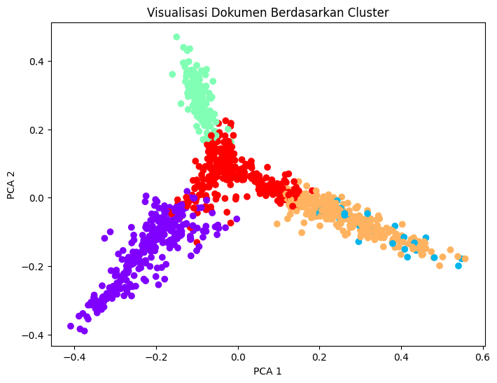

.jpg)
Metode TF-IDF Pada Abstrak#
Membaca dan Menampilkan Dataset#
Langkah pertama adalah membaca file CSV yang berisi dokumen dan versi stemmed-nya menggunakan pandas.read_csv. Nama kolom dibersihkan dari spasi agar mudah diakses. Dengan menampilkan 10 baris pertama (df.head(10)),
import pandas as pd
# Baca file CSV
df = pd.read_csv('/content/drive/MyDrive/PPW/manajemen_abstrak_stemmed.csv')
# Bersihkan nama kolom (jika ada spasi)
df.columns = df.columns.str.strip()
# Ambil kolom 'abstrak_indo' dan 'stemmed', lalu tampilkan 5 baris pertama
df.head(10)
---------------------------------------------------------------------------
FileNotFoundError Traceback (most recent call last)
Cell In[1], line 4
1 import pandas as pd
3 # Baca file CSV
----> 4 df = pd.read_csv('/content/drive/MyDrive/PPW/manajemen_abstrak_stemmed.csv')
6 # Bersihkan nama kolom (jika ada spasi)
7 df.columns = df.columns.str.strip()
File ~/.local/lib/python3.12/site-packages/pandas/io/parsers/readers.py:1026, in read_csv(filepath_or_buffer, sep, delimiter, header, names, index_col, usecols, dtype, engine, converters, true_values, false_values, skipinitialspace, skiprows, skipfooter, nrows, na_values, keep_default_na, na_filter, verbose, skip_blank_lines, parse_dates, infer_datetime_format, keep_date_col, date_parser, date_format, dayfirst, cache_dates, iterator, chunksize, compression, thousands, decimal, lineterminator, quotechar, quoting, doublequote, escapechar, comment, encoding, encoding_errors, dialect, on_bad_lines, delim_whitespace, low_memory, memory_map, float_precision, storage_options, dtype_backend)
1013 kwds_defaults = _refine_defaults_read(
1014 dialect,
1015 delimiter,
(...) 1022 dtype_backend=dtype_backend,
1023 )
1024 kwds.update(kwds_defaults)
-> 1026 return _read(filepath_or_buffer, kwds)
File ~/.local/lib/python3.12/site-packages/pandas/io/parsers/readers.py:620, in _read(filepath_or_buffer, kwds)
617 _validate_names(kwds.get("names", None))
619 # Create the parser.
--> 620 parser = TextFileReader(filepath_or_buffer, **kwds)
622 if chunksize or iterator:
623 return parser
File ~/.local/lib/python3.12/site-packages/pandas/io/parsers/readers.py:1620, in TextFileReader.__init__(self, f, engine, **kwds)
1617 self.options["has_index_names"] = kwds["has_index_names"]
1619 self.handles: IOHandles | None = None
-> 1620 self._engine = self._make_engine(f, self.engine)
File ~/.local/lib/python3.12/site-packages/pandas/io/parsers/readers.py:1880, in TextFileReader._make_engine(self, f, engine)
1878 if "b" not in mode:
1879 mode += "b"
-> 1880 self.handles = get_handle(
1881 f,
1882 mode,
1883 encoding=self.options.get("encoding", None),
1884 compression=self.options.get("compression", None),
1885 memory_map=self.options.get("memory_map", False),
1886 is_text=is_text,
1887 errors=self.options.get("encoding_errors", "strict"),
1888 storage_options=self.options.get("storage_options", None),
1889 )
1890 assert self.handles is not None
1891 f = self.handles.handle
File ~/.local/lib/python3.12/site-packages/pandas/io/common.py:873, in get_handle(path_or_buf, mode, encoding, compression, memory_map, is_text, errors, storage_options)
868 elif isinstance(handle, str):
869 # Check whether the filename is to be opened in binary mode.
870 # Binary mode does not support 'encoding' and 'newline'.
871 if ioargs.encoding and "b" not in ioargs.mode:
872 # Encoding
--> 873 handle = open(
874 handle,
875 ioargs.mode,
876 encoding=ioargs.encoding,
877 errors=errors,
878 newline="",
879 )
880 else:
881 # Binary mode
882 handle = open(handle, ioargs.mode)
FileNotFoundError: [Errno 2] No such file or directory: '/content/drive/MyDrive/PPW/manajemen_abstrak_stemmed.csv'
ambil kolom abstrak_indo stemmed
df[['abstrak_indo', 'stemmed']].head(10)
| abstrak_indo | stemmed | |
|---|---|---|
| 0 | ABSTRAK\r\nSatiyah, Pengaruh Faktor-faktor Pel... | abstrak satiyah pengaruh faktor faktor latih k... |
| 1 | Tujuan penelitian ini adalah untuk mengetahui ... | tuju teliti tahu persepsi brand association la... |
| 2 | Aplikasi nyata pemanfaatan teknologi informasi... | aplikasi nyata manfaat teknologi informasi kom... |
| 3 | Abstrak\r\nPenelitian ini menggunakan metode k... | abstrak teliti guna metode kuantitatif tekan u... |
| 4 | Abstrak\r\n\r\nAththaariq, Pengaruh Kompetensi... | abstrak aththaariq pengaruh kompetensi dosen k... |
| 5 | ABSTRAK\r\nHaryono Arifin, Pengaruh Perilaku K... | abstrak haryono arifin pengaruh perilaku konsu... |
| 6 | ABSTRAK\r\n\tDharma Abidin Syah,Kesimpulan: (1... | abstrak dharma abidin syah simpul dapat pengar... |
| 7 | ABSTRAK\r\n\r\nTujuan penelitian ini adalah un... | abstrak tuju teliti identifikasi variabel vari... |
| 8 | Hasil dari penelitian ini dari perhitungan Cre... | hasil teliti hitung credit risk ratio tunjuk n... |
| 9 | ABSTRAK\r\n\tTujuan penelitian ini adalah mend... | abstrak tuju teliti deskripsi inovasi unggul s... |
Membuat Corpus dari Kolom ‘stemmed’#
Setelah dataset terbaca, kolom ‘stemmed’ diambil dan diubah menjadi list of strings (corpus). Setiap elemen list mewakili satu dokumen yang sudah di-stem, siap untuk dianalisis lebih lanjut. Langkah ini penting agar TF-IDF atau model embedding dapat diterapkan pada teks.
corpus = df['stemmed'].astype(str).tolist()
print(corpus)
['abstrak satiyah pengaruh faktor faktor latih kembang produktivitas kerja dinas laut ikan bangkal bawah bimbing dra hj s anugrahini irawati mm helm buyung aulia s st se m mt upaya tingkat produktivitas kerja tidak mudah salah satu usaha produktivitas tingkat terap program latih kembang sumber daya manusia sdm perlu laksana instansi produktivitas tinggi capai tingkat mampu pegawai kerja efektif efisien ada latih pengembnagan harap pegawai mampu sesuai diri butuh butuh baru atas sikap tingkah laku terampil tahu sesuai tuntut ubah ada latih kembang pegawai baik dapat dukung cipta suasana kerja kondusif instansi sendiri produktivitas kerja tingkat tuju teliti adalah tahu berapa besar pengaruh faktor faktor latih kembang produktivitas kerja dinas laut ikan bangkal ukur menganalisa hubung dua variabel atas teliti guna dekat observasional analitik laku amat langsung responden sebar kuisioner analis teliti rupa teliti populasi responden sampel olah spss versi analis guna metode statistik metode non probality sampling simple random sampling simpul teliti adalah a faktor faktor latih kembang diri beda individu pegawai x hubung analisis jabat x motivasi x partisipasi aktif x seleksi serta x seleksi instruktur x metode latih kembang x punya pengaruh simultan produktivitas kerja pegawai dinas laut ikan kabupaten bangkal bukti nilai koefisien determinasi ganda r r square fhitung lebih besar ftabel b faktor hubung dengan analisis jabat pengaruh parsial produktivitas kerja pegawai dinas laut ikan kabupaten bangkal uji hipotesis dua tunjuk variabel motivasi x bukti karena lihat nilai thitung besar tunjuk seleksi serta x punya pengaruh dominan produktivitas kerja pegawai instansi dinas laut ikan bangkal kata kunci dinas laut ikan faktor faktor latih kembang produktivitas kerja', 'tuju teliti tahu persepsi brand association langgan pakai kiddrock studi distro cranberries pamekasan teliti guna metode deskriptif metode survei populasi teliti adalah langgan pakai kiddrock distro cranberries sampel teliti adalah orang responden distro cranberries bulan desember metode ambil sampel guna adalah sampling aksidental metode kumpul data cara teliti lapang field research bagi kuesioner riset pustaka data teknik olah data guna ialah pengolaha data bantu perangkat lunak spss versi uji validitas uji reabilitas guna skala likert persepsi konsumen brand association diri beberapa dimensi dimensi jamin dimensi identifikasi pribadi dimensi identifikasi sosial dimensi status dimensi sedia terima luas merek dimensi sedia rekomendasi merek hasil analisis tunjuk persepsi brand association langgan pakai kiddrock distro cranberriess lebih apresisasikan dimensi jamin kata kunci brand association presepsi kiddrock cranberries', 'aplikasi nyata manfaat teknologi informasi komunikasi pada bidang layan administrasi akademik guru tinggi salah satu sistem portal akademik universitas trunojoyo madura implementasi proses selenggara sering temu banyak kendala baik teknis maupun non teknis teliti tuju tahu puas langgan dasar analisis indeks puas langgan tinjau webqual tahu fokus baik mutu layan website portal akademik universitas trunjoyo madura dasar importance performance analysis tinjau webqual teliti rupa teliti kuantitaif deskriptif guna untuk tahu gambar deskripsi lukis sistematis faktual akurat kena kualitas layan jasa online beri mahasiswa sampelpenelitianiniadalahmahasiswaangkatan teknik sampel guna teknik stratified random sampling alat analisis indeks puas langgan analisis tingkat penting kerja hasil teliti dapat skor indeks puas langgan ikp besar masuk kategori cukup puas diagram kartesius importance performance tunjuk dapat tiga atribut jadi prioritas utama baik mutu situs portal akademik universitas trunojoyo madura beri informasi administrasi akademik mahasiswa jelas detail ter update ki informasi administrasi akademik situs portal akademik utm percaya ki lalu portal utm guna rasa aman data akademik mahasiswa krs khs transkrip data personal sesuai kip kata kunci website importance performance webqual indeks puas langgan', 'abstrak teliti guna metode kuantitatif tekan uji hipotesis variabel guna teliti pimpin x kompensasi x teliti laksana kantor dinas didik kabupaten sampang sampel guna adalah banyak orang diri pegawai negeri sipil non pns hipotesis pertama jelas variabel bebas sama sama punya hubung signifikan simultan pimpin x kompensasi x kerja pegawai y bukti nilai fhitung tingkat besar nilai r besar hipotesis dua jelas variabel kompensasi variabel punya pengaruh dominan bukti nilai t hitung ini arti dapat pengaruh positif signifikan parsial variabel bebas x variabel ikat y simpul teliti ini adalah uji hipotesis pertama tunjuk dasar uji statistik simultan variabel bebas milik pengaruh signifikan variabel ikat uji hipotesis dua bukti variabel kompensasi x rupa variabel pengaruh dominan kerja pegawai dinas didik kabupaten sampang kata kunci pimpin kompensasi kerja', 'abstrak aththaariq pengaruh kompetensi dosen kerja dosen universitas trunojoyo madura bawah bimbing dr rm moch wispandono s e ms dr muhammad alkirom wildan s e m si teliti tuju analis pengaruh kompetensi pedagogik x kompetensi profesional x kompetensi sosial x kompetensi pribadi x variabel ikat kerja dosen universitas trunojoyo madura data guna teliti data primer data sebut oleh hasil sebar kuesioner jadi responden teliti adalah dosen universitas trunojoyo madura sudah sertifikasi aktif mulai tahun jumlah dosen teknik ambil sampel guna judgmental sampling guna metode analisis regresi linier ganda hasil teliti telah laku dasar hasil analisis simpul kompetensi pedagogik x kompetensi profesional x kompetensi sosial x kompetensi pribadi x pengaruh signifikan variabel ikat kerja dosen y baik simultan maupun parsial nilai koefisiensi determinasi ganda r tunjuk nilai besar arti kerja dosen pengaruh ubah semua variabel bebas telah teliti sisa pengaruh variabel tidak teliti variabel yang milik pengaruh dominan adalah variabel kompetensi pedagogik nilai signifikansi besar milik nilai beta besar kata kunci kompetensi pedagogik kompetensi profesional kompetensi sosial kompetensi pribadi kerja dosen', 'abstrak haryono arifin pengaruh perilaku konsumen putus beli produk honda merek vario studi dealler surya agung motor bangkal tuju teliti tahu berapa besar pengaruh perilaku konsumen putus beli honda merek vario dealer surya agung motor bangkal tahu variabel mana antara perilaku konsumen diri budaya sosial pribadi psikologis dominan putus beli konsumen honda merek vario teliti guna dekat kuantitatif laku amat langsung responden sebar kuesioner dianalisa teliti rupa teliti guna populasi banyak responden konsumen laku beli honda merek vario dealer surya agung motor bangkal jadi responden analis spss versi simpul teliti adalah uji hipotesis pertama tunjuk variabel perilaku konsumen budaya sosial pribadi psikologis pengaruh simultan putus beli honda merek vario uji hipotesis dua tunjuk variabel psikologis adalah variabel pengaruh dominan kata kunci budaya sosial pribadi psikologis putus beli', 'abstrak dharma abidin syah simpul dapat pengaruh signifikan variabel tipe pimpin autoritarian laissez faire demokratis simultan variabel prestasi kerja pegawai kantor camat pangarengan kabupaten sampang hasil uji f anova tunjuk nilai fhitung ftabel variabel tipe pimpin autoritarian laissez faire demokratis simultan beri kontribusi besar prestasi kerja pegawai dapat pengaruh signifikan variabel pimpin tipe autoritariansecara parsial prestasi kerja pegawaidikantor camat pangarengan kabupaten sampang hasil uji t tunjuk nilai t hitung t tabel parsial variabel pimpin tipe autoritarian beri kontribusi besar variabel prestasi kerja pegawai dapat pengaruh signifikan variabel pimpin tipe laissez fairesecara parsial prestasi kerja pegawaidikantor camat pangarengan kabupaten sampang hasil uji t tunjuk nilai t hitung t tabel parsial variabel pimpin tipe laissez faire beri kontribusi besar variabel prestasi kerja pegawai dapat pengaruh signifikan variabel pimpin tipe demokratis parsial prestasi kerja pegawaidikantor camat pangarengan kabupaten sampang hasil uji t tunjuk nilai t hitung t tabel parsial variabel pimpin tipe demokratis beri kontribusi besar variabel prestasi kerja pegawai variabel tipe demokratis punya nilai koefisien determinasi lebih besar variabel bebas lai rupa variabel dominan pengaruh variabel prestasi kerja pegawai kantor camat pangarengan kabupaten sampang kata kunci tipe pimpin prestasi kerja pegawai', 'abstrak tuju teliti identifikasi variabel variabel pengaruh puas konsumen baik simultan maupun parsial metode guna metode kuantitatif populasi seluruh konsumen depot barokah prambon guna layan depot barokah prambon dengan jumlah sampel banyak responden guna teknik accidental sampling teknik analisis guna adalah analisis regresi linier ganda hasil teliti tunjuk variabel independen diri variabel bukti fisik x kehandalan x jamin x parsial pengaruh signifikan puas konsumen y variabel independen daya tanggap x empati x pengaruh signifikan variabel dependen puas konsumen y variabel jamin x punya pengaruh paling besar puas konsumen y simultan tunjuk semua variabel independen kualitas layan x cara simultan pengaruh signifikan variabel dependen puas konsumen y kata kunci kualitas layan bukti fisik kehandalan daya tanggap jamin empati puas konsumen', 'hasil teliti hitung credit risk ratio tunjuk npl pd bpr bank daerah lamongan lama empat tahun alami turun lihat tingkat resiko tahun besar besar tahun besar besar tahun besar besar tahun besar besar simpul teliti ini adalah tingkat resiko pd bpr bank daerah lamongan dari tahun alami turun tingkat resiko pada tahun npl dikatagorikan baik dasar tentu bank indonesia dengan syarat npl maksimal besar kata kunci credit risk ratio non performing loan', 'abstrak tuju teliti deskripsi inovasi unggul saing kerja pasar terap inovasi unggul saing optik reza lamongan teliti guna deskriptif kualitatif dekat fenomenologi teknik kumpul data guna adalah wawancara observasi guna dokumen teknik analisis data laku cara data reduction data display conclusion drawing verification hasil teliti tunjuk usaha optik reza lamongan laku buah inovasi unggul saing dalam tingkat kerja pasar optik reza lamongan terap inovasi unggul saing volume omzet jual makin tingkat bukti tahun tahun terus alami tingkat produk tawar makin alami baik pangsa pasar makin luas segala daerah ada jawa timur dan jawa tengah kata kunci inovasi unggul saing kerja pasar', 'abstrak teliti ungkap beberapa rumus masalah antara bagaimana lapor biaya kualitas minimal jadi risiko produk cacat cv kapuas inti sarana bagaimana pengaruh lapor biaya kualitas tingkat profitabilitas cv kapuas inti sarana teliti tuju tahu ada pengaruh lapor biaya kualitas jadi risiko produk cacat tingkat profitabilitas usaha teliti guna metode deskriptif gambar suatu fenomena deskripsi jumlah variabel asal data masa lalu jadi masa sekarang hasil teliti adalah lapor biaya kualitas periodik perinci pengaruh tingkat profitabilitas usaha dapat jadi lapor biaya kualitas perinci kurang jadi risiko produk cacat apabila produk cacat kurang akan pengaruh tingkat jual yang langsung akan pengaruh tingkat profitabilitas usaha cara seluruh kata kunci risiko produk cacat biaya kualitas profitabilitas', 'tuju teliti tahu pengaruh variabel retailing mix diri lokasi merchandise harga atmosfer gerai layan promosi putus beli konsumen tahu variabel retailimg mix pengaruh lebih besar putus beli konsumen idola mart kwanyar dekat teliti guna teliti kuantitatif teliti landas filsafat positivisme tuju uji hipotesis telah tetap sampel teliti konsumen laku beli idola mart kwanyar jumlah konsumen metode ambil sampel guna purposive sampling uji instrumen guna uji validitas reliabilitas uji asumsi klasik teknik analisis data guna untuk uji hipotesis adalah guna regresi linier ganda pakai uji f uji t dasar hasil teliti tunjuk nilai adjusted r square besar arti besar pengaruh variabel bebas variabel ikat adalah sisa pengaruh variabel teliti teliti dasar uji f variabel retailing mix diri lokasi merchandise harga atmosfer gerai layan promosi simultan pengaruh signifikan putus beli idola mart kwanyar dasar uji t tahu cara parsial variabel lokasi merchandise harga layan pengaruh signifikan variabel ikat sedang variabel atmosfer gerai promosi pengaruh variabel ikat variabel yang pengaruh lebih besar adalah variabel harga kata kunci retailing mix lokasi merchandise harga atmosfer gerai layan promosi putus beli', 'pln rupa badan usaha milik negara gerak bidang sedia listrik nasional pln kelola bisnis lalu praktek paktek baik optimalisasi sumbr daya manusia milik salah satu cara lalu proses kembang karir tuju teliti tahu dapat pengaruh signifikan kembang karir semangat kerja karyawan pln cabang bangkal parsial cara simultan teliti sifat teliti populasi besar populasi teliti besar responden uji kuesioner guna adalah uji validitas uji reliabilitas teknik analisis data guna analisis regresi linier ganda uji t uji f koefisien determinasi hasil teliti nyata variabel kembang karir diri prestasi kerja kenal setia orgnisasional mentor sponsor sempat tumbuh milik pengaruh positif semangat kerja karyawan variabel atas prestasi kerja rupa variabel milik pengaruh paling kuat semangat kerja karyawan pln cabang bangkal kata kunci kembang karir semangat kerja karyawan pln', 'tuju teliti adalah identifikasi variabel variabel pengaruh minat ulang nasabah bri guna layan internet banking bri baik parsial maupun simultan teliti laku metode kuantitatif populasi teliti adalah semua nasabah bri kota bangkal guna layan internet banking bri oleh sampel banyak responden ambil teknik purposive sampling teknik analisis guna regresi linier ganda hasil teliti tunjuk simultan jadi pengaruh signifikan variabel bebas persepsi manfaat persepsi mudah aman sedia fitur minat ulang guna internet banking cara parsial tunjuk semua variabel bebas pengaruh positif signifikan minat ulang guna layan internet banking pada variabel persepsi mudah pada variabel persepsi mudah kata kunci persepsi manfaat persepsi mudah aman sedia fitur minat ulang guna internet banking', 'abstrak tuju teliti tahu pengaruh variabel current ratio return on equity firm size leverage business risk bijak deviden usaha manufaktur daftar bursa efek indonesia periode dekat teliti guna teliti kuantitatif sampel teliti adalah usaha manufaktur bagi deviden turut turut lama periode metode ambil sampel guna adalah purposive sampling uji instrumen guna uji asumsi klasik teknik analisis data guna uji hipotesis adalah guna regresi linier ganda pakai uji f uji t dasar hasil teliti tunjuk nilai r square besar dasar uji f variabel current ratio return on equity firm size leverage businees risk simultan pengaruh signifikan dividend payout ratio dasar uji t tahu cara parsial variabel current ratio firm size businees risk pengaruh signifikan dividend payout ratio variabel return on equity leverage pengaruh signifikan dividend payout ratio kata kunci current ratio return on equity firm size leverage businees risk', 'tuju teliti tahu pengaruh celebrity endorser iwan fals minat beli produk top coffee studi masyarakat sumur kembang lurah pejagan camat bangkal kabupaten bangkal teliti guna metode kuantitatif dekat survey populasi teliti masyarakat sumur kembang lurah pejagan camat bangkal kabupaten bangkal karena menngunakan metode sampling aksidental teliti dapat responden bulan desember metode kumpul data cara teliti lapang bagi kuesioner riset pustaka teknik olah data guna adalah olah data bantu erangkat lunak spss versi for windows guna skala likert hasil teliti sebut hasil uji f simultan tunjuk variabel bebas diri trustworthiness x expertise x attractiveness x respect x similarity x pengaruh variabel ikat minet beli y produk top coffee kemudian hasil uji t parsial bukti variabel bebas diri trustworthiness x expertise x attractiveness x respect x similarity x pengaruh signifikan minat beli y produk top coffee simpul dari lima variabel bebas punya pengaruh lebih besar miant beli y produk top coffee adalah variabel trustworthiness x', 'ali rahbini pengaruh harga kualitas layan puas belanja swalayan tom jerry bangkal bawah bimbing pribanus wantara nirma kurriwati teliti tuju ukur pengaruh harga kualitas layan puas belanja swalayan tom jerry laku konsumen belanja swalayan tom jerry jumlah responden teliti banyak responden data kumpul lanjut laku analisis regresi linier ganda guna alat bantu software spss hasil analisis uji hipotesis oleh ikut harga kualitas layan punya pengaruh simultan puas belanja swalayan tom jerry cara parsial variabel harga kehandalan daya tanggap jamin empati bukti fisik punya pengaruh parsial puas belanja swalayan tom jerry bangkal variabel harga rupa variabel dominan pengaruh puas belanja swalayan tom jerry bangkal kata kunci harga andal daya tanggap jamin empati bukti fisik', 'baur ecer rupa salah satu langkah pasar hasil usaha baik gerak bidang produksi barang maupun jasa indah swalayan bangkal rupa salah satu bisnis ecer gerak jual beli barang perlu perhati perilaku konsumen ambil putus variabel baur ecer guna teori man evans foster diri lokasi layan produk harga suasana harga promosi tuju teliti adalah tahu pengaruh baur ecer diri lokasi layan produk harga suasana harga promosi simultan putus beli konsumen studi indah swalayan bangkal tahu variabel baur ecer pengaruh lebih besar putus beli studi indah swalayan bangkal teliti guna dekat dekat kuantitatif teknik ambil sampel guna purposive sampling responden teknik kumpul data wawancara pustaka kuesioner guna skala likert ukur jawab responden uji instrumen guna uji validitas uji reliabilitas uji asumsi klasik teknik analisis data guna analisis regresi linier ganda variabel guna lebih dua variabel dengan uji f uji t hasil teliti tunjuk variabel baur ecer diri lokasi layan produk harga suasana harga promosi pengaruh simultan putus beli studi indah swalayan bangkal tidak semua variabel baur ecer pengaruh parsial putus beli indah swalayan bangakalan variabel harga pengaruh lebih besar putus beli indah swalayan bangkal kata kuci baur ecer lokasi layan produk harga suasana toko karyawan promosi putus beli', 'abstrak teliti tuju ukur efektivitas iklan guna consumer decision model cdm laku mahasiswa universitas trunojoyo madura jumlah responden teliti banyak orang mahasiswa data kumpul lanjut laku analisis jalur path analysis guna alat bantu software spss hasil analisis uji hipotesis oleh ikut pengaruh langsung dapat pengaruh langsung signifikan pengaruh langsung signifikan lanjut pengaruh langsung dapat pengaruh langsung signifikan pengaruh tidak langsung tidak signifikan kata kunci cdm analisis jalur pesan iklan kenal merek yakin konsumen sikap konsumen niat beli beli nyata', 'abstrak tuju teliti tahu variabel diri kompensasi finansial langsung kompensasi finansial langsung kompensasi nonfinansial simultan milik pengaruh signifikan kerja karyawan tahu variabel mana kompensasi finansial langsung kompensasi finansial langsung kompensasi nonfinansial pengaruh dominan kerja karyawan untuk bukti hipotesis teliti alat analisis guna adalah regresi linier ganda bantu spss hasil uji tunjuk nilai fhitung besar nilai signifikan fhitung besar p arti pengaruh signifikan variabel kompensasi finansial langsung kompensasi finansial langsung kompensasi nonfinansial simultan kerja karyawan pt pos indonesia persero kantor cabang bangkal kata kunci kompensasi kerja karyawan', 'abstrak teliti tuju teliti didik latih pengaruh parsial simultan rangka tingkat produktivitas karyawan meniliti variabel didik pengaruh dominan tingkat produktivitas karyawan bukti hipotesis teliti alat analisis guna regresi linier ganda bantu spss hasil uji tunjuk nilai fhitung besar nilai signifikan fhitung besar p arti pengaruh signifikan variabel didik latih sama sama tingkat produktivitas karyawan pt pos indonesia persero kantor cabang bangkal koefisien determinasi ganda r r square besar arti cara sama sama ubah variabel produktivitas karyawan pt pos indonesia persero cabang bangkal sebab variabel didik latih sisa sebab variabel masuk model dari hasil teliti variabel didik bukti benar yang pengaruh dominan nilai beta besar', 'abtrak uswatun khasanah pengaruh etos kerja presatasi kerja karyawan pt pln persero diatribusi jawa timur area mojokerto kumpul data teliti adalah mengunakan survey kuesioner kuesioner bagi bagi karyawan pt pln persero distribusi jawa timur area mojokerto jumlah karyawan teknik analisis data guna meguji hipotesis adalah guna regresi linier ganda pakai uji f uji t hasil analisis teliti nyata simultan guna uji f etos kerja diri semanagt kerja disiplin kerja kerja sama sama sama punya pengaruh signifikan prestasi kerja karyawan pt pln persero distribusi jawa timur area mojokerto parsial guna uji t tunjuk variabel kerja sama semangat kerja pengaruh signifikan variabel disiplin kerja pengaruh signifikan prestasi kerja karyawan pt pln persero distribusi jawa timur area mojokerto variabel etos kerja rupa variabel dominan pengaruh prestasi kerja karyawan dapat simpul untuk tingkat prestasi kerja karyawan pt pln persero distribusi jawa timur area mojokerto tingkat etos kerja kerja sama semangat kerja kata kunci etos kerja prestasi kerja', 'muncul asumsi lahir budaya emis sebab ada budaya paling pengaruh anak pilih profesi jadi emis budaya lingkung keluarga budaya mampu pengaruh sikap peria orang ini sebab biasa laku hari hidup hari hari dasar hasil teliti pengaruh budaya perilaku emis anak kamal kab bangkal kata sangat prihatin ini lihat dua variabel variabel budaya diri tiga indikator ukur suatu budaya antara etnografis tentang persepsi emis sosialisasi ada peran keluarga lingkung sebab profesi bagai emis modus operandi bentuk emis praktek emis jaring emis ada desa sebut variable perilaku diri dua indicator behavioral sociology terang tingkah laku jadi masa sekarang lalu mungkin akibat jadi masa akan datang teory exchange of social terang suatu kecewa jadi hidup manusia sumber perilaku pihak dasar hasil teliti dapat perilaku anak sebab kecewa adnya faktor dorong budaya keluarga lingkung kata kunci perilaku sosial budaya', 'abstrak teliti tuju tahu pengaruh faktor faktor stres kerja terhdap disiplin kerja laku dosen universitas trunojoyo madura jumlah responden teliti banyak orang dosen data kumpul lanjut laku analisis regresi linier ganda guna alat bantu software spss hasil analisis uji hipotesis oleh ikut ada pengaruh faktor faktor stres kerja diri stressor lingkung fisik stressor individu stressor kelompok stressor organisasi punya pengaruh disiplin kerja dosen variabel stressor lingkung fisik rupa variabel dominan pengaruh disiplin kerja dosen universitas trunojoyo madura katakunci stressor lingkung fisik stressor individu stressor kelompok stressor organisasi disiplin kerja', 'dekat teliti guna teliti dekat kuantitatif populasi teliti adalah usaha liquid daftar bursa efek indonesia teknik tari sampel guna metode purpossive sampling kemudian analis guna uji regresi linier ganda guna bantu alat analisis statistical program for service solution spss versi hipotesis teliti adalah duga dapat pengaruh parsial maupun simultan variabel rasio likuiditas current ratio struktur modal debt to equity ratio profitabilitas roe usaha liquid daftar bursa efek indonesia hasil teliti tunjuk variabel current ratio parsial milik pengaruh signifikan profitabilitas roe variabel debt to equity ratio parsial milik pengaruh tidak signifikan profitabilitas roe dasar hasil uji simultan uji f dapat hasil current ratio debt to equity ratio tidak milik pengaruh tidak signifikan profitabilitas pada usaha usaha lq kata kunci likuiditas current ratio struktur modal debt to equity ratio profitabilitas roe', 'ana agustini dewi analisis kerja uang usaha daftar bei akuisisi studi usaha manufaktur melakuukan akuisisi tahun jurus ekonomi manajemen fakultas ekonomi universitas trunojoyo madura teliti tuju analis beda kerja uang usaha manufaktur akuisisi teliti laku usaha manufaktur daftar bursa efek indonesia populasi teliti adalah seluruh usaha manufaktur daftar bursa efek indonesia laku akuisisi tahun diri usaha populasi sebut pilih sample guna metode purposive sampling dasar lima kriteria usaha manufaktur daftar bei tahun tahun sedia lapor uang tahun tahun aktivitas akuisisi laku akuisisi tahun rupa usaha akuisisi ambil alih asset usaha sebut akuisisi langsung lalu anak usaha dasar kriteria telah sebut oleh usaha sampel teliti sampel laku lama empat tahun belum akuisisi tahun tahun dan empat tahun sudah akuisisi variabel teliti adalah kerja uang usaha ukur guna alat analisis upa current ratio total asset turnover debt ratio return on investmen dan earning per share lima rasio sebut kemudian analisis guna metode analisis paired samples t test', 'tuju teliti tahu pengaruh variabel relationship marketing diri untung sama komitmen komunikasi benar loyalitas nasabah adira finance untuk tahu variabel relationship marketing pengaruh lebih besar loyalitas nasabah adira finance wilayah surabaya barat dasar uji f variabel relationship marketing diri untung sama komitmen komunikasi benar simultan pengaruh signifikan loyalitas nasabah adira finance wilayah surabaya barat dasar uji t tahu cara parsial variabel untung sama komitmen benar pengaruh signifikan variabel ikat variabel komunikasi pengaruh negatif variabel ikat variabel pengaruh lebih besar adalah variabel komitmen kata kunci relationship marketing untung sama komitmen komunikasi benar loyalitas', 'tuju teliti tahu berapa besar pengaruh variabel self efficacy diri magnitude generality strength prestasi akademik mahasiswa prestasi universitas trunojoyo madura mahasiswa ambil adalah mahasiswa ikut mawapres universitas trunojoyo madura banyak orang teknik analisis guna analisis regresi linier ganda hipotesis teliti adalah self efficacy diri variabel magnitude generality strength pengaruh prestasi akademik dasar uji hipotesis terima temu teliti tunjuk variabel self efficacy teridiri magnitude generality strength pengaruh signifikan prestasi akademik mawapres universitas trunojoyo madura oleh nilai r arti variabel magnitude generality strength beri pengaruh besar prestasi akademik sisa besar pengaruh faktor di luar variabel teliti kata kunci self efficacy prestasi akademik', 'muhammad sholeh pengaruh iklan televisi putus konsumen pakai kartu seluler xl camat geger bawah bimbing bambang setiyo pambudi se mm suyono se m s m teliti tuju tahu pengaruh iklan putus konsumen guna kartu seluler xl laku masyarakat camat geger kabupaten bangkal jumlah responden teliti banyak responden data kumpul lanjut laku analisis regresi linier ganda guna alat bantu software spss hasil analisis uji hipotesis oleh ikut pengaruh iklan diri isi pesan struktur pesan format pesan sumber pesan punya pengaruh signifikan putus konsumen guna kartu seluler xl pada uji parsial tahu variabel isi pesan rupa variabel dominan beri pengaruh putus konsumen guna kartu seluler xl camat geger keywords isi pesan struktur pesan format pesan sumber pesan', 'objek teliti adalah beli produk xl camat bangkal sampel banyak konsumen teknik analisis data guna meguji hipotesis adalah guna regresi linier ganda pakai uji f uji t dasar hasil teliti model regresi linier ganda sistematis hasil analisis teliti tunjuk simultan guna uji f baur pasar diri produk harga promosi distribusi sama sama punya pengaruh signifikan putus beli produk xl camat bangkal parsial guna uji t tunjuk variabel promosi distribusi pengaruh signifikan variabel produk harga pengaruh signifikan putus beli produk xl camat bangkal variabel distribusi pengaruh putus beli dapat simpul untuk tingkat putus beli produk xl camat bangkal tingkat strategi baur pasar segi promosi distribusi', 'intention of this research is to know influence of location of is effort x and service quality x decision of purchasing y and also to know variable which such having bigger ppengaruh at decision of purchasing at home eat depot of soto glorious asih of lamongan this research use quantitative method with approach of survey this research population is entire all consumer doing conducting purchasing at home eat depot of soto glorious asih of lamongan method the used is method of accidental sampling hence this research get responder method data collecting research into library result of this research mention location of is effort x and service quality x influence variable tied that is decision of purchasing y while result of from test of t parsial prove that free variable consisting of location of is effort x and service quality x by simultan or together influence variable decision of purchasing y of this parsial research can be concluded that from both free variable a location of is effort x which have bigger influence to decision of purchasing y is the quality of service x keywords business location quality of service purchase decision', 'tuju teliti adalah tahu tingkat bangkrut usaha makan minum daftar bursa efek indonesia laku teliti maka lihat usaha sebut kondisi bangkrut tidak guna analisis altman laku oleh ingat awal tanda tanda bangkrut metode teliti guna teliti adalah metode diskriptif teliti ambil usaha makan minum daftar bursa efek indonesia periode jumlah usaha jadi populasi teliti teliti guna teknik purposive sampling hasil usaha sampel teliti hasil teliti guna analisis altman z score usaha makan minum daftar bursa efek indonesia sebut tahun dapat usaha bangkrut usaha kritis usaha sehat dapat usaha bangkrut usaha kritis usaha sehat dapat usaha bangkrut usaha kritis usaha sehat dapat usaha bangkrut usaha kritis usaha sehat dapat usaha usaha kritis usaha sehat kata kunci bangkrut analisis altman z score', 'naik harga terlalu tinggi sebab minta beli saham sebut alami turun akhir sebab harga saham sebut jadi fluk tuatif hindar kondisi sebut laku usaha turun harga saham kisar harga tarik minat investor untuk beli lalu pecah saham stock split dasar teliti kena stock split sering laku masalah teliti ada hasil teliti beda beda perlu teliti lebih lanjut teliti laku usaha daftar bei laku pecah saham tahun teliti guna analisis uji paired sample test periode amat adalah hari t hari stock split t hari stock split metode penetuan sampel guna purposive sampling dasar hasil teliti bahwa pada hipotesis pertama dapat beda rata rata return saham dan pecah saham hipotesis dua tunjuk dapat beda tva dan pecah saham arti harga saham yang tidak terlalu tinggi buat volume dagang saham makin tingkat kata kunci stock split gera harga saham volume dagang saham tva', 'pengaruh bundling strategy putus beli restoran quick chicken cabang raya dukuh kupang surabaya bimbing pribanus wantara yustina chrismardani tuju teliti tahu pengaruh bundling strategy diri focus bundling x form bundling x putus beli y untuk tahu variabel mana punya pengaruh lebih besar bundling strategy produk makan cepat saji restoran quick chicken cabang raya dukuh kupang surabaya populasi teliti adalah seluruh konsumen beli makan cepat saji bentuk bundling paket restoran quick chicken cabang raya dukuh kupang surabaya metode guna teliti adalah metode accidental sampling jumlah responden banyak responden teliti laku bulan desember metode kumpul data cara teliti lapang mebagikan kuesioner riset pustaka teknik olah data mengunakan bantu perangkat lunak spss versi for windows guna skala likert hasil teliti sebut hasil uji f simultan tunjuk variabel bebas diri focus bundling x form bundling x pengaruh variabel ikat putus beli y produk makan cepat saji bentuk paket restoran quick chicken cabang raya dukuh kupang surabaya hasil uji t parsial bukti variabel bebas diri focus bundling x form bundling x pengaruh signifikan putus beli y produk makan cepat saji bentuk paket restoran quick chicken cabang raya dukuh kupang surabaya simpul dari dua variabel bebas punya pengaruh lebih besar putus beli y produk makan cepat saji bentuk paket restoran quick chicken cabang raya dukuh kupang surabaya adalah focus bundling x kata kunci bundling strategy putus beli', 'suatu putus investasi selalu hubung untung risiko investor rasional investasi dana saham efisien saham punya return tinggi risiko minimal sampel dalam teliti guna saham aktif dasar frekuensi dagang bagi dividen lama tahun turut turut tuju teliti untuk bentuk portofolio optimal tahu beda return risiko saham kandidat non kandidat portofolio hasil teliti tunjuk dapat saham jadi kandidat portofolio saham teliti nilai cut off point besar portofolio optimal bentuk saham punya excess returns to beta erb lebih besar ci oleh saham masuk hitung portofolio optimal komposisi proporsi dana masing masing saham pt adaro energy tbk besar pt gudang garam tbk besar pt hm sampoerna tbk besar pt astra otopart tbk besar pt multi bintang indonesia tbk besar pt astra agro lestari tbk besar pt goodyear indonesia tbk besar pt indika energy tbk besar pt united tractors tbk besar pt pabrik kertas tjiwi kimia tbk besar pt indofood sukses makmur tbk besar pt astra international tbk besar pt bank negara indonesia tbk besar return portofolio besar risiko portofolio besar excess return to beta portofolio besar dasar hasil atas simpul guna metode indeks tunggal portofolio benar benar optimal oleh dengan ada hitung aktiva bebas risiko kata kunci model indeks tunggal portofolio optimal expected return excess return to beta cut off point', 'teliti tuju tahu pengaruh rekrutmen kembang karir terhdap kerja laku karyawan kantor pusat pt gresik cipta sejahtera kabupaten gresik jumlah responden teliti banyak orang karyawan data kumpul lanjut laku analisis regresi linier ganda guna alat bantu software spss hasil analisis uji hipotesis oleh ikut variabel rekrutmen x variabel kembang karir x punya pengaruh simultan kerja karyawan variabel rekrutmen x rupa variabel dominan pengaruh kerja karyawan kantor pusat pt gresik cipta sejahtera kabupaten gresik katakunci rekrutmen kembang karir kerja', 'abstrak hening ary putra pengaruh iklan online lalu media facebook putus beli pakai studi mahasiswa fakultas ekonomi bisnis universitas trunojoyo madura pemimbing bambang setiyo pambudi s e mm suyono s e m s m tuju teliti adalah identifikasi variabel sikap iklan online daya ingat iklan online frekuensi klik iklan online pengaruh putus beli pakai mahasiswa fakultas ekonomi bisnis universitas trunojoyo madura baik simultan maupun parsial hipotesis teliti adalah faktor faktor pengaruh putus beli pakai sikap iklan online daya ingat iklan online frekuensi klik iklan online pengaruh signifikan putus beli pakai baik simultan maupun parsial teliti laku metode kuantitatif populasi teliti adalah mahasiswa fakultas ekonomi bisnis universitas trunojoyo madura oleh sampel banyak responden ambil guna metode accidental sampling cara sebar kuesioner simpul teliti adalah simultan pengaruh signifikan variabel bebas sikap iklan online daya ingat iklan online frekuensi klik iklan online putus beli pakai parsial tunjuk vairabel sikap iklan online daya ingat iklan online pengaruh positif signifikan putus beli pakai variabel frekuensi klik pada iklan online pengaruh positif signifikan putus beli pakai parsial variabel daya ingat punya pengaruh paling besar putus beli pakai kata kunci sikap daya ingat frekuensi klik putus beli pakai', 'habibah pengaruh ekuitas merek putus beli notebook acer bawah bimbing bapak bambang setiyo pambudi se mm bapak suyono se m sm notebook merek acer rupa notebook punya ekuitas merek baik bukti kuasa acer hamper pasar notebook indonesia dasar nyata ada pasar teliti punya tuju tahu berapa besar ekuitas merek persepsi konsumen lokasi teliti laksana fakultas ekonomi universitas trunojoyo madura penelitan rupa penelitan kuantitatif dekat survey jumlah sampel konsumen teliti variabel bebas diri sadar merek asosiasi merek persepsi kualitas loyalitas merek persepsi nilai variabel ikat putus beli konsumen metode teliti sampel guna purposive sampling uji instrument guna uji validitas realibilitas uji asumsi klasik metode analisis data guna untuk uji hipotesis guna regresi linier ganda pakai uji f uji t hasil penelitan tunjuk variabel nilai adjusted r square besar arti besar pengaruh variabel bebas variabel ikat sisa pengaruh variabel teliti teliti dasar uji f variabel ekuitas merek diri dari sadar merek asosiasi merek persepsi kualitas loyalitas merek persepsi nilai simultan pengaruh signifikan putus beli mahasiswa fakultas ekonomi universitas trunojoyo madura dasar uji t tahu cara parsial sadar merek asosiasi merek persepsi kualitas loyalitas merek persepsi nilai pengaruh signifikan variabel ikat sedang variabel persepsi nilai pengaruh variabel ikat variabel yang pengaruh dominan persepsi kualitas kata kunci ekuitas merek putus beli', 'atribut produk beri pandang gambar jelas produk sendiri dealer surya agung motor bangkal rupa salah satu dealer resmi honda gerak jual sepeda motor perlu perhati perilaku konsumen ambil putus beli atribut produk guna teori kotler armstrong diri kualitas produk fitur produk gaya desain produk tuju teliti adalah identifikasi variabel variabel pengaruh atribut produk putus beli sepeda motor honda supra x baik parsial maupun simultan teliti guna metode kuantitatif populasi teliti adalah konsumen sepeda motor honda supra x dealer surya agung motor bangkal oleh sampel responden ambil guna metode purposive sampling cara sebar kuesioner hipotesis teliti adalah variabel variabel atribut produk pengaruh putus beli kualitas produk fitur produk gaya desain produk pengaruh signifikan putus beli sepeda motor honda supra x baik simultan maupun parsial hasil teliti tunjuk uji f variabel bebas atribut produk diri kualitas produk fitur produk gaya desain produk pengaruh simultan putus beli sepeda motor honda supra x studi dealer surya agung motor bangkal uji t tahu parsial variabel kualitas produk fitur produk gaya desain produk putus beli sepeda motor honda supra x studi dealer surya agung motor bangkal cara parsial variabel kualitas produk mempunyah pengaruh dominan putus beli sepeda motor honda supra x studi dealer surya agung motor bangkal kata kunci atribut produk putus beli', 'abstrak tuju teliti tahu pengaruh variabel kualitas layan diri profesionalisme terampil x sikap perilaku x aksesibilitas fleksibilitas x reliabilitas percaya x reputasi kredibilitas x service recovery x serviscape x puas pasien y rumah sakit umum padu surabaya untuk tahu variabel kualitas layan pengaruh lebih besar puas pasien rumah sakit umum padu surabaya dasar hasil teliti tunjuk nilai r square besar arti besar pengaruh variabel bebas variabel ikat sisa pengaruh variabel teliti teliti dasar uji f variabel variabel kualitas layan diri profesionalisme terampil x sikap perilaku x aksesibilitas fleksibilitas x reliabilitas percaya x reputasi kredibilitas x service recovery x servisecape x simultan pengaruh signifikan puas pasien y rumah sakit umum padu surabaya dasar uji t tahu cara parsial variabel profesionalisme terampil x sikap perilaku x aksesibilitas fleksibilitas x reliabilitas percaya x reputasi kredibilitas x servisecape x pengaruh signifikan variabel ikat sedang variabel service recovery x pengaruh signifikan hadap puas pasien y rumah sakit umum padu surabaya variabel yang pengaruh lebih besar adalah variabel service recovery x kata kunci kualitas layan puas pasien', 'tuju penlitian adalah tahu variabel iklan dasar konsep aida pengaruh signifikan putus beli helm ink kota bangkal tahu variabel konsep iklan aida mana pengaruh paling dominan putus beli helm ink kota bangkal teliti guna dekat dekat kuantitatif usaha tahu bagaimana pengaruh iklan putus beli konsumen helm ink bangkal teknik ambil sampel guna purposive sampling responden teknik kumpul data kuesioner pustaka guna skala likert ukur jawab responden uji instrumen guna uji validitas uji reliabilitas uji asumsi klasik teknik analisis data guna analisis regresi linier ganda variabel guna lebih dua variabel dengan uji f uji t hasil teliti tunjuk variabel iklan diri attention interest desire action pengaruh simultan putus beli konsumen helm ink bangkal variabel attention pengaruh paling dominan putus beli konsumen helm ink bangkal kata kunci iklan attention interest desire action putus beli konsumen', 'abstrak tuju teliti tahu harga kualitas produk pengaruh simultan putus beli deterjen rinso anti noda tahu harga kualitas produk pengaruh parsial putus beli deterjen rinso anti noda untuk tahu variabel pengaruh dominan putus beli deterjen rinso anti noda dasar hasil teliti tunjuk nilai adjusted r square besar arti besar pengaruh variabel bebas variabel ikat sedang sisa pengaruh variabel teliti teliti dasar uji f harga kualitas produk simultan pengaruh signifikan putus beli deterjen rinso anti noda studi mahasiswa universitas trunojoyo madura domisili desa telang bangkal dasar uji t tahu cara parsial variabel harga kualitas produk pengaruh signifikan variabel ikat variabel yang pengaruh dominan adalah variabel harga kata kunci harga kualitas produk putus beli', 'abstrak tuju teliti adalah analis atribut kualitas layan dasar tingkat penting tingkat kerja guna sepeda motor jembatan suramadu untuk tahu puas guna sepeda motor kualitas layan jembatan suramadu dasar hasil teliti dapat diagram kartesius importance performance tunjuk dapat enam atribut jadi fokus utama tidak puas responden lampu terang jembatan suramadu pasang nyala baik malam hari tugas jasa marga tampil rapi kondisi jalan jembatan suramadu mulus lubang tugas tiket teliti beri uang kembali pt jasa marga beri jamin asuransi celaka guna sepeda motor jembatan suramadu tugas patroli sungguh sungguh perhati penting guna sepeda motor jadi mogok ban bocor kata kunci kualitas layan puas importance performance', 'ulfiyatun mutohharoh analisis faktor faktor tentu preferensi belanja online produk fashion studi mahasiwa fakultas ekonomi trunojoyo journal of economics program studi manajemen fakultas ekonomi universitas trunojoyo madura universitas trunojoyo madura bawah bimbing drs mohamad tambrin mm yustina crismardani s si mm internet rupa suatu sistem informasi global bas komputer internet perlahan lahan geser budaya beli produk cara konvensional jadi lebih praktis modern lalu suatu cara sebut belanja online rilis detik com hampir mahasiswa pernah laku beli produk online sebut produk beli mahasiswa bagi besar produk fashion teliti punya tuju analis faktor faktor tentu preferensi belanja online produk fashion mahasiswa fakultas ekonomi universitas trunojoyo madura untuk tahu faktor timbang menetukan preferensi belanja online produk fashion mahasiswa fakultas ekonomi universitas trunojoyo madura teliti tidak variabel bebas maupun variabel ikat variabel satu lain saling gantung interdependent variable jenis teliti guna teliti deskriptif metode teliti sampel guna accidental sampling jumlah populasi responden mahasiswa fakultas ekonomi universitas trunojoyo madura pernah belanja produk fashion online metode analisis guna analisis faktor hasil teliti sebut bahwasanya hasil statistic analisis faktor konfirmatori dapat nilai kmo item variabel preferensi belanja online hasil nilai cukup rendah besar ada klasifikasi kurang miserable nilai kmo cukup rendah hasil statistik analisis faktor konfirmatori dapat nilai kmo tunjuk ada ukur kecukuperatan hubung antar variabel guna analisis faktor dapat kata data uji analisis faktor layak guna simpul teliti adalah harga x layan x waktu x alternatif x rupa faktor yang tentu preferensi belanja online produk fashion mahasiswa fakultas ekonomi universitas trunojoyo madura dasar hasil uji faktor harga rupa faktor yang timbang mahasiswa fakultas ekonomi universitas trunojoyo madura tentu preferensi belanja online produk fashion', 'tuju teliti adalah tahu pengaruh variabel persepsi nilai diri kualitas produk kualitas layan harga faktor emosional mudah puas langgan baik simultan maupun parsial untuk tahu variebel mana milik pengaruh besar puas langgan produk sepeda motor merek yamaha new jupiter z kota bangkal teliti guna dekat kuantitatif metode analisis data guna regresi liniear ganda populasi teliti adalah semua langgan sepeda motor merek yamaha new jupiter z kota bangkal teknik ambil sampel teliti guna metode purposive sampling jumlah responden banyak responden untuk metode kumpul data cara sebar kuesioner hasil olah guna bantu aplikasi komputer spss v for windows hasil teliti bukti uji f simultan variabel persepsi nilai diri kualitas produk kualitas layan harga faktor emosional mudah pengaruh puas langgan sepeda motor merek yamaha new jupiter z kota bangkal hasil teliti bukti dengan uji t parsial variabel persepsi nilai diri kualitas produk kualitas layan harga faktor emosional mudah pengaruh puas langgan sepeda motor merek yamaha new jupiter z kota bangkal dengan variabel harga milik pengaruh besar', 'kusniyah analisis volume dagang saham return saham stock split usaha go public bursa efek indonesia bawah bimbing hj evaliati amaniyah se msm prasetyo nugroho spi mm naik harga saham terlalu tinggi sebab minta beli saham sebut alami turun pada akhir sebab harga saham usaha sebut jadi statis tak fluktuatif hindar muncul kondisi sebut salah satu langkah ambil usaha lalu stock split harap tingkat likuiditas saham tuju teliti tuju oleh bukti empiris kena aktifitas stock split punya beda volume dagang saham untuk oleh bukti empiris kena aktifitas stock split punya beda return saham dekat teliti guna teliti dekat kuantitatif populasi teliti adalah seluruh usaha go public bursa efek indonesia laku aktifitas stock split teknik ambil sampel guna metode purposive sampling jumlah sampel usaha kemudian analis guna uji t paired sample simpul teliti adalah dapat beda volume dagang saham dan stock split usaha sampel dapat beda volume dagang saham dan stock split untuk usaha sampel dapat beda return saham dan stock split usaha sampel dan tidak dapat beda return saham dan stock split usaha sampel kata kunci stock split volume dagang saham return saham', 'muzanni peran manajemen piutang tertahadap rentabilitas koperasi bas syariah koperasi bas konvensional studi koperasi bmt ugt sidogiri cabang bantu bangkal kpri kopergu bangkal bawah bimbing hj evaliati amaniyah se msm purnamawati se m si lembaga uang oleh dapat pinjam dana beri nasabah anggota otomatis jadi piutang makin tinggi modal tanam piutang makin tinggi potensi untung oleh balik makin kecil modal tanam piutang makin kecil potensi untung dapat besar piutang ada terap manajemen piutang baik akan pengaruh rentabilitas lembaga sebut tuju teliti tahu peran kelola piutang rentabilitas terap koperasi bmt ugt sidogiri cabang bantu bangkal kpri kopergu bangkal teliti laku guna dekat deskriptif alat analisis guna upa rasio rasio diri rasio aktivitas rasio rentabilitas simpul teliti studi adalah manajemen piutang koperasi bmt ugt sidogiri cabang bantu bangkal milik kriterian cukup efisien kpri kopergu bangkal efisien akan tetapi dua koperasi tidak milik tingkat tumbuh signifikan koperasi bmt ugt sidogiri cabang bantu bangkal milik tingkat putar piutang lebih tinggi periode kumpul lebih cepat kpri kopergu bangkal cara global rasio rentabilitas ekonomi koperasi bmt ugt sidogiri cabang bantu bangkal ada kategori cukup efisien kpri kopergu bangkal ada pada kategori efisien untuk kembang rentabilitas pada tahun akhir tahun dua lembaga sebut ada pada kategori cukup efisien kembang rasio rentabilitas modal sendiri milik koperasi bmt ugt sidogiri cabang bantu bangkal alami kembang tingkat pada kpri kopergu bangkal alami turun kata kunci manajemen piutang rentabilitas', 'abstrak ike miranti pengaruh strategi promosi putus beli studi pt maan ghodaqo siddiq lestari jombang bimbing bambang setiyo pambudi s e mm nirma kurriwati sp msi tuju teliti tahu pengaruh strategi promosi diri iklan x promosi jual x publisitas x jual personal x pengaruh putus beli y pt maan ghodaqo siddiq lestari tahu variabel strategi promosi pengaruh lebih besar putus beli studi pt maan ghodaqo siddiq lestari dekat teliti guna teliti kuantitatif teliti menitikberatkan uji hipotesis populasi teliti konsumen beli air mineral kemas metode ambil sampel guna adalah purprosive sampling responden teliti laku bulan maret metode kumpul data sebar kuesioner untuk uji instrument uji validitas uji reabilitas uji asumsi klasik teknis analisis data guna analisis regresi linier ganda dengan memakaiuji f uji t teknik olah data teliti guna software spss versi guna skala likert dasar hasil teliti tunjuk nilai r square besar arti besar pengaruh variabel bebas variabel ikat adalah sisa pengaruh variabel teliti teliti dasar uji f variabel strategi promosi diri iklan x promosi jual x publisitas x jual personal x simultan pengaruh signifikan putus beli y air mineral kemas pt maan ghodaqo siddiq lestari dasar uji t tahu parsial variabel iklan x pengaruh signifikan variabel ikat sedang variabel promosi jual x publisitas x jual personal x pengaruh signifikan putus beli y variabel yang pengaruh lebih besar adalah variabel jual personal x kata kunci strategi promosi putus beli', 'anissa novianti pengaruh atribut produk putus beli minyak goreng sania studi ibu ibu rumah graha kamal permai camat kamal bawah bimbing dr nurita andriani ir mm had purnomo s e mm tuju teliti tahu pengaruh atribut produk diri merek kemas label simultan putus beli minyak goreng sania studi ibu ibu rumah graha kamal permai camat kamal tahu pengaruh atribut produk diri merek kemas label parsial putus beli minyak goreng sania studi ibu ibu rumah graha kamal permai camat kamal tahu variabel atribut produk pengaruh dominan putus beli studi ibu ibu rumah graha kamal permai camat kamal teliti guna dekat kuantitatif usaha tahu bagaimana pengaruh atribut produk putus beli minyak goreng sania studi ibu ibu rumah graha kamal permai camat kamal teknik ambil sampel guna simple random sampling responden teknik kumpul data wawancara pustaka kuesioner guna skala likert ukur jawab responden uji instrumen guna uji validitas uji reliabilitas uji asumsi klasik teknik analisis data guna analisis regresi linier ganda variabel guna lebih dua variabel dengan uji f uji t hasil teliti tunjuk variabel atribut produk diri merek kemas label pengaruh simultan parsial putus beli studi ibu ibu rumah graha kamal permai camat kamal tidak semua variabel atribut produk pengaruh parsial putus beli minyak goreng sania studi ibu ibu rumah graha kamal permai camat kamal variabel pengaruh dominan adalah variabel merek kata kunci atribut produk putus beli', 'abstrak tuju teliti adalah tahu pengaruh perilaku konsumen diri budaya sosial pribadi psikologis putus beli produk susu cair merek indomilk swalayan tom jerry bangkal tahu variabel mana antara perilaku konsumen pengaruh dominan putus beli konsumen produk susu cair merek indomilk teliti guna dekat dekat kuantitatif usaha tahu bagaimana pengaruh perilaku konsumen putus beli produk susu cair merek indomilk studi konsumen swalayan tom jerry bangkal teknik ambil sampel guna purposive sampling responden teknik kumpul data wawancara pustaka kuesioner guna skala likert ukur jawab responden uji instrumen guna uji validitas uji reliabilitas uji asumsi klasik teknik analisis data guna analisis regresi linier ganda variabel guna lebih dua variabel dengan uji f uji t hasil teliti tunjuk variabel perilaku konsumen diri budaya sosial pribadi psikologis pengaruh simultan putus beli produk susu cair merek indomilk variabel psikologis pengaruh dominan putus beli produk susu cair merek indomilk kata kunci perilaku konsumen budaya sosial pribadi psikologis putus beli', 'abstrak tuju teliti identifikasi variabel variabel atribut produk pengaruh putus beli produk sedap rasa masako baik simultan maupun parsial variabel mana pengaruh paling besar teliti guna metode kuantitatif populasi adalah semua ibu ibu camat robatal sampang pernah beli konsumsi produk sedap rasa masako teknik ambil sampel guna accidental sampling oleh sampel banyak responden hipotesis teliti adalah variabel atribut produk diri merek kemas label layan lengkap pengaruh simultan putus beli produk sedap rasa masako variabel merek pengaruh paling besar putus beli produk sedap rasa masako hasil teliti uji f simultan tunjuk simultan variabel independen diri merek kemas label layan lengkap pengaruh variabel dependen putus beli arti hipotesis pertama terima benar lanjut hasil uji t parsial bukti individu seluruh variabel bebas pengaruh positif signifikan putus beli hasil sebut tahu variabel merek x punya pengaruh paling tinggi dapat kata hipotesis ke dapat terima benar simpul teliti adalah pertama simultan jadi pengaruh signifikan seluruh variabel bebas variabel ikat putus beli dua cara parsial tunjuk variabel bebas pengaruh positif signifikan putus beli jadi masing masing variabel bebas cara parsial individu punya pengaruh variabel putus beli kata kunci atribut produk putus beli', 'abstrak teliti tuju tahu pengaruh unsur unsur komunikasi diri kirim pesan komunikator pesan media komunikasi terima pesan komunikan umpan balik produktifitas kerja pegawai negeri sipil dinas kian kabupaten bangkal baik simultan maupun parsial populasi teliti pegawai negeri sipil dinas didik kabupaten bangkal diri pegawai sampel banyak pegawai ambil cara proporsional random sampling adapun metode kumpul data cara bagi kuesioner riset pustaka data teknik olah data guna adalah olah data bantu perangkat lunak spss versi uji validitas uji reabilitas guna skala likert hasil teliti tunjuk faktor faktor komunikasi simultan punya pengaruh signifikan produktifitas kerja itu lihat nilai fhitung besar ftabel besar tingkat signifikansi koefisien determinasi ganda r besar hal tunjuk variabel komunikator x pesan x media komunikasi x komunikan x umpan balik x mampu terang variabel produktifitas kerja y besar sisa besar pengaruh jelas variabel masuk model teliti cara parsial varibel punya pengaruh langsung positif signifikan variabel kominkator x komunikan x untuk pesan x media komunikasi x umpan balik x pengaruh positif tetapi sigifikan hasil analisis tunjuk variabel komunikator x punya peran yang sangat penting dominan upaya tingkat produktifitas kerja kata kunci kirim pesan komunikator pesan media komunikasi terima pesan komunikan umpan balik produktivitas kerja', 'abstrak tuju teliti adalah tahu pengaruh baur pasar diri produk harga distribusi promosi signifikan baik simultan maupun parsial putus beli konsumen tahu variabel mana pengaruh dominan putus konsumen beli produk petis ikan tuna h diya lurah banyuanyar kabupaten sampang objek teliti adalah kosumen produk petis ikan tuna h diya lurah banyuanyar kabupaten sampang sampel banyak konsumen teknik analisis data guna untuk meguji hipotesis adalah guna regresi linier ganda pakai uji f uji t dasar hasil teliti model regresi linier ganda sistematis ikut hasil analisis teliti tunjuk simultan guna uji f baur pasar diri produk harga distribusi promosi sama sama punya pengaruh signifikan putus beli produk petis ikan tuna h diya lurah banyuanyar kabupaten sampang parsial guna uji t tunjuk variabel produk harga promosi pengaruh signifikan variabel ditribusi pengaruh signifikan putus beli produk petis ikan tuna h diya lurah banyuanyar kabupaten sampang variabel produk pengaruh putus beli kata kunci produk harga promosi distribusi putus beli', 'abstrak tuju teliti adalah tahu pengaruh pesan iklan televisi diri isi pesan struktur pesan format pesan sumber pesan simultan minat beli jamu tolak angin sido muncul konsumen pasar manyar surabaya tahu variabel pesan iklan televisi pengaruh dominan minat beli jamu tolak angin sido muncul konsumen pasar manyar surabaya teliti guna dekat dekat kuantitatif usaha tahu bagaimana pengaruh pesan iklan televisi minat beli jamu tolak angin sido muncul konsumen pasar manyar surabaya teknik ambil sampel guna purposive sampling responden teknik kumpul data wawancara pustaka kuesioner guna skala likert ukur jawab responden uji instrumen guna uji validitas uji reliabilitas uji asumsi klasik teknik analisis data guna analisis regresi linier ganda variabel guna lebih dua variabel dengan uji f uji t hasil teliti tunjuk variabel pesan iklan televisi diri isi pesan struktur pesan format pesan sumber pesan simultan minat beli jamu tolak angin sido muncul konsumen pasar manyar surabaya variabel isi pesan pengaruh dominan minat beli jamu tolak angin sido muncul konsumen pasar manyar surabaya kata kuci pesan iklan televisi isi pesan struktur pesan format pesan sumber pesan minat beli', 'abstrak tuju teliti tahu variabel harga kualitas produk pengaruh simultan putus beli martabak hawaii bangkal tahu harga kualitas produk pengaruh parsial putus beli martabak hawaii bangkal tahu variabel harga kualitas produk punya pengaruh dominan putus beli martabak hawaii bangkal dekat teliti guna teliti kuantitatif teliti landas filsafat positivisme tuju uji hipotesis telah tetap sampel teliti konsumen laku beli martabak hawaii bangkal jumlah konsumen metode ambil sampel guna accidental sampling uji instrumen guna uji validitas reliabilitas uji asumsi klasik teknik analisis data guna uji hipotesis adalah guna regresi linier ganda pakai uji f uji t dasar hasil teliti tunjuk nilai adjusted r square besar arti besar pengaruh variabel bebas variabel ikat adalah sedang sisa pengaruh variabel teliti teliti dasar uji f variabel harga kualitas produk simultan pengaruh signifikan putus beli martabak hawaii bangkal dasar uji t tahu cara parsial variabel harga kualitas produk pengaruh signifikan variabel ikat variabel yang pengaruh lebih besar adalah variabel kualitas produk kata kunci harga kualitas produk putus beli', 'abstrak tuju teliti adalah tahu pengaruh elemen elemen ekuitas merek diri sadar merek brand awareness asosiasi merek brand assocations kesan kualitas perceived quality loyalitas merek brand loyalty simultan putus beli tahu empat variabel ekuitas merek variabel mana dominan beri pengaruh putus beli handphone blackberry teliti guna dekat kuantitatif usaha tahu bagaimana pengaruh ekuitas merek putus beli handphone blackberry studi mahasiswa universitas trunojoyo madura teknik ambil sampel guna purposive sampling responden teknik kumpul data wawancara pustaka kuesioner guna skala likert ukur jawab responden uji instrumen guna uji validitas uji reliabilitas uji asumsi klasik teknik analisis data guna analisis regresi linier ganda variabel guna lebih dua variabel dengan uji f uji t hasil teliti tunjuk variabel ekuitas merek diri sadar merek kesan kualitas asosiasi merek loyalitas merek pengaruh simultan putus beli handphone blackberry studi mahasiswa universitas trunojoyo madura variabel loyalitas merek pengaruh dominan putus beli', 'abstrak harga merek rupa salah satu langkah awal perlu perhati usaha hasil produk merek sendiri pasar harap usaha terima konsumen baik gerak bidang produksi barang maupun jasa swalayan kopontren sidogiri cabang tanah merah rupa salah satu bisnis ecer gerak jual beli barang perlu perhati perilaku konsumen ambil putus tuju teliti adalah tahu pengaruh harga merek simultan putus beli konsumen studi swalayan kopontren sidogiri cabang tanah merah tahu variabel pengaruh lebih besar putus beli studi swalayan kopontren sidogiri cabang tanah merah teliti guna dekat dekat kuantitatif usaha tahu bagaimana pengaruh harga merek putus beli studi swalayan kopontren sidogiri cabang tanah merah teknik ambil sampel guna purposive sampling responden teknik kumpul data wawancara pustaka kuesioner guna skala likert ukur jawab responden uji instrumen guna uji validitas uji reliabilitas uji asumsi klasik teknik analisis data guna analisis regresi linier ganda variabel guna lebih dua variabel dengan uji f uji t hasil teliti tunjuk variabel harga merek pengaruh parsial simultan putus beli studi swalayan kopontren sidogiri cabang tanah merah variabel merek pengaruh lebih besar putus beli studi swalayan kopontren sidogiri cabang tanah merah kata kuci harga merek putus beli', 'jalan kerja campur aduk masalah rumah jadi ibu rumah tangga baik bawa masalah kerja dalam keluarga sebut sangat sulit laku penuh beban berat orang ibu rumah tangga jelas dampak besar kerja bahkan dapat beberapa jenis tugas beri kepada mampu kerja maksimal bahkan dapat laku tugas jauh keluar kota tugas ikut didik latih jangka waktu lama hingga kerja lembur tuju teliti tahu pengaruh konflik peran ganda diri variabel konflik kerja keluarga konflik keluarga kerja pengaruh simultan kerja awat wanita rs syamrabu bangkal tahu pengaruh konflik peran ganda diri konflik kerja keluarga konflik keluarga kerja pengaruh parsial kerja awat wanita rs syamrabu bangkal sampel teliti awat wanita rs syamrabu bangkal jumlah orang metode ambil sampel guna purpossive sampling uji instrumen guna uji validitas reliabilitas uji asumsi klasik teknik analisis data guna uji hipotesis adalah guna regresi linier ganda pakai uji f uji t dasar hasil teliti tunjuk nilai adjusted r square besar arti besar pengaruh variabel bebas variabel ikat adalah sisa pengaruh variabel yang teliti teliti dasar uji f variabel konflik kerja keluarga konflik keluarga kerja simultan pengaruh signifikan kerja rs syamrabu bangkal dasar uji t tahu cara parsial variabel konflik kerja keluarga pengaruh signifikan positif sedang variabel konflik keluarga kerja pengaruh signifikan negatif variabel ikat kata kunci konflik peran ganda konflik kerja keluarga konflik keluarga kerja kerja', 'tuju teliti adalah tahu marketing mix diri produk harga promosi distribusi pengaruh baik simultan maupun parsial putus beli konsumen tahu variabel mana pengaruh dominan putus konsumen beli rokok u mild objek teliti adalah konsumen rokok u mild socah sampel banyak konsumen teknik analisis data guna meguji hipotesis adalah guna regresi linier ganda hasil analisis teliti tunjuk simultan guna uji f marketing mix diri produk harga promosi distribusi sama sama punya pengaruh signifikan putus beli rokok u mild socah parsial guna uji t tunjuk variabel promosi harga promosi distribusi pengaruh signifikan untuk variabel harga pengaruh paling besar putus beli simpul untuk tingkat putus beli rokok u mild socah dapat laku tingkat marketing mix segi produk harga promosi distribusi kata kunci produk harga promosi distribusi putus beli', 'tuju teliti adalah tahu pengaruh variabel strategi positioning diri ciri produk harga kualitas guna guna produk putus beli konsumen tahu variabel strategi positioning pengaruh paling dominan putus beli konsumen handphone merek nokia jenis teliti guna teliti adalah kuantitatif usaha tahu bagaimana pengaruh strategi positioning putus beli konsumen handphone merek nokia studi mahasiswa universitas trunojoyo madura teknik ambil sampel guna purposive sampling responden teknik kumpul data kuesioner studi pustaka untuk uji instrumen guna uji validitas uji reliabilitas teknik analisis data guna analisis deskriptif regresi linier ganda variabel guna lebih dua variabel dengan uji f simultan uji t parsial hasil teliti tunjuk simultan jadi pengaruh signifikan variabel strategi positioning ciri produk harga kualitas guna guna produk putus beli konsumen handphone merek nokia cara parsial tunjuk semua variabel strategi positioning pengaruh positif signifikan putus beli konsumen handphone merek nokia cara parsial variabel kualitas punya pengaruh dominan putus beli konsumen handphone merek nokia kata kunci positioning strategy product characteristics price quality product usage product users and consumers purchasing decisions', 'abstrak brand awareness brand image rupa mampu konsumen ingat suatu merek ambil putus beli konsumen ingat merek pertama beli citra ada merek sebut variabel brand awareness brand image tuju penlitian adalah tahu pengaruh brand awareness brand image simultan putus beli studi konsumen es krim wall s bangkal tahu variabel brand awareness brand image pengaruh dominan putus beli studi konsumen es krim wall s bangkal teliti guna dekat kuantitatif usaha tahu bagaimana pengaruh brand awareness brand image putus beli studi konsumen es krim wall s bangkal teknik ambil sampel guna purposive sampling responden dapat olah data teknik kumpul data wawancara pustaka kuesioner guna skala likert ukur jawab responden uji instrumen guna uji validitas uji reliabilitas uji asumsi klasik teknik analisis data guna analisis regresi linier ganda variabel guna lebih dua variabel dengan uji f uji t hasil teliti tunjuk variabel brand awareness brand image pengaruh simultan putus beli studi konsumen es krim wall s bangkal brand awareness brand image pengaruh parsial putus beli studi konsumen es krim wall s bangkal variabel brand image pengaruh dominan putus beli studi konsumen es krim wall s bangkal kata kunci brand brand awareness brand image purchasing decisions', 'tuju teliti tahu kualitas layan diri kehandalan daya tanggap jamin empati bukti fisik pengaruh baik simultan maupun parsial puas nasabah tahu variabel mana pengaruh paling dominan puas nasabah pt bank rakyat indonesia persero tbk cabang bangkal hipotesis aju kualitas layan diri variabel kehandalan daya tanggap jamin empati bukti fisik pengaruh signifikan baik simultan maupun parsial variabel paling dominan adalah variabel jamin metode teliti guna metode kuantitatif uji benar hipotesis telah susun kena benar ada pengaruh kualitas layan puas langgan bank rakyat indonesia bri cabang bangkal teknik ambil sampel teliti menggunaka systematic random sampling objek teliti adalah nasabah milik kartu debit bri britama man of steel tempat tinggal camat bangkal sampel guna banyak nasabah teknik analisis data guna untuk uji hipotesis adalah guna regresi linier ganda hasil teliti tunjuk simultan tunjuk uji f kualitas layan diri kehandalan daya tanggap jamin empati bukti fisik sama sama punya pengaruh puas nasabah pt bank rakyat indonesia persero tbk cabang bangkal cara parsial guna uji t tunjuk kualitas layan diri kehandalan daya tanggap jamin empati bukti fisik simpul variabel jamin rupa variabel paling dominan pengaruh signifikan puas nasabah pt bank rakyat indonesia persero tbk cabang bangkal dapat simpul untuk tingkat puas nasabah pt bank rakyat indonesia persero tbk cabang bangkal tingkat kualitas layan segala aspek dari aspek kehandalan daya tanggap jamin empati bukti fisik untuk dapat tumbuh rasa percaya hati nasabah tetap setia jadi nasabah setia pt bank rakyat indonesia persero tbk cabang bangkal kata kunci service quality and customer satisfaction', 'tuju teliti tahu pengaruh variabel brand image diri citra usaha citra guna citra produk putus beli konsumen tahu variabel brand image pengaruh paling dominan putus beli konsumen flashdisk merek toshiba dekat teliti guna teliti kuantitatif teliti landas filsafat positivisme tuju uji hipotesis telah tetap sampel teliti konsumen flashdisk merek toshiba mahasiswa universitas trunojoyo madura utm jumlah responden metode ambil sampel guna purposive sampling uji instrumen guna uji validitas reliabilitas teknik analisis data guna untuk uji hipotesis adalah guna analisis deskriptif regresi linier ganda pakai uji f simultan uji t parsial dasar hasil teliti tunjuk nilai adjusted r square besar arti besar pengaruh variabel bebas variabel ikat adalah sedang sisa pengaruh variabel teliti teliti dasar uji f brand image diri citra usaha citra guna citra produk simultan pengaruh signifikan putus beli konsumen flashdisk merek toshiba dasar uji t tahu brand image diri citra usaha citra guna citra produk pengaruh signifikan putus beli konsumen flashdisk merek toshiba variabel yang pengaruh dominan adalah variabel citra produk kata kunci brand image corporate image user image product image and consumer purchasing decisions', 'devi kurniawati pengaruh earning per share net profit margin debt to asset ratio return on equity harga saham usaha otomotif komponen daftar bei periode bawah bimbing r gatot heru prajoto s e mm prasetyo nugroho s pi mm tuju teliti tahu ada pengaruh earning per share net profit margin debt to asset ratio return on equity baik simultan maupun parsial harga saham usaha otomotif komponen daftar bei periode dekat teliti guna teliti kuantitatif metode ambil sampel guna purposive sampling oleh sampel banyak usaha uji instrumen guna uji asumsi klasik teknik analisis data guna uji hipotesis adalah guna regresi linier ganda pakai uji f uji t dasar hasil teliti tunjuk nilai r square besar arti besar pengaruh variabel bebas variabel ikat adalah sisa pengaruh variabel yang teliti teliti dasar uji f variabel earning per share net profit margin debt to asset ratio return on equity simultan pengaruh signifikan harga saham dasar uji t tahu cara parsial variabel earning per share return on equity pengaruh positif signifikan harga saham sedang net profit margin debt to asset ratio pengaruh negatif signifikan harga saham', 'tuju teliti tahu pengaruh rasio profitabilitas harga saham usaha industry makan minum daftar bei periode teliti guna metode kuantitatif tuju teliti tahu pengaruh masing masing variable net profit margin npm return on asset roa return on investment roi return on equity roe earning per share eps dividend payout ratio dpr harga saham usaha industri makan minum daftar bursa efek indonesia periode dekat teliti guna teliti adalah kuantitatif sampel teliti adalah usaha industri makan minum aktif bei lama periode metode ambil sampel guna teliti adalah purposive sampling teknik analisis data guna uji hipotesis adalah guna regresi linier ganda pakai uji f uji t dasar hasil teliti tunjuk r square besar arti besar pengaruh variable bebas variable ikat adalah sisa pengaruh variable yang teliti teliti dasar uji f variable net profit margin return on asset return on investment return on equity earning per share simultan pengaruh harga saham dasar uji t tahu cara sial variable return on asset return on investment pengaruh signifikan harga saham sedang variable net profit margin retun on equity earning per share pengaruh signifikan harga saham', 'abstrak teliti tuju tahu berapa besar pengaruh citra merek ambil putus beli konsumen sepeda motor honda vario camat bangkal teliti laksana camat bangkal teliti laku metode kuantitatif populasi teliti adalah seluruh konsumen guna sepeda motor honda vario camat bangkal oleh sampel banyak responden ambil guna metode purposive sampling cara sebar kuesioner guna skala likert ukur jawab responden uji instrumen guna uji validitas uji reliabilitas uji asumsi klasik teknik analisis data guna analisis regresi linier ganda variabel guna lebih dua variabel uji f uji t simpul teliti adalah simultan jadi pengaruh positif signifikan variabel bebas unggul asosiasi merek kuat asosiasi merek uni asosiasi merek putus beli konsumen sepeda motor honda vario camat bangkal parsial tunjuk semua variabel bebas pengaruh positif signifikan putus beli konsumen sepeda motor honda vario camat bangkal cara parsial variabel kuat asosiasi merek punya pengaruh paling besar putus beli konsumen sepeda motor honda vario kata kunci citra merek unggul asosiasi merek kuat asosiasi merek uni asosiasi merek putus beli', 'abstrak pengaruh cerdas emosional prestasi kerja pegawai camat burneh tanah merah galis blega memilki cerdas emosional baik pegawai mampu paham ada hati diri sendiri orang sehingga cipta suasana kerja nyaman suasana kerja nyaman harap mampu tingkat layan masyarakat dapat beri tingkat prestasi kerja teliti tuju teliti cerdas emosional diri cerdas intrapersonal cerdas interpersonal pengaruh prestasi kerja bukti hipotesis teliti alat analisis guna regresi linear ganda bantu spss hasil teliti tunjuk variable cerdas intrapersonal pengaruh signifikan prestasi kerja pegawai camat burneh tanah merah galis blega cerdas interpersonal pengaruh signifikan prestasi kerja pegawai camat burneh tanah merah galis blega kata kunci cerdas intrapersonal cerdas interpersonal prestasi kerja', 'tuju teliti adalah tahu pengaruh sikap parsial putus beli pasta gigi pepsodent tahu pengaruh norma subyektif parsial putus beli pasta gigi pepsodent tahu pengaruh simultan sikap norma subyektif putus beli pasta gigi pepsodent teliti guna dekat dekat kuantitatif usaha tahu bagaimana pengaruh sikap norma subyektif putus beli pasta gigi pepsodent studi mahasiswa fakultas ekonomi universitas trunojoyo madura teknik ambil sampel guna purposive sampling responden teknik kumpul data wawancara pustaka kuesioner guna skala likert ukur jawab responden uji instrumen guna uji validitas uji reliabilitas uji asumsi klasik teknik analisis data guna analisis regresi linier ganda variabel guna lebih dua variabel dengan uji f uji t hasil teliti tunjuk sikap parsial pengaruh putus beli pasta gigi pepsodent norma subyektif parsial pengaruh putus beli pasta gigi pepsodent sama sama sikap norma subyektif pengaruh putus beli pasta gigi pepsodent kata kuci norma subyekti sikap putus beli', 'farid pengaruh iklan media televisi putus beli konsumen shampo pantene studi masyarakat camat dungkek sumenep teliti tuju tahu pengaruh iklan media televisi putus beli konsumen shampo pantene laku masyarakat camat dungkek kabupaten sumenep jumlah responden teliti banyak responden data kumpul lanjut laku analisis regresi linier ganda guna alat bantu softwere spss hasil analisis uji hipotesis oleh ikut pengaruh iklan diri isi pesan struktur pesan format pesan sumber pesan punya pengaruh signifikan putus beli konsumen pakai shampo pantene pada uji parsial tahu vareabel isi pesan rupa vareabel dominan beri pengaruh putus beli konsumen pakai shampoo pantene camat dungkek kata kunci isi pesan struktur pesan format pesan sumber pesan', 'abstrak teliti tuju uji pengaruh dimensi relationship marketing diri ikat x empati x timbal balik x percaya x baik simultan maupun parsial pengaruh puas nasabah bank tabung negara cabang kamal bangkal hipotesis relationship marketing diri ikat empati timbal balik percaya baik simultan maupun parsial pengaruh signifikan puas nasabah bank tabung negara kantor kas kamal bangkal bank tabung negara cabang kamal bangkal rupa objek teliti populasi teliti adalah karyawan universitas trunojoyo madura jadi nasabah bank tabung negara kantor kas kamal bangkal sampel banyak nasabah karyawan universitas trunojoyo madura teknik analisis data guna uji hipotesis teliti adalah guna regresi linear ganda guna uji f uji t hasil hitung guna spss versi tahu nyata simultas sama sama guna uji f dimensi relationship marketing diri ikat empati timbal balik pengaruh cara simultan puas nasabah bank tabung negara cabang kamal bangkal cara parsial guna uji t tunjuk ada variabel bebas empati timbal balik pengaruh positif signifikan puas nasabah bank tabung negara kantor kas kamal bangkal bank tabung negara kantor kas kamal bangkal mampu tingkat sembah relationship marketing utama dari segi dimensi empati timbal balik seluruh nasabah kata kunci relationship marketing dan puas langgan', 'taufik nur hidayat analisis pengaruh nilai langgan loyalitas nasabah bank rakyat indonesia cabang bangkal skripsi program studi manajemen fakultas ekonomi universitas trunojoyo madura bangkal bimbing pribanus wantara fathor as teliti judul analisis pengaruh nilai langgan loyalitas nasabah bank rakyat indonesia cabang bangkal tuju teliti tahu sama sama pengaruh nilai langgan liput proses orang produk dukung loyalitas nasabah bank rakyat indonesia cabang bangkal tahu parsial pengaruh nilai langgan liput proses orang produk dukung loyalitas nasabah bank rakyat indonesia cabang bangkal teknik ambil sampel guna metode purposive sampling populasi sasar adalah nasabah tabung pt bank rakyat indonesia cabang bangkal domisili warga bangkal umur atas tahun sampel ambil banyak orang cara tari jumlah sampel dasar rumus untuk jumlah populasi tahu data kumpul guna kuesioner variabel ukur guna skala likert olah data guna perangkat lunak spss uji hipotesis analisis regresi linier ganda hasil uji parsial tunjuk variabel nilai proses nilai orang nilai produk nilai dukung pengaruh positif signifikan loyalitas nasabah uji determinan r variabel independen nilai proses nilai orang nilai produk nilai dukung mampu jelas variabel ikat loyalitas nasabah besar sisa jelas faktor faktor yang tidak teliti teliti kata kunci customer value nilai langgan nilai proses nilai orang nilai produk nilai dukung loyalitas nasabah', 'abstrak r ayu dini massita pengaruh efektifitas kerja manajemen sumber daya manusia puas kerja karyawan kantor cabang bank mandiri kabupaten pamekasan bawah bimbing dra hj anugrahini irawati mm faidal se mm tuju teliti adalah uji berapa besar pengaruh variabel efektifitas diri kualitas kerja kuantitas kerja manfaat waktu kerja tingkat kualitas sdm puas kerja karyawan kantor bank mandiri cabang pamekasan mana karyawan dapat bank mandiri banyak orang teliti guna teknik analisis regresi linier ganda teliti tunjuk variabel efektifitas diri kualitas kerja manfaat waktu kerja tingkat kualitas sdm pengaruh signifikan puas kerja karyawan bank mandiri cabang pamekasan variabel kuantitas kerja pengaruh uji t tunjuk nilai signifikansi variabel kuantitas kerja besar pengaruh pada puas kerja hasil teliti oleh nilai r arti pengaruh besar puas kerja sisa pengaruh faktor di luar variabel teliti saran harap guna variabel agar temu hubung sinifikan efektifitas puas kerja benah indikator kuantitas kerja kurang baik bukti variabel kuantitas kerja tidak pengaruh signifikan puas kerja kata kunci kualitas kerja kuantitas kerja manfaat waktu kerja tingkat kualitas sdm puas kerja', 'abstrak achmad sulaiman analisis kerja uang kp ri eka karsa tinjau aspek putar piutang periode kumpul piutang putar kas profitabilitas bawah bimbing bapak chairul anam ibu purnamawati tuju teliti tahu bagaiman kerja uang kp ri eka karsa tinjau aspek putar piutang periode kumpul piutang putar kas profitabilitas tahun dekat teliti guna diskriptif kuantitatif jadi objek teliti adalah kp ri eka karsa bangkal tahun langkah langkah laku teliti hitung putar piutang hitung periode kumpul piutang mnghitung putar kas hitung profitabilitas return on inventesmen return on equity analis hitung indikator atas tahu kerja uang kp ri eka karsa tahun dasar hasil teliti tunjuk putar piutang kp ri eka karsa tahun banyak kali tahun banyak kali tahun banyak kali periode kumpul piutang kp ri eka karsa tahun butuh waktu banyak hari tahun butuh waktu banyak hari tahun butuh waktu hari dasar atur tri koperasi umkm tahun kerja uang kp ri eka karsa tinjau putar piutang periode kumpul piutang efisien putar kas tahun banyak kali tahun banyak kali tahun banyak kali dasar atur tri koperasi umkm tahun kerja uang kp ri eka karsa tinjau aspek putar kas sangat efisien roi oleh kp ri eka karsa tahun banyak pada tahun banyak pada tahun banyak roe yang oleh tahun besar pada tahun besar pada tahun besar dasar atur tri koperasi umkm tahun kerja uang kp ri eka karsa di tinjau aspek roi roe sangat efisien kata kunci putar piutang periode kumpul piutang putar kas profitabilitas roi roe', 'abstrak devi kamalia pengaruh marketing mix putus beli studi sentra mutira batik pamekasan bawah bimbing mohamad tambrin yustina crismardani tuju teliti tahu variabel variabel marketing mix liput produk harga promosi distribusi berapa besar marketing mix produk harga promosi distribusi persepsi konsumen lokasi teliti laksana kabupaten pamekasan rupa konsumen mutiara batik teliti rupa teliti kuantitatif dekat survey jumlah sampel konsumen teliti variabel bebas diri produk harga promosi distribusi variabel ikat putus beli konsumen metode teliti sampel guna non probability sampling uji instrumen guna uji validitas realibilitas uji asumsi klasik metode analis data guna untuk men guji hipotesis guna regresi linier ganda guna uji f uji t hasil teliti tunjuk varabel nilai adjusted r squere besar angka adjusted r square tunjuk variasi putus beli jelas ke empat variabel independen sama regresi linier ganda sisa besar jelas variabel luar empat variabel guna teliti dasar uji f variabel marketing mix diri produk x harga x promosi x distribusi x simultan pengaruh signifikan putus beli masyarakat kabupaten pamekasan berdasrkan uji t tahu hanya variabel produk x pengaruh putus beli variabel harga x promosi x distribusi x pengaruh putus beli kata kunci marketing mix putus beli', 'abstrak hendra irawan pengaruh percaya komitmen kualitas hubung patner usaha pt adira dinamika multi finance tbk pamekasan bawah bimbing dra hj s anugrahini i mm drs ec mudji kuswinanrno m si tuju penlitian tahu pengaruh percaya komitmen kualitas hubung patner usaha laksana pt adira dinamika multi finance baik simultan maupun parsial tahu mana paling pengaruh percaya komitmen kualitas hubung pt adira dinamika multi finance teliti laku kuantitatif guna metode survai tehnik tari sampel guna quota sampling analis analisis jalur path analysis hipotesis teliti adalah percaya komitmen pengaruh signifikan kualitas hubung patner usaha pt adira dinamika multi finance tbk komitmen paling pengaruh kualitas hubung patner usaha pt dinamika multi finance simpul teliti studi adalah variabel percaya komitmen simultan punya pengaruh positif kualitas hubung patner usaha variabel paling pengaruh kualitas hubung patner usaha pt adira dinamika multi finance pamekasan adalah variabel percaya kata kunci komitmen percaya', 'tuju teliti adalah tahu variabel iklan promosi jual publisitas punya pengaruh putus beli konsumen tahu variabel mana pengaruh dominan putus beli konsumen objek teliti adalah mini market alfamart kamal sampel banyak konsumen belanja toko alfamart kamal teknik analisis data guna untuk meguji hipotesis adalah guna regresi linier ganda pakai uji f uji t hasil analisis teliti nyata simultan baur promosi diri variabel iklan promosi jual publisitas punya pengaruh signifikan putus beli konsumen belanja toko alfamart kamal parsial variabel promosi jual publisitas pengaruh signifikan putus beli konsumen variabel iklan pengaruh cara signifikan putus beli konsumen belanja toko alfamart kamal variabel promosi jual rupa variabel dominan pengaruh putus beli dapat simpul untuk tingkat putus beli konsumen belanja toko alfamart mini market alfamart kamal tingkat bauaran promosi segi iklan promosi jual publisitas', 'kembang maju industri salah satu lihat ada kembang dunia usaha makin pesat fenomena sebut sebab tiap usaha jenis saing tahan langgan salah satu lalu strategi baur pasar baur pasar diri produk harga promosi distribusi khusus teliti bahas baur pasar toko fely jaya lg kacamatan pamekasan adapun jadi masalah teliti adalah faktor faktor pengaruh putus beli merek produk lg camat pamekasan teliti guna variabel variabel ikat variabel gantung tuju teliti tahu analis pengaruh baur pasar diri distribusi produk harga promosi putus beli konsumen teliti laku guna kuesioner orang langgan toko fely jaya lg camat pamekasan kemudian laku analisis data data oleh upa analisis regresi linier ganda pakai uji f uji t hasil teliti adalah dasar hasil analisa data simpul variabel bebas diri variabel produk harga promosi distribusi punya pengaruh signifikan variabel ikat putus konsumen tetapi variabel distribusi pengaruh putus beli merek elektronik fely jaya lg camat pamekasan responden beri saran variabel distribusi untuk buka usaha letak lebih strategis nyaman', 'abstrak dasar hasil observasi masalah teliti dapat tenaga didik milik motivasi kerja ciri ciri suka datang lambat layan kurang ramah mahasiswa pulang waktu tuju teliti antara tahu tingkat motivasi kerja tenaga didik pengaruh beberapa sub variabel tempat kerja prestasi kerja alam status kawin baik simultan maupun parsial tahu sub variabel tempat kerja dominan pengaruh motivasi kerja tenaga didik universitas trunojoyo madura di bangkal teliti laku cara analisis regresi untuk tahu besar pengaruh tempat kerja motivasi kerja teknik ambil sampel guna teknik tabel taraf salah persentase moderat dari total populasi banyak tenaga didik sampel ambil adalah banyak karyawan hasil teliti sebut bahwasannya dapat hubung korelasi tempat kerja motivasi kerja tenaga didik tunjuk angka besar hasil hipotesis untuk uji simultan hasil tempat kerja beri pengaruh signifikan motivasi kerja persentase besar sisa besar pengaruh variabel yang tidak diteiliti teliti hasil uji parsial sebut dari tiga variabel independen prestasi kerja alam status kawin tunjuk prestasi kerja rupa sub variabel dominan motivasi kerja kata kunci prestasi kerja alam status kawin motivasi kerja', 'dwi suhardianto pengaruh karakteristik individu prestasi kerja karyawan pt pln persero area gresik bawah bimbing bapak m alkirom wildan bapak helm buyung aulia s manusia unsur utama organisasi ada manusia suatu organisasi akan jalin individu dalam punya tuju penting beda beda mana dasar beda sebut arah tuju sama perilaku manusia kira duga tahu sekarang karena perilaku sebut timbul butuh manusia sistem nilai kandung diri manusia pt pln persero area gresik rupa suatu organisasi usaha milik kelola negara saat jadi masalah usaha karakteristik tiap tiap individu belum sesuai apa harap usaha sebab prestasi kerja telah tetap usaha capai maksimal teliti rupa teliti metode teliti eksplanatif kaji hubung antar variabel hipotesis teliti teliti ajar pengaruh parsial lebih dominan variabel karakteristik individu didik x alam x usia x mampu x dasar hasil teliti dapat simpul pengaruh yang signifikan didik x prestasi kerja karyawan y hasil thitung ttabel sig t alpha pengaruh signifikan alam x prestasi kerja karyawan y hasil thitung ttabel sig t alpha pengaruh signifikan usia x prestasi kerja karyawan y hasil thitung ttabel sig t alpha ada pengaruh signifikan mampu x prestasi kerja karyawan y hasil thitung ttabel sig t alpha kata kunci didik alam usia mampu prestasi kerja', 'hitung biaya rawat inap banyak rumah sakit guna sistem biaya tradisional padahal hitung biaya rawat inap sangat penting kait tentu harga pokok jasa rawat inap akhir pengaruh tentu harga jual tarif rawat inap alternatif guna hitung biaya produk jasa guna activity based costing system abcs atas distorsi akuntansi tradisional activity based costing system abcs rupa suatu sistem kalkulasi biaya pertama kali telusur biaya semua aktivitas kemudian produk nilai dapat ukur cermat biaya biaya keluar tiap aktivitas metode teliti guna skripsi yaitu guna jenis teliti deskriftif hanya gambar lukis suatu fenomena jalan deskripsi jumlah variabel kena masalah teliti hasil teliti tunjuk dari hitung tarif rawat inap guna metode abc apabila banding metode tradisional metode abc beri hasil lebih besar pada kelas vip beri hasil lebih kecil ini sebab beban biaya overhead pada masing masing produk lebih rinci dengan guna driver kata kunci abcs cost driver aktivitas dapat timbul biaya tentu tarif', 'abstrak kerja pegawai sangat butuh jalan aktifitas suatu organisasi wujud visi misi sesuai harap kerja pegawai rupa suatu perlu tingkat tiap anggota organisasi laksana tuju organisasi optimal kait tingkat kerja pegawai dapat beberapa pengaruh milik saham menejerial milik saham institusional tuju teliti untuk tahu berapa pengaruh kepamilikan saham menejerial milik saham institusional tingkat kerja karyawan data guna teliti data primer oleh sebar kuesioner adapun responden karyawan cv yudhistira cv west makmur jumlah orang teknik ambil sampel guna clustered sampling analisis statistik yang guna regresi linier ganda hasil teliti adalah dasar hasil analisis data simpul faktor yang telah bukti pengaruh signifikan tingkat kerja pegawai adalah milik saham institusional faktor milik saham manajerial bukti pengaruh signifikan tingkat kerja karyawan cv yudhistira cv west makmur key words milik saham manajerial milik saham institusional tingkat kerja karyawan', 'tuju teliti adalah tahu pengaruh pengaruh puas kerja kerja karyawan bmt ugt sidogiri kabupaten bangkal pengaruh motivasi kerja kerja karyawan bmt ugt sidogiri kabupaten bangkal teliti guna dekat kuantitatif usaha tahu bagaimana pengaruh puas kerja motivasi kerja kerja karyawan bmt ugt sidogiri kabupaten bangkal teknik ambil sampel guna porporsional random sampling responden teknik kumpul data wawancara pustaka kuesioner guna skala likert ukur jawab responden uji instrumen guna uji validitas uji reliabilitas uji asumsi klasik teknik analisis data guna analisis regresi linier ganda variabel guna lebih dua variabel dengan uji f uji t hasil teliti tunjuk puas kerja pengaruh kerja karyawan bmt ugt sidogiri kabupaten bangkal motivasi kerja pengaruh kerja karyawan bmt ugt sidogiri kabupaten bangkal', 'produktifitas karyawan sangat butuh usaha wujud visi misi sesuai tetap usaha produktivitas karyawan rupa suatu perlu tingkat tiap anggota organisasi laksana tuju organisasi optimal kait produktivitas karyawan dapat beberapa dapat pengaruh kefektifan komunikasi organisasi salur komunikasi komunikasi bawah komunikasi atas komunikasi horizontal rupa salah satu faktor dapat tingkat produktivitas kerja karyawan tuju ada teliti kali tahu berapa pengaruh komunikasi bawah komunikasi atas komunikasi horizontal produktivitas kerja karyawan data guna teliti data primer oleh sebar kuisoner adapun responden karyawan pt starfood international paciran lamongan jumlah orang teknik ambil sampel guna clustered sampling analisis statistik guna adalah analisis regresi linear ganda hasil teliti dasar hasil analis data yang dapat simpul faktor yang bukti pengaruh signifikan produktivitas kerja karyawan adalah komunikasi bawah komunikasi horizontal komunikasi atas bukti pengaruh secaa signifikan produktivitas kerja karyawan pt starfood international paciran lamongan keywords komunikasi bawah komunikasi atas komunikasi horizontal produktivitas kerja karyawan', 'syaiful anwar pengaruh selamat sehat kerja produktivitas kerja studi kasus bagi produksi pt marianal indo prima cabang pamekasan bawah bimbing mudji kuswinarmo m si muhammad akirom wildan se m si latar belakang teliti saing bidang industri tuntut usaha mampu tahan kompetisi salah satu tempuh usaha mampu tahan saing ketat tingkat produktivitas kerja produktivitas kerja pengaruh selamat sehat kerja teliti tuju teliti selamat sehat kerja pengaruh signifikan produksi kerja karyawan pt marinal indo prima cabang pamekasan bukti hipotesis teliti teliti alat analisis yang guna adalah regresi linear ganda dengan bantu spss hasil analisis regresi linear ganda oleh sama ikut y x x e hasil uji variabel atas tunjuk bahwasanya variabel selamat sehat kerja sama sama pengaruh signifikan produktivitas kerja karyawan pt marinal indo prima kata kunci selamat sehat produktivitas kerja', 'tuju teliti tahu pengaruh mampu pengaruh motivasi kerja karyawan kontrak pt sapta pusaka graha nusantara spgn surabaya popuasi teliti karyawan kontrak kerja lapang kerja atas tahun jumlah karyawan metode tari sampel guna metode teknik simple random sampling dari jumlah populasi besar karyawan banyak responden dapat data data butuh metode kumpul data guna adalah observasi wawancara sebar kuisioner metode analisis guna adalah analisis regresi linear ganda uji hipotesis dasar hasil analisis teliti kena pengaruh mampu motivasi kerja karyawan kontrak pt sapta pusaka graha nusantara spgn surabaya dapat simpul dapat pengaruh signifikan mampu kerja karyawan motivasi sendiri ada pengaruh signifikan kerja karyawan dua variabel sebut sama sama punya arah yang positif kerja kata kunci mampu motivasi kerja karyawan', 'abstrak lutfi kamal pengaruh strategi baur pasar putus beli teh botol sosro study mahasiswa universitas trunojoyo madura bawah bimbing dr h pribanus wantara drs mm nirma kurriwati sp m si tuju teliti tahu strategi baur pasar diri produk harga promosi distribusi pengaruh baik simultan maupun parsial putus beli konsumen tahu variabel mana pengaruh dominan putus mahasiswa beli teh botol sosro universitas trunojoyo madura hipotesis aju strategi baur pasar diri produk harga promosi distribusi pengaruh signifikan baik simultan maupun parsial putus beli variabel dominan adalah promosi objek teliti adalah beli teh botol sosro universitas trunojoyo madura sampel banyak mahasiswa teknik analisis data guna untuk meguji hipotesis adalah guna regresi linier ganda pakai uji f uji t dasar hasil teliti model regresi linier ganda sistematis ikut y x x x x e hasil analisis teliti tunjuk simultan guna uji f baur pasar diri produk harga promosi distribusi sama sama maupun parsial punya pengaruh signifikan putus beli mahasiswa teh botol sosro lingkung universitas trunojoyo madura dapat simpul untuk tingkat putus beli mahasiswa teh botol sosro lingkung universitas trunojoyo madura tingkat strategi baur pasar diri produk harga promosi distribusi prioritas promosi milik pengaruh dominan kata kunci produk distribusi harga promosi putus beli', 'tuju teliti tahu variabel diri pribadi merk nilai merk hubung merk konsumen citra guna simultan milik pengaruh signifikan puas konsumen tahu variabel mana pribadi merk nilai merk hubung merk konsumen citra guna pengaruh dominan puas konsumen untuk bukti hipotesis teliti alat analisis guna adalah regresi linier ganda bantu spss hasil uji tunjuk nilai fhitung besar nilai signifikan fhitung besar p arti pengaruh signifikan variabel pribadi merk nilai merk hubung merk konsumen citra penggunasecara simultan puas konsumen sepeda motor supra x', 'abstrak muazzah judul overreaction harga saham usaha industri makan minum daftar bei tahun bawah bimbing bapak drs ec h makhmud zulkifli m si selaku dosem bimbing satu ibu purnamawati se msi selaku dosen bimbing kembang pasar modal beberapa decade akhir indonesia sangat pesat utama dunia usaha iklim investasi indonesia salah satu instrument dagang saham mana ubah harga saham jadi hari bahkan waktu beberapa simpang pengaruh harga saham antara fenomena januari effect fenomena day of the week overreactio teliti laku mengatahui ada reaksi lebih harga saham usaha industri makan minum daftar bursa efek indonesia lama tahun sampel hari peristiwa bulan puasa jelang lebaran reaksi lebih in di ukur abnormal return di tanda portofolio loser portofolio winner jenis teliti kuantitatif dekat di guna adalah deskriptif deduktif tuju buat gambar sistematis aktual akurat kena fakta fakta fenomena jadi kembang teori teori ada dasar hasil teliti di laku dapat di simpul pola aar average abnormal return car cumulative abnormar return kelompok portofolio winner portofolio loser lama tahun uji di temu ada reaksi lebih di mana portofolio winner loser saling menggungguli juga di temu portofolio winner balik arah jadi portofolio loser kata kunci overreaction portofolio loser winner aar average abnormal return car cumulative abnormal return', 'abstrak ada sumber daya manusia dalam suatu usaha pegang peran penting usaha mampu bangun tingkat kerja lingkung dalam tingkat kerja usaha tempuh beberapa cara lalu beri kompensasi layak capai tuju usaha teliti laku rumah sakit syarifah ambami rato ebu bangkal guna kompensasi variabel independen kerja variabel dependen tuju laku teliti adalahu ntuk nilai pengaruh kompensasi kerja tenaga paramedis bagai sampel tenaga paramedis rumah sakit syarifah ambami rato ebu bangkal banyak responden metode teliti analisis sampling random guna liput ujivaliditas uji asum siklasik uji model analisis regresi linear penjelasany x x x e y x x x dasar uji t laku hasil analisis regresi linear dengan ini tahu kompensasi pengaruh positif signifikan kerja lihat signifikan pengaruh nya uji f kompensasi pengaruh simultan kerja taraf signifikan besar oleh fhitung besar kata kunci kompensasi kerja', 'abstrak mohammad hadiatullah banding rasio uang usaha rokok daftar bursa efek indonesia nilai kerja uang usaha bawah bimbing bapak makhmud zulkifli bapak echsan gani tuju teliti tahu kerja uang usaha usaha rokok daftar bursa efek indonesia guna banding rasio uang tahu banding kerja uang usaha usaha rokok daftar bursa efek indonesia jenis teliti laku teliti adalah teliti deskriptif dekat kuantitatif sampel ambil teliti adalah usaha rokok daftar bursa efek indonesia metode ambil sampel guna purposive sampling teknik analisis data guna adalah analisa rasio uang hasil kemudian interpretasi hasil teliti pt hanjaya mandala sampoerna tbk milik kerja uang baik rasio likuiditas solvabilitas aktivitas profitabilitas pt gudang garam tbk milik kerja uang baik rasio likuiditas solvabilitas pt bentoel internasional investama tbk milik kerja uang baik rasio likuiditas aktivitas banding rasio uang rasio likuiditas rasio lancar rasio cepat rasio kas pt bentoel internasional investama tbk milik rata rata rasio lebih tinggi pt gudang garam tbk pt hanjaya mandala sampoerna tbk rasio solvabilitas rasio debt to equity ratio debt to total assets pt gudang garam tbk milik rata rata rasio lebih kecil pt hanjaya mandala sampoerna tbk pt bentoel internasional investama tbk time interest earned pt hanjaya mandala sampoerna tbk milik rata rata rasio lebih tinggi pt gudang garam tbk pt bentoel internasional investama tbk rasio aktivitas rasio inventory turnover total assets turnover fixed assets turnover pt hanjaya mandala sampoerna tbk milik rasio lebih tinggi pt bentoel internasional investama tbk pt gudang garam tbk rasio profitabilitas untuk rasio net profit margin return on total asset return on equity pt hanjaya mandala sampoerna tbk milik rata rata rasio paling tinggi antara pt gudang garam tbk pt bentoel internasional investama tbk kata kunci banding rasio uang kerja uang rasio profitabilitas rasio likuiditas rasio solvabilitas rasio aktivitas', 'abstrak lukman waqi arianto analisis portofolio saham pasar modal usaha go publik bei studi milik volume jual atas bawah bimbing bapak drs ec mahkmud zulkifli m si bapak echsan gani se m si investasi kandung unsur tidak pasti tingkat resiko perlu perhati tiap investasi laku investor capai tuju hendak investor perlu minimal resiko mereka tanggung cara kombinasi bagai sekuritas investasi kata bentuk portofolio teliti ambil data seluruh usaha catat bursa efek indonesia milik volume jual saham atas ambil sampel teliti guna purposive sampling sampel pakai teliti adalah usaha go public daftar bursa efek indonesia periode ke portofolio bentuk teliti ambil portofolio optimal baik lihat segi expected return standart deviasi portofolio kombinasi pt bank mandiri tbk pt trada maritime tbk tingkat untung tingkat risiko demikian di ambil simpul potofolio mampu minimal tingkat risiko tidak sistematis tetap dapat untung harap pleh investor keywords diversifikasi return standart deviasi investasi saham portofolio', 'abstrak dekat teliti guna teliti dekat kuantitatif populasi teliti adalah usaha farmasi daftar bursa efek indonesia teknik tari sampel guna metode purpossive sampling kemudian analis guna uji regresi linier ganda guna bantu alat analisis statistical program for service solution spss versi hipotesis teliti adalah duga dapat pengaruh debt total asset ratio current ratio return on asset usaha farmasi daftar bursa efek indonesia hasil teliti tunjuk debt total asset ratio parsial pengaruh signifikan return on asset current ratio parsial ada pengaruh signifikan return on asset dasar hasil uji simultan uji f dapat hasil debt total asset ratio current ratio ada pengaruh positif signifikan return on asset pada usaha farmasi kata kunci debt total asset ratio dar current ratio cr return on asset roa', 'teliti tuju uji analis efektivitas satu awas intern pengaruh kerja manajerial lingkung universitas trunojoyo madura kumpul data laku lalu sebar kuesioner laksana pimpin puncak tengah analisis data teliti guna bantu spss versi for windows teknik sampling pakai metode stratified random sampling proporsional teknik uji data guna teliti liput uji validitas korelasi product moment uji reliabilitas alpha cronbach uji asumsi klasik uji t one tail test analisis regresi liner ganda guna uji bukti hipotesis teliti hasil analisis tunjuk satu awas intern jalan efektif pengaruh positif simultan maupun parsial kerja manajerial kata kunci efektivitas satu awas intern kerja manajerial', 'yusri evarika nrp program studi manajemen fakultas ekonomi universitas trunojoyo madura skripsi analisis strategi pasar wisata pantai lombang sumenep tarik minat unjung teliti analis faktor faktor sebab kurang kembang wisata pantai lombang rumus strategi baik terap untuk kembang wisata pantai lombang teliti laku desa lombang kabupaten sumenep analisis data oleh analis guna analisis swot hasil analisis matrik ie tetap wisata pantai lombang ada sel v sebut strategi jaga tahan hasil analisis swot hasil beberapa strategi dapat terap pangsa pasar tingkat potensi wilayah baik sistem manajemen baik kualitas tetap harga saing tingkat promosi tingkat sadar masyarakat lokal kata kunci strategi pasar analisis swot', 'teliti tuju ukur pengaruh nilai langgan customer value loyalitas nasabah bank mandiri cabang bangkal laku nasabah punya tabung bank mandiri cabang bangkal jumlah responden teliti banyak responden data kumpul lanjut laku analisis regresi linier ganda guna alat bantu software spss hasil analisis uji hipotesis oleh ikut nilai langgan customer value punya pengaruh simultan loyalitas nasabah bank mandiri cabang bangkal cara parsial variabel emotional value social value quality performance price value punya pengaruh parsial loyalitas nasabah bank mandiri cabang bangkal variabel emotional value rupa variabel dominan pengaruh loyalitas nasabah bank mandiri cabang bangkal', 'pengaruh kualitas hidup kerja kerja karyawan administrasi universitas trunojoyo madura sumber daya manusia pegang peran sangat penting buah institusi didik manusia rupa gerak tentu capa tuju institusi salah satu upaya harus laku institusi tingkat kualitas hidup kerja karyawan tingkat kualitas hidup kerja harap dampak tingkat kerja karyawan teliti laksana karyawan administrasi universitas trunojoyo madura tuju teliti tahu pengaruh kualitas hidup kerja liput tumbuh kembang partisipasi sistem imbal inovatif lingkung kerja kerja karyawan teliti ambil populasi banyak karyawan administrasi universitas trunojoyo madura guna sampel acak sederhana teknik sampling metode analisis data guna adalah analisa regresi linier ganda dengan bantu program spss hasil teliti tunjuk lingkung kerja pengaruh positif signifikan kerja karyawan administrasi universitas trunojoyo madura tumbuh kembang partisipasi sistem imbal inovatif pengaruh positif tidak ruh signifikan kerja karyawan administrasi universitas trunojoyo madura kata kunci kualitas hidup kerja kerja', 'refti selvi wahyuni pengaruh stres kerja kerja pegawai kantor layan pajak pratama pamekasan bawah bimbing dr rm mochammad wispandono s e ms dra hj s anugrahini irawati mm teliti analis pengaruh stres kerja kerja pegawai kantor layan pajak pratama pamekasan baik parsial maupun simultan metode analisis guna analisis regresi linier ganda teknik ambil data laku wawancara sebar kuesioner responden rupa pegawai kpp pratama pamekasan teliti rupa teliti populasi hasil teliti nyata variabel stres kerja punya pengaruh simultan parsial kerja pegawai variabel konflik kerja punya pengaruh tidak signifikan hal stres kerja beri dampak positif negatif kerja pegawai gantung variabel pengaruh kata kunci stres kerja kerja pegawai', 'teliti coba uji pengaruh gaya pimpin danbudaya organisasi komitmen karyawan pt pln persero apj pamekasan studi laku kantorpln persero apj pamekasan populasi teliti adalah seluruh karyawan kantor pln area pamekasan teliti sifat teliti populasi besar populasi teliti besar responden teknik uji data guna teliti liput uji validitas uji reliabilitas uji asumsi klasik uji t uji f analisis regresi linear ganda hasil teliti tunjuk gaya pimpin milik pengaruh positif komitmen karyawan ini indikasi gaya pimpin budaya organisasi peran capai komitmen karyawan lebih baik temu empiris sebut indikasi tingkat puas layan usaha pln pt pln persero area layan jaring pamekasan perlu perhati faktor faktor pengaruh kerja karyawan gaya pimpin budaya organisasi komitmen karyawan dengan tahu pengaruh hubung sebut jadi acu untuk rancang strategi tingkat kerja karyawan kata kunci gaya pimpin budaya organisasi komitmen karyawan', 'abstrak sehat selamat kerja rupa salah satu faktor penting dapat pengaruh produktivitas karyawan risiko celaka sakit tingkat akibat kerja sering jadi program sehat selamat kerja jalan baik teliti tuju tahu program sehat selamat kerja pengaruh produktivitas kerja karyawan bagi produksi pt adiluhung saranasegara indonesia kabupaten bangkal kemudian tahu variabel dominan pengaruh produktivitas kerja karyawan bagi produksi pt adiluhung saranasegara indonesia kabupaten bangkal dasar analisis guna alat uji regresi linier ganda temu variabel sehat x pengaruh variabel produktivitas besar variabel selamat x pengaruh variabel produktivitas besar kemudian hasil koefisien determinasi ganda r r square tunjuk hasil besar tunjuk persentase pengaruh variabel sehat selamat produktivitas karyawan besar sisa besar pengaruh jelas variabel yang masuk teliti dari hasil teliti ini variabel selamat bukti benar pengaruh dominan nilai beta besar kata kunci sehat selamat kerja produktivitas', 'septy ariyati analisis kondisi sehat perban daftar bursa efek indonesia guna model springate zmijewski bawah bimbing r gatot heru pranjoto s e m m purnamawati s e m si tuju teliti adalah tahu kondisi sehat uang perban terdafatar bei guna model springate zmijewski teliti laku deskriptif tehnik tari sampel guna purposif sampling method sampel teliti adalah bank bumn daftar bei periode hasil teliti tunjuk hitung metode springate kondisi uang pt bni pt bri pt btn kategori baik pt bank mandiri kategori sehat dalam hitung metode zmijewski semua usaha kategori sulit uang kata kunci model springate model zmijewski kondisi sehat perban', 'bank syariah mandiri bsm cabang bangkal rupa usaha gerak bidang jasa bank syariah mandiri kelola bisnis lalu optimalisasi sumber daya manusia milik salah satu cara lalu proses kembang karir tuju teliti tahu variabel prestasi kerja kenal setia organisasional mentor sponsor sempat tumbuh pengaruh signifikan kembang karir parsial cara simultan teliti sifat teliti populasi besar populasi teliti besar responden uji kuisioner guna adalah uji validitas uji reliabilitas teknik analisis data guna analisis regresi linier ganda uji t uji f koefisien determinasi hasil teliti nyata variabel prestasi kerja kenal setia organisasional mentor sponsor sempat tumbuh milik pengaruh positif kembang karir karyawan variabel atas variabel prestasi kerja setia organisasional pengaruh signifikan kembang karir variabel prestasi kerja rupa variabel milik pengaruh paling kuat kembang karir karyawan bank syariah mandiri cabang bangkal kata kunci prestasi kerja kenal setia organisasional mentor sponsor sempat tumbuh kembang karir', 'abstrak rendah produktivitas karyawan suatu organisasi rupa masalah aktual kaji produktivitas kerja selalu arah bagaimana manfaat laku giat cermin prinsip efektivitas efisiensi laksana tugas sebut kerja urus yayasan ta mirul masjid agung kota bangkal kata produktif ada organisasi beri manfaat masyarakat rasa manfaat masyarakat wujud kondisi lingkung kerja iklim organisasi kerja jalin harmonis tuju teliti tahu berapa besar pengaruh iklim organisasi produktivitas kerja responden teliti banyak urus hipotesis teliti ini adalah duga dimensi iklim organisasi diri struktur tanggung jawab hangat dukung harga sangsi konflik risiko identitas organisasi loyalitas kelompok duga sama sama pengaruh produktivitas kerja duga dimensi tanggung jawab punya pengaruh dominan produktivitas kerja urus yayasan ta mirul masjid agung kota bangkal dasar hasil analisis regresi linear ganda simultan parsial dimensi iklim organisasi positif pengaruh produktivitas kerja urus yayasan ta mirul masjid agung kota bangkal pengaruh simultan yang sebab dimensi iklim organisasi adalah besar cara parsial pengaruh dominan tunjuk dimensi tanggung jawab t hitung besar bedasarkan hasil uji tunjuk hipotesis terima hasil analisis determinasi tunjuk r besar kata kunci iklim organisasi produktivitas kerja', 'dewi ayu miftahul jannah pengaruh strategi experiential marketing puas unjung museum puluh nopember surabaya bawah bimbing dr ir nurita andriani m m dr mohammad arief s e m m kota surabaya kota pahlawan cukup simpan banyak sejarah perang merdeka itu pengaruh cipta objek objek wisata nuansa sejarah museum lihat fenomena ada masyarakat justru lebih pilih unjung bahkan habis waktu mall bioskop cafe banding unjung museum perlu upaya terap strategi experiential marketing teliti tuju tahu pengaruh variabel experiential marketing diri sense experience feel experience think experience act experience relate experience puas unjung museum puluh nopember surabaya untuk tahu lima elemen variabel experiential marketing dominan pengaruh puas unjung museum puluh nopember surabaya teliti guna metode kuantitatif jenis teliti survei lalu wawancara struktur sebar kuesioner orang responden unjung museum puluh nopember surabaya teknik tari sampel guna teknik purposive sampling analis dengan analisis regresi ganda hasil teliti variabel sense experience feel experience think experience act experience relate experience sama sama simultan pengaruh puas unjung museum puluh nopember surabaya parsial sense experience relate experience pengaruh signifikan puas unjung museum puluh nopember surabaya variabel feel experience think experience act experience pengaruh signifikan puas unjung museum puluh nopember surabaya lima elemen variabel experiential marketing dominan pengaruh puas unjung museum puluh nopember surabaya adalah variabel sense experience kata kunci experiential marketing puas unjung museum', 'teliti tuju tahu hitung rencana laba inap wisma koperasi guna analisa cost volume profit tahun analisis dillakukan tentu break event point bep rencana laba tingkat margin of safety tingkat batas aman turun jual ramal kuantitas produk akan jual waktu akan datang data time series metode least square teliti masuk jenis teliti deskriptif data guna asal hasil studi pustaka observasi wawancara obyek teliti hasil hitung analisis cost volume profit cvp tunjuk tingkat bep tahun besar rp margin of safety besar tahun besar rp margin of safety besar tahun besar rp margin of safety besar rp tahun besar rp margin of safety besar proyeksi laba tahun besar rp prediksi jual semua kamar besar rp tahun besar rp prediksi jual besar rp kata kunci analisa cost volume profit rencana laba', 'teliti tuju tahu pengaruh indeks bursa asia tenggara antara indeks kuala stock exchange klse indeks philippines stock exchange pse indeks strait times sti indeks harga saham gabung ihsg bursa efek indonesia parsial simultan periode metode guna teliti adalah metode kuantitatif alat analisis regresi linier ganda periode amat teliti bulan bulan oktober hingga juli dasar teknik teliti oleh sampel bursa asia tenggara aktif hasil teliti uji t tunjuk parsial indeks kuala lumpur stock exchange stock klse pengaruh indeks harga saham gabung ihsg parsial indeks philippines stock exchange pse pengaruh indeks harga saham gabung ihsg cara parsial indeks strait times sti pengaruh indeks harga saham gabung ihsg hasil peneletian uji f tunjuk cara simultan indeks kuala stock exchange klse indeks philippines stock exchange pse indeks strait times sti pengaruh indeks harga saham gabung ihsg bursa efek indonesia nilai adjusted r square besar tunjuk tiga variabel mampu pengaruh ihsg besar sisa besar jelas variabel yang masuk model regresi kata kunci indeks bursa asia tenggara indeks kuala stock exchange klse indeks philippines stock exchange pse indeks strait times sti indeks harga saham gabung ihsg', 'teliti tuju tahu dapat beda signifikan kerja uang dasar rasio uang usaha public belum merger akuisisi kerja usaha ukur guna rasio rasio uang cr current ratio cash ratio tato total asset turn over der debt to equity ratio debt ratio npm net profit margin roa return of investment roe return on equity eps earning per share teliti guna populasi seluruh usaha go public non uang laku merger akuisisi periode tahun ambil sampel teliti guna metode purposive sampling sampel banyak usaha seluruh usaha industri manufaktur industri selain kelompok usaha gerak bidang asuransi perban lembaga uang lain sesuai kriteria telah tentu data rasio oleh bursa efek surabaya indonesian capital market directory icmd hasil uji tunjuk beda signifikan semua rasio merger akuisisi semua periode amat uji rasio net profit margin return on equity usaha sudah merger akuisisi tunjuk beda signifikan hasil sebut tidak cukup kuat untuk bukti ada pengaruh merger akuisisi kerja uang usaha go public', 'teliti tuju tahu analis pengaruh ukur usaha risiko bisnis mampu laba struktur modal usaha makan minum bursa efek indonesia periode baik parsial maupun simultan teliti guna dekat kuantitatif teliti guna data sekunder sumber data asal lapor uang usaha bursa efek indonesia periode metode guna purposive sampling suatu metode ambil sampel criteria tentu banyak sampel sesuai criteria usaha hasil teliti tunjuk cara parsial variabel pengaruh struktur modal ukur usaha risiko bisnis mampu laba cara simultan ukur usaha risiko bisnis mampu laba tidak pengaruh struktur modal besar pengaruh sebut sedang sisa jelas variabel', 'abstrak latar belakang teliti guru tinggi negeri jadi variabel penting kurang angka anggur tingkat kesiap kerja mahasiswa kesiap kerja dapat pengaruh percaya diri individu sebut kesiap kerja tinggi dapat sebab mahasiswa kompetensi lebih siap selalu punya sikap positif diri bisa tingkat kesiap kerja tuju teliti adalah tahu besar pengaruh variabel percaya diri harga diri konsep diri kesiap kerja mahasiswa prodi manajemen guru tinggi negeri wilayah gerbang kertasusila sampel teliti adalah banyak mahasiswa prodi manajemen univesitas trunojoyo madura hipotesis teliti duga variabel percaya diri pengaruh signifikan kesiap kerja duga variabel harga diri pengaruh signifikan kesiap kerja duga variabel konsep diri pengaruh signifikan kesiap kerja dasar hasil analisis regresi linier ganda parsial percaya diri harga diri konsep diri pengaruh kesiap kerja pengaruh simultan sebab variabel percaya diri harga diri harga diri adalah besar parsial variabel kepercyaan diri thitung besar konsep diri thitung besar konsep diri thitung besar dasar hasil uji tunjuk hipotesis terima hasil analisis determinasi tunjuk r besar kata kunci konsep diri kesiap kerja', 'abstrak laili nur rahmawati pengaruh kembang sumber daya manusia tingkat produktivitas karyawan pt bri persero tbk cab bangkal bawah bimbing dr hj iriani ismail dra mm drs ec mudji kuswinarno m si produktivitas kait tingkat maju usaha apabila karyawan dapat kembang sumber daya manusia maju usaha dapat kembang hipotesis teliti adalah duga didik x latih x pengaruh produktivitas didik variabel dominan tuju teliti adalah teliti pengaruh didik latih produktivitas teliti variabel didik pengaruh dominan dasar analisis guna alat uji regresi linier ganda dapat hasil didik pengaruh produktivitas besar latih pengaruh produktivitas besar hasil koefesien determinasi ganda r besar tunjuk persentase pengaruh didik latih produktivitas karyawan besar pengaruh variabel yang masuk model teliti dari hasil teliti didik pengaruh dominan besar didik rupa syarat utama naik jabat kata kunci kembang sumber daya manusia produktivitas', 'teliti laku uji pengaruh variabel putar modal kerja putar kas putar sedia putar piutang return on investment roi usaha makan minum daftar bursa efek indonesia bei periode teknik sampling guna purposive sampling kriteria usaha makan minum terbit publikasi lapor uang tahun usaha sebut alami delisting lama periode amat usaha sebut daftar bursa efek indonesia bei periode amat data oleh dasar publikasi indonesian capital market directory icmd dasar teknik purposive sampling oleh jumlah sampel banyak usaha usaha makan minum daftar bei teknik analisis guna teliti adalah regresi linier ganda uji hipotesis guna t statistik uji koefisien regresi parsial f statistik uji pengaruh variable bebas variable ikat sama sama level of significance dasar hasil uji t putar modal kerja pengaruh negatif signifikan roi putar kas putar sedia putar piutang pengaruh signifikan roi hasil uji pengaruh simultan uji f tunjuk semua variabel independen pengaruh signifikan tehadap roi nilai adjusted r square besar tunjuk roi jelas variabel independen putar modal kerja putar kas putar sedia putar piutang sisa besar jelas variabel kata kunci return on investment roi putar modal kerja putar kas putar sedia putar piutang', 'abstrak hana sunarsih pengaruh variabel fundamental makro ekonomi harga saham usaha makan minum bursa efek indonesia bei periode bawah bimbing drs ec makhmud zulkifli m si drs bambang sudarsono mm tuju teliti tahu ada tahu pengaruh return on equity debt to equity ratio earning per share inflasi tingkat suku bunga baik simultan maupun parsial harga saham usaha makan minum bursa efek indonesia periode dekat teliti guna teliti dekat kuantitatif metode ambil sampel yag guna purposive sampling oleh sampel banyak usaha uji instrumen guna uji asumsi klasik tehnik analisis data guna tahu hipotesis adalah guna regresi linear ganda pakai uji f uji t dasar hasil teliti tunjuk nilai r square besar arti besar pengaruh variabel bebas variabel ikat adalah sisa pengaruh variabel yang teliti teliti bedasarkan uji f variabel return on equity debt to equity ratio earning per share inflasi tingkat suku bunga simultan pengaruh signifikan tehadap harga saham dasar uji t tahu return on equity debt to equity ratio earning per share tingkat suku bunga pengaruh harga saham sedang inflasi pengaruh harga saham kata kunci return on equity debt to equity ratio earning per share inflasi tingkat suku bunga harga saham', 'masalah sering hadap bappeda daerah capai hasil masalah budaya organisasi salah satu masalah tonjol kerja pegawai kurang untung maju organisasi budaya instansi beri pegawai nyaman aman mereka tahu bagaimana perilaku ada budaya organisasi baik badan rencana bangun daerah beri dorong motivasi beri baik organisasi tumbuh kerja pegawai tuju teliti tahu berapa besar pengaruh budaya organisasi kerja pegawai responden teliti banyak pegawai hipotesis teliti adalah duga niloai norma sikap harap duga sama sama pengaruh kerja pegawai duga nilai punya pengaruh dominan kerja pegawai bappeda kabupaten sumenep dasar hasil analisis regresi linear ganda simultan parsial nilai norma sikap harap positif pengaruh kerja pegawai bappeda kabupaten sumenep pengaruh simultan sebab variabel budaya organisasi adalah besar cara parsial pengaruh dominan tunjuk nilai t hitung besar bedasarkan hasil uji tunjuk hipotesis terima hasil analisis determinasi tunjuk r besar', 'tuju teliti tahu pengaruh stock split volume dagang saham usaha go public tahu pengaruh bagi dividen usaha go public tahu banding stock split bagi dividen tunai pengaruh volume dagang saham teliti guna metode kuantitatif teknik analisis data guna adalah uji asumsi klasik regresi sederhana uji t pasang variabel guna teliti ada variabel independen liput stock split dividen variabel dependen liput volume dagang saham stock split volume dagang saham bagi dividen dasar ambil data cara purposive sampling dapat sampel usaha go public daftar bursa efek indonesia telah laku bijak stock split bagi dividen tahun sama simpul teliti tahu hasil uji asumsi klasik lalu uji normalitas tunjuk seluruh variabel uji sifat normal semua variabel milik nilai signifikansi hasil uji regresi sederhana tunjuk bijak stock split ada pengaruh volume dagang saham usaha nilai signifikansi bagi dividen milik nilai signifikansi arti meski pengaruh signifikan volume dagang saham usaha dasar hasil uji beda dua bijak sebut tidak ada beda volume dagang saham usaha nilai signifikansi kata kunci stock split dividen volume dang saham stock split bagi dividen', 'pt kereta api indonesia kai rupa salah satu badan usaha milik negara tugas selenggara jasa transportasi giat operasional pt kai usaha laku efisiensi dapat untung member tambah dapat kas negara tunjang giat operasional peruasahaan pt kereta api butuh aktiva tetap milik nilai cukup besar kereta gerbong listrik laku biaya aktiva tetap usaha timbang pengaruh biaya aktiva tetap sebut mampu usaha cukup besar serta harap hasil return imbang keluar telah laku penuh butuh biaya aktiva tetap usaha guna alternatif sumber dana lain hutang jangka panjang leasing metode teliti laku dalam teliti metode deskriptif data guna lapor uang usaha pt kereta api indonesia persero tahun data oleh kemudian olah banding efisiensi leasing hutang jangka panjang metode present value tentu bijak alternatif dana akan pilih adalah lihat total present value kecil leasing hutang jangka panjang dasar hasil analisis teliti laku pt kereta api indonesia persero tahu alternatif dana hutang jangka panjang lebih untung leasing ini karena pada alternatif dana hutang jangka panjang milik present value lebih kecil banding dengan present value alternatif leasing besar kata kunci leasing hutang jangka panjang aktiva tetap', 'andrian agaf pengaruh emotional branding loyalitas konsumen produk garnier men studi mahasiswa manajemen universitas trunojoyo madura skripsi fakultas ekonomi universitas trunojoyo madura februari dosen bimbing i dr ir nurita andriani mm dosen bimbing ii nirma kurriwati s p m si tuju teliti tahu pengaruh empat pilar emotional branding diri hubung alam panca indera imajinasi visi simultan sama sama parsial loyalitas konsumen produk garnier men mahasiswa manajemen universitas trunojoyo madura teliti guna metode kuantitatif populasi teliti adalah semua mahasiswa pria jurus manajemen fakultas ekonomi universitas trunojoyo madura angkat tahun guna produk garnier men teknik sampling guna adalah purposive sampling tetap sampel acak akan pakai teliti sesuai kriteria perlu jumlah sampel guna teliti adalah guna garnier men teknik analisis data teliti guna analisis regresi ganda tahu pengaruh variabel guna spss dasar analisis regresi linier ganda muka variabel emotional branding diri hubung alam panca indera imajinasi visi pengaruh cara signifikan dari empat variabel muka variabel alam panca indera paling banyak beri pengaruh loyalitas konsumen produk garnier men banding variabel variabel lain kata kunci emotional branding loyalitas konsumen', 'uswatun hasanah pengaruh kompensasi non finansial produktivitas kerja karyawan bank indonesia wilayah iv surabaya bawah bimbing dr hj iriani ismail dra mm dra hj s anugrahiniirawati mm kerja ada bank indonesia wilayah iv surabaya sangat padat sita waktu beban tugas cukup berat jadi latar belakang teliti laku teliti tuju tahu pengaruh kompensasi non finansial diri kerja lingkung kerja pengaruh sama sama produktivitas kerja karyawan bank indonesia wilayah iv surabaya untuk tahu variabel dominan pengaruh produktivitas kerja karyawan dasar hasil teliti tunjuk nilai koofisien determinasi ganda r r square besar tunjuk persentase pengaruh variabel kerja lingkung kerja produktivitas kerja karyawan besar sisa pengaruh jelas variabel teliti teliti ini dasar uji f variabel kerja lingkung kerja simultan pengaruh sama sama signifikan produktivitas kerja karyawan bank indonesia wilayah iv surabaya dasar uji t tahu parsial variabel kerja lingkung kerja pengaruh signifikan variabel produktivitas kerja karyawan variabel pengaruh domian variabel kerja ingat variabel pengaruh dominan variabel kerja hendak pihak bank indonesia wilayah iv surabaya beri program kreativitas latih latih giat giat outbond bagai ingat kerja ada cukup berat atas capai produktivitas kerja yang telah realisasi hendak beri reward karyawan bentuk tidak dalam bentuk finansial dalam bentuk lain yang mungkin berdeda reward reward belum', 'zainab analisis pengaruh likuiditas aktivitas solvabilitas laba usaha transportasi daftar bursa efek indonesia bawah bimbing dr chairul anam drs ec m kes hj evaliati amaniyah s e m s m teliti tuju tahu current ratio total assets turnover debt to equity ratio debt to total assets ratio milik pengaruh laba usaha transportasi daftar bursa efek indonesia baik simultan maupun parsial teliti guna metode teliti kuantitatif teknik analisa guna uji regresi linier ganda dasar metode purposive sampling oleh sampel usaha transportasi daftar bursa efek indonesia hasil teliti tunjuk likuiditas aktivitas solvabilitas simultan punya pengaruh laba usaha ini bukti nilai fhitung ftabel signifikansi besar tingkat signifikansi hasil uji f tunjuk lebih kecil maka hipotesis nyata current ratio total assets turnover debt to equity ratio debt to total assets ratio pengaruh simultan laba usaha terima parsial variabel punya pengaruh laba usaha variabel total asset turnover variabel lain current ratio debt to equity ratio debt to total assets ratio pengaruh laba usaha kata kunci current ratio total assets turnover debt to equity ratio debt to total assets ratio laba', 'abstrak lailia ningsih guna informasi akuntansi pertanggungjawaban bas aktivitas dasar nilai kerja ruang rawat inap vip rumah sakit paru bp pamekasan bawah bimbing dr chairul anam drs ec m kes hj evaliati amaniyah se m s m rumah sakit bp rupa rumah sakit perintah ikat badan hukum bentuk badan hukum sebut pemendagri maupun pergub jatim sebut buat kelola aktiva dapat biaya alami kembang statis perlu ada penggunaaan informasi akuntansi pertanggungjawaban dasar aktivitas capai unggul saing usaha tetap tahan eksistensi tuju teliti adalah tahu suatu aktivitas nila tambah aktivitas nila tambah pasien tahu berapa besar guna biaya suatu aktivitas laku tidak jadi ada boros efisiensi biaya dapat capai teliti guna metode teliti deskriptif usaha gambar fenomena kait jumlah variabel teliti lanjut analis guna informasi akuntansi pertanggungjawaban bas aktivitas ruang rawat inap vip rumah sakit bp pamekasan hasil analisis aktivitas identifikasi aktivitas tidak nila tambah hitung biaya rawat awas hasil kerja dasar hasil hitung biaya guna informasi akuntansi bas aktivitas dapat efisiensi biaya eliminasi aktivitas tidak nila tambah besar rp ini sebab karena ada hitung perinci guna cost driver tiap aktivitas laku kata kunci manajemen bas aktivitas cost driver non value added activity', 'abstrak miftah aulia ulfa pengaruh kualitas layan harga puas konsumen studi kantor pos bangkal bawah bimbing bambang setiyo pambudi se mm suyono se m s m harga rupa salah satu unsur pengaruh giat giat usaha fungsi cipta unggul kompetitif usaha barang jasa harus beri puas para konsumen konsumen pilih barang jasa beri nilai maksimal mereka dapat beri puas maksimal kantor pos bangkal rupa salah satu bisnis gerak tawar layan jasa upa kirim atau terima surat paket pos perlu perhati ingin butuh konsumen dapat cipta puas apabila buah usaha beri kualitas layan baik beri harga sesuai kompetitif harap mampu penuh harap konsumen akhir mampu beri nilai maksimal cipta puas konsumen banding kompetitor kompetitor ada tuju teliti adalah tahu pengaruh kualitas layan harga puas konsumen kantor pos bangkal tahu variabel dominan pengaruh puas konsumen kantor pos bangkal teliti guna dekat kuantitatif usaha tahu bagaimana pengaruh kualitas layan harga puas konsumen studi kantor pos bangkal teknik ambil sampel guna purposive sampling responden teknik kumpul data wawancara studi pustaka kuesioner guna skala likert ukur jawab responden uji instrumen guna uji validitas uji reliabilitas uji asumsi klasik teknik analisis data guna analisis regresi linier ganda variabel guna lebih dua variabel dengan uji f uji t hasil teliti tunjuk variabel kualitas layan harga pengaruh parsial simultan puas konsumen kantor pos bangkal variabel harga pengaruh lebih besar puas konsumen kantor pos bangkal kata kunci kualitas layan harga puas konsumen', 'abstrak dian ratnasari yahya analisis economic value added eva market value added mva nilai kerja uang studi usaha sektor uang aktif lq bei periode bawah bimbinga drs ec makhmud zulkifli m si echsan gani se m si teliti tuju analis kerja uang usaha sektor uang aktif lq bei periode nilai metode eva mva teliti guna jenis teliti deskriptif jumlah populasi teliti dapat usaha sektor uang lq dasar teknik ambil sampel purposive sampling sampel data usaha hasil teliti meyebutkan eva nila positif lima bank bca bni bri danamon mandiri rata rata mva nila negatif teliti eva mva nila positif tanda usaha mampu hasil kerja baik usaha pegang saham eva mva nila negatif tanda usaha mampu menghasilka kerja baik usaha pegang saham kata kunci biaya modal struktur modal biaya modal rata rata timbang eva mva', 'abstrak yuliana analisis risiko tingkat kembali saham tentu portofolio optimal saham jakarta islamic index jii bei periode bawah bimbing drs ec h makhmud zulkifli m si prasetyo nugroho s pi mm investasi rupa tanam jumlah dana barang harap beri hasil lebih kemudi hari giat investasi perlu timbang return harap risiko akan oleh nilai return risiko perlu suatu analisis tahu besar return risiko akan oleh analisis portofolio optimal rupa salah satu teknik analisis tentu besar return risiko tuju utama teliti tahu saham dapat bentuk portofolio optimal komposisi modal harus investasi usaha bentuk portofolio optimal daftar jakarta islamic index jii periode metode teliti guna dekat deskriptif analisis single index model bentuk portofolio optimal teknik ambil sampel guna purposive sampling dasar kreteria tentu oleh usaha usaha dasar analisis single index model tahu dapat usaha bentuk portofolio optimal usaha teliti pt alam sutera realty tbk asri pt unilever indonesia tbk unvr pt semen gresik tbk smgr pt lippo karawaci tbk lpkr pt kalbe farma tbk klbf nilai cut off point c besar masing masing proporsi dana saham asri besar saham unvr besar saham smgr besar saham lpkr besar proporsi dana rendah saham klbf besar portofolio optimal telah bentuk janji tingkat kembali expected return besar per bulan risiko harus hadap hasil investasi portofolio optimal yaitu besar per bulan kata kunci expected return risiko portofolio optimal saham syariah single indeks model', 'tuju teliti tahu pengaruh variabel experiential marketing diri sense feel think act relate puas guna tahu variabel experiential marketing pengaruh paling dominan puasa guna smartphone blackberry curve dekat teliti guna teliti kuantitatif teliti landas filsafat positivisme tuju uji hipotesis telah tetap sampel teliti guna smartphone blackberry curve mahasiswa fakultas ekonomi universitas trunojoyo madura utm jumlah responden metode ambil sampel guna purposive sampling uji instrumen guna uji validitas reliabilitas teknik analisis data guna untuk uji hipotesis adalah guna analisis deskriptif regresi linier ganda pakai uji f simultan uji t parsial dasar hasil teliti tunjuk nilai adjusted r square besar arti besar pengaruh variabel bebas variabel ikat adalah sedang sisa pengaruh variabel teliti teliti dasar uji f experiential marketing diri sense feel think act relate simultan pengaruh signifikan puasa guna smartphone blackberry curve dasar uji t tahu experiential marketing diri sense feel think act pengaruh signifikan puasa guna smartphone blackberry curve saja pengaruh relate signifikan variabel yang pengaruh dominan adalah variabel feel', 'teliti tuju identifikasi sistem kendali sedia bahan baku pt propindo wira utama proyek rumah carson regency analis sistem sedia bahan baku guna metode economic order quantity safety stock reorder point banding hitung biaya total dasar bijak usaha metode eoq metode teliti guna teliti deskriptif usaha laku mesan bahan baku bangun rumah banyak pasir jawa zak semen biji bata putih jumlah biaya total seluruh rp analisis kendali sedia bahan baku guna metode eoq hasil kuantitas pesan bahan baku pasir jawa banyak rit frekuensi kali pesan semen banyak zak frekuensi kali pesan bata putih banyak biji frekuensi pesan kali itu usaha laku mesan reorder point saat tingkat sedia pasir besar rit semen besar zak bata putih besar biji sedia kam safety stock turut turut besar rit zak biji kendali sedia metode eoq tunjuk jadi hemat biaya besar rp besar', 'tuju teliti adalah tahu kerja uang pt kereta api indonesia persero bandung ada benah manajemen teliti laku guna metode deskriptif kuantitatif data uang lama periode alat analisis guna upa rasio uang diri return on equity roe return on investment roi cash ratio current ratio collection periods inventory turn over total asset turn over rasio total modal sendiri total aktiva tms ta uji hipotesis guna uji t simpul teliti adalah ada benah manajemen tahun tahun kerja uang pt kereta api indonesia persero bandung ada kategori kurang baik oleh total bobot kurang ada benah manajemen tahun tahun kerja uang pt kereta api indonesia persero ada kategori baik oleh total bobot sampai dasar hasil uji hipotesis tahu taraf signifikan arti beda signifikan ada benah manajemen ukur rasio profitabilitas namun tahu taraf signifikan arti bahwa tidak ada beda signifikan dan ada benah manajemen ukur rasio likuiditas aktivitas dan solvabilitas kata kunci kerja uang rasio probabilitas rasio likuiditas rasio aktivitas dan rasio solvabilitas', 'teliti tuju tahu pengaruh earning per share eps dividend per share dps baik parsial maupun simultan harga saham usaha daftar bursa efek indonesia periode populasi teliti semua usaha go public jumlah sampel banyak usaha daftar bursa efek indonesia lama periode pilih sampel laku guna metode purposive sampling data guna data eksternal oleh bursa efek indonesia proses analisis data laku lebih uji asumsi klasik lanjut laku uji hipotesis metode statistik guna regresi linier ganda dasar hasil teliti tunjuk parsial maupun simultan earning per share eps dividend per share dps pengaruh signifikan harga saham usaha daftar bursa efek indonesia nilai adjusted r square indikasi ubah harga saham jelas variabel variabel bebas guna teliti sedang sisa jelas faktor masuk model regresi teliti tuju tahu pengaruh earning per share eps dividend per share dps baik parsial maupun simultan harga saham usaha daftar bursa efek indonesia periode populasi teliti semua usaha go public jumlah sampel banyak usaha daftar bursa efek indonesia lama periode pilih sampel laku guna metode purposive sampling data guna adalah data eksternal oleh bursa efek indonesia proses analisis data laku lebih adalah uji asumsi klasik lanjut laku uji hipotesis metode statistik guna adalah regresi linier ganda dasar hasil teliti tunjuk cara parsial maupun simultan earning per share eps dividend per share dps pengaruh cara signifikan harga saham usaha daftar bursa efek indonesia nilai adjusted r square adalah indikasi ubah harga saham jelas variabel variabel bebas yang guna teliti sedang sisa jelas faktor yang masuk model regresi kata kunci earning per share dividend per share harga saham', 'indli roudlotul jannah pengaruh brand equity putus beli yamaha v ixion studi mahasiswa universitas trunojoyo madura bawah bimbing dr h pribanus wantara drs mm yudhi prasetya mada s e mm konsumen sekarang teliti pintar pilih merek usaha pintar pintar tahan pangsa pasar identitas merek citra merek sadar merek persepsi kualitas rupa elemen penting nama merek lekat ingat konsumen v ixion rupa salah satu produk keluar yamaha v ixion perhati elemen elemen brand equity sebut semua elemen punya pengaruh besar putus beli tuju teliti adalah tahu berapa besar pengaruh variabel identitas putus beli yamaha v ixion mahasiswa universitas trunojoyo madura tahu berapa besar pengaruh variabel citra merek putus beli yamaha v ixion mahasiswa universitas trunojoyo madura tahu berapa besar pengaruh variabel sadar merek putus beli yamaha v ixion mahasiswa universitas trunojoyo madura tahu berapa besar pengaruh variabel persepsi kualitas putus beli yamaha v ixion mahasiswa universitas trunojoyo madura tahu variabel ekuitas merek liput identitas merek citra merek sadar merek persepsi kualitas paling berpengraruh putus beli yamaha v ixion mahasiswa universitas trunojoyo madura teliti guna dekat kuantitatif usaha tahu bagaimana pengaruh identitas merek citra merek sadar merek persepsi kualitas putus beli yamaha v ixion studi mahasiswa universitas trunojoyo madura teknik ambil sampel guna purposive sampling responden teknik kumpul data angket kuesioner teliti pustaka teliti guna skala likert ukur jawab responden uji instrumen guna uji validitas uji reliabilitas uji asumsi klasik teknik analisis data guna analisis regresi linier ganda variabel guna lebih dari dua variabel dengan uji f uji t hasil teliti tunjuk variabel identitas merek citra merek sadar merek persepsi kualitas pengaruh parsial simultan putus beli yamaha v ixion studi mahasiswa universitas trunojoyo madura variabel persepsi kualitas pengaruh lebih besar putus yamaha v ixion studi mahasiswa universitas trunojoyo madura kata kunci identitas merek citra merek sadar merek persepsi kualitas putus beli', 'tuju teliti tahu pengaruh variabel brand image diri citra usaha citra guna citra produk putus nasabah tahu variabel brand image pengaruh dominan putus nasabah pilih produk tabung bank syariah mandiri bangkal dekat teliti guna teliti kuantitatif teliti landas filsafat positivisme tuju uji hipotesis telah tetap sampel teliti nasabah milik rekening tabung bank syariah mandiri jumlah responden metode ambil sampel guna adalah purposive sampling uji instrumen guna uji validitas reliabilitas teknik analisis data guna untuk uji hipotesis adalah guna analisis deskriptif regresi linier ganda pakai uji f simultan uji t parsial dasar hasil teliti uji f brand image diri citra usaha citra guna citra produk simultan pengaruh signifikan putus nasabah pilih produk tabung dasar uji t tahu brand image diri citra usaha citra guna citra produk pengaruh signifikan putus nasabah pilih produk tabung variabel pengaruh dominan adalah variabel citra produk', 'nikmatul hoiriyah pengaruh baur pasar jasa ambil putus mahasiswa baru pilih universitas trunojoyo madura bawah bimbing dr h muh syarif drs ec m si had purnomo se mm tuju teliti tahu pengaruh baur pasar jasa diri produk harga tempat distribusi promosi orang bukti fisik proses ambil putus mahasiswa baru pilih universitas trunojoyo madura tahu variabel dominan pengaruh ambil putus mahasiswa baru pilih universitas trunojoyo madura dekat teliti guna teliti kuantitatif sampel teliti semua mahasiswa baru universitas trunojoyo madura jumlah responden metode ambil sampel guna adalah proportional stratified random sampling uji instrumen guna uji validitas reliabilitas uji asumsi klasik teknik analisis data guna untuk uji hipotesis adalah guna regresi linier ganda pakai uji f uji t dasar hasil teliti tunjuk nilai adjusted r square besar variabel pengaruh domian adalah variabel harga kata kunci baur pasar jasa ambil putus', 'nur asizah pengaruh kualitas layan pustaka puas mahasiswa universitas trunojoyo madura bawah bimbing bapak dr h pribanus wantara drs mm suyono se m s m layan rupa suatu bentuk giat sosial bantu orang punya tuju bangun kerja sama antar pihak layan bagus layan dapat paham ingin butuh konsumen usaha beri nilai lebih langgan guru tinggi negeri upaya ikut tingkat kualitas layan didik kualitas layan didik rupa usaha dapat tingkat citra image konsumen khusus mahasiswa tuju teliti tahu pengaruh variabel kualitas layan diri reliabiltas daya tanggap jamin empati bukti fisik puas mahasiswa guna pustaka universitas trunojoyo madura tahu variabel kualitas layan pengaruh dominan puas mahasiswa guna pustaka universitas trunojoyo madura dekat teliti guna teliti kuantitatif teliti landas filsafat positivisme tuju uji hipotesis telah tetap sampel teliti mahasiswa guna pustaka universitas trunojoyo madura jumlah konsumen metode ambil sampel guna adalah accidental sampling uji instrumen guna uji validitas reliabilitas uji asumsi klasik teknik analisis data guna untuk uji hipotesis adalah guna regresi linier ganda pakai uji f uji t dasar hasil teliti tunjuk nilai adjusted r square besar dasar uji f variabel kualitas layan diri reliabilitas daya tanggap jamin empati bukti fisik simultan pengaruh signifikan puas mahasiswa dasar uji t tahu cara parsial variabel reliabilitas daya tanggap empati bukti fisik pengaruh signifikan variabel ikat variabel jamin pengaruh variabel ikat variabel pengaruh domian adalah variabel bukti fisik kata kunci kualitas layan reliabilitas daya tanggap jamin empati bukti fisik dan puas mahasiswa', 'abstrak miftahul jannah pengaruh customer value puas guna smartphone blackberry gemini curve studi mahasiswa fakultas ekonomi universitas trunojoyo madura bimbing dr h muh syarif drs ec msi bambang setiyo pambudi s e mm tuju teliti tahu pengaruh customer value diri nilai fungsional kualitas kerja x nilai emosional x nilai fungsional harga value for money x nilai sosial x baik simultan parsial puas y untuk tahu variabel mana punya pengaruh dominan customer value mahasiswa guna smartphone blackberry gemini curve fakultas ekonomi universitas trunojoyo madura populasi teliti adalah mahasiswa fakultas ekonomi universitas trunojoyo madura metode guna teliti adalah metode purposive sampling jumlah responden banyak responden teliti laku bulan november metode kumpul data cara teliti lapang bagi kuesioner riset pustaka teknik olah data mengunakan bantu perangkat lunak spss versi for windows guna skala likert hasil teliti sebut hasil uji f simultan tunjuk variabel bebas diri nilai fungsional kualitas kerja x nilai emosional x nilai fungsional harga value for money x nilai sosial x pengaruh variabel ikat puas y mahasiswa guna smartphone blackberry gemini curve fakultas ekonomi universitas trunojoyo madura hasil uji t parsial bukti variabel bebas diri nilai fungsional kualitas kerja x nilai emosional x nilai fungsional harga value for money x pengaruh signifikan puas y nilai sosial x pengaruh signifikan puas y mahasiswa guna smartphone blackberry gemini curve fakultas ekonomi universitas trunojoyo madura simpul dari empat variabel bebas variabel punya pengaruh lebih besar puas y mahasiswa guna smartphone blackberry gemini curve fakultas ekonomi universitas trunojoyo madura adalah nilai fungsional harga value for money x kata kunci customer value puas', 'pengaruh mutasi promosi jabat produktivitas kepala sekolah kabupaten gresik mutasi arti pindah kerja tempat satu tempat pengaruh gaji maupun tingkat mutasi juga promosi jabat promosi jabat punya peran penting pegawai tanda pindah suatu jabat jabat lain punya status lebih tinggi variabel bebas mutasi x promosi jabat x variabel ikat produktivitas y dekat teliti guna teliti kuantitatif populasi sample teliti seluruh kepala sekolah kabupaten gresik metode ambil sampel guna rumus slovin uji instrumen mengunakan uji asumsi klasik tehnik analisis di guna uji hipotesis adalah guna regresi linier ganda uji f uji t dasar hasil teliti tunjuk nilai r square besar arti besar pengaruh variabel bebas variabel ikat adalah sedang sisa pengaruh variabel lain yang di teliti teliti dasar uji f variabel x mutasi x promosi jabat simultan pengaruh signifikan produktivitas y dasar uji t variabel promosi jabat x sial pengaruh signifikan produktivitas kepala sekolah kabupaten gresik y kata kunci mutasi x promosi jabat x produktivitas y', 'jenis teliti guna teliti adalahdiskriptif usaha tahu kerja reksadana syariah indonesia lama periode banding kerja pasar wakil jakarta islamic indeks suku bunga syariah indonesia guna metode sharpe treynordanjensen objekpenelitianpadapenelitianiniadalah pnm syariah aaaamanahsyariah fund dandanareksasyariahberimbang teliti kerja reksadana syariah periode menggunakana metode sharpe treynor jensen hasil hitung guna tiga metode sharpe treynor jensen teliti ambil simpul tahun guna alat ukur sharpe reksadana punya kerja baik lama periode danareksa syariah imbang nilai tahun reksadana kerja paling rendah aaa amanah syariah fund rasio sharpe nilai tahun ukur kerja reksadana syariah guna metode sharpe reksadana milik kerja baik lama periode danareksa syariah imbang nilai tahun reksadana syariah kerja paling buruk pnm syariah fund rasio treynor besar tahun alat ukur jensen guna ukur kerja reksadana syariah periode paling baik danareksa syariah imbang rasio jensen besar tahun kerja reksadana syariah rendah pnm syariah besar tahun kata kunci reksadana syariah sharpe treynor jensen', 'banding guna metode capital asset pricing model capm arbitrage pricing theory apt prediksi tingkat return saham studi kasus usaha otomotif komponen daftar bursa efek indonesia tuju teliti adalah tahu kembang capm apt prediksi tingkat return saham usaha otomotif komponen daftar bursa efek indonesia tahu banding capm apt guna prediksi tingkat return saham usaha otomotif komponen daftar bursa efek indonesia untuk uji beda signifikan capm apt prediksi tingkat return saham usaha otomotif komponen daftar bursa efek indonesia teliti laku guna metode dekriptif guna data sekunder ambil data usaha bei tehnik tari sampel guna purposive sampling hipotesis teliti adalah beda tidak ada beda signifikansi capm apt prediksi tingkat return saham usaha otomotif komponen daftar bursa efek indonesia dasar hasil uji tunjuk ada usaha hipotesis terima usaha hipotesis tolak model capm lebih baik apt dasar hasil teliti tunjuk rata rata tingkat return saham return market risk free beta variabel guna teliti adalah return saham return market risk free beta masuk model capm inflasi sbi kurs jumlah uang edar masuk model apt periode waktu guna kata kunci return saham capm apt', 'sulaihah pengaruh kualitas produk putus beli yamaha jupiter z pt trisakti bangkal bawah bimbing dr h muh syarif drs ec m si yudhi prasetya mada s e mm tuju teliti adalah tahu pengaruh kualitas produk diri kerja istimewa kehandalan daya tahan mampu layan sesuai estetika kualitas sama sama punya pengaruh putus beli sepeda motor yamaha jupiter z pt trisakti bangkal tahu variabel dominan pengaruh putus beli sepeda motor yamaha jupiter z pt trisakti bangkal teliti guna dekat kuantitatif usaha tahu bagaimana pengaruh kualitas produk putus beli yamaha jupiter z pt trisakti bangkal teknik ambil sampel guna teknik sensus responden teknik kumpul data dahulu pustaka kuesioner guna skala likert ukur jawab responden uji instrumen guna uji validitas uji reliabilitas uji asumsi klasik teknik analisis data guna analisis regresi linier ganda variabel guna lebih dua variabel dengan uji f uji t hasil uji kualitas produk diri kerja istimewa kehandalan daya tahan mampu layan sesuai estetika kualitas persepsi pengaruh parsial putus beli variabel sesuai tidak pengaruh putus beli variabel kehandalan pengaruh lebih besar putus beli kata kuci kualitas produk putus beli', 'abstrak moh amiruddin pengaruh baur ecer retailing mix putus beli konsumen studi family mart bangkal bawah bimbing bambang setiyo pambudi s e mm nirma kurriwati s p m si baur ecer rupa salah satu langkah pasar hasil usaha baik gerak bidang produksi barang maupun jasa family mart bangkal rupa salah satu bisnis ecer gerak jual beli barang perlu perhati perilaku konsumen ambil putus variabel baur ecer guna teori hendry ma ruf foster diri produk harga lokasi promosi atmosfer gerai layan tuju penlitian adalah tahu pengaruh baur ecer diri produk harga lokasi atmosfer gerai layan simultan putus beli konsumen studi family mart bangkal tahu variabel baur ecer pengaruh paling besar putus beli studi family mart bangkal teliti guna dekat dekat kuantitatif usaha tahu bagaimana pengaruh baur ecer putus beli studi family mart bangkal teknik ambil sampel guna purposive sampling responden teknik kumpul data wawancara pustaka kuesioner guna skala likert ukur jawab responden uji instrumen guna uji validitas uji reliabilitas uji asumsi klasik teknik analisis data guna analisis regresi linier ganda variabel guna lebih dua variabel dengan uji f uji t hasil teliti tunjuk variabel baur ecer diri produk harga lokasi promosi atmosfer gerai layan pengaruh simultan putus beli studi family mart bangkal tidak semua variabel baur ecer pengaruh parsial putus beli studi family mart bangakalan variabel harga pengaruh lebih besar putus pemebelianj studi family mart bangkal kata kuci baur ecer poduk harga lokasi promosi atmosfer gerai layan putus beli', 'teliti dilatarbelakangi makin tinggi orang transaksi lalu internet indonesia khusus pihak usaha laku jual lalu internet punya strategi strategi menang saing beri percaya mudah transaksi beri kualitas ingin konsumen hal sebut peran percaya mudah kualitas informasi sangat penting unsur unsur percaya mudah kualitas informasi saling kait pihak kelola dapat capai tuju dapat tingkat muas butuh ingin konsumen tuju teliti adalah tahu pengaruh percaya mudah kualitas informasi putus beli online tahu variabel dominan pengaruh putus beli online teliti guna dekat kuantitatif usaha tahu bagaimana pengaruh percaya mudah kualitas informasi ambil putus beli online situs www rumahmadani com teknik ambil sampel guna non probability sampling tentu sample cara acak tuju khusus purposive sampling responden teknik kumpul data dengan wawancara chatting pustaka kuesioner guna skala likert ukur jawab responden uji instrumen guna uji validitas uji reliabilitas uji asumsi klasik teknik analisis data guna analisis regresi linier ganda variabel guna lebih dua variabel dengan uji f uji t kata kunci putus beli percaya mudah kualitas informasi', 'teliti tuju analis pengaruh struktur modal rentabilitas modal sendiri harga saham usaha tekstil garmen bursa efek indonesia tahun parsial teliti guna dekat kuantitatif teliti guna data sekunder sumber data asal lapor uang usaha bursa efek indonesia tahun metode guna purposive sampling suatu metode ambil sampel kriteria tentu banyak sampel sesuai kriteria usaha hasil teliti tunjuk cara parsial variabel struktur modal dapat jelas besar rentabilitas modal sendiri besar jelas variabel seperti volume jual efisiensi guna biaya profit margin variabel struktur modal dapat jelas besar harga saham besar jelas variabel seperti tingkat bunga laba per lembar saham jumlah laba dapat usaha jumlah kas deviden beri tingkat resiko kembali kata kunci struktur modal rentabilitas modal sendiri harga saham', 'abthal asyraf agatha ayu adetya pengaruh customer relationship marketing puas guna hicard hypermart bangkal plaza bawah bimbing bambang setiyo pambudi s e mm suyono s e m s m teliti tuju tahu pengaruh customer relationship marketing diri empat variabel bonding ikat empathy empati reciprocity timbal balik trust percaya simultan maupun parsial puas guna hicard hypermart bangkal plaza untuk analis mana variabel pengaruh paling dominan puas guna hicard hypermart bangkal plaza populasi tian adalah seluruh guna hicard hypermart bangkal plaza jumlah orang sampel ambil banyak orang responden teknik ambil sampel guna teliti adalah probability sampling guna simple random sampling lanjut data oleh analis guna uji instrument uji validitas reliabilitas analisis regresi linear ganda uji f uji t dasar analisis uji regresi linier ganda temu puas langgan guna hicard belanja hypermart bangkal plaza jelas variabel bebas diri bonding ikat empathy empati reciprocity timbal balik trust percaya customer relationship marketing diri empat variabel bonding ikat empathy empati reciprocity timbal balik trust percaya simultan maupun parsial punya pengaruh signifikan puas guna hicard hypermart bangkal plaza hasil uji t nyata variabel milik pengaruh dominan variabel empathy empati hipotesis nyata variabel empati pengaruh dominan puas langgan terima kata kunci customer relationship marketing puas langgan', 'abstrak id fitri anna sari pengaruh strategi baur pasar puas konsumen hotel madinah kas bawah bimbing bapak bambang setiyo pambudi se mm bapak fathor as se mm tuju teliti tahu strategi baur pasar diri produk harga tempat promosi orang bukti fisik proses pengaruh baik simultan maupun parsial puas konsumen tahu variabel mana pengaruh dominan puas konsumen hotel madinah pamekasan hipotesis aju strategi baur pasar diri produk harga tempat promosi orang bukti fisik proses pengaruh signifikan baik simultan maupun parsial putus beli variabel dominan adalah harga sampel banyak responden teknik analisis data guna untuk meguji hipotesis adalah guna regresi linier ganda pakai uji f uji t dasar hasil teliti model regresi linier ganda sistematis ikut y x x x x x x x e hasil analisis teliti tunjuk simultan guna uji f baur pasar diri produk harga promosi distribusi sama sama maupun parsial punya pengaruh signifikan puas konsuman hotel madinah pamekasan dapat simpul untuk tingkat puas tingkat strategi baur pasar diri produk harga promosi distribusi prioritas harga milik pengaruh dominan kara kunci baur pasar puas konsumen', 'anugerah dwi nanda putra pengaruh kompensasi puas karyawan pt bojonegoroputera contractor general supplier bojonegoro bawah bimbing s anugrahini irawati helm buyung aulia kompensasi balas jasa adil layak beri para kerja karyawan atas jasa jasa capai tuju organisasi kompensasi guna alat motivasi karyawan tingkat prestasi kerja rangsang karyawan peran aktif peran capai tuju usaha teliti tuju teliti tingkat kompensasi liput kompensasi finansial kompensasi non finansial pengaruh simultan puas kerja karyawan apakah tingkat kompensasi punya pengaruh dominan puas kerja karyawan bukti hipotesis teliti alat analisis guna regresi linear ganda bantu spss hasil uji tunjuk nilai t hitung besar nilai signifikan t hitung besar p ada pengaruh signifikan variabel kompensasi puas kerja karyawan pt bojonegoro putera contractor general supplier bojonegoro koefisien determinasi ganda r r square besar arti sama sama ubah variabel puas kerja karyawan pt bojonegoroputera contractor dan general supplier bojonegoro sebab kompesasi sisa sebab variabel yang masuk model kata kunci kompensasi finansial kompensasi non finansial puas kerja', 'setyo egy afrian analisis arus kas tingkat likuiditas usaha studi usaha industri sektor rokok daftar bursa efek indonesia skripsi fakultas ekonomi universitas trunojoyo madura bimbing i drs ec makhmud zulkifli m si bimbing ii echsan gani s e m si tuju teliti tahu kondisi arus kas likuiditas usaha tahu hubung arus kas tingkat likuiditas usaha usaha industri sektor rokok daftar bursa efek indonesia tahun tahun data guna teliti data sekunder sumber lapor uang bursa efek indonesia sampel teliti adalah usaha industri sektor rokok daftar bursa efek indonesia tahun tahun selalu aktif bursa efek indonesia dasar kriteria sebut sampel oleh banyak usaha pt gudang garam tbk pt handjaya mandala sampoerna pt bentoel international investama tbk teliti guna metode analisis deskriptif kuantitatif analisis korelasi sederhana dasar uji analisis korelasi sederhana oleh koefisien korelasi besar arti hubung dua variabel adalah kuat uji hipotesis oleh nilai signifikan dapat hubung signifikan arus kas tingkat likuiditas ini sebab rata rata arus kas tahun tahun ikut turun likuiditas kata kunci arus kas likuiditas', 'abstrak miftahul rizki analisis efektivitas efisiensi anggar rumah sakit jiwa menur surabaya skripsi fakultas ekonomi universitas trunojoyo madura bimbing i drs ec makhmud zulkifli m si ii prasetyo nugroho s pi mm teliti tuju ukur efektivitas efisiensi anggar analis anggar sesuai butuh unit unit kait akan guna manajemen sumber data tentu anggar efektif efisien rumah sakit jiwa menur surabaya teliti tulis guna obyek teliti rumah sakit jiwa menur surabaya alamat jalan menur no surabaya bentuk pertanggungjawaban atas kelola sumber daya bidang uang liput transaksi uang rekening koran dapat biaya daerah perlu sarana bentu lapor uang laku atur menteri negeri nomor tahun pedoman olah uang daerah tiap satu kerja wajib susun lapor uang upa neraca lapor realisasi anggar catat atas lapor uang lapor realisasi anggar rumah sakit jiwa menur surabaya susun banding realisasi anggar dapat belanja daerah telah tetap lapor uang maksud atas untuk nilai efektif efisiensi rumah sakit jiwa menur surabaya efektivitas efisiensi anggar ukur lapor uang anggar realisasi anggar rekening koran cara hitung guna rasio efektivitas efisiensi itu hasil lihat kriteria uang untuk tahu efektivitas efisiensi hasil penlitian menunujukkan anggar rumah sakit jiwa menur surabaya dapat daerah tahun bilang dapat daerah tahun bilang dapat daerah tahun bilang anggar dapat daerah rumah sakit jiwa menur lama tiga tahun bilang sangat efektif ada prosentase atas analisa efisiensi dapat daerah bilang bilang lanjut tahun bilang tingkat efisiensi dapat daerah lama tiga tahun kata sangat efisien terus tahan kurang sedang efektivitas anggar belanja daerah rumah sakit jiwa menur surabaya tahun kata efektif prosentase yaitu yaitu yaitu analisis efisiensi belanja daerah tahun besar besar besar hasil lama tiga tahun kata efisien ada prosentase kata kunci anggar efektivitas efisiensi anggar kriteria efektivitas efisiensi anggar', 'abstrak sumirah pengaruh biaya produksi volume jual ud budi jaya kramat bangkal bawah bimbing drs mohamad tambrin mm yustina chrismardani ssi mm tuju teliti tahu ada hubung biaya produksi volume jual ud budi jaya kramat tahu pengaruh biaya produksi volume jual ud budi jaya kramat metode teliti guna metode teliti deskriptif analisis guna jenis data kuantitatif tekhnik olah data guna teliti yaitu uji regresi linier sederhana populasi teliti yaitu ud budi jaya kramat bangkal sampel teliti yaitu oleh data data biaya produksi data data volume jual ud budi jaya kramat bangkal tahun hingga hasil analisis guna analisis regresi sederhana guna program spss for windows rase oleh sama regresi y x arti naik volume jual satu satu sisa hasil usaha besar satu uji korelasi oleh hasil r arti koefisien korelasi besar arti biaya produksi volume jual punya hubung sangat kuat positif dengan ada naik biaya produksi ud budi jaya kramat sebut punya pengaruh sangat kuat volume jual ikut tingkat juga balik apabila biaya produksi turun turun volume penjulannya koefisien uji determinasi r oleh tunjuk variabel independent biaya produksi pengaruh besar tingkat volume jual sisa besar pengaruh faktor faktor teliti uji hipotesa teliti guna uji t kata variabel biaya produksi parsial punya pengaruh yang signifikan volume jual ini bukti dengan nilai signifikasi besar yaitu lebih kecil taraf nyata telah uji hasil teliti sebut biaya produksi pengaruh signifikan volume jual kata kunci biaya produksi volume jual', 'tri prasetyo aji pengaruh kualitas layan citra usaha puas konsumen circle k taman apsari surabaya bawah bimbing drs mohamad tambrin mm suyono se mm teliti tuju analis pengaruh kualitas layan citra usaha puas konsumen circle k taman apsari surabaya teliti ukur guna analisis regresi ganda teliti laku cara kumpul data cara sebar kuisioner banyak responden analis guna uji statistik regresi ganda analis data teliti harap jadi suatu acu informasi usaha dapat evaluasi strategi usaha tepat jalan bisnis hasil teliti tunjuk cara parsial variabel kualitas layan pengaruh puas konsumen variabel citra usaha pengaruh puas konsumen variabel kualitas layan rupa variabel dominan pengaruh puas konsumen circle k taman apsari surabaya kata kunci kualitas layan citra usaha', 'tuju teliti tahu pengaruh variabel kualitas produk harga lokasi kualitas layan putus beli rumah makan leseh berkah ilaahi anti gresik untuk tahu variabel mana paling pengaruh putus beli rumah makan leseh berkah ilaahi anti gresik sampel teliti konsumen rumah makan leseh berkah ilaahi anti gresik banyak orang alat analisis guna adalah regresi ganda dasar uji f variabel kualitas produk harga lokasi kualitas layan simultan pengaruh signifikan putus beli rumah makan leseh berkah ilaahi camat anti kabupaten gresik dasar uji t tahu cara parsial variabel harga pengaruh signifikan variabel putus beli variabel kualitas produk lokasi kualitas layan pengaruh putus beli variabel pengaruh lebih besar adalah variabel harga', 'faiqotul muna pengaruh biaya corporate social responsibility profitabilitas laba pt semen indonesia tahun bawah bimbing drs bambang sudarsono mm purnamawati se m si tuju teliti adalah tahu pengaruh corporate social responsibility profitabilitas laba pt semen indonesia tahun rasio profitabilitas nilai roa roe profit margin data teliti oleh langsung pt semen indonesia teknik analisis guna metode regresi linier sederhana level of significance laku uji asumsi klasik liput uji normalitas uji linieritas total biaya csr tahun besar rp milyar tahun besar rp milyar tahun besar rp milyar tahun besar rp milyar pada tahun biaya csr besar rp milyar dasar analisis regresi sederhana csr pengaruh negatif roa signifikansi besar csr pengaruh roe signifikansi besar csr pengaruh profit margin signifikansi besar csr pengaruh positif laba signifikansi besar', 'mita anggun pratiwi pengaruh perilaku konsumen putus beli kosmetik wardah bawah bimbing drs muhamad tambrin mm suyono se m s m penelitin tuju analis pengaruh timbul variabel perilaku konsumen diri faktor budaya sosial pribadi putus beli kosmetik wardah lokasi teliti laksana fakultas ekonomi universitas trunojoyo madura teliti guna dekat kuantitatif dekat survei jumlah sampel konsumen teliti variabel bebas diri budaya sosial pribadi variabel ikat putus beli konsumen metode teliti sampel guna purposive sampling untuk uji instrumen guna uji validitas reliabilitas uji asumsi klasik metode analisis data guna regresi linier ganda pakai uji f uji t hasil penelitan tunjuk variabel nilai adjusted r square besar arti besar pengaruh variabel bebas variabel ikat sisa pengaruh variabel teliti teliti dasar uji f variabel perilaku konsumen diri dari faktor budaya sosail pribadi simultan pengaruh signifikan putus beli mahasiswi fakultas ekonomi universitas trunojoyo madura dasar uji t tahu cara parsial faktor budaya sosail pribadi pengaruh signifikan variabel ikat sedang variabel persepsi nilai pengaruh variabel ikat variabel yang pengaruh dominan persepsi kualitas kata kunci perilaku konsumen putus beli', 'febrianto rizal analisis kerja uang usaha akuisisi usaha go publik daftar bursa efek indonesia tahun skripsi fakultas ekonomi universitas trunojoyo madura bimbing i r gatot heru pranjoto se mm bimbing ii prasetyo nugroho s pi mm tuju teliti adalah analis beda kerja uang usaha akuisisi usaha laku akuisisi kerja uang ukur guna rasio uang rasio lancar cr return on equity roe laba bersih margin npm putar total aktiva tato rasio hutang dar teliti ambil data usaha go publik laku akuisisi daftar bursa efek indonesia lapor giat periode dan analis guna uji statistik analis data simpel paired t test guna jawab hipotesis dasar uji statistik oleh hasil teliti tunjuk dari rasio uang tunjuk beda signifikan dan akuisisi sebut karena mampu usaha kelola aktiva lancar penuh wajib jangka pendek hasil laba kelola an modal dan hutang giat akuisisi tahun dan tahun masih optimal kata kunci akuisisi kerja uang', 'abstrak made ardi dharmawan pengaruh marketing mix putus beli minum isotonik pocari sweat studi konsumen minum isotonik pocari sweat camat blega bawah bimbing dr h pribanus wantara drs mm fathor as se mm tuju teliti adalah tahu marketing mix diri produk harga promosi distribusi pengaruh baik simultan maupun parsial putus beli konsumen untuk tahu variabel mana pengaruh dominan putus konsumen beli minum isotonik pocari sweat jenis teliti guna teliti adalah kuantitatif metode analisis data guna regresi linier ganda populasi teliti adalah konsumen minum isotonik pocari sweat camat blega teknik ambil sampel teliti guna teknik accidental sampling jumlah responden banyak responden dasar hasil analisis teliti tunjuk tunjuk simultan guna uji f marketing mix diri produk harga promosi distribusi sama sama pengaruh signifikan putus beli minum isotonik pocari sweat camat blega hasil teliti bukti uji t parsial variabel marketing mix diri dari produk harga promosi distribusi pengaruh signifikan putus beli minum isotonik pocari sweat camat blega variabel harga milik pengaruh paling besar simpul untuk tingkat putus beli konsumen minum isotonik pocari sweat dapat laku dengan tingkat marketix mix lalu variabel produk harga promosi distribusi kata kunci marketing mix putus beli', 'abstrak hardik pratama s pengaruh perilaku konsumen putus beli makan tradisional kabupaten bangkal bawah bimbing dr h pribanus wantara drs mm dr h muh syarif drs ec m si tuju teliti adalah tahu pengaruh perilaku konsumen diri budaya sosial pribadi psikologis simultan putus beli makan tradisional kabupaten bangkal tahu variabel perilaku konsumen pengaruh dominan putus beli makan tradisional kabupaten bangkal teliti guna dekat dekat kuantitatif usaha tahu bagaimana pengaruh perilaku konsumen keputsan beli makan tradisional kabupaten bangkal teknik ambil sampel guna purposive sampling responden teknik kumpul data wawancara kuesioner guna skala likert ukur jawab responden uji instrumen guna uji validitas uji reliabilitas uji asumsi klasik teknik analisis data guna analisis regresi linier ganda variabel guna lebih dua variabel dengan uji f uji t hasil teliti tunjuk variabel perilaku konsumen diri budaya sosial pribadi psikologis simultan putus beli makan tradisional kabupaten bangkal variabel psikologis pengaruh dominan putus beli makan tradisional kabupaten bangkal kata kuci perilaku konsumen budaya sosial pribadi psikologis putus beli', 'tuju teliti adalah tahu pengaruh kerja malam kerja karyawan bagi debt collector usaha kredit elektronik surabaya pengaruh psikis kerja karyawan bagi collector usaha kredit elektronik surabaya pengaruh dominan kerja karyawan bagi collector usaha kredit elektronik surabaya teliti guna dekat kuantitatif usaha tahu bagaimana pengaruh beban kerja kerja kerja karyawan bagi debt collector usaha kredit elektronik surabaya jumlah sampel banyak responden teknik kumpul data wawancara kuesioner guna skala likert ukur jawab responden uji instrumen guna uji validitas uji reliabilitas uji asumsi klasik teknik analisis data guna analisis regresi linier ganda variabel guna lebih dua variabel dengan uji f uji t dasar teliti regresi linear ganda tunjuk kerja malam pengaruh kerja karyawan kerja karyawan bagi debt collector usaha kredit elektronik surabaya lanjut psikis pengaruh kerja karyawan bagi debt collector usaha kredit elektronik surabaya variabel psikis pengaruh dominan kerja karyawan bagi debt collector usaha kredit elektronik surabaya', 'ah faqih qoriwildani pengaruh kualitas layan puas langgan jasa internet speedy studi langgan pt telekomunikasi indonesia tbk camat kota kabupaten pamekasan bawah bimbing dr ir nurita andriani mm nirma kurriwati sp m si layan speedy jamin ratus persen layan internet beri pt telkom sebut muas langgan tunjuk kualitas layan pt telekomunikasi indonesia tbk nilai kurang muas salah satu layan internet speedy pt telkom kabupaten pamekasan teliti tuju tahu besar pengaruh variabel variabel kualitas layan reliabilitas daya tanggap jamin empati bukti fisik simultan parsial tahu variabel mana kualitas layan milik pengaruh besar puas langgan guna jasa internet speedy camat kota kabupaten pamekasan kemudian jadi sampel orang datang kantor pt telkom kabupaten pamekasan maupun langgan sekaligus guna internet speedy hasil teliti ini simultan tunjuk jadi pengaruh variabel bebas diri reliabilitas daya tanggap jamin empati bukti fisik variabel ikat puas langgan jasa internet speedy signifikan arti responden nyata semua variabel bebas sebut anggap penting dapat tingkat puas langgan internet speedy kemudian parsial tunjuk variabel bebas diri reliabilitas daya tanggap jamin empati bukti fisik punya pengaruh positif signifikan puas langgan jasa internet speedy lanjut cara parsial tunjuk variabel kualitas layan dasar jamin punya pengaruh dominan puas langgan jasa internet speedy kata kunci kualitas layan puas langgan langgan pt tele komunikasi indonesia tbk camat kota kabupaten pame kas', 'teliti guna dekat kualitatif diskriptif maksud tahu strategi pasar tani teknik kumpul data teliti dengan guna wawancara observasi teknik analisisa guna reduksi data langkah ikut reduksi saji data laku bentuk urai singkat kena fenomena jadi masyarakat lanjut teliti tarik simpul dasar hasil observasi wawancara lapang temu hasil teliti tunjuk strategi laku tani rumput laut desa kandang tengah antara strategi kualitas produk akan guna tangan bibit strategi pasar pasar strategi modal milik usaha rumput laut mandiri tani di desa kandang tengah camat bluto kabupaten sumenep faktor faktor pengaruh laksana usaha pasar masyarakat tani sistem bayar tunai ada dukung instansi instansi kait faktor faktor hambat liput kurang tahu tangan rumput laut proses jemur ada saing sama dagang tempat tidak sehat antara dagang kumpul kata kunci analisis strategi pasar tani rumput laut', 'reny nurhalimah analisis pengaruh market value added return on equity price earning ratio beta expected return saham sektor industri farmasi bursa efek indonesia periode bawah bimbing hj evaliati amaniyah s e m sm echsan gani s e m si saham usaha rupa salah satu jenis investasi alat ukur untung investasi bentuk saham antara market value added return on equity price earning ratio beta usaha milik nilai mva positif arti mampu cipta kaya usaha roe besar hasil usaha arti makin tinggi tingkat hasil oleh pegang saham milik usaha per tinggi tunjuk prospek baik harga saham beta tinggi tunjuk tinggi tingkat sensitivitas saham risiko pasar ada tuju teliti untuk tahu ada pengaruh market value added return on equity price earning ratio beta parsial simultan expected return usaha farmasi daftar bursa efek indonesia periode teknik ambil sampel guna purposive sampling dasar purposive sampling oleh sampel usaha farmasi uji hipotesis laku analisis regresi linier ganda hasil analisis tunjuk market value added return on equity price earning ratio beta simultan pengaruh positif signifikan expected return saham nilai signifikansi besar cara parsial pengaruh tidak signifikan hadap expected return saham masing masing nilai variabel market value added besar return on equity besar price earning ratio besar beta besar kata kunci market value added mva return on equity roe price earning ratio per beta expected return', 'samsuki pengaruh iklim organisasi motivasi karyawan pt bank bri cabang bangkal bawah bimbing dr hj iriani ismail dra mm faidal se mm bri rupa bumn jasa uang indonesia tekan layan nasabah atau calon nasabah bri usaha tingkat iklim organisasi lingkung dorong motivasi karyawannya rangka beri layan optimal nasabah tuju teliti adalah tahu pengaruh iklim organisasi motivasi karyawan pt bank bri cabang bangkal teliti guna dekat kuantitatif teknik ambil sampel guna purposive sampling responden uji guna uji validitas reabilitas lanjut guna uji simultan tahu pengaruh variabel seluruh lanjut guna uji parsial hasil teliti tunjuk hitung uji f simpul variabel iklim organisasi diri struktur tanggung jawab imbal hangat dukung setia loyalitas risiko pengaruh simutan signifikan motivasi kerja karyawan pt bank bri cabang bangkal uji r dapat hasil besar arti variabel dependen milik pengaruh besar variabel independen sisa jelas variabel lain yang tidak teliti teliti', 'kota pamekasan rupa kota bagi besar masyarakat gerak bidang usaha khusus usaha salon cantik tiap wanita tampil cantik cantik milik orang wanita lebih percaya diri saat banyak muncul salon cantik tawar awat cantik mulai ujung rambut ujung kaki sarana bagus baik segi bersih lengkap alat alat sedia tarik konsumen datang perlu upaya guna marketing mix teliti tuju tahu pengaruh variabel marketing mix diri produk harga tempat promosi orang bukti fisik proses putus guna salon monica pamekasan tahu tujuh elemen variabel marketing mix paling besar pengaruh putus guna salon monica pamekasan teliti guna metode kuntitatif jenis teliti survei lalu wawancara struktur sebar kuesioner orang responden guna salon monica teknik tari sampel guna teknik accidental sampling analis dengan analisis regresi ganda hasil teliti variabel produk harga tempat promosi orang bukti fisik proses sama sama simultan pengaruh putus guna salon monica pamekasan parsial produk harga orang promosi tempat pengaruh signifikan putus guna salon monica pamekasan variabel bukti fisik proses pengaruh signifikan putus guna salon monica pamekasan tujuh elemen variabel marketing mix pengaruh paling besar putus guna salon monica pamekasan adalah variabel harga kata kunci marketing mix putus guna salon', 'rendah prestasi kerja karyawan suatu organisasi rupa masalah aktual kaji prestasi kerja hasil kualitas kuantitas capai orang pegawai laksana tugas sesuai tanggung jawab beri kepada laksana tugas sebut prestasi kerja karyawan langsung pt adiluhung saranasegara indonesia kata produktif ada organisasi beri manfaat masyarakat rasa manfaat masyarakat wujud kondisi lingkung kerja fisik usaha baik teliti tuju tahu variabel lingkung sehat system cahaya warna kontrol suara musik udara konservasi energi aman kantor pengaruh signifikan prestasi kerja karyawan langsung pt adiluhing saranasegara indonesia parsial cara simultan teliti sifat teliti populasi besar populasi teliti besar responden teknik uji data guna teliti liput uji validitas uji reliabilitas uji asumsi klasik uji t uji f analisis regresi linear ganda hasil analisis koefisien determinasi ganda r r square besar ini tunjuk variabel diri lingkung sehat system cahaya warna kontrol suara musik udara konservasi energi aman kantor milik pengaruh positif prestasi kerja karyawan besar sisa besar pengaruh variabel masuk model teliti ini variabel sebut lingkung sehat rupa variabel yang milik pengaruh dominan kembang karir karyawan lihat dari nilai beta besar kata kunci lingkung kerja fisik prestasi kerja', 'teliti tuju jelas pengaruh variabel sehat kerja selamat kerja simultan parsial kerja karyawan metode teliti guna metode kuantitatif guna kuesioner alat kumpul data sebar karyawan pt pertamina persero tbbm camplong sampang madura analisa data teliti guna analisis regresi linier ganda olah guna spss for windows hasil analisis regresi linier ganda tunjuk cara simultan parsial variabel selamat kerja sehat kerja punya pengaruh signifikan kerja karyawan tunjuk hasil uji simultan oleh nilai signifikansi f besar lebih kecil besar nilai signifikansi sebut bawah hasil putus h terima ho tolak hasil uji parsial variabel sehat kerja oleh nilai signifikansi t besar lebih kecil besar hasil uji parsial variabel selamat kerja punya koefisien beta tinggi besar signifikansi t paling kecil besar kemudian hasil koefisien determinasi ganda r r square tunjuk hasil besar ini tunjuk persentase pengaruh variabel sehat kerja selamat kerja kerja karyawan besar sisa besar pengaruh jelas variabel yang masuk teliti ini kata kunci sehat kerja selamat kerja kerja karyawan', 'teliti analis pengaruh konflik puas kerja karyawan ajb bumiputera cabang pamekasan hipotesis teliti adalah duga konflik fungsional x konflik disfungsional x pengaruh puas konflik fungsional variabel dominan tuju teliti adlah teliti pengaruh konflik fungsional konflik disfungsional teliti variabel konflik fungsional pengaruh dominan dasar analisis guna alat uji regresi linier ganda dapat hasil konflik fungsional pengaruh puas besar konflik disfungsional pengaruh puas hasil adjusted r square besar tunjuk persentase pengaruh konflik fungsional konflik disfungsional puas kerja karyawan besar pengaruh variabel yang masuk model teliti dari hasil konflik fungsional pengaruh dominan besar konflik fungsional bangun usaha lebih maju kembang kata kunci konflik puas', 'nilam mustika hemastuti analisa manajemen risiko operasional biaya operasional sepam madura united tuju industri sepakbola indonesia bawah bimbing dr chairul anam drs ec m kes prasetyo nugroho s pi mm tuju teliti adalah tahu manajemen risiko operasional laku klub sepakbola sepam madura united tahu biaya operasional klub sepakbola sepam madura united teliti guna metode dekat deskriptif teknik kumpul data guna observasi wawancara interview dokumentasi hasil teliti tunjuk manajemen risiko operasional sepam madura united mulai identifikasi risiko pantau lapor risiko kendali risiko kaji ulang manajemen risiko analisa biaya operasional klub p mu rata rata alami tingkat tumbuh rata rata besar biaya operasional fluktuatif pengaruh aktivitas utama biaya selenggara tanding manajemen risiko operasional biaya operasional proses riil cipta peluang bisnis usaha jasa hibur olahraga industri sepakbola indonesia kata kunci manajemen risiko operasional biaya operasional', 'abstrak haryono pengaruh lingkung kerja non fisik kerja karyawan bank indonesia wilayah iv surabaya bimbing dr hj iriani ismail dra mm faidal se mm kerja sangat padatdi bank indonesia wilayah iv surabaya makan waktu beban kerja cukup berat jadi latar belakang laku teliti milik tuju cari tahu lingkung kerja non fisik bank indonesia wilayah iv surabaya diri variabel aman loyalitas puas punya pengaruh signifikan kerja karyawan bank indonesia wilayah iv surabaya untuk tahu variabel pengaruh dominan kerja karyawan tetap bank indonesia wilayah iv surabaya populasi teliti karyawan tetap bank indonesia wilayah iv surabaya banyak sampel responden karyawan dasar hasil teliti tunjuk nilai co efisien determinasi r r square hal tunjuk persentase lingkung kerja non fisik kerja karyawan sedang sisa pengaruh variabel masuk teliti ini dasar uji f aman loyalitas puas satu sama milik dampak signifikan simultan kerja karyawan bank indonesia wilayah iv surabaya dasar uji t tahu aman loyalitas puas milik dampak signifikan parsial kerja karyawan variabel yang milik pengaruh dominan adalah variabel loyalitas kata kunci lingkung kerja kerja karyawan', 'abstrak syaiful anwar pengaruh kualitas produk merek kemas putus beli oli enduro studi mahasiswa fakultas ekonomi bisnis universitas trunojoyo madura bawah bimbing dr ir nurita andriani mm suyono se msm kualitas produk merek kemas rupa faktor penting atribut produk pengaruh ambil putus konsumen turun kualitas produk citra merek buruk banyak kemas sesuai isi sering jadi produk telah pasar banyak usaha tidak perhati atribut produk teliti tuju tahu kualitas produk merek kemas pengaruh simultan parsial putus beli oli enduro laku mahasiswa fakultas ekonomi bisnis universitas trunojoyo madura kemudian tahu variabel dominan pengaruh putus beli oli enduro mahasiswa fakultas ekonomi bisnis universitas trunojoyo madura teliti mengggunakan metode kuantitatif tuju uji hipotesis telah tetap sampel teliti mahasiswa fakultas ekonomi bisnis universitas trunojoyo madura laku balian oli enduro jumlah responden metode ambil sampel guna purposive sampling uji instrumen guna uji validitas reliabilitas teknik analisis data uji hipotesis guna regresi linier ganda hasil teliti tunjuk kualitas produk merek kemas pengaruh signifikan putus beli oli enduro mahasiswa fakultas ekonomi bisnis universitas trunojoyo madura cara parsial kualitas produk pengaruh signifikan putus beli merek pengaruh signifikan putus beli kemas tidak pengaruh putus beli variabel pengaruh dominan putus beli oli enduro mahasiswa fakultas ekonomi bisnis universitas trunojoyo adalah kualitas produk kata kunci kualitas produk merek kemas putus beli', 'abstrak harismatullah hidayat pengaruh bagi kerja delegasi wewenang prestasi kantor pos pamekasan bawah bimbing dra hj anugerahini irawati mm faidal se mm bagi kerja delegasi wewenang rupa salah satu faktor penting dapat pengaruh prestasi kerja laksana tugas karyawan sering alami masalah perangkap kerja ketidakjelasan peran sebab lambat laksana kerja ada usaha akan dampak kurang baik usaha utama pretasi kerja karyawannya teliti tuju tahu laksana bagi kerja delegasi wewenang pengaruh prestasi kerja kantor pos pamekasan kemudian tahu variabel bebas pengaruh dominan prestasi kerja kantor pos pamekasan dasar hasil analisis regresi linier ganda temu variabel bagi kerja x pengaruh variabel prestasi kerja besar variabel delegasi wewenang x pengaruh variabel prestasi kerja besar kemudian hasil koefisien determinasi ganda r r square tunjuk hasil besar ini tunjuk persentase pengaruh variabel bagi kerja delegasi wewenang prestasi besar sisa besar pengaruh jelas variabel yang masuk dalam teliti ini kata kunci bagi kerja delegasi wewenang prestasi kerja', 'abstrak monica maharani pengaruh baur pasar marketing mix kerja pasar studi industri batik desa klampar camat proppo kabupaten pamekasan bawah bimbing dr ir nurita andriani mm bambang setiyo pambudi se mm baur pasar rupa kumpul alat pasar guna usaha bidik pasar sasar ingin baur pasar diri empat unsur produk harga distribusi promosi saing makin ketat harus usaha terap strategi baur pasar tepat dapat tahan tingkat kerja pasar usaha tuju teliti tahu pengaruh empat variabel baur pasar diri produk harga distribusi promosi simultan parsial kerja pasar industri batik desa klampar camat proppo kabupaten pamekasan teliti guna metode kuantitatif populasi teliti adalah seluruh rajin manajer usaha batik ada desa klampar camat proppo kabupaten pamekasan teknik sampling guna adalah purposive sampling tetap sampel acak akan pakai teliti sesuai kriteria perlu jumlah sampel guna teliti adalah responden teknik analisis data teliti guna analisis regresi linier ganda dasar analisis regresi linier ganda muka variabel baur pasar diri produk harga distribusi promosi simultan pengaruh kerja pasar variabel harga promosi pengaruh parsial kerja pasar variabel produk distribusi cara parsial pengaruh kerja pasar empat variabel muka variabel harga rupa variabel pengaruh dominan kerja pasar kata kunci baur pasar produk harga distribusi promosi kerja pasar', 'abstrak aisiyah arifatin analisis strategi saing hadap saing antar koperasi pegawai republik indonesia kpri studi kpri mataram desa pademawu barat camat pademawu kabupaten pamekasan bawah bimbing dr ir nurita andriani mm had purnomo se mm usaha ingin produk terima masyarakat karena usaha optimal strategi saing capai tuju usaha saing makin ketat harus tiap usaha terap strategi saing tepat dapat tahan status usah lihat strategi harus laku usaha guna matriks bcg tuju teliti tahu tingkat tumbuh pasar pangsa pasar relatif strategi saing laku koperasi pegawai republik indonesia kpri mataram dasar matriks bcg teliti guna metode kualitatif metode kumpul data laku teliti adalah metode observasi wawancara dokumentasi sumber data guna teliti adalah data primer data sekunder data primer teliti di dapat hasil wawancara pihak usaha data sekunder oleh dari data telah olah upa data jumlah anggota kpri mataram saing kpri bhinneka karya lama periode tahun tahun metode analisis data teliti guna matrik bcg matrik bcg laku dasar lapor jumlah anggota kpri mataram tahun tahun banding lapor jumlah anggota saing kpri bhinneka karya tahu tumbuh pasar pangsa pasar dasar analisis matrik bcg dapat tahu tingkat tumbuh pasar kpri mataram besar arti kpri mataram milik tingkat tumbuh pasar rendah nilai pangsa pasar relatif kpri mataram besar kpri mataram ada kuadran cash cow sapi perah ada tumbuh pasar rendah pangsa pasar tinggi karena strategi dapat kembang kpri mataram adalah kembang strategi diferensiasi cara bentuk simpan unik simpan haji simpan qurban bentuk kredit tarik kredit qurban kredit industri untuk tingkat jumlah anggota kata kunci strategi saing matrik bcg', 'abstrak teliti tuju tahu pengaruh simultan parsial baur pasar jasa diri produk harga promosi tempat orang bukti fisik proses putus guna telkom speedy pt telkom bangkal untuk tahu variabel baur pasar jasa milik pengaruh dominan putus guna telkom speedy pt telkom bangkal teliti guna variabel produk harga promosi tempat orang bukti fisik proses putus beli populasi teliti guna telkom speedy camat bangkal jumlah sampel banyak responden teknik sampling guna adalah purposive sampling teknik analisis guna analisis regresi linier ganda dasar hasil teliti tahu produk harga promosi tempat orang bukti fisik proses simultan pengaruh signifikan putus beli harga promosi tempat proses parsial pengaruh signifikan putus beli produk orang bukti fisik pengaruh signifikan putus beli proses pengaruh dominan putus beli kata kunci produk harga promosi tempat orang bukti fisik proses putus beli', 'abstrak yogi grantiyono pengaruh baur pasar jasa putus pilih mi nurul huda desa pagar batu camat saronggi skripsi fakultas ekonomi universitas trunojoyo madura dosen bimbing i nirma kurriwati sp m si dosen bimbing ii suyono se msm tuju teliti tahu pengaruh enam variable baur pasar saya pakai diri products place promotion people physical evidence process simultan parsial putus pilih mi nurul huda desa pagarbatu camat saronggi kabupaten sumenep teliti guna metode kuantitatif populasi teliti adalah seluruh wali murid mi nurul huda kelas teknik sampling guna adalah purposive sampling tetap sampel acak akan pakai teliti sesuai kriteria jumlah sampel guna teliti adalah responden teknik analisis data teliti guna analisis regresi linier ganda hasil teliti tunjuk variabel products promotion physical evidence pengaruh cara simultan parsial putus pilih mi nurul huda variabel products pengaruh dominan putus pilih mi nurul huda kata kunci baur pasar products place promotion people physical evidence process putus pilih', 'teliti latar belakang ketat saing industri otomotif indonesia muncul bagai merek baru pasar khusus segmen mobil mpv teliti tuju uji pengaruh elemen elemen ekuitas merek diri sadar merek persepsi kualitas asosiasi merek loyalitas merek putus beli konsumen mobil suzuki ertiga laku tinjau pustaka susun hipotesis data kumpul lalu metode kuesioner orang guna mobil suzuki ertiga surabaya oleh guna teknik purposive sampling kemudian laku analisis data oleh data kuantitatif analisis liput uji validitas reliabilitas uji asumsi klasik analisis regresi ganda uji hipotesis lalu uji t uji f data data telah penuh uji validitas uji reliabilitas uji asumsi klasik analis guna analisis regresi linear ganda hasil sama regresi ikut y x x x x variabel putus beli konsumen y sadar merek x persepsi kualitas x asosiasi merek x loyalitas merek x lalu uji f tahu hasil uji f tunjuk variabel sadar merek persepsi kualitas asosiasi merek loyalitas merek pengaruh positif putus beli angka adjusted r square tunjuk variasi putus beli konsumen jelas empat variabel independen sama regresi sisa jelas variabel luar empat variabel guna teliti uji hipotesis guna uji t tunjuk dua variabel indpenden sadar merek persepsi kualitas pengaruh positif signifikan putus beli dua variabel independen lain asosiasi merek loyalitas merek pengaruh signifikan putus beli konsumen jadi empat variabel ekuitas merek sadar merek persepsi kualitas asosiasi merek loyalitas merek milik pengaruh dominan variabel persepsi kualitas kata kunci putus beli konsumen sadar merek persepsi kualitas asosiasi merek loyalitas merek', 'abstraksi studi arah wujud ubah paradigma selenggara perintah baik lalu laksana otonomi daerah bagaimana maksud undang undang nomor tahun perintah daerah lalu tingkat kerja instansi perintah jabar visi misi strategi indikasi tingkat hasil maupun gagal laksana giat giat sesuai program bijak tetap kerja instansi perintah rupa prestasi capai pegawai perintah laksana layan masyarakat suatu periode lalu rencana rencana capai kerja organisasi perangkat daerah tahan tuju ada capai sasar sasar rencana kerja perintah daerah rkpd capai kerja pegawai perintah sesuai sasar rencana kerja perintah daerah laku kaji variabel pengaruh lingkung kerja budaya organisasi kaji pengaruh dua variabel sebut kerja perintah serta dukung beberapa teliti dahulu relevan studi laku jabat eselon iii dinas daerah kabupaten pamekasan jumlah sampel teliti adalah jabat uji hubung kausalitas variabel lingkung kerja budaya organisasi kerja guna statistical package for the social science spss windows versi is simpul studi adalah lingkung kerja pengaruh signifikan kerja budaya organisasi pengaruh signifikan kerja budaya organisasi dominan pengaruh signifikan kerja keywords lingkung kerja budaya organisasi kerja', 'tuju teliti tahu variabel baur promosi diri iklan x jual pribadi x promosi jual x hubung masyarakat x baik simultan parsial putus beli y untuk tahu variabel mana punya pengaruh dominan baur promosi mahasiswa guna kartu as fakultas ekonomi bisnis universitas trunojoyo madura populasi teliti adalah mahasiswa fakultas ekonomi bisnis universitas trunojoyo madura metode guna teliti adalah metode purposive sampling jumlah responden banyak responden teliti laku bulan desember metode kumpul data cara teliti lapang bagi kuesioner riset pustaka teknik olah data mengunakan bantu perangkat lunak spss versi for windows guna skala likert hasil teliti sebut hasil uji f simultan tunjuk variabel bebas diri iklan x jual pribadi x promosi jual x hubung masyarakat x pengaruh variabel ikat putus beli y mahasiswa guna kartu as fakultas ekonomi bisnis universitas trunojoyo madura hasil uji t parsial bukti variabel bebas diri iklan x jual pribadi x promosi jual x hubung masyarakat x pengaruh signifikan putus beli y mahasiswa guna kartu as fakultas ekonomi bisnis universitas trunojoyo madura simpul dari empat variabel bebas variabel punya pengaruh paling besar putus beli y mahasiswa guna kartu as fakultas ekonomi bisnis universitas trunojoyo madura adalah jual pribadi personal selling x kata kunci baur promosi putus beli', 'abstrak nur kholis pengaruh kualitas hidup kerja produktivitas karyawan pt sumber cipta multiniaga cabang surabaya bawah bimbing bapak drs ec mudji kuswinarno m si ibu dra hj s anugrahini irawati mm tuju teliti tahu pengaruh kualitas hidup kerja produktivitas karyawan baik parsial maupun simultan laksana pt sumber cipta multiniaga cabang surabaya teknik ambil data teliti guna metode bagi kuesioner sampel teliti adalah karyawan pt sumber cipta multiniaga cabang surabaya jumlah orang teknik ambil sampel guna adalah simple random sampling analis analisis regresi linier ganda dasar hasil teliti simpul pengaruh signifikan partisipasi x produktivitas karyawan y hasil thitung ttabel sig t pengaruh signifikan sempat kembang karir x produktivitas karyawan y hasil thitung ttabel sig t pengaruh signifikan komunikasi x produktivitas karyawan y hasil thitung ttabel sig t pengaruh signifikan pecah konflik x produktivitas karyawan y hasil thitung ttabel sig t pengaruh signifikan selamat kerja x produktivitas karyawan y hasil thitung ttabel sig t pengaruh signifikan sehat kerja x produktivitas karyawan y hasil thitung ttabel sig t pengaruh signifikan lingkung kerja x produktivitas karyawan y hasil thitung ttabel sig t pengaruh signifikan kompensasi x produktivitas karyawan y hasil thitung ttabel sig t pengaruh signifikan bangga x produktivitas karyawan y hasil thitung ttabel sig t kata kunci partisipasi sempat kembang karir komunikasi pecah konflik selamat kerja sehat kerja lingkung kerja kompensasi bangga produktivitas', 'anwarul wahyudi pengaruh kompensasi langsung kerja karyawan pt kaber azeze mediatel kabupaten sumenep bawah bimbing dra hj s anugrahini irawati mm drs ec mudji kuswinarno m si teliti tuju tahu variabel gaji insentif dapat pengaruh signifikan kerja karyawan pt kaber azeze mediatel kabupaten sumenep parsial cara simultan teliti sifat teliti populasi banyak populasi teliti banyak responden teknik uji data guna teliti liput uji validitas uji reliabilitas uji t uji f analisis regresi linear ganda hasil analisis nyata variabel diri gaji insentif milik pengaruh positif kerja karyawan dua variabel sebut gaji rupa variabel milik pengaruh paling dominan kerja karyawan pt kaber azeze mediatel kabupaten sumenep', 'abstrak abd hakam pengaruh strategi positioning putus beli produk sunsilk clean and fresh shampoo studi santri putri pondok pesantren al hikam burneh bangkal bawah bimbing dr h pribanus wantara drs mm and dr h muh syarif drs ec m si tuju teliti adalah tahu pengaruh strategi positioning diri ciri produk harga kualitas guna guna produk simultan putus beli produk sunsilk clean and fresh shampoo santri putri pondok pesantren al hikam burneh bangkal tahu variabel strategi positioning pengaruh dominan putus beli produk sunsilk clean and fresh shampoo santri putri pondok pesantren al hikam burneh bangkal teliti guna dekat dekat kuantitatif usaha tahu bagaimana pengaruh strategi positioning putus beli produk sunsilk clean and fresh shampoo santri putri pondok pesantren al hikam burneh bangkal teknik ambil sampel guna purposive sampling responden teknik kumpul data wawancara pustaka kuesioner guna skala likert ukur jawab responden uji instrumen guna uji validitas uji reliabilitas uji asumsi klasik teknik analisis data guna analisis regresi linier ganda variabel guna lebih dua variabel dengan uji f uji t hasil teliti tunjuk variabel strategi positioning diri ciri produk harga kualitas guna guna produk simultan putus beli produk sunsilk clean and fresh shampoo santri putri pondok pesantren al hikam burneh bangkal variabel harga kualitas pengaruh lebih besar produk sunsilk clean and fresh shampoo santri putri pondok pesantren al hikam burneh bangkal kata kuci strategi positioning ciri produk harga kualitas guna guna produk putus beli', 'abstrak atribut produk rupa salah satu penting ambil putus beli konsumen atribut produk sebut liput mutu produk fitur produk desain produk teliti tuju tahu variabel mana atribut produk paling pengaruh putus beli r m cak dono studi laku beli r m cak dono jumlah sampel teliti adalah responden uji hubung atribut produk liput mutu produk fitur produk desain produk putus beli r m cak dono guna analisis regresi linier ganda statistical package for the social science spss windows versi hasil studi adalah atribut produk milik pengaruh putus beli rumah makan cak dono dasar uji t parsial atribut produk diri mutu produk x fitur produk x desain produk x pengaruh putus beli rumah makan cak dono mutu produk x milik pengaruh lebih besar putus beli rumah makan cak dono pada fitur produk x desain produk x kata kunci atribut produk mutu produk fitur produk desain produk putus beli', 'abstraksi pradityo kusumajani pengaruh budaya organisasi kompetensi jabat usaha listrik negara distribusi bangkal bawah bimbing dr rm mochammad wispandono s e m s drs ec mudji kuswinarno m si tuju teliti identifikasi variabel variabel budaya organisasi pengaruh kompetensi jabat baik simultan maupun parsial variabel mana pengaruh paling besar teliti guna metode kuantitatif populasi adalah seluruh karyawan bagi teknik pln distribusi bangkal jumlah sampel banyak responden hipotesis teliti adalah variabel budaya organisasi diri pola komunikasi integritas inisiatif individu kontrol sistem imbal pengaruh simultan kompetensi jabat usaha listrik negara distribusi bangkal variabel integrasi pengaruh paling besar kompetensi jabat usaha listrik negara hasil teliti uji f simultan tunjuk simultan variabel independen diri pola komunikasi integritas inisiatif individual kontrol sistem imbal pengaruh variabel dependen kompetensi jabat arti hipotesis pertama terima benar lanjut hasil uji t parsial bukti individu seluruh variabel bebas pengaruh positif signifikan kompetensi jabat hasil sebut tahu variabel integritas x punya pengaruh paling tinggi dapat kata hipotesis ke dapat terima benar simpul teliti adalah pertama simultan jadi pengaruh signifikan seluruh variabel bebas variabel ikat kompetensi jabat dua cara parsial tunjuk variabel bebas pengaruh positif signifikan kompetensi jabat jadi masing masing variabel bebas cara parsial individu punya pengaruh variabel kompetensi jabat kata kunci budaya organisasi kompetensi jabat', 'musthofa kamal kualitas layan jual tiket kereta api puas konsumen stasiun kereta api sidoarjo bawah bimbing dr h pribanus wantara drs mm suyono se mm tuju teliti tahu bukti fisik kehandalan daya tanggap jamin empati pengaruh signifikan puas konsumen tahu variabel mana milik pengaruh paling besar untuk puas konsumen beli tiket kereta api stasiun kereta api camat kota sidoarjo objek teliti jual tiket kereta api sampel banyak orang beli tiket kereta api stasiun ka kota sidoarjo jenis data data kuantitatif teknik analisis data guna teliti data kuantitatif teknik analisis data guna untuk uji hipotesis adalah uji asumsi klasik regresi linear ganda uji f uji t model analisis regresi linier ganda sistematis adalah bagai ikut y x x x x x hasil analisis teliti nyata bukti fisik kehandalan daya tanggap jamin empati sama sama pengaruh puas konsumen tiket kereta api ini bukti nilai sig nilai koefisen determinasi r square besar arti ubah variabel puas konsumen beli tiket kereta api y sebab variabel bukti fisik kehandalan daya tanggap jamin empati sisa besar sebab faktor masuk model teliti variabel bukti fisik rupa variabel milik pengaruh paling besar puas konsumen tiket kereta api variabel bukti fisik lihat nilai koefisien regresi milik nilai tinggi besar punya pengaruh yang paling besar puas konsumen tiket kereta api kota sidoarjo keyword kualitas layan jual tiket puas konsumen', 'tuju teliti tahu efektivitas promosi laku hotel kemuning pkp ri pamekasan teliti guna metode kuantitatif deskriptif populasi teliti konsumen guna jasa hotel kemuning pkp ri pamekasan teknik sampling guna adalah accidental sampling jumlah sampel guna teliti adalah responden teknik analisis data teliti guna epic model hasil hitung epic model tunjuk dimensi empati milik rata rata ada rentang skala cukup efektif dimensi persuasi milik rata rata ada rentang skala cukup efektif dimensi dampak milik rata rata ada rentang skala efektif dimensi komunikas milik rata rata arau ada rentang skala efektif hasil nilai seluruh guna epic rate adalah nilai ada rentang skala efektif nilai epic rate hasil tunjuk promosi laku efektif kata kunci efektivitas promosi empati persuasi dampak komunikasi', 'abstrak anik arismah pengaruh citra merek kualitas produk putus beli studi ud sido makmur lamongan skripsi fakultas ekonomi universitas trunojoyo madura dosen bimbing i pribanus wantara dosen bimbing ii nirma kurriwati tuju teliti adalah tahu pengaruh citra merek kualitas produk simultan sama sama parsial putus beli produk batik tulis sendang ud sido makmur teliti guna dekat kuantitatif usaha tahu bagaimana pengaruhcitra merek kualitas produk terhadapkeputusan beli teknik ambil sampel guna purposive sampling responden teknik kumpul data wawancara studi pustaka kuesioner guna skala likert ukur jawab responden uji instrumen guna uji validitas uji reliabilitas uji asumsi klasik teknik analisis data guna analisis regresi linier ganda variabel guna lebih dua variabel dengan uji f uji t hasil teliti tunjuk variabel citra merek kualitas produku pengaruh cara simultan parsial putus beli batik tulis sendang variabel kualitas produk pengaruh dominan putus beli batik tulis sendang kata kunci citra merek kualitas produk putus beli', 'abstrak siti nurul laili pengaruh disiplin kerja fasilitas kerja kerja pegawai satu polisi pamong praja kabupaten sampang bimbing dr muh alkirom wildan se msi helm buyung aulia safrizal st mmt tuju teliti tahu pengaruh disiplin kerja kerja pegawai untuk tahu pengaruh fasilitas kerja kerja pegawai satu polisi pamong praja sampel teliti jumlah responden uji kuesioner guna adalah uji validitas uji reliabilitas uji t koefisien determinasi hasil teliti nyata dasar uji t variabel disiplin kerja x fasilitas kerja x pengaruh positif signifikan kerja y pegawai satu polisi pamong praja variabel sebut disiplin kerja variabel punya pengaruh positif signifikan kerja variabel disiplin kerja punya pengaruh positif signifikan kerja pegawai satu polisi pamong praja kabupaten sampang kata kunci disiplin kerja fasilitas kerja kerja', 'abstrak eva aprilia anggraini pengaruh baur pasar putus wisatawan unjung objek pariwisata kawasan kakek bodo pasuruan bawah bimbing dr h muh syarif drs ec m si yustina chrismardani ssi mm tuju teliti tahu pengaruh variabel baur pasar diri produk tempat harga promosi orang bukti fisik proses putus wisatawan tahu variabel baur pasar pengaruh paling dominan putus wisatawan kunjung wisata air terjun kakek bodo dekat teliti guna teliti kuantitatif sampel teliti unjung objek wisata air terjun kakek bodo jumlah responden metode ambil sampel guna accidental sampling uji instrumen guna uji validitas reliabilitas teknik analisis data guna untuk uji hipotesis adalah guna analisis deskriptif regresi linier ganda pakai uji f simultan uji t parsial dasar hasil teliti tunjuk nilai adjusted r square besar arti besar pengaruh variabel bebas variabel ikat adalah sedang sisa pengaruh variabel teliti teliti dasar uji f baur pasar diri produk tempat harga promosi orang bukti fisik proses simultan pengaruh signifikan putus wisatawan kunjung wisata air terjun kakek bodo dasar uji t tahu baur pasar diri produk tempat bukti fisik proses pengaruh signifikan putus wisatawan kunjung wisata air terjun kakek bodo saja pengaruh variabel harga promosi orang signifikan variabel yang pengaruh dominan adalah variabel proses kata kunci baur pasar jasa produk tempat harga promosi orang bukti fisik proses putus wisatawan', 'wiwik sriwahyuni analisis pengaruh hasil modal kerja laba koperasi bmt ugt sidogiri cabang tanah merah bangkal tahun bawah bimbing drs bambang sudarsono mm echsan ghani s e m si tuju teliti tahu pengaruh hasil modal kerja parsial maupun simultan laba koperasi bmt ugt sidogiri cabang tanah merah bangkal tahun dekat guna teliti dekat kuantitatif guna data primer oleh koperasi bmt ugt sidogiri cabang tanah merah bangkal sampel teliti lapor uang lama tahun publikasi lapor uang bulan koperasi bmt ugt sidogiri cabang tanah merah bangkal teknik analisis data guna uji hipotesis adalah guna regresi linier ganda guna uji t uji f dasar hasil teliti tunjuk nilai r besar arti hubung bagi hasil modal kerja laba adalah positif sangat kuat nilai r dekat r square besar arti besar pengaruh variabel bebas variabel ikat adalah sedang besar pengaruh variabel teliti teliti berdasarkasn uji t tahu bagi hasil modal kerja pengaruh positif signifikan laba koperasi bmt ugt sidogiri cabang tanah merah bangkal tahun tingkat signifikan besar yang arti hipotesis terima dasar uji f tahu bagi hasil modal kerja simultan pengaruh signifikan laba tingkat signifikan besar yang arti hipotesis terima', 'teliti tuju tahu tingkat sehat bank umum swasta nasional daftar bei go publik periode teliti guna dekat deskripsi dasar komponen faktor rentabilitas teliti guna data sekunder sumber data lapor uang bei tahun metode guna purposive sampling suatu metode ambil sampel kriteria tentu banyak sampel sesuai kriteria bank hasil teliti bank kategori sangat rendah tingkat sehat bank hs tbk bnp tbk bank permata tbk bank mutiara tbk bank victoria internasional tbk bank kategori cenderung rendah bank icb bumiputera tbk bank internasional indonesia tbk boi tbk bank ocbc nisp tbk bank sinar mas tbk bank agroniaga tbk bank artha graha internasional tbk bca tbk bank danamon tbk bank saw tbk bank panin tbk bank mayapada bank mega tbk kata kunci nilai tingkat sehat bank komponen faktor rentabilitas', 'muhammad bachrowi pengaruh baur promosi putus beli minum yoghurt cimory pt cisarua mountain dairy cisarua bogor studi masayarakat camat kamal bawah bimbing bambang setiyo pambudi se mm yustina chrismardani ssi mm tuju teliti untuk tahu signifikansi pengaruh simultan baur promosi iklan jual pribadi promosi jual putus beli konsumen minum yoghurt cimory tahu variabel baur promosi milik pengaruh lebih besar putus beli minum yoghurt cimory teliti guna metode kuantitatif populasi semua konsumen camat kamal pernah beli konsumsi produk yoghurt cimory teknik ambil sampel guna accidental sampling oleh sampel banyak responden hipotesis teliti adalah variabel iklan jual pribadi promosi jual pengaruh simultan putus beli produk yoghurt cimory variabel iklan pengaruh lebih besar putus beli produk yoghurt cimory hasil teliti uji f simultan tunjuk simultan variabel independen terdiridari iklan jual pribadi promosi jual pengaruh variabel dependen putus beli arti hipotesis pertama terima benar lanjut hasil uji t parsial bukti individu seluruh variabel bebas pengaruh positif signifikan putus beli hasil sebut tahu variabel iklan x punya pengaruh lebih besar kata hipotesis dua dapat terima benar simpul teliti adalah pertama simultan jadi pengaruh signifikan seluruh variabel bebas variable ikat putus beli dua cara parsial tunjuk variabel bebas pengaruh positif signifikan putus beli jadi masing masing variabel bebas cara parsial individu punya pengaruh variabel putus beli kata kunci baur promosi putus beli', 'abstrak ika had setiana dewi pengaruh kompetensi kerja badan tanam modal perijinan kabupaten lamongan bimbing dr raden mas wispandono se msi dr muh alkirom wildan se msi tuju teliti tahu dapat pengaruh signifikan kompetensi kerja pegawai badan tanam modal perijinan kabupaten lamongan teliti sifat teliti populasi banyak populasi teliti adalah responden uji koesioner guna adalah uji validitas uji reliabilitas tehnik analisis data mengunakan analisis regresi linier ganda uji t uji f bdan koefisien determinasi hasil teliti nyata dasar uji f variabel kompetensi diri kompetensi intelektual kompetensi emosional kompetensi sosial milik pengaruh positif kerja pegawai kemudian dasar uji t variabel kompetensi intelektual x kompetensi emosional x kompetensi sosial x parsial pengaruh signifikan kerja pegawai badan tanam modal perijinan tiga variabel sebut kompetensi sosial rupa variable milik pengaruh paling kuat kerja pegawai badan tanam modal perijinan kata kunci kompetensi intelektual kompetensi sosial kompetensi emosional kerja', 'tuju teliti tentu strategi pasar laku guna analisis bcg boston consulting group jasa kuliner chicken mania bangkal analisis bcg guna analis tingkat tumbuh pasar posisi pangsa pasar relatif tahu posisi produk usaha alternatif strategi apa harus guna usaha tahan antara saing data guna teliti data jual chicken mania tahun teliti rupa teliti kualitatif metode analisis bcg boston consuling group usaha tentu strategi sesuai maju usaha matriks bcg milik sumbu empat kuadran sumbu vertikal gambar tingkat tumbuh pasar sumbu horizontal gambar pangsa pasar relatif empat kuadran sebut star question mark cash cow lapuk kuadran milik erti beda beda hasil teliti tunjuk analisis guna matriks bcg jenis paket a b chicken mania ada kuadran ii stars strategi harus guna adalah beri nyaman unjung sedia arena main anak anak horizontal integration buka cabang franchise daerah bekerjasama usaha minum soda tambah paket menu baru chicken mania untuk jenis paket c chicken mania ada pada kuadran iii cash cows alternatif strategi dapat laku chicken mania adalah tambah menu paket harga jangkau guna layan delivery pesan antar mesan menu makan untuk konsumen tidak beli langsung outlet chicken mania', 'abstrak armada yulfian yonif guna rasio early warning system ews nilai usaha asuransi daftar bursa efek indonesia bei tahun skripsi fakultas ekonomi bisnis universitas trunojoyo madura bimbing i drs bambang sudarsono mm bimbing ii prasetyo nugroho s pi mm teliti tuju tahu bagaimana nilai kondisi uang usaha asuransi daftar bursa efek indonesia bei guna rasio early warning system ews variabel guna teliti rasio likuiditas rasio solvabilitas rasio underwriting tingkat sehat sampel guna adalah usaha asuransi daftar bursa efek indonesia periode tahun hasil teliti laku usaha seluruh sampel alami sehat rasio likuiditas kemudian usaha asuransi alami sehat guna nilai rasio solvabilitas hanya usaha asuransi alami sehat guna nilai rasio underwriting pihak usaha alami sehat tahan bahkan tingkat prestai capai usaha indikasi sehat perlu tingkat nilai rasio likuiditas rasio solvabilitas rasio underwriting optimal baik mungkin kata kunci guna rasio early warning system nilai usaha asuransi rasio likuiditas rasio solvabilitas rasio underwriting', 'vendy dwi ari ismail pengaruh kelola sumber daya manusia komitmen karyawan perum hutan bkph jatirejo mojokerto bawah bimbing dr hj iriani ismail dra mm drs ec mudji kuswinarno m si komitmen karyawan kait tingkat maju usaha apabila karyawan dapat kelola sumber daya manusia baik maju usaha dapat kembang hipotesis teliti adalah duga variabel kelola sumber daya manusia upa rencana x organisasi x arah x kendali x pengaruh komitmen karyawan arah variabel paling dominan tuju teliti adalah teliti pengaruh kelola sumber daya manusia komitmen karyawan teliti variabel arah pengaruh dominan dasar hasil analisis koefisien determinasi ganda r r squarese besar tunjuk variabel diri rencana organisasi arah kendali milik pengaruh positif kembang karir karyawan besar sisa besar pengaruh variabel masuk model teliti ini empat variabel sebut pengrahan rupa variabel yang milik pengaruh dominan komitmen karyawan lihat dari nilai beta besar kata kunci kelola sumber daya manusia komitmen karyawan', 'abstrak risqiyatul maqfiroh pengaruh baur pasar putus beli sepeda motor yamaha mio soul studi konsumen pt trisakti bangkal bawah bimbing fathor as se mm nirma kurriwati sp m si tuju teliti tahu baur pasar diri produk harga promosi distribusi pengaruh baik simultan maupun parsial putus beli konsumen untuk tahu variabel mana pengaruh dominan putus beli sepeda motor yamaha mio soul dealer pt trisakti bangkal objek teliti adalah konsumen beli sepeda motor yamaha mio soul pt trisakti bangkal sampel banyak responden teknik analisis data guna untuk uji hipotesis adalah guna regresi linier ganda pakai uji f uji t dasar hasil teliti model regresi linier ganda sistematis ikut y x x x x hasil analisis teliti nyata seraca simultan guna uji f baur pasar diri produk harga promos i distribusi sama punya pengaruh signifikan putus beli sepeda motor yamaha mio soul pt trisakti bangkal hasil teliti bukti uji t parsial variabel baur pasar diri produk harga promosi distribusi pengaruh signifikan putus beli sepeda motor yamaha mio soul pt trisakti bangkal variabel produk milik pengaruh paling dominan simpul untuk tingkat putus beli konsumen sepeda motor yamaha mio soul dapat laku dengan tingkat baur pasar lalu variabel produk harga promosi distribusi kata kunci baur pasar putus beli', 'kualitas layan rupa harap konsumen layan persepsi terima hubung layan sebut puas konsumen perasaaan senang kecewa konsumen muncul banding kerja mereka terima harap mereka layan rasa muas apabila sesuai harap konsumen balik apabila layan mereka terima bawah harap konsumen puas kecewa layan baik kualitas beri usaha tarik konsumen baru maupun tahan konsumen lama teliti tuju tahu pengaruh kualitas layan puas konsumen toko ali wafa desa kombangan camat geger sampel teliti banyak responden teknik analisis data guna regresi linier ganda variabel teliti yaitu diri reliability responsiveness empathy assurance and tangibles variabel bebas variabel ikat puas konsumen dasar hasil teliti tahu simultan kualitas layan pengaruh positif signifikan besar sig puas konsumen adapun lihat pengaruh cara parsial hasil bukti fisik pengaruh dominan besar sig kata kunci kualitas layan puas konsumen', 'tuju teliti tahu pengaruh hari dagang return hari usaha daftar jakarta islamic index jii dekat teliti guna teliti kuantitatif sampel teliti saham saham usaha daftar jakarta islamic index jii jumlah usaha metode ambil sampel guna adalah purposive sampling teknik analisis data guna uji hipotesis adalah guna analisis deskriptif regresi linier ganda pakai uji f simultan uji t parsial dasar hasil teliti tunjuk nilai adjusted r square besar arti besar pengaruh variabel bebas variabel ikat adalah sedang sisa pengaruh variabel teliti teliti dasar uji f hari dagang diri hari senin selasa rabu kamis jum at simultan pengaruh signifikan return usaha jii dasar uji t tahu hari dagang yang diri hari senin selasa rabu kamis jum at pengaruh signifikan return usaha jii', 'abstrak ernawati pengaruh imbal prestasi kerja puas kerja karyawan pt mitra pinasthika mustika sidoarjo bimbing dr muh alkirom wildan se msi dr raden mas wispandono se msi tuju teliti tahu dapat pengaruh signifikan imbal prestasi kerja puas kerja karyawan pt mitra pinasthika mustika sidoarjo simultan dominan teliti laku pt mitra pinasthika mustika sidoarjo teliti sifat teliti populasi banyak populasi teliti adalah responden uji kuesioner guna adalah uji validitas uji reliabilitas teknik analisis data guna analisis regresi linier ganda uji t ujif koefisien determinasi hasil teliti nyata dasar uji f variable imbal prestasi kerja milik pengaruh positif puas kerja karyawan kemudian dasar uji t variable imbal x prestasi kerja x parsial pengaruh signifikan puas kerja karyawan pt mitra pinasthika mustika dua variable sebut prestasi kerja rupa variabel milik pengaruh paling kuat puas kerja karyawan pt mitra pinasthika mustika kata kunci imbal prestasi kerja puas kerja', 'agus alf robin pratama pengaruh puas kerja komitmen karyawan swalayan swalayan camat sumberrejo kabupaten bojonegoro bawah bimbing dr m alkirom wildan s e m si ec mudji kuswinarno m si tuju teliti jelas ada pengaruh simultan variabel puas kerja sistem harga supervisi atas rekan kerja komitmen karyawan jelas ada pengaruh positif puas kerja sistem harga komitmen karyawan jelas ada pengaruh positif puas kerja supervisi atas komitmen karyawan untuk jelas ada pengaruh positif puas kerja rekan kerja komitmen karyawan teliti laku guna dekat teliti kuantitatif guna data cross sectional guna metode survei tehnik tari sampel guna simple random sampling method analis analisis regresi linier ganda hipotesis teliti adalah puas kerja sistem harga pengaruh positif komitmen karyawan swalayan camat sumberrejo puas kerja supervisi atas pengaruh positif komitmen karyawan swalayan camat sumberrejo puas kerja rekan kerja pengaruh positif komitmen karyawan swalayan camat sumberrejo dasar hasil uji tunjuk tiga hipotesis sebut terima simpul teliti adalah variabel puas kerja sistem harga supervisi atas rekan kerja semua variabel sebut punya pengaruh positif simultan variabel kait komitmen karyawan variabel puas kerja sistem harga supervisi atas rekan kerja parsial pengaruh positif variabel komitmen karyawan unsur puas kerja paling pengaruh komitmen karyawan swalayan camat sumberrejo adalah variabel puas kerja supervisi atas kata kunci puas kerja komitmen karyawan', 'abstrak muhammad alfian fachrezi pengaruh puas kerja ingin pindah keja karyawan toserba gading kuning kabupaten lamongan bawah bimbing drs ec muji kuswinarno m si faidal se m m puas kerja punya ikat sangat erat ingin pindah kerja di asumsi segala penuh butuh bijak bijak usaha terima kerja akan timbul asa puas kerja dapat pengaruh tingkat ingin pindah kerja turnover intentions hipotesis teliti adalah duga gaji x kerja sendiri x sempat promosi x awas x rekan kerja x pengaruh ingin pindah kerja gaji variabel dominan tuju penelitia adalah teliti pengaruh puas kerja ingin pindah kerja teliti variabel gaji pengaruh dominan dasar analisis guna alat uji regresi linier ganda dapat hasil gaji pengaruh ingin pindah kerja besar kerja sendiri pengaruh ingin pindah kerja besar promosi pengaruh ingin pindah kerja besar awas pengaruh ingin pindah kerja besar rekan kerja pengaruh ingin pindah kerja besar hasil koefesien determinasi ganda r besar tunjuk persentase pengaruh gaji kerja sendiri sempat promosi awas rekan kerja ingin pindah kerja besar pengaruh variabel yang masuk model teliti dari hasil teliti ini gaji pengaruh dominan besar gaji rupa alas fundamental karyawan level bawah kerja kata kunci puas kerja ingin pindah kerja turnover intention', 'abstrak muhammad anwari pengaruh kualitas layan administrasi puas mahasiswa studi mahasiswa fakultas ekonomi bisnis universitas trunojoyo madura bawah bimbing dr h muh syarif drs ec m si fathor as se mm tuju teliti tahu pengaruh variabel kualitas layan administrasi diri bukti fisik kehandalan daya tanggap jamin empati puas mahasiswa fakultas ekonomi bisnis universitas trunojoyo madura dekat teliti guna teliti kuantitatif teliti landas filsafat positivisme tuju uji hipotesis telah tetap sampel teliti mahasiswa fakultas ekonomi universitas trunojoyo madura jumlah responden metode ambil sampel guna adalah simple random sampling uji instrumen guna uji validitas reliabilitas teknik analisis data guna uji hipotesis adalah guna analisis deskriptif regresi linier ganda pakai uji f simultan uji t parsial dasar hasil teliti tunjuk nilai adjusted r square besar arti besar pengaruh variabel bebas variabel ikat adalah sedang sisa pengaruh variabel teliti teliti dasar uji f kualitas layan diri bukti fisik kehandalan daya tanggap jamin empati simultan pengaruh signifikan puasa mahasiswa fakultas ekonomi bisnis universitas trunojoyo madura dasar uji t tahu kualitas layan yang diri bukti fisik kehandalan daya tanggap jamin empati parsial pengaruh signifikan puasa mahasiswa fakultas ekonomi bisnis universitas trunojoyo madura kata kunci kualitas layan bukti fisik kehandalan daya tanggap jamin empati puas mahasiswa', 'abstrak indra aji wicaksono pengaruh puas kerja produktivitas kerja pengrajn batik tanjung bumi kabupaten bangkal bawah bimbing dr hj iriani ismail dra mm drs ec mudji kuswinarno msi puas kerja diri aspek psikologi aspek fisik aspek sosial aspek finansial rupa salah satu faktor penting pengaruh produktivitas kerja capai produktivitas kerja sangat penting perhati manajemen kelola baik tingkat gaji upah beri acu tingkat puas rajin hasil batik kualitas teliti tuju tahu pengaruh puas kerja rajin batik produktivitas kerja rajin batik tanjung bumi kabupaten bangkal kemudian tahu variabel bebas pengaruh simultan dominan produktivitas kerja rajin batik tanjung bumi kabupaten bangkal dasar hasil analisis regresi linier ganda dapat hasil variabel aspek psikologi x pengaruh variabel produktivitas kerja rajin batik besar aspek fisik x pengaruh variabel produktivitas kerja rajin batik besar aspek sosial x pengaruh variabel produktivitas kerja rajin batik besar aspek finansial x pengaruh variabel produktivitas kerja rajin batik kemudian hasil koefisien determinasi ganda r r square tunjuk hasil besar ini tunjuk persentase pengaruh variabel aspek psikologi aspek fisik aspek sosial aspek finansial produktivitas kerja besar sisa besar pengaruh jelas variabel yang masuk teliti ini dasar hasil hipotesis dua dapat simpul variabel aspek finansial x parsial pengaruh dominan pruduktifitas rajin batik tanjung bumi kabupaten bangkal kata kunci puas kerja aspek psikologi aspek fisik aspek sosial aspek finansial produktivitas kerja', 'gilang reza khasogi pengaruh beri kompensasi motivasi kerja karyawan cv cerelia bangkal bawah bimbing dr m alkirom wildan s e m si drs ec mudji kuswinarno m si dunia bisnis sekarang tuntut cipta kerja karyawan tinggi kembang usaha usaha mampu bangun tingkat kerja lingkung cv cerelia letak bangkal rupa usaha gerak bidang sedia alat tulis aksesoris sadar penting tingkat motivasi hasil kerja karyawan optimal capai tuju usaha tingkat laba tuju teliti tahu variabel diri kompensasi finansial kompensasi non finansial motivasi simultan milik pengaruh signifikan kerja karyawan tahu variabel mana kompensasi finansial kompensasi non finansial motivasi pengaruh dominan kerja karyawan untuk bukti hipotesis teliti alat analisis guna adalah regresi linier ganda bantu spss hasil uji tunjuk nilai fhitung besar nilai signifikan fhitung besar p arti pengaruh signifikan variabel kompensasi finansial langsung kompensasi finansial langsung kompensasi nonfinansial simultan kerja karyawan cv cerelia aksesoris stationary bangkal koefisien determinasi ganda r r square besar arti sama sama ubah variabel kerja karyawan cv cerelia aksesoris stationary bangkal sebab variabel kompensasi finansial kompensasi non finansial motivasi sisa sebab variabel masuk dalam model dari hasil teliti variabel kompensasi non finansial bukti benar yang pengaruh dominan nilai beta besar kata kunci kompensasi motivasi kerja karyawan', 'r p moh nurul muttaqin pengaruh komitmen pegawai prestasi kerja kelompok dispendaloka kab sampang bawah bimbing dr hj iriani ismail dra mm dr muhammad alkirom wildan se msi komitmen pegawai diri mau setia bangga rupa salah satu faktor penting dapat pengaruh prestasi kerja kelompok laksana kerja pegawai sering alami masalah selesai kerja sesuai target patuh taat atur laku ingin kembang karir sebab ada penting sifat pribadi diri pegawai dampak kerja suatu kelompok kurang optimal teliti tuju tahu pengaruh tingkat komitmen pegawai prestasi kerja kelompok dispendaloka kab sampang kemudian tahu variabel bebas pengaruh dominan prestasi kerja kelompok dispendaloka kab sampang dasar hasil analisis regresi linier ganda dapat hasil variabel mau x pengaruh variabel prestasi kerja kelompok besar setia x pengaruh variabel prestasi kerja kelompok besar bangga x pengaruh variabel prestasi kerja kelompok besar dasar uji t tahu mau setia bangga milik dampak signifikan parsial prestasi kerja kelompok variabel yang milik pengaruh dominan variabel setia kemudian hasil koefisien determinasi ganda r r square tunjuk hasil besar ini tunjuk persentase pengaruh variabel mau setia bangga prestasi besar sisa besar pengaruh jelas variabel yang masuk teliti ini kata kunci komitmen mau setia bangga prestasi kerja kelompok', 'yulita dwi r pengaruh baur promosi putus beli ud mustika motor kamal bawah bimbing dr h pribanus wantara drs mm nirma kurriwati sp m si tuju teliti adalah tahu pengaruh baur promosi diri iklan promosi jual jual pribadi publisitas sama sama punya pengaruh putus beli sepeda motor honda ud mustika motor kamal tahu variabel dominan pengaruh putus beli sepeda motor honda ud mustika motor kamal teliti guna dekat kuantitatif usaha tahu bagaimana pengaruh baur promosi putus beli ud mustika motor kamal teknik ambil sampel guna teknik sensus responden teknik kumpul data dahulu pustaka kuesioner guna skala likert ukur jawab responden uji instrumen guna uji validitas uji reliabilitas uji asumsi klasik teknik analisis data guna analisis regresi linier ganda variabel guna lebih dua variabel dengan uji f uji t hasil uji baur promosi diri iklan promosi jual jual pribadi publisitas persepsi pengaruh parsial putus beli pengaruh putus beli variabel iklan pengaruh dominan putus beli', 'tuju teliti adalah tahu analis kualitas layan liput tangible responsive reliability assurance empathy sama sama pengaruh signifikan puas konsumen rumah makan ramayana bangkal tahu analis kualitas layan liput tangible reliability responsiveness assurance emphaty parsial pengaruh signifikan puas konsumen rm ramayana bangkal tahu variabel paling dominan pengaruh puas konsumen rm ramayana bangkal teliti guna dekat kuantitatif tahu pengaruh kualitas layan diri variable tangible buktifisik x reliability kehandalan x responsiveness dayatanggap x assurance jamin x emphaty empati x variable puas langgan y rm ramayana bangkal teknik ambil sampel guna purposive sampling responden teknik kumpul data wawancara studi pustaka kuesioner guna skala likert ukur jawab responden uji instrumen guna uji validitas uji reliabilitas uji asumsi klasik teknik analisis data guna analisis regresi linier ganda variabel guna lebih dua variabel dengan uji f uji t sistematis ikut hasil teliti tunjuk variabel kualitas layan diri variable tangible buktifisik x reliability kehandalan x responsiveness dayatanggap x assurance jamin x emphaty empati x pengaruh parsial simultan puas konsumen rm ramayana bangkal variabel responsive pengaruh lebih besar puas konsumen rm ramayana bangkal kata kunci kualitas layan puas konsumen', 'atribut produk rupa segala bisa tawar pasar perhati milik guna dikonsumnsi bisa muas butuh ingin cakup objek fisik jasa orang tempat organisasi ide banyak kembang fitur fitur baru tawar nokia mulai n series lengkap bagai fitur multimedia e series senjata agam fitur tunjang perlu bisnis hingga nokia henti laku teliti kembang teknologi komunikasi tuju teliti adalah tahu atrbut produk diri simultan pengaruh signifikan putus beli handphone nokia mahasiswa fakultas ekonomi universitas trunojoyo madura tahu atribut produk parsial pengaruh signifikan putus beli handphone nokia mahasiswa fakultas ekonomi universitas trunojoyo madura tahu variabel manakan dominan pengaruh putus beli handphone nokia mahasiswa fakultas ekonomi universitas trunojoyo madura teliti guna dekat kuantitatif usaha tahu bagaimana pengaruh atribut produk putus beli handphone nokia studi mahasiswa fakultas ekonomi universitas trunojoya madura teknik ambil sampel guna purposive sampling responden teknik kumpul data wawancara studi pustaka kuesioner guna skala likert ukur jawab responden uji instrumen guna uji validitas uji reliabilitas uji asumsi klasik teknik analisis data guna analisis regresi linier ganda variabel guna lebih dua variabel dengan uji f uji t hasil teliti ini tunjuk variabel kualitas produk fitur desain kemas merek parsial simultan pengaruh signifikan putus beli handphone nokia variabel desain pengaruh dominan putus beli handphone nokia studi mahasiswa fakultas ekonomi universitas trunojoya madura kata kunci kualitas produk fitur desain kemas merek putus beli', 'fausah strategi pasar wisata pantai camplong tingkat kujung wisatawan sampang bawah bimbing bapak dr h pribanus wantara drs mm bapak fathor as se mm teliti tuju alis faktor faktor sebab kurang kembang wisata pantai camplong rumus strategy baik terap kembang wisata pantai camplong teliti di laku di desa camplong kabupaten sampang alis data di oleh tulis guna analisis swot alat dapat hasil teliti dasar analisis swot pilih strategi paling dominan strategi so strength opportunity strategi manfaat seluruh kuat buat manfaat peluang besar besar lebih sering gelar event event lokasi wisata tarik unjung tingkat sarana dukung wisata sarana akomodasi kedai kedai souvenir unjung tahan posisi tempat mudah jangkau mengikutsertakan masyarakat dalam kembang terap strategi promosi manfaat kembang teknologi dukung manajemen pengelolahan baik kata kunci strategi pasar analisis lingkung internal eksternal analisis swot', 'galih prasetyo pengaruh citra merek putus beli helm bmc studi mahasiswa universitas trunojoyo madura bawah bimbing dr ir nurita andriani mm nirma kurriwati s p m si tuju teliti tahu pengaruh variabel citra merek diri citra buat citra pakai citra produk putus beli tahu variabel citra merek pengaruh dominan putus beli helm bmc studi mahasiswa universitas trunojoyo madura dekat teliti guna teliti kuantitatif teliti landas filsafat positivisme tuju uji hipotesis telah tetap sampel teliti rupa mahasiswa universitas trunojoyo madura punya helm bmc jumlah responden metode ambil sampel guna adalah purposive sampling uji instrumen guna uji validitas reliabilitas alat analisis data guna untuk uji hipotesis adalah regresi linier ganda pakai uji f simultan uji t parsial hasil teliti tunjuk citra merek diri citra buat citra pakai citra produk simultan pengaruh signifikan putus beli helm bmc mahasiswa universitas trunojoyo madura dasar uji t tahu variabel citra merek citra buat pengaruh signifikan putus beli helm bmc mahasiswa universitas trunojoyo madura variabel citra pakai pengaruh signifikan putus beli helm bmc mahasiswa universitas trunojoyo madura variabel citra produk pengaruh signifikan putus beli helm bmc mahasiswa universitas trunojoyo madura variabel pengaruh dominan adalah variabel citra produk kata kunci citra merek citra buat citra pakai citra produk putus beli', 'abstrak indra pengaruh tegas putus pimpin kerja karyawan pt apollo surabaya bawah bimbing dr muhammad alkirom wildan se msi dra hj s anugrahini irawati mm tuju teliti adalah tahu pengaruh pengaruh tegas kerja karyawan pt apollo surabaya pengaruh putus pimpin kerja karyawan pt apollo surabaya teliti guna dekat kuantitatif usaha tahu bagaimana pengaruh tegas putus pimpin kerja karyawan pt apollo surabaya teknik ambil sampel guna random sampling responden teknik kumpul data wawancara pustaka kuesioner guna skala likert ukur jawab responden uji instrumen guna uji validitas uji reliabilitas uji asumsi klasik teknik analisis data guna analisis regresi linier ganda variabel guna lebih dua variabel dengan uji f uji t hasil teliti tunjuk tegas pengaruh kerja karyawan pt apollo surabaya putus pimpin pengaruh kerja karyawan pt apollo surabaya kata kuci tegas putus pimpin kerja karyawan', 'teliti dilatarbelakangi sering laku rotasi jabat jadi jajar jabat perintah kabupaten sumenep laksana mulai level jabat kerja dinas instansi skpd ada wilayah otonomi daerah kabupaten sumenep masuk kantor lurah rupa level perintah paling rendah punya tugas pokok fungsi layan masyarakat ada wilayah bisnis industri adapun jadi rumus masalah teliti bagaimana pengaruh rotasi jabat puas kerja pegawai lurah lurah camat kota kabupaten sumenep variabel mana rotasi jabat paling pengaruh puas kerja pegawai lurah lurah camat kota kabupaten sumenep teliti tuju tahu tidak pengaruh rotasi jabat puas kerja pegawai kantor lurah camat kota kabupaten sumenep tahu berapa besar pengaruh rotasi jabat puas kerja pegawai kantor lurah camat kota kabupaten sumenep teliti data kumpul lalu metode kuisioner orang pegawai ada empat lurah camat kota sumenep guna metode purposive sampling sumber data primer data sekunder teknik kumpul data upa kuisioner wawancara studi dokumentasi variabel bebas guna standar kriteria x butuh x formasi pegawai x tuju x objektifitas x variabel puas kerja y tahu tanggap responden masing masing variabeldilakukan analisis data data oleh upa analisis kuantitatif analisiskualitatif analisis kuantitatif liput uji validitas reliabilitas uji asumsiklasik uji hipotesis lewat uji f uji t teknik analisis data guna analisis regersi linear ganda fungsi bukti hipotesis teliti hasil analisis teliti tahu bahwasecara stimultan variabel standar kriteria x butuh x formasi pegawai x tuju x obyektifitas x pengaruh positif puas kerja y tingkat signifikan besar ini kuat hasil distribusi frekuensi variabel puas pegawai y bagi besar responden tuju rotasi jabat pengaruh puas kerja pegawai rata rata frekuensi jawab besar parsial dapat variabel pengaruh lima variabel variabel standar kriteria x butuh x formasi pegawai x tuju x obyektifitas x puas kerja pegawai y variabel standar kriteria x variabel butuh x variabel rotasi jabat paling dominan pengaruh puas kerja pegawai negeri sipil kantor lurah camat kota kabupaten sumenep adalah variabel standar kriteria x nilai besar besar kata kunci rotasi jabar standar kriteria butuh formasi pegawai tuju obyektifitas puas kerja pegawai', 'tuju teliti adalah analis current ratio debt to equity rasio total assets turnover ratio net profit margin tumbuh laba usaha manufaktur sektor industri dasar kimia daftar bei periode parsial maupun simultan akan temu pengaruh signifikan atau analisis laku guna metode regresi linier ganda tari sampel laku guna metode purposive sampling tetap batas kriteria kriteria jadi syarat data jadi sampel teliti simpul teliti adalah variabel total asset turnover ratio x net profit margin x milik pengaruh signifikan parsial tumbuh laba untuk variabel current ratio x debt to equity ratio x pengaruh signifikan simultan sama sama variabel bebas teliti milik pengaruh signifikan variabel ikat teliti kata kunci rasio uang tumbuh laba regresi linier ganda', 'imam humaini pengaruh modal kerja profitabilitas usaha otomotif daftar bursa efek indonesia bei periode tahun bawah bimbing r gatot heru pranjoto se mm purnamawati se msi teliti laku uji pengaruh variabel putar kas putar sedia putar piutang profitabilitas bep usaha otomotif daftar bursa efek indonesia bei periode teknik ambil sampel guna purposive sampling kriteria usaha otomotif terbit publikasi lapor uang tahun usaha sebut alami delisting lama periode amat usaha sebut daftar bursa efek indonesia bei periode amat data oleh dasar publikasi indonesian capital market directori icmd jumlah sampel penuh kriteria banyak usaha usaha otomotif daftar bei teknik analisis guna teliti adalah regresi linier ganda uji hipotesis guna t statistik uji pengaruh variabel x variabel y parsial f statistik uji pengaruh variabel bebas variabel ikat sama sama level of significance dasar hasil uji t putar kas putar sedia putar piutang pengaruh signifikan bep hasil uji pengaruh simultan uji f tunjuk cara sama sama variabel independen pengaruh signifikan tehadap bep nilai adjusted r square besar tunjuk bep jelas variabel independen putar kas putar sedia putar piutang sisa besar jelas variabel kata kunci profitabilitas putar kas putar sedia putar piutang', 'abstrak kembang investasi dewasa telah pesat utama pasar uang indonesia tanda jumlah transaksi usaha go public terus tambah investasi pasar modal rupa salah satu bentuk bagi investasi pasar uang salah satu produk investasi upa investasi saham saham sektor perban rupa salah satu jenis saham cukup aktif dagang lantai bursa saham perban rupa sektor rentan resiko sektor hubung tingkat percaya atas ambil dana masa akan datang sektor sangat erat kaitanya kondisi makro ekonomi aktivitas investasi telah laku investor selalu orientasi return saham masa akan datang para investor perlu laku nilai resiko nilai wajar harga saham salah satu lalu dekat fundamental roe eps der analisa makro ekonomi inflasi tingkat suku bunga nilai tukar tuju teliti adalah tahu faktor internal roe eps der faktor eksternal inflasi suku bunga nilai tukar simultan pengaruh harga saham untik tahu faktor internal roe eps der faktor eksternal inflasi suku bunga nilai tukar parsial pengaruh harga saham data oleh idx statistic lapor ekonomi bank indonesia bi periode waktu objek teliti adalah bank bumn jumlah usaha tehnik analisa pakai teliti adalah regresi linier ganda bantu program spss oleh gambar seluruh kena hubung variabel satu yang simpul teliti ini adalah simultan return on equity roe debt to equity ratio der pengaruh signifikan harga saham bank bumn parsial return on equity roe debt to equity ratio der pengaruh signifikan harga saham bank bumn inflasi suku bunga nilai tukar pengaruh signifikan harga saham kata kunci return on equity roe earning per share eps debt to equity ratio der inflasi suku bunga kurs harga saham', 'moh nasirudin pengaruh gaya pimpin kerja pegawai kantor camat pegantenan bimbing drs ec mudji kuswinarno helm buyung aulia s st se mmt tuju teliti tahu pengaruh gaya pimpin otoriter demokratis bebas kerja pegawai kantor camat pegantenan populasi teliti jumlah responden uji kuisioner guna adalah uji validitas uji reliabilitas uji t uji koefisien determinasi hasil teliti nyata dasar t variabel otoriter x menpunyai pengaruh negative kerja pegawai variabel demokratis x punya punya pengaruh positif kerja pegawai variabel bebas x pengaruh kerja pegawai variabel demokratis x punya pengaruh dominan kerja pegawai kantor camat pegantenan kata kunci gaya pimpin otoriter demokratis bebas kerja', 'wilauddin pengaruh putar piutang profabilitas roa usaha industri manufaktur sektor keramik porselen kaca daftar bursa efek indonesia bei skripsi fakultas ekonomi universitas trunojoyo madura bimbing i drs ec h makhmud zulkifli m si ii r gatot heru pranjoto s e m m tuju teliti adalah uji pengaruh tingkat putar piutang profitabilitas ukur return on asset obyek teliti usaha manufaktur sektor publik porselen kaca periode tahun teliti guna metode kuantitatif diri dua variabel putar piutang variabel independen profitabilitas variabel dependen jenis data guna data kuantitatif sumber data guna data sekunder teknik kumpul data adalah teknik dokumentasi metode analisis data guna teliti adalah analisis regresi sederhana uji uji t hasil uji tunjuk putar piutang milik pengaruh balik arah profitabilitas hasil teliti lihat uji hipotesis lalu uji t tunjuk signifikansi tingkat putar piutang besar ada atas arti tingkat putar piutang pengaruh negatif tidak signifikan profitabilitas roa hasil teliti kuat uji koefisien determinasi dapat lihat r square besar arti hubung putar piutang profitabilitas punya hubung sangat lemah kata kunci piutang tingkat putar piutang profitabilitas return on asset', 'pt semen indonesia persero tbk rupa salah satu badan usaha milik negara gerak bidang industri semen giat operasional pt semen indonesia persero usaha laku efisiensi dapat untung beri tambah dapat kas negara tunjang giat operasional usaha pt semen indonesia persero tbk butuh aktiva tetap milik nilai cukup besar kapal kendara laku dana aktiva tetap usaha timbang pengaruh dana aktiva tetap sebut mampu usaha cukup besar serta harap hasil return imbang keluar telah laku penuh butuh dana aktiva tetap usaha guna alternatif sumber dana lain hutang jangka panjang leasing tuju teliti tahu alternatif dana lebih untung ada aktiva tetap guna hutang jangka panjang leasing pt semen indonesia persero tbk metode teliti laku dalam teliti metode deskriptif data guna adalah lapor uang usaha pt semen indonesia persero tbk tahun data oleh kemudian olah banding efisiensi leasing hutang jangka panjang metode present value tentu bijak alternatif dana akan pilih adalah lihat total present value kecil leasing hutang jangka panjang dasar hasil analisis teliti laku pt semen indonesia persero tbk tahu alternatif dana hutang jangka panjang lebih untung leasing ini karena pada alternatif dana hutang jangka panjang milik present value lebih kecil banding dengan present value alternatif leasing besar kata kunci aktiva tetap hutang jangka panjang leasing', 'abstrak menganalisa kerja uang bank perintah sangat penting tahu kerja uang tuju teliti tahu kerja uang bank perintah daftar bursa efek indonesia bei periode dasar metode yield and rate jenis teliti adalah diskriptif objek teliti adalah bank mandiri bank bni bank bri bank btn data informasi tian oleh bursa efek indonesia simpul teliti adalah tinjau rasio yield on investmen kerja uang bank perintah kurang baik segi break even yields bank mandiri bni bri nilai rasio turun tahun tahun bank btn nilai fluktuasi hasil hitung biaya dana kerja empat bank baik dasar rasio dana pihak tiga aktiva produktif nilai bank mandiri bank bni baik bank bri bank btn kurang baik dasar loan to deposit ratio ldr kerja bank perintah baik bank btn sisi margin bunga kerja bank perintah kurang baik bank bri kerja baik bank milik kerja paling baik adalah bank bri bank bri hampir penuh standard seluruh dua rasio tidak penuh standard rasio break even yield rasio dana pihak tiga aktiva produktif segi profitabilitas bank bri paling baik kata kunci yield and rate bank perintah kerja uang', 'abstrak achmad ainul yaqin pengaruh promotional mix putus beli kartu prabayar xl studi mahasiswa universitas trunojoyo madura bawah bimbing nirma kurriwati sp m si yustina chrismardani s si mm tuju teliti tahu variabel baur promosi diri iklan x jual pribadi x promosi jual x hubung masyarakat x baik simultan parsial putus beli y tahu variabel mana punya pengaruh dominan baur promosi mahasiswa guna kartu xl universitas trunojoyo madura dekat teliti guna teliti kuantitatif teliti landas filsafat positivisme tuju uji hipotesis telah tetap sampel teliti rupa mahasiswa universitas trunojoyo madura guna kartu xl jumlah responden metode ambil sampel guna adalah purposive sampling uji instrumen guna uji validitas reliabiliitas alat analisis data guna untuk uji hipotesis adalah regresi linear ganda pakai uji f simultan uji t parsial hasil teliti tunjuk promotional mix diri advertising personal selling sales promotion public relation pengaruh signifikan putus beli kartu xl mahasiswa universitas trunojoyo madura dasar uji t tahu variabel advertising personal selling sales promotion public relation pengaruh signifikan putus beli kartu xl mahasiswa univeristas trunojoyo madura variabel pengaruh dominan adalah variabel personal selling kata kunci promotional mix putus beli', 'aditya mahat mafirya negara bakti nim program studi manajemen fakultas ekonomi universitas trunojoyo madura skripsi tentang pengaruh iklim organisasi kerja karyawan pt adira dinamika multi finance ro bangkal bawah bimbing dra hj anugrahini irawati mm helm buyung aulia s st se m mt teliti judul pengaruh iklim organisasi kerja karyawan pt adira dinamika multi finance ro bangkal ambil objek semua karyawan pt adira dinamika multi finance ro bangkal populasi banyak orang tuju teliti adalah tahu dapat pengaruh positif iklim organisasi kerja karyawan tahu lebih pengaruh struktur standar standar tanggung jawab harga dukung komitmen kerja karyawan jenis teliti adalah teliti uji statistik regresi linier ganda temu simultan variabel iklim organisasi pengaruh positif kerja karyawan nilai fhitung tingkat signifikan lalu temu variabel iklim organisasi pengaruh positif parsial kerja karyawan lanjut temu standar standar beri pengaruh positif dominan kerja karyawan pt adira dinamika multi finance ro bangkal hasil analisis determinasi tunjuk r besar', 'investor hati hati tentu putus investasi jika salah investor bukan tidak oleh untung semua modal awal investasi akan hilang sebab investor perlu kumpul inforemasi lengkap tepat kena usaha akan pilih tempat investasi tuju teliti tahu pengaruh profitabilitas putus investasi bijak utang nilai usaha data guna teliti rupa data sekunder lapor euangan usaha property real estese contruction daftar bursa efek indonesia periode sampel guna jumlah usaha milik profit tinggi periode metode olah data guna adalah analisis deskriptif uji asumsi klasik analisis regresi ganda uji koefisien determinasi uji f uji t hasil teliti pasial simultan tunjuk seluruh variable independen pengaruh signifakan nilai usaha kata kunci profitabilitas putus investasi bijak utang nilai usaha', 'sri wahyuni analisis kerja uang guna rasio uang metode economic value added eva industri tambang periode bawah bimbing dr drs ec chairul anam m kes purnamawati se msi tuju teliti adalah tahu kerja uang industri tambang daftar bei periode guna rasio uang metode economic value added eva teliti laku deskriptif guna dekat kuantitatif metode ambil sampel teliti adalah purposive sampling oleh sampel banyak usaha teknik analisis data teliti adalah kumpul data lapor uang laku hitung masing masing variable analis kerja masing masing usaha dasar hasil teliti jelas hasil kerja uang semua usaha ukur analisis rasio uang seluruh kata cukup baik walaupun dapat rasio fluktuatif hasil metode eva dapat hasil positif eva dari lima usaha arti lima usaha hasil cipta nilai tambah ekonomis walaupun dapat satu usaha pt radiant utama interisco tbk milik eva negatif kata kunci rasio uang eva kerja uang', 'nurul fadilah analisis pengaruh quick ratio inventory turnover debt to equity ratio rentabilitas usaha kabel daftar bursa efek indonesia bawah bimbing hj evaliati amaniyah se msm echsan gani se msi teliti tuju tahu pengaruh quick ratio inventory turnover debt to equity ratio rentabilitas usaha kabel daftar bursa efek indonesia baik simultan maupun parsial teliti rupa teliti kuantitatif ambil sampel teliti guna metode purposive sampling dapat usaha kabel sampel uji teliti guna metode anlisis linier ganda hasil teliti telah laku tunjuk nilai koefisien determinasi r teliti adalah besar hasil tuju variabel independent guna teliti dapat jelas variabel dependent besar sisa jelas variabel guna teliti dasar uji simultan variabel quick ratio inventory turnover debt to equity ratio ruh signifikan rentabilitas roa usaha kabel yang daftar bei parsial variabel quick ratio inventory turnover debt to equity ratio tidak pengaruh signifikan rentabilitas usaha kata kunci quick ratio inventory turnover debt to equity ratio rentabilitas', 'nurul faizati nalawiyah pengaruh dividen per share dps return on invesment roi harga saham usaha sub sektor kebun daftar bei periode bawah bimbing dr chairul anam drs ec m kes r gatot heru pranjoto s e mm tuju teliti tahu ada pengaruh dividen per share dps return on invesment roi simultan maupun parsial harga saham usaha sub sektor kebun daftar bei periode dekat teliti tian guna dekat kuantitatif metode ambil sampel teliti purposiv sampling oleh sampel banyak usaha teknik analisis data guna uji hipotesis adalah guna regresi linier ganda pakai uji f uji t di laku uji asumsi klasik dasar hasil teliti tunjuk nilai r square besar arti besar pengaruh variabel bebas variabel ikat adalah sisa pengaruh variabel yang teliti teliti dasar uji f variabel dividen per share return on invesment simultan pengaruh signifikan harga saham dasar uji t tahu cara parsial variabel dividen per share pengaruh positif signifikan harga saham sedang return on invesment pengaruh positif tidak signifikan harga saham kata kunci dividen per share return on invesment harga saham', 'self esteem puas kerja variabel punya pengaruh kerja karyawan teliti ambil objek usaha gerak bidang dagang cv fortune madura sejahtera fms bangkal responden banyak orang tuju teliti adalah tahu dapat pengaruh positif self esteem kerja karyawan tahu dapat pengaruh positif puas kerja kerja karyawan tahu lebih pengaruh self esteem puas kerja kerja karyawan jenis teliti teliti adalah peneliian kuantitatif alat analisis data guna analisis regresi linier ganda hasil uji statistika analisis regresi linier ganda temu variabel self esteem puas kerja pengaruh positif simultan kerja karyawan lalu temu variabel self esteem puas kerja pengaruh positif parsial kerja karyawan lanjut temu self esteem beri pengaruh positif dominan kerja karyawan kata kunci self esteem puas kerja kerja karyawan', 'abstrak devi setiowati rukmana pengaruh self management puas kerja karyawan studi kasus pt federal international finance cabang pamekasan bawah bimbing dra hj s anugrahini irawati mm helm buyung aulia s st se mmt tuju teliti adalah tahu pengaruh self management upa planning and goal setting access management catch up activities emotion management puas kerja karyawan tahu antara planning and goal setting acces management catch up activities emotional management mana pengaruh dominan puas kerja jenis data teliti adalah kuantitatif alat analisis guna regresi linier ganda hipotesis teliti adalah pengaruh positif planning and goal setting access management catch up activities emotion management puas kerja karyawan emotion management pengaruh dominan puas kerja karyawan dasar hasil uji tunjuk semua hipotesis planning and goal setting terima simpul teliti tunjuk variabel planning and goal setting x punya pengaruh signifikan puas kerja karyawan karyawan pt federal international finance pamekasan y nilai probabilitas t hitung level of significant variabel access management x punya pengaruh signifikan puas kerja pt federal international finance pamekasan y nilai probabilitas t hitung level level of significant variabel catch up activities x punya pengaruh signifikan puas kerja karyawan pt federal international finance pamekasan y nilai probabilitas t hitung of significant variabel emotion management x punya pengaruh signifikan puas kerja karyawan pt federal international finance pamekasan y nilai probabilitas t hitung level of significant variabel planning and goal setting x access management x catch up activities x emotion management x pengaruh sama sama puas kerja karyawan pt federal international finance pamekasan nilai probabilitas f hitung level of significant kata kunci self management planning and goal setting access management catch up activities emotional management puas kerja', 'istighosah pengaruh kerja uang return saham usaha manufaktur sub sektor makan minum daftar bursa efek indonesia bei periode bawah bimbing r gatot heru pranjoto s e mm prasetyo nugroho s pi mm tuju teliti tahu ada pengaruh current ratio cr total asset turn over tato debt to equity ratio der net profit margin npm return on asset roa return on equity roe price earnings ratio per baik parsial maupun simultan return saham usaha manufaktur sub sektor makan minum daftar bursa efek indonesia periode dekat teliti guna teliti dekat kuantitatif metode ambil sampel guna purposive sampling oleh sampel banyak usaha uji instrumen guna uji asumsi klasik tehnik analisis data guna tahu hipotesis adalah guna regresi linear ganda pakai uji t uji f dasar hasil teliti tunjuk nilai r square besar arti besar pengaruh variabel bebas variabel ikat adalah sedang sisa pengaruh variabel yang teliti teliti dasar uji f variabel current ratio cr total asset turn over tato debt to equity ratio der net profit margin npm return on asset roa return on equity roe price earnings ratio per simultan pengaruh signifikan return saham dasar uji t tahu return on equity roe pengaruh parsial return saham kata kunci current ratio cr total asset turn over tato debt to equity ratio der net profit margin npm return on asset roa return on equity roe price earning ratio per return saham', 'kerja uang bank gambar hasil ekonomi mampu raih bank periode tentu kerja bank rupa satu sangat penting kerja rupa cermin mampu bank kelola sumber daya ada bank sangat penting capai kerja baik percaya masyarakat nasabah makin tingkat kerja uang bank teliti lapor uang publikasi metode analisis lapor uang salah satu guna analisis rasio adapun rasio guna quick ratio banking ratio loan to deposito ratio loan to asset ratio return on assets biaya operasi dapat operasi gross profit margin net profit margin net interest margin uji hipotesis guna uji beda rata rata sampel bebas objek teliti pt bank negara indonesia tbk pt bank rakyat indonesia tbk pt bank mandiri tbk pt bank central asia tbk pt bank danamon tbk pt bank cimb niaga tbk data guna yaitu data sekunder periode hasil hitung analisis uji t tunjuk tidak dapat beda signifikan bank perintah bank umum swasta nasional yang lihat rasio quick ratio return on assets biaya operasi dapat operasi gross profit margindannet profit margin kata kunci kerja uang rasio likuiditas rasio profitabilitas', 'abstrak haryati analisis struktur modal usaha akuisitor laku akuisisi pengaruh harga saham usaha bawah bimbing i hj evaliati amaniyah se msm ii prasetyo nugroho s pi mm teliti tuju tahu dapat beda struktur modal usaha akuisitor laku akuisisi laku akuisisi teliti tuju tahu pengaruh variabel struktur modal usaha akuisitor longterm debt to asset ratio equity to asset ratio akuisisi akuisisi harga saham usaha teliti guna metode teliti kuantitatif teknik analisis guna uji t sampel pasang paired sampel t test tahu beda struktur modal akuisisi uji regresi linier ganda tahu pengaruh struktur modal usaha akuisisi harga saham usaha dasar teknik purposive sampling oleh sampel usaha laku akuisisi tahun daftar bursa efek indonesia dasar hasil teliti nilai signifikansi uji t sampel pasang tunjuk variabel struktur modal longterm debt to asset ratio akuisisi akuisisi nyata dapat beda sebut tunjuk nilai signifikansi besar variabel struktur modal equity to asset ratio akuisisi nyata dapat beda tunjuk nilai signifikansi besar hasil uji regresi linier ganda oleh nilai koefisien determinansi ganda r r square akuisisi besar arti variabel harga saham akuisisi pengaruh variabel longterm debt to asset ratio equity to asset ratio akuisisi sisa pengaruh variabel lain jelas teliti nilai koefisien determinansi ganda r r square akuisisi besar arti variabel harga saham usaha akuisisi pengaruh variabel longterm debt to asset ratio dan equity to asset ratio telah akuisisi sisa pengaruh variabel lain jelas teliti dasar uji f variabel longterm debt to asset ratio dan equity to asset ratio dan telah akuisisi tidak pengaruh simultan harga saham usaha hasil uji t dua variabel sebut juga tunjuk tidak dapat pengaruh parsial longterm debt to asset ratio dan equity to asset ratio dan telah akuisisi harga saham usaha kata kunci akuisisi struktur modal dan harga saham', 'rahayu dwi purwati analisis rasio uang nilai kerja uang usaha akuisisi studi usaha non bank laku akuisisi tahun bawah bimbing dr chairul anam drs ec mkes purnamawati se msi tuju teliti untuk tahu dapat beda kerja uang usaha akuisisi kerja uang usaha ukur guna rasio rasio uang roe return on equity cr current ratio der debt to equity ratio tato total assets turn over dan per price earning ratio teliti guna populasi usaha laku akuisisi tahun ambil sampel teliti guna metode purposive sampling sampel banyak usaha seluruh industri usaha kelompok usaha gerak bidang perban sesuai kriteria telah tentu data lapor uang oleh bursa efek indonesia hasil teliti tunjuk tidak beda kerja uang usaha dan akuisisi semua periode amat dan uji kata kunci akuisisi kerja uang rasio uang', 'nur fitria sonia putri pengaruh kualitas produk putus beli handphone blackberry studi masyarakat kec lamongan kab lamongan bawah bimbing mohamad tambrin yustina crismardani produsen selalu usaha lalu produk hasil dapat tuju sasar usaha capai produk hasil jual beli konsumen akhir lalu produk jual usaha jamin hidup jaga stabil usaha kembang rangka ini produsen pikir giat pasar produk jauh produk hasil produk sebut konsumsi si konsumen akhir tuju teliti tahu variabel variabel kualitas produk liput performance features reliability conformance durability serviceability aesthetics fit and finish teliti rupa teliti kuantitatif dekat survey jumlah sampel konsumen teliti variabel bebas diri performance features reliability conformance durability serviceability aesthetics fit and finish variabel ikat putus beli konsumen metode teliti sampel guna non probability sampiling uji instrumen guna uji validitas reliabilitas uji asumsi klasik metode analisis data guna untuk uji hipotesis guna regresi linier ganda guna uji f uji t hasil teliti tunjuk variabel nilai adjusted r square besar angka adjusted r square tunjuk variasi putus beli dapat jelas ke delapan variabel independen sama regresi linier ganda sisa besar jelas variabel luar delapan variabel guna teliti dasar uji f variabel kualitas produk diri performance x features x reliability x durability x fit and finish x simultan berpegaruh signifikan putus beli handphone blackberry masyarakat camat lamongan kab lamongan dasar uji t tahu variabel conformance x serviceability x easthetics x pengaruh putus beli variabel reliability x pengaruh lebih besar putus beli kata kunci kualitas produk putus beli', 'abstrak nurhayati pengaruh tingkat didik terampil kerja sikap kerja prestasi kerja karyawan studi pt bank tabung negara persero tbk kantor cabang bangkal bawah bimbing dr hj iriani ismail dra mm dr h m alkirom wildan se msi tuju teliti identifikasi variabel tingkat didik terampil kerja sikap kerja pengaruh prestasi kerja karyawan pt bank tabung ne gara persero tbk kantor cabang bangkal baik simultan maupun parsial teliti guna metode kuantitatif populasi adalah semua karyawan pt bank tabung negara persero tbk kantor cabang bangkal teknik ambil sampel guna sampling jenuh oleh sampel banyak responden hipotesis teliti adalah variabel tingkat didik terampil kerja sikap kerja pengaruh simultan prestasi kerja karyawan pt bank tabung negara persero tbk kantor cabang bangkal variabel tingkat didik pengaruh parsial prestasi kerja karyawan pt bank tabung negara persero tbk kantor cabang bangkal variabel terampil kerja pengaruh parsial prestasi kerja karyawan pt bank tabung negara persero tbk kantor cabang bangkal variabel terampil kerja pengaruh parsial prestasi kerja karyawan pt bank tabung negara persero tbk kantor cabang bangkal hasil teliti uji f simultan tunjuk simultan variabel independen diri tingkat didik terampil kerja sikap kerja pengaruh variabel dependen prestasi kerja arti hipotesis pertama terima benar lanjut hasil uji t parsial bukti individu seluruh variabel bebas sberpengaruh positif signifikan prestasi kerja simpul teliti adalah pertama simultan jadi pengaruh signifikan seluruh variabel bebas hadap variabel ikat prestasi kerja dua cara parsial tunjuk variabel bebas pengaruh positif signifikan hadap prestasi kerja jadi masing masing variabel bebas cara parsial individu punya pengaruh hadap variabel prestasi kerja kata kunci tingkat didik terampil kerja sikap kerja prestasi kerja', 'finda dwi mardianawati banding leasing kredit bank alternatif barang modal efisien po shang ayu group lamongan bawah bimbing drs ec bambang sudarsono mm prasetyo nugroho s pi mm biaya rupa unsur penting belanja usaha bantu modal harap mampu beri solusi tepat usaha bank sumber penting belanja usaha jangka tengah jangka panjang selain bank ada sumber lain sewa usaha leasing rumus masalah teliti tahu mana lebih untung usaha apabila biaya barang modal biaya leasing kredit bank tahu mana lebih untung usaha apabila biaya barang modal biaya leasing kredit bank metode teliti guna adalah deskriptif kuantitatif mengunakan teknik dokumentasi teliti analis banding hitung biaya leasing kredit bank po shang ayu group hasil teliti leasing kredit bank nyata leasing lebih untung total angsur besar rp present value besar rp hasil banding sebut teliti lanjut hitung present value keluar kas masing masing biaya hasil tunjuk biaya leasing lebih kecil kredit bank pula tingkat bunga bayar demikian suatu usaha tahu mana akan jadi alternatif barang modal bisa untung usaha kata kunci leasing kredit bank', 'ella liatul maufiroh analisis tingkat sehat usaha manufaktur sektor farmasi daftar bursa efek indonesia bei periode guna metode altman z score springate zmijewski bawah bimbing hj evaliati amaniyah se msm echsan gani se msi tuju teliti adalah tahu tingkat sehat usaha manufaktur sektor farmasi daftar bursa efek indonesia bei periode guna metodenaltman z score springate smijewski teliti guna data sekunder sampel teliti adalah usaha farmasi terdafatr bursa efek indonesia bei periode hasil teliti tunjuk hitung metode altman z score kondisi uang pt darya varia laboratoria tbk pt kimia farma persero tbk pt kalbe farma tbk pt merck tbk pt tempo scan pacific tbk kategori sehat pt pyridam farma tbk kategori waspada pt schering plough indonesia tbk kategori sehat bangkrut hitung analisis model springate tunjuk kondisi uang pt darya varia laboratoria tbk pt kimia farma persero tbk pt indofarma persero tbk pt kalbe farma tbk pt merck tbk pt tempo scan pacific tbk kategori sehat pt pyridam farma tbk pt schering plough indonesia tbk kategori sehat hitung analisis model zmijewski tunjuk kondisi uang pt darya varia laboratoria tbk pt indofarma persero tbk pt kimia farma persero tbk pt kalbe farma tbk pt merck tbk pt tempo scan pacific tbk pt pyridam farma tbk kategori sehat pt schering plough indonesia tbk kategori sehat bangkrut kata kunci bangkrut model prediksi lapor uang', 'ida rohyani analisis volume dagang abnormal return stock split usaha tumbuh tidak tumbuh studi bursa efek indonesia periode bawah bimbing hj evaliati amaniyah s e msm echsan gani s e m si tuju teliti untuk oleh bukti empiris kena beda volume dagang saham average abnormal return usaha tumbuh tidak tumbuh stock split populasi teliti seluruh usaha go public bursa efek indonesia laku stock split lama periode teknik ambil sampel guna purposive sampling sampel dapat kemudian kelompok jadi usaha tumbuh tidak tumbuh guna invesment opportunity set ios proksi market to book of value equity mvebve teliti guna analisis uji wilcoxon signed test mann whitney event periode hari hari stock split t hari stock split t hasil teliti tunjuk tidak dapat beda signifikan volume dagang stock split usaha tumbuh tidak tumbuh beda tidak signifikan temu average abnormal return stock split usaha tumbuh tidak tumbuh dan tidak dapat beda volume dagang dan average abnormal return stock split usaha tumbuh dan tidak tumbuh kata kunci stock split volume dagang abnormal return usaha tumbuh dan tidak tumbuh', 'tuju teliti ukur kerja uang bank bumn bni btn bri bank mandiri daftar bursa efek indonesia bei guna rasio capital asset earnings liquidity economic value added eva tahun metode teliti laku teliti metode deskriptif data guna lapor uang bank bumn publikasi tahun data oleh kemudian olah hitung rasio capital asset earnings liquidity economic value added eva simpul teliti lihat ukur rasio capital tahun empat bank bumn kerja uang paling baik bni kerja paling lemah milik bri lihat ukur rasio asset tahun empat bank bumn kerja uang paling baik bank mandiri kerja uang paling lemah milik btn lihat ukur rasio earnings tahun empat bank bumn kerja uang paling baik bri nilai roa oleh paling tinggi banding bank lain kerja uang paling lemah btn lihat ukur liquidity tahun empat bank bumn kerja uang paling baik bni kerja paling lemah adalah btn rasio ada ada kurang sehat btn kurang mampu penuh minta deposan ingin tarik uang telah guna bank lihat ukur metode eva tahun empat bank bumn kerja uang milik nilai tambah ekonomi usaha adalah bri ini tunjuk hasil nilai eva lama lima tahun positif eva kerja uang tidak milik nilai tambah ekonomi usaha adalah btn ini tunjuk hasil nilai eva lama lima tahun nila negatif eva kata kunci kerja uang rasio capital asset earnings liquidity eva', 'abstrak lina indrawati analisis tingkat bangkrut metode altman z score usaha subsektor minyak gas bumi daftar bursa efek indonesia periode tahun bawah bimbing dr drs ec chairul anam m kes drs ec h makhmud zulkifli msi teliti tuju tahu potensi bangkrut usaha subsektor minyak gas bumi guna metode altman z score periode teliti adalah teliti deskriptif kuantitatif data guna data lapor uang usaha minyak gas bumi daftar bursa efek indonesa periode jumlah usaha olah guna metode altman z score dasar hasil analisis z score tunjuk hasil nilai z score rendah teliti jadi tahun pt energi mega persada tbk besar nilai z score tinggi jadi tahun besar pt radiant utama interisco tbk kata kunci lapor uang bangkrut analisia altman z score', 'buah organisasi total quality management tqm rupa suatu sistem dapat kembang jadi dekat jalan usaha maksimum daya saing organisasi lalu baik terus terus atas produk jasa tenaga kerja proses lingkung total quality mangement tqm aku dekat manajemen dapat baik kerja suatu organisai total quality management tqm sangat penting rupa strategi kunci pelihara unggul kompetitif rupa cara organisasi tingkat efektivitas kerja seluruh tuju teliti tahu pengaruh terap total quality management tqm simultan kerja pegawai rumah sakit syamrabu bangkal tahu pengaruh terap total quality management tqm parsial kerja pegawai rumah sakit syamrabu bangkal sampel teliti pegawai rumah sakit syamrabu bangkal jumlah orang metode ambil sampel guna stratified sampling uji instrumen guna uji validitas reliabilitas uji asumsi klasik teknik analisis data guna uji hipotesis adalah guna regresi linier ganda pakai uji f uji t dasar hasil teliti tunjuk nilai adjusted r square besar arti besar pengaruh variabel bebas variabel ikat adalah sedang sisa pengaruh variabel yang teliti teliti dasar uji f variabel fokus guna respek tiap orang manajemen dasar fakta baik sambung simultan pengaruh signifikan kerja rumah sakit syamrabu bangkal dasar uji t tahu cara parsial variabel fokus guna pengaruh tehadap kerja besar respek tiap orang pengaruh kerja besar manajemen dasar fakta pengaruh kerja besar baik sambung pengaruh kerja besar variabel ikat kata kunci total quality management tqm kerja pegawai', 'siyami devi safitri analisis guna financial ratio economic value added eva market value added mva nilai kerja uang pt semen indonesia persero tbk bawah bimbing drs ec makhmud zulkifli m si purnamawati s e m si teliti tuju analis kerja uang usaha sektor uang padan usaha pt semen indonesia persero tbk periode nilai metode rasio uang eva mva teliti guna jenis teliti deskriptif guna data sekunder ambil bursa efek indonesia bei hasil teliti sebut rasio uang dasar indikator tunjuk tahun capai bobot rata rata baik tahun tunjuk bobot rata rata cukup baik rata rata eva nila positif tahun rata rata mva nila positif tahun teliti rasio uang nila baik tunjuk baik segi kuantitas maupun kualitas nila cukup baik jauh standar normal alami baik baik segi kualitas maupun kuantitas eva mva positif tanda usaha mampu hasil kerja yang baik usaha pegang saham kata kunci kerja uang rasio uang eva mva', 'abstrak siti mariyam pengaruh financial leverage rasio likuiditas profitabilitas harga saham usaha otomotif daftar bursa efek indonesia periode bawah bimbing drs ec bambang sudarsono mm prasteyo nugroho s pi mm tuju teliti tahu ada pengaruh financial leverage rasio likuiditas profitabilitas baik simultan parsial harga saham usaha otomotif daftar bursa efek indonesia periode dekat teliti guna teliti kuantitatif metode guna purposive sampling oleh sampel banyak usaha uji instrumen guna uji asumsi klasi teknik analisis data guna uji hipotesis adalah guna regresi linier ganda guna uji f uji t dasar hasil teliti tunjuk nilai r square besar arti besar pengaruh variabel bebas variabel variabel ikat adalah pengaruh variabel teliti teliti dasar uji f variabel debt to asset ratio dar debt to equity ratio der current ratio quick ratio return on equity roe simultan pengaruh signifikan harga saham usaha otomotif sedang dasar uji t tahu cara parsial variabel debt to asset ratio dar debt to equity ratio der current ratio quick ratio return on equity roe tidak pengaruh cara signifikan harga saham usaha otomotif kata kunci debt to asset ratio dar debt to equity ratio der current ratio quick ratio return on equity roe harga saham', 'abstrak ajeng sri jayanti pengaruh return on assets return on equity net interest margin biaya operasional dapat operasional kembang laba operasional komposisi portofolio aktiva produktif diversifikasi dapat prospek laba operasional harga saham bank umum swasta nasional daftar bursa efek indonesia periode bawah bimbing drs bambang sudarsono mm purnamawati se mm tuju teliti tahu ada pengaruh return on assets return on equity net interest margin biaya operasional dapat operasional kembang laba operasional komposisi portofolio aktiva produktif diversifikasi dapat prospek laba operasional baik simultan maupun parsial harga saham bank umum swasta nasional daftar bursa efek indonesia periode dekat teliti guna teliti kuantitatif metode ambil sampel guna purposive sampling oleh sampel banyak bank uji instrumen guna uji asumsi klasik teknik analisis data guna uji hipotesis adalah guna regresi linier ganda pakai uji f uji t dasar hasil teliti tunjuk nilai r square besar arti besar pengaruh variabel bebas variabel ikat adalah sisa pengaruh variabel yang teliti teliti dasar uji f variabel return on assets return on equity net interest margin biaya operasional dapat operasional kembang laba operasional komposisi portofolio aktiva produktif diversifikasi dapat prospek laba operasional simultan pengaruh signifikan harga saham dasar uji t tahu cara parsial variabel roa kembang laba operasional pengaruh positif signifikan harga saham sedang variabel roe nim bopo komposisi portofolio aktiva produktif diversifikasi dapat prospek laba operasional pengaruh negatif signifikan harga saham kata kunci return on assets return on equity net interest margin biaya operasional dapat operasional kembang laba operasional komposisi portofolio aktiva produktif diversifikasi dapat prospek laba operasional harga saham', 'pimpin luas liput proses pengaruh tentu tuju organisasi motivasi perilaku ikut capai tuju pengaruh interprestasi kena peristiwa peristiwa ikut organisasi aktivitas aktivitas capai sasar pelihara hubung kerja sama kerja kelompok oleh dukung kerja sama orang orang luar kelompok organisasi dukung sosial informasi verbal non verbal saran bantu nyata tingkah laku beri orang orang akrab subjek lingkung sosial upa hadir hal beri untung emosional pengaruh tingkah laku terima kait variabel bebas rekrutmen x dukung sosial x variabel ikat motivasi kerja y teliti tuju analis pengaruh variabel bebas rekrutmen x dukung sosial x variabel ikat motivasi kerja karyawan pt niaga tama raharja kabupaten bangkal dekat teliti guna teliti kuantitatif sampel dalam teliti adalah karyawan pt niaga tama raharja kabupaten bangkal metode ambil sampel nya guna metode disproportionate stratified random sampling laku tentu jumlah sampel bila populasi strata kurang proporsional uji instrumen guna uji asumsi klasik teknik analisis daya yang guna uji hipotesis adalah guna regresi linear ganda pakai uji f uji t uji determinasi ganda simpul studi adalah pimpin pengaruh signifikan motivasi kerja dukung sosial pengaruh signifikan motivasi kerja', 'fitriya pengaruh budaya organisasi beri insentif kerja karyawan pt adira dinamika multi finance ro bangkal bawah bimbing dr raden mas mochammad wispandono s e ms dra hj s anugrahini irawati mm tuju teliti identifikasi variabel budaya organisasi beri insentif pengaruh kerja karyawan pt adira dinamika multi finance ro bangkal baik simultan maupun parsial teliti guna metode kuantitatif populasi adalah semua karyawan pt adira dinamika multi finance ro bangkal tari sampel teliti laku teknik sensus mengikutsertakan seluruh populasi jadi sampel banyak responden hipotesis teliti adalah variabel budaya organisasi pengaruh parsial kerja karyawan pt adira dinamika multi finance ro bangkal beri insentif pengaruh parsial kerja karyawan pt adira dinamika multi finance ro bangkal budaya organisasi beri insentif pengaruh simultan kerja karyawan pt adira dinamika multi finance ro bangkal hasil teliti uji t parsial bukti individu seluruh variabel bebas pengaruh positif signifikan kerja lanjut hasil uji f simultan tunjuk simultan variabel independen diri budaya organisasi beri insentif pengaruh variabel dependen kerja arti hipotesis tiga terima simpul teliti adalah pertama parsial tunjuk variabel bebas pengaruh positif signifikan kerja jadi masing masing variabel bebas cara parsial individu punya pengaruh variabel kerja dua cara simultan jadi pengaruh yang signifikan seluruh variabel bebas variabel ikat kerja kata kunci budaya organisasi beri insentif kerja karyawan', 'abstrak tuju teliti tahu ada pengaruh capital adequacy ratio earning asset operational efficiency loan to deposit ratio baik simultan maupun parsial tingkat profitabilitas sektor perban daftar bei periode dekat teliti guna teliti adalah kuantitatif ambil sampel guna metode purposive sampling oleh sampel banyak usaha uji instrumen guna uji asumsi klasik terkinik analisis data guna uji hipotesis adalah guna regresi linear ganda pakai uji f uji t dasar hasil uji simultan uji f dapat hasil variabel capital adequacy ratio earning asset operational efficiency loan deposit to ratio pengaruh positif signifikan profitabilitas usaha perban jadi sampel teliti dasar uji t dapat hasil variabel capital adequacy ratio earning asset loan deposit to ratio pengaruh signifikan tingkat profitabilitas hasil uji t operational efficiency dapat hasil operational efficiency milik pengaruh signifikan profitabilitas kata kunci capital adequacy ratio earning asset operational efficiency loan to deposit ratio profitabilitas', 'abstrak teliti latar belakang masalah kerja pengaruh variabel independen kompetensi cerdas emosional hasil uji regresi parsial kompetensi pengaruh kerja hasil hitung tunjuk nilai thitung besar tingkat signifikansi besar nilai besar pengaruh kerja nilai koefisien variabel cerdas emosional di atas tunjuk nilai thitung besar tingkat signifikan besar besar pengaruh kerja tahu pengaruh lebih dominan kerja variabel kompetensi nilai hasil kompetensi cerdas emosional simultan nilai besar fhitung besar tingkat signifikansi nilai r arti kompetensi x cerdas emosional x simultan pengaruh kerja karyawan keyword kompetensi cerdas emosional kerja', 'marti ekowati analisis pengaruh kualitas layan publik puas masyarakat studi kantor camat glagah kabupatan lamongan skripsi fakultas ekonomi universitas trunojoyo madura februari dosenpembimbing i dr ir nurita andriani mm dosenpembimbing ii had purnomo s e mm tuju teliti tahu pengaruh kualitas layan diri kehandalan daya tanggap jamin empati bukti fisik simultan parsial puas layan kantor camat glagah kabupaten lamongan teliti guna metode kuantitatif populasi teliti adalah masyarakat laku transakasi kantor camat glagah teknik sampling guna adalah purposivesampling tetap sampel acak akan pakai teliti sesuai kriteria perlu jumlah sampel guna teliti adalah orang teknik analisis data teliti guna analisis regresi ganda tahu pengaruh variabel guna spss dasar analisis regresi linier ganda muka variabel kehandalan daya tanggap jamin empati bukti fisik signifikan dari lima variabel muka variabel bukti fisik paling banyak beri pengaruh puas masyarakat layan kantor camat glagah banding variabel variabel lain kata kunci kehandalan daya tanggap jamin empati bukti fisik', 'reni anggraini pengaruh baur promosi putus pilih prodi strata s akuntansi forensik fakultas ekonomi universitas trunojoyo madura bawah bimbing drs mohamad tambrin mm fathor as se mm tuju teliti tahu pengaruh baur promosi diri iklan personal selling promosi jual publisitas direct marketing simultan putus pilih prodi strata s akuntansi forensik fakultas ekonomi universitas trunojoyo madura tahu pengaruh baur promosi diri iklan personal selling promosi jual publisitas direct marketing parsial putus pilih prodi strata s akuntansi forensik fakultas ekonomi universitas trunojoyo madura tahu variabel baur promosi pengaruh dominan putus pilih prodi strata s akuntansi forensik fakultas ekonomi universitas trunojoyo madura teliti guna dekat kuantitatif populasi mahasiswa strata s akuntansi forensik fakultas ekonomi universitas trunojoyo madura jumlah sampel responden teknik ambil sampel guna sampling jenuh teknik kumpul data pustaka wawancara observasi kuesioner dokumentasi usaha guna skala likert ukur jawab responden uji instrumen guna uji validitas uji reliabilitas uji asumsi klasik teknik analisis data analisis deskriptif analisis regresi linier ganda variabel guna lebih variabel dengan uji f uji t hasil teliti tunjuk variabel baur promosi diri iklan personal selling promosi jual publisitas direct marketing pengaruh simultan putus pilih prodi strata s akuntansi forensik fakultas ekonomi universitas trunojoyo madura tetapi semua variabel baur promosi pengaruh parsial putus pilih prodi strata dua s akuntansi forensik fakultas ekonomi universitas trunojoyo madura variabel pengaruh dominan adalah personal selling kata kunci baur promosi putus beli', 'partisipasi wanita bukan dar menjadiibu rumah tangga semata banyak wanitayang pilih kerja luar rumah upaya bantu ekonomi keluarga karenaingin asah terampil mereka milik hal kecuali karyawati pt bank x persero tbk cabang madura bagi karyawatinya meni sadar atautidak timbul konflik baik dalamkeluarga lingkung kerja teliti laku pt bank x persero tbk cabang madura populasi sampel penelitan adalah seluruh karyawan wanita ada pt bank x persero tbk cabang madura populasi banyak sampel guna rumus slovin metode stratified teliti guna analisis regresi linier ganda hasil teliti telah olah guna spss hasil teliti parsial pengaruh stres kerja pt bank x persero tbk cabang madura hasil parsial hitung nilai koefisien variabel konflik kerja tunjuk thitung besar tingkat signifikansi nilai variabel konflik keluarga tunjuk thitung besar tingkat signifikansi adapun hasil simultan tunjuk konflik kerja konflik keluarga baik sama sama silmultan nilai lihat besar fhitung besar tingkat signifikansi arti hipotesis tiga tunjuk terima kata bukti variabel konflik kerja x konflik keluarga x simultan pengaruh variabel dependen stres kerja y hasil koefisien determinasi tunjuk adjusted r square besar sedang sisa besar pengaruh jelas variabel yang tidak masuk model teliti ini', 'hudan dardiri septiawan analisis pengaruh baur pasar putus beli casablanca pomade studi kasus konsumen minyak rambut kabupaten sampang bawah bimbing fathor as se bambang setiyo pambudi se mm tuju teliti tahu atau tidak pengaruh kualitas produk harga promosi distribusi beli identifikasi hubung kualitas produk harga promosi distribusi proses putus beli minyak rambut casablanca pomade kabupaten sampang teliti laku deskriptif metode kuantitatif teknik ambil sampel guna sampling purposive analisis guna adalah analisis regresi linear ganda hipotesis teliti adalah baur pasar diri produk harga promosi distribusi pengaruh parsial simultan putus beli casablanca pomade simpul teliti adalah produk punya pengaruh paling kuat putus beli casablanca pomede nilai t hitung besar signifikan harga punya pengaruh putus beli casablanca pomade nilai t hitung besar nilai signifikan promosi punya pengaruh putus beli casablanca pomade nilai t hitung besar nilai signifikan besar distribusi pengaruh putus konsumen beli casablanca pomade nilai t hitung besar nilai signifikan besar pengaruh produk harga promosi distibusi sama pengaruh nilai hasil uji f besar nilai signifikan hasil analisis tunjuk empat variabel guna teliti dapat jelas variasi putus beli sisa jelas faktor luar teliti', 'farid pengaruh motivasi kerja kerja karyawan puskesmas tanah merah kabupaten bangkal bawah bimbing drs ec mudji kuswinarno msi helm buyung aulia st mmt motivasi kerja diri butuh butuh butuh selamat aman butuh sosial butuh harga butuh aktualisasi diri rupa salah satu faktor penting pengaruh kerja karyawan capai kerja baik sangat penting perhati manajemen kelola baik tingkat butuh butuh karyawan aman selamat bina beri perhati acu tingkat motivasi karyawan semangat fokus kerja teliti tuju tahu pengaruh motivasi kerja karyawan puskesmas kerja karyawan puskesmas tanah merah kabupaten bangkal kemudian tahu variabel bebas pengaruh simultan dominan karyawan puskesmas tanah merah kabupaten bangkal dasar hasil analisis regresi linier ganda dapat hasil variabel butuh fisiologis x pengaruh variabel kerja karyawan puskesmas tanah merah besar butuh selamat aman x pengaruh variabel kerja karyawan puskesmas tanah merah besar butuh sosial x pengaruh variabel kerja karyawan puskesmas tanah merah besar butuh harga x pengaruh variabel kerja karyawan puskesmas tanah merah butuh aktualisasi diri x pengaruh variabel kerja karyawan puskesmas tanah merah kemudian hasil koefisien determinasi ganda r r square tunjuk hasil besar tunjuk persentase pengaruh variabel butuh fisiologis butuh selamat aman butuh social butuh harga butuh aktualisasi diri kerja karyawan besar sisa besar pengaruh jelas variabel yang masuk teliti ini dasar hasil hipotesis dua dapat simpul variabel butuh sosial x parsial pengaruh dominan pruduktifitas rajin batik tanjung bumi kabupaten bangkal kata kunci motivasi kerja butuh fisiologis butuh selamat aman butuh sosial butuh harga butuh aktualisasi diri kerja karyawan', 'imroatus soleha pengaruh motivasi disiplin kerja kerja pegawai pu bina marga air kabupaten bangkal bimbing faidal se mm helm buyung aulia safrizal st se mmt kerja pegawai perintah tinggi capai seluruh elemen elemen instansi integrasi baik mampu jalan peran sesuai butuh ingin publik pegawai sebab perlu dukung motivasi disiplin kerja tingkat kerja pegawai sebut pegawai rasa motivasi disiplin kerja oleh dampak tingkat kerja suatu instansi seluruh teliti motivasi disiplin kerja kerja dinas pu bina marga air kabupaten bangkal tuju tahu pengaruh motivasi disiplin kerja kerja pegawai ada dinas sebut teliti tunjuk uji pengaruh motivasi disiplin kerja kerja pegawai baik parsial maupun simultan dinas pu bina marga air kabupaten bangkal metode teliti guna adala metode teliti kuantitatif jumlah sampel responden data kumpul guna metode kuesioner observasi analisis data guna analisis ganda hasil teliti tunjuk motivasi disiplin kerja kerja pegawai dinas pu bina marga air kabupaten bangkal dasar hasil uji hipotesis simpul pengaruh positif signifikan motivasi pengaruh kerja ada pengaruh positif signifikan disiplin kerja adap kerja pegawai ada pengaruh posotif signifikan variabel motivasi disiplin kerja kerja pegawai pu bina marga air bangkal kata kunci motivasi disiplin kerja kerja pegawai', 'luqmanul hakim assohidi pengaruh rekrutmen seleksi kerja karyawan pt pln persero distribusi jawa timur bawah bimbing dr hj iriani ismail dra mm dr h rm moch wispandono s e ms rekrutmen seleksi milik kait kerja karyawan karena rekrutmen seleksi rupa langkah usaha dapat karyawan kualitas sesuai butuh kerja dalam usaha teliti tuju tahu berapa besar pengaruh rekrutmen seleksi baik simultan parsial kerja karyawan teliti laku pt pln persero distribusi jawa timur metode guna metode deskriptif kuantitatif teknik analisis regresi linier ganda guna software package for social science spss populasi teliti jumlah orang karyawan sampel teliti jumlah orang karyawan lalu hasil hitung rumus slovin dasar uji statistik temu rekrutmen seleksi cara simultan pengaruh positif signifikan kerja karyawan besar nilai signifikansi besar lanjut temu seleksi rupa variabel pengaruh dominan variabel kerja karyawan besar itu variabel rekrutmen pengaruh variabel kerja karyawan besar dasar uji koefisien determinasi adjusted r square oleh besar tunjuk variabel kerja karyawan pengaruh variabel rekrutmen variabel seleksi sisa pengaruh variabel yang teliti teliti ini dari hasil temu sebut rekomendasi usaha perhati temu kata kunci rekrutmen seleksi kerja karyawan', 'moch hidayat faktor faktor pengaruh komitmen organisasional karyawan bagi produksi pt dok kapal surabaya bawah bimbing dr rm moch wispandono s e ms drs ec mudji kuswinarno m si komitmen kenal faktor tentu seluruh buah organisasi komitmen organisasional pengaruh faktor personal karakteristik kerja karakteristik struktur alam kerja teliti tuju tahu ada pengaruh faktor personal faktor karakteristik kerja faktor karakteristik struktur faktor alam kerja komitmen organisasional faktor dominan pengaruh komitmen organisasional alam kerja teliti laku karyawan bagi produksi pt dok kapal surabaya jenis teliti guna dekat kuantitatif guna alat uji regresi linier ganda populasi teliti jumlah orang karyawan sampel teliti jumlah orang karyawan dasar hitung statistik dapat hasil faktor personal karakteristik kerja karakteristik struktur alam kerja simultan pengaruh positif signifikan komitmen organisasional besar nilai signifikansi besar alam kerja parsial pengaruh dominan komitmen organisasional besar tingkat signifikansi besar hasil koefisien determinasi adjusted r square besar tunjuk variabel komitmen organisasional pengaruh variabel faktor personal karakteristik kerja karakteristik struktur alam kerja sisa pengaruh variabel yang teliti teliti kata kunci faktor personal karakteristik kerja karakteristik struktur alam kerja komitmen organisasional', 'lailatul qodriyah nim program studi manajemen fakultas ekonomi universitas trunojoyo madura skripsi tentang pengaruh pengaruh sikap motivasi kerja karyawan pukesmas tanah merah kabupaten bangkal bawah bimbing dra hj iriani ismail dra mm faidal se mm teliti latar belakang masalah masalah kerja pengaruh variabel independen sikap motivasi variabel analis sikap motivasi variabel bebas kerja karyawan divisi consumer good variabel ikat populasi sampel teliti seluruh karyawan ada divisi consumer good pukesmas tanah merah kabupaten bangkalani teliti laku guna teknik ambil sampel rumus slovin metode stratified data oleh bagi kuesioner karyawan populasi banyak sampel telah hitung banyak jawab hipotesis teliti guna analisis regresi linier hasil teliti cara uji regresi data olah guna spss tunjuk arti konstanta koefisien sikap x nilai koefisien sikap nyata tiap jadi naik skor sikap kerja ikut jadi turun kerja karyawan besar koefisien motivasi x nilai koefisien motivasi nyata apabila jadi naik skor motivasi ikut jadi turun kerja karyawan besar hasil uji parsial variabel sikap tunjuk parsial h nyata ada pengaruh sikap kerja karyawan terima dasar hasil uji parsial variabel motivasi tunjuk cara parsial h nyata ada pengaruh sikap kerja kerja karyawan terima hasil uji f test tunjuk cara simultan tunjuk nilai f hitung besar signifikansi besar ini arti h nyata nyata cara simultan sikap motivasi punya pengaruh signifikan kerja karyawan terima nilai adjusted r square besar dapat simpul kontribusi sikap motivasi kerja karyawan cara simultan adalah di tentu faktor faktor di luar sikap dan motivasi kata kunci sikap motivasi kerja karyawan', 'abstrak agus supriadi pengaruh store atmosphere putus beli konsumen restoran bakmi gili surabaya bawah bimbing drs mohamad tambrin mm suyono s e m s m tuju penelitan tahu atau tidak pengaruh store atmosphere diri general exterior general interior store layout interior display putus beli konsumen restoran bakmi gili surabaya teliti laku deskriptif metode kuantitatif teknik ambil sampel guna sampling incidental analisis guna adalah anaisis regresi ganda hipotesis penilitian adalah store atmosphere diri general exterior general interior store layout interior display pengaruh parsial simultan putus beli restoran bakmi gili surabaya simpul teliti adalah exterior milik pengaruh paling kuat putus beli bakmi gili surabaya nilai t hitung besar signifikan general interior punya pengaruh putus beli bakmi gili surabaya nilai t hitung besar nilai signifikan store layout punya pengaruh putus beli bakmi gili surabaya nilai t hitung besar nilai sgnifikan interior display punya pengaruh putus beli bakmi gili surabaya nilai t hitung besar nilai sgnifikan pengaruh exterior general interior store layout interior display sama pengaruh nilai hasil uji f nilai signifikan hasil analis tunjuk empat variabel guna teliti dapat jelas variasi putus beli sisa jelas faktor yang tdak guna teliti kata kunci exterior general interior store layout interior display putus beli', 'teliti tentang pengaruh atribut putus beli kemas sabun cair merek lux studi sabun cair merek lux desa telang kamal bangkal sifat kualitatif teliti guna metode survei jelas hubung kausal variabel lalu uji hipotesis responden teliti adalah responden ambil sampel guna metode non probability sampling teknik insidental sampling teknik pengolahanya guna analisis regresi linier ganda hasil teliti tunjuk atribut kemas diri grafis warna ukur bentuk bahan kemas informasi simultan pengaruh putus beli koefisien determinasi nilai teliti jumlah uji parsial hasil grafis variabel warna ukur bahan kemas informasi signifikan bentuk variabel pengaruh signifikan putus beli merek sabun cair lux desa telang kamal bangkal kata kunci produk kemas putus beli', 'farid alisyahbana pengaruh kreativitas kerjasama tim kerja damping unit laksana program keluarga harap kabupaten sampang bawah bimbing dr hj iriani ismail dra mm dr h rm moch wisapandono se ms kreativitas kerjasama tim rupa salah satu faktor penting dapat pengaruh kerja damping laksana kerja damping sering alami masalah kreativitas rendah ketidaktepatan sasar bantu dampak langsung kerja damping kurang optimal teliti tuju tahu pengaruh kreativitas kerjasama tim baik simutan parsial kerja damping unit laksana program keluarga harap uppkh kabupaten sampang teliti guna uji regresi linier ganda jumlah populasi banyak karyawan jumlah sampel ambil banyak karyawan teknik stratified sampling dasar uji statistik atas temu kreativitas kerjasama tim pengaruh simultan kerja karyawan besar kemudian temu kreativitas pengaruh kerja karyawan besar lanjut temu kerjasama tim pengaruh kerja damping besar demikian kerjasama tim beri pengaruh signifikan besar kerja damping kata kunci kreativitas kerjasama tim kerja damping', 'lely nurvillah anggraini pengaruh gaya hidup disiplin kerja karyawan dinas sehat kabupaten sumenep bawah bimbing dr hj iriani ismail dra mm dr h rm moch wispandono se ms gaya hidup disiplin rupa salah satu faktor penting dapat pengaruh kerja karyawan laksana kerja karyawan sering alami masalah karyawan milik gaya hidup tinggi jadi fokus hidup tingkat disiplin rendah dampak langsung kerja karyawan teliti tuju tahu pengaruh gaya hidup disiplin baik simultan maupun parsial kerja karyawan dinas sehat kabupaten sumenep teliti guna uji regresi linier ganda jumlah populasi banyak karyawan jumlah sampel ambil banyak karyawan teknik stratified sampling dasar statistik atas tunjuk gaya hidup disiplin pengaruh simultan kerja karyawan besar kemudian temu temu gaya hidup pengaruh kerja karyawan besar lanjut temu disiplin pengaruh kerja karyawan besar demikian disiplin beri pengaruh signifikan besar kerja karyawan kata kunci gaya hidup disiplin kerja karyawan', 'abstrak maulina hotim pengaruh pribadi mampu individu prestasi kerja karyawan dinas hutan kebun kabupaten bangkal bawah bimbing dr hj iriani ismail dra mm dr rm mochammad wispandono se ms pribadi karyawan mampu individu karyawan rendah pengaruh tingkat absensi kerja karyawan maksimal kondisi nyata jadi utama kerja aparatur pelaksanaanya seluruh tunjuk kerja optimal maksimal tuju ingin capai teliti adalah megetahui pribadi pengaruh prestasi kerja karyawan dinas hutan kebun kab bangkal tahu mampu karyawan pengaruh prestasi kerja karyawan dinas hutan kebun kab bangkala untuk tahu pribadi mampu karyawan pengaruh simultan prestasi kerja karyawan dinas hutan kebun kab bangkal teliti guna jenis data kuantitatif skala pribadi mampu individu prestasi kerja di sebar karyawan dinas hutan kebun subjek hasil teliti tunjuk ada hubung pribadi x mampu individu x prestasi kerja karyawan dinas hutan nun sangat signifikan nilai korelasi besar arti variabel bebas pribadi x mampu individu x punya hubung kuat variabel ikat dasar hasil analisis regresi sederhana oleh f hitung besar nilai signifikan f hitung f tabel besar tunjuk f hitung lebih besar f tabel arti ho tolak h terima koefisien determinasi adjusted r square besar arti variabel bebas mampu jelas variabel ikat sisa pengaruh faktor yang tidak masuk teliti ini kata kuci pribadi mampu individu prestasi kerja', 'atika citrawaty pengaruh cerdas intelektual iq cerdas emosional eq cerdas spiritual sq kerja karyawan kantor dinas sosial tenaga kerja transmigrasi kabupaten pamekasan bawah bimbing dra hj s anugrahini irawati mm drs ec mudji kuswinarno msi teliti analis pengaruh cerdas intelektual iq cerdas emosional eq cerdas spiritual sq kerja karyawan kantor dinas sosial tenaga kerja transmigrasi kabupaten pamekasan kerja karyawan sangat pengaruh dukung jalan aktifitas ada buah perintah daerah wujud visi misi sesuai harap kait hasil kerja pegawai bagus dapat beberapa pengaruh cerdas klasifikasi jadi cerdas intelektual iq cerdas emosional eq cerdas spiritual sq hipotesis teliti adalah duga cerdas intelektual iq x cerdas emosional eq x cerdas spiritual sq x sama sama pengaruh signifikan kerja karyawan kantor dinas sosial tenaga kerja transmigrasi kabupaten pamekasan cerdas emosional eq x duga pengaruh positif kerja karyawan kantor dinas sosial tenaga kerja transmigrasi kabupaten pamekasan hasil teliti adalah model variabel iq eq sq parsial pengaruh signifikan kerja kantor dinas sosial tenaga kerja transmigrasi kabupaten pamekasan model cerdas emosional pengaruh positif kerja parsial individual kantor dinas sosial tenaga kerja transmigrasi kabupaten pamekasan tunjuk hasil yang signifikan kata kunci cerdas intelektual iq cerdas emosional eq cerdas spiritual sq kerja', 'yenni indriani analisis pengaruh propfitabilitas growth opportunity struktur modal harga saham usaha sektor makan minum daftar bei bawah bimbing dr drs chairul anam ec m kes purnamawati s e mm tuju teliti tahu ada pengaruh profitabilitas growth opportunity struktur modal baik simultan maupun parsial harga saham usaha sektor makan minum daftar bei dekat teliti guna teliti kuantitatif metode ambil sampel guna purposive sampling oleh sampel banyak usaha uji instrumen guna uji asumsi klasik teknik analisis data guna untuk uji hipotesis guna regresi linear ganda pakai uji f uji t uji determinasi r dasar hasil teliti tunjuk r square besar arti besar pengaruh variabel bebas variabel ikat adalah sisa pengaruh variabel yang teliti teliti dasar uji f variabel profitabilitas growth opportunity struktur modal pengaruh signifikan harga saham dasar uji t tahu cara parsial variabel profitabilitas growth opoortunity pengaruh positif signifikan harga saham sedang struktur modal pengaruh positif tidak signifikan harga saham kata kunci profitabilitas growth opportunity struktur modal', 'bunga liquita purnamasari pengaruh iklan pasta gigi ciptadent maxii media televisi ambil kpeutusan beli studi camat candi kabupaten sidoarjo teliti tuju tahu pengaruh iklan pasta gigi ciptadent maxi media televisi ambil putus beli laku masyarakat camat candi kabupaten sidoarjo jumlah responden teliti banyak responden data kumpul lanjut laku analisis linier ganda guna alat bantu software spss hasil analisis uji hipotesis oleh ikut pengaruh iklan diri isi pesan struktur pesan format pesan sumber pesan punya pengaruh signifikan putus konsumen ambil putus beli pasta gigi ciptadent maxi pada uji parsial tahu variabel format pesan rupa variabel dominan beri pengaruh ambil putus beli pasta gigi ciptadent maxi camat candi kabupaten sidoarjo kunci iklan televisi putus beli', 'abstrak teliti guna metode kuantitatif tekan uji hipotesis variabel gnakan teliti kepemipinan kharismatik x pimpin transaksional x pimpin tranforsional x teliti di laksana di universitas trunojoyo madura sampel guna adalah banyak orang teridiri kelompok satpam pt marina sri harta hipotesis pertama jelas variable bebas sama sama punya hubung signifikan perilaku kelompok satpam bukti nilai f hitung lebih besar f table tingkat nila r besar hipotesis dua jelas varibel pimpin kharismatik variable punya pengaruh dominan ini bukti nilai t hitung lebih besar t table tingkat signifikan besar simpul teliti ini adalah uji hipotesis pertama tunjuk dasar uji statistic stimulant variable bebas diri pimpin kharismatik x pimpin transaksional x pimpin transformasional x milik pengaruh signifikan varibel ikat perilaku satpam pt marina sri harta unit utm uji hipotesis dua bukti varibel pimpin karismatik x rupa varibel pengaruh dominan perilaku kelompok satpam pt marina sri harta unit utm kata kunci gaya pimpin perilaku kelompok', 'abstrak moh taufik ismail terap strategi saing tingkat pangsa pasar industri rumah bimbing dr h pribanus wantara drs mm suyono se m s m terap strategi saing tingkat pasar industri rumah tuju teliti tahu kembang jual capai industri rumah milik ibu hatimah kec proppo kab pamekasan tahu terap strategi saing guna analisis swot kuat lemah peluang ancam tingkat pangsa pasar hasil teliti laku tunjuk hasil hitung analisis pangsa pasar market share pasar provider kartu seluler khusus industri rumah milik ibu hatimah kec proppo kab pamekasan tunjuk pangsa pasar market share untuk tahun tingkat faktor sebab ada naik pangsa pasar jumlah jual produk makan ringan tingkat tiap tahun hasil analisis hitung formulasi swot laku industri rumah milik ibu hatimah kec proppo kab pamekasan lihat strategi jalan usaha lama sehingga tingkat pangsa pasar adalah strategi tumbuh agresif dalam terap strategi tumbuh agresif milik unggul banding lemah kata positif selain peluang lebih besar dari ancam kata kunci kuat lemah peluang ancam pangsa pasar', 'pengaruh komunikasi interpersonal motivasi kerja karyawan usaha air minum kemas kabupaten bangkal studi pt madura investama bawah bimbing dr h m alkirom wildan se m si dra hj s anugrahini irawati mm komunikasi interpersonal motivasi milik kait kerja karyawan karena apabila dua jalan baik kerja karyawan tingkat teliti tuju tahu berapa besar pengaruh komunikasi interpersonal motivasi parsial kerja karyawan teliti laku pt madura investama metode guna metode deskriptif kuantitatif teknik analisis regresi linier ganda guna software package for social science spss populasi teliti jumlah orang karyawan sampel teliti jumlah orang karyawan lalu hasil hitung rumus slovin lanjut temu komunikasi interpersonal rupa variabel pengaruh dominan variabel kerja karyawan besar itu variabel motivasi pengaruh variabel kerja karyawan besar dasar uji koefisien determinasi adjusted r square oleh besar besar tunjuk variabel kerja karyawan pengaruh variabel komunikasi interpersonal variabel motivasi sedang sisa pengaruh variabel yang teliti teliti ini dari hasil temu sebut rekomendasi usaha perhati temu kata kunci komunikasi interpersonal motivasi kerja karyawan', 'abstrak teliti adalah tahu laksana kerjasama tim motivasi karyawan bank tabung negara cabang bangkal tahu faktor paling dominan pengaruh kerjasama tim motivasi kerja karyawan bank tabung negara cabang bangkal teliti guna dekat kuantitatif usaha tahu bagaimana pengaruh kerjasama tim motivasi kerja karyawan bank tabung negara cabang bangkal teknik ambil sampel guna proportional stratified random sampling responden teknik kumpul data wawancara pustaka kuesioner guna skala likert ukur jawab responden untuk uji instrumen guna uji validitas uji reliabilitas uji asumsi klasik teknik analisis data guna analisis regresi linier ganda variabel guna lebih dua variabel dengan uji f uji t hasil teliti tunjuk kerjasama tim motivasi pengaruh kerja karyawan bank tabung negara cabang bangkal hasil teliti tunjuk dapat pengaruh kerjasama tim motivasi kerja karyawan bank tabung negara cabang bangkal kata kunci kerjasama tim motivasi kerja', 'abstrak yuliani fanti ariska pengaruh lingkung kerja kerja guru mts ma an nur kembang jeruk banyuates sampang bawah bimbing dra hj s anugrahini irawati mm drs ec mudji kuswinarno m si buah organisasi lingkung kerja rupa penting perhati lingkung kerja pengaruh inerja karyawan uumnya pegawai cenderung lebih senang ada kondisi lingkung kerja baik nyaman efesiensi kerja suatu organisasi ercapai baik tuju teliti tahu pengaruh lingkung kerja simultan kerja guru mts ma an nur kembang jeruk banyuates sampang tahu pengaruh lingkung kerja parsial kerja guru mts ma an nur kembang jeruk banyuates sampang sampel teliti guru mts ma an nur jumlah orang uji instrumen guna uji validitas reliabilitas uji asumsi klasik teknik analisis data guna uji hipotesis adalah guna regresi linier ganda pakai uji f uji t dasar hasil teliti tunjuk nilai adjusted r square besar arti besar pengaruh variabel bebas variabel ikat adalah sedang sisa pengaruh variabel yang teliti teliti dasar uji f variabel suasana kerja lingkung tempat kerja sedia fasilitas kerja simultan pengaruh signifikan kerja guru mts ma an nur kembang jeruk banyuates sampang dasar uji t tahu cara parsial variabel suasana kerja pengaruh signifikan positif variabel lingkung tempat kerja pengaruh signifikan positif variabel sedia fasilitas kerja pengaruh signifikan positif variabel ikat kata kunci lingkung kerja kerja', 'abstrak andy saputro pengaruh produk harga promosi distribusi putus beli produk kripik singkong muris industri rumah tangga saronggi sumenep bimbing dr h pribanus wantara drs mm had purnomo se mm pengaruh produk harga promosi distribusi putus beli produk kripik singkong muris industri rumah tangga saronggi sumenep teliti tuju mengetauhi pengaruh produk putus beli kripik singkong muris tahu pengaruh harga putus beli kripik singkong muris tahu pengaruh promosi putus beli kripik singkong muris tahu pengaruh distribusi putus beli kripik singkong muris tahu pengaruh produk harga promosi distribusi simultan pengaruh signifikan putus beli kripik singkong muris jenis teliti teliti kuantitatif teknik kumpul data guna kuisioner skala likert teknik observasi kuesioner teknik ambil sampel guna non probability sampling metode kumpul sampel laku cara insidental sampling analisis data guna regresi linear ganda hasil teliti simpul variabel produk harga promosi parsial pengaruh putus beli variabel distribusi pengaruh putus beli hasil uji tunjuk distribusi rupa variabel dominan teliti yang mampu beri pengaruh putus beli hasil uji simultan produk harga promosi distribusi pengaruh signifikan putus beli', 'abstrak riko hari fitrianto pengaruh strategi experiential marketing puas unjung taman wisata guardian jungle park kab jombang bawah bimbing dr mohammad arief s e mm suyono se msm teliti tuju tahu pengaruh strategi experiential marketing diri sense experience feel experience think experience act experience relate experience puas unjung taman wisata guardian jungle park kab jombang tahu lima variabel experiential marketing dominan pengaruh puas unjung taman wisata guardian jungle park kab jombang regresi linier ganda guna untuk analisis data hasil teliti parsial relate experience pengaruh signifikan puas unjung taman wisata guardian jungle park variabel sense feel think act experience pengaruh signifikan puas unjung taman wisata guardian jungle park lima variabel experiential marketing dominan pengaruh puas unjung taman wisata guardian jungle park adalah variabel relate experience kata kunci experiential marketing puas unjung taman wisata', 'alberrina febrianti pengaruh perilaku konsumen putus beli rumah makan kaliotik lamonongan bawah bimbing bambang setiyo pambudi se mm suyono se msm perilaku konsumen rupa tindak hubung sosial laku konsumen individu orang kelompok maupun organisasi nilai oleh guna produk maupun jasa lalu proses tukar beli awal proses ambil putus tentu tindak tindak sebut tuju teliti adalah tahu analis faktor pengaruh perilaku konsumen pengaruh perilaku konsumen diri faktor budaya sosial pribadi psikologis putus beli konsumen rumah makan kaliotik lamongan tahu variabel mana antara perilaku konsumen pengaruh dominan putus beli konsumen rumah makan kaliotik lamongan teliti guna dekat kuantitatif usaha tahu bagaimana pengaruh perilaku konsumen putus beli konsumen rumah makan kaliotik lamongan teknik ambil sampel guna insidental sampling responden teknik kumpul data wawancara pustaka kuesioner guna skala likert ukur jawab responden uji instrumen guna uji validitas uji reliabilitas uji asumsi klasik teknik analisis data guna analisis regresi linear ganda variabel guna lebih dua variabel uji f uji t hasil teliti tunjuk variabel perilaku konsumen diri budaya sosial pribadi psikologis pengaruh simultan putus beli konsumen rumah makan kaliotik lamongan nilai f hitung besar dengan tingkat signifikan variabel psikologis pengaruh dominan putus beli konsumen rumah makan kaliotik lamongan tahu hasil r koefisien determinasi ganda tunjuk nilai tunjuk variabel bebas pengaruh besar variabel ikat sisa besar pengaruh variabel selain variabel bebas guna kata kunci perilaku konsumen budaya sosial pribadi psikologis putus beli', 'abstrak zulfi djamil pengaruh disiplin kerja prokrastinasi kerja pegawai menteri agama kabupaten bangkal bawah bimbing dra hj s anugrahini irawati mm drs ec mudji kuswinarno m si disiplin kerja prokrastinasi rupa salah satu faktor penting dapat ruh kerja pegawai laksana kerja pegawai sering milik masalah tingkat disiplin rendah biasa sering tunda nunda kerja dampak langsung kerja pegawai teliti tuju tahu pengaruh disiplin kerja prokrastinasi simultan maupun parsial kerja pegawai menteri agama kabupaten bangkal populasi sampel teliti semua pegawai jumlah orang ambil sampel guna teknik sampling jenuh jumlah populasi kurang orang metode kumpul data adalah angket observasi analisis data uji hipotesis guna analisis regresi linier ganda uji f uji t analis data guna fasilitas komputer program aplikasi spss hasil teliti tahu pengaruh positif signifikan disiplin kerja prokrastinasi kerja pegawai sama y x x e hasil uji f dapat pengaruh disiplin kerja prokrastinasi kerja pegawai nilai fhitung ftabel nilai sig p value hasil uji t oleh nilai disiplin kerja thitung ttable and nilai prokrastinasi thitung ttable kata kunci disiplin kerja prokrastinasi kerja pegawai', 'dealer honda mustika motor kamal bangkal buah dealer resmi honda gerak bidang jual sepeda motor suku cadang bengkel punya komitmen kembang potensi usaha sepenuh usaha gerak bisnis otomotif letak jl trunojoyo no kamal bangkal madura usaha milik orang karyawan peran jaga produktifitas usaha mampu saing usaha mampu capai target telah tetap usaha tuju teliti tahu disiplin kerja pengaruh prestasi kerja karyawan dealer honda mustika kamal bangkal tahu alam kerja pengaruh prestasi kerja karyawan dealer honda mustika kamal bangkal tahu mana pengaruh dominan disiplin kerja atau alam kerja prestasi kerja karyawan daeler honda mustika kamal bangkal hipotesis teliti duga variabel disiplin kerja pengaruh signifikan positif prestasi kerja karyawan daler honda mustika motor kamal variabel alam kerja pengaruh signifikan positif terhada prestasi kerja karyawan daler honda mustika motor kamal pengaruh signifikan positif simulitan disiplin kerja alam kerja prestasi kerja karyawan daler honda mustika motor kamal dasar hasil analisis regresi linier ganda parsial disiplin kerja pegalaman kerja pengaruh prestasi kerja karyawan pengaruh simultan sebab variabel disiplin kerja alam kerja adalah besar parsial variabel disiplin kerja besar dan alam kerja besar dasar hasil uji tunjuk hipotesis terima hasil analisis determinasi tunjuk r besar kata kunci disiplin kerja karyawan alam kerja prestasi kerja karyawan', 'abstrak faridatul masruroh analisis economic value added eva market value added mva alat ukur kerja uang usaha usaha transportasi daftar bursa efek indonesia periode bawah bimbing r gatot heru pranjoto se mm hj evaliati amaniyah se msm tuju teliti analis kerja uang usaha transportasi daftar bursa efek indonesia periode guna metode economic value added eva market value added mva jenis teliti guna teliti jenis teliti deskriptif jumlah populasi teliti adalah usaha metode ambil sampel guna adalah purposive sampling oleh sampel banyak usaha dasar hasil teliti tunjuk kerja uang semua usaha seluruh ukur metode eva kata cukup baik dari hasil hitung rata rata usaha dapat banyak nilai eva positif dapat satu usaha golong usaha sehat milik nilai eva positif tahun lama tahun tahun usaha sebut pt zebra nusantara tbk zbra kerja uang usaha transportasi ukur metode mva kata kurang baik dari hasil hitung rata rata usaha dapat banyak nilai mva negatif dapat usaha golong sehat milik nilai mva positif tahun lama tahun tahun usaha sebut yaitu pt humpuss intermoda transportasi tbk hits pt trada maritime tbk tram eva mva nila positif tunjuk usaha mampu hasil kerja baik usaha pegang saham eva mva nila negatif tunjuk usaha mampu hasil kerja uang baik usaha pegang saham kata kunci eva mva kerja uang', 'abstrak rahman wulandari pengaruh daya efikasi diri budaya organisasi puas kerja studi kasus pt bank btn persero tbk cabang bangkal bawah bimbing drs ec mudji kuswinarno msi helm buyung aulia s st se mmt suatu usaha capai hasil baik perlu kerja karyawan baik suatu kerja hasil apabila karyawan rasa ada puas kerja organisasi perlu tingkat program daya daya anggap mampu tumbuh tingkat kreativitas karyawan daya bagai beri otonomi wewenang percaya dorong karyawan suatu organisasi kembang atur selesai kerja sadarusman tuju teliti adalah tahu pengaruh daya efikasi diri budaya organisasi puas kerja karyawan tahu antara daya efikasi diri budaya organisasi mana pengaruh dominan puas kerja jenis data teliti adalah kuantitatif alat analisis guna regresi linier ganda hipotesis teliti adalah pengaruh positif daya efikasi diri puas kerja budaya organisasi beri pengaruh negative puas kerja daya pengaruh dominan puas kerja karyawan simpul teliti tunjuk variabel daya x punya pengaruh signifikan puas kerja karyawan pt bank btn persero tbk cabang bangkal y nilai probabilitas t hitung level of significant hasil variabel efikasi diri x punya pengaruh signifikan puas kerja karyawan pt bank btn persero tbk cabang bangkal y nilai probabilitas t hitung level level of significant hasil variabel budaya organisasi x punya pengaruh signifikan puas kerja karyawan karyawan pt bank btn persero tbk cabang bangkal y nilai probabilitas t hitung level of significant hasil variabel daya x efikasi diri x budaya organisasi x pengaruh sama sama puas kerja karyawan pt bank tabung negara persero tbk cabang bangkal nilai probabilitas f hitung level of significant kata kunci daya efikasi diri budaya organisasi puas kerja', 'peran komunikasi interpersonal etika kerja kerja pegawai kantor camat kota kabupaten sumenep nurul komariah universitas trunojoyo madura abstrak nurul komariah peran komunikasi interpersonal etika kerja kerja pegawai studi kasus kantor camat kota kabupaten sumenep bawah bimbing drs ec mudji kuswinarno msi helm buyung aulia s st se m mt camat kota sumenep salah satu camat ada kabupaten sumenep laksana giat layan masyarakat bantu kantor camat kota sumenep milik wenang buat bijak daerah wilayah beri layan tingkat peran prakarsa daya masyarakat tuju tingkat sejahtera rakyat lalu layan publik teliti tuju tahu komunikasi interpersonal jalin pimpin pegawai antar sama rekan kerja kantor camat kota sumenep peran komunikasi interpersonal etika kerja lihat sudut pandang kerja pegawai kantor camat kota sumenep teliti guna dekat teliti kualitatif studi kasus guna data primer upa hasil wawancara informan data sekunder oleh tidak langsung hubung teliti seperti dokumen resmi ada objek teliti hasil teliti tunjuk peran komunikasi interpersonal etika kerja lihat sudut pandang kerja pegawai kantor camat kota kabupaten sumenep cukup baik cipta lalu hubung keluarga antara anggota pandang pegawai ada buka transparansi sampai informasi beri informasi deskriptif sangat bantu tingkat kerja pegawai etika kerja pegawai kantor camat kota kabupaten sumenep sesuai dasar atur perintah displin pegawai negeri sipil kata kunci komunikasi interpersonal etika kerja kerja pegawai', 'pengaruh konflik peran organizational citizenship behavior ocb kerja karyawan pt pln cabang bangkal abstrak nur khalifah pengaruh konflik peran organizational citizenship behavior ocb kerja karyawan pt pln cabang bangkal bawah bimbing drs ec mudji kuswinarno msi helm buyung aulia s st se mmt pt pln cabang bangkal rupa badan usaha milik negara bumn beri wenang perintah serahi tugas semata mata laksana usaha sedia tenaga listrik penting umum beri tugas laksana kerja usaha tunjang tenaga listrik usaha milik orang karyawan peran jaga produktifitas usaha mampu saing usaha capai target telah tetap ingin usaha tuju teliti tahu pengaruh konflik peran organizational citizenship behavior ocb kerja karyawan tahu antara konflik peran ocb mana pengaruh dominan kerja jenis data teliti kuantitatif alat analisis guna regresi linier ganda simpul teliti tunjuk semua variabel reliabel valid penuh asumsi klasik teknik analisis data guna uji hipotesis guna regresi linier ganda pakai uji f uji t dasar hasil teliti tunjuk nilai adjusted r square besar besar arti besar pengaruh variabel bebas taerhadap variabel ikat adalah sedang sisa pengaruh variabel yang teliti teliti dasar hasil hipotesis teliti tunjuk variabel konflik peran punya pengaruh positif signifikan kerja karyawan pt pln cabang bangkal dan variabel organizatioanal citizenship behavior ocb mempuyai pengaruh positif signifikan kerja karyawan pt pln cabang bangkal kata kunci konflik peran organizational citizenship behavior ocb kerja karyawan', 'abstrak henia desi arisanti pengaruh persepsi dukung organisasi eksternal internal puas kerja karyawan studi kasus pr rudal mas pamekasan bawah bimbing helm buyung aulia s st se mmt faidal se mm usaha rokok rudal mas diri tahun bentuk usaha jalan rupa usaha dagang ud awal usaha rupa home industry rintis h moh fauzan dapat legalitas usaha perintah pamekasan iring jalan waktu usaha makin maju kenal kualitas mutu baik rumus masalah teliti persepsi dukung organisasi eksternal internal pengaruh puas kerja karyawan baik parsial maupun simultan tuju teliti tahu pengaruh persepsi dukung organisasi eksternal internal puas kerja karyawan baik parsial maupun simultan pr rudal mas pamekasan metode teliti guna adalah metode teliti kuantitatif jumlah sampel responden data kumpul guna metode kuesioner observasi analisis data guna adalah analisis linier ganda hipotesis teliti adalah pengaruh positif persepsi dukung organisasi eksternal internal baik parsial maupun simultan puas kerja karyawan dasar hasil uji tunjuk semua hipotesis terima simpul teliti ini tunjuk variabel persepsi dukung organisasi eksternal pengaruh positif signifikan puas kerja besar dukung organisasi internal pengaruh positif puas kerja besar signifikansi dukung organisasi eksternal dukung organisasi internal pengaruh positif simultan puas kerja besar sisa pengaruh faktor luar teliti kata kunci persepsi dukung organisasi eksternal persepsi dukung organisasi internal puas kerja', 'abstrak irwan sugiantoro analisis portofolio rangka mengoptimalakan tingakat untung metode markowitz metode sharpe saham lq bei periode aguustus januari bawah bimbing drs ec h makhmud zulkifli m si se mm purnamawati se m si investor laku investasi harap dapat untung maksimal resiko minimal sebut wujud laku portofolio portofolio optimal beri tingkat untung optimal resiko investasi minimal tentu portofolio optimal guna beberapa metode antara motode markowitz metode sharpe masalah teliti saham mana masuk portofolio optimal guna metode markowitz metode sharpe saham lq bei periode agustus januari tuju teliti adalah tahu saham mana masuk bentuk portofolio optimal guna metode markowitz metode sharpe saham lq bei periode agustus januari tehnik ambil sampel laku metode purposive sampling hasil analisis portofolio optimal dasar metode markowitz adalah dapat usaha masuk bentuk portofolio optimal pt waskita karya tbk proporsi dana pt jasa marga tbk proporsi dana pt bank danamon tbk proporsi dana pt astra international tbk proporsi dana pt summarecon agung tbk proporsi dana pt indofood sukses makmur tbk proporsi dana pt unilever indonesia tbk proporsi dana pt charoen pokphand indonesia tbk proporsi dana pt bank rakyat indonesia tbk proporsi dana pt bank tabung negara tbk proporsi dana pt usaha gas negara tbk proporsi dana pt global mediacom tbk proporsi dana pt akr corporindo tbk proporsi dana pt indo tambangraya megah tbk proporsi dana pt bank mandiri tbk proporsi dana pt bumi serpong damai tbk proporsi dana pt aneka tambang tbk proporsi dana pt indofood cbp sukses makmur tbk proporsi dana pt gudang garam tbk proporsi dana pt telekomunikasi indonesia tbk proporsi dana pt xl axiata tbk proporsi dana hasil portofolio optimal dasar metode sharpe dapat usaha masuk portofolio optimal pt jasa marga tbk proporsi dana pt waskita karya tbk proporsi dana pt astra international tbk proporsi dana pt bank danamon tbk proporsi dana pt summarecon agung tbk proporsi dana pt indofood sukses makmur tbk proporsi dana pt unilever indonesia tbk proporsi dana pt charoen pokphand indonesia tbk proporsi dana pt bank rakyat indonesia tbk proporsi dana pt bank tabung negara tbk proporsi dana pt usaha gas negara tbk proporsi dana pt global mediacom tbk proporsi dana pt akr corporindo tbk proporsi dana pt indo tambangraya megah tbk proporsi dana pt bank mandiri persero tbk proporsi dana pt bumi serpong damai tbk proporsi dana pt aneka tambang tbk proporsi dana pt indofood cbp sukses makmur tbk proporsi dana pt gudang garam tbk proporsi dana pt telekomunikasi indonesia persero tbk proporsi dana pt xl axiata tbk proporsi dana simpul oleh teliti adalah laku portofolio optimal tingkat untung oleh menimimumkan tingkat resiko investasi bukti resiko investasi laku portofolio lebih kecil apabila banding resiko saham individu kata kunci portofolio optimal metode markowitz metode sharpe', 'abstrak nur ratna agustin pengaruh konflik peran ganda cerdas emosional kerja awat wanita irna bedah rsud dr soetomo bawah bimbing dr h m alkirom wildan se msi faidal se mm teliti tuju tahu tingkat pengaruh konflik peran ganda cerdas emosional kerja awat wanita irna bedah rsud dr soetomo populasi teliti awat wanita jumlah telah ambil sampel banyak responden metode ambil sampel guna purpossive sampling bukti hipotesis teliti alat analisis guna adalah regresi linier ganda hasil teliti olah guna spss tunjuk nilai thitung variabel konflik peran ganda besar tingkat signifikan arti konflik peran ganda pengaruh signifikan kerja nilai thitung variabel cerdas emosional besar tingkat signifikan besar arti cerdas emosional pengaruh signifikan kerja hasil konflik peran ganda cerdas emosional simultan nilai fhitung besar tingkat signifikan besar arti konflik peran ganda cerdas emosional pengaruh signifikan kerja nilai adjusted r square besar arti kerja awat wanita pengaruh variabel konflik peran ganda cerdas emosional kata kunci konflik peran ganda cerdas emosional kerja', 'abstrak ning lestari nim program studi manajemen fakultas ekonomi universitas trunojoyo madura skripsi tentang pengaruh kompetensi manfaat teknologi informasi kerja karyawan pt harindra surya sempurna surabaya bawah bimbing dr h m alkirom wildan se msi dra hj s anugrahini irawati mm teliti di latar belakang masalah masalah kerja di pengaruh variabel independen kompetensi manfaat teknologi informasi variabel analis kompetensi manfaat teknologi informasi variabel bebas kerja karyawan pt harindra surya sempurna surabaya variabel ikat populasi sampel teliti adalah seluruh karyawan ada pt harindra surya sempurna surabaya teliti laku guna teknik ambil sampel rumus slovin metode stratified sampling data oleh bagi kuesioner karyawan populasi banyak sampel telah hitung banyak jawab hipotesis teliti guna analisis regresi linier hasil teliti cara uji regresi data olah guna spss hasil uji regresi parsial kompetensi pengaruh kerja karyawan hasil hitung tunjuk thitung besar tingkat signifikansi besar nilai besar pengaruh kerja karyawan nilai koefisien variabel manfaat teknologi informasi atas tunjuk nilai thitung besar tingkat signifikan besar besar pengaruh kerja karyawan hasil kompetensi teknologi informasi simultan nilai besar fhitung besar tingkat signifikansi nilai r arti kompetensi x manfaat teknologi informaasi x simultan pengaruh kerja karyawan kata kunci kompetensi teknologi informasi kerja', 'idayatul anggraini pengaruh karakteristik biografis individu puas kerja pegawai puskesmas kabupaten sampang bawah bimbing dr h m alkirom wildam se msi dra hj s anugrahini irawati mm tuju teliti adalah tahu pengaruh karakteristik biografis individu upa usia jenis kelamin status kawin jumlah banyak tanggung masa kerja puas kerja pegawai tahu antara usia jenis kelamin status kawin jumlah banyak tanggung mana pengaruh dominan puas kerja jenis data teliti adalah kuantitatif alat analisis guna regresi linier ganda hipotesis teliti adalah pengaruh positif usia jenis kelamin status kawin jumlah banyak tanggung masa kerja puas kerja pegawai masa kerja pengaruh dominan puas kerja pegawai dasar hasil uji tunjuk semua hipotesis usia jenis kelamin jumlah banyak tanggung terima simpul teliti tunjuk variabel usia x punya pengaruh signifikan puas kerja pegawai y nilai probabilitas t hitung level of significant variabel jenis kelamin x punya pengaruh signifikan puas kerja pegawai y nilai probabilitas t hitung level of significant variabel status kawin x punya pengaruh signifikan puas kerja pegawai y nilai probabilitas t hitung level of significant variabel jumlah banyak tanggung x punya pengaruh signifikan puas kerja pegawai y nilai probabilitas t hitung level of significant variabel masa kerja x punya pengaruh signifikan puas kerja pegawai y nilai probabilitas t hitung level of significant variabel usia x jenis kelamin x status kawin x jumlah banyak tanggung x masa kerja x pengaruh sama sama puas kerja pegawai nilai probabilitas f hitung level of significant kata kunci karakteristik biografis individu usia jenis kelamin status kawin jumlah banyak tanggung masa kerja puas kerja', 'ati munfaati pengaruh faktor faktor pengaruh karakteristik individu kerja awat unit instalasi rawat inap rumah sakit semen gresik bawah bimbing dra hj s anugrahini irawati helm buyung aulia safrizal st se mmt buah organisasi karakteristik individu minat perilaku sikap mampu bawa orang dalam situasi kerja kait karakteristik organisasi milik potensi tinggi harap kerja data kerja baik pegawai timbul sikap positif aktifitasnya hasil giat laku sebut akan punya nilai kerja tinggi tuju teliti tahu pengaruh karakteristik individu liput mampu perilaku sikap minat alam parsial pengaruh kerja pegawai rumah sakit semen gresik tahu pengaruh karakteristik individu liput mampu perilaku sikap minat alam simultan pengaruh kerja pegawai rumah sakit semen gresik tahu antara lima variabel karakteristik individu mampu perilaku sikap minat alam mana pengaruh dominan kerja pegawai rumah sakit semen gresik sampel teliti pegawai rumah sakit semen gresik jumlah orang metode ambil sampel guna stratified sampling uji instrumen guna uji validitas reliabilitas uji asumsi klasik teknik analisis data guna uji hipotesis adalah guna regresi linier ganda pakai uji f uji t dasar hasil teliti tunjuk nilai adjusted r square besar arti besar pengaruh variabel bebas variabel ikat adalah sedang sisa pengaruh variabel yang teliti teliti dasar uji f variabel mampu perilaku sikap minat alam simultan pengaruh signifikan kerja rumah sakit semen gresik dasar uji t tahu cara parsial mampu pengaruh tehadap kerja besar perilaku pengaruh kerja besar sikap pengaruh kerja besar minat pengaruh kerja besar alam pengaruh kerja besar variabel ikat kata kunci karakteristik individu kerja pegawai', 'nur sa adah pengaruh profesionalisme kreativitas kerja guru sma negeri babat bawah bimbing dr rm mochammad wispandono s e ms dr h m alkirom wildan se m si tuju teliti tahu pengaruh variabel profesionalisme kreativitas kerja guru sma negeri babat baik simultan maupun parsial teliti guna metode kuantitatif populasi adalah semua guru sma negeri babat teknik ambil sampel guna sampling jenuh oleh sampel banyak responden hipotesis teliti adalah variabel profesionalisme kreativitas pengaruh simultan kerja guru sma negeri babat variabel profesionalisme pengaruh parsial kerja guru sma negeri babat variabel kreativitas pengaruh parsial kerja guru sma negeri babat hasil teliti uji f simultan tunjuk simultan variabel independen diri profesionalisme kreativitas pengaruh variabel dependen kerja arti hipotesis pertama terima benar lanjut hasil uji t parsial bukti individu seluruh variabel bebas pengaruh positif signifikan kerja simpul teliti adalah pertama simultan jadi pengaruh signifikan seluruh variabel bebas variabel ikat kerja dua cara parsial tunjuk variabel bebas pengaruh positif signifikan kerja jadi masing masing variabel bebas cara parsial individu punya pengaruh variabel kerja kata kunci profesionalisme kreativitas kerja', 'abstrak syafrina indah dwi prahmana pengaruh laksana prinsip akuntabilitas partisipatif transparansi kualitas layan kerja pegawai negeri sipil kantor camat giligenting kabupaten sumenep bawah bimbing dr rm mochammad wispandono se ms faidal se mm buah organisasi laksana prinsip akuntabilitas partisipatif transparansi kualitas layan rupa suatu capai tuju organisasi sama sama cipta suatu selenggara tanggung jawab jalan prinsip good governance akuntabilitas partisipatif transparansi efektifitas efisien tara visi strategik orientasi responsivitas rule of law suatu birokrasi sangat bantu kerja apabila birokrasi sebut terap prinsip good governance tuju teliti tahu pengaruh terap laksana prinsip akuntabilitas partisipatif transparansi kualitas layan parsial kerja pegawai negeri sipil kantor camat giligenting kabupaten sumenep tahu pengaruh terap laksana prinsip akuntabilitas partisipatif transparansi kualitas layan simultan kerja pegawai negeri sipil kantor camat giligenting kabupaten sumenep sampel teliti pegawai kantor camat giligenting serta upt tangan bagai jenis layan jumlah orang metode ambil sampel guna stratified sampling uji instrument guna uji validitas reliabilitas uji asumsi klasik teknik analisis data guna untuk uji hipotesis adalah guna regresi linier ganda pakai uji f uji t dasar hasil teliti tunjuk nilai adjusted r square besar arti besar pengaruh variabel bebas variabel ikat adalah sedang sisa pengaruh variabel yang teliti teliti dasar uji f variabel laksana prinsip akuntabilitas partisipatif transparansi kualitas layan simultan pengaruh signifikan kerja kantor camat giligenting kabupaten sumenep dasar uji t tahu laksana prinsip akuntabilitas parsial pengaruh positif tidak signifikan kerja laksana prinsip partisipatif parsial pengaruh negative tidak signifikan kerja laksana prinsip trnsparansi parsial pengaruh positif signifikan kerja kualitas layan pengaruh positif tidak signifikan variabel ikat kata kunci good governance kerja pegawai', 'takut sukses konflik kerja keluarga variabel pengaruh kerja guru teliti ambil objek yayasan sunan cendana camat kwanyar kabupaten bangkal responden banyak guru wanita tuju teliti adalah tahu dapat pengaruh positif takut sukses kerja guru wanita tahu dapat pengaruh positif konflik kerja keluarga kerja guru wanita tahu lebih pengaruh dominan takut sukses konflik kerja keluarga kerja guru wanita jenis teliti teliti adalah peneliian kuantitatif alat analisis data guna analisis regresi linier ganda hasil uji statistika analisis regresi linier ganda temu variabel takut sukses konflik kerja keluarga pengaruh positif simultan kerja guru wanita lalu temu variabel takut sukses konflik kerja keluarga pengaruh positif parsial kerja guru wanita lanjut temu takut suksess beri pengaruh positif dominan kerja guru wanita', 'teliti tuju tahu pengaruh simultan empat variabel relationship marketing diri ikat bonding empati empathy timbal balik reciprocity percaya trust puas nasabah ajb bumiputera cabang lamongan tahu pengaruh parsial empat variabel relationship marketing diri ikat bonding empati empathy timbal balik reciprocity percaya trust puas nasabah ajb bumiputera cabang lamongan tahu variabel relationship marketing pengaruh paling besar tehadap puas nasabah ajb bumiputera cabang lamongan ajb bumiputera cabang lamongan rupa objek teliti populasi teliti adalah nasabah ajb bumiputera cabang lamongan tahun sampel banyak responden teknik analisis data guna uji hipotesis teliti adalah guna analisis regresi linier ganda ambil sampel guna metode non probability sampling teknik insidental sampling hasil hitung guna ibm spss versi tahu simultan empat variabel relationship marketing diri ikat bonding empati empathy timbal balik reciprocity percaya trust pengaruh signifikan puas nasabah ajb bumiputera cabang lamongan parsial variabel ikat bonding timbal balik reciprocity percaya trust milik pengaruh signifikan puas nasabah ajb bumiputera cabang lamongan untuk variabel empati empathy milik pengaruh cara signifikan puas nasabah ajb bumiputera cabang lamongan variabel percaya trust rupa variabel pengaruh paling besar puas nasabah ajb bumiputera cabang lamongan kata kunci relationship marketing dan puas nasabah', 'tuju teliti adalah tahu pengaruh dimensi organizational citizenship behavior upa altruism courtesy conscientiousness sportsmanship civic virtue kerja karyawan tahu altruism courtesy conscientiousness sportsmanship civic virtue mana yg pengaruh dominan kerja karyawan jenis data teliti adalah kuantitatif alat analisis guna regresi linear ganda hipotesis teliti ada pengaruh positif altruism courtesy conscientiousness sportsmanship civic virtue kerja karyawan conscientiousness pengaruh dominan kerja karyawan dasar hasil uji tunjuk semua hipotesis pengaruh civic virtue dapat terima simpul teliti tunjuk variable altruism x punya pengaruh signifikan kerja karyawan pdam sumber pocong bangkal y nilai probabilitas t hitung level of significant variable courtesy x punya pengaruh signifikan kerja karyawan pdam sumber pocong bangkal y nilai probabilitas t hitung level of significant variabel conscientiousness x punya pengaruh signifikan kerja karyawan pdam sumber pocong bangkal y nilai probabilitas t hitung level of significant variabel sportsmanship x punya pengaruh signifikan kerja karyawan pdam sumber pocong bangkal y nilai probabilitas t hitung level of significant variabel civic virtue x punya pengaruh signifikan kerja karyawan pdam sumber pocong bangkal y nilai probabilitas t hitung level of significant variable altruism x courtesy x conscientiousness x sportsmanship x civic virtue x pengaruh sama sama kerja karyawan pdam sumber pocong bangkal y nilai probabilitas f hitung level of significant', 'abstrak nurul hidayah pengaruh kreatifitas sejahtera guru kerja guru mts putra putri lamongan bawah bimbing dr hj iriani ismail dra mm faidal se mm kreatifitas sejahtera rupa salah satu faktor penting dapat pengaruh kerja guru laksana kerja guru sering alami masalah hal kreatifitas hal guna model ajar kurang variasi dapat dampak kerja guru kurang optimal teliti tuju tahu pengaruh kreatifitas sejahtera guru baik simultan parsial kerja guru mts putra putri lamongan teliti guna sampling jenuh ambil semua populasi jumlah guru responden dasar uji statistik temu variabel kreatifitas sejahtera guru pengaruh simultan signifikan kerja guru adjusted r square besar sisa pengaruh faktor faktor luar model analisis besar variabel kreatifitas punya pengaruh makin tinggi kreatifitas guru akan jadi tingkat kerja guru variabel sejahtera punya pengaruh negatif signifikan kerja guru besar kata kunci kreativitas sejahtera guru kerja guru', 'abstrak s fatimatuz zehroh pengaruh dukung sosial pribadi kerja pegawai puskesmas bangkal kabupaten bangkal bawah bimbing dr h rm moch wispandono se ms dr h muhammad alkirom wildan se m si dukung sosial pribadi rupa salah satu faktor penting dapat pengaruh kerja pegawai laksana kerja pegawai sering alami masalah pegawai milik pribadi tinggi jadi fokus hidup tingkat dukung sosial rendah dampak langsung kerja pegawai teliti tuju tahu pengaruh dukung sosial pribadi baik simultan maupun parsial kerja pegawai puskesmas bangkal kabupaten bangkal teliti guna uji regresi linier ganda jumlah populasi banyak pegawai jumlah sampel ambil banyak pegawai teknik cluster random sampling dasar statistik atas tunjuk dukung sosial pribadi pengaruh simultan kerja pegawai besar kemudian temu temu dukung sosial pengaruh kerja pegawai besar lanjut temu pribadi pengaruh kerja pegawai besar demikian pribadi beri pengaruh signifikan besar kerja pegawai kata kunci dukung sosial pribadi kerja pegawai', 'abstrak muflihatul azizah analisis banding volume dagang saham caplital gain stock split usaha go public bursa efek indonesia periode bawah bimbing r gatot heru pranjoto se mm hj evaliati amaniyah se msm tuju teliti untuk oleh bukti empiris kena beda volume dagang saham capital gain dan stock split usaha go public populasi teliti adalah seluruh usaha go public bursa efek indonesia laku stock split teknik ambil sampel guna metode purposive sampling jumlah sampel kemudian analis guna uji wilcoxon signed test event periode hari stock split dan hari stock split hasil teliti tunjuk dapat beda signifikan volume dagang saham dan stock split tidak dapat beda capital gain dan stock split pada usaha go public bei kata kunci stock split volume dagang saham capital gain', 'abstrak vivi qurrata a yyun pengaruh kreativitas perilaku inovatif kerja karyawan konveksi star nine group desa tritunggal babat lamongan bawah bimbing dr h rm moch wispandono se ms dr hj iriani ismail dra mm kreativitas perilaku inovatif rupa salah satu faktor penting pengaruh kerja karyawan konveksi star nine laku kerja karyawan sering milik masa tingkat kreativitas perilaku inovatif yang rendah dapat pengaruh kerja karyawan konveksi star nine milik latih kreativitas karyawan tingkat kreativitas dapat kembang terus tuju teliti identifikasi variabel kreativitas perilaku inovatif pengaruh kerja karyawan konveksi star nine group desa tritunggal babat lamongan baik simultan maupun sial teliti guna metode kuantitatif populasi adalah semua karyawan konveksi star nine group desa tritunggal babat lamongan teknik ambil sampel gua sampling jenuh oleh sampel banyak responden dasar uji satistik temu kreativitas perilaku inovatif pengaruh simultan kerja karyawan besar kemudian temu kreativitas pengaruh parsial kerja karyawan besar lanjut temu perilaku inovatif pengaruh parsial kerja karyawan besar demikian perilaku inovatif beri pengaruh signifikan besar kerja karyawan kata kunci kreativitas perilaku inovatif kerja karyawan', 'abstrak fariz achiyat munir nim program studi manajemen fakultas ekonomi universitas trunojoyo madura skripsi tentang pengaruh cerdas emosional coping stress kerja awat rumah sakit ibu anak kendangsari surabaya bawah bimbing dr h m alkirom wildan se msi drs ec mudji kuswinarno msi teliti di latar belakang masalah masalah kerja di pengaruh variabel independen cerdas emosional coping stress variabel analis cerdas emosional coping stress variabel bebas kerja awat rumah sakit ibu anak kendangsari surabaya variabel ikat populasi sampel teliti adalah seluruh awat ada rumah sakit ibu anak kendangsari surabaya teliti laku guna teknik ambil sampel rumus slovin metode cluster sampling data oleh bagi kuesioner awat populasi banyak sampel telah hitung banyak jawab hipotesis teliti guna analisis regresi linier hasil teliti cara uji regresi data olah guna spss hasil uji regresi parsial cerdas emosional pengaruh kerja awat has hitung tunjuk thitung besar besar tingkat signifikansi besar nilai besar pengaruh kerja awat nilai koefisien variabel coping stress atas tunjuk nilai thitung besar tingkat signifikan besar besar pengaruh kerja awat hasil cerdas emosional coping stress simultan nilai besar fhitung besar tingkat signifikansi nilai r arti cerdas emosional x coping stress x simultan pengaruh kerja awat kata kunci cerdas emosional coping stress kerja', 'abstrak faisol rozi pengaruh baur promosi putus beli konsumen batik tanjung bumi cv sumber arafat bawah bimbing dr h pribanus wantara drs mm yudhi prasetya mada se mm tuju teliti adalah tahu pengaruh baur promosi diri iklan promosi jual jual pribadi publisitas sama sama punya pengaruh putus beli konsumen batik tanjung bumi cv sumber arafat tahu variabel dominan pengaruh putus beli konsumen batik tanjung bumi cv sumber arafat teliti guna dekat kuantitatif usaha tahu bagaimana pengaruh baur promosi putus beli konsumen batik tanjung bumi cv sumber arafat teknik ambil sampel guna accidental sampling oleh sampel banyak responden uji instrumen guna uji validitas uji reliabilitas uji asumsi klasik teknik analisis data guna analisis regresi linier ganda variabel guna lebih dua variabel uji f uji t hasil uji baur promosi diri iklan promosi jual jual pribadi publisitas pengaruh sama sama putus konsumen batik tanjung bumi cv sumber arafat arti hipotesis pertama terima benar variabel jual pribadi pengaruh dominan putus beli konsumen batik tanjung bumi cv sumber arafat kata hipotesis dua dapat terima benar kata kunci baur promosi putus beli', 'abstrak muhammad ridwan rifa i pengaruh media iklan putus beli ponsel smartfren studi masyarakat camat kadur kabupaten pamekasan bawah bimbing dr h pribanus wantara drs mm suyono se msm tuju teliti adalah tahu ada hubung media ikal diri iklan media cetak iklan media elektronik putus beli ponsel smartfren tahu media iklan mana paling dominan putus beli ponsel smartfren teliti guna dekat kuantitatif usaha untukmengetahui bagaimana pengaruh media iklan keputusanpembelian ponsel smartfren studi masyarakat camat kadur kabupaten pamekasan teknik ambil sampel menggunakanaccidental sampling oleh sampel banyak responden uji instrumen guna ujivaliditas uji reliabilitas uji asumsi klasik teknik analisis datayaitu guna analisis regresi linier ganda variabel independen guna diri dua variabel uji f uji t hasil uji media iklan diri iklan media cetak iklan media elektronik pengaruh sama sama putus beli ponsel smartfren berartihipotesis pertama terima benar variabel iklan media elektronik pengaruh dominan terhadapkeputusan beli ponsel smartfren dapatdikatakan hipotesis dua terima benar kata kunci media iklan putus beli', 'abstrak m choirul anam pengaruh atribut puas konsumen loyalitas merek air minum aqua studi rumah telang indah desa telang camat kama kab bangkal bawah bimbing dr h muh syarif drs ec m si fathor as se mm tuju penelitiian tahu variabel atribut puas konsumen diri attributes related to the product attributes related to service attributes related to purchase pengaruh loyalitas merek air minum aqua rumah telang indah desa telang kec kamal populasi teliti adalah konsumen air minnum kemas amdk merek aqua rumah telang indah desa telang kec kamal sampel teliti oleh sampel jumlah responde untuk ambil sampel guna metode purpoosive sampling teliti juga mengguanakan analisis regresi linier ganda uji f uji t hasil teliti tunjuk uji f oleh nilai fhitung besar dengn tingkat signifikan besar nyata variabel atribut puas konsumen diri attributes related to the product attributes related to service attributes related to purchase simultan pengaruh loyalitas merek air minum aqua dasar uji t tahu attributes related to the product milik nilai signifikan besar attributes related to service milik nilai signifikan besar attributes related to purchase milik nilai signifikan besar attributes related to the product attributes related to purchase masing masing milik nilai signifikan sama dasar uji t variabel atribut puas konsumen pengaruh dominan loyalitas merek adalah attributes related to product ini dasar nilai standardized coefficients beta attributes related to the product milik nilai lebih tinggi nilai atribut related to the purchase kata kunci atribut puas konsumen loyalitas merek', 'ulfa tika analisis harga volume dagang abnormal return saham stock split usaha real estate daftar bursa efek indonesia periode bawah bimbing drs ec bambang sudarsono mm prasetyo nugroho s pi mm tuju teliti oleh bukti empiris kena beda harga saham volume dagang saham abnormal return usaha real estate stock split populasi peneltian seluruh usaha real estate go public bursa efek indonesia laku stock split periode teknik ambil sampel guna purposive sampling kemudian kelompok sesuai kriteria teliti guna analisis uji paired sample t test event periode hari hari stock split t dan hari stock split t teliti mengunakan data sekunder oleh indonesian capital market directory icmd www sahamok com www idx co id www yahoofinance com data guna teliti tanggal stock split guna event date t harga saham tutup hari usaha laku stock split periode amat volume dagang saham hari usaha laku stock split periode amat saham edar tahun usaha laku stock split indeks harga saham gabung ihsg hari sampel guna jumlah usaha adalah usaha real estate laku stock split lama tahun dan daftar bursa efek indonesia bei hasil teliti tunjuk tedapatnya beda signifikan harga saham dan stock split beda signifikan volume dagang saham dan stock split beda tidak signifikan abnormal return belum dan stock split kata kunci stock split harga saham volume dagang abnormal return real estate', 'abstrak rizka afriani pengaruh manajemen tahu stres kerja kerja karyawan divisi kapal niaga pt pal indonesia persero surabaya bawah bimbing dr h m alkirom wildan se msi dra hj s anugrahini irawati mm kerja karyawan rupa asset penting usaha harus selalu jaga bahkan tingkat mampu terampil capai target tuju industri kapal divisi kapal niaga butuh manajemen tahu kelola asset tahu milik usaha stres kerja lama pengaruh negatif kerja karyawan juga pengaruh positif kerja karyawan karena stres kerja dapat cipta unggul kompetitif usaha manajemen baik teliti tuju tahu tingkat pengaruh manajemen tahu stres kerja kerja karyawan divisi kapal niaga pt pal indonesia persero surabaya populasi teliti ini karyawan divisi kapal niaga jumlah telah ambil sampel banyak responden metode ambil sampel guna cluster sampling bukti hipotesis teliti alat analisis guna adalah regresi linier ganda hasil teliti olah guna spss tunjuk nilai thitung variabel manajemen tahu besar tingkat signifikan arti manajemen tahu pengaruh signifikan kerja nilai thitung variabel stres kerja besar tingkat signifikan besar arti stres kerja pengaruh signifikan kerja hasil manajemen tahu stres kerja simultan nilai fhitung besar tingkat signifikan besar arti manajemen tahu stres kerja pengaruh signifikan kerja nilai r besar arti kerja karyawan divisi kapal niaga pengaruh variabel manajemen tahu stres kerja kata kunci manajemen tahu stres kerja kerja', 'romli pengaruh mampu komunikasi kecerdasn emosional budaya organisasi kerja karyawan matahari departemen store bangklan bawah bimbing faidal se mm helm buyung aulia safrizal st se mmt sumber daya manusia rupa bagi integral sistem bentuk suatu organisasi usaha capai tuju usaha telah tetap kerja usaha pengaruh kerja individu masyarakat selalu kembang manusia senantiasa punya duduk makin penting kerja karyawan dapat perhati serius pimpin usaha ingat kerja karyawan jadi sumber utama kerja usaha organisasi kerja karyawan kelola senantiasa jaga posisi optimal tuju teliti tahu analis pengaruh mampu komunikasi cerdas emosional budaya organisasi kerja karyawan matahari departement store bangkal jenis teliti deskriptif kuantitatif sifat teliti adalah teliti jelas explanatory populasi teliti jumlah orang teliti guna teknik disproportionate stratified sampling ambil data responden teknik kumpul data laku observasi wawancara kuisioner metode analisis data guna adalah regresi linier ganda program spss hasil teliti adalah mampu komunikasi cerdas emosional budaya organisasi simultan parsial pengaruh positif signifikan kerja karyawan tetapi hipotesa lima bukti cerdas emosional faktor dominan pengaruh kerja karyawan nilai koefisien determinasi r square oleh teliti besar arti bahwa mampu komunikasi cerdas emosional budaya organisasi jelas pengaruh variabel kerja karyawan besar sisa besar pengaruh variabel lain tidak teliti teliti ini kata kunci mampu komunikasi cerdas emosional budaya organisasi kerja karyawan', 'abstrak abdul aziz gaya pimpin kepala desa gempol pendowo camat glagah kabupaten lamongan tuju teliti adalah tahu gaya pimpin kepala desa faktor faktor pengaruh efektivitas gaya pimpin kepala desa desa gempol pendowo khusus beri motivasi para bawah teliti rupa jenis teliti deskriptif kualitatif dekat induktif mulai fakta lapang analis buat tanya kemudian hubung teori dalil hukum sesuai kemudian nyata hingga simpul metode kumpul data lalu observasi wawancara studi dokumentasi teknik absah data peniliti guna triangulasi sumber adapun teknik analisis data guna metode jodoh pola banding prediksi teliti fakta ada lapang hasil teliti adalah gaya pimpin kepala desa gempol pendowo motivasi pegawai guna gaya pimpin transaksional karena kepala desa cenderung janji imbal para pegawai kerja kepala desa mampu beri motivasi optimal kepala desa mampu tahu butuh psikologis pegawai sebab kepala desa kurang laku interaksi komunikasi baik para pegawai jadi kaku antara dua lingkung kerja mampu pribadi milik kepala desa jadi faktor hambat gaya pimpin kepala desa jadi optimal kepala desa milik faktor dukung bisa guna optimal pimpin jadi lebih baik lain legitimasi patuh pegawai motivasi kerja milik kepala desa hal ini dapat kepala desa guna coba bangun hubung baik beliau para pegawai kata kunci gaya pimpin transaksional motivasi', 'abstrak tuju teliti tahu pengaruh variabel kualitas layan diri bukti fisik kehandalan daya tanggap jamin empati puas langgan bengkel tretan motor kamal dekat teliti guna teliti kuantitatif teliti landas filsafat positivisme tuju uji hipotesis telah tetap sampel teliti langgan bengkel tretan motor kamal jumlah responden metode ambil sampel guna adalah accidental sampling uji instrumen guna uji validitas reliabilitas teknik analisis data guna uji hipotesis adalah guna analisis deskriptif regresi linier ganda pakai uji f simultan uji t parsial dasar hasil teliti tunjuk nilai adjusted r square besar arti besar pengaruh variabel bebas variabel ikat adalah sedang sisa pengaruh variabel teliti teliti dasar uji f kualitas layan diri bukti fisik kehandalan daya tanggap jamin empati simultan pengaruh signifikan puasa langgan bengkel tretan motor kamal dasar uji t tahu kualitas layan yang diri bukti fisik kehandalan daya tanggap jamin empati parsial pengaruh signifikan puasa langgan bengkel tretan motor kamal kata kunci kualitas layan bukti fisik kehandalan daya tanggap jamin empati puas langgan', 'abstrak purnomo ramadhan pengaruh ekuitas merek putus beli kartu telepon seluler xl studi masyarakat camat pademawu bawah bimbing drs mohamad tambrin mm suyono se m s m masyarakat sekarang teliti pintar pilih merek usaha pintar jaga pangsa pasar sadar merek asosiasi merek persepsi kualitas loyalitas merek rupa elemen penting nama merek lekat ingat konsumen xl rupa kartu telepon seluler harus perhati elemen elemen ekuitas merek sebut semua elemen punya pengaruh putus beli tuju teliti adalah tahu berapa besar pengaruh variabel sadar merek putus beli kartu telepon seluler xl camat pademawu tahu berapa besar pengaruh variabel asosiasi merek putus beli kartu telepon seluler xl camat pademawu tahu berapa besar pengaruh variabel persepsi kualitas putus beli kartu telepon seluler xl camat pademawu tahu berapa besar pengaruh variabel loyalitas merek putus beli kartu telepon seluler xl camat pademawu tahu analis mana variabel ekuitas merek sadar merek asosiasi merek persepsi kualitas loyalitas merek pengaruh dominan putus beli kartu telepon seluler xl teliti guna dekat kuantitatif usaha tahu bagaimana pengaruh sadar merek asosiasi merek persepsi kualitas loyalitas merek putus beli kartu telepon seluler xl studi masyarakat camat pademawu teknik ambil sampel guna purposive sampling kuisioner teliti pustaka teliti guna skala likert ukur jawab responden uji instrumen guna uji validitas uji reliabilitas uji asumsi klasik teknik analisis data guna analisis regresi linier ganda variabel guna lebih dari dua variabel uji f uji t hasil teliti tunjuk variabel sadar merek asosiasi merek persepsi kualitas loyalitas merek pengaruh parsial simultan putus beli kartu telepon seluler xl studi masyarakat camat pademawu variabel sadar merek pengaruh lebih besar putus beli kartu telepon seluler xl studi masyakat camat pademawu kata kunci sadar merek asosiasi merek persepsi kualitas loyalitas merek putus beli', 'abstrak ahmad buhori pengaruh kualitas produk putus beli batik tulis tanjungbumi kab bangkal skripsi fakultas ekonomi universitas trunojoyo madura dosen bimbing i mohamad tambrin dosen bimbing ii yustina chrismardani tuju teliti tahu variabel variabel kualitas produk teridiri kerja istimewa kehandalan sesuai spesifikasi daya tahan serviceability estetika kualitas persepsi pengaruh putus beli batik tulis tanjungbumi teliti guna dekat kuantitatif usaha tahu bagaimana pengaruh variabel kualitas produk diri kerja istimewa kehandalan sesuai spesifikasi daya tahan serviceability estetika kualitas persepsi putus beli teknik ambil sampel guna accidental sampling responden teknik kumpul data wawancara studi pustaka kuesioner guna skala likert ukur jawab responden untuk uji instrumen guna uji validitas uji reliabilitas uji asumsi klasik teknik analisis data guna lebih dua variabel uji f uji t hasil teliti tunjuk variabel nilai adjusted r square besar putus beli jelas delap variabel independen sama regresi linier ganda sisa besar jelas variabel luar delapan variabel guna teliti dasar hasil uji f variabel kualitas produk diri kerja x istimewa x kehandalan x sesuai spesifikasi x daya tahan x serviceability x estetika x kualitas persepsi x simultan pengaruh putus beli batik tulis tanjungbumi kab bangkal dasar uji t tahu variabel kerja x istimewa x kehandalan x daya tahan x kualitas persepsi x bukti punya pengaruh putus beli variabel sesuai dengan spesifikasi x serviceability x estetika x pengaruh putus beli variabel kualitas persepsi x pengaruh lebih besar putus beli kata kunci kualitas produk putus beli', 'tuju teliti identifikasi variabel pribadi loyalitas pengaruh kerja personil polisi sektor kabupaten bangkal baik parsial maupun simultan teliti guna metode kuantitatif populasi adalah camat camat kamal socah sukolilo teknik ambil sampel guna teknik sampling jenuh seluruh populasi jadi sampel jumlah banyak responden hipotesis teliti adalah variabel pribadi loyalitas pengaruh simultan kerja personil polisi sektor kabupaten bangkal variabel pribadi pengaruh parsial kerja personil polisi sektor kabupaten bangkal variable loyalitas pengaruh parsial kerja personil polisi sektor kabupaten bangkal hasil teliti regresi linier ganda guna uji f simultan tunjuk simultan variabel independen diri pribadi loyalitas pengaruh positif signifikan variabel dependen kerja arti hipotesis pertama terima lanjut hasil uji t parsial bukti pribadi pengaruh positif signifikan kerja loyalitas pengaruh positif signifikan kerja personil polisi sektor kabupaten bangkal simpul teliti adalah variabel bebas diri dari pribadi loyalitas simultan pengaruh signifikan variabel ikat kerja variabel pribadi parsial pengaruh positif signifikan variabel kerja variabel loyalitas cara parsial pengaruh positif signifikan variabel kerja kata kunci pribadi loyalitas kerja', 'yunus mahmud pengaruh motivasi guru mampu manajerial kepala sekolah kerja guru smkn sampang bawah bimbing dr rm mochammad wispandono se ms dr hj iriani ismail dra mm tuju teliti adalah tahu pengaruh motivasi guru mampu manajerial kepala sekolah kerja guru ambil data primer guna instrumen angket data analis guna teknik uji validitas reabilitas uji asumsi klasik uji hipotesis regresi ganda korelasi parsial guna spss for windows jawab masalah teliti hipotesis aju motivasi guru mampu manajerial kepala sekolah pengaruh signifikan kerja guru hasil teliti tunjuk dapat pengaruh linier positif signifikan motivasi guru mampu manajerial kepala sekolah kerja guru sumbang determinasi besar kemudian simpul makin tinggi motivasi guru mampu manajerial kepala sekolah makin pengaruh kerja guru smkn sampang harap masa datang guru kepala sekolah lebih tingkat motivasi mampu manajerial lebih baik sehingga tingkat kerja guru smkn sampang kata kunci motivasi mampu manajerial kerja', 'abstrak endang hariyani analisis faktor bentuk brand switching handphone nokia wilayah telang bangkal bawah bimbing dr mohammad arief se mm yustina chrismardani ssi mm analisis faktor bentuk brand switching handphone nokia wilayah telang bangkal nokia corporation produsen alat telekomunikasi besar dunia rupa usaha besar finlandia produksi produk handphone seluruh pasar protokol utama masuk gsm cdma and w cdma umts dunia bisnis handphone nokia milik saing cukup berat samsung apple zte lg handphone merek cina ada agam merek telepon seluler masuk indonesia cipta perilaku brand switching guna nokia dampak negatif jual handphone nokia tuju teliti tahu faktor faktor bentuk brand switching guna handphone nokia wilayah telang bangkal pindah handphone merek teliti laku deskriptif eksplorator sebar kuesioner masyarakat guna handphone nokia wilayah telang bangkal tehnik ambil sampel guna purposive sampling analisis analisis faktor factor analysis dasar hasil analisis faktor oleh simpul teliti ikut dapat empat faktor bentuk guna handphone nokia di wilayah telang bangkal pindah handphone merek empat faktor sebut adalah kualitas handphone nokia kurang bagus harga handphone nokia banding manfaat rasa penasaran merek merek lebih tarik segi kemas produk iklan promosi pada handphone nokia kata kunci brand switching analisis faktor', 'abstrak hairul anam pengaruh stres kerja puas kerja kerja pegawai dinas didik kabupaten sampang bawah bimbing helm buyung aulia s st se mmt faidal se mm suatu kerja senang maupun senang langsung pengaruh produktivitas sorang apabila orang rasa senang kerja jalan kerja semangat balik orang hadap temu kendala jalan kerja tentu rasa asa senang tuntun peran tempat kerja makin agam kadang tentang satu masalah keluarga beban kerja lebih masih banyak tantang lain buat stres jadi suatu faktor hampir mungkin hindar dinas didik kabupaten sampang rupa unsur laksana otonomi daerah tugas layan umum bidang didik bantu urus perintah daerah tidak jarang pegawai milik beban kerja lebih tuntut kerja harus selesai waktu pegawai dinas didik kabupaten sampang stres kerja dorong kontra produktif hasil hasil kerja sebab muncul reaksi ada situasi tidak ingin samping kelola stres kerja capai buah kerja optimal butuh solusi capai puas kerja karyawan alami puas kerja tinggi akan pengaruh positif kerja karyawan hasil teliti tunjuk hipotesis pertama stres kerja puas kerja dapat pengaruh signifikan kerja karyawan sama dasar hasil analisis regresi pengaruh variabel stres kerja puas kerja kerja karyawan dinas didik kabupaten sampang bukti stres kerja dapat pengaruh negative kerja karyawan puas kerja pengaruh positif kerja karyawan dapat simpul stres kerja tinggi puas kerja yang rendah berdapak turun kerja pula balik keyword stres kerja puas kerja kerja karyawan', 'abstrak eric meygawan pengaruh persepsi sikap ambil putus pilih kerja studi kasus lulus jurus manajemen universitas trunojoyo madura bawah bimbing dr rm mochammad wispandono se ms dr hj iriani ismail dra mm teliti tuju tahu pengaruh persepsi sikap baik simultan parsial ambil putus persepsi sikap mana paling dominan pengaruh ambil putus lulus jurus manajemen universitas trunojoyo madura pilih kerja teliti guna uji regresi linier ganda jumlah sampel banyak orang lulus jurus manajemen tahun dasar uji regresi linier atas temu persepsi sikap pengaruh simultan ambil putus besar kemudian temu persepsi pengaruh ambil putus besar lanjut temu sikap pengaruh ambil putus besar demikian persepsi pengaruh dominan ambil putus besar kata kunci persepsi sikap ambil putus', 'abstrak aidul fitri pengaruh jenjang didik human relation etos kerja karyawan pdam sampang bawah bimbing dr hj iriani ismail dra mm dr h m alkirom wildan se msi tuju teliti identifikasi variabel jenjang didik human relation pengaruh etos kerja karyawan pdam sampang baik parsial maupun simultan teliti guna metode kuantitatif populasi adalah semua karyawan pdam sampang teknik ambil sampel guna teknik random sampling oleh sampel banyak responden hipotesis teliti adalah variabel jenjang didik human relation pengaruh simultan etos kerja karyawan pdam sampang variabel jenjang didik pengaruh parsial etos kerja karyawa pdam sampang variabel human relation pengaruh parsial etos kerja karyawan pdam sampang hasil teliti regresi linier ganda guna uji f simultan tunjuk simultan variabel independen diri jenjang didik human relation pengaruh positif signifikan variabel dependen etos kerja besar arti hipotesis pertama terima lanjut hasil uji t parsial bukti jenjang didik pengaruh negatif signifikan etos kerja besar human relation pengaruh positif signifikan etos kerja karyawan besar simpul teliti adalah variabel bebas diri jenjang didik human relation simultan pengaruh signifikan variabel ikat etos kerja variabel jenjang didik parsial pengaruh negatif signifikan variabel etos kerja variabel human relation cara parsial pengaruh positif signifikan variabel etos kerja kata kunci jenjang didik human relation etos kerja', 'abstrak maulina hotim pengaruh pribadi mampu individu prestasi kerja karyawan dinas hutan kebun kabupaten bangkal bawah bimbing dr hj iriani ismail dra mm dr rm mochammad wispandono se ms pribadi karyawan mampu individu karyawan rendah pengaruh tingkat absensi kerja karyawan maksimal kondisi nyata jadi utama kerja aparatur pelaksanaanya seluruh tunjuk kerja optimal maksimal tuju ingin capai teliti adalah megetahui pribadi pengaruh prestasi kerja karyawan dinas hutan kebun kab bangkal tahu mampu karyawan pengaruh prestasi kerja karyawan dinas hutan kebun kab bangkala untuk tahu pribadi mampu karyawan pengaruh simultan prestasi kerja karyawan dinas hutan kebun kab bangkal teliti guna jenis data kuantitatif skala pribadi mampu individu prestasi kerja di sebar karyawan dinas hutan kebun subjek hasil teliti tunjuk ada hubung pribadi x mampu individu x prestasi kerja karyawan dinas hutan nun sangat signifikan nilai korelasi besar arti variabel bebas pribadi x mampu individu x punya hubung kuat variabel ikat dasar hasil analisis regresi sederhana oleh f hitung besar nilai signifikan f hitung f tabel besar tunjuk f hitung lebih besar f tabel arti ho tolak h terima koefisien determinasi adjusted r square besar arti variabel bebas mampu jelas variabel ikat sisa pengaruh faktor yang tidak masuk teliti ini kata kuci pribadi mampu individu prestasi kerja', 'abstrak r eva rhosal yudianto pengaruh pribadi kerja karyawan pt kayana indonesia surabaya bawah bimbing dr hj iriani ismail dra mm dr h m akirom wildan se msi tuju teliti identifikasi variabel faktor pribadi biologis sosial budaya pengaruh baik parsial maupun simultan kerja karyawan pt kayana indonesia surabaya teliti guna metode kuantitatif populasi adalah semua karyawan pt kayana indonesia teknik ambil sampel guna teknik random sampling oleh sampel banyak responden hipotesis teliti adalah variabel pribadi diri biologis sosial budaya pengaruh simultan kerja karyawan pt kayana indonesia surabaya variabel faktor biologis pengaruh parsial kerja karyawan pt kayana indonesia surabaya variabel faktor sosial pengaruh parsial kerja karyawan pt kayana indonesia surabaya variabel faktor budaya pengaruh parsial kerja karyawan pt kayana indonesia surabaya hasil teliti regresi linier ganda guna uji f simultan tunjuk simultan variabel independen pribadi biologis sosial budaya pengaruh positif signifikan variabel dependen kerja karyawan besar arti hipotesis pertama terima lanjut hasil uji t parsial bukti biologis pengaruh positif signifikan kerja karyawan besar sosial pengaruh positif signifikan kerja karyawan besar budaya pengaruh positif signifikan kerja karyawan besar simpul teliti adalah pribadi biologis sosial budaya pengaruh cara simultan signifikan kerja karyawan uji parsial t tunjuk biologis punya pengaruh positif kerja karyawan uji parsial t tunjuk sosial punya pengaruh positif signifikan kerja karyawan uji parsial t tunjuk budaya punya pengaruh positif signifikan kerja karyawan kata kunci biologis sosial budaya kerja karyawan', 'abstrak selamet pengaruh konflik peran ganda cerdas emosional komitmen organisasi kerja paramedis wanita puskesmas kamal bawah bimbing dra hj s anugrahini irawati mm drs ec mudji kuswinarno msi teliti tuju analis pengaruh konflik peran ganda cerdas emosional komitmen organisasi kerja awat wanita teliti ada puskesmas kamal variabel ikat teliti konflik peran ganda cerdas emosional komitmen organisasi variabel bebas kerja paramedis wanita teliti guna metode kuantitatif populasi adalah semua paramedis wanita puskesmaskamal hipotesis teliti adalah konflik peran ganda pengaruh kerja paramedis wanita puskesmas kamal cerdas emosional pengaruh kerja paramedis wanita puskesmas kamal komitmen organisasi pengaruh kerja paramedis wanita puskesmas kamal konflik peran ganda cerdas emosional komitmen organisasi sama sama pengaruh kerja paramedis wanita puskesmas kkamal hasil teliti tunjuk konflik peran ganda cerdas emosional komitmen organisasi pengaruh signifikan kerja paramedis wanita tingkat signifikansi kurang atau simpul teliti adalah konflik peran ganda cerdas emosional komitmen organisasi pengaruh simultan signifikan kerja paramedis wanita komitmen organisasi pengaruh positif kerja paramedis wanita cerdas emosional pengaruh kerja paramidis wanita kata kunci konflik peran ganda cerdas emosional komitmen organisasi kerja', 'pengaruh al ghazali kohler selaku celebrity endorser produk operator seluler provider indosat putus beli studi masyarakat desa ketapang barat kec ketapang kab sampang bawah bimbing dr h muh syarif drs ec m si nirma kurriawati s p m si teliti tuju tahu pengaruh celebrity endorser diri atas variabel daya tarik attractiveness kredibilitas credibility ahli expertise putus beli produk operator seluler provider indosat desa ketapang barat kec ketapang kab sampang populasi teliti adalah konsumen operator seluler indosat desa ketapang barat kec ketapang sampang sampel teliti oleh besar responden teknik olah guna analisis regresi linier ganda hasil teliti adalah simultan tiga variabel celebrity endorser diri daya tarik attractiveness kredibilitas credibility ahli expertise pengaruh signifikan putus beli produk operator seluler provider indosat parsial variabel daya tarik attractiveness kredibilitas credibility ahli expertise pengaruh signifikan putus beli produk operator seluler provider indosat tiga variabel celebrity endorser ahli expertise pengaruh dominan putus beli produk operator seluler provider indosat kata kunci celebrity endorser putus beli', 'saing dunia kerja usaha hadap bagai tuntut dapat jadi lebih baik sebut dietahui buah tuntut rupa tantang usaha jalan suatu usaha telah bangun salah satu cara perlu langkah strategi dapat dukung usaha sebut beri pengaruh hasil positif tuju teliti tahu faktor stres kerja kondisi intrinsik kerja peran kerja individu kembang karir hubung kerja struktur organisasi tuntut luar kerja pengaruh kerja karyawan pt petrocentral gresik motivasi kerja pengaruh kerja karyawan pt petrocentral gresik antara variabel faktor stres kerja motivasi kerja mana pengaruh dominan seluruh kerja karyawan pt petrocentral gresik teliti guna dekat deskriptif kuantitatif teknik guna tentu sampel metode random sampling jumlah populasi karyawan tetap sumber informasi besar responden analisis data guna regresi ganda laku uji hipotesis upa uji t uji f r koefisien determinasi hipotesis variabel faktor stres kerja motivasi kerja pengaruh signifikan kerja karyawan itu variabel tidak tebukti pengaruh dominan faktor stres kerja hubung kerja duga untuk teliti simpul teliti seluruh variabel faktor stres kerja motivasi kerja pengaruh signifikan kerja karyawan untuk variabel dominan seluruh adalah motivasi kerja dominan faktor stres kerja adalah kondisi intrinsik kerja hubung pengaruh variabel laku teliti tunjuk besar sisa luar teliti kata kunci faktor stres kerja kondisi intrinsik kerja peran kerja individu kembang karir hubung kerja struktur organisasi tuntut luar kerja motivasi kerja kerja karyawan', 'priyadi pengaruh car npl ldr nim bopo profitabilitas roa bank swasta nasional daftar bursa efek indonesia periode bawah bimbing r gatot heru pranjoto se mm purnamawati se m si tuju teliti tahu ada pengaruh capital adequacy ratio non performing loan loan to deposit ratio net interest margin biaya operasional baik parsial maupun simultan profitabilitas roa bank swasta nasional daftar bursa efek indonesia periode dekat teliti guna teliti kuantitatif ambil sampel guna metode purposive sampling oleh sampel banyak usaha teknik analisis data guna adalah analisis regresi linear ganda hasil uji t tunjuk variabel car npl pengaruh negatif tidak signifikan roa variabel ldr nim milik pengaruh positif tidak signifikan roa variabel bopo pengaruh negatif signifikan roa hasil uji f tunjuk variabel car npl ldr nim bopo berengaruh positif signifikan roa mampu prediksi lima variabel independen roa adalah besar tunjuk besar adjusted r sisa besar jelas variabel lain luar model teliti kata kunci car npl ldr nim bopo roa', 'abstrak syaiful anwar nim program studi manajemen fakultas ekonomi universitas trunojoyo madura skripsi tentang pengaruh komitmen organisasi motivasi kerja puas kerja pegawai dinas p u cipta karya tata ruang kabupaten sumenep bawah bimbing drs ec mudji kuswinarno m si helm buyung aulia safrizal st se mmt teliti latar belakang masalah puas kerja di pengaruh variabel independen komitmen organisasi motivasi kerja variabel di analisis komitmen organisasi motivasi kerja variabel bebas puas kerja pegawai variabel ikat teliti guna dekat kuantitatif populasi sampel teliti adalah seluruh pegawai ada dinas p u cipta karya tata ruang kabupaten sumenep jumlah populasi banyak teknik ambil sampel guna rumus slovin metode stratified random sampling data oleh bagi kuesioner di olah guna spss hasil uji analisis regresi linier ganda di olah guna spss tunjuk variabel komitmen organisasi pengaruh positif signifikan puas kerja tingkat signifikan nilai besar pengaruh puas kerja variabel motivasi kerja pengaruh tingkat signifikan besar pengaruh puas kerja simultan variabel komitmen organisasi motivasi kerja pengaruh cukup besar puas kerja besar kata kunci komitmen organisasi motivasi kerja puas kerja', 'abstrak sulung hidayatur rohman pengaruh cerdas emosional tangguh etos kerja disiplin kerja kerja pegawai kantor dinas didik kabupaten sampang bawah bimbing dr r m moch wispandono se ms dra hj s anugrahini irawati mm teliti analis pengaruh cerdas emosional tangguh etos kerja disiplin kerja kerja pegawai kantor dinas didik kabupaten sampang kerja pegawai sangat pengaruh dukung jalan aktifitas ada buah perintah daerah wujud visi misi sesuai harap kait hasil kerja pegawai bagus dapat beberapa pengaruh klasifikasi jadi cerdas emosional tangguh etos kerja disiplin kerja teliti tunjuk uji pengaruh cerdas emosional tangguh etos kerja disiplin kerja kerja pegawai baik parsial maupun simultan dinas didik kabupaten sampang metode teliti guna adala metode teliti kuantitatif jumlah sampel responden data kumpul guna metode kuesioner observasi analisis data yang guna analisis linier ganda hasil teliti tunjuk cerdas emosional tangguh etos kerja disiplin kerja kerja pegawai dinas didik kabupaten sampang dasar hasil uji hipotesis simpul variabel cerdas emosional tangguh etos kerja disiplin kerja pengaruh signifikan kerja pegawai dinas didik kabupaten sampang cerdas emosional tangguh etos kerja disiplin kerja pengaruh positif kerja pegawai dinas didik kabupaten sampang kata kunci cerdas emosional tangguh etos kerja disiplin kerja kerja pegawai', 'abstrak hairul fatah pengaruh promosi jabat kompensasi lingkung kerja fisik puas kerja karyawan pt garam persero sumenep bawah bimbing dr hj iriani ismail dra m m dr rm moch wispandono se ms promosi jabat kompensasi lingkung kerja fisik rupa salah satu faktor penting dapat pengaruh puas kerja karyawan kerja karyawan butuh naik jabat promosi jabat itu karyawan butuh kompensasi usaha usaha cipta lingkung kerja nyaman sesuai apa harap karyawan puas kerja karyawan tingkat tuju usaha capai optimal tuju teliti adalah tahu pengaruh promosi jabat kompensasi lingkung kerja fisik puas kerja karyawan tahu pengaruh promosi jabat kompensasi lingkung kerja fisik sama sama puas kerja karyawan jenis data teliti adalah kuantitatif alat analisis guna regresi linier ganda teliti guna uji regresi linier ganda jumlah populasi banyak karyawan jumlah sampel ambil banyak karyawan teknik stratified random sampling dasar uji statistik atas temu promosi jabat kompensasi lingkung kerja fisik pengaruh simultan puas kerja karyawan besar kemudian temu promosi jabat pengaruh puas kerja karyawan besar variabel kompensasi temu punya pengaruh puas kerja karyawan besar lanjut lingkung kerja fisik pengaruh puas kerja karyawan besar demikian lingkung kerja fisik punya pengaruh besar puas kerja karyawan kata kunci promosi jabat kompensasi lingkung kerja fisik puas kerja karyawan', 'abstrak fauzul salam pengaruh konflik komunikasi kerja pegawai badan rencana kembang daerah bappeda kabupaten sampang bawah bimbing dr hj iriani ismail dra mm dr h rm moch wispandono se ms konflik komunikasi rupa faktor penting dapat pengaruh kerja pegawai laksana kerja pegawai sering alami masalah jadi konflik komunikasi kurang dampak langsung kerja pegawai kurang optimal teliti tuju tahu pengaruh konflik komunikasi baik simultan parsial kerja pegawai konflik komunikasi mana paling dominan pengaruh kerja pegawai badan rencana kembang daerah bappeda kabupaten sampang teliti guna uji regresi linier ganda jumlah populasi banyak pegawai dasar uji regresi linier atas temu konflik komunikasi pengaruh simultan kerja pegawai besar kemudian temu konflik pengaruh kerja pegawai besar lanjut temu komunikasi pengaruh kerja pegawai besar demikian konflik pengaruh dominan kerja pegawai besar kata kunci konflik komunikasi kerja pegawai', 'much khoirur roziqin nim program studi manajemen fakultas ekonomi universitas trunojoyo madura skripsi tentang pengaruh imbang hidup kerja komitmen organisasi puas kerja karyawan pt surya pratista hutama kabupaten sidoarjo bawah bimbing dra hj s anugrahini irawati mm helm buyung aulia s st se mmt puas kerja rupa salah satu faktor sangat penting dapat hasil kerja optimal ketika orang karyawan rasa puas kerja tentu akan upaya maksimal mungkin segenap mampu milik selesai tugas kerja puas kerja karyawan hubung bagaimana karyawan sebut jaga imbang hidup kerja komitmen organisasi jalan aktivitas kerja imbang hidup kerja komitmen organisasi dua paling penting dasar perilaku karyawan pt surya pratista hutama teliti tuju tahu tingkat pengaruh imbang hidup kerja komitmen organisasi puas kerja karyawan pt surya pratista hutama kabupaten sidoarjo populasi teliti ini karyawan pt surya pratista hutama jumlah telah ambil sampel banyak responden metode ambil sampel guna stratified random sampling bukti hipotesis teliti alat analisis guna regresi linier ganda hasil teliti olah guna spss tunjuk nilai thitung variabel imbang hidup kerja besar tingkat signifikansi besar nilai besar pengaruh arti imbang hidup kerja pengaruh signifikan puas kerja nilai thitung variabel komitmen organisasi besar tingkat signifikansi besar nilai besar pengaruh arti komitmen organisasi pengaruh signifikan puas kerja tahu pengaruh lebih dominan puas kerja adalah variabel imbang hidup kerja nilai besar pengaruh hasil imbang hidup kerja komitmen organisasi simultan nilai fhitung besar tingkat signifikansi arti imbang hidup kerja komitmen organisasi pengaruh signifikan positif puas kerja nilai r besar yang arti puas kerja karyawan pengaruh variabel imbang hidup kerja x komitmen organisasi x kata kunci imbang hidup kerja komitmen organisasi puas kerja', 'abstrak arif afandi nim program studi manajemen fakultas ekonomi universitas trunojoyo madura skripsi tentang pengaruh kompensasi disiplin kerja karyawan cv nur iwan racing surabaya bawah bimbing faidal se mm helm buyung aulia s st se mmt teliti latar belakang masalah kerja pengaruh variabel independen kompensasi disiplin kerja variabel analis kompensasi disiplin kerja variabel bebas kerja karyawan cv nur iwan racing variabel ikat populasi sampel teliti seluruh karyawan ada cv nur iwan racing kurang data oleh bagi kuesioner karyawan populasi sampel banyak jawab hipotesis teliti guna analisis regresi linier hasil teliti cara uji regresi data olah guna spss hasil uji regresi parsial kompensasi pengaruh kerja hasil hitung tunjuk nilai thitung besar tingkat signifikansi besar nilai besar pengaruh kerja nilai koefisien variabel disiplin kerja di atas tunjuk nilai thitung besar tingkat signifikan besar besar pengaruh kerja tahu pengaruh lebih dominan kerja adalah variabel kompensasi nilai hasil kompensasi disiplin kerja simultan nilai besar fhitung besar tingkat signifikansi nilai r arti kompensasi x disiplin kerja x simultan pengaruh kerja karyawan kata kunci kompensasi disiplin kerja kerja', 'abstrak teliti tuju tahu putus beli teh pucuk harum lihat merek kemas layan lengkap jamin garansi tahu faktor dominan pengaruh putus beli teh pucuk harum variabel bebas teliti adalah merek x kemas x layan lengkap x jamin garansi x variabel ikat teliti adalah putus beli y teknik ambil sampel teliti guna accidental sampling sebar kuesioner laku responden hasil analisis simpul atribut diri variabel merek pengaruh positif signifikan putus beli variabel kemas layan lengkap jamin garansi pengaruh negatif signifikan putus beli variabel bebas liput merek kemas layan lengkap jamin garansi simpul teliti adalah variabel merek pengaruh putus beli teh pucuk harum putus beli rasa konsumen baik merek akan baik variabel kemas pengaruh putus beli teh pucuk harum variabel layan lengkap pengaruh putus beli teh pucuk harum pada variabel jamin garansi tidak pengaruh putus beli variabel merek milik pengaruh dominan putus beli kata kunci atribut produk merek kemas layan lengkap jamin garansi putus beli', 'saing wajar hal pacu usaha maksimal tahan tingkat usaha dapat saing usaha lain pasar hanya cipta produk baik tetap harga tarik buat produk langgan usaha perlu komunikasi produk para konsumen masalah jadi usaha dealer trisakti pamekasan dapat iklan promosi jual publisitas kurang maximal karena teliti ambil teliti judul pengaruh baur promosi putus beli sepeda motor yamaha dealer trisakti pamekasan teliti tuju tahu pengaruh baur promosi putus beli konsumen teliti ini guna dekat kuantitatif sampel guna jumlah responden teknik ambil sampel guna teknik random sampling uji instrumen guna uji validitas reliabilitas uji asumsi klasik analisis data guna analisis regresi linier ganda hasil teliti tunjuk variabel iklan jual personal publisitas pengaruh signifikan putus beli variabel promosi jual milik pengaruh signifikan putus beli kata kunci baur promosi putus beli', 'budi prasetiyo pengaruh ekuitas merek putus beli sepeda motor merek honda beat studi masyarakat camat lamongan kabupaten lamongan bawah bimbing bambang setiyo pambudi had purnomo makin tinggi butuh konsumen kendara sepeda motor sebab saing antar produsen otomotif penuh minta konsumen tuntut laku usaha tingkat produk kompetitif saing produsen otomotif lain dasar fenomena jadi sepeda motor merek honda beat rupa sepeda motor metic jual laris indonesia tempat jual banyak nomor satu susul merek saing sepeda motor merek yamaha mio tempat posisi dua tetapi sepeda motor merek honda beat presentase top brand kalah jauh banding merek saing yamaha mio mana yamaha mio tempat posisi pertama honda beat tempat posisi dua karena teliti ambil teliti judul pengaruh ekuitas merek putus beli sepeda motor merek honda beat studi masyarakat camat lamongan kabupaten lamongan tuju teliti tahu pengaruh ekuitas merek putus beli teliti guna dekat kuantitatif jumlah sampel guna jumlah responden teknik ambil sampel guna teknik purposive sampling uji instrumen guna uji validitas reliabilitas uji asumsi klasik analisis data guna analisis regresi linier ganda simpul teliti ini adalah variabel ekuitas merek pengaruh signifikan putus beli asosiasi merek persepsi kualitas loyalitas merek variabel sadar merek aset merek tidak pengaruh signifakan putus beli variabel ekuitas merek pengaruh dominan putus beli sepeda motor merek honda beat masyarakat camat lamongan kabupaten lamongan adalah loyalitas merek kata kunci ekuitas merek sadar merek asosiasi merek persepsi kualitas loyalitas merek aset merek putus beli', 'pengaruh prilaku konsumen tingkah laku konsumen cari beli guna pilih produk jasa mereka ingin ajar menganalisa prilaku konsumen putus beli adlah penting tahu dasar baik kena prilaku konsumen dapat beri masuk arti rencana strategi pasar tuju teliti tahu analis jelas pengaruh perilaku konsumen putus beli sepeda motor honda beat dealer surya agung motor bangkal umtuk tahu variable mana antara prilaku konsumen diri budaya social pribadi psikologis dominan putus beli konsumen sepeda motor honda beat teliti guna dekat kuantitatif laku amat langsung responden dengan sebar kuisioner dianalisa teliti rupa teliti guna populasi banyak responden konsumen laku beli sepeda motor honda beat dealer surya agung motor bangkal jadi responden analis spss versi simpul teliti adalah uji hipotesis pertama tunjuk variable perilaku konsumen budaya social pribadi psikologis pengaruh simultan putus beli sepeda motor honda beat uji hipotesis dua tunjuk variable psikologis adalah variable yang pengaruh dominan kata kunci budaya sosial pribadi psikologis putus beli', 'abstrak achmad zaini pengaruh bentuk kompensasi kerja karyawan bawah bimbing dra hj s anugrahini irawati mm helm buyung aulia safrizal st se mmt dasar kerja karyawan rupa hasil proses kompleks baik asal diri pribadi karyawan internal faktor ada lingkung usaha external faktor maupun upaya strategis usaha kerja baik tentusaja rupa harap semua usaha institusi kerja karyawan kerja karyawan pada akhir harap tingkat kerja usaha seluruh kerja karyawan baik kerja usaha baik demikian balik kerja karyawan baik akan baik kerja usaha teliti coba uji beberapa faktor teoritis duga milik pengaruh kerja karyawan kompensasi financial kompensasi non finansial tanya teliti aju teliti pengaruh kompensasi financial kerja karyawan pengaruh kompensasi non financial kerja karyawan mana pengaruh lebih dominan teliti laku pt niaga tama raharja bangkal banyak karyawan pilih responden guna disproportionate stratified sampling metode kumpul data guna kuisioner teknis analisis data guna adalah analisis regresi ganda teliti temu beberapa simpul penting pertama semua hipotesis teliti telah bukti cara signifikan dua variable kompensasi financial kompensasi non financial pengaruh positif signifikan kerja karyawan tiga variable kompensasi non financial punya pengaruh paling besar kerja karyawan banding dengan variable lain implikasi teliti adalah kompensasi financial kompensasi non financial punya peran sama penting tingkat kerja karyawan kata kunci kompensasi financial kompensasi non finansial kerja karyawan', 'abstrak abdullah mas ud addaroyni judul teliti pengaruh komunikasi konflik interpersonal disiplin kerja kerja karyawan cv anugerah tani makmur kabupaten gresik bawah bimbing drs ec mudji kuswinarno msi dra hj s anugrahini irawati mm rumus masalah teliti a komunikasi pengaruh kerja karyawan cv anugerah tani makmur kabupaten gresik b konflik interpersonal pengaruh kerja karyawan cv anugerah tani makmur kabupaten gresik c disiplin kerja pengaruh kerja karyawan cv anugerah tani makmur kabupaten gresik d komunikasi konflik interpesonal disiplin kerja sama sama simultan pengaruh kerja karyawan cv anugerah tani makmur kabupaten gresik e antara tiga variabel sebut atas mana pengaruh dominan kerja karyawan cv anugerah tani makmur kabupaten gresik populasi teliti orang metode guna analisis regresi ganda dasar hasil analisis bahas simpul variabel komunikasi tunjuk hasil hitung uji t thitung ttabel nilai signifikan demikian parsial variabel komunikasi pengaruh positif signifikan variabel kerja karyawan cv anugerah tani makmur kabupaten gresik variabel konflik interpersonal tunjuk hasil hitung uji t thitung ttabel nilai signifikan demikian parsial variabel konflik interpersonal pengaruh negatif signifikan kerja karyawan cv anugerah tani makmur kabupaten gresik variabel disiplin kerja tunjuk hasil hitung uji t adalah thitung ttabel nilai signifikan demikian parsial variabel displin kerja pengaruh positif signifikan kerja karyawan cv anugerah tani makmur kabupaten gresik lihat tiga variabel komunikasi konflik interpersonal disiplin kerja nilai beta tinggi adalah variabel disiplin kerja besar demikian variabel disiplin kerja pengaruh dominan variabel kerja karyawan cv anugerah tani makmur kabupaten gresik hasil hitung spss tunjuk fhitung ftabel demikian sama sama cara simultan variabel independent komunikasi konflik interpersonal disiplin kerja pengaruh variabel dependen kerja karyawan cv anugerah tani makmur kabupaten gresik hasil hitung regresi adjusted r square r oleh besar arti kerja karyawan cv anugerah tani makmur kabupaten gresik dapat jelas variabel bebas diri komunikasi konflik interpersonal disiplin kerja sisa besar pengaruh variabel yang teliti teliti kata kunci komunikasi konflik interpersonal disiplin kerja kerja karyawan', 'abstrak hermawati pengaruh modal kerja financial leverage firm size profitabilitas usaha telekomunikasi daftar bursa efek indonesia bei periode bawah bimbing purnamawati s e m si echsan gani s e m si tuju teliti tahu ada pengaruh variabel net working capital debt ratio firm size baik parsial maupun simultan profitabilitas roi usaha telekomunikasi daftar bursa efek indonesia bei periode dekat teliti guna teliti adalah dekat kuantitatif metode ambil sampel guna adalah non probability sampling teknik sampling jenuh semua populasi jadi sampel banyak usaha teknik analisis guna teliti adalah regresi linier ganda uji hipotesis guna uji t uji pengaruh antar variabel x variabel y parsial uji f uji variabel x variabel y sama sama level of significance dasar hasil teliti tunjuk nilai adjusted r square besar tunjuk roi jelas variabel net working capital debt ratio firm size sisa jelas variabel dasar uji t net working capital pengaruh signifikan profitabilitas roi debt ratio pengaruh negatif signifikan profitabilitas roi firm size pengaruh signifikan profitabilitas roi hasil uji simultan uji f tunjuk cara sama sama variabel independent pengaruh signifikan roi kata kunci return on invesment net working capital debt ratio firm size', 'pengaruh supervisi insentif kerja karyawan pt ladang hijau tikung lamongan anisa mufat thirotul liliyah dr muhammad alkirom wildan se msi dra hj s anugrahini irawati mm abstrak anisa mufat thirotul liliyah pengaruh supervisi insentif kerja karyawan pt ladang hijau tikung lamongan bawah bimbing bapak dr muhammad alkirom wildan se msi ibu dra hj s anugrahini irawati mm supervisi insentif variabel pengaruh kerja karyawan teliti ambil objek pt ladang hijau tikung lamongan responden banyak karyawan tuju teliti adalah tahu dapat pengaruh positif supervisi kerja karyawan tahu dapat pengaruh positif insentif kerja karyawan tahu supervisi insentif pengaruh sama sama kerja karyawan tahu lebih pengaruh supervisi insentif kerja karyawan jenis teliti teliti adalah peneliian kuantitatif alat analisis data guna analisis regresi linier ganda hasil uji statistika analisis regresi linier ganda temu variabel supervisi insentif pengaruh positif parsial kerja karyawan kemudian temu variabel insentif pengaruh positif parsial kerja karyawan lanjut temu sama sama variabel supervisi insentif beri pengaruh positif simultan kerja karyawan temu variabel supervisi punya pengaruh dominan parsial kerja karyawan kata kunci supervisi insentif kerja karyawan', 'abstrak alisul musarofah pengaruh etika kerja semangat kerja prestasi kerja rajin batik tanjung bumi kabupaten bangkal bawah bimbing drs ec mudji kuswinarno msi helm buyung aulia s st se mmt etika kerja semangat kerja rajin batik camat tanjung bumi rupa salah satu faktor penting pengaruh prestasi kerja rajin batik camat tanjung bumi kabupaten bangkal capai prestasi kerja sangat penting perhati etika kerja semangat kerja milik rajin batik acu prestasi kerja rajin batik hal tingkat batik telah hasil baik kualitas maupun kuantitas teliti tuju tahu pengaruh etika kerja semangat kerja prestasi kerja kerja rajin batik tanjung bumi kabupaten bangkal dasar hasil analisis regresi linier ganda dapat hasil variabel etika kerja semangat kerja simultan pengaruh prestasi kerja rajin batik fhitung kemudian etika kerja x parsial pengaruh variabel prestasi kerja rajin batik thitung variabel semangat kerja x pengaruh variabel prestasi kerja rajin batik thitung demikian tunjuk variabel semangat kerja pengaruh dominan prestasi kerja rajin batik kemudian adjusted r square r oleh besar arti prestasi kerja rajin batik camat tanjung bumi kabupaten bangkal dapat pengaruh variabel bebas diri etika kerja semangat kerja sisa besar pengaruh variabel yang teliti teliti ini kata kunci etika kerja semangat kerja prestasi kerja', 'ismawati analisis pengaruh capital adequacy ratio car non performing loan npl operating expense to operating income bopo net interest margin nim loan to deposit ratio ldr study kasus usaha perban daftar bursa efek indonesia bei periode bawah bimbing purnamawati s e m si prasetyo nugroho s pi mm tuju teliti tahu ada pengaruh capital adequacy ratio car non performing loan npl operating expense to operating income bopo net interest margin nim baik parsial maupun simultan loan to deposit ratio ldr sektor perban daftar bursa efek indonesia bei periode tahu tingkat sehat bank bank daftar bei dekat teliti guna teliti deskriptif kuantitatif ambil sampel guna metode purposive sampling oleh sampel banyak usaha teknik analisis data guna analisis regresi linier ganda hasil analisis deskriptif tunjuk bank tingkat kesehatanya paling tinggi bank masuk bank bumn bank tingkat kesehatanya paling rendah adalah bank masuk bank campur hasil uji t tunjuk variabel car bopo pengaruh positif tidak signifikan ldr variabel npl pengaruh negatif signifikan ldr variabel nim pengaruh negatif tidak signifikan hasil uji f tunjuk variabel car npl bopo nim pengaruh signfikan ldr mampu prediksi empat variabel independen ldr adalah besar tunjuk besar r square sisa besar jelas variabel lai luar model teliti', 'abstrak alfiyatus sholihah pengaruh perilaku individu perilaku kelompok kerja karyawan pt ayu indah group lamongan bawah bimbing drs ec mudji kuswinarno msi helm buyung aulia safrizal st se mmt tuju teliti adalah tahu perilaku individu pengaruh kerja karyawan pt ayu indah group lamongan tahu perilaku kelompok pengaruh kerja karyawan pt ayu indah group lamongan tahu mana pengaruh dominan perilaku individu atau perilaku kelompok kerja karyawan pt ayu indah group lamongan hipotesis teliti variabel perilaku kelompok pengaruh signifikan positif kerja karyawan pt ayu indah group lamongan variabel perilaku kelompok pengaruh signifikan positif kerja karyawan pt ayu indah group lamongan pengaruh signifikan positif simulitan perilaku individu perilaku kelompok kerja karyawan pt ayu indah group lamongan dasar hasil analisis regresi linear ganda parsial perilaku individu pengaruh positif signifikan kerja karyawan pt ayu indah group lamongan parsial perilaku kelompok pengaruh positif signifikan kerja karyawan pt ayu indah group lamongan simultan perilaku individu perilaku kelompok pengaruh kerja karyawan pt ayu indah group lamongan hasil analisis determinasi tunjuk adjust r square besar besar arti kerja karyawan pt ayu indah group lamongan jelas variabel bebas diri perilaku individu perilaku kelompok sisa pengaruh variabel yang teliti teliti kata kunci perilaku individu perilaku kelompok kerja karyawan', 'abstrak nurul shofa walmarwa analisis kerja saham indeks sektoral daftar bursa efek indonesia metode sharpe treynor jensen m square periode bawah bimbing r gatot heru pranjoto s e mm echsan gani s e m si teliti tuju laku analisis kerja saham indeks sektoral guna metode sharpe treynor jensen m square ukur kerja saham mudah guna proksi saham indeks sektoral ihss indeks sebut sektor sektor tani tambang industry dasar aneka industri barang konsumsi property infrastruktur uang dagang jasa manufaktur hitung kerja saham teliti guna uji beda kruskall wallish belum laku transformasi data standar ukur kineja sebut transformasi z score standardized itu laku uji beda mean rank antar treatment laku ukur kerja saham tentu metode kerja mana paling konsisten hasil hitung masing masing metode untuk metode sharpe saham brpt bksl cnko ikai suli jprs metode treynor saham brpt cnko fpni ikai jprs suli untuk metode jensen saham bksl brpt cnko ikai jprs pyfa suli tirt untuk metode m square saham ikai inpc jprs tirt saham sebut rupa saham paling banyak tunjuk angka negatif tiap periode hasil uji uji kruskall wallish pada empat metode dapat probabilitas dapat tahu probabilitas uji hitung tabel hasil tunjuk ada beda signifikan uji metode sharpe treynor jensen m square demikian hipotesis satu h teliti terima uji antar treatment empat metode tunjuk beda signifikan antara empat ukur selisih mean rank metode m square paling tunjuk kinsistensi ketidakbedaan antar tiga ukur m square milik selisih mean rank yang paling rendah sharpe jensen maupun m square kata kunci metode sharpe treynor jensen m square kerja portofolio saham', 'abstrak uswatun hasanah analisis beda volume dagang saham abnormal return saham capital gain stock split pecah saham usaha go public daftar bei periode bawah bimbing dr chairul anam drs ec m kes echsan gani s e m si tuju teliti untuk oleh bukti empiris kena beda volume dagang saham abnormal return saham capital gain stock split usaha go public daftar bursa efek indonesia bei populasi teliti adalah seluruh usaha go public daftar bursa efek indonesia laku stock split tahun teknik ambil sampel guna metode purposive sampling jumlah sampel usaha kemudian analis guna uji paired sample t test event periode hari stock split dan hari stock split teliti guna data sekunder data guna teliti yaitu data usaha go public laku stock split tahun bei data tanggal pecah saham data capital gain tahun bei data volume dagang saham tahun bei dan data abnormal return saham tahun bursa efek indonesia hasil teliti tunjuk tidak dapat beda signifikan volume dagang saham dan stock split dapat beda signifikan capital gain dan stock split dapat beda signifikan abnormal return saham dan stock split kata kunci stock split volume dagang saham capital gain abnormal return saham', 'aditya pranata analisis banding capital asset pricing model capm arbitrage pricing theory apt prediksi tingkat return saham usaha sektor property real estate daftar bursa efek indonesia periode bawah bimbing drs ec bambang sudarsono mm hj evaliati amaniyah se msm tuju teliti adalah tahu kembang capm apt prediksi tingkat return saham usah sektor property real estate daftar bursa efek indonesia tahu banding capm apt guna prediksi tingkat return saham usaha sektor property real estate daftar bursa efek indonesia untuk tahu beda signifikan capm apt prediksi tingkat return saham usaha sektor property real estate daftar bursa efek indonesia teliti laku guna metode deskriptif metode kuantitatif guna data sekunder ambil data usaha bei yahoo finance bank indonesia teknik ambil sampel guna teknik purposive sampling dasar hasil teliti adalah beda tidak beda signifikan capm apt prediksi tingkat return saham usah sektor property real estate bei dasar hasil uji usaha dapat beda siginfikan ada usaha tidak ada beda signifikan model apt lebih baik pada model capm kata kunci return saham capm apt', 'moch alfian bahruddin judul teliti pengaruh komunikasi motivasi kerja semangat kerja kerja karyawan badan swadaya masyarakat bkm mayor surabaya bawah bimbing helm buyung aulia s st se m mt faidal se mm rumus mas teliti a komunikasi pengaruh kerja karyawan bkm mayor surabaya b motivasi kerja pengaruh kerja karyawan bkm mayor surabaya c semangat kerja pengaruh kerja karyawan bkm mayor surabaya d komunikasi motivasi kerja semangat kerja pengaruh simultan kerja karyawan bkm mayor surabaya e variabel mana komunikasi motivasi kerja semangat kerja lebih pengaruh kerja karyawan bkm mayor surabaya populasi teliti orang sampel teliti orang guna teknik purposive sampling metode guna analisis regresi linier ganda dasar hasil analisis bahas simpul variabel komunikasi tunjuk hasil hitung uji t thitung ttabel nilai signifikan demikian parsial variabel komunikasi pengaruh positif signifikan kerja karyawan bkm mayor surabaya variabel motivasi kerja tunjuk hasil uji t adalah thitung ttabel nilai signifikan demikian parsial variabel motivasi kerja pengaruh positif signifikan kerja karyawan bkm mayor surabaya variabel semangat kerja tunjuk hasil hitung uji t adalah thitung ttabel nilai signifikan demikian parsial variabel semangat kerja pengaruh positif signifikan kerja karyawan bkm mayor surabaya hasil hitung spss menujukkan fhitung ftabel demikian simultan variabel komunikasi motivasi kerja semangat kerja pengaruh positif signifikan kerja karyawan bkm mayor surabaya lihat tiga variabel komunikasi motivasi kerja semangat kerja nilai beta tinggi adalah adalah variabel komunikasi besar demikian variabel komunikasi pengaruh dominan kerja karyawan bkm mayor surabaya hasil hitung regresi adjusted r square oleh besar arti kerja karyawan bkm kemyaoran surabaya dapat jelas variabel bebas diri komunikasi motivasi kerja semangat kerja sisa besar pengaruh variabel yang teliti teliti kata kunci komunikasi motivasi kerja semangat kerja kerja karyawan', 'tuju teliti adalah tahu nilai wajar harga saham usaha sub sektor tambang minyak gas bumi daftar bursa efek indonesia bei lama periode dasar hitung dividend discount model ddm jenis teliti adalah diskriptif objek teliti adalah pt elnusa tbk pt medco energi internasional tbk pt radiant utama interinsco tbk simpul teliti adalah tinjau model tumbuh nol nilai intrinsik saham usaha pt elnusa nyata overvalued mahal nilai intrinsik saham pt elnusa lebih kecil harga pasar nilai intrinsik saham pt medco energi internasional pt radiant utama interinsco nyata undervalued murah nilai intrinsik saham lebih besar harga pasar hasil hitung guna tumbuh konstan nilai intrinsik saham usaha pt elnusa pt medco energi internasional pt radiant utama interinsco nyata undervalued murah nilai intrinsik saham lebih besar harga pasar hasil hitung guna tumbuh ganda nilai intrinsik saham usaha pt elnusa pt medco energi internasional pt radiant utama interinsco nyata undervalued murah nilai intrinsik saham lebih besar harga pasar kata kunci dividend discount model tambang minyak gas bumi wajar harga saham', 'abstrak teliti laku pt bank rakyat indonesia persero tbk cabang diponegoro surabaya bank bri laksana prinsip prinsip good corporate governance landas nilai nilai pokok tuang budaya kerja integritas profesionalisme puas nasabah teladan harga sdm tuju teliti adalah tahu rotasi kerja motivasi kerja pengaruh kerja karyawan baik langsung maupun langsung mediasi puas kerja penilitian rupa teliti populasi guna metode sensus jumlah responden banyak orang dasar hasil uji hipotesis sama struktur model tahu rotasi kerja motivasi kerja puas kerja pengaruh positif signifikan kerja karyawan baik simultan maupun parsial hasil sama struktur model tunjuk rotasi kerja motivasi kerja pengaruh positif signifikan puas kerja baik simultan maupun parsial hasil analisis jalur tahu dapat pengaruh mediasi rotasi kerja kerja lalu puas kerja nilai koefisien pengaruh langsung besar thitung besar ttabel tingkat signifikansi itu dapat pengaruh mediasi motivasi kerja kerja lalu puas kerja tahu nilai koefisien pengaruh tidak langsung besar thitung besar ttabel tingkat signifikansi kata kunci rotasi kerja motivasi kerja analisis jalur uji sobel', 'juliana rizky putri dewi nim jurus manajemen fakultas ekonomi bisnis universitas trunojoyo madura skripsi tentang pengaruh locus of control kompetensi sdmterhadap prestasi kerja urus koperasi serba usaha kabupaten bangkal bawah bimbing i helm buyung aulia s st se mmt ii faidal se mm tuju teliti adalah tahu locus of control internal parsial pengaruh prestasi kerja urus koperasi serba usaha kabupaten bangkal tahu kompetensi sdm parsial pengaruh prestasi kerja urus koperasi serba usaha kabupaten bangkal tahu locus of control internal kompetensi sdm sama sama pengaruh prestasi kerja urus koperasi serba usaha kabupaten bangkal hipotesis teliti duga variabel locus of control internal parsial pengaruh positif signifikan prestasi kerja urus koperasi serba usaha kabupaten bangkal duga variabel kompetensi sdm parsial pengaruh positif signifikan prestasi kerja urus koperasi serba usaha kabupaten bangkal duga variabel locus of control internal kompetensi sdm pengaruh positif signifikan simultan prestasi kerja urus koperasi serba usaha kabupaten bangkal dasar hasil analisis regresi linear ganda parsial locus of control internal pengaruh positif signifikan prestasi kerja urus koperasi serba usaha kabupaten bangkal parsial kompetensi sdm pengaruh positif signifikan prestasi kerja urus koperasi serba usaha kabupaten bangkal simultan locus of control internal kompetensi sdm pengaruh prestasi kerja urus koperasi serba usaha kabupaten bangkal hasil analisis determinasi tunjuk adjust r square besar besar arti prestasi kerja urus koperasi serba usaha kabupaten bangkal jelas variabel bebas diri locus of control internal kompetensi sdm sisa pengaruh variabel yang teliti teliti kata kunci locus of control internal kompetensi sdm prestasi kerja', 'abstrak nur mar atus sholihah pengaruh persepsi risiko mudah manfaat putus beli produk fashion online studi mahasiswa universitas trunojoyo madura bawah bimbing dr drs h pribanus wantara m m had purnomo s e m m tuju teliti tahu pengaruh persepsi risiko mudah manfaat ambil putus beli produk fashion online tahu berapa besar pengaruh variabel persepsi risiko mudah manfaat variabel putus beli produk fashion online studi mahasiswa universitas trunojoyo madura dekat guna teliti kuantitatif teliti landas filsafat positivisme tuju uji hipotesis telah tetap populasi teliti adalah mahasiswa universitas trunojoyo madura pernah laku beli produk fashion online sampel teliti jumlah responden teknik ambil sampel guna adalah purposive sampling uji reliabilitas validitas guna uji instrumen teknik analisis data guna untuk uji hipotesis adalah regresi linier ganda guna uji f simultan uji t parsial hasil uji simultan hasil seluruh variabel bebas persepsi risiko persepsi mudah persepsi manfaat pengaruh positif signifikan putus beli produk fashion online dasar uji parsial hasil variabel persepsi risiko pengaruh negatif signifikan variabel putus beli produk fashion online variabel persepsi mudah manfaat pengaruh positif signifikan variabel putus beli produk fashion online variabel persepsi manfaat jadi variabel pengaruh dominan putus beli produk fashion online kata kunci persepsi risiko persepsi mudah persepsi manfaat putus beli online produk fashion', 'luqman hakim pengaruh motivasi kerja disiplin kerja kerja karyawan bagi produksi pt marinal indoprima cabang sumenep bawah bimbing helm buyung aulia s st se m mt faidal se mm tingkat kerja karyawan banyak faktor faktor sangat perlu perhati pihak manajemen usaha salah satu motivasi kerja disiplin kerja tuju peneltian pertama tahu motivasi kerja pengaruh kerja karyawan bagi produksi pt marinal indoprima cabang sumenep dua tahu disiplin kerja pengaruh kerja karyawan bagi produksi pt marinal indoprima cabang sumenep tiga tahu motivasi kerja disiplin kerja sama sama pengaruh kerja karyawan bagi produksi pt marinal indoprima cabang sumenep teliti laku dekat kuantitatif guna metode survei sebar kuesioner populasi teliti banyak orang karyawan jumlah sampel banyak orang karyawan bagi produksi pt marinal indoprima cabang sumenep metode ambil sampel guna rumus slovin teknik tari sampel guna cluster sampling analis alat uji analisis regresi linier ganda uji instrumen teliti guna uji asumsi klasik tehnik analisis guna uji hipotesis adalah uji f uji t simpul teliti adalah pertama parsial variabel independen motivasi kerja pengaruh positif signifikan variabel dependen kerja karyawan bagi produksi pt marinal indoprima cabang sumenep ini lihat nilai koefisien regresi b besar milik nilai signifikansi besar a hasil thitung besar ttabel besar yang dua parsial variabel independen disiplin kerja pengaruh positif signifikan variabel dependen kerja karyawan bagi produksi pt marinal indoprima cabang sumenep ini lihat dengan nilai koefisien regresi b besar milik nilai signifikansi besar a hasil thitung besar ttabel besar yang tiga sama sama simultan variabel independen motivasi kerja disiplin kerja pengaruh positif signifikan variabel dependen kerja karyawan bagi produksi pt marinal indoprima cabang sumenep ini lihat dengan nilai fhitung besar ftabel dengan tingkat signifikansi kata kunci motivasi kerja disiplin kerja kerja karyawan', 'umi kulsum pengaruh integritas disiplin kerja kerja karyawan bagi produksi pt dok kapal surabaya bawah bimbing dra hj s anugrahini irawati mm faidal se mm pt dok kapal surabaya rupa salah satu usaha gerak bidang reparasi kapal skala besar usaha letak jl perak barat no pabean cantian surabaya usaha milik orang karyawan peran jaga produktifitas usaha mampu saing usaha mampu capai target telah tetap usaha sampel teliti banyak orang karyawan bagi produksi tuju teliti tahu integritas pengaruh kerja karyawan bagi produksi pt dok kapal surabaya tahu disiplin kerja pengaruh kerja karyawan bagi produksi pt dok kapal surabaya tahu dua variabel simultan pengaruh kerja karyawan bagi produksi pt dok kapal surabaya hipotesis teliti duga variabel integritas pengaruh positif signifikan kerja karyawan bagi produksi pt dok kapal surabaya variabel disiplin kerja pengaruh positif signifikan kerja karyawan bagi produksi pt dok kapal surabaya simultan pengaruh positif signifikan kerja karyawan bagi produksi pt dok kapal surabaya dasar hasil analisis regresi linier ganda parsial integritas disiplin kerja pengaruh kerja karyawan bagi produksi pt dok kapal surabaya pengaruh simultan sebab variabel integritas disiplin kerja adalah besar parsial variabel integritas t hitung besar dan disiplin kerja besar dasar hasil uji tunjuk hipotesis terima hasil analisis determinasi tunjuk r besar kata kunci integritas disiplin kerja kerja karyawan', 'abstrak erika elva mardiana pengaruh stres kerja karyawan dukung sosial disiplin kerja pt adiluhung saranasegara indonesia bawah bimbing dr h rm moch wispandono se ms helm buyung aulia s st se stres kerja dukung sosial rupa salah satu faktor penting dapat pengaruh disiplin kerja laksana kerja karyawan sering alami masalah karyawan tidak konsentrasi kerja alami stres kerja tingkat dukung sosial rendah pengaruh disiplin kerja teliti tuju tahu pengaruh stres kerja karyawan dukung sosial baik simultan maupun parsial disiplin kerja karyawan pt adiluhung saranasegara indonesia hasil teliti tunjuk stres kerja x dukung sosial x dapat pengaruh signifikan disiplin kerja y sama stres kerja x dapat pengaruh negatif disiplin kerja y dukung sosial x pengaruh positif disiplin kerja y dapat simpul stres kerja tinggi dukung sosial rendah dampak pada turun disiplin kerja pula balik dasar data statistik tunjuk stres kerja karyawan pengaruh disiplin kerja besar lanjut temu dukung sosial pengaruh disiplin kerja besar demikian dukung sosial beri pengaruh signifikan besar disiplin kerja kata kunci stres kerja dukung sosial disiplin kerja', 'mimin dwi jayanti nim program studi manajemen fakultas ekonomi bisnis universitas trunojoyo madura skripsi tentang pengaruh aspirasi partisipasi karyawan serikat kerja motivasi kerja karyawan pt dok kapal surabaya persero bawah bimbing dr h m alkirom wildan se msi dr rm moch wispandono se ms teliti di latar belakang masalah masalah motivasi kerja di pengaruh variabel independen aspirasi partisipasi variabel analis aspirasi partisipasi variabel bebas motivasi kerja karyawan pt dok kapal surabaya variabel ikat populasi sampel teliti adalah seluruh karyawan jadi anggota serikat kerja pt dok kapal surabaya teliti laku guna teknik ambil sampel rumus slovin metode cluster random sampling data oleh bagi kuesioner karyawan populasi banyak orang karyawan sampel telah hitung banyak orang karyawan jawab hipotesis teliti guna analisis regresi linier ganda hasil teliti cara uji regresi linier ganda data olah guna spss for windows hasil uji regresi parsial aspirasi x pengaruh motivasi kerja karyawan hasil hitung tunjuk thitung besar tingkat signifikan besar nilai koefisien variabel partisipasi x atas tunjuk nilai thitung besar tingkat signifikan besar hasil aspirasidan partisipasi simultan nilai besar fhitung besar tingkat signifikansi nilai r besar arti motivasi kerja karyawan pt dok kapal surabaya pengaruh variabel bebas aspirasi x partisipasi x sisa besar pengaruh variabel yang teliti teliti kata kunci aspirasi partisipasi motivasi kerja', 'utari pengaruh atribut produk putus pindah merek handphone nokia studi mahasiswa universitas trunojoyo madura bawah bimbing fathor as se mm nirma kurriwati sp msi banyak merek tawar produsen handphone sebab konsumen lagi loyal gantung satu merk handphone produsen tidak mampu penuh butuh ingin konsumen dampak turun tingkat loyalitas konsumen sebab ada perilaku pindah merek laku konsumen tuju teliti tahu pengaruh atribut produk diri kualitas fitur desain pengaruh putus pindah merek handphone merek nokia handphone merek pada mahasiswa universitas trunojoyo madura teliti guna dekat kuantitatif metode ambil sampel guna adalah purposive sampling jumlah sampel besar responden analisis data guna peneltian adalah guna uji validitas uji reliabilitas uji normalitas uji multikolonearitas uji heteroskedastisitas regresi linier ganda uji koefisisen determinasi uji f uji t hasil teliti tunjuk atribut produk diri kualitas fitur desain pengaruh signifikan parsial simultan putus pindah merek handphone merek nokia handphone merek pada mahasiswa univeritas trunojoyo madura kualitas rupa variabel pengaruh dominan putus pindah merek handphone merek nokia handphone merek kata kunci kualitas fitur desain putus pindah merek', 'aditya haris dhuha priambodo analisis pengaruh market value added return on equity price to book value price earning ratio return saham usaha otomotif komponen daftar bursa efek indonesia periode bawah bimbing bapak drs h bambang sudarsono mm bapak prasetyo nugroho s pi mm tuju teliti untuk analis pengaruh market value added return on equity price to book value price earning ratio return saham data guna teliti oleh lapor uang usaha otomotif komponen daftar bursa efek indonesia periode harga saham akhir periode teliti guna dekat kuantitatif guna data sekunder guna purposive sampling oleh sampel usaha jumlah populasi banyak usaha metode guna analisis uji asumsi klasik analisis regresi linear ganda uji f uji t uji koefisien determinasi hasil teliti tunjuk parsial market value added pengaruh positif signifikan return saham nilai signifikan return on equity pengaruh negatif tidak signifikan return saham nilai signifikan price to book value pengaruh positif tidak signifikan return saham nilai signifikan price earning ratio pengaruh positif tidak signifikan return saham nilai signifikan cara simultan empat variabel bebas market value added return on equity price to book value price earning ratio pengaruh signifikan return saham nilai signifikan usaha manufaktur sub sektor otomotif komponen kata kunci market value added mva return on equity roe price to book value pbv price earning ratio per return', 'dwi romlah pengaruh return on asset return on equity umur usaha ukur usaha return initial public offering ipo usaha manufaktur daftar bursa efek indonesia bei periode bawah bimbing dr ec makhmud zulkifli msi echsan gani se msi tuju teliti tahu ada pengaruh return on asset roa return on equity roe umur usaha age ukur usaha size baik parsial maupun simultan return initialmpublic offering ipo usaha manufaktur daftar bursa efek indonesia periode dekat teliti guna teliti dekat kuantitatif metode ambil sampel guna purposive sampling oleh sampel banyak usaha usaha laku ipo tahun uji instrumen guna uji asumsi klasik tehnik analisis data guna tahu hipotesis adalah guna regresi linear ganda pakai uji t uji f dasar hasil teliti tunjuk nilai r square besar arti besar pengaruh variabel bebas variabel ikat adalah sedang sisa pengaruh variabel yang teliti teliti dasar uji f variabel return on asset roa return on equity roe umur usaha ukur usaha simultan pengaruh signifikan return ipo dasar uji t tahu umur usaha age ukur usaha pengaruh parsial return initial public offering ipo kata kunci return on asset roa return on equity roe umur usaha ukur usaha initial public offering ipo return', 'abstrak irna pengaruh citra merek putus beli mie instan merek sedaap studi mahaisiwa universitas trunojoyo madura domisili desa telang camat kamal kabupaten bangkal bawah bimbing nirma kurriwati sp msi fathor as se m m tuju teliti tahu pengaruh variabel citra merek diri citra usaha citra pakai citra produk putus beli tahu variabel citra merek pengaruh paling dominan putus beli mie instan merek sedaap dekat teliti guna teliti kuantitatif teliti landas filsafat positivisme tuju uji hipotesis telah tetap sampel teliti konsumen konsumsi mie instan merek sedaap mahasiswa universitas trunojoyo madura domisili desa telang camat kamal kabupaten bangkal berjumalah responden metode pengambillan sampel guna purposive sampling uji instrument guna uji validitas reabilitas teknik analisis data guna uji hipotesis adalah guna analisis deskriptif regresi linier ganda pakai uji f simultan uji t parsial dasar hasil teliti tunjuk adjusted r squere besar arti besar pengaruh variabel bebas variabel ikat adalah sedang sisa pengaruh variabel teliti teliti dasar uji f citra merek diri citra usaha citra pakai citra produk simultan pengaruh signifikan putus beli mie instan merek sedaap dasar uji t tahu citra merek diri citra usaha citra pakai citra produk pengaruh signifikan putus beli mie instan merek sedaap variabel yang paling dominan adalah variabel citra produk kata kunci citra merek citra usaha citra pakai citra produk putus beli', 'usaha keluarga rupa bisnis jalan salah satu beberapa orang milik hubung keluarga segala putus ambil cara ambil suara langsung maupun langsung paling dapat satu anggota keluarga tempat jajar manajemen pegang kendali usaha tetap pegang para anggota keluarga libat langsung meknisme usaha maupun tidak libat langsung mekanisme usaha maupun tidak libat langsung teliti tuju uji pengaruh family involvement ownership kerja usaha keluarga sektor property real estate ukur sisi profitabilitas dekat kuantitatif populasi guna usaha keluarga ada bursa efek indonesia bei sektor property real estate tahun sampel teliti diri usaha sudah masuk kriteria ambil sampel usaha masuk populasi variabel guna teliti antaralain return on asset roa variabel dependen family involvement ownership ukur usaha umur usaha variabel independen teknik analisis guna regresi liner ganda gambar pengaruh lebih satu variabel independen satu variabel dependen hasil teliti uji parsial uji t tunjuk variabel independen yang pengaruh positif signifikan profitabilitas usaha ukur usaha umur usaha variabel family involvement ownership pengaruh negatif signifikan profitabilitas usaha hasil teliti uii simultan uji f tunjuk variabel family involvement ownership ukur usaha umur usaha pengaruh positif profitabilitas usaha kata kunci family business family ownership size age roa', 'abstrak ainur jannah pengaruh struktur modal profitabilitas likuiditas nilai usaha usaha sektor industri barang konsumsi sub sektor makan minum daftar bei tahun bawah bimbing drs makhmud zulkifli msi echsan gani s e m si tuju teliti tahu ada pengaruh struktur modal der profitabilitas roe likuiditas cr baik simultan maupun parsial nilai usaha pbv usaha sektor industri barang konsumsi sub sektor makan minum daftar bei tahun data guna teliti rupa data sekunder lapor uang usaha sektor industri barang konsumsi sub sektor makan minum daftar bei tahun metode ambil sampel banyak usaha uji intrumen guna uji asumsi klasik tehnik analisis data guna tahu hipotesis adalah guna regresi linear ganda guna uji t uji f dasar hasil teliti tunjuk uji f simultan variabel struktur modal der profitabilitas roe likuiditas cr pengaruh signifikan nilai usaha pbv dasar uji t parsial tahu variabel profitabilitas roe pengaruh signifikan nilai usaha pbv variabel struktur modal der likuiditas cr pengaruh signifikan nilai usaha pbv kata kunci struktur modal profitabilitas likuiditas nilai usaha', 'tuju teliti adalah tahu pengaruh earning per share eps earning per share eps dimoderasi perceived risk saham variabel moderasi harga saham pengaruh return on investment roi return on investment roi dimoderasi perceived risk saham variabel moderasi harga saham usaha tambang sub sektor batubara daftar bursa efek indonesia tahun baik parsial maupun simultan harga saham teliti guna dekat kuantitatif guna data sekunder guna purposive sampling oleh sampel usaha jumlah populasi banyak usaha teknik teliti guna moderated regression analysis mra dasar hasil teliti parsial earning per share eps pengaruh signifikan harga saham usaha tambang sub sektor batubara daftar bursa efek indonesia tahun nilai signifikan earning per share eps dimoderasi perceived risk saham bepengaruh signifikan harga saham usaha tambang sub sektor batubara daftar bursa efek indonesia tahun nilai signifikan simultan earning per share eps earning per share eps dimoderasi perceived risk saham pengaruh signifikan harga saham usaha tambang sub sektor batubara daftar bursa efek indonesia tahun nilai signifikan parsial return on investment roi pengaruh signifikan harga saham usaha tambang sub sektor batubara daftar bursa efek indonesia tahun nilai signifikan return on investment roi dimoderasi perceived risk saham bepengaruh signifikan harga saham usaha tambang sub sektor batubara daftar bursa efek indonesia tahun nilai signifikan simultan return on investment roi return on investment roi dimoderasi perceived risk saham pengaruh signifikan harga saham usaha tambang sub sektor batubara daftar bursa efek indonesia tahun nilai signifikan kata kunci earning per share eps return on investment roi perceived risk saham harga saham', 'dwi nita yumiarsih analisis pengaruh npm roa roe firm size sales growth dividen payout ratio dpr usaha industri semen daftar bursa efek indonesia periode bawah bimbing r gatot heru pranjoto se mm echsan gani s e m si tuju teliti tahu ada pengaruh net profit margin return on asset return on equity ukur usaha tumbuh jual parsial maupun simultan dividen payout ratio dpr usaha industri semen daftar bursa efek indonesia periode dekat teliti guna teliti kuantitatif ambil sampel guna metode non probability sampling sensus jenuh oleh sampel banyak usaha teknik analisis data guna adalah analisis regresi linear ganda hasil uji t tunjuk variabel npm roe pengaruh negatif signifikan dpr variabel tumbuh jual milik pengaruh positif variabel roa firm size sales growth pengaruh positif tidak signifikan dividen payout ratio hasil uji f tunjuk variabel npm roa roe firm size sales growth tidak pengaruh signifikan dpr mampu prediksi lima variabel independen dpr adalah besar tunjuk besar adjusted r sisa besar jelas variabel lain luar model teliti kata kunci npm roa roe firm size sales growth dividen payout ratio', 'abstrak fariz mahmud judul teliti pengaruh fasilitas ajar percaya diri prestasi ajar mahasiswa bidikmisi fakultas ekonomi bisnis universitas trunojoyo madura bawah bimbing dra hj s anugrahini irawati mm drs ec mudji kuswinarno msi tuju teliti adalah tahu pengaruh fasilitas ajar prestasi ajar mahasiswa bidikmisi fakultas ekonomi bisnis universitas trunojoyo madura tahu pengaruh percaya diri prestasi ajar mahasiswa bidikmisi fakultas ekonomi bisnis universitas trunojoyo madura tahu pengaruh fasilitas ajar percaya diri prestasi ajar mahasiswa bidikmisi fakultas ekonomi bisnis universitas trunojoyo madura tahu mana pengaruh dominan fasilitas ajar percaya diri prestasi ajar mahasiswa bidikmisi fakultas ekonomi bisnis universitas trunojoyo madura hipotesis teliti adalah duga fasilitas ajar pengaruh prestasi ajar mahasiswa bidikmisi fakultas ekonomi bisnis universitas trunojoyo madura duga percaya diri pengaruh prestasi ajar mahasiswa bidikmisi fakultas ekonomi bisnis universitas trunojoyo madura duga fasilitas ajar percaya diri pengaruh prestasi ajar mahasiswa bidikmisi fakultas ekonomi bisnis universitas trunojoyo madura duga fasilitas ajar pengaruh dominan prestasi ajar mahasiswa bidikmisi fakultas ekonomi bisnis universitas trunojoyo madura dasar hasil analisis regresi linier ganda simultan fasilitas ajar percaya diri pengaruh positif signifikan prestasi ajar mahasiswa bidikmisi fakultas ekonomi bisnis universitas trunojoyo madura nilai adjusted r square besar parsial fasilitas ajar percaya diri pengaruh positif signifikan prestasi ajar mahasiswa bidikmisi fakultas ekonomi bisnis universitas trunojoyo madura nilai variabel fasilitas ajar thitung variabel percaya diri thitung variabel fasilitas ajar pengaruh dominan prestasi ajar mahasiswa bidikmisi fakultas ekonomi bisnis universitas trunojoyo madura kata kunci fasilitas ajar percaya diri prestasi ajar', 'renita arum krisvianika analisis pengaruh struktur modal tumbuh usaha profitabilitas nilai usaha usaha properti real estate daftar bursa efek indonesia bawah bimbing r gatot heru pranjoto s e m m purnamawati s e m si tuju teliti tahu ada pengaruh struktur modal tumbuh usaha profitabilitas baik parsial maupun simultan nilai usaha sektor properti real estate daftar bursa efek indonesia dekat teliti guna teliti kuantitatif ambil sampel guna metode purposive sampling oleh sampel banyak usaha teknik analisis data guna adalah analisis regresi linier ganda hasil uji t tunjuk variabel struktur modal der pengaruh positif tidak signifikan nilai usaha pbv variabel tumbuh usaha pta pengaruh negatif tidak signifikan nilai usaha pbv variabel profitabilitas roe pengaruh positif signifikan nilai usaha pbv hasil uji f tunjuk variabel der pta roe pengaruh signifikan pbv mampu prediksi tiga variabel independen pbv adalah besar tunjuk besar r square sisa besar jelas variabel lain luar model teliti', 'sofia wardani analisis banding portofolio optimal dasar model markowitz model sharpe sektor perban bursa efek indonesia bawah bimbing hj evaliati amaniyah s e m s m purnamawati se m si investor laku investasi harap dapat untung maksimal risiko minimal sebut wujud laku portofolio portofolio optimal beri tingkat untung optimal risiko investasi minimal tentu portofolio optimal guna beberapa model antara model markowitz model sharpe tuju teliti adalah tahu komposisi portofolio optimal guna model markowitz model sharpe banding saham paling optimal saham usaha sektor perban bursa efek indonesia bei tekhnik ambil sampel laku metode purposive sampling hasil analisis portofolio optimal dasar model markowitz dasar preferensi risiko investor risk taker risk neutral risk aversedidapatkan usaha masuk bentuk portofolio optimal pt bank mandiri persero tbk pt bank woori saudara indonesia tbk pt bank mestika dharma tbk pt bank nusantara parahyangan tbk pt bank rakyat indonesia persero tbk pt bank tabung negara persero tbk pt bank victoria international tbk pt bank central asia tbk pt bank bukopin tbk pt bank jabar banten tbk hasil analisis portofolio optimal dasar model sharpe dapat usaha masuk portofolio optimal pt bank central asia tbk pt bank mandiri persero tbk pt bank jabar banten tbk pt bank rakyat indonesia persero tbk pt bank nusantara parahyangan tbk pt bank bukopin tbk pt bank tabung negara persero tbk simpul oleh teliti adalah investasi sektor perban investor pilih pt mandiri persero tbk pt bank central asia tbk pt bank jabar banten tbk pt bank nusantara parahyangan tbk pt bank bukopin tbk meski hitung risiko beda beda selalu hasil proporsi positif kata kunci portofolio optimal model markowitz model sharpe', 'dewi kartini nilai kerja uang guna rasio capital asset earnings liquidity metode economic value added eva bank bumn daftar bursa efek indonesia bawah bimbing r gatot heru pranjoto se mm purnamawati se m si tuju teliti ukur kerja uang bank bumn bni bri btn bank mandiri daftar bursa efek indonesia bei guna rasio capital asset earnings liquidity metode economic value added eva tahun metode teliti laku teliti metode deskriptif data guna lapor uang bank bumn publikasi tahun data uang olah hitung metode rasio capital asset earnings liquidity metode economic value added eva simpul teliti rasio capital tahun empat bank bumn bank kerja uang paling baik bri kerja uang paling rendah bank mandiri rasio asset tahun empat bank bumn bank kerja uang paling baik bank mandiri kerja uang paling tinggi btn rasio earnings nilai rata rata roa tahun empat bank bumn bank kerja uang paling baik bni nilai roa oleh paling tinggi banding bank lain bank kerja uang paling rendah btn rasio liquidity tahun empat bank bumn bank kerja uang paling baik bri kineja uang paling tinggi btn total standar predikat tingkat sehat bank kerja uang bank predikat sehat bri besar bni besar sedangakan kineja uang predikat kurang sehat btn besar bank mandiri besar ukur metode eva tahun empat bank bumn bank kerja uang milik nilai tambah ekonomi usaha adalah bri ini tunjuk hasil nilai eva lama lima tahun positif eva kerja uang tidak milik nilai tambah ekonomi usaha adalah btn ini tunjuk hasil nilai eva lama lima tahun nila negatif eva kata kunci kerja uang rasio capital asset earnings liquidity eva', 'firda amaliah darmawan analisis bangkrut usaha tekstil garmant go publik bursa efek indonesia periode guna metode z score bawah bimbing drs bambang sudarsono mm hj eva amaniyah s e m s m masalah uang usaha rupa salah satu faktor dampak bangkrut usaha usaha alami sulit bayar hutang jangka pendek dapat sebut masalah likuiditas mungkin usaha masuk kondisi sulit uang financial distress tuju teliti tahu potensi bangkrut usaha tekstil garmen daftar bursa efek indonesia periode tahun guna metode altman z score ambil sampel cara purposive sampling pilih usaha jadi sampel dasar metode altman z score guna rasio uang diri x working capital to total asset x retained earning to total asset x ebit to total asset x book value of equity to book value of debt kriteria telah tentu altman nilai z usaha prediksi sehat nilai z usaha ada daerah gray area nilai z usaha prediksi bangkrut hasil teliti usaha tekstil garmen daftar bursa efek indonesia periode tahun guna metode altman z score nilai z score lebih usaha masuk kategori sehat jika nilai z score maka usaha prediksi kategori gray area jika nilai zscore kurang maka usaha masuk kategori bangkrut capai kata kunci altman z score financial distress bangkrut', 'nur indah saksitha putri analisis banding kerja uang usaha merger akuisisi usaha go public non bank lembaga uang daftar bursa efek indonesia periode bawah bimbing drs h bambang sudarsono mm prasetyo nugroho s pi mm dunia usaha makin kembang bebas saing jadi makin ramai ketat seringkali timbul saing sehat saling rugi antar usah kondisi tuntut usaha selalu kembang strategi usaha tahan eksistensi salah satu strategi laku usaha laku merger akuisisi hasil usaha merger akuisisi dapat lihat kerja usaha sebut salah satu kerja uang teliti tuju analis pengaruh merger akuisisi kerja usaha bursa efek indonesia teliti guna sumber data sekunder objek teliti adalah usaha public non bank non lembaga uang daftar bursa efek indonesia laku merger akuisisi tahun hingga dasar metode ambil sampel purposive sampling oleh sembilan usaha penuh kriteria sampel analisis data laku banding kerja uang usaha periode merger akuisisi wakil rasiorasio uang current ratio total asset turnover debt to equity ratio net profit margin return on investment return on equity earning per share lanjut guna uji beda paired sample t test banding ada tidak beda kerja uang usaha laku aktivitas merger akuisisi guna spss laku aktivitas merger akuisisi jadi ubah masing masing rasio uang cara umum tunjuk baik usaha akuisisi debt to equity ratio net profit margin return on investment alami tingkat rata rata tahun aktivitas merger akuisisi current ratio total asset turn over return on equity earning per share alami turun tahun aktivitas merger akuisisi tingkat turun rata rata rasio juga ikut tingkat turun nilai minimum nilai maksimum dan standar deviasi masing masing rasio uji statistik paired sample t test tunjuk tidak dapat beda signifikan kerja uang usaha periode tahun dan tahun merger dan akuisisi dengan taraf signifikan kata kunci merger akuisisi kerja uang rasio uang dan paired sample t test', 'pengaruh harga sanksi prestasi akademik mahasiswa jurus manajemen fakultas ekonomi universitas trunojoyo madura bawah bimbing dr hj iriani ismail dra mm drs ec mudji kuswinarno m si tuju teliti adalah tahu harga pengaruh parsial prestasi akademik mahasiswa jurus manajemen fakultas ekonomi bisnis universitas trunojoyo madura tahu sanksi pengaruh parsial prestasi akademik mahasiswa jurus manajemen fakultas ekonomi bisnis universitas trunojoyo madura tahu harga sanksi pengaruh sama sama prestasi akademik mahasiswa jurus manajemen fakultas ekonomi bisnis universitas trunojoyo madura tahu variabel mana pengaruh dominan prestasi akademik mahasiswa jurus manajemen fakultas ekonomi universitas trunojoyo madura hipotesis teliti duga variabel harga sanksi pengaruh positif signifikan parsial prestasi akademik mahasiswa jurus manajemen fakultas ekonomi bisnis universitas trunojoyo madura duga variabel harga sanksi pengaruh simultan signifikan prestasi akademik mahasiswa jurus manajemen fakultas ekonomi bisnis universitas trunojoyo madura duga variabel harga pengaruh lebih dominan prestasi akademik mahasiswa jurus manajemen fakultas ekonomi universitas trunojoyo madura dasar hasil analisa regresi linier ganda parsial harga sanksi pengaruh prestasi akademik mahasiswa simultan harga sanksi pengaruh prestasi akademik mahasiswa variabel harga pengaruh lebih dominan nilai b dasar hasil uji tunjuk hipotesis terima hasil analisis determinasi tunjuk r besar kata kunci harga sanksi prestasi akademik mahasiswa', 'faridatul munawarah pengaruh experiential marketing puas unjung wisata religi makam asta tinggi kabupaten sumenep bawah bimbing dr drs ec h muh syarif msi nirma kurriwati sp msi kota sumenep kota ada bagi timur pulau madura kota sumenep kenal cukup banyak objek objek wisata pengaruh cipta objek objek wisata nuansa agama wisata religi asta tinggi lihat fenomena ada masyarakat banyak lebih pilih mengunjugi habis waktu tempat wisata hanya hibur di pantai mall banding unjung asta tinggi perlu upaya terap experiential marketing teliti tuju tahu pengaruh variabel experiential marketing diri sense feel think act relate puas unjung wisata religi makam asta tinggi kabupaten sumenep untuk tahu lima elemen variabel experiential marketing parsial simultan pengaruh puas unjung wisata religi makam asta tinggi kabupaten sumenep teliti guna metode kuantitatif jenis teliti survei lalu wawancara sebar kuesioner responden unjung wisata religi makam asta tinggi kabupaten sumenep teknik tari sampel guna teknik purposive sampling dengan guna analisis regresi linier ganda hasil teliti ini adalah parsial tunjuk variabel bebas diri variabel feel think pengaruh signifikan puas unjung wisata makam asta tinggi kabupaten sumenep variabel sense act relate pengaruh signifikan puas unjung wisata makam asta tinggi kabupaten sumenep simultan tunjuk jadi pengaruh variabel bebas diri sense feel think act relate variabel terkatnya puas unjung sama sama pengaruh cara signifkan kata kunci experiential marketing puas unjung', 'mar atus sholikhah faktor faktor pengaruh labour turn over karyawan pt citra terang abadi surabaya bawah bimbing dr hj iriani ismail dra mm dandrs ec mudji kuswinarno m si ingin orang laku pindah kerja tempat sangat sering jadi kalang karyawan tiap usaha usaha wajib tahu faktor apa sebab karyawan sebut keluar niat cari kerja turn over usaha wajib laku rekrutmen tambah biaya keluar yang sedikit waktu yang tidak singkat hipotesis teliti adalah duga usia x jenis kelamin x budaya organisasi x gaya pimpin x kompensasi x puas kerja x karir x pengaruh labour turn over usaha teliti variabel karir pengaruh dominan dasar analisis guna alat uji regresi linier ganda dapat hasil usia pengaruh labour turn over besar jenis kelamin pengaruh labour turn over besar budaya organisasi pengaruh labour turn over besar gaya pimpin pengaruh labour turn over besar kompensasi pengaruh labour turn over besar puas karir pengaruh labour turn over besar karir pengaruh labour turn over besar hasil koefesien determinasi ganda r besar tunjuk persentase pengaruh usia jenis kelamin budaya organisasi gaya pimpin kompensasi puas kerja karir labour turn over kerja besar pengaruh variabel yang tidak masuk model teliti dari hasil teliti usia pengaruh dominan besar usia rupa alas fundamental karyawan usia muda kerja kata kunci usia jenis kelamin budaya organisasi gaya pimpin kompensasi puas kerja karir labour turn over', 'astri pengaruh efektivitas modal kerja tumbuh jual nilai usaha laba bersih usaha farmasi bei periode bawah bimbing dr chairul anam drs ec m kes drs bambang sudarsono m m usaha terus kembang butuh modal kerja cukup belanja giat hari hari dana telah keluar sebut harap kembali masuk usaha hasil jual produk tumbuh jual terus tingkat tahun jadi indikator usaha mampu kembang tahan nilai usaha tingkat tunjuk tingkat makmur pegang saham nyata ubah modal kerja jual usaha akibat ubah laba bersih mampu usaha tahan laba bersih terus tingkat mampu tambah percaya investor usaha tuju teliti adalah tahu pengaruh variabel efektivitas modal kerja tumbuh jual nilai usaha baik parsial maupun simultan laba bersih usaha farmasi bei periode teliti laku deskriptif kuantitatif guna data sekunder oleh bei guna variabel bebas variabel ikat guna regresi linier ganda hasil uji f efektivitas modal kerja tumbuh jual nilai usaha simultan pengaruh laba bersih usaha farmasi periode tingkat signifikan besar arti hipotesis terima uji t tahu efektivitas modal kerja parsial pengaruh laba bersih usaha farmasi periode tingkat signifikan besar arti hipotesis dapat terima tumbuh jual parsial pengaruh laba bersih usaha farmasi periode tingkat signifikan besar arti hipotesis dapat terima nilai usaha parsial pengaruh laba bersih usaha farmasi periode tingkat signifikan besar arti hipotesis terima ini tunjuk dapat faktor atau situasi tentu pengaruh usaha bijak laba bersih bijak usaha fleksibilitas uang kondisi politik kata kunci efektivitas modal kerja tumbuh jual nilai usaha laba bersih', 'siti magfirah analisis bangkrut guna metode altman z score metode springate metode zmijewski daftar bursa efek indonesia periode bawah bimbing dr chairul anam drs ec m kes drs ec makhmud zulkifli m si bangkrut rupa kondisi kontinum mulai sulit uang ringan masalah likuiditas sulit uang lebih serius tidak solvabel utang lebih besar banding aset kondisi usaha kata bangkrut financial distress rupa suatu konsep luas diri bagai situasi suatu usaha alami masalah sulit uang teliti tuju tahu prediksi bangkrut usaha telekomunikasi bursa efek indonesia bei periode guna metode altman metode springate metode zmijewski untuk tahu banding hasil prediksi tiga metode metode teliti guna teliti metode deskriptif teliti ambil objek usaha telekomunikasi daftar bursa efek indonesia periode jumlah usaha teliti guna teknik purposive sampling hasil usaha sampel teliti sumber teliti adalah data sekunder upa dokumen dokumen liput data kena gambar umum usaha lapor uang usaha telekomunikasi bursa efek indonesia bei lama tahun hasil teliti guna metode altman z score usaha telekomunikasi tahun dapat usaha nyata bangkrut usaha nyata sehat usaha nyata sehat tahun dapat usaha nyata bangkrut usaha nyata grey area usaha nyata sehat tahun dapat usaha nyata bangkrut usaha nyata grey area usaha nyata sehat tahun dapat usaha nyata bangkrut usaha nyata grey area tahun dapat usaha nyata bangkrut usaha nyata grey area usaha nyata sehat guna metode springate tahun dapat usaha nyata bangkrut usaha nyata sehat tahun dapat usaha nyata bangkrut usaha nyata sehat guna metode zmijewski tahun dapat usaha nyata bangkrut usaha nyata sehat tahun dapat usaha nyata bangkrut usaha nyata sehat tahun dapat usaha nyata bangkrut usaha nyata sehat kata kunci bangkrut metode altman z score metode springate metode zmijewski', 'teliti laku uji pengaruh net interest margin nim biaya dana bank non performing loan npl loan to deposit ratio ldr objekpenelitianiniadalah bank umum swasta nasional devisa denganmenggunakanlaporankeuanganpublikasiperiode teknik analisis data guna regresi linier ganda sama kuadrat kecil uji hipotesis guna t statistik uji koefisien regresi parsial f statistik uji arti pengaruh sama sama tingkat signifikansi itu laku uji asumsi klasik liput uji normalitas uji multikolinearitas uji heteroskedastisitas uji autokorelasi lama periode amat tunjuk data teliti distribusi normal dasar uji normalitas uji multikolinearitas uji heteroskedastisitas uji autokorelasi temu variabel simpang asumsi klasik tunjuk data sedia penuh syarat guna model sama regresi linier ganda hasil teliti tunjuk variabel net interest margin nim milik pengaruh positif signifikan loan to deposit ratio ldr variabel biaya dana tunjuk pengaruh signifikan loan to deposit ratio ldr variabel non performing loan npl milik pengaruh signifikan loan to deposit ratio ldr mampu predikisi tiga variabel sebut loan to deposit ratio ldr teliti ini besar sisa aru faktor yang masuk dalam model teliti kata kunci loan to deposit ratio ldr net interest margin nim biaya dana bank non performing loan npl', 'abstrak indra nur cahyadi pengaruh faktor faktor puas kerja kerja karyawan pt kramat jaya abadi sampang bawah bimbing faidal se mm helm buyung aulia s st se mmt tuju teliti adalah tahu pengaruh faktor faktor puas kerja diri kerja sendiri gaji kelompok kerja kondisi kerja pengaruh simultan kerja karyawan pt kramat jaya abadi sampang tahu pengaruh kerja sendiril kerja karyawan pt kramat jaya abadi sampang tahu pengaruh gaji kerja karyawan pt kramat jaya abadi sampang tahu pengaruh kelompok kerja kerja karyawan pt kramat jaya abadi sampang tahu pengaruh kondisi kerja kerja karyawan pt kramat jaya abadi sampang tahu faktor faktor puas kerja diri kerja sendiri gaji kelompok kerja kondisi kerja punya pengaruh dominan kerja karyawan pt kramat jaya abadi sampang dasar hasil bahas teliti adalah simultan tunjuk variabel bebas kerja sendiri gaji kelompok kerja kondisi kerja variabel ikat kerja karyawan pengaruh signifikan fhitung besar arti responden nyata semua variabel bebas sebut anggap penting dapat tingkat kerja karyawan pt kramat jaya abadi sampang parsial variabel bebas kerja sendiri thitung punya pengaruh positif signifikan kerja karyawan pt kramat jaya abadi sampang parsial variabel bebas gaji thitung punya pengaruh positif signifikan kerja karyawan pt kramat jaya abadi sampang parsial variabel bebas kelompok kerja thitung punya pengaruh positif signifikan kerja karyawan pt kramat jaya abadi sampang parsial variabel bebas kondisi kerja thitung punya pengaruh positif signifikan kerja karyawan pt kramat jaya abadi sampang parsial tunjuk gaji nilai koefisien b punya pengaruh dominan kerja karyawan pt kramat jaya abadi sampang kata kunci faktor faktor puas kerja kerja sendiri gaji kelompok kerja kondisi kerja kerja', 'dony arianto analisis pilih alternatif leasing hutang jangka panjang terbit saham baru biaya pt jasuindo tiga perkasa tbk bawah bimbing hj evaliati amaniyah se m s m purnamawati se m si tuju teliti tahu alternatif biaya lebih efesien alternatif leasing hutang jangka panjang terbit saham baru metode teliti guna teliti adalah metode deskriptif data guna adalah lapor uang usaha pt jasuindo tiga perkasa tbk tahun data oleh kemudian olah membandingankan efisiensi leasing hutang jangka panjang modal saham metode present value dasar hasil teliti tunjuk biaya ada kendara mesin mesin forklip efesien guna alternatif terbit saham baru ini karena alternatif modal saham dengan cara terbit saham baru milik present value lebih kecil besar rp present value leasing besar rp present value hutang jangka panjang besar rp untuk biaya mesin mesin forklip alternatif modal saham present value besar rp present value alternatif leasing besar rp present value alternatif hutang jangka panjang besar rp kata kunci leasing hutang jangka panjang modal saham kendara mesin mesin forklip', 'pengaruh faktor budaya sosial pribadi psikologi putus beli produk tupperware studi warga perum pondok halim kabupaten bangkal bawah bimbing dr h pribanus wantara drs mm bambang setiyo pambudi se mm teliti tuju tahu pengaruh faktor budaya sosial pribadi psikologi putus beli roduk tupperware perum pondok halim kabupaten bangkal teliti guna metode kuantitatif opulasi teliti adalah konsumen produk tupperware perum pondok halim kabupaten bangkal sampel teliti oleh besar responden teknik analisis data guna analisis regresi linier ganda hasil teliti adalah simultan tiga variabel budaya sosial pribadi psikologi pengaruh signifikan putus beli produk tupperware parsial variabel budaya sosial pengaruh signifikan putus beli produk tupperware parsial variabel pribadi psikolgi pengaruh tidak signifikan putus beli produk tupperware empat variabel budaya sosial pribadi psikologi faktor budaya pengaruh dominan putus beli produk tupperware kata kunci budaya sosial pribadi psikologi putus beli', 'angga himawan pengaruh stock selection skill market timing ability size reksadana kerja reksadana syariah daftar bursa efek indonesia bei periode bawah bimbing echsan gani se m si purnamawati se m si tuju teliti tahu ada pengaruh stock selection skill market timing ability size reksadana baik simultan maupun parsial kerja reksadana syariah daftar bursa efek indonesia bei periode dekat teliti guna teliti dekat kuantitatif metode ambil sampel guna purposive sampling oleh sampel banyak reksadana syariah reksadana syariah jadi populasi uji instrument guna asumsi klasik teknik analisis data guna tahu hipotesis adalah guna regresi linier ganda guna uji t uji f dasar hasil teliti tunjuk nilai r square besar arti besar pengaruh variabel bebas variabel ikat adalah sedangakan sisa pengaruh variabel yang teliti teliti dasar uji f variabel stock selection skill market timing ability size reksadana pengaruh signifikan kerja reksadana syariah dasar uji t variabel stock selection skill market timing ability size reksadana pengaruh signifikan kerja reksadana syariah kata kunci stock selection skill market timing ability size reksadana', 'abstrak luziana analisis kurs suku bunga earning per share eps current ratio cr return saham usaha perban swasta daftar bursa efek indonesia tahun bawah bimbing r gatot heru prantjoto se mm drs ec makhmud zulkifli msi tuju teliti adalah analis kurs suku bunga earning per share eps current ratio cr return saham usaha perban swasta daftar bursa efek indonesia tahun teliti guna dekat deskriptif dasar teknik purpose sampling oleh sampel usaha populasi perban swasta daftar bei hasil teliti nilai kurs tinggi besar tahun nilai suku bunga tinggi besar tahun nilai earning per share tinggi besar pt bank mega tbk tahun nilai current ratio tinggi besar pt bank of india indonesia tahun nilai return saham tinggi besar pt bank of india indonesia tahun kata kunci kurs suku bunga earning per share eps current ratio cr return saham', 'abdurrochman sholeh analisis beda return saham trading volume activity bid ask spread stock split usaha go public bursa efek indonesia tahun bawah bimbing prasetyo nugroho s pi mm echsan gani se m si tuju teliti tahu beda return saham trading volume activity bid ask spread stock split sampel teliti adalah dari usaha laku stock split penuh kriteria telah tentu tahun teknik ambil sampel guna teknik purposive sampling teliti guna analisis uji t event periode hari hari stock split t dan hari stock split t dasar hasil teliti tunjuk dapat usaha alami beda signifikan return saham dan stock split usaha go public bei beda trading volume activity temu usaha dan stock split usaha go public bei dan dapat usaha alami beda bid ask spread dan stock split usaha go public bei kata kunci return saham trading volume activity bid ask spread stock split', 'juwita ayu kusuma wati analisis pengaruh economic value added eva return on assets roa earning per share eps return saham usaha tambang daftar bursa efek indonesia bei periode bawah bimbing bapak r gatot heru pranjoto s e m m bapak drs ec makhmud zulkifli m si tuju teliti tahu pengaruh economic value added eva return on assets roa earning per share eps usaha tambang daftar bursa efek indonesia periode baik simultan maupun parsial return saham teliti guna dekat kuantitatif teknik tentu sampel guna teknik purposive sampling oleh sampel banyak usaha jumlah populasi banyak usaha teknik analisis data guna regresi linier ganda lihat berapa besar kontribusi masing masing variabel bebas uji hipotesis adalah guna uji f uji t dengan tingkat percaya besar dasar uji f simpul variabel economic value added eva return on assets roa earning per share eps pengaruh signifikan return saham dasar uji t simpul variabel economic value added eva return on assets roa pengaruh signifikan return saham variabel earning per share eps pengaruh signifikan return saham kata kunci economic value added eva return on assets roa earning per share eps return saham', 'devi sulvia analisis nilai kerja reksa dana saham guna metode sharpe treynor jensen alternatif ambil putus investasi studi reksa dana saham daftar bursa efek indonesia periode teliti tuju tahu kerja reksa dana saham dasar metode sharpe treynordan jensen tahu banding kerja reksa dana saham wakil risk free ihsg periode teliti jenis teliti deskriptif kuantitatif objek teliti schroder dana prestasi plus manulife dana saham rencana cerdas panin dana maksima reksa dana mandiri investa atraktif variabel teliti return reksa dana saham return pasar untung bebas resiko metode analisis data guna metode sharpe treynor jensen dasar hasil hitung guna metode sharpe treynordan jensenpeneliti ambil simpul ikut tahun guna metode sharpereksa dana milik kerja baik lama periode reksa dana panin dana maksima besar tahun reksa dana milik kerja paling rendah reksa dana mandiri investa atraktif nilai tahun metode treynorreksa dana milik kerja paling baik lama periode reksa dana panin dana maksima nilai tahun reksa dana milik kerja paling rendah adalah reksa dana mandiri investa atraktif nilai tahun metode jensenreksa dana milik kerja paling baik lama periode adalah reksa dana panin dana maksima besar tahun reksa dana milik kerja paling rendah adalah reksa dana panin dana maksima nilai tahun kata kunci reksa dana saham metode sharpe treynor jensen', 'eni siswati pengaruh citra merek putus beli smartphone nokia studi mahasiswa universitas trunojoyo madura bawah bimbing dr a yahya surya winata se m si yustina chrismardani ssi mm tuju teliti tahu berapa besar pengaruh citra merek brand image putus beli smartphone nokia mahasiswa universitas trunojoyo madura teliti laksana universitas trunojoyo madura teliti guna metode kuantitatif guna analisis deskriptif explanatori teknik tari sampel teliti guna incidental sampling analis regresi linier sederhana guna software komputer spss dasar hasil analisis deskriptif tunjuk citra merek smartphone nokia diri dimensi kuat asosiasi merek unggul asosiasi merek uni asosiasi merek masuk kategori baik nilai tunjuk smartphone nokia milik citra merek baik putus beli smartphone nokia seluruh ada kategori tepat nilai hasil uji t teliti tunjuk nilai sig t adalah besar arti variabel citra merek pengaruh signifikan kepurtusan beli smartphone nokia nilai r square teliti adalah besar ini tunjuk besar putus beli konsumen smartphone nokia pengaruh variabel citra merek sisa besar pengaruh variabel variabel yang teliti teliti ini seperti brand equity brand trust atribut produk faktor lain kata kunci citra merek putus beli', 'winda aningtyas pengaruh harga putus beli studi warung mbak nik spesial ceker ayam aneka rasa sidoarjo bawah bimbing dr mohammad arief s e mm nirma kurriwati s p m si tuju teliti tahu pengaruh harga putus beli warung mbak nik spesial ceker ayam aneka rasa sidoarjo populasi teliti yaitu konsumen telah laku beli warung mbak nik spesial ceker ayam aneka rasa sidoarjo teknik ambil sampel teliti adalah non probability sampling untuk metode ambil sampel adalah purposive sampling oleh banyak responden dasar hasil analisis regresi sederhana oleh sama ikut y x teliti juga guna uji t tahu variabel harga milik nilai signifikansi besar dasar hasil uji t sebut variabel harga pengaruh signifikan putus beli warung mbak nik spesial ceker ayam aneka rasa sidoarjo nilai r square teliti adalah besar putus beli warung mbak nik spesial ceker ayam aneka rasa sidoarjo pengaruh harga simpul teliti studi adalah variabel harga pengaruh signifikan putus beli warung mbak nik spesial ceker ayam aneka rasa sidoarjo kata kunci harga putus beli', 'fadjriya tri wulandari pengaruh mekanisme corporate governance kerja uang usaha sektor industri barang konsumsi daftar bursa efek indonesia periode tuju teliti untuk uji pengaruh mekanisme corporate governance diproksikan komisaris independen komite audit milik institusional milik manajerial kerja uang komisaris independen komite audit milik institusional milik manajerial guna variabel independen kerja uang usaha guna teliti guna roa ukur bagai variabel dependen data guna teliti oleh lapor tahun usaha sektor industri barang konsumsi daftar bursa efek indonesia periode sampel teliti banyak usaha oleh guna teknik purposive sampling metode analisis guna uji asumsi klasik analisis regresi ganda uji f uji t uji koefisien determinasi hasil teliti parsial komisaris independen milik institusional milik manajerial pengaruh signifikan roa komite audit pengaruh signifikan roa cara simultan komisaris independen komite audit milik institusional milik manajerial pengaruh signifikan roa kata kunci mekanisme corporate governance komite audit komisaris independen milik institusional milik manajerial roa', 'eka yulia rosa pengaruh citra merek putus beli kopi bubuk instan merek nescafe studi konsumen kopi bubuk instan merek nescafe stadion gelora bangkal bawah bimbing dr mohammad arief s e mm dr a yahya suryawinata s e m si teliti tuju jelas citra merek putus beli kopi bubuk instan nescafe untuk tahu pengaruh citra merek putus beli kopi bubuk instan merek nescafe studi konsumen kopi bubuk instan merek nescafe stadion gelora bangkal teliti guna metode kuantitatif statistik deskriptif populasi teliti yaitu konsumen kopi bubuk instan nescafe laku beli depan stadion gelora bangkal sampel teliti jumlah responden untuk metode ambil sampel accidental sampling dasar hasil analisis regresi sederhana oleh sama ikut y x hasil teliti tunjuk tanggap responden kena citra merek kopi bubuk instan nescafe kategori baik tanggap responden putus beli kopi bubuk instan nescafe seluruh ada kategori tepat dasar hasil uji t telah laku analisis regresi linier sederhana citra merek pengaruh positif signifikan putus beli kopi bubuk instan nescafe konsumen kopi bubuk instan merek nesscafe stadion gelora bangkal kata kunci citra merek putus beli', 'abstrak diah indah sari analisis pengaruh dividen profitabilitas hutang sejahtera pegang saham usaha sektor consumer goods daftar bursa efek indonesia periode bawah bimbing r gatot heru pranjoto se mm prasetyo nugroho s pi mm tuju teliti untuk analis pengaruh dividen dividen per share dps profitabilitas net profit margin npm hutang debt to equity ratio der sejahtera pegang saham market price per share mps itu teliti guna empat variabel kontrol retained earning per share price earning ratio lagged price earning ratio lagged market price per share data guna teliti oleh lapor uang usaha sektor consumer goods daftar bursa efek indonesia periode harga saham akhir periode sampel teliti banyak usaha oleh guna teknik purposive sampling metode analisis guna analisis uji asumsi klasik analisis regresi ganda uji f uji t uji koefisien determinasi hasil teliti tunjuk cara parsial variabel dividen pengaruh negatif signifikan sejahtera pegang saham cara parsial variabel profitabilitas hutang pengaruh positif signifikan sejahtera pegang saham cara simultan variabel dividen profitabilitas hutang pengaruh signifikan sejahtera pegang saham kata kunci dividen profitabilitas hutang sejahtera pegang saham', 'aqnes dwi sakti hamidah pengaruh struktur uang ukur tumbuh usaha laba bersih usaha sub sektor plastik kemas daftar bursa efek indonesia bei periode bawah bimbing drs ec makhmud zulkifli m si purnamawati s e m si tuju teliti tahu pengaruh variabel struktur uang ukur tumbuh usaha baik parsial maupun simultan laba bersih usaha sub sektor plastik kemas daftar bursa efek indonesia bei periode teliti laku deskriptif kuantitatif guna data sekunder oleh bursa efek indonesia bei metode ambil sampel guna sampling purposive oleh sampel banyak usaha usaha uji instrumen guna uji asumsi klasik teknik analisis data guna tahu hipotesis adalah guna regresi linier ganda pakai uji t uji f hasil uji f tahu struktur uang ukur tumbuh usaha simultan pengaruh laba bersih usaha sub sektor plastik kemas daftar bursa efek indonesia bei periode tingkat signifikasi besar arti hipotesis terima uji t tahu struktur uang parsial pengaruh signifikan laba bersih tingkat signifikasi ukur usaha parsial pengaruh signifikan laba bersih tingkat signifikasi tumbuh usaha parsial pengaruh signifikan laba bersih tingkat signifikan arti hipotesis dapat terima ini tunjuk selain variabel bebas dapat faktor faktor yang pengaruh laba bersih bijak usaha kondisi internal usaha kondisi pasar kata kunci struktur uang ukur tumbuh usaha laba bersih', 'mafazatun analisis korelasi biaya kualitas biaya distribusi profitabilitas pt semen indonesia persero tbk bawah bimbing hj evaliyati amaniyah s e msm prasetyo nugroho s pi mm makin tingkat saing dunia usaha makin banyak usaha tuntut hasil produk kualitas biaya kualitas usaha ada biaya distribusi distribusi sampai barang jasa produsen konsumen ada kualitas distribusi usaha tingkat profitabilitas teliti tuju tahu ada korelasi biaya kualitas tingkat roa usaha pt semen indonesia persero tbk tahu ada korelasi biaya kualitas tingkat roe usaha pt semen indonesia persero tbk tahu ada korelasi biaya distribusi tingkat roa usaha pt semen indonesia persero tbk tahu ada korelasi biaya distribusi tingkat roe usaha pt semen indonesia persero tbk objek teliti pt semen indonesia persero tbk teliti guna data primer data primer rupa data oleh kumpul orang teliti dapat langsung sumber pt semen indonesia persero tbk analisis guna teliti adalah analisis biaya kualitas biaya distribusi hasil teliti tunjuk korelasi biaya kualitas tingkat roa besar angka korelasi tunjuk korelasi biaya kualitas tingkat roa ada kategori negatif kuat biaya kualitas tingkat roe besar angka korelasi tunjuk korelasi biaya kualitas tingkat roe ada kategori negatif kuat biaya distribusi tingkat roa besar angka korelasi tunjuk korelasi biaya distribusi tingkat roa ada kategori negatif kuat korelasi biaya distribusi tingkat roe besar angka korelasi tunjuk korelasi biaya distribusi tingkat roe ada kategori negatif kuat kata kunci biaya kualitas biaya distribusi profitabilitas', 'ria fihendri pengaruh profitabilitas nilai usaha ungkap corporate social responsibility csr variabel pemodasi pt semen indonesia persero tbk bawah bimbing hj evaliyati amaniyah se msm echsan gani s e m si pfofitabilitas rupa rasio nilai mampu usaha cari untung nilai usaha rupa persepsi investor kait harga saham harga sama tinggi indikasi nilai usaha tinggi corporate social responsibility csr tanggung jawab sosial usaha rupa salah satu wajib harus laksana tiap usaha teliti tuju tahu pengaruh profitabilitas nilai usaha ungkap corporate social responsibility csr variabel pemoderasi pt semen indonesia persero tbk teliti laksana pt semen indonesia persero tbk jln veteran gresik variabel independen teliti adalah profitabilitas variabel moderasi corporate social responsibility csr variabel dependen nilai usaha data guna teliti upa lapor uang usaha tahun lapor uang csr teliti guna analisis regresi tahu pengaruh profitabilitas nilai usaha variabel moderasi csr hasil teliti tunjuk variabel roa roa dimoderasi csr pengaruh parsial nilai usaha tingkat signifikan roa roa dimoderasi csr tingat signifikan arti roa roa dimoderasi csr pengaruh parsial nilai usaha pt semen indonesia persero tbk variabel roa roa dimoderasi csr pengaruh silmutan nilai usaha tingkat signifikan besar arti roa roa dimoderasi csr pengaruh silmutan nilai usaha pt semen indonesia persero tbk variabel roe roe dimoderasi csr pengaruh parsial nilai usaha tingkat signifikan roe roe dimoderasi csr tingat signifikan arti roe roe dimoderasi csr pengaruh paersial nilai usaha pt semen indonesia persero tbk variabel roe roe dimoderasi csr pengaruh silmutan nilai usaha tingkat signifikan besar arti roe roe dimoderasi csr pengaruh silmutan nilai usaha pt semen indonesia persero tbk kata kunci return on asset roa return on equity roe corporate social responsibility csr nilai usaha', 'tuju teliti adalah tahu pengaruh struktur modal long term debt to equity ratio dividen dpr profitabilitas roe parsial nilai usaha usaha jasa sektor property real estate building construction bursa efek indonesia periode guna teliti adalah tahun mulai tahun sampel ambil guna metode purposive sampling populasi teliti adalah semua usaha jasa sektor property real estate building construction sudah masih daftar bursa efek indonesia periode dasar kriteria tentu populasi banyak usaha oleh usaha sampel data analisis guna analisis regresi linier ganda dasar hasil analisis data simpul struktur modal pengaruh positif signifikan nilai usaha nilai t hitung besar signifikansi hipotesis pertama terima dividen pengaruh positif signifikan nilai usaha nilai t hitung besar signifikansi hipotesis dua terima profitabilitas pengaruh positif signifikan nilai usaha nilai t hitung besar signifikansi hipotesis tiga terima hasil uji f tahu struktur modal dividen profitabilitas simultan pengaruh nilai usaha tingkat signifikansi arti hipotesis terima nilai koefisien determinasi adjusted r besar tunjuk pengaruh struktur modal long term debt to equity dividen dpr profitabilitas roe nilai usaha besar sisa besar pengaruh variabel di luar teliti kata kunci nilai usaha struktur modal dividen profitabilitas', 'pengaruh lengkap alat kerja disiplin kerja kerja karyawan pt pln persero pamekasan bawah bimbing dr hj iriani ismail dra mm drs ec mudji kuswinarno m si tuju teliti adalah tahu lengkap alat kerja disiplin kerja sama sama pengaruh kerja karyawan pt pln persero pamekasan tahu lengkap alat kerja pengaruh parsial kerja karyawan pt pln persero pamekasan tahu disiplin kerja pengaruh parsial kerja karyawan pt pln persero pamekasan tahu variabel mana pengaruh dominan kerja karyawan pt pln persero pamekasan hipotesis teliti duga variabel lengkap alat kerja disiplin kerja pengaruh positif signifikan simultan kerja karyawan pt pln persero pamekasan duga variabel lengkap alat kerja pengaruh positif signifikan kerja karyawan pt pln persero pamekasan duga variabel disiplin kerja pengaruh positif signifikan kerja karyawan pt pln persero pamekasan didiuga variabel disiplin kerja pengaruh lebih dominan kerja karyawan pt pln persero pamekasan dasar hasil analisis regresi linier ganda simultan lengkap alat kerja disiplin kerja pengaruh kerja parsial lengkap alat kerja disiplin kerja pengaruh positif signifikan kerja karyawan variabel lengkap alat kerja pengaruh dominan nilai b hasil analisis determinasi tunjuk r besar kerja karyawan pt pln persero pamekasan pengaruh variabel lengkap alat kerja disiplin kerja kata kunci lengkap alat kerja disiplin kerja kerja karyawan', 'pengaruh orientasi alam kerja kerja karyawan pt marinal indoprima cabang sumenep bawah bimbing dr muhammad alkirom wildan se msi dr hj iriani ismail dra mm tuju teliti adalah tahu orientasi alam kerja sama sama pengaruh kerja karyawan pt marinal indoprima cabang sumenep tahu orientasi alam kerja parsial pengaruh kerja karyawan pt marinal indoprima cabang sumenep tahu variabel mana pengaruh dominan kerja karyawan pt marinal indoprima cabang sumenep hipotesis teliti duga variabel orientasi alam kerja pengaruh positif signifikan simultan kerja karyawan pt marinal indoprima cabang sumenep duga variabel orientasi alam kerja parsial pengaruh positif signifikan kerja karyawan pt marinal indoprima cabang sumenep duga variabel alam kerja pengaruh dominan kerja karyawan pt marinal indoprima cabang sumenep dasar hasil analisis regresi linear ganda simultan orientasi alam kerja pengaruh kerja karyawan nilai adjusted r square besar parsial orientasi alam kerja pengaruh positif signifikan kerja karyawan nilai variabel orientasi thitung variabel alam kerja thitung variabel orientasi pengaruh dominan kerja karyawan nilai b kata kunci orientasi alam kerja kerja karyawan', 'pengaruh komunikasi konflik organisasi kerja organisasi mahasiswa fakultas ekonomi bisnis universitas trunojoyo madura bawah bimbing drs ec mudji kuswinarno m si helm buyung aulia s st se mmt tuju teliti adalah tahu komunikasi organisasi konflik organisasi sama sama pengaruh kerja organisasi kemahasiswaanfakultas ekonomi bisnis universitas trunojoyo madura tahu komunikasi organisasi pengaruh kerja organisasi mahasiswa fakultas ekonomi bisnis universitas trunojoyo madura tahu konflik organisasi pengaruh kerja organisasi kemahasiswaanfakultas ekonomi bisnis universitas trunojoyo madura tahu variabel mana pengaruh dominan kerja organisasi kemahasiswaanfakultas ekonomi bisnis universitas trunojoyo madura hipotesis teliti duga variabel komunikasi organisasi konflik organisasi pengaruh positif signifikan simultan kerja organisasi kemahasiswaanfakultas ekonomi bisnis universitas trunojoyo madura duga variabel komunikasi organisasi pengaruh kerja organisasi kemahasiswaanfakultas ekonomi bisnis universitas trunojoyo madura duga variabel konflik organisasi pengaruh kerja organisasi kemahasiswaanfakultas ekonomi bisnis universitas trunojoyo madura duga variabel komunikasi organisasi pengaruh dominan kerja organisasi kemahasiswaanfakultas ekonomi bisnis universitas trunojoyo madura dasar hasil analisis regresi linear ganda simultan komunikasi organisasi konflik organisasi pengaruh kerja organisasi mahasiswa komunikasi organisasi pengaruh positif signifikan kerja organisasi mahasiswa konflik organisasi pengaruh positif signifikan kerja organisasi mahasiswa variabel komunikasi organisasi pengaruh dominan nilai b hasil analisis determinasi tunjuk adjust r square besar kerja organisasi kemahasiswaanfakultas ekonomi bisnis universitas trunojoyo madura pengaruh variabel komunikasi organisasi konflik organisasi kata kunci komunikasi organisasi konflik organisasi kerja organisasi', 'abstrak rizza budi ariyandi nim jurus manajemen fakultas ekonomi bisnis universitas trunojoyo madura skripsi tentang analisa pengaruh self efficacy prestasi kerja lalu motivasi prestasi pegawai dinas pu cipta karya sidoarjo bawah bimbing helm buyung aulia safrizal st se mmt faidal se mm rumus masalah teliti ikut self efficacy pengaruh motivasi prestasi self efficacy pengaruh prestasi kerja motivasi prestasi pengaruh prestasi kerja self efficacy pengaruh prestasi kerja lalu motivasi prestasi populasi guna seluruh pegawai dinas pu cipta karya sidoarjo data oleh bagi kuesioner pegawai populasi banyak uji hipotesis adalah guna analisa jalur dasar hasil analisis jalur bantu spss tahu hubung self efficacy motivasi prestasi milik nilai arti signifikan milik nilai signifikansi kurang hubung self efficacy prestasi kerja milik nilai arti signifikan milik nilai lebih kecil hubung motivasi prestasi prestasi kerja yaitu arti signifikan milik nilai lebih kecil yaitu hasil teliti juga tunjuk dapat pengaruh self efficacy prestasi kerja lalu motivasi prestasi dengan hasil yang oleh besar positif hasil sebut lebih tinggi pengaruh self efficacy langsung prestasi kerja yaitu besar positif kata kunci self efficacy motivasi beprestasi prestasi kerja', 'syaiful anwar pengaruh bagi kerja wewenang karyawan produktivitas kerja karyawan ud sumber makmur kamal bangkal bawah bimbing dr muhammad alkirom wildan se m si drs ec mudji kuswinarno m si bagi kerja wewenang rupa salah satu faktor penting dapat pengaruh produktivitas kerja laksana tugas karyawan sering alami masalah rangkap kerja ketidakjelasan peran sebab lambat laksana kerja ada usaha akan dampak kurang baik usaha utama produktivitas kerja karyawannya tuju teliti tahu pengaruh bagi kerja wewenang karyawan produktivitas kerja karyawan ud sumber makmur populasi teliti adalah seluruh karyawan ud sumber makmmur jumlah orang kumpul data guna kuesioner stratified random sampling dasar hasil analisis regresi linier ganda temu variabel bagi kerja x pengaruh variabel produktivitas kerja besar variabel wewenang x pengaruh variabel produktivitas kerja besar kemudian hasil koefisien determinasi ganda r r square tunjuk hasil besar ini tunjuk persentase pengaruh variabel bagi kerja wewenang produktivitas kerja adalah besar sisa besar pengaruh jelas variabel yang masuk dalam teliti ini kata kunci bagi kerja wewenang karyawan produktivitas kerja', 'performa investasi pengaruh behavioral finance putus investor masalah teliti adalah behavioral finance diri heuristik prospek pasar herding disposition effect pengaruh putus investor performa investasi saham khusus kota surabaya tuju teliti adalah tahu analis pengaruh behavioral finance diri heuristik prospek pasar herding disposition effect putus investor performa investasi saham kota surabaya hasil teliti tunjuk behavioral finance diri variabel heuristik prospek pasar herding pengaruh langsung putus investor performa investasi data teliti kumpul lalu daftar tanya wawancara studi dokumentasi alat analisis teliti guna analisis jalur hasil teliti tunjuk ada lima faktor perilaku pengaruh putus investasi investor individu surabaya giring heuristik prospect pasar disposisi effect all variabel semua faktor pengaruh positif signifikan variabel heuristik milik tinggi pengaruh pilih variabel pasar saham milik pengaruh rendah putus investasi teliti juga empat tahu pengaruh faktor perilaku kerja investasi antara faktor faktor perilaku sebut atas empat variabel temu pengaruh kerja investasi heuristik variabel milik pengaruh negatif kerja investasi variabel prospek milik pengaruh negatif kerja investasi variabel pasar pengaruh positif kerja investasi variabel giring pengaruh positif kerja investasi variabel efek disposisi pengaruh positif kerja investasi putus variabel investor milik pengaruh positif kerja investasi kata kunci behavioral finance faktor perilaku pengaruh putus investor kerja investasi', 'm zainuddin pengaruh kreativitas perilaku inovatif kerja pegawai dinas hubung komunikasi informatika kabupaten sampang bawah bimbing dr muhammad alkirom wildan se m si drs ec mudji kuswinarno m si kreativitas perilaku inovatif rupa faktor penting kerja karyawan kreativitas sutau variabel beda individual penting milik tiap orang perilaku inovatif rupa semua tindak individu arah generasi kenal terap baru manfaat tiap tingkat organisasi teliti tuju tahu pengaruh kreativitas perilaku inovatif simultan tahu pengaruh kreativitas perilaku inovatif parsial kerja pegawai dinas hubung komunikasi informatika kabupaten sampang untuk tahu variable mana paling dominan pengaruh kerja karyawan teliti guna uji regresi linier ganda jumlah populasi banyak karyawan jumlah sampel ambil banyak karyawan teknik observasi dasar uji statistik atas temu kreativitas perilaku inovatif pengaruh simultan signifikan kerja karyawan besar kemudian temu kreativitas pengaruh kerja karyawan besar lanjut temu kreativitas pengaruh kerja karyawan besar demikian variabel kreativitas beri pengaruh signifikan besar kerja karyawan kata kunci kreativitas perilaku inovatif kerja karyawan', 'abstrak pengaruh motivasi kerja budaya organisasi kerja karyawan pt indovision cabang surabaya bawah bimbing drs ec mudji kuswinarno msi helm buyung aulia s st se mmt tuju teliti adalah tahu pengaruh motivasi kerja kerja karyawan pt indovision cabang surabaya tahu pengaruh budaya organisasi kerja karyawan pt indovision cabang surabaya tahu pengaruh motivasi budaya organisasi simultan kerja karyawan pt indovision cabang surabaya hipotesis teliti motivasi kerja pengaruh kerja karyawan pt indovison cabang surabaya budaya organisasi pengaruh kerja karyawan pt indovision cabang surabaya motivasi budaya organisasi pengaruh simultan kerja karyawan pt indovision cabang surabaya hasil teliti cara uji regresi data olah guna spss hasil uji regresi parsial motivasi kerja pengaruh kerja hasil hitung tunjuk nilai thitung besar tingkat signifikansi besar nilai besar pengaruh kerja nilai koefisien variabel budaya organisasi atas tunjuk nilai thitung besar tingkat signifikan besar besar pengaruh kerja hasil motivasi kerja budaya organisasi simultan nilai besar fhitung besar tingkat signifikansi nilai r arti motivasi kerja x budaya organisasi x simultan pengaruh kerja karyawan kata kunci motivasi kerja budaya organisasi kerja karyawan', 'judul teliti pengaruh bagi kerja mampu karyawan kerja karyawan bank tabung pensiun nasional diri rumus masalah teliti variabel bagi kerja x pengaruh kerja karyawan y bank tabung pensiun nasional cabang diri variabel mampu karyawan x pengaruh kerja karyawan y bank tabung pensiun nasional cabang diri variabel bagi kerja x mampu karyawan x simultan pengaruh kerja karyawan y bank tabung pensiun nasional cabang diri variabel mana pengaruh signifikan kerja karyawan bank tabung pensiun nasional cabang diri hasil analisis bahas teliti variabel bagi kerja tunjuk hasil hitung uji t thitung ttabel nilai signifikan demikian parsial variabel bagi kerja pengaruh positif signifikan variabel kerja karyawan bank tabung pensiun nasional cabang diri variabel mampu karyawan tunjuk hasil hitung uji t adalah thitung ttabel nilai signifikan demikian parsial variabel mampu karyawan pengaruh positif signifikan kerja karyawan bank tabung pensiun nasional cabang diri hasil hitung spss tunjuk fhitung ftabel demikian sama sama cara simultan variabel independent bagi kerja mampu karyawan pengaruh variabel dependen kerja karyawan bank tabung pensiun nasional cabang diri lihat dua variabel bagi kerja mampu karyawan nilai beta tinggi adalah variabel bagi kerja besar demikian variabel bagi kerja pengaruh dominan variabel kerja karyawan bank tabung pensiun nasional cabang diri hasil hitung regresi r arti dapat hubung positif kuat variabel bagi kerja mampu karyawan kerja bank tabung pensiun nasional cabang diri sisa besar pengaruh faktor faktor yang teliti teliti lanjut tahu adjusted r square r oleh besar arti bahwa kerja karyawan bank tabung pensiun nasional cabang diri jelas variabel bebas bagi kerja mampu karyawan sisa besar pengaruh variabel yang teliti teliti kata kunci bagi kerja mampu karyawan kerja karyawan', 'abstrak akhmad syafiudin azhar judul pengaruh cerdas intelektual cerdas emosional cerdas spiritual kerja karyawan pt pln persero distribusi surabaya utara bawah bimbing drs ec mudji kuswinarno msi faidal se mm tuju teliti tahu berapa besar pengaruh cerdas intelektual emosional spiritual kerja karyawan populasi teliti orang responden metode guna analisis regresi ganda hipotesis teliti duga pengaruh cerdas intelektual emosional spiritual kerja karyawan duga cerdas intelektual punya pengaruh dominan kerja pt pln persero distribusi surabaya utara dasar hasil analisis bahas simpul variabel cerdas intelektual tunjuk hasil hitung uji t thitung ttabel demikian parsial variabel cerdas intelektual pengaruh positif signifikan variabel kerja karyawan variabel cerdas emosional tunjuk hasil hitung uji t adalah thitung ttabel demikian parsial variabel cerdas emosional pengaruh positif signifikan kerja karyawan variabel cerdas spiritual tunjuk hasil hitung uji t adalah thitung ttabel demikian sama sama cara simultan variabel independent cerdas intelektual emosional spiritual pengaruh variabel dependen kerja karyawan lihat tiga variabel cerdas intelektual emosional spiritual nilai beta tinggi adalah variabel cerdas intelektual besar hasil hitung regresi r arti dapat hubung positif kuat variabel cerdas intelektual emosional spiritual kerja karyawan sisa besar pengaruh faktor faktor teliti teliti lanjut tahu adjusted r square r oleh besar arti kerja karyawan dapat jelas variabel bebas yang diri cerdas intelektual emosional spiritual sisa besar pengaruh variabel yang teliti teliti kata kunci cerdas intelektual cerdas emosional cerdas spiritual kerja karyawan', 'abstrak nikmatun nisa pengaruh kualitas layan puas nasabah bank btn bank tabung negara kantor kas kamal bawah bimbing dr h pribanus wantara drs mm dr a yahya suryawinata se m si teliti tuju tahu gambar kualitas layan diri tangible reliabelity responsiveness emphaty assurance puas nasabah bank btn kantor kas kamal lanjut analis pengaruh kualitas layan diri tangible reliabelity responsiveness emphaty assurance puas nasabah bank btn kantor kas kamal teliti guna metode kuantitatif data teliti deskriptif explanatori teknik kumpul data wawancara kuisioner tstudi pustaka teknik ambil sampel guna accidental samplingsebanyak sampel data analis dengan guna analisis regresi linier ganda hasil teliti adalah deskriptif variabel kualitas layan diri tangible reliabelity responsiveness emphaty assurance seluruh ada kategori baik variabel puas nasabah ada kategori puas parsial tunjuk variabel responsiveness pengaruh signifikan puas nasabah bank btn kantor kas kamal pada variabel tangible reliabelity emphaty assurance pengaruh signifikan puas nasabah bank btn kantor kas kamal silmultan kualitas layan diri tangible reliability responsiveness emphaty assurance pengaruh simultan puas nasabah bank btn kantor kas kamal kata kunci kualitas layan tangible reliabelity responsiveness emphaty assurance puas nasabah', 'abstrak anni misbahus solehah pengaruh struktur modal rentabilitas harga saham daftar brsa efek indonesia tahun bawah bimbing bapak drs makhmud zulkifli m si bapak drs bambang sudarsono mm iring baik ekonomi indonesia jumlah emiten ada bursa efek indonesia tingkat tingkat jumlah emiten bawa arah lebih baik pihak pihak penting lain usaha lebih mudah oleh modal bagi investor dapat return teliti tuju uji pengaruh struktur modal ltd rentabilitas roe harga saham daftar bursa efek indonesia periode variabel independen pertama teliti struktur modal dua rentabilas variabel dependen teliti adalah harga saham sampel teliti adalah usaha sektor makan minum daftar bursa efek indonesia tahun guna teknik purposive sampling oleh usaha penuh kriteria sesuai sampel teliti metode analisis data yang guna laku uji hipotesis adalah analisis regresi linier ganda uji f uji t hasil teliti tunjuk simultan struktur modal rentabilitas punya pengaruh signifikan harga saham cara parsial struktur modal punya pengaruh harga saham rentabilitas punya pengaruh harga saham kata kunci struktur modal rentabilitas harga saham', 'evi susanti pengaruh financial leverage likuiditas aktivitas profitabilitas usaha makan minum daftar bursa efek indonesia periode bawah bimbing dr chairul anam drs ec m kes r gatot heru pranjoto s e mm teliti tuju tahu variabel debt to equity ratio quick ratio inventory turnover return on assets usaha sub sektor makan minum daftar bursa efek indonesia periode baik parsial maupun simultan teliti rupa teliti kuantitatif populasi teliti dapat usaha ambil sampel teliti guna metode purposive sampling dapat usaha jadi sampel teknik uji data guna teliti liput uji asumsi klasik analisis regresi linier ganda hasil teliti telah laku tunjuk nilai koefisien determinasi r besar hasil tunjuk variabel dependen dapat jelas variabel independen sisa jelas variabel yang masuk teliti pada teliti parsial variabel debt to equity ratio der pengaruh signifikan quick ratio qr pengaruh signifikan inventory turnover it pengaruh signifikan profitabilitas roa cara simultan variabel der qr it pengaruh signifikan profitabilitas roa kata kunci financial leverage likuiditas aktivitas profitabilitas', 'sofiatul laili pengaruh kemas label halal putus beli produk ikan teri crispy studi konsumen ud bunga laut desa padelegan camat pademawu kabupaten pamekasan bawah bimbing dr ir nurita andriani mm dr mohammad arief se m m teliti tuju tahu analis pengaruh kemas label halal putus beli produk ikan teri crispy studi konsumen ud bunga laut desa padelegan camat pademawu kabupaten pamekasan teliti guna teliti kuantitatif populasi seluruh konsumen pernah beli konsumsi teri crispy ud bunga laut padelegan teknik ambil sampel guna purposive sampling responden teknik kumpul data interview wawancara kuesioner observasi studi pustaka guna skala likert ukur jawab responden uji instrumen gun uji validitas uji realibilitas uji asumsi klasik teknik analisis data gun analisis regresi linier ganda variabel guna lebih dua variabel dengan uji f uji t hasil teliti tunjuk variabel kemas pengaruh positif signifikan putus beli produk ikan teri crispy ini arti makin baik kemas guna makin tinggi tingkat proses putus beli produk ikan teri crispy variabel label halal pengaruh signifikan putus beli kata kunci kemas label halal putus beli', 'yarol insa pengaruh daya motivasi kerja kerja tenaga suluh badan daya perempuan keluarga berecana kabupaten lamongan bawah bimbing dr raden mas mochammad wispandono s e ms dr muhammad alkirom wildan s e msi teliti tuju tahu berapa besar pengaruh daya motivasi kerja kerja tenaga suluh badan daya perempuan keluarga berecana kabupten lamongan dekat guna teliti dekat kuantitatif populasi teliti jumlah orang sampel ambil banyak responden guna hitung rumus slovin teknik ambil sampel guna cluster sampling hasil uji simultan hasil seluruh variabel bebas daya motivasi kerja pengaruh positif signifikan kerja tenaga suluh bukti hasil teliti tunjuk nilai fhitung ftable tingkat signifikan bawah variabel daya punya tingkat koefisien besar tingkat signifikan bawah makin tinggi daya kerja tenaga suluh makin tinggi variabel motivasi kerja punya tingkat koefisiensi besar tingkat signifikan bawah makin tinggi motivasi kerja kerja tenaga suluh makin tinggi dasar data statistik variabel daya pengaruh kerja tenaga suluh besar motivasi kerja pengaruh kerja tenaga suluh besar demikian tahu variabel dominan adalah daya kata kunci daya motivasi kerja kerja', 'muhammad iqbal zidni pengaruh insentif gaya pimpin kerja karyawan pt novell pharmaceutical laboratories surabaya bawah bimbing ibu dr hj iriani ismail dra mm bapak dr rm mochammad wispandono s e ms insentif gaya pimpin variabel pengaruh kerja karyawan teliti ambil objek pt novell pharmaceutical laboratories surabaya responden banyak karyawan tuju teliti adalah tahu dapat pengaruh positif insentif kerja karyawan tahu dapat pengaruh positif gaya pimpin kerja karyawan tahu insentif gaya pimpin pengaruh sama sama kerja karyawan tahu lebih pengaruh insentif gaya pimpin kerja karyawan jenis teliti teliti adalah peneliian kuantitatif alat analisis data guna analisis regresi linier ganda hasil uji statistika analisis regresi linier ganda temu variabel insentif gaya pimpin pengaruh positif parsial kerja karyawan kemudian temu variabel gaya pimpin pengaruh positif parsial kerja karyawan lanjut temu sama sama variabel insentif gaya pimpin beri pengaruh positif simultan kerja karyawan kata kunci insentif gaya kepeimpinan kerja karyawan', 'halim akbar hafiludin pengaruh motivasi prestasi harga kembang karier karyawan cv badak karya pratama bawah bimbing bapak dr raden mas mochammad wispandono se ms bapak dr muhammad alkirom wildan se m si motivasi prestasi harga variabel punya pengaruh kembang karier karyawan teliti ambil objek usaha gerak bidang fashion cv badak karya pratama gadingrejo pasuruan responden banyak orang tuju teliti adalah tahu dapat pengaruh positif harga kembang karier karyawan tahu dapat pengaruh positif motivasi prestasi kembang karier karyawan tahu lebih pengaruh harga motivasi prestasi kembang karier karyawan jenis teliti teliti adalah teliti kuantitatif alat analisis data guna analisis regresi linier ganda hasil uji statistika analisis regresi linier ganda temu variabel harga motivasi prestasi pengaruh positif simultan kembang karier karyawan lalu temu variabel harga motivasi prestasi pengaruh positif parsial kembang karier karyawan lanjut temu motivasi prestasi beri pengaruh positif dominan kembang karier karyawan kata kunci motivasi prestasi harga kembang karier karyawan', 'mar ie fathan muhammad pengaruh ajar latih kerja pegawai bpr bank daerah simpang lima gumul kabupaten diri bawah bimbing bapak dr raden mas mochammad wispandono se ms bapak dr muhammad alkirom wildan se m si ajar latih variabel punya pengaruh kerja pegawai teliti ambil objek usaha gerak bidang perban daerah responden banyak orang tuju teliti adalah tahu dapat pengaruh positif ajar kerja pegawai tahu dapat pengaruh positif latih kerja pegawai tahu lebih pengaruh ajar latih kerja pegawai dasar hasil uji statistik temu ajar pengaruh positif signifikan kerja pegawai ini lihat nilai koefisien regresi b besar memliki nilai signifikasi besar lebih kecil a hasil thitung besar lebih besar ttabel besar lanjut temu latih pengaruh positif signifikan kerja pegawai ini lihat nilai koefisien regresi b besar milik nilai signifikasi besar lebih kecil a hasil thitung besar lebih besar ttabel kemudian temu sama sama simultan ajar latih pengaruh positif signifikan kerja pegawai ini lihat nilai fhitung besar lebih besar ftabel tingkat signifikasi untuk variabel paling dominan latih pengaruh lebih dominan kerja pegawai ajar ini lihat nilai koefisien beta latih besar nilai koefisien beta ajar besar kata kunci ajar latih kerja pegawai', 'yogi siswandi pengaruh kreativitas kerjasama tim kerja karyawan pt telekomunikasi indonesia tbk madura studi kasus pt telkom kandatel bangkal bawah bimbing drs ec mudji kuswinarno msi dra hj s anugrahini irawati mm tuju teliti identifikasi variabel kreativitas kerjasama tim pengaruh kerja karyawan pt telkom kandatel bangkal baik parsial simultan variabel paling dominan teliti guna metode kuantitatif populasi adalah seluruh karyawan pt telkom kandatel bangkal jumlah responden dasar uji statistik temu kreativitas pengaruh positif signifikan kerja karyawan ini lihat nilai koefisien regresi b besar milik nilai signifikasi besar lebih kecil a hasil thitung besar lebih besar ttabel besar lanjut di temu kerjasama tim pengaruh positif signifikan kerja karyawan ini di lihat nilai koefisien regresi b besar milik nilai signifikasi besar lebih kecil a hasil thitung besar lebih besar ttabel besar kemudian temu sama sama simultan kreativitas kerjasama tim pengaruh positif signifikan kerja karyawan ini lihat nilai fhitung besar lebih besar daari ftabel dengan tingkat signifikasi untuk variabel paling dominan kerjasama tim pengaruh lebih dominan kerja karyawan kreativitas ini lihat nilai koefisien beta kerjasama tim besar nilai koefisien beta kreativitas besar', 'novi kartini pengaruh loyalitas lingkung kerja kerja personel satu polres bangkal bawah bimbing dr rm mochammad wispandono se m si dr muhammad alkirom wildan se m si polres bangkal rupa suatu lembaga instansi tugas selenggara pelihara aman tertib masyarakat tega hukum lalu giat lindung ayom layan masyarakat selenggara komando kendali bina polsek jajar polres bangkal letak tengah kota bangkal tepat jln soekarno hatta no bangkal dalam jajar polres bangkal dapat personel personel polisi gabung jajar polsek wilayah bangkal tuju teliti adalah tahu loyalitas pengaruh kerja personel polres bangkal untuk tahu pengaruh lingkung kerja pengaruh kerja personel polres bangkal untuk tahu ada pengaruh simultan loyalitas lingkung kerja terhadapa kerja personel polres bangkal hipotesis teliti adalah variabel loyalitas pengaruh positif signifikan kerja personel polres bangkal variabel lingkung kerja pengaruh positif signifikan kerja personel polres bangkal variabel loyalitas lingkung kerja pengaruh positif signifikan simultan kerja personel polres bangkal dasar hasil analisis regresi linier ganda parsial loyalitas lingkung kerja pengaruh positif signifikan kerja personel polres bangkal hasil uji t loyalitas thitung ttabel tingkat signifikansi lingkung kerja thitung ttabel tingkat signifikansi hasil uji f dapat pengaruh positif signifikan loyalitas lingkung kerja kerja personel polres bangkal hasil fhitung ftabel nilai adjusted r square besar kata kunci loyalitas lingkung kerja kerja personil', 'mafrudhatul fitriyah pengaruh percaya diri disiplin kerja prestasi kerja karyawan mitra setia motor honda wilayah madura bawah bimbing dr rm mochammad wispandono se msi dr hj iriani ismail dra mm mitra setia rupa dealer honda letak wilayah madura di kota pamekasan sampang sumenep mitra setia sedia jual sepeda motor honda pelihara sedia suku cadang sepeda motor honda tuju teliti adalah tahu pengaruh percaya diri prestasi kerja karyawan mitra setia motor honda untuk tahu pengaruh disiplin kerja prestasi kerja karyawan mitra setia motor honda untuk tahu ada pengaruh simultan percaya diri disiplin kerja prestasi kerja karyawan mitra setia motor honda wilayah madura teliti guna metode kuantitatif teknik ambil sampel guna proportionate stratified random sampling oleh sampel banyak responden karyawan hipotesis teliti adalah variabel percaya diri pengaruh prestasi kerja karyawan variabel disiplin kerja pengaruh prestasi kerja karyawan variabel percaya diri disiplin kerja pengaruh simultan prestasi kerja karyawan dasar hasil analisis parsial percaya diri disiplin kerja pengaruh positif signifikan prestasi kerja karyawan hasil uji t percaya diri thitung ttabel tingkat signifikasi disiplin kerja thitung ttabel tingkat signifikasi hasil uji f dapat pengaruh positif signifikan percaya diri disiplin kerja prestasi kerja karyawan hasil fhitung ftabel nilai adjusted r square besar kata kunci percaya diri disiplin kerja prestasi kerja', 'abstrak khoirul anam pengaruh nilai kerja gaya pimpin transformasional kerja karyawan cv panca dara universitas trunojoyo madura bawah bimbing dr hj iriani ismail dra mm helm buyung aulia s st se mmt teliti laku dekat kuantitatif guna metode survey sebar kuesioner populasi teliti banyak orang karyawan jumlah sampel banyak orang karyawan metode ambil sampel guna rumus slovin teknik tari sampel guna simple random sampling teliti analis guna uji analisis regresi linier ganda uji instrumen teliti guna uji asumsi klasik teknik analisis uji hipotesis guna uji t uji f hasil teliti adalah parsial nilai kerja pengaruh signifikan kerja karyawan ini lihat nilai koefisien regresi b besar milik nilai signifikansi besar hasil thitung besar ttabel besar parsial gaya pimpin transformasional pengaruh signifikan kerja karyawan ini lihat nilai koefisien regresi b besar milik nilai signifikansi besar hasil thitung besar ttabel besar sama sama simultan nilai kerja gaya pimpin transformasional pengaruh signifikan kerja karyawan ini lihat nilai fhitung besar ftabel besar tingkat signifikansi dominan nilai kerja lebih pengaruh kerja karyawan gaya pimpin transformasional ini lihat nilai koefisien beta nilai kerja besar nilai koefisien beta gaya pimpin transformasional besar kata kunci nilai kerja gaya pimpin transformasional kerja karyawan', 'abstrak mohammad agus setiawan pengaruh kompensasi finansial lingkung kerja fisik kerja karyawan bagi produksi pt ladang hijau lamongan bawah bimbing dr muhammad alkirom wildan s e msi helm buyung aulia safrizal st s e mmt teliti tuju tahu pengaruh kompensasi finansial kerja karyawan baggian produksi pt ladang hijau lamongan tahu pengaruh lingkung kerja fisik kerja karyawan bagi produksi pt ladang hijau lamongan pengaruh kompensasi finansial lingkung kerja fisik kerja karyawan bagi produksi pt ladang hijau lamongan teliti laku dekat kuantitatif guna metode survei sebar kuesioner populasi teliti banyak karyawan jumlah sampel banyak orang karyawan metode ambil sampel guna rumus slovin teknik tari sampel menggunakanpropotional area sampling teliti analis guna uji analisis regresi linier ganda uji instrumen teliti guna uji asumsi klasik teknis analisis uji hipotesis guna uji t uji f hasil teliti adalah parsial kompensasi finansial pengaruh positif signifikan kerja karyawan ini lihat nilai koefisiien regresi b besar milik nilai signifikansi besar ttabel besar parsial lingkung kerja fisik pengaruh positif signifikan kerja karyawan ini lihat nilai koefisien regresi b besar milik signifikansi besar ttabel sama sama simultan kompensasi finansial lingkung kerja fisik pengaruh positif signifikan kerja karyawan ini lihat nilai fhitung besar ftabel besar siginifikansi kata kunci kompensasi finansial lingkung kerja fisik kerja karyawan', 'rofii pengaruh libat kerja organizational citizenship behavior ocb kerja karyawan pt marinal indoprima cabang sumenep bawah bimbing dra hj s anugrahini irawati mm faidal se mm tingkat kerja karyawan dapat faktor faktor harus perhati pimpin usaha antara libat kerja organizational citizenship behavior ocb tuju teliti adalah tahu libat kerja organizational citizenship behavior ocb pengaruh parsial maupun simultan kerja karyawan tahu mana lebih pengaruh dominan libat kerja organizational citizenship behavior ocb kerja karyawan pt marinal indoprima cabang sumenep teliti laku dekat kuantitatif alat analisis guna regresi linier ganda populasi teliti banyak orang karyawan jumlah sampel banyak orang karyawan metode ambil sampel guna rumus slovin untuk tari sampel guna simple random sampling hasil teliti adalah pertama ketelibatan kerja pengaruh positif signifikan kerja karyawan lihat nilai koefisien regresi b besar nilai signifikansi besar lebih kecil hasil thitung besar ttabel besar dua organizational citizenship behavior ocb pengaruh positif signifikan kerja karyawan lihat nilai koefisien regresi b besar nilai signifikansi besar lebih kecil hasil thitung besar ttabel besar tiga sama sama libat kerja organizational citizenship behavior ocb pengaruh positif signifikan kerja karyawan dengtan lihat nilai fhitung besar ftabel dengan tingkat signifikansi dan empat variabel libat kerja pengaruh dominan kerja karyawan dengan nilai beta besar kata kunci libat kerja ocb dan kerja karyawan', 'bahtiar fajar p pengaruh iklan mie sedaap televisi putus beli studi konsumen mie sedaap desa blumbungan pamekasan bawah bimbing fathor as s e m m had purnomo s e m m teliti tuju tahu pengaruh iklan diri suasana dialog personal iklan televisi putus konsumen variabel dominan pengaruh putus konsumen beli mie sedaap desa blumbungan ambil sampel teliti guna teknik ambil sampel suatu populasi dasar kriteria tentu judgement sampling sampel teliti adalah responden teknik uji data guna teliti liput uji asumsi klasik analisis regresi linier ganda hasil teliti ada pengaruh seluruh semua variabel independen diri variabel suasana dialog personal pengaruh variabel dependen putus beli konsumen mie sedaap arti responden nyata semua variabel bebas sebut anggap penting konsumen jadi putus beli mie sedaap dasar hasil analisis regresi linier ganda uji t parsial semua variabel independen tunjuk fakta variabel suasana paling dominan pengaruh putus beli mie sedaap kata kunci iklan putus beli regresi linier ganda mie sedaap', 'dian nur hayati pengaruh jenis jenis mampu prestasi mahasiswa susun skripsi mahasiswa jurus manajemen fakultas ekonomi universitas trunojoyo madura bawah bimbing dr hj iriani ismail dra mm dra hj s anugrahini irawati mm tuju teliti tahu mampu intelektual pengaruh positif signifikan prestasi ajar mahasiswa jurus manajemen fakultas ekonomi universitas trunojoyo madura tahu mampu kognitif pengaruh positif signifikan prestasi ajar mahasiswa jurus manajemen fakultas ekonomi universitas trunojoyo madura tahu mampu fisik pengaruh positif signifikan prestasi ajar mahasiswa jurus manajemen fakultas ekonomi universitas trunojoyo madura tahu mampu intelektual mampu kognitif mampu fisik pengaruh sama sama prestasi ajar mahasiswa jurus manajemen fakultas ekonomi universitas trunojoyo madura tahu variabel mana pengaruh dominan prestasi ajar mahasiswa jurus manajemen fakultas ekonomi universitas trunojoyo madura teliti guna metode kuantitatif populasinnya mahasiswa jurus manajemen fakultas ekonomi universitas trunojoyo madura jumlah sampel guna adalah banyak mahasiswa teknik ambil sampel cluster sampling dasar hasil analisa regresi linier ganda parsial mampu intelektual mampu kognitif mampu fisik pengaruh prestasi ajar mahasiswa simultan mampu intelektual mampu kognitif mampu fisik pengaruh prestasi ajar mahasiswa variabel mampu intelektual pengaruh lebih dominan nilai b dasar hasil uji tunjuk hipotesis terima hasil analisis determinasi tunjuk r besar kata kunci mampu intelektual mampu kognitif mampu fisik prestasi ajar mahasiswa', 'abstrak islamiyah nur ain pengaruh faktor faktor kembang sdm kerja karyawan cv bhumikam shamitra daun kelor studi kasus laksana program onevillage one product ovop umkm daun kelor desa batang batang bawah bimbing dr hj iriani ismail dra mm dra hj s anugrahini irawati mm tuju teliti identifikasi variabel didik latih bina kerja karyawancv bhumikam shamitra daun kelor desa batang batang sial simultan teliti guna metode kuantitatif populasi adalah semua karyawan cv bhumikam shamitra daun kelor desa batang batang teknik ambil sampel guna teknik sensus seluruh karyawan cv bhumikam shamitra daun kelor desa batang batang hipotesis teliti adalah variabel didik pengaruh kerja karyawan variabel latih pengaruh kerja karyawan variabel bina pengaruh kerja karyawan simultan variabel didik latih bina pengaruh kerja karyawan dasar hasil analisis ara sial didik latih bina pengaruh positif kerja karyawan hasil uji t didik thitung tingkat signifikasi hasil uji t latih thitung tingkat signifikasi hasil uji t bina thitung tingkat signifikasi hasil dari uji f dapat pengaruh positif signifikan didik latih bina kerja karyawan hasil fhitung ftabel nilai adjusted r square besar kata kunci didik latih bina kerja karyawan', 'tuju teliti analis alam kerja pengaruh langsung kerja awat analis alam kerja pengaruh langsung terampil kerja awat anal terampil kerja pengaruh langsung kerja awat untuk analis alam kerja pengaruh langsung kerja awat terampil kerja variabel intervening teliti guna metode kuantitatif populasi semua awat instalasi rawat inap rumah sakit umum daerah dr h slamet martodirdjo pamekasan jumlah awat sampel guna adalah banyak awat teknik ambil sampel proportionate stratifield random sampling hipotesis teliti adalah alam kerja pengaruh langsung kerja awat alam kerja pengaruh langsung terampil kerja awat terampil kerja pengaruh langsung kerja awat alam kerja pengaruh langsung kerja awat terampil kerja variabel intervening dasar hasil analisis jalur tunjuk alam kerja pengaruh langsung kerja awat alam kerja pengaruh langsung terampil kerja awat besar terampil kerja pengaruh langsung kerja awat besar alam kerja pengaruh tidak langsung kerja awat terampil kerja variabel intervening besar pengaruh', 'rumus masalah teliti awas pimpin pengaruh kerja dinas duduk catat sipil kabupaten sumenep motivasi pegawai pengaruh kerja dinas duduk catat sipil kabupaten sumenep awas pimpin motivasi pegawai pengaruh kerja dinas duduk catat sipil kabupaten sumenep teliti guna metode kuantitatif populasi sampel adalah semua pegawai negeri sipil dinas duduk catat sipil kabupaten sumenep jumlah pegawai dasar hasill teliti awas pimpin pengaruh kerja dinas duduk catat sipil kabupaten sumenep nilaithitungsebesar ttabel tingkatsignifikan h terima h tolak motivasi pegawai pengaruh kerja dinas duduk catat sipil kabupaten sumenep thitunguntukvariabelmotivasipegawaisebesar ttabel tingkatsignifikan h tolak h terima awas pimpin motivasi pegawai simultan pengaruh kerja dinas duduk catat sipil kabupaten sumenep fhitung ftabel dantingkatsignifikan h diterimadan h tolak', 'aris rasyidityo munirhad suryo adhim pengaruh kualitas layan puas langgan hotel air panas alam songgoriti bawah bimbing bapak fathor a s yudi prasetya mada kualitas layan rupa produk inti usaha hotel sebut buat usaha bidang hotel terus tingkat kualitas layan unjung rasa puas laku beli ulang kualitas layan rupa salah satu faktor pengaruh puas langgan teliti tuju tahu pengaruh kualitas layan puas langgan hotel air panas alam songgoriti variabel independen teliti kualitas layan dimensibukti fisik kehandalan daya tanggap jamin empati variabel dependen guna ialah puas langgan teliti guna sampel langgan metode random sampling data kumpul uji validitas reliabilitas selanjutnyadata analis denganmenggunakan teknik analisis regresi linear ganda hasil teliti tunjuk dimensikehandalan jamin bukti fisik daya tanggap pengaruh positif signifikan puas langgan dimensi empati pengaruh puas langgan dimensi paling pengaruh puas langgan adalah jamin itu teliti juga guna teknik analisis gap hasil analisis gap tunjuk dimensi empati milik selisih nilai positif besar ikut jamin kehandalan dimensi bukti fisik daya tanggap milik selisih nilai negatif tunjuk ketidakpuasan langgan pihak manajemen hotel harap tingkat kualitas layan dalam segi bukti fisik daya tanggap tingkat puas langgan hotel songgoriti makin tingkat masa akan datang kata kunci puas langgan kualitas layan servqual', 'teliti tuju tahu analis pengaruh ukur usaha risiko bisnis profitabilitas struktur aktiva struktur modal usaha farmasi daftar bursa efek indonesia bei periode baik simultan maupun parsial teliti guna dekat kuantitatif teliti guna data sekunder sumber data asal lapor uang usaha catat bursa efek indonesia bei periode populasi teliti banyak usaha ambil sampel teliti guna metode purposive sampling suatu metode ambil sampel kriteria tentu banyak sampel sesuai kriteria usaha hasil teliti tunjuk simultan variabel ukur usaha risiko bisnis profitabilitas struktur aktiva pengaruh signifikan struktur modal nilai uji f besar cara parsial variabel pengaruh cara signifikan struktur modal ukur usaha struktur aktiva nilai uji t ukur usaha besar struktur aktiva besar pengaruh signifikan struktur modal risiko bisnis profitabilitas nilai uji t risiko bisnis besar profitabilitas besar yang lebih besar taraf signifikan besar koefisien determinasi r besar hasil tunjuk variabel dependen jelas variabel independen sisa jelas variabel yang masuk teliti kata kunci struktur modal ukur usaha risiko bisnis profitabilitas struktur aktiva', 'teliti tuju tahu analis pengaruh rasio aktivitas profitabilitas tingkat suku bunga return saham usaha makan minum daftar bursa efek indonesia bei tahun baik parsial maupun simultan banyak sampel sesuai kriteria usaha teliti guna dekat kuantitatif teliti guna data sekunder sumber data asal lapor uang usaha bursa efek indonesia periode teknik ambil sampel guna purposive sampling suatu metode ambil sampel kriteria tentu analisis data guna analisis regresi linier ganda uji hipotesis liput uji t t test uji f f test hasil teliti tunjuk simultan pengaruh signifikan return saham nilai tingkat signifikan cara parsial variabel pengaruh cara signifikan return saham ito roa tingkat suku bunga yang pengaruh signifikan return saham tato roe besar determinasi r besar hasil tunjuk variabel dependen jelas variabel independen sisa jelas variabel yang masuk teliti kata kunci rasio aktivitas rasio profitabilitas tingkat suku bunga return saham', 'latih nilai prestasi kerja rupa salah satu faktor penting dapat pengaruh promosi jabat laksana kerja karyawan perlu latih bisa laksana tugas sesuai bidang nilai prestasi kerja rendah pengaruh promosi jabat teliti tuju uji pengaruh latih x nilai prestasi kerja x promosi jabat karyawan kantor cabang bank bri nganjuk teliti guna metode kuantitatif populasi seluruh karyawan kantor cabang bank bri nganjuk jumlah responden jumlah sampel guna teliti banyak karyawan ambil guna metode wawancara pustaka kuesioner analisis data guna analisis regresi linear ganda bantu program spss dasar hasil analisis regresi linier ganda oleh hasil parsial variabel latih nilai prestasi kerja pengaruh positif signifikan promosi jabat nilai variabel latih b variabel nilai prestasi kerja b cara simultan variabel latih nilai prestasi kerja pengaruh promosi jabat nilai adjusted r square besar f hitung besar arti responden nyata semua variabel bebas sebut anggap penting dapat tingkat promosi jabat karyawan kantor cabang bank bri nganjuk cara parsial tunjuk nilai prestasi kerja nilai koefisien b punya pengaruh dominan promosi jabat karyawan kantor cabang bank bri nganjuk kata kunci latih nilai prestasi kerja promosi jabat', 'abstrak fathor ros pengaruh harga kualitas produk putus beli sarung samarinda studi langgan toko sarung abu ulfa kabupaten sampang bawah bimbing fathor as se m m yudhi prasetya mada se m m harga kualitas produk rupa kunci utama menang saing mana akhir dapat beri nilai puas lebih tinggi konsumen laku beli konsumen laku evaluasi buah harga kualitas produk kemudian konsumen akan dapat ambil putus beli laku pada produk sarung samarinda variabel guna diri harga kualitas produk tuju teliti tahu variabel harga punya pengaruh signifikan putus beli sarung samarinda tahu variabel kualitas produk punya pengaruh signifikan putus beli sarung samarinda tahu variabel harga kualitas produk pengaruh signifikan simultan putus beli sarung samarinda untuk tahu variabel mana paling dominan pengaruh putus beli sarung samarinda teliti guna dekat kuantitatif metode ambil sampel guna purposive sampling jumlah sampel besar responden analisis data guna peneltian guna uji validitas uji reliabilitas uji normalitas uji multikolonearitas uji heteroskedastisitas regresi linier ganda uji koefisisen determinasi uji f uji t dasar hasil teliti tunjuk adjusted r squere besar arti besar pengaruh variabel bebas variabel ikat adalah sedang sisa pengaruh variabel teliti teliti ini dasar uji f harga kualitas produk simultan pengaruh signifikan putus beli sarung samarinda dasar uji t tahu cara parsial variabel harga kualitas produk pengaruh signifikan variabel ikat variabel yang pengaruh dominan adalah variabel harga kata kunci harga kualitas produk putus beli', 'tuju teliti tahu pengaruh bundling strategy diri focus bundling x form bundling x putus beli restoran chicken master bangkal madura untuk tahu variabel bundling strategy pengaruh dominan putus beli restoran chicken master bangkal madura teliti laksana restoran chicken master bangkal teliti guna metode kuantitatif tari sampel teliti guna incidental sampling jumlah responden orang analis regresi linier ganda guna software komputer spss dasar hasil uji f simultan oleh hasil tunjuk variabel bundling strategy pengaruh simultan putus beli restoran chicken master bangkal hasil uji t teliti tunjuk nilai sig t adalah besar arti variabel bundling strategy pengaruh signifikan kepurtusan beli restoran chicken master bangkal nilai r square teliti adalah besar tunjuk besar putus beli restoran chicken master bangkal pengaruh variabel bundling strategy sisa besar pengaruh variabel variabel yang teliti teliti ini kata kunci bundling strategy focus bundling form bundling putus beli', 'teliti tuju jelas perilaku orientasi pasar kerja pasar usaha kecil tengah genteng karangpenang kabupaten sampang populasi teliti yaitu usaha kecil tengah genteng karangpenang kabupaten sampang sampel teliti jumlah responden teknik ambil sampel teliti guna metode probabilitas sampling teknik simple random sampling hasil teliti tunjuk tanggap responden kena orientasi pasar kategori baik tanggap responden kerja pasar baik dasar hasil uji t telah ddilakukan analisis regresi linier ganda orientasi pasar pengaruh positif signifikan kinerj pasar usaha kecil tengah genteng karangpenang kabupaten sampang kata kunci orientasi pasar upaya oleh informasi sebar informasi daya tanggap kerja pasar', 'abstrak fauzi achmad effendi pengaruh negara asal putus beli mediasi citra merek studi mahasiswa s manajemen universitas trunojoyo madura guna android samsung bawah bimbing dr ir nurita andriani mm had purnomo s e m m pindah lokasi manufaktur pabrik tentu kait beri label made in produk country of origin coo citra merek seringkali jadi bahan timbang konsumen evaluasi fungsi kualitas produk persepsi konsumen citra suatu negara suatu merek pengaruh minat beli putus beli produk smartphone kini jadi butuh penting masyarakat global seluruh dunia salah satu identitas buah produk asing bisa mudah tahu calon konsumen merek keanekaragaman produk android ada dorong konsumen laku identifikasi ambil putus saat tentu suatu merek negara asal country of origin smartphone android turut penuh kriteria buah produk smartphone android ideal teliti pilih produk samsung jadi bahan teliti samsung selalu duduk peringkat atas pangsa pasar jual produk tuju teliti untuk pengaruh negara asal country of origin brand image produk android smartphone citra merek putus beli produk android smartphone negara asal putus beli produk android smartphone bepengaruh positif signifikan putus beli mediasi citra merek jenis teliti teliti kuantitatif populasi teliti adalah mahasiswa s manajemen universitas trunojoyo madura tahun guna android samsung lebih bulan sampel guna teliti adalah responden cara ambil sampel guna non probability sampling dengan teknik purposive sampling model analisis guna adalah deskriptif analisis data guna analisis jalur path analysis hasil analisis jalur bukti negara asal pengaruh positif signifikan putus beli mediasi citra merek kata kunci negara asal country of origin citra merek brand image putus beli', 'tuju teliti tahu pengaruh kerja uang diri current ratio total asset turnover debt to equity ratio net profit margin return of total asset return on equity price earning ratio baik parsial maupun simultan return saham usaha otomotif daftar bursa efek indonesia periode dekat teliti guna teliti dekat kuantitatif populasi teliti dapat usaha ambil sampel teliti guna purposive sampling dapat usaha dapat jadi sampel uji instrumen guna uji asumsi klasik tehnik analisis data guna tahu hipotesis adalah guna regresi linier ganda pakai uji t uji f hasil teliti telah laku tunjuk nilai koefisien determinasi r besar arti besar pengaruh variabel dependen adalah sedang sisa jelas tujuh variabel independen current ratio total asset turn over debt to equity ratio net profit margin return on asset return on equity price earning ratio jelas variabel yang masuk teliti pada teliti cara parsial variabel cr pengaruh signifikan return saham tato pengaruh signifikan return saham der pengaruh signifikan return saham npm pengaruh signifikan return saham roa pengaruh signifikan return saham roe pengaruh signifikan return saham per pengaruh signifikan return saham kata kunci current ratio cr total asset turnover tato debt to equity ratio der net profit margin npm return of total asset roa return on equity roe price earning ratio per return saham', 'abstrak fauzan pengaruh citra toko putus beli konsumen alfamart burneh bawah bimbing yustina chrismardani ssi mm had purnomo se mm citra toko rupa salah satu langkah pasar hasil usaha baik gerak bidang produksi barang maupun jasa alfamart burneh rupa salah satu bisnis ecer gerak jual beli barang perlu perhati perilaku konsumen pengambilanl putus variabel citra toko guna teori utami diri barang dagang promosi nyaman fasilitas toko layan toko atmosfer toko merek kenal tuju penlitian tahu pengaruh citra toko diri barang dagang promosi nyaman fasilitas toko layan toko atmosfer toko merek kenal simultan putus beli konsumen alfamart burneh tahu variabel citra toko pengaruh lebih besar putus beli alfamart burneh teliti guna dekat dekat kuantitatif usaha tahu bagaimana pengaruh citra toko putus beli alfamart burneh teknik ambil sampel guna aksidental sampling responden teknik kumpul data wawancara pustaka kuesioner guna skala likert ukur jawab responden uji instrumen guna uji validitas uji reliabilitas uji asumsi klasik teknik analisis data guna analisis regresi linier ganda variabel guna lebih dua variabel dengan uji t hasil teliti tunjuk variabel citra toko diri barang dagang promosi nyaman fasilitas toko layan toko atmosfer toko merek kenal pengaruh simultan putus beli alfamart burneh hasil teliti tunjuk variabel barang dagang x nyaman x atmosfer toko x parsial juga pengaruh putus beli konsumen y alfamart burneh variabel pengaruh lebih besar putus beli alfamart burneh adalah variabel barang dagang x kata kuci citra toko putus beli', 'abstrak hendy prasetia dinata pengaruh kompetensi hubung antar manusia human relation kerja karyawan pdam sumber pocong bangkal bawah bimbing dra hj s anugrahini irawati mm faidal se mm tuju teliti adalah identifikasi variabel kompetensi hubung antar manusia human relation pengaruh kerja karyawan pdam sumber pocong bangkal baik parsial simultan variabel paling dominan teliti guna metode kuantitatif total populasi total sampel responden metode ambil sampel guna rumus slovin teknik tari sampel guna simple random sampling teliti analisis guna uji analisis regresi linier ganda uji instrument teliti guna uji asumsi klasik teknik analisis uji hipotesis guna uji f uji t dasar uji statistik temu kompetensi pengaruh positif signifikan kerja karyawan ini di lihat nilai koefisien regresi b besar milik nilai signifikasi besar lebih kecil a hasil thitung besar lebih besar ttabel besar lanjut di temu hubung antar manusia human relation pengaruh positif signifikan kerja karyawan ini di lihat nilai koefisien regresi b besar milik nilai signifikasi besar lebih kecil a hasil thitung besar lebih besar ttabel besar kemudian temu sama sama simultan kompetensi hubung antar manusia human relation pengaruh positif signifikan kerja karyawan ini lihat nilai fhitung besar lebih besar ftabel dengan tingkat signifikasi untuk variabel paling dominan kompetensi pengaruh lebih dominan kerja karyawan hubung antar manusia ini lihat nilai koefisien beta kompetensi besar nilai koefisien beta hubung antar manusia human relation besar kata kunci kompetensi hubung antar manusia human relation kerja karyawan', 'rumus masalah teliti a lingkung kerja fisik pengaruh kerja karyawan bagi produksi pt filma utama soap surabaya b disiplin kerja pengaruh kerja karyawan bagi produsksi pt filma utama soap surabaya c lingkung kerja fisik disiplin kerja pengaruh simultan kerja karyawan bagi produksi pt filma utama soap surabaya d variabel mana lingkung kerja fisik disiplin kerja lebih pengaruh kerja karyawan bagi prduksi pt filma utama soap surabaya populasi teliti karyawan sampel teliti karyawan guna teknik stratified random sampling metode guna adalah analisis regresi linier ganda dasar hasil analisis bahas dapat simpul variabel lingkung kerja fisik tunjuk hitung uji t adalah thitung ttabel nilai signifikan demikian parsial variabel lingkung kerja fisik pengaruh positif signifikan variabel kerja variabel disiplin kerja tunjuk hitung uji t adalah thitung ttabel nilai signifikan demikian parsial variabel disiplin kerja pengaruh positif signifikan variabel kerja dasar hasil analisis regresi linier ganda simultan lingkung kerja fisik disiplin kerja pengaruh kerja variabel disiplin kerja pengaruh dominan nilai b hasil analisis determinasi tunjuk r besar kerja karyawan bagi produksi pt filma utama soap surabaya kata kunci lingkung kerja fisik disiplin kerja kerja karyaw', 'tuju teliti tahu produk harga promosi distribusi pengaruh baik simultan maupun parsial untuk tahu variabel mana paling dominan pengaruh putus beli pakai wanita lalu media online studi mahasiswi universitas tronojoyo madura teliti guna metode kuantitatif metode ambil sampel guna purposive sampling jumlah sampel besar responden analisis data guna peneltian adalah guna uji validitas uji reliabilitas uji normalitas uji multikolonearitas uji heteroskedastisitas regresi linier ganda uji koefisisen determinasi uji f uji t dasar hasil teliti tunjuk adjusted r squere besar arti besar pengaruh variabel bebas variabel ikat adalah sisa pengaruh variabel yang teliti teliti dasar uji f tahu variabel produk harga promosi distribusi simultan pengaruh signifikan putus beli pakai wanita lalu media online dasar uji t tahu cara parsial variabel produk promosi distribusi pengaruh signifikan putus beli pakai wanita lalu media online sedang variabel harga pengaruh signifkan putus beli pakai wanita lalu media online kata kunci produk harga promosi distribusi putus beli', 'abstrak putri aminatuz zulia analisis sikap konsumen atas atribut smartphone nokia studi mahasiswa universitas trunojoyo madura bawah bimbing dr a yahya surya winata s e m si had purnomo s e mm teliti tuju jelas sikap mahasiswa universitas trunojoyo madura atas atribut smartphone nokia jelas atribut smartphone nokia anggap paling penting mahasiswa universitas trunojoyo madura populasi teliti mahasiswa universitas trunojoyo madura guna smartphone nokia sampel teliti bejumlah responden sedang teknik ambil sampel guna teknik nonprobability sampling ambil sampel laku metode purposive sampling teliti atribut atribut guna kualitas produk fitur produk desain produk teknik analisa data guna metode multiatribut fishbein model guna ukur sikap konsumen positif negatif seluruh atribut teliti hasil teliti tunjuk sikap responden atribut produk smartphone nokia kategori netral ini simpul atas dasar hitung olah data guna rumus fishbein hasil nilai sikap tahu besar arti konsumen suka atribut smartphone nokia guna smartphone nokia atribut suka responden kualitas produk total beliefe total evaluasi rata rata konsumen atribut teliti yaitu kualitas produk fitur produk desain produk tunjuk selisih kecil makin kecil total selisih beliefe evaluasi akan makin dekat harap ingin konsumen tanggap responden atribut produk smartphone nokia anggap paling penting dasar urut prioritas penting kualitas produk fitur produk desain produk kata kunci sikap konsumen atribut produk multiatribut fishbein', 'tuju teliti tahu pengaruh variabel customer relationship marketing diri ikat empati timbal balik percaya pengaruh simultan maupun parsial puas langgan wingko kelapa muda ud kelapa kec babat kab lamongan tahu empat variabel customer relationship marketing mana pengaruh paling tinggi dominan puas langgan wingko kelapa muda ud kelapa kec babat kab lamongan dekat metode guna teliti kuantitatif teliti landas filsafat positivisme yamh tuju uji hipotesis telah tetap sampel teliti rupa langgan ud kelapa jumlah responden metode ambil sampel guna adalah insidental sampling purposive sampling uji instrumen guna uji validitas reabilitas alat analisis data guna untuk uji hipotesis adalah regresi linier ganda pakai uji f simultan uji t parsial hasil teliti tunjuk variabel customer relationship marketing diri ikat empati timbal balik percaya simultan pengaruh signifikan puas langgan ud kelapa kec babat kab lamongan parsial variabel customer relationship marketing diri ikat empati timbal balik percaya pengaruh signifikan puas langgan ud kelapa kec babat kab lamongan dari empat variabel customer relationship marketing variabel percaya rupa variabel pengaruh paling besar dominan puas langgan ud kelapa kec babat kab lamongan kata kunci customer relationship marketing puas langgan', 'tuju teliti adalah tahu faktor faktor timbang konsumen ambil putus beli indomaret kota pamekasan tahu faktor dominan timbang ambil putus beli teliti guna dekat kuantitatif teknik ambil sampel guna accidental sampling responden teknik kumpul data guna metode wawancara pustaka kuesioner teknik analisis data guna analisis faktor hasil analisis faktor tunjuk dapat faktor timbang ambil putus beli indomaret kota pamekasan faktor layan faktor dominan timbang konsumen ambil putus beli kemudian ikut faktor faktor lain faktor sosial faktor pribadi faktor psikologi faktor promosi faktor produk faktor distribusi faktor modernisasi hasil teliti dapat lihat jadi kembang pola pikir konsumen faktor timbang putus beli tidak baur pasar tetapi justru lebih dominan pada faktor hubung langsung dengan karakteristik konsumen kata kunci analisis faktor putus beli pasar ritel layan sosial pribadi psikologi promosi produk distribusi modernisasi', 'stres kerja puas kerja rupa salah satu faktor penting dapat pengaruh turnover karyawan laksana kerja karyawan sering alami masalah karyawan tidak konsentrasi kerja alami stres kerja tingkat dukung sosial rendah pengaruh disiplin kerja teliti tuju uji pengaruh stres kerja x puas kerja x turnoverkaryawan y populasi teliti adalah karyawan pabrik bayu bagus bakery nganjuk jumlah sampel guna teliti banyak karyawan guna metode slovin metode kumpul data guna metode wawancara kuesioner analisis data guna analisis regresi linear ganda bantu program spss dasar hasil teliti tahu pengaruh negatif signifikan parsial puas kerja turnoverkaryawan pengaruh positif signifikan parsial stres kerja turnoverkaryawan karyawan pabrik bayu bagus bakery nganjuk dasar uji t puas kerja oleh sig stres kerja oleh sig turnoverkaryawan h h h terima teliti simpul pengaruh negatif signifikan puas kerja ada pengaruh positif signifikan stres kerja turnover karyawan pabrik bayu bagus bakery nganjuk kata kunci stres kerja puas kerja danturnover karyawan', 'teliti tuju tahu berapa besar pengaruh motivasi kerja komitmen organisasi kompensasi puas kerja karyawan pt mnc sky vision tbk pamekasan dekat guna teliti adalah dekat kuantitatif populasi teliti adalah seluruh karyawan pt mnc sky vision tbk banyak karyawan hasil uji simultan hasil seruruh variabel bebas motivasi kerja komitmen organisasi kompensasi pengaruh positif signifikan puas kerja karyawan bukti hasil teliti tunjuk nilai fhitung ftabel tingkat signifikan bawah variabel motivasi kerja punya tingkat koefisien besar tingkat signifikan bawah makin tinggi motivasi kerja puas kerja karyawan makin tinggi variabel komitmen organisasi punya tngkat koefisien besar tingkat signifikan bawah makin tinggi komitmen organisasi puas kerja karyawan makin tinggi variabel kompensasi punya tingkat koefisien besar tingkat signifikan bawah makin tinggi kompensasi puas kerja karyawan makin tinggi dasar data statistik variabel motivasi kerja pengaruh puas kerja karyawan besar variabel komitmen organisasi pengaruh puas kerja karyawan besar kompensasi pengaruh terhaap puas kerja karyawan besar demikian tahu variable kompensasi dominan pengaruh puas kerja karyawan kata kunci motivasi kerja komitmen organisasi kompensasi puas kerja karyawan', 'motivasi didik alam kerja rupa faktor faktor pengaruh kerja karywan laksana kerja karyawan sering laku absen kerja sering abai tugas tanggung jawab pekerjaanya ganggu operasional usaha teliti tuju uji pengaruh motivasi didik alam kerja kerja karyawan pt mnc sky vision kcp jombang teliti guna metode kuantutatif populasi seluruh karyawan pt mnc sky vision jombang jumlah responden jumlah sampel guna teliti banyak karyawan ambil guna metode wawancara pustaka kuesioner analisis data guna analisis regresi linier ganda bantu program spss dasar hasil analisis regresi linier ganda oleh hasil cara parsial variabel motivasi didik alam kerja pengaruh positif signifikan kerja karyawan nilai variabel motivasi b variabel didik b variabel alam kerja b cara simultan variabel motivasi didik alam kerja pengaruh kerja karyawan nilai adjusted r square besar f hitung besar kata kunci motivasi didik alam kerja kerja karyawan', 'abstrak wisnu ibnu absussalam pengaruh iklan putus beli pasta gigi pepsodent desa sumbang camat bojonegoro kabupaten bojonegoro bawah bimbing dr mohammad arief se mm yustina chrismardani ssi mm teliti tuju tahu variabel iklan dasar konsep aida pengaruh signifikan putus beli pasta gigi pepsodent cegah gigi lubang desa sumbang camat bojonegoro kabupaten bojonegoro tahu variabel konsep aida mana pengaruh paling dominan putus beli pasta gigi pepsodent cegah gigi lubang desa sumbang camat bojonegoro kabupaten bojonegoro jumlah responden survei responden teknik kumpul data kuesioner pustaka guna skala likert ukur jawab responden untuk uji instrumen guna uji validitas uji reliabelitas uji asumsi klasik teknik analisis data dengan guna abalisis regresi linier ganda variabel guna lebih dua variabel dengan uji f uji t hasil teliti tunjuk variabel iklan diri attention interest desire action pengaruh simultan putus beli pasta gigi pepsodent cegah gigi lubang desa sumbang camat bojonegoro kabupaten bojonegoro variabel attention pengaruh paling dominan putus beli konsumen pasta gigi pepsodent cegah gigi lubang desa sumbang camat bojonegoro kabupaten bojonegoro kata kunci iklan attention interest desire action putus beli konsumen', 'teliti tuju tahu hitung rencana laba hotel ningrat bangkal guna analisa cost volume profit tahun analisis dillakukan tentu break event point bep rencana laba tingkat margin of safety tingkat batas aman turun jual ramal kuantitas produk akan jual waktu akan datang data time series metode least square teliti masuk jenis teliti deskriptif data guna asal hasil studi pustaka observasi wawancara obyek teliti hasil hitung analisis cost volume profit cvp tunjuk tingkat bep tahun besar rp margin of safety besar tahun besar rp margin of safety besar proyeksi laba tahun besar rp prediksi jual semua kamar besar kamar tahun besar rp prediksi jual besar kamar kata kunci analisa cost volume profit rencana laba', 'disiplin kerja diklat rupa faktor faktor penting dapat pengaruh kerja karyawan laksana kerja karyawan perlu diklat bisa laksana tugas sesuai bidang disiplin kerja rendah pengaruh kerja karyawan teliti tuju uji pengaruh disiplin kerja x diklat x kerja karyawan pd bpr bank jombang teliti guna metode kuantitatif populasi seluruh karyawan pd bpr bank jombang jumlah responden jumlah sampel guna teliti banyak karyawan ambil guna metode wawancara pustaka kuesioner analisis data guna analisis regresi linear ganda bantu program spss dasar hasil analisis regresi linier ganda oleh hasil parsial variabel disiplin kerja diklat pengaruh positif signifikan kerja karyawan nilai variabel disiplin kerja b variabel diklat b cara simultan variabel disiplin kerja diklat pengaruh kerja karyawan nilai adjusted r square besar f hitung besar arti responden nyata semua variabel bebas sebut anggap penting dapat tingkat kerja karyawan pd bpr bnk jombang cara parsial tunjuk diklat nilai koefisien b punya pengaruh dominan kerja karyawan pd bpr bank jombang kata kunci disiplin kerja diklat kerja karyawan', 'teliti laku dekat kuantitatif guna survey sebar kuesioner populasi teliti banyak orang karyawan jumlah sampel orang karyawan metode ambil sampel guna rumus slovin teknik tari sampel guna simple random sampling teliti analis guna uji analisis regresi linier ganda uji instrumen teliti guna uji asumsi klasik teknis analisis uji hipotesis guna uji t uji f hasil teliti adalah parsial peniliaian karateristik pengaruh signifikan kerja karyawan ini lihat nilai koefisien regresi b besar milik nilai signifikansi besar hasil thitung besar ttabel besar parsial karateristik kerja pengaruh signifikan pengaruh kerja karyawan ini lihat nilai koefisien regresi b besar milik nilai signifikansi besar sedang hasil thitung besar ttabel besar dominan karateristik kerja lebih pengaruh kerja karyawan kompetensi ini lihat nilai koefisien beta karateristik kerja besar nilai koefisien beta kompetensi kerja besar kata kunci kompetensi karateristik kerja kerja karyawan', 'abstrak indra dwi darmawan pengaruh loyalitas puas kerja kerja karyawan bpr jatim bank umkm jawa timur kc se madura bawah bimbing dra hj s anugrahini irawati mm drs ec mudji kuswinarno msi tuju teliti identifikasi variabel loyalitas puas kerja pengaruh kerja karyawan bpr jatim bank umkm jawa timur kc se madura baik parsial simultan variabel dominan teliti guna metode kuantitatif populasi adalah seluruh karyawan bpr jatim bank umkm jawa timur kc se madura jumlah responden dasar uji statistik temu loyalitas pengaruh positif signifikan kerja karyawan ini lihat nilai koefisien regresi b besar milik nilai signifikansi besar lebih kecil a hasil thitung besar lebih besar ttabel besar lanjut di temu puas kerja pengaruh positif signifikan kerja karyawan ini di lihat nilai koefisien regresi b besar milik nilai signifikansi besar lebih kecil a hasil thitung besar lebih besar ttabel besar kemudian temu sama sama simultan loyalitas puas kerja pengaruh positif signifikan kerja karyawan ini lihat nilai fhitung besar lebih besar ftabel dengan tingkat signifikansi untuk variabel dominan puas kerja pengaruh lebih dominan kerja karyawan loyalitas ini lihat nilai koefisien beta puas kerja besar nilai koefisien beta loyalitas besar kata kunci loyalitas puas kerja kerja karyawan', 'agus arifin pengaruh citra merek putus beli study rumah makan laksana jaya surabaya dosen bimbing i dr mohammad arief se mm dosen bimbing ii yustina chrismardani s si mm rumah makan laksana jaya rumah makan diri sejak tahun bapak h abdul latif alm diri pertama rumah makan sebut tuju teliti oleh kaji kena tahu pengaruh variabel citra merkyang diri citra buat x citra pakai x citra produk x putus beli pilih rumah makan laksana jaya surabaya tahu variabel mana dominanuntuk pengaruh citra merk pilih rumah makan laksana jaya surabaya dapat empat faktor pengaruh putus beli laku beli kotler bagai ikut faktor budaya faktor sosial faktor pribadi faktor psikologis metode guna teliti adalah metode kuantitatif metode kuantitatif adalah jenis teliti dalam olah data upa angka hasil responden sugiono hasil teliti tunjuk uji h nilai t hitung t tabel nilai signifikan ho terima ha tolak simpul citra buat x tidakmempunyai pengaruh putus beli y hasil uji h nilai t hitung t tabel nilai signifikan ho tolak ha terima simpul citra pakai x punya pengaruh signifikan putus beli y uji h nilai t hitung t tabel nilai signifikan ho tolak ha terima simpul citra produk x punya pengaruh signifikan putus beli y uji h tahu pengaruh variabel bebas variabel ikat sama perlu laku uji f simpul f hitung f tabel nilai signifikan ho tolak ha terima kata kunci citrta buat x citra pakai x citra produk x putus beli y', 'hasanul mustakim pengaruh iklim organisasi stres kerja kerja karyawan puskesmas blega bawah bimbinganhelmibuyungaulias st mmtdanfaidal se mm teliti tuju tahu pengaruh iklim organisasi stress kerja kerja karyawan puskesmas blega teliti laksana puskesmas blega camat blega kabupaten bangkal iklim organisasi positif timbul gairah motivasi karyawan laksana tugas balik iklim organisasi kondusif saing sehat iri hati hubung tidak kompak satu karyawan karyawan lain kira dapat timbul rendah motivasi karyawan miningkatkan prestasi kerja lanjut kait gambar suatu iklim organisasi dasar rupa kualitas lingkung internal organisasi relative terus langsung alami karyawan pengaruh perilaku karekteristik organisasi seringkali tingkat kualitas organisasi tidak sesuai mampu karyawan interaksi timbul beban kerja asa berat balik terlalu ringan apa bila sebut jadi terus terus akan dampak sebut hasil teliti tunjuk hipotesis pertama iklim organisasi stress kerja kerja karyawan puskesmas blega cara sama dasar hasil analisis regresi pengaruh variable iklim organisasi stress kerja kerja karyawan puskesmas blega kabupaten bangkal bukti iklim organisasi stres kerja pengaruh positif kinirja karyawan dapat simpul iklim organisasi stress kerja dampak pada turun kerja balik nya kata kunci pengaruh iklim organisasi stres kerja kerja karyawan', 'tuju teliti tahu kompetensi pengaruh kerja karyawan pt central santosa finance mojokerto tahu disiplin kerja pengaruh kerja karyawan pt central santosa finance mojokerto tahu lingkung kerja fisik pengaruh kerja karyawan pt central santosa finance mojokerto tahu pengaruh kompetensi disiplin kerja lingkung kerja fisik simultan kerja karyawan tahu mana pengaruh dominan kompetensi disiplin kerja atau lingkung kerja fisik kerja karyawan pt central santosa finance mojokerto jenis data teliti adalah kuantitatif alat analisis guna regresi linier ganda jumlah populasi teliti banyak karyawan dasar hasil analisis regresi linier ganda parsial kompetensi disiplin kerja lingkung kerja fisik pengaruh kerja karyawan pengaruh simultan variabel kompetensi disiplin kerja lingkung kerja fisik pengaruh kerja karyawan adalah besar parsial variabel kompetensi besar sig parsial variabel disiplin kerja besar sig lingkung kerja fisik besar sig demikian kompetensi punya pengaruh besar kerja karyawan', 'tuju teliti megetahui pengaruh faktor faktor kuasa tediri kuasa harga kuasa paksa kuasa legitimasi kuasa ahli kuasa referensi kerja aparatur desa camat galis kabupaten pamekasan baik parsial simultan variabel pengaruh dominan teliti guna metode kuantitatif mana populasi adalah seluruh aparatur desa camat galis kabupaten pamekasan jumlah responden dasar hasil bahas teliti adalah parsial variabel bebas kuasa harga thitung punya pengaruh positif signifikan kerja aparatur desa camat galis kabupaten pamekasan parsial variabel bebas kuasa paksa thitung punya pengaruh positif signifikan kerja aparatur desa camat galis kabupaten pamekasan parsial variabel bebas kuasa legitimasi thitung punya pengaruh positif signifikan kerja aparatur desa camat galis kabupaten pamekasan parsial variabel bebas kuasa ahli thitung punya pengaruh positif signifikan kerja aparatur desa camat galis kabupaten pamekasan parsial variabel bebas kuasa referensi thitung punya pengaruh positif signifikan aparatur desa camat galis kabupaten pamekasan simultan tunjuk variabel bebas kuasa harga kuasa paksa kuasa legitimasi kuasa ahli kuasa referensi variabel ikat kerja pengaruh signifikan fhitung besar arti responden nyata semua variabel bebas sebut anggap penting dapat tingkat kerja aparatur desa camat galis kabupaten pamekasan parsial tunjuk kuasa legitimasi nilai koefisien b punya pengaruh dominan kerja aparatur desa camat galis kabupaten pamekasan', 'abstrak alayki uswatul ulya underpricing ipo studi empiris usaha sektor finance bursa efek indonesiapadatahun bawah bimbing hj evaliati amaniyah s e msm purnamawati s e m si usaha laku tawar saham perdana lebih sering sebut ipo bei alami suatu ada usaha alami underpricing usaha alami overpricing tahun usaha laku ipo usaha alami underpricing usaha underpricing ada harga saham perdana tawar pasar primer lebih rendah banding harga saham tawar pasar sekunder hari pertama atas dasar pikir sebut teliti tuju tahu variabel reputasi underwriter umur usaha ukur usaha financial leverage return on asset roa pengaruh tingkat underpricing usaha laku ipo bei tahun teliti guna data sekunder yang oleh situs bei icmd prospektus usaha metode purposive sampling oleh sampel banyak usaha sektor finance penuh tuju teliti guna metode uji regresi linier ganda guna spss hasil teliti oleh semua variabel independen reputasi underwriter umur usaha ukur usaha financial leverage return on asset pengaruh tingkat underpricing cara parsial variabel reputasi underwriter umur usaha ukur usaha financial leverage return on asset pengaruh tingkat underpricing kata kunci reputasi underwriter umur usaha ukur usaha financial leverage return on asset underpricing', 'abstrak moh dawam faza pengaruh pimpin kompetensi sosial kerja pegawai organisasi ritma al amien prenduan sumenep bawah bimbing dr h m alkirom wildan se msi dr raden mas moch wispandono se ms tuju teliti megetahui pengaruh pimpin kompetensi sosial kerja pegawai organisasi ritma al amien prenduan baik parsial simultan variabel pengaruh dominan teliti guna metode kuantitatif mana populasi adalah seluruh pegawai organisasi ritma al amien prenduan jumlah responden dasar uji statistik temu pimpin pengaruh positif signifikan kerja pegawai ini lihat nilai koefisien regresi b besar milik nilai signifikasi besar lebih kecil a hasil thitung besar lebih besar ttabel besar lanjut di temu kompetensi sosial pengaruh positif signifikan kerja pegawai ini di lihat nilai koefisien regresi b besar milik nilai signifikasi besar lebih kecil a hasil thitung besar lebih besar ttabel besar kemudian temu sama sama simultan pimpin kompetensi sosial pengaruh positif signifikan kerja pegawai ini lihat nilai fhitung besar lebih besar ftabel dengan tingkat signifikasi untuk variabel dominan kompetensi sosial rupa variabel pengaruh dominan kerja pegawai pada pimpin ini lihat nilai koefisien beta kompetensi sosial besar nilai koefisien beta pimpin besar kata kunci pimpin kompetensi sosial kerja pegawai', 'abstrak yusuf afrizal pengaruh komitmen organisasi lingkung kerja puas kerja pegawai pt asdp indonesia ferry persero cabang surabaya bawah bimbing dr rm mochammad wispandono s e m si dr muhammad alkirom wildan s e m si tuju teliti adalah menganalisa komitmen organisasi lingkung kerja pengaruh parsial simultan puas kerja teliti guna metode kuantitatif kumpul data survey sebar kuesioner populasi teliti banyak orang pegawai jumlah sampel banyak orang pegawai metode ambil sampel guna rumus slovin teknik ambil sampel guna simple random sampling teliti analis guna uji analisis regresi linier ganda uji instrumen teliti guna uji asumsi klasik teknik analisis uji hipotesis guna uji t uji f hasil teliti adalah parsial komitmen organisasi pengaruh positif signifikan puas kerja lihat nilai koefisien b besar milik nilai signifikansi besar lebih kecil tingkat signifikan hasil thitung variabel komitmen organisasi besar lebih besar ttable besar simpul variabel komitmen organisasi x pengaruh positif signifikan variabel puas kerja y parsial hasil teliti ini adalah parsial lingkung kerja pengaruh positif signifikan puas kerja ini lihat nilai koefsisen b besar milik nilai signifikan besar lebih kecil tingkat signifikan hasil thitung variabel lingkung kerja lebih besar ttabel besar simpul variabel lingkung kerja x pengaruh positif signifikan variabel puas kerja y parsial sama sama simultan variabel independen komitmen organisasi lingkung kerja pengaruh poisitif signifikan variabel dependen puas kerja ini dapat lihat nilai fhitung besar lebih besar ftabel dengan tingkat signifikansi dominan komitmen organisasi lebih pengaruh puas kerja lingkung kerja ini dapat lihat nilai koefisien beta komitmen organisasi besar nilai koefisien beta lingkung kerja besar kata kunci komitmen organisasi lingkung kerja puas kerja', 'lyly bakery usaha produksi pasar bakery cake pastry donuts kota lamongan head office nya ada jl sunan drajat no lamongan usaha mula buah home insudtri biasa rintis hj liliek chusnaeni sejak tahun usaha golong skala industry tengah telah milik ijin usaha perintah nomor p irt departemen sehat beri kesah lyly bakery nomor ku ii departemen industri no sp tuju teliti oleh kaji kena pengaruh citra merk putus beli pilih outlet lyly bakery lamongan citra merek punya posisi penting putus beli salah satu putus struktur beli putus kena merek salah satu akibat konsumen tentu salah satu merek beli antara banyak merek ada yakin konsumen olah kualitas barang sama beli ulang merek sama telah mereka beli konsumen akan lebih mudah tidak bingung oleh bagai macam merek ada citra merek telah lekat benak mereka sumarwan metode teliti rupa teliti survey teliti survey adalah cara ilmiah dapat data tuju guna tentu sugiyono hasil teliti tunjuk uji hipotesis nilai t hitung t tabel nilai signifikan ho terima ha tolak simpul citra merek punya pengaruh putus beli y kata kunci citrta merek x dan putus beli y', 'teliti tuju tahu bagaimana pengaruh masing masing variabel perilaku konsumen putus konsumen guna dah motor honda vario identifikasi variabel perilaku konsumen mana dominan pengaruh putus konsumen guna dah motor honda vario guna data analisis data riset lapang laku cara wawancara sebar kuesioner konsumen teknik analisis guna teliti yaitu analisis deskriptif oleh responden nyata bentuk tabulasi tahu hubung variabel dependen variabel independen guna analisis regresi linear ganda jumlah sampel teliti banyak responden hasil teliti tunjuk faktor budaya sosial pribadi milik hasil nilai t hitung sangat rendah faktor psikologis adalah faktor dominan pengaruh konsumen rumah pondok jati sidoarjo rw untuk putus beli motor honda hasil hitung r hasil arti budaya sosial pribadi psikologis pengaruh kecil putus konsumen lebih pengaruh variabel yang jelas teliti kata kunci perilaku konsumen budaya sosial pribadi psikologis putus beli', 'aqida erlina analisis kerja uang merger persero batas agung podomoro land tbk bawah bimbing r gatot heru pranjoto s e mm purnamawati s e m si teliti tuju analis beda kerja uang persero batas agung podomoro land tbk merger objek teliti laku usaha property real estate pt agung podomoro land tbk laku merger tahun sudah daftar bursa efek indonesia teliti laku banding tahun merger tahun sudah merger variabel teliti adalah kerja uang usaha ukur guna alat analisis current ratio debt to equity ratio total aset turnover net profit margin return on investment return on equity earning per share tujuh rasio sebut kemudian analis guna uji normalitas uji paired sample t test dasar analisis deskriptif tahu kerja uang usaha ukur guna current ratio alami turun usaha laku merger banding laku merger tetapi kerja uang ukur guna debt to equity ratio total aset turnover net profit margin return on investment return on equity dan earning per share alami tingkat usaha laku merger banding usaha laku merger hasil analisis uji normalitas tujuh rasio sebut distribusi normal analisis paired sample t test masing masing rasio uang tunjuk kerja uang usaha sample laku merger alami baik signifikan banding belum laku merger kata kunci kerja uang current ratio debt to equity ratio total asetturnover net profit margin return on investment return on equity earning per share', 'tuju teliti adalah tahu komposisi portofolio optimal guna metode markowitz metode sharpe metode indeks tunggal banding saham paling optimal saham lq bursa efek indonesia bei teknik ambil sampel laku guna metode purposive sampling hasil analisis portofolio optimal guna metode markowitz dasar preferensi risiko investor risk taker risk neutral risk averse dapat usaha masuk bentuk portofolio optimal adro bbca bbri untr bmri lpkr akra jsmr scma hasil analisis portofolio optimal dasar metode sharpe dapat usaha masuk bentuk portofolio optimal akra bbri untr adro lpkr jsmr scma analisis portofolio optimal dasar metode indeks tunggal dapat usaha masuk bentuk portofolio optimal akra bbca lpkr unvr bbri untr bmri asi simpul oleh teliti adalah investasi saham lq investor pilih bbri untr and lpkr meski hitung risiko beda beda selalu hasil proporsi positif kata kunci portofolio optimal metode markowitz metode sharpe metode indeks tunggal', 'abstrak ach syaifullah pengaruh earning per share eps return on equity roe debt to equity ratio der harga saham usaha industri kimia sub sektor keramik porselen kaca tahun daftar bursa efek indonesia bawah bimbing hj evaliati amaniyah s e m s m purnamawati se m si iring baik ekonomi indonesia jumlah emiten ada bursa efek indonesia tingkat tingkat jumlah emiten bawa arah lebih baik pihak pihak penting lain usaha lebih mudah oleh laba bersih siap bagi semua pegang saham untung jadi hak milik modal sendiri saham penuh wajib tunjuk beberapa bagi modal sendiri ekuitas guna bayar hutang bagi investor dapat return tuju teliti adalah mengetahuibagaimana earning per share eps return on equity roe debt to equity ratio der pengaruh simultan maupun parsial harga saham usaha industri kimia sub sektor keramik porselen kacapada tahun daftar bursa efek indonesia tekhnikpengambilan sampel laku metode purposive sampling hasil analisis teliti tunjuk hasil uji f nilai f besar kecil tingkat signifikan lebih kecil tunjuk pengaruh signifikan simultan earning per share eps return on equity roe debt on equity ratio der harga saham bukti terima hasil uji t tunjuk pengaruh parsial earning per share eps return on equity roe debton equity ratio der harga saham bukti terima nilai earning per share eps besar lebih kecil nilai signifikan nilai return on equity roe besar lebih kecil nilai signifikan nilai debt on equity ratio der besar lebih kecil nilai signifikan simpul dapat oleh teliti tunjuk simultan maupun parsial pengaruh signifikan harga saham kata kunci earning per share eps return on equity roe debt to equity ratio der harga saham', 'abstrak hairus zaman pengaruh kualitas produk layan mebel sindia jaya maron kabupaten probolinggo studi langgan mebel sindia jaya maron kabupaten probolinggo bawah bimbing fathor as se m m yudhi prasetya mada se m m kualitas produk layan rupa rupa kunci utama menang saing mana akhir dapat beri nilai puas lebih tinggi langgan akan laku beli langgan laku evaluasi buah kualitas produk layan guna langgan capai puas ingin mebel sindia jaya maron kabupaten probolinggo variabel guna diri kualitas produk layan tuju teliti tahu kualitas produk pengaruh signifikan puas langgan mebel sindia jaya maron probolinggo tahu layan pengaruh signifikan puas langgan mebel sindia jaya maron probolinggo tahu kualitas produk layan pengaruh signifikan simulta puas langgan mebel sindia jaya maron kabupaten probolinggo teliti guna dekat kuantitatif metode ambil sampel guna simple random sampling jumlah sampel besar responden analisis data guna peneltian adalah guna uji validitas uji reliabilitas uji normalitas uji multikolonearitas uji heteroskedastisitas regresi linier ganda uji koefisisen determinasi uji f uji t dasar hasil teliti tunjuk adjusted r squere besar arti besar pengaruh variabel bebas variabel ikat adalah sedang sisa pengaruh variabel yang teliti teliti ini dasar uji f kualitas produk layan simultan pengaruh signifikan puas langgan mebel sindia jaya maron dasar uji t tahu cara parsial variabel kualitas produk layan pengaruh signifikan variabel ikat kata kunci kualitas produk layan puas langgan', 'abstrak firda kamalia analisis kerja sumber daya manusia guna metode human resources scorecard universitas trunojoyo madura bawah bimbing dr hj iriani ismail dra m m drs ec mudji kuswinarno m si teliti tuju analis kerja sdm universitas trunojoyo madura guna metode human resources scorecard hrsc perspektif perspektif uang perspektif langgan perspektif proses bisnis internal perspektif proses ajar tumbuh teliti guna data primer data sekunder kumpul data laku lalu wawancara data analis dekat kualitatif analisis hasil wawancara dasar indikator sedia data akurasi objektifitas kredibilitas generalibiitas relevansi praktikal hasil wawancara staf kepala bagi pegawai serta kepala bauk utm kait perspektif human resources scorecard dapat kerja sumber daya manusia bagi pegawai utm tahun besar baik alami tingkat signifikan tahun besar sangat baik ini tunjuk manajemen sdm utm umum optimal kendati cukup optimal perlu baik sebut akibat lemah sistem ukur kerja objektif utm masih patok sasar kerja pegawai skp masih dapat tenaga sdm tak penuh standar kompetensi buat indicator kerja pindah putar karyawan kata kunci kerja ukur kerja hrsc', 'kondisi ekonomi indonesia makin kembang saat anggap baik investasi dorong investor tanam modal investasi dana milik sangat penting laku manfaat uang anggur idle money tuju tabung guna pasu dapat pasif laku giat investasi investor perlu timbang beberapa ambil putus investasi salah satu lihat ubah laba usaha akan tanam modal hasil teliti tunjuk ada pengaruh ubah laba minat investor dalam ambil putus sebut dapat lihat hasil uji spss ubah laba minat investor tahu nilai p value sig yang arti arti ubah laba pengaruh positif minat investor kata kunci ubah laba minat investor', 'rom kittiyeh pengaruh faktor faktor total quality management tqm kerja karyawan bagi produksi pt madura guano industry kamal bawah bimbing dr muhammad alkirom wildan se msi helm buyung aulia s st se m mt total quality management tqm rupa suatu teknik manajemen modern guna bantu tingkat mutu produk puas konsumen puas karyawan produktivitas laku rencana sistematis seluruh tuju teliti tahu faktor faktor total quality management diri pimpin libat daya didik latih baik sambung puas kerja pengaruh kerja karyawan baik simultan parsial teliti guna dekat kuantitatif guna metode survei sebar kuesioner jumlah sampel guna teliti banyak orang karyawan bagi produksi pt madura guano industry kamal metode ambil sampel guna rumus slovin teknik tari sampel guna proportionate stratifield random sampling analis guna alat uji analisis regresi linier ganda uji instrument teliti guna uji asumsi klasik teknik analisis guna uji hipotesis adalah uji f uji t dasar hasil analisis regresi linear ganda parsial variabel pimpin libat daya karyawan didik latih baik sistem sambung puas kerja pengaruh variabel kerja karyawan nilai variabel pimpin thitung libat daya thitung didik latih thitung baik sambung thitung puas kerja thitung simultan variabel pimpin libat daya karyawan didik latih baik sistem sambung puas kerja pengaruh variabel kerja karyawan dengan nilai adjusted r square besar kata kunci total quality management kerja karyawan', 'faridah analisis portofolio optimal dasar black litterman model bl ambil putus investasi saham usaha indeks jakarta islamic index jii catat bursa efek indonesia bei periode januari desember bawah bimbing r gatot heru pranjoto s e mm drs ec makhmud zulkifli m si teliti tuju tahu saham akan bentuk portofolio optimal besar return risiko hadap usaha jakarta islamic index jii periode januari desember teliti guna model black litterman hitung untung risiko teknik purposive sampling pilih sampel usaha sampel usaha pilih saham masuk portofolio optimal saham pt bumi serpong damai tbk saham pt indocement tunggal prakarsa tbk saham pt summarecon agung tbk saham pt wijaya karya tbk expected return besar risiko harus hadap hasil investasi besar kata kunci expected return risiko black litterman model portofolio optimal', 'rizka ulama analisis pengaruh interest rate risk non performing loan loan to assets ratio loan to deposit ratio bank umum swasta nasional devisa daftar bei periode bawah bimbing dr choirul anam drs ec m kes drs ec bambang sudarsono mm tuju teliti tahu ada pengaruh interest rate risk non performing loan loan to assets ratio baik parsial maupun simultan loan to deposit ratio bank umum swasta nasional devisa daftar bei periode dekat teliti guna teliti deskriptif kuantitatif ambil sampel guna metode purposive sampling oleh sampel banyak usaha teknik analisis data guna analisis regresi linier ganda hasil analisis deskriptif tunjuk tingkat sehat paling tinggi yaitu bank permata tbk bank ocbc nisp tbk bank milik tingkat sehat paling rendah bank central asia tbk bank mega tbk hasil uji t tunjuk variabel variabel irr lar pengaruh positif signifikan ldr variabel npl pengaruh signifikan hasil uji f tunjuk variabel irr npl irr pengaruh signifikan ldr mampu prediksi tiga variabel independen ldr adalah besar tunjuk besar r square sisa jelas variabel lain luar model teliti kata kunci tingkat sehat interest rate risk irr non performing loan npl loan to assets ratio lar loan to deposit ratio ldr', 'nurul komariyah pengaruh current ratio debt to equity ratio inventory turnover firm size profitabilitas usaha makan minum daftar bursa efek indonesia tahun bawah bimbing drs bambang sudarsono mm purnamawati se m si tuju teliti tahu ada pengaruh current ratio debt to equity ratio inventory turnover firm size baik parsial maupun simultan profitabilitas roa usaha makan minum daftar bursa efek indonesia tahun dekat teliti guna teliti adalah kuantitatif ambil sampel guna metode purposive sampling oleh sampel banyak usaha teknik analisis data guna adalah analisis regresi linear ganda lihat berapa banyak kontribusi masing masing variabel independen uji hipotesis guna uji t uji f tingkat percaya hasil teliti usaha makan minum daftar bursa efek indonesia tahun hasil uji t tunjuk variabel current ratio pengaruh positif signifikan profitabilitas roa hasil t hitung besar nilai signifikansi besar variabel debt to equity ratio pengaruh negatif signifikan profitabilitas roa hasil t hitung besar nilai signifikansi besar variabel inventory turnover pengaruh negatif signifikan profitabilitas roa hasil t hitung besar nilai signifikansi besar variabel firm size pengaruh negatif signifikan dengan hasil t hitung besar nilai signifikansi besar hasil uji f tunjuk variabel current ratio debt to equity ratio inventory turnover firm size pengaruh signifikan profitabilitas roa kata kunci current ratio debt to equity ratio inventory turnover firm size profitabilitas', 'nabilla aulia pengaruh economic value added eva market value added mva return on asset roa return on equity roe return saham usaha industri barang konsumsi daftar bursa efek indonesia periode bawah bimbing r gatot heru pranjoto se mm echsan gani se msi tuju teliti tahu pengaruh economic value added eva market value added mva return on asset roa return on equity roe baik simultan maupun parsial return saham laksana usaha industri barang konsumsi lama periode turut turut tahu variabel independen paling pengaruh return saham usaha industri barang konsumsi daftar bursa efek indonesia periode teliti guna dekat kuantitatif populasi usaha industri barang konsumsi daftar bursa efek indonesia periode jumlah sampel banyak usaha teknik ambil sampel judgement sampling rupa salah satu jenis purposive sampling uji instrument guna uji asumsi klasik metode analisis data analisis deskriptif analisis regresi linier ganda uji f uji t hasil teliti tunjuk variabel independen diri economic value added eva market value added mva return on asset roa return on equity roe pengaruh simultan return saham usaha industri barang konsumsi daftar bursa efek indonesia periode tetapi semua variabel independen pengaruh parsial variabel dependen return saham variabel paling pengaruh return saham usaha industri barang konsumsi daftar bursa efek indonesia periode adalah variabel market value added mva kata kunci economic value added eva market value added mva return on asset roa return on equity roe return saham', 'pengaruh motivasi persepsi konsumen sikap konsumen putus beli amdk aqua studi mahasiswa universitas trunojoyo madura teliti judul pengaruh motivasi persepsi konsumen sikap konsumen putus beli amdk aqua studi mahasiswa universitas trunojoyo madura bahas masalah motivasi pengaruh putus beli amdk aqua persepsi konsumen pengaruh putus beli amdk aqua sikap konsumen pengaruh putus beli amdk aqua antara tiga variabel milik pengaruh lebih besar putus beli amdk aqua teliti laku metode studi data oleh lalu sebar kuesioner responden populasi teliti mahasiswa unversitas trunojoyo madura pernah beli pakai amdk aqua jadi sampel adalah bagi mahasiswa universitas trunojoyo madura pernah beli pakai amdk aqua teknik teliti adalah non probability sampling type incidental sampling metode kumpul data guna teliti adalah observasi wawancara kuesioner lanjut data oleh laku uji validitas uji reliabilitas uji regresi linier ganda uji f uji t uji koefisiensi determinasi hasil analisis data laku oleh besar nilai t hitung variabel motivasi persepsi konsumen sikap konsumen hasil sebut nyata variabel motivasi persepsi konsumen pengaruh signifikan variabel sikap konsumen pengaruh signifikan lebih kecil dari t tabel variabel persepsi konsumen rupa variabel yang milik pengaruh yang lebih besar putus beli', 'permata indah tri rejeki pengaruh return on investment roi earning per share eps debt to equity ratio der current ratio cr return saham usaha property real estate daftar bursa efek indonesia periode bawah bimbing bapak drs ec chairul anam m kes bapak drs ec bambang sudarsono m m tuju teliti tahu pengaruh return on investment roi earning per share eps debt to equity ratio der current ratio cr return saham usaha property real estate daftar bursa efek indonesia periode baik simultan maupun parsial teliti guna dekat kuantitatif teknik tentu sampel guna teknik purposive sampling oleh sampel banyak usaha jumlah populasi banyak usaha teknik analisis data guna regresi linier ganda lihat berapa besar kontribusi masing masing variabel bebas uji hipotesis adalah guna uji f uji t dengan tingkat percaya besar dasar uji f simpul return on investment roi earning per share eps debt to equity ratio der current ratio cr pengaruh signifikan return saham dasar uji t simpul tidak satu variabel independen pengaruh signifikan return saham kata kunci return on investment roi earning per share eps debt to equity ratio der current ratio cr return saham', 'lelly martha listiyah pengaruh arus kas bebas bijak manajemen uang growth opportunity nilai usah bank bumn daftar bursa efek indonesia periode bawah bimbing r gatot heru pranjoto s e m m echsan gani s e m si tuju teliti adalah tahu pengaruh arus kas bebas bijak manajemen uang diri putus investasi putus dana bijak dividen growth opportunity nilai usaha bank bumn daftar bursa efek indonesia periode baik pengaruh simultan maupun parsial teliti adalah teliti jenis teliti kuantitatif guna metode analisis regresi linear ganda populasi teliti adalah bank bumn daftar bursa efek indonesia tanpa ambil sampel teliti sebut teliti populasi hasil teliti tunjuk arus kas bebas pengaruh positif signifikan parsial nilai usaha putus investasi pengaruh positif signifikan nilai usaha putus dana pengaruh signifikan nilai usaha begitu bijak dividen tidak pengaruh signifikan nilai usaha growth opportunity tidak pengaruh signifikan nilai usaha kata kunci arus kas bebas putus investasi putus dana bijak dividen growth opportunity nilai usaha', 'milika pengaruh roa npl size bopo ldr car usaha sektor perban daftar bursa efek indonesia bei periode bawah bimbing purnamawati se m si prasetyo nugroho spi mm tuju teliti tahu ada pengaruh return on asset roa non performance loan npl ukur usaha size biaya operasi dapat operasi bopo loan to deposit ratio ldr baik parsial maupun simultan capital adequacy ratio car usaha sektor perban daftar bursa efek indonesia periode dekat teliti guna teliti adalah kuantitatif ambil sampel guna metode purposive sampling oleh sampel banyak usaha teknik analisis data guna adalah analisis regresi linear ganda lihat berapa banyak kontribusi masing masing variabel independen uji hipotesis guna uji f uji t tingkat percaya hasiluji t tunjuk variabel roa pengaruh negative signifikan car variabel npl milik pengaruh negative signifikan car variabel size bopo ldr pengaruh positif tidak signifikan roa hasil uji f tunjuk variabel roa npl size bopo ldr tidak pengaruh signifikan car kata kunci roa npl ukur usaha size bopo ldr', 'banyak faktor pengaruh kerja pegawai usaha kecil upa faktor fasilitas kerja mampu individu pegawai tuju teliti tahu pengaruh variabel fasilitas kerja variabel kerja rajin kerupuk socah tahu pengaruh variabel mampu individu variabel kerja rajin kerupuk socah tahu pengaruh variabel fasilitas kerja variabel mampu individu variabel kerja rajin kerupuk socah simultan untuk tahu mana dua variabel sebut pengaruh dominan variabel kerja rajin kerupuk socah populasi ada lalu guna rumus slovin oleh sampel metode guna adalah analisis regresi linier ganda hasil teliti lalu analisis ini tunjuk a variabel fasilitas kerja pengaruh positif signifikan variabel kerja rajin kerupuk socah b variabel mampu individu pengaruh positif signifikan variabel kerja rajin kerupuk socah c sama sama cara simultan variabel fasilitas kerja variabel mampu individu pengaruh variabel kerja rajin kerupuk socah d variabel fasilitas kerja pengaruh dominan variabel kerja rajin kerupuk socah kata kunci fasilitas kerja mampu individu kerja rajin', 'mada i duta mahardika pengaruh return on asset earning per share economic valu added beta return saham usaha makan minum daftar bursa efek indonesia tahun bawah bimbing bapak drs ec makhmud zulkifli msi prasetyo nugroho s pi m m tuju teliti untuk menganalisa pengaruh return on asset earning per share economic valu added beta return saham data guna teliti di oleh lapor uang usaha manufaktur daftar di bursa efek indonesia bei tahun teliti guna dekat kuantitatif guna data sekunder guna purposive sampling oleh sampel usaha jumlah populasi banyak usaha metode guna analisis uji asumsi klasik analisis regresi linear ganda uji f uji t uji koefisien determinasi hasil analisis variabel return on asset roa milik pengaruh negatif signifikan nilai koefisien signifikansi atas earning per share eps milik pengaruh positif signifikan nilai koefisien signifikan atas economic value added eva milik pengaruh negatif signifikan koefisien signifikan atas beta milik arih negatif signifikan koefisien signifikan bawah cara simultan cara sama sama empat variabel bebas return on asset earning per share economic value added beta pengaruh signifikan kembali saham usaha manufaktur nilai signifikan uji hipotesis milik nilai atas usaha makan minunman daftar bursa efek indonesia tahun kata kunci return on asset earning per share economic value added beta return saham', 'teliti tuju tahu tingkat sehat bank umum perintah pt bank negara indonesia persero tbk pt bank rakyat indonesia persero tbk pt bank tabung negara persero tbk pt bank mandiri persero tbk guna dekat rgec risk profile good corporate governance earnings capital periode jenis teliti guna teliti deskriptif variabel guna risk profile guna rasio npl ldr good corporate governance ukur lalu hasil self assesment earnings ukur lalu rasio roa nim capital ukur guna car hasil teliti nilai tingkat sehat bank dengan guna dekat rgec tingkat sehat bni bri seluruh tahun dengan tahun tunjuk peringkat satu sangat sehat tingkat sehat btn tahun dengan tahun dapat peringkat sehat akhir bank mandiri tingkat sehat bank mandiri tahun dengan tahun dapat peringkat satu yaitu sangat sehat empat bank perintah sebut milik tingkat sehat yang sangat sehat bni bri bank mandiri kata kunci tingkat sehat bank bank umum perintah dekat rgec', 'nurul amalia pengaruh capital adequacy ratio car loan to deposit ratio ldr bopo profitabilitas perban daftar bei periode bimbing drs ec h makhmud zulkifli msi prasetyo nugroho spi mm tuju teliti tahu ada pengaruh capital adequacy ratio loan to deposit ratio biaya operasional parsial maupun simultan profitabilitas roa perban daftar bursa efek indonesia periode dekat guna penelitain kuantitatif kualitatif ambil sampel meggunakan metode purposive sampling oleh banyak usaha teknik analisis data guna adalah analisis regresi linier ganda dasar teliti laku oleh hasil lain hasil uji t tunjuk variabel car milik nilai koefisien regresi besar nilai signifikasi besar car pengaruh roa ldr milik nilai koefisien regresi besar nilai signifikasi besar ldr pengaruh roa bopo milik nilai koefisien regresi besar nilai signifikasi besar bopo pengaruh negatif signifikan roa hasil uji f tunjuk variabel car ldr bopo simultan pengaruh roa tunjuk nilai signifikasi hasil uji adjusted r mampu prediksi tiga variabel independen car ldr bopo adalah sisa pengaruh variabel lain luar model teliti kata kunci car ldr bopo dan roa', 'abstrak husnol chotimah nilai harga saham dividend discount model free cash flow to equity model saham lq bursa efek indonesia periode bawah bimbing drs ec makhmud zulkifli m si drs bambang sudarsono mm tuju teliti tahu nilai intrinsik saham guna model nilai harga saham dividend discount model ddm free cash flow to equity fcfe untuk tahu model nilai harga saham paling dekat harga saham aktual jenis teliti adalah deskriptif kuantitatif objek teliti adalah usaha adro asi bbca bbni bbri bbni bmri itmg untr unvr hasil teliti guna ddm tumbuh konstan semua saham alami undervalued murah hasil teliti guna fcfe tumbuh konstan dapat delapan usaha undervalued adro asi bbca bbri bmri itmg untr unvr satu saham overvalued mahal bbni hasil hitung akurasi nilai harga saham guna mean absolute error mae mean square error mse mean absolute percentage error mape mean percentage error mpe tunjuk nilai guna ddm tumbuh konstan milik nilai lebih kecil banding fcfe tumbuh konstan sebut arti model ddm tumbuh konstan adalah model milik akurasi paling dekat harga saham aktual kata kunci nilai harga saham saham lq dividend discount model free cash flow to equity', 'abstrak skripsi susun sulistiyo rini analisis pengaruh laba rugi eps rasio likuiditas koefisien respon laba saham usaha properti real estate daftar bei bawah bimbing drs bambang sudarsono m m prasetyo nugroho s pi m m tuju teliti tahu pengaruh variabel laba rugi eps rasio likuiditas baik parsial maupun simultan koefisisen respon laba saham usaha properti real estate daftar bei teliti laku deskriptif kuantitatif guna data sekunder oleh bursa efek indonesia bei metode ambil sampel guna purposive sampling oleh sampel banyak usaha usaha uji instrumen guna uji asumsi klasik teknik analisis data guna tahu hipotesis adalah guna regresi linear ganda pakai uji t uji f hasil uji f tahu laba rugi eps rasio likuiditas simultan pengaruh signifikan koefisien respon laba saham usaha properti real estate daftar bei tingkat signifikasi besar arti hipotesis terima uji t tahu laba rugi parsial pengaruh signifikan koefisien respon laba tingkat signifikasi eps parsial pengaruh signifikan koefisisen respon laba tingkat signifikasi cr parsial pengaruh signifikan koefisisen respon laba tingkat signifikasi qr parsial pengaruh signifikan koefisisen respon laba tingkat signifikasi casr parsial pengaruh signifikan koefisisen respon laba tingkat signifikasi ini tunjuk selain variabel bebas dapat faktor faktor yang pengaruh koefisien respon laba saham bijak usaha baik internal maupun eksternal kondisi pasar kata kunci laba rugi eps rasio likuiditas koefisien respon laba saham', 'abstrak barep sofyan affandy investigasi orientasi pasar produsen terasi desa macajah kabupaten bangkal bawah bimbing dr mohammad arief se mm yustina chrismardani ssi mm tuju teliti adalah tahu orientasi pasar orientasi langgan orientasi saing koordinasi antar fungsi produsen terasi desa macajah teliti guna metode teliti kualitatif teknik tari sampel guna sampel jenuh sensus analis reduksi data data reduction saji data data display tari simpul hasil teliti adalah produsen terasi desa macajah tunjuk cara umum produsen terasi desa macajah tunjuk perilaku orientasi pasar produsen terasi desa macajah tunjuk cara umum produsen terasi desa macajah tunjuk perilaku orientasi langgan teliti temu guna dimensi orientasi saing teliti usaha skala kecil usaha kecil tengah perlu item informan bagi informasi saing produsen terasi desa macajah tunjuk cara umum produsen terasi desa macajah tunjuk perilaku orientasi saing produsen terasi desa macajah tunjuk laku dimensi koordinasi antar fungsi bagaimana mesti produsen terasi macajah milik sistem informasi jelas dalam jalan proses produksi karyawan seluruh kerja tugas bagi jadi bagi bagi tentu dimensi koordinasi antar fungsi item bagi informasi antara fungsi integrasi fungsional dalam strategi teliti usaha kecil usaha kecil tengah baik tidak guna kata kunci orientasi pasar orientasi langgan orientasi saing koordinasi antar fungsi', 'elfira oktaviana pengaruh good corporate governance milik manajerial kerja uang usaha masuk kelompok jakarta islamic index bawah bimbing drs makhmud zulkifli msi echsan gani se m si tuju teliti uji pengaruh good corporate governance diproksi dewan komisaris dewan direksi komite audit milik manajerial kerja keungan dewan komisaris dewan direksi komite audit milik manajerial variabel independen kerja keungan guna teliti adalah return on asset roa ukur bagai variabel dependen teliti laku guna data sekunder data di dapat langsung ambil sampel laku metode purposive sampling sampel guna apabila penuh kriteria telah tentu jumlah usaha gun teliti adalah banyak sampel usaha metode analisis gun adalah regresi linier ganda uji asumsi klasik uji t uji f uji koefisien determinasi hasil analisis oleh parsial dewan komisaris dewan direksi komite audit tidak pengaruh signifikan roa milik manajerial pengaruh signifikan roa cara simultan dewan komisaris dewan direksi komite audit milik manajerial pengaruh signifikan roa kata kunci dewan komisaris dewan direksi komite audit milik manajerial roa', 'teliti tuju tahu pengaruh motivasi disiplin kerja kerja karyawan pt matahari departemen store bangkal plaza jumlah sampel oleh besar lalu rumus slovin data kumpul guna metode kuesioner observasi ambil data guna metode angket skala likert metode analisis data regresi linier ganda uji f uji t koefisien determinasi r dasar uji sebut oleh hasil variabel motivasi disiplin kerja karyawan sama sama pengaruh positif signifikan variabel kerja karyawan besar arti variabel kerja karyawan jelas variabel motivasi disiplin kerja besar kerja karyawan jelas variabel lain tidak teliti teliti variabel motivasi pengaruh positif signifikan variabel kerja karyawan variabel disiplin kerja pengaruh positf signifikan variabel kerja karyawan variabel disiplin kerja variabel pengaruh dominan variabel kerja karyawan pt matahari departemen store bangkal plaza kata kunci motivasi disiplin kerja kerja karyawan', 'andika linda diantantri pengaruh loan to deposite ratio debt to equity ratio size kerja uang lalu agency cost variabel intervening usaha sektor perban daftar bursa efek indonesia periode bawah bimbing prasetyo nugroho s pi m m echsan gani s e m si teliti tuju uji pengaruh ldr der size fcf pengaruh ldr der size fcf roe pengaruh mediasi fcf variabel intervening ldr der size roe ldr der rupa proxi struktur modal size rupa proxi ukur usaha fcf rupa proxi agency cost roe rupa proxi kerja uang populasi teliti usaha uang sektor perban daftar bursa efek indonesia periode dasar metode purposive sampling oleh sampel perban teliti guna metode teliti kuantitatif teknis analisa guna adalah uji regresi linier ganda analisis jalur hasil uji jalur pertama milik sama regresi ikut y x x x tunjuk seluruh variabel ldr der size pengaruh fcf tingkat signifikasi r square besar demikian h jalur pertama tolak ha terima hasil uji jalur dua milik sama regresi ikut y x x x y tunjuk seluruh variabel ldr der size fcf pengaruh roe tingkat signifikasi r square demikian h jalur pertama tolak ha terima hasil uji hipotesis tiga tunjuk dapat pengaruh langsung ldr der size roe lalu fcf variabel intervening demikian h hipotesis tiga terima ha tolak arti fcf tidak signifikan mediasi besar ldr der size roe kata kunci loan to deposit ratio ldr debt to equity ratio der size free cash flow fcf return on equity roe analisis jalur', 'skripsi susun rahmatin inayatin judul pengaruh price earning ratio per struktur modal ukur usaha profitabilitas nilai usaha usaha sub sektor otomotif daftar bursa efek indonesia bei periode bawah bimbing drs bambang sudarsono m m r gatot heru pranjoto s e m m tuju utama usaha maksimal makmur stakeholder s capai maksimal nilai usaha terkadang usaha gagal tingkat nilai usaha salah satu sebab kurang cermat usaha aplikasi faktor faktor pengaruh nilai usaha sebut buat kerja usaha pandang buruk stakeholder snya tuju teliti laku untuk tahu pengaruh variabel price earning ratio per struktur modal ukur usaha profitabilitas nilai usaha diproksikan pbv price book value sampel teliti usaha sub sektor otomotif daftar bursa efek indonesia bei periode jumlah sampel perusahaandengan guna metode purposive sampling metode analisis guna adalah uji asumsi klasik uji hipotesis analisis regresi linier ganda hasil teliti tunjuk price earning ratio per punya pengaruh positif tidak signifikan nilai usaha struktur modal punya pengaruh positif tidak signifikan nilai usaha ukur usaha punya pengaruh negatif signifikan ukur usaha profitabilitas punya pengaruh positif tidak signifikan nilai usaha simultan seluruh variabel independen teliti tidak pengaruh signifikan nilai usaha kemudian hasil estimasi regresi menunjukkn mampu prediksi ke variabel independen sebut dapat nilai usaha besar sisa pengaruh faktor luar model tidak masuk analisis ini kata kunci nilai usaha price earning ratio per struktur modal ukur usaha profitabilitas', 'farhad riza primadi pengaruh kualitas layan puas konsumen studi simple cafe sumenep bawah bimbing fathor as se m m yudhi prasetya mada s e mm tuju teliti adalah tahu analis pengaruh kualitas layan diri tangible realibility responsiveness empathy assurance puas konsumen simple cafe sumenep teliti guna metode kuantitatif deskriptif jenis teliti survei lalu wawancara sebar kuisioner responden teknik ambil sampel guna non probability sampling cara accidental sampling dengan guna analisis regresi linier ganda hasil teliti uji t parsial tunjuk variabel tangible realibility responsiveness assurance emphaty pengaruh signifikan puas konsumen simple cafe sumenep uji f simultan kualitas layan diri tangible realibility responsiveness assurance emphaty cara simultan pengaruh puas konsumen simple cafe sumenep varibel tangible rupa variabel milik pengaruh paling dominan puas langgan simple cafe sumenep kata kunci kualitas layan tangible realibility responsiveness assurance emphaty puas konsumen', 'dwi aprril lidya pengaruh profitabilitas leverage ukur usaha return saham usaha farmasi daftar bursa efek indonesia tahun bawah bimbing echsan gani s e m si purnamawati s e m si tuju teliti tahu pengaruh variabel profitabilitas leverage ukur usaha baik parsial maupun simultan return saham usaha farmasi daftar bursa efek indonesia dekat teliti guna teliti kuantitatif metode ambil sampel guna adalah purposive sampling oleh sampel banyak usaha usaha uji instrumen gun uji asumsi klasik teknik analisis data guna tahu hipotesis adalah guna regresi linier ganda pakai uji t uji f dasar hasil uji f tahu profitabilitas leverage ukur usaha simultan pengaruh positif tidak signifikan return saham usaha farmasi yang daftar bursa efek indonesia tingkat signifikansi besar dasar hasil uji t tahu profitabilitas parsial pengaruh positif signifikan return saham tingkat signifikansi besar leverage parsial pengaruh positif tidak signifikan return saham tingkat signifikansi besar ukur usaha parsial berengaruh positif tidak signifikan return saham tingkat signifikansi besar kata kunci profitabilitas leverage ukur usaha return saham', 'nurhayati sri hardini banding capital asset pricing model capm arbitrage pricing theory apt prediksi tingkat dapat saham usaha sub sektor tekstil garmen daftar bursa efek indonesia periode bawah bimbing dr chairul anam drs ec m kes r gatot heru pranjoto s e mm tuju teliti tahu banding capital asset pricing model capm arbitrage pricing theory apt prediksi tingkat dapat saham usaha sub sektor tekstil garmen daftar bursa efek indonesia tahu model mana baik capital asset pricing model capm arbitrage pricing theory apt tahu beda capital asset pricing model capm arbitrage pricing theory apt prediksi tingkat dapat saham usaha sub sektor tekstil garmen daftar bursa efek indonesia teliti guna dekat kuantitatif populasi usaha sub sektor tekstil garmen daftar bursa efek indonesia periode jumlah sampel banyak usaha teknik ambil sampel purposive sampling uji guna adalah uji wilcoxon uji normalitas data gabung metode analisis non parametric metode analisis deskriptif hasil teliti tunjuk arbitrage pricing theory rupa model baik saran untuk guna banding capital asset pricing model return akan oleh lebih besar usaha usaha baik guna capm usaha lain baik guna apt dapat beda signifikan capm apt nilai saham kata kunci return saham capm apt', 'm nafi aden mas pambudi analisis pengaruh kepemilian manajerial milik institusional bijak hutang usaha manufaktur daftar bursa efek indonesia bei tahun bawah bimbing bapak drs ec makhmud zulkifli msi drs bambang sudarsono mm tuju teliti untuk analis pengaruh kepemilian manajerial milik institusional bijak hutang data guna teliti di oleh lapor uang usaha manufaktur daftar di bursa efek indonesia bei tahun teliti guna dekat kuantitatif guna data sekunder guna purposive sampling oleh sampel usaha jumlah populasi banyak usaha metode guna analisis uji asumsi klasik analisis regresi linear ganda uji f uji t uji koefisien determinasi hasil analisis variabel milik manajerial mown milik pegaruh negatif signifikan nilai t hitung nilai sig lebih kecil milik institusional inswn milik pegaruh negatif signifikan nilai t hitung nilai sig lebih kecil simultan cara sama sama dua variabel bebas milik manajerial mown dan milik institusional inswn pengaruh signifikan bijak hutang usaha manufaktur nilai signifikan uji hipotesis milik nilai bawah usaha manufaktur daftar bursa efek indonesia tahun', 'abstrak kiky novita analisis pengaruh tingkat suku bunga inflasi eps tumbuh jual harga saham usaha makan minum daftar bei periode bawah bimbing purnamawati s e m si echsan gani s e m si tuju teliti tahu ada pengaruh tingkat suku bunga inflasi eps tumbuh jual parsial maupun simultan harga saham usaha makan minum daftar bei dekat teliti guna teliti kuantitatif metode ambil sampel guna purposive sampling oleh sampel banyak usaha uji instrumen guna uji asumsi klasik teknik analisis data guna uji hipotesis adalah regresi linier ganda guna uji t uji f uji determinasi r dasar hasil teliti tunjuk r square besar arti besar pengaruh variabel bebas variabel ikat adalah sedang sisa pengaruh variabel yang teliti teliti dasar uji t tahu cara parsial variabel suku bunga pengaruh negatif signifikan harga saham variabel inflasi pengaruh positif signifikan harga saham variabel eps pengaruh positif signifikan harga saham variabel tumbuh jual pengaruh negatif signifikan harga saham dasar uji f variabel suku bunga inflasi eps tumbuh jual pengaruh positif signifikan harga saham kata kunci suku bunga inflasi eps tumbuh jual', 'the title of this research is the effect of employee retentionand turnover intentionto performance through employee job satisfaction in kospin services branch of east java the purposes of this study are employee retention test whether variables affect the performance of employees at kospin services branch of east java to determine whether the variable turnover intention influence on the performance of employees at kospin services branch of east java to determine whether job satisfaction variables affect the performance of employees at kospin services branch of east java to determine whether a variable employee retention effect on job satisfaction in kospin services branch of east java to determine whether the variable turnover intention effect on job satisfaction to determine whether a variable employee retention mediating influence on employee performance through job satisfaction in kospin services branch of east java to determine whether the variable turnover intention mediating influence on employee performance through job satisfaction in kospin services branch of east java respondents in this research used a sample of respondents the method used in this research is multiple linear regression analysis and path analysis using this method the results indicate that partially employee retention variable has positive and significant effect on employee performance variables partially turnover intention variable has positive and significant effect on employee performance variables partially job satisfaction variables has positive and significant effect on employee performance variables partially employee retention variable has positive and significant effect on job satisfaction variables partially turnover intention variable has positive and significant impact on job satisfaction variables variable employee retention can directly affect the performance of the employee and the indirect effect through job satisfaction turnover intention variables can directly affect the performance of the employee and the indirect effect through job satisfaction keywords employee retention turnover intention job satisfaction and performance', 'teliti judul pengaruh kompensasi motivasi kerja karyawan cv wardhana surabaya teliti tuju tahu variabel kompensasi pengaruh positif signifikan kerja karyawan cv wardhana surabaya tahu variabel motivasi pengaruh kerja karyawan cv wardhana surabaya tahu variabel kompensasi motivasi sama sama simultan pengaruh positif signifikan kerja karyawan cv wardhana surabaya tahu mana ke variabel sebut pengaruh dominan kerja karyawan cv wardhana surabaya cv wardhana jadi lokasi teliti sampel guna teliti jumlah responden metode guna teliti adalah analisis regresi linier ganda tuju tahu pengaruh parsial maupun simultan tentu variabel dominan pengaruh kerja karyawan hasil teliti tunjuk parsial variabel kompensasi pengaruh positif signifikan variabel kerja karyawan cara parsial variabel motivasi pengaruh positif signifikan kerja karyawan cara sama sama cara simultan variabel independent diri kompensasi motivasi pengaruh positif signifikan variabel dependen kerja karyawan hasil teliti nyata variabel kompensasi pengaruh dominan kerja karyawan kata kunci kompensasi motivasi kerja karyawan', 'nurul hidayat analisis pengaruh tumbuh usaha struktur uang rasio aktivitas profitabilitas makmur pegang saham usaha otomotif komponen daftar bei bawah bimbing dr drs ec chairul anam m kes drs bambang sudarsono mm tuju teliti tahu ada pengaruh tumbuh usaha struktur uang rasio aktivitas baik parsial maupun simultan profitabilitas makmur pegang saham usaha otomotif komponen daftar bursa efek indonesia dekat guna teliti kuantitatif ambil sampel guna purposive sampling oleh sampel banyak usaha teknik analisis data guna analisis regresi linier ganda analisis regresi linier sederhana hasil uji t tunjuk variabel tumbuh usaha pta pengaruh positif tidak signifikan profitabilitas variabel struktur uang der pengaruh negatif signifikan profitabilitas variabel rasio aktivitas ito pengaruh positif signifikan profitabilitas variabel profitabilitas roa pengaruh positif signifikan makmur pegang saham harga saham hasil uji f tunjuk variabel pta der ito pengaruh positif signifikan roa mampu prediksi variabel pta der ito profitabilitas adalah besar tunjuk besar r square sisa besar jelas variabel sedang mampu prediksi variabel profitabilitas makmur pegang saham adalah besar tunjuk besar r square sisa besar jelas variabel lain luar model teliti kata kunci tumbuh usaha struktur uang rasio aktivitas profitabilitas makmur pegang saham', 'lela lestari nim program studi manajemen fakultas ekonomi bisnis universitas trunojoyo madura pengaruh manajemen bakat kelola sumber daya manusia kerja karyawan pt jawa pos media televisi jtv surabaya bawah bimbing dr hj iriani ismail dra mm dra hj s anugrahini irawati mm tuju teliti adalah tahu pengaruh parsial maupun simultan variabel bebas manajemen bakat kelola sumber daya manusia sdm variabel ikat kerja karyawan pt jawa pos media televisi jtv surabaya tahu mana antara dua variabel bebas sebut pengaruh dominan variabel ikat teliti guna metode kuantitatif populasi besar karyawan sampel besar responden teknik ambil sampel guna proportional stratified random sampling hitung guna rumus slovin data oleh proses wawancara observasi sebar kuesioner responden data analis guna analisis regresi linier ganda untuk jawab hipotesis hasil teliti adalah variabel manajemen bakat pengaruh positif signifikan kerja karyawan variabel kelola sumber daya manusia pengaruh positif signifikan kerja karyawan variabel manajemen bakat kelola sdm pengaruh positif signifikan sama sama simultan kerja karyawan besar variabel kelola sdm pengaruh dominan kerja karyawan kata kunci manajemen bakat kelola sdm kerja karyawan', 'dwi puji ningrum analisis pengaruh ukur usaha profitabilitas leverage milik institusional corporate social responsibility csr bawah bimbing bapak dr chairul anam drs ec m kes ibu purnamawati se msi tuju teliti tahu ada pengaruh ukur usaha profitabilitas leverage milik institusional parsial maupun simultan corporate social responsibility csr daftar bursa efek indonesia periode dekat teliti guna teliti kuantitatif metode ambil sampel guna purposive sampling oleh sampel banyak usaha uji nstrumen guna uji asumsi klasik teknik analisis data guna uji hipotesis adalah regresi linear ganda guna uji t uji f uji determinasi r dasar hasil teliti tunjuk r square besar arti besar pengaruh variable bebas variable ikat adalah sedang sisa pengaruh variabel yang teliti teliti dasar uji t tahu cara parsial variable ukur usaha pengaruh positif signifikan corporate social responsibility csr variable profitabilitas pengaruh positif signifikan corporate social responsibility csr variabel leverage pengaruh positif signifikan corporate social responsibility csr variable milik institusional pengaruh positif signifikan corporate social responsibility csr dasar uji f variable ukur usaha profitabilitas leverage milik institusional pengaruh positif signifikan corporate social responsibility csr kata kunci ukur usaha profitabilitas leverage milik institusional', 'kholilah pengaruh struktur aktiva tumbuh jual profitabilitas struktur modal usaha manufaktur sub sektor makan minum yan daftar bursa efek indonesia bawah bimbing bapak prasetyo nugroho spi mm bapak echsan gani s e m si jurus manajemen fakultas ekonomi bisnis universitas trunojoyo madura teliti tuju tahu pengaruh struktur aktiva tumbuh jual profitabilitas struktur modal usaha manufaktur sub sektor makan minum daftar bursa efek indonesia baik simultan maupun parsial teliti guna dekat kuantitatif teliti guna data sekunder sumber data asal lapor uang usaha catat bursa efek indonesia populasi penelitia banyak usaha ambil sampel kriteria tentu banyak sampel sesuai kriteria usaha uji instrumen guna uji asumsi klasik teknik analisis data uji hipotesis guna analisis regresi linier ganda guna uji t uji f uji determinasi r hasil teliti tunjuk simultan variabel struktur aktiva tumbuh usaha profitabilitas pengaruh signifikan struktur modal nilai uji f besar cara parsial variabel pengaruh cara signifikan struktur modal profitabilitas nilai uji t besar pengaruh signifikan struktur modal struktur aktiva nilai uji t besar tumbuh jual besar yang lebih besar taraf signifikan besar koefisien determinasi r besar hasil tunjuk variabel dependen jelas variabel independen sisa jelas variabel yang masuk teliti kata kunci struktur modal struktur aktiva tumbuh jual profitabilitas', 'mentari novita putri nim program studi manajemen fakultas ekonomi bisnis universitas trunojoyo madura pengaruh lingkung semangat kerja kerja home industry olah otak otak bandeng gresik bawah bimbing drs ec mudji kuswinarno m si helm buyung aulia safrizal st se mmt teliti judul pengaruh lingkung semangat kerja kerja home industry olah otak otak bandeng gresik tuju teliti adalah tahu lingkung kerja pengaruh positif signifikan terhadapa kerja karyawan tahu semangat kerja pengaruh positif signifikan kerja karyawan tahu lingkung kerja semangat kerja pengaruh simultan kerja karyawan tahu antara variabel lingkung kerja semangat kerja variabel mana pengaruh dominan kerja karyawan sampel guna teliti jumlah responden metode guna teliti adalah analisis regresi linear ganda hasil teliti adalah variabel lingkung kerja tunjuk parsial variabel lingkung kerja pengaruh positif signifikan variabel kerja karyawan parsial variabel semangat kerja pengaruh positif signifikan kerja karyawan cara simultan variabel independent lingkung kerja semangat kerja pengaruh variabel dependen kerja karyawan variabel semangat kerja pengaruh dominan variabel kerja karyawan kunci lingkung semangat kerja kerja karyawan', 'teliti ambil judul teliti pengaruh disiplin kerja teamwork beban kerja produktivitas tenaga kerja langsung pt seacon terminal jakarta utara tuju teliti adalah a tahu disiplin kerja pengaruh positif signifikan produktivitas tenaga kerja langsung pt seacon terminal jakarta utara b tahu teamwork pengaruh positif signifikan produktivitas tenaga kerja langsung pt seacon terminal jakarta utara c tahu beban kerja pengaruh negatif signifikan produktivitas tenaga kerja langsung pt seacon terminal jakarta utara d tahu disiplin kerja teamwork beban kerja sama sama simultan pengaruh produktivitas tenaga kerja langsung pt seacon jakarta utara metode guna teliti regresi ganda jumlah populasi orang tenaga kerja langsung hasil teliti adalah a variabel disiplin kerja tunjuk parsial variabel disiplin kerja pengaruh positif signifikan variabel produktivitas tenaga kerja langsung pt seacon terminal jakarta b variabel teamwork tunjuk cara parsial variabel teamwork pengaruh positif signifikan produktivitas tenaga kerja langsung pt seacon terminal jakarta c variabel beban kerja tunjuk cara parsial variabel beban kerja pengaruh negatif signifikan produktivitas tenaga kerja langsung pt seacon terminal jakarta d cara sama sama cara simultan variabel independen disiplin kerja teamwork beban kerja pengaruh variabel dependen produktivitas tenaga kerja langsung pt seacon terminal jakarta e variabel disiplin kerja pengaruh dominan variabel produktivitas tenaga kerja langsung pt seacon terminal jakarta kata kunci disiplin kerja teamwork beban kerja produktivitas tenaga kerja langsung', 'teliti judul pengaruh kompensasi finansial non finansial kerja karyawan cv panca dara surabaya tuju teliti adalah tahu variabel kompensasi finansial pengaruh positif signifikan kerja karyawan tahu variabel kompensasi non finansial pengaruh positif signifikan kerja karyawan tahu variabel kompensasi finansial kompensasi non finansial pengaruh simultan kerja karyawan tahu variabel mana pengaruh dominan kerja karyawan sampel guna teliti jumlah responden metode guna teliti adalah analisis regresi linear ganda hasil teliti tunjuk parsial variabel kompensasi finansial pengaruh positif signifikan variabel kerja karyawan parsial variabel kompensasi non finansial pengaruh positif signifikan kerja karyawan cara simultan variabel independent kompensasi finansial non finansial pengaruh variabel dependen kerja karyawan variabel kompensasi finansial pengaruh dominan variabel kerja karyawan kunci kompensasi finansial kompensasi non finansial kerja karyawan', 'siti fauziyah analisis bangkrut metode altman z score springate usaha sub sektor pulp kertas daftar bursa efek indonesia bei periode bawah bimbing prasetyo nugroho spi mm echsan gani se m si masalah uang usaha sebab usaha sebut ada kondisi bangkrut bangkrut rupa masalah esensial harus waspada usaha suatu usaha kata bangkrut apabila usaha sebut alami sulit uang ringan seperti masalah likuiditas sulit lebih serius solvabel hutang lebih besar aset usaha tuju teliti tahu potensi bangkrut usaha sub sektor pulp kertas tedaftar bursa efek indonesia periode guna metode altman z score springate jenis teliti guna metode teliti deskriptif guna sumber data sekunder teknik ambil sampel teliti yaitu purposive sampling oleh usaha sampel hasil penlitian usaha sub sektor pulp kertas periode dengan guna metode altman yaitu tahun dapat usaha nyata sehat usaha nyata bangkrut tahun usaha nyata sehat usaha grey area usaha kondisi bangkrut tahun satu usaha nyata sehat usaha ada pada kondisi bangkrut usaha grey area tahun usaha kondisi sehat usaha bangkrut guna metode springate tahun dapat usaha kondisi sehat usaha bangkrut tahun usaha sehat usaha kondisi bangkrut tahun dapat usaha sehat usaha bangkrut tahun dapat usaha sehat usaha bangkrut', 'apriliyanto analisis banding pengaruh peran manajemen piutang manajemen sedia tumbuh jual profitabilitas usaha manufaktur sektor barang konsumsi usaha manufaktur sektor aneka industri daftar bursa efek indonesia bawah bimbing dr choirul anam drs ec m kes drs ec makhmud zulkifli m si tuju teliti tahu pengaruh banding peran putar piutang periode kumpul piutang putar sedia rata rata hari sedia tumbuh jual profitabilitas usaha manufaktur sektor barang konsumsi usaha manufaktur sektor aneka industri uji instrument guna uji asumsi klasik teknik analisis data guna untuk tahu hipotesis guna analisis regresi linear ganda guna uji t uji f uji beda guna uji deskriptif dasar hasil teliti tunjuk nilai r square besar arti besar pengaruh variabel bebas variabel ikat usaha manufaktur sektor barang konsumsi usaha manufaktur sektor aneka industry hasil uji t tunjuk variabel putar piutang tumbuh jual pengaruh signifikan roa usaha manufaktur sektor barang konsumsi pada usaha manufaktur sektor aneka industry variabel rata rata hari sedia tumbuh jual pengaruh signifikan roa periode kumpul piutang putar sedia milik pengaruh yang signifikan roa pada dua sektor usaha hasil uji f tunjuk semua variabel independen pengaruh signifikan roa pada dua sektor usaha hasil tunjuk dapat beda pengaruh peran manajemen piutang manajemen sedia tumbuh jual profitabilitas usaha manufaktur sektor barang konsumsi usaha manufaktur sektor aneka industri kata kunci return on assets roa putar piutang periode kumpul piutang putar sedia rata rata hari sedia tumbuh jual', 'widya mayorita pengaruh salur kredit tingkat suku bunga inflasi profitabilits usaha sektor perban daftar bursa efek indonesia bawah bimbing purnamawati s e m si prasetyo nugroho s pi mm tuju teliti tahu ada pengaruh salur kredit tingkat suku bunga inflasi baik parsial maupun simultan profitabilitas usaha sektor perban daftar bursa efek indonesia dekat guna teliti kuantitatif ambil sampel guna metode purposive sampling oleh sampel banyak usaha teknik analisis data guna adalah analisis regresi linier ganda hasil uji t tunjuk variabel salur kredit pengaruh positif signifikan profitabilitas variabel tingkat suku bunga pengaruh negatif signifikan profitabilitas variabel inflasi pengaruh positif signifikan profitabilitas hasil uji f tunjuk variabel salur kredit tingka suku bunga inflasi pengaruh signifikan profitabilitas roa mampu prediksi variabel salur kredit tingkat suku bunga inflasi profitabilitas adalah besar tunjuk besar r square sisa besar jelas variabel yang tidak uji teliti kata kunci salur kredit tingkat suku bunga inflasi profitabilitas roa', 'tuju teliti adalah tahu pengaruh struktur modal long term debt to equity ratio aktivitas tato profitabilitas roe parsial nilai usaha usaha makan minum bursa efek indonesia periode guna teliti adalah tahun mulai tahun sampel ambil guna metode purposive sampling populasi teliti adalah semua usaha makan minum sudah masih daftar bursa efek indonesia periode dasar kriteria tentu populasi banyak usaha oleh usaha sampel data analisis guna analisis regresi linier ganda dasar hasil analisis data simpul struktur modal pengaruh positif tidak signifikan nilai usaha nilai t hitung besar signifikansi hipotesis pertama terima aktivitas pengaruh positif tidak signifikan nilai usaha nilai t hitung besar signifikansi hipotesis dua terima profitabilitas pengaruh positif signifikan nilai usaha nilai t hitung besar signifikansi hipotesis tiga terima hasil uji f tahu struktur modal aktivitas profitabilitas simultan pengaruh nilai usaha tingkat signifikansi arti hipotesis terima nilai koefisien determinasi adjusted r besar tunjuk pengaruh struktur modal long term debt to equity aktivitas tato profitabilitas roe nilai usaha besar sisa besar pengaruh variabel di luar teliti kata kunci nilai usaha struktur modal aktivitas profitabilitas', 'tuju teliti adalah tahu kerja uang usaha tambang sub sektor minyak gas daftar bei periode guna analisis du pont common size tren teliti laku deskriptif guna dekat kuantitatif metode ambil sampel teliti adalah purposive sampling oleh sampel banyak usaha teknik analisis data teliti adalah kumpul data lapor uang laku hitung masing masing variable analis kerja masing masing usaha dasar hasil teliti jelas hasil kerja uang semua usaha ukur du pont seluruh kurang baik nilai alami fluktuatif cenderung turun lama bah dapat roi negatif dapat usaha masih cukup baik banding usaha lain pt radiant utama interisko tbk intensitas anak pt ratu prabu energi tbk dari hasil metode common size dapat usaha prosentase beban usaha lebih besar laba usaha akibat usaha alami rugi guna analisis tren seluruh usaha pernah alami naik salah satu tren roi cr dr fato dapat satu usaha seluruh tren alami turun pt medco energi internasional tbk tetapi banding standart industri kerja uang baik itu karena seluruh hasil rasio ada bawah standart industri kata kunci du pont common size tren kerja uang', 'abstrak maimunatus sholihah faktor faktor pengaruh profitabilitas perban daftar bei periode bawah bimbing bapak drs ec chairul anam m kes bapak echsan gani se m si tuju teliti analis ada pengaruh capital adquacy ratio car biaya operasional dapat operasional bopo loan to deposit ratio ldr non perfoming loan npl aecara parsial simultan return on asset roa bank umum daftar bei dekat teliti guna teliti kuantitatif metode ambil sampel guna purposive sampling oleh sampel banyak usaha uji instrumen guna uji asumsi klasik tekhnik analisis data guna untuk uji hipotesis regresi linier ganda guna uji t uji f uji determinasi r hasil uji t tunjuk variabel car ldr pengaruh positif tidak signifikan roa variabel bopo npl pengaruh negative signifikan roa hasil uji f tunjuk variabel car bopo ldr npl pengaruh signifikan roa mampu prediksi empat variabel bebas roa adalah besar tunjuk besar r square sisa besar jelas variabel lain luar teliti kata kuncin capital adquacy ratio car biaya operasional dapat operasional bopo loan to deposit ratio ldr non perfoming loan npl return on asset roa', 'mampu karyawan perilaku pimpin variabel punya pengaruh kerja karyawan teliti ambil objek usaha gerak bidang jual sepeda motor responden banyak orang tuju teliti adalah tentu dapat pengaruh positif signifikan mampu karyawan kerja karyawan tentu dapat pengaruhpositif signifikan perilaku pimpin kerja karyawan tentu pengaruh dominan mampu karyawan perilaku pimpin kerja karyawan dasar hasil uji statistik temu mampu karyawan pengaruh positif signifikan kerja karyawan lanjut temu perilaku pimpin pengaruh positif signifikan kerja karyawan kemudian temu sama sama simultan mampu karyawan perilaku pimpin pengaruh positif signifikan kerja karyawan variabel dominan mampu karyawanlah pengaruh dominan kerja karyawan kata kunci mampu karyawan perilaku pimpin kinerjakaryawan', 'teliti dengan judul pengaruh kompetensi beban kerja kerja pegawai perintah kabupaten bangkal tuju teliti adalah tahu kompetensi pengaruh positif signifikan kerja perintah kabupaten bangkal tahu beban kerja pengaruh positif signifikan kerja perintah kabupaten bangkal tahu kompetensi beban kerja pengaruh simultan kerja pegawai perintah kabupaten bangkal tahu antara dua variabel atas mana pengaruh dominan kerja pegawai perintah kabupaten bangkal responden teliti guna sampel banyak orang responden metode guna teliti regresi ganda hasil teliti adalah parsial variabel kompetensi pengaruh positif signifikan variabel kerja pegawai perintah kabupaten bangkal parsial variabel beban kerja pengaruh positif signifikan variabel kerja pegawai perintah kabupaten bangkal sama sama cara simultan variabel independent kompetensi beban kerja pengaruh variabel dependen kerja pegawai perintah kabupaten bangkal variabel kompetensi pengaruh dominan variabel kerja pegawai perintah kabupaten bangkal dapat hubung positif kuat variabel kompetensi beban kerja variabel kerja pegawai perintah kabupaten bangkal kata kunci kompetensi beban kerja kerja pegawai', 'siti rukmana analisis rasio uang common size du pont nilai kerja uang usaha otomotif masuk lq bursa efek indonesia periode tahun bawah bimbing drs ec bambang susarsono mm prasetyo nugroho s pi mm tuju teliti tahu kerja uang usaha otomotif daftar bursa efek indonesia guna analisis rasio uang common size du pont teliti laku deskriptif guna guna studi pustaka dokumentasi data metode ambil sampel teliti adalah purposive sampling oleh sampel banyak usaha teknik analisis data teliti adalah kumpul lapor uang laku hitung masing masing variabel analis kerja masing masing usaha dasar hasil teliti jelas hasil kerja uang usaha lihat rasio uang adalah rasio likuiditas baik tunjuk pt gajah tunggal rasio aktivitas baik tunjuk pt astra international rasio solvabilitas baik tunjuk pt astra international rasio profitabilitas baik tunjuk pt astra international dasar hasil analisis common size usaha baik tunjuk pt astra international lihat hasil kerja uang usaha ukur du pont seluruh kurang baik pt astra international usaha lebih baik pt gajah tunggal', 'afifatul arifah pengaruh dividend payout ratio debt to equity ratio profitabilitas ukur usaha nilai usaha usaha otomotif komponen daftar bursa efek indonesia tahun bawah bimbing r gatot heru pranjoto se mm drs ec h makhmud zulkifli msi teliti tuju tahu dividend payout ratio debt to equity ratio profitabilitas ukur usaha milik pengaruh parsial maupun simultan nilai usaha usaha otomotif komponen daftar bursa efek indonesia tahun teliti guna metode teliti kuantitatif teknik analisis guna uji asumsi klasik uji analisis regresi linear ganda dasar metode purposive sampling oleh sampel usaha daftar bursa efek indonesia dasar hasil teliti tunjuk nilai koefisien determinasi ganda r r square besar tunjuk persentase pengaruh dividend payout ratio debt to equity ratio profitabilitas ukur usaha nilai usaha besar sisa pengaruh variabel teliti teliti ini dasar uji f variabel dividend payout ratio debt to equity ratio profitabilitas ukur usaha pengaruh simultan nilai usaha usaha otomotif komponen yang daftar bursa efek indonesia parsial variabel dividend payout ratio debt to equity ratio ukur usaha pengaruh signifikan nilai usaha variabel profitabilitas pengaruh signifikan nilai usaha kata kunci dividend payout ratio debt to equity ratio profitabilitas ukur usaha nilai usaha', 'putri sari ratna dewi pengaruh terap good corporate governance return on asset ukur usaha nilai usaha sektor perban daftar bursa efek indonesia tahun bawah bimbing drs makhmud zulkifli msi purnamawati s e m si teliti tuju tahu pengaruh terap good corporate governance gcg parsial nilai usaha pengaruh return on asset roa parsial nilai usaha pengaruh ukur usaha parsial nilai usaha itu teliti juga tuju tahu pengaruh terap good corporate governance gcg return on asset roa ukur usaha simultan nilai usaha teliti fokus usaha perban daftar bursa efek indonesia periode tahun teknik ambil sampel guna purposive sampling metode analisis guna analisis regresi linier ganda jumlah sampel banyak usaha hasil teliti adalah dapat sama regresi tobin s q gcg roa size good corporate governance pengaruh negatif signifikan nilai usaha ini tunjuk lalu besar signifikansi lebih kecil nilai signifikansi alpha nilai thitung lebih kecil ttabel return on asset pengaruh positif nilai usaha ini tunjuk lalu besar signifikansi lebih kecil nilai signifikansi aplha nilai thitung lebih besar tabel ukur usaha pengaruh positif nilai usaha ini tunjuk lalu besar signifikansi lebih besar nilai signifikansi alpha good corporate governance return on asset ukur usaha simultan pengaruh positif nilai usaha ini tunjuk lalu besar signifikansi lebih kecil nilai signifikansi alpha kata kunci good corporate governance return on assets ukur usaha nilai usaha', 'teliti tuju analis pengaruh dana pihak tiga dpk capital adequacy ratio car non performing financing npf return on asset roa biaya salur pyd bank umum syariah indonesia periode analisis laku guna data runtun waktu dipublikasihkan bank indonesia periode hasil teliti tunjuk variabel dana pihak tiga dpk milik hasil t hitung besar tingkat signifikansi besar arti parsial pengaruh positif signifikan terhdap biaya salur capital adequacy ratio car milik hasil t hitung besar tingkat signifikansi besar arti parsial pengaruh negatif tidak signifikan biaya salur non performing financing npf milik hasil t hitung besar tingkat signifikansi besar arti parsial pengaruh negatif signifikan biaya salur return on asset roa milik t hitung besar tingkat signifikansi besar arti parsial pengaruh positif tidak signifikan biaya salur hasil regresi juga tunjuk nilai f statistik besar probabilitas besar dapat simpul variabel dana pihak tiga dpk capital adequacy ratio car non performing financing npf return on asset roa simultan sama sama milik pengaruh biaya salur bank umum syariah indonesia', 'ozammil nim pengaruh gaya ajar prestasi ajar studi kasus mahasiswa bidikmisi fakulas ekonomi bisnis universitas trunojoyo madura tahun bawah bimbing drs ec mudji kuswinarno m si faidal se mm banyak faktor pengaruh sukses ajar mahasiswa bidikmisi e g students learning styles tuju teliti tentu variabel gaya ajar visual pengaruh variabel prestasi ajar mahasiswa bidikmisi fakultas ekonomi bisnis universitas trunojoyo madura variabel gaya ajar auditorial pengaruh variabel prestasi ajar mahasiswa bidikmisi fakultas ekonomi bisnis universitas trunojoyo madura gaya ajar kinestetik pengaruh variabel prestasi ajar mahasiswa bidikmisi fakultas ekonomi bisnis universitas trunojoyo madura variabel gaya ajar visual auditorial kinestetik pengaruh sama sama variabel prestasi ajar mahasiswa bidikmisi fakultas ekonomi bisnis universitas trunojoyo madura teliti guna metode kuantitatif sampel adalah semua mahasiswa bidikmisi fakultas ekonomi bisnis universitas trunojoyo madura angkat jumlah mahasiswa dasar hasill teliti temu gaya ajar visual pengaruh prestasi ajar mahasiswa bidikimisi fakultas ekonomi bisnis gaya ajar auditorial pengaruh prestasi ajar mahasiswa bidikimisi fakultas ekonomi bisnis gaya ajar kinestetik pengaruh prestasi ajar mahasiswa bidikimisi fakultas ekonomi bisnis gaya ajar visual auditorial kinestetik simultan pengaruh prestasi ajar mahasiswa bidikimisi fakultas ekonomi bisnis kata kunci gaya ajar visual auditorial kinestetik prestasi bel ajar', 'widya puspita anggraini pengaruh putus investasi bijak hutang profitabilitas nilai usaha usaha makan minum daftar bursa efek indonesia periode tuju utama usaha maksimal makmur pegang saham capai maksimal nilai usaha investor tentu putus inventasi tepat oleh untung return modal awal diinventasikannya sebab investor perlu kumpul informasi lengkap tepat kena usaha akan pilih tempat investasi tuju teliti tahu pengaruh putus investasi bijak hutang profitabilitas parsial maupun simultan nilai usaha data guna teliti ini adalah data sekunder lapor uang usaha makan minum daftar bursa efek indonesia periode populasi usaha sampel usaha metode olah data guna adalah uji asumsi klasik analisis regresi ganda uji koefisien determinasi uji f uji t hasil teliti parsial tunjuk variabel independen putus investasi bijak hutang profitabilitas pengaruh signifikan nilai usaha hasil teliti simultan tunjuk seluruh variabel independen pengaruh signifikan variabel dependen', 'evaluasi kerja puas kerja rupa salah satu faktor penting tingkat kerja awat ada evaluasi kerja juga tahu berapa besar puas kerja awat tuju teliti analis evaluasi kerja pengaruh langsung kerja awat analis evaluasi kerja pengaruh langsung puas kerja awat anal puas kerja perawatberpengaruh langsung kerja awat untuk analis evaluasi kerja pengaruh tidak langsung kerja awat puas kerja perawatsebagai variabel intervening teliti guna metode kuantitatif populasi semua awat rumah sakit umum daerah dr h moh anwar sumenep jumlah awat sampel guna adalah banyak awat teknik ambil sampel proportionate stratifield random sampling dasar hasil analisis jalur tunjuk evaluasi kerja pengaruh langsung kerja awat besar evaluasi kerja pengaruh langsung puas kerja awat besar puas kerja perawatberpengaruh langsung kerja awat besar evaluasi kerja berpengaruhtidaklangsung kerja awat puas kerjaperawat variabel intervening besar kata kunci evaluasi kerja puas kerja kerja awat', 'achmad asroril jaza pengaruh iklan putus beli produk sprite teliti tuju tahu pengaruh iklan diri isi pesan struktur pesan format pesan sumber pesan ambil putus mahasiswa universitas trunojoyo madura beli produk sprite tahu variabel mana paling pengaruh ambil putus mahasiswa universitas trunojoyo madura beli produk sprite populasi teliti yaitu mahasiswa universitas trunojoyo madura telah lihat iklan sprite versi nyata nyegerin media televisi laku beli produk sprite sampel teliti jumlah responden sedang untuk teknik ambil sampel guna teknik nonprobability sampling ambil sampel laku metode purposive sampling teknik analisis data guna analisis regresi linier ganda variabel guna lebih dua variabel uji f uji t hasil teliti tunjuk cara simultan iklan sprite diri variabel isi pesan struktur pesan format pesan sumber pesan pengaruh putus beli produk sprite dasar hasil analisis regresi linier ganda oleh sama ikut y x x x x e dasar hasil uji t cara parsial tahu variabel isi pesan milik nilai besar struktur pesan milik nilai besar format pesan milik nilai besar sumber pesan milik nilai besar arti variabel isi pesan yang paling pengaruh putus beli produk sprite kata kunci iklan televisi putus beli', 'mohammad nuril mubin pengaruh struktur milik return on asset roa leverage manajemen laba studi usaha makan minum daftar bursa efek indonesia bei tahun bawah bimbing ibu purnamawati s e m si bapak prasetyo nugroho s pi mm manajemen laba rupa tindak campur tangan orang manajer proses lapor uang tuju untung pihak tentu teliti tuju uji pengaruh struktur milik return on asset roa leverage manajemen laba usaha makan minum daftar bursa efek indonesia bei tahun populasi teliti usaha makan minum daftar bursa efek indonesia bei jumlah populasi banyak usaha lama periode sampel pilih guna teknik purposive sampling manajemen laba diproksikan guna discretionary accruals hitung guna modified jones model metode kumpul data guna adalah data sekunder analisis data guna teliti yaitu analisis deskriptif uji asumsi klasik analisis regresi linier ganda uji t uji f uji determinasi r hasil uji t tunjuk variabel struktur milik return on asset roa leverage pengaruh positif signifikan manajemen laba hasil uji f tunjuk variabel struktur milik return on asset roa leverage sama sama tidak pengaruh manajemen laba', 'pratiwi yulia faridatus sa adah pengaruh milik manajerial putus uang nilai usaha usaha otomotif daftar bursa efek indonesia bawah bimbing purnamawati se msi prasetyo nugroho spi mm teliti tuju tahu milik manajerial putus investasi putus dana bijak dividen milik pengaruh nilai usaha usaha otomotif daftar bursa efek indonesia baik simultan maupun parsial teliti guna metode kuantitatif teknik analisa guna uji regresi linier ganda dasar metode purposive sampling oleh sampel usaha otomotif daftar bursa efek indonesia dasar hasil teliti tunjuk nilai koefisien determinasi ganda r r square besar tunjuk persentase pengaruh variabel milik manajerial putus investasi putus dana bijak dividen nilai usaha besar sisa pengaruh variabel teliti teliti ini dasar hasil uji f variabel milik manajerial putus investasi putus dana bijak dividen pengaruh simultan nilai usaha usaha otomotif daftar bursa efek indonesia parsil variabel variabel punya pengaruh nilai usaha variabel putus dana variabel yang lain milik manajerial putus investasi bijak dividen pengaruh nilai usaha kata kunci struktur milik putus uang nilai usaha', 'teliti judul pengaruh manajemen diri komunikasi ingin pindah produktivitas pegawai rri sumenep tuju teliti adalah tahu manajemen diri pengaruh positif signifikan produktivitas pegawai rri sumenep tahu komunikasi pengaruh positif signifikan produktivitas pegawai rri sumenep tahu ingin pindah punya pengaruh positif signifikan produktivitas pegawai rri sumenep tahu manajemen diri komunikasi ingin pindah sama sama simultan pengaruh produktivitas pegawai rri sumenep tahu mana antara tiga variabel sebut atas pengaruh dominan produktivitas pegawai rri sumenep sampel guna teliti jumlah responden metode guna teliti adalah analisis regresi linier ganda hasil teliti adalah parsial variabel manajemen diri pengaruh positif signifikan variabel produktivitas pegawai parsial variabel komunikasi pengaruh positif signifikan variabel produktivitas pegawai parsial variabel ingin pindah pengaruh negatif signifikan variabel produktivitas pegawai sama sama cara simultan variabel independent manajemen diri komunikasi ingin pindah pengaruh variabel dependen produktivitas pegawai variabel komunikasi pengaruh dominan variabel produktivitas pegawai dapat hubung positif kuat variabel manajemen diri komunikasi ingin pindah produktivitas pegawai produktivitas pegawai jelas variabel bebas diri variabel manajemen diri komunikasi ingin pindah', 'teliti judul pengaruh beban kerja organizational citizenship behavior ocb kerja karyawan pt sinar roda utama surabaya tuju teliti menentuka variabel beban kerja pengaruh kerja karyawan pt sinar roda utama surabaya tentu variabel organizational citizenship behavior pengaruh kerja karyawan pt sinar roda utama surabaya tentu variabel beban kerja organizational citizenship behavior pengaruh simultan kerja karyawan pt sinar roda utama surabaya sampel teliti adalah karyawan guna teknik propotional random sampling metode guna adalah analisis regresi linier ganda dasar hasil analisis bahas dapat simpul parsial variabel beban kerja pengaruh negatif signifikan variabel kerja parsial variabel organizational citizenship behavior pengaruh positif signifikan variabel kerja cara simultan beban kerja organizational citizenship behavior pengaruh kerja kata kunci beban kerja organizational citizenship behavior kerja karyawan', 'faktor faktor reward pengaruh kerja karyawan pt boma bisma indra persero surabaya bawah bimbing dr m alkirom wildan e m si dr hj iriani ismail dra mm gaji bonus tunjang rupa faktor faktor reward pengaruh kerja karyawan laksana kerja karyawan sering laku absen kerja sering abai tugas tanggung jawab pekerjaanya ganggu operasional usaha teliti tuju uji pengaruh reward gaji reward bonus reward tunjang kerja karyawan pt boma bisma indra persero surabaya teliti guna metode kuantitatif populasi seluruh karyawan pt boma bisma indra persero surabaya jumlah responden jumlah sampel guna teliti banyak karyawan ambil guna metode wawancara pustaka kuesioner analisis data guna analisis regresi linier ganda bantu program spss dasar hasil analisis regresi linear ganda oleh hasil cara parsial variabel gaji bonus tunjang pengaruh positif signifikan kerja karyawan nilai variabel gaji b variabel bonus b variabel tunjang b cara simultan variabel gaji bonus tunjang pengaruh kerja karyawan nilai adjusted r square besar f hitung besar kata kunci gaji bonus tunjang kerja karyawan', 'masalah teliti bagaimana pengaruh loyalitas kerja etos kerja kerja pegawai dinas hubung kabupaten sumenep tuju teliti adalah identifikasi variabel loyalitas kerja etos kerja pengaruh kerja pegawai dinas hubung kabupaten sumenep baik parsial simultan variabel dominan teliti guna metode kuantitatif populasi adalah seluruh pegawai dinas hubung kabupaten sumenep jumlah responden dasar uji statistik temu loyalitas kerja pengaruh positif signifikan kerja pegawai ini lihat nilai koefisien regresi b besar milik nilai signifikansi besar lebih kecil a hasil t hitung besar lebih besar t tabel besar lanjut di temu etos kerja pengaruh positif signifikan kerja pegawai ini di lihat nilai koefisien regresi b besar milik nilai signifikansi besar lebih kecil a hasil t hitung besar lebih besar t tabel besar kemudian temu sama sama simultan loyalitas keja etos kerja pengaruh positif signifikan kerja pegawai ini lihat nilai f hitung besar lebih besar f tabel dengan tingkat signifikansi untuk variabel dominan etos kerja pengaruh lebih dominan kerja pegawai loyalitas kerja ini lihat nilai koefisien beta etos kerja besar nilai koefisien beta loyalitas besar kata kunci loyalitas kerja etos kerja kerja pegawai', 'fauziyyatul iffah pengaruh nilai kerja uang rasio profitabilitas economic value added return saham usaha sektor tambang daftar bursa efek indonesia periode bawah bimbing drs ec makhmud zulkifli m si echsan gani se m si tuju teliti tahu pengaruh rasio profitabilitas roi roe eps economic value added eva baik parsial maupun simultan return saham usaha sektor tambang daftar bursa efek indonesia periode dekat teliti guna teliti dekat kuantitatif metode ambil sampel guna purposive sampling oleh sampel banyak usaha uji instrument laku guna uji asumsi klasik teknik analisis data guna tahu hipotesis adalah dengan guna regresi linear ganda uji t uji f dasar hasil teliti tunjuk nilai r square besar tanda besar pengaruh variabel bebas variabel ikat adalah jelas variabel yang perhati teliti dasar uji t parsial tunjuk variabel return on investment roi pengaruh negatif signifikan return saham variabel return on equity roe pengaruh positif signifikan return saham variabel earnings per share eps economic value added eva pengaruh signifikan return saham sedang hasil uji f tunjuk variabel return on investment roi return on equity roe earnings per share eps economic value added eva simultan pengaruh signifikan return saham kata kunci kerja uang rasio profitabilitas roi roe eps economic value added eva return saham', 'karunia karsa triyanto pengaruh iklan produk millionaire club indoesia mci media facebook putus beli bawah bimbing bapak drs mohamad tambrin mm ibu yustina chrismardani ssi mm tuju teliti adalah identifikasi iklan produk mci media facebook variabel independen diri sikap iklan online x daya ingat iklan online x frekuensi klik iklan online x milik pengaruh variabel dependen putus beli y teliti laku guna metode kuantitatif populasi teliti adalah member mci jumlah sampel banyak responden ambil guna acidental sampling dengan metode teliti eksperimen survei sebar kuesioner hasil teliti adalah variabel independen yag diri sikap iklan online beta daya ingat klan online beta frekuensi klik iklan online beta milik pengaruh positif signifikan variabel dependen putus beli parsial variabel daya ingat milik pengaruh lebih besar putus beli kata kunci iklan online sikap daya ingat frekuensi klik putus beli', 'laila rahmawati pengaruh faktor faktor dukung perintah kerja kerja umkm studi kasus kerja emping melinjo kec burneh kab bangkal bawah bimbing dr hj iriani ismail dra mm drs ec mudji kuswinarno m si banyak faktor pengaruh kerja kerja pegawai umkm lain dukung perintah bisa upa latih bina pinjam lunak tuju teliti tahu pengaruh latih kerja kerja usaha emping melinjo tahu pengaruh bina kerja kerja usaha emping melinjo tahu pengaruh pinjam lunak kerja kerja usaha emping melinjo tahu variabel latih bina pinjam lunak pengaruh sama sama kerja kerja usaha emping melinjo tentu mana variabel variabel sebut pengaruh domiinan kerja kerja usaha emping melinjo sampel teliti jumlah responden lalu hitung rumus slovin metode guna adalah analisis regresi linier ganda hasil teliti tunjuk variabel latih pengaruh positif signifikan variabel kerja kerja usaha emping melinjo variabel bina pengaruh positif signifikan variabel kerja kerja usaha emping melinjo variabel pinjam lunak pengaruh positif signifikan variabel kerja kerja usaha emping melinjo variabel latih bina pinjam lunak pengaruh simutan variabel kerja kerja usaha emping melinjo variabel latih pengaruh dominan variabel kerja kerja usaha emping melinjo kata kunci latih bina pinjam lunak kerja', 'hildatul fajaria pengaruh terap standar operasional prosedur sop harga kerja karyawan hotel hotel madura studi kasus bagi room attendant bawah bimbing dr h m alkirom wildan se msi dr hj iriani ismail dra mm terap standar operasional prosedur harga rupa salah satu faktor penting peningkaktan kerja karyawan room attendant hotel hotel madura tuju teliti a tentu variabel terap standar operasional prosedur sop pengaruh variabel kerja karyawan bagi room attendant hotel hotel madura b tentu variabel harga pengaruh variabel kerja karyawan bagi room attendant hotel hotel madura c tentu variabel terap standar operasional prosedur sop harga simultan pengaruh variabel kerja karyawan bagi room attendant hotel hotel madura teliti rupa teliti populasi karyawan bagi room attendant metode guna adalah analisis regresi linier ganda dasar hasil analisis bahas dapat simpul variabel terap standar operasional prosedur sop pengaruh positif signifikan variabel kerja karyawan bagi room attendant hotel hotel madura variabel harga pengaruh positif signifikan variabel kerja karyawan bagi room attendant hotel hotel madura sama sama cara simultan terap standar operasional prosedur sop harga pengaruh kerja karyawan bagi room attendant hotel hotel madura variabel terap standar operasional prosedur sop pengaruh dominan variabel kerja karyawan bagi room attendant hotel hotel madura kata kunci terap sop harga kinerjakaryawanroom attendant', 'nidya gladisella pengaruh gaya pimpin transformasional transaksional prestasi kerja karyawan kembang karir variabel intervening studi kasus pt gawih jaya pamekasan bawah bimbing bapak helm buyung aulia safrizal st se mmt bapak faidal s e mm teliti laku dekat kuantitatif guna metode survey analisis jalur objek teliti usaha bidang distribusi rokok responden banyak orang dasar hasil analisis sebut temu gaya pimpin transformasional transaksional pengaruh langsung maupun langsung prestasi kerja karyawan lalu kembang karir pt gawih jaya pamekasan gaya pimpin transformasional pengaruh positif signifikan prestasi kerja gaya pimpin transaksional pengaruh positif signifikan prestasi kerja kembang karir pengaruh positif signifikan prestasi kerja lanjut gaya pimpin transformasional pengaruh positif signifikan kembang karir gaya pimpin transaksional pengaruh positif signifikan kembang karir pengaruh mediasi gaya pimpin transformasional positif signifikan prestasi kerja lalu kembang karir pengaruh mediasi gaya pimpin transaksional positif signifikan prestasi kerja lalu kembang karir kata kunci gaya pimpin transformasional gaya pimpin transaksional kembang karir prestasi kerja', 'ageng prestya chandra puas langgan dasar hospitality marketing tuju teliti adalah untuk tahu pengaruh hospitality marketing diri cepat waktu layan bersih kualitas makan ragam menu ramah pegawai suasana harga bayar puas langgan rumah makan sabar malang sumenep teliti laksana rumah makan sabar malang sumenep teliti guna metode kumpul data guna peneltian adalah observasi wawancara kuesioner teliti laku metode studi data oleh lalu sebar kuesioner responden lanjut data oleh laku uji validitas uji reliablitas uji regresi linier ganda uji t uji koefisiensi determnasi teknik tari sampel teliti guna incidental sampling analis regresi linier ganda guna software komputer spss hasil analisis data laku oleh sama regresi sama sebut tahu variabel cepat waktu layan bersih kualitas makan ragam menu ramah pegawai suasana harga bayar pengaruh puas langgan rumah makan sabar malang sumenep hasil uji t laku tahu besar nilai t hitung variabel cepat waktu layan bersih ramah pegawai sasana harga bayar lebih besar dari t tabel nyata variabel cepat waktu layan bersih ramah pegawai suasana harga bayar pengaruh signifikan variabel kualitas makan pengaruh tidak signifikan variabel ragam menu pengaruh negatif tidak signifikan kata kunci pasar hospitality marketing puas langgan', 'bayu pambudi putra utama pengaruh return on assets roa return on equity roe earnings per share eps economic value added eva price earning ratio per return saham usaha sektor barang konsumsi daftar bursa efek indonesia periode bawah bimbing dr drs ec chairul anam m kes r gatot heru pranjoto se mm tuju teliti tahu pengaruh return on assets roa return on equity roe earnings per share eps economic value added eva price earning ratio per baik parsial maupun simultan return saham usaha sektor barang konsumsi daftar bursa efek indonesia periode dekat teliti guna teliti dekat kuantitatif metode ambil sampel guna purposive sampling oleh sampel banyak usaha uji instrument laku guna uji asumsi klasik teknik analisis data guna tahu hipotesis adalah dengan guna regresi linear ganda uji t uji f dasar hasil teliti tunjuk nilai r square besar tanda besar pengaruh variabel bebas variabel ikat adalah jelas variabel yang perhati teliti dasar uji t parsial tunjuk variabel price earning ratio per pengaruh negatif signifikan return saham variabel return on assets roa return on equity roe earnings per share eps economic value added eva pengaruh signifikan return saham sedang hasil uji f tunjuk variabel return on assets roa return on equity roe earnings per share eps economic value added eva price earning ratio per simultan pengaruh signifikan return saham kata kunci return on assets roa return on equity roe earnings per share eps economic value added eva price earning ratio per return saham', 'erwin sulistiowarno analisis experiential marketing puas konsumen taman rekreasi kota kabupaten bangkal bawah bimbing dr a yahya surya winata s e m si dr h muh syarif drs ec m si teliti tuju tahu pengaruh variabel experiential marketing diri sense feel think act relate puas konsumen taman rekreasi kota kabupaten bangkal untuk tahu lima elemen experiential marketing parsial simultan pengaruh puas konsumen taman rekreasi kota kabupaten bangkal teliti guna metode teliti kuantitatif statistik deskriptif laku survei lalu wawancara sebar kuisioner responden tekhnik tari sampel guna teknik purpose sampling guna analisis regresi linier ganda dasar hasil analisis deskriptif tunjuk experiential marketing masuk katagori baik nilai puas ada katagori puas nilai hasil teliti parsial tunjuk variabel bebas diri sense feel relate pengaruh signifikan puas unjung taman rekreasi kota kabupaten bangkal think act pengaruh signifikan puas konsumen taman rekreasi kota kabupaten bangkal simultan tunjuk jadi pengaruh variabel bebas variabel ikat cara sama sama pengaruh cara signifikan kata kunci experiential marketing puas unjung', 'nofvi damayanti pengaruh current ratio debt to equity ratio return on equity total asset turnover laba tahan earning per share eps usaha otomotif daftar bursa efek indonesia periode bawah bimbing dr chairul anam drs ec m kes r gatot heru pranjoto s e mm tuju teliti tahu ada pengaruh current ratio debt to equity ratio return on equity total asset turnover laba tahan baik simultan parsial earning per share usaha otomotif daftar bursa efek indonesia periode dekat teliti guna teliti kuantitatif metode guna purposive sampling oleh sampel banyak usaha uji instrumen guna uji asumsi klasik teknik analisis data guna uji hipotesis adalah guna regresi linier ganda guna uji f uji t dasar hasil teliti tunjuk nilai r square besar arti besar pengaruh variabel bebas variabel ikat adalah pengaruh variabel teliti teliti dasar uji f variabel current ratio debt to equity ratio return on equity total asset turnover laba tahan simultan pengaruh signifikan earning per share usaha otomotif cara parsial variabel punya pengaruh signifikan earning per share variabel return on equity sedang variabel lain current ratio debt to equity ratio total asset turnover laba tahan tidak pengaruh signifikan earning per share usaha otomotif kata kunci current ratio cr debt to equity ratio der return on equity roe total asset turnover tato laba tahan earning per share eps', 'lisma agustien pengaruh baur pasar putus beli nugget ibu ning bawah bimbing yustina chrismardani s si m m had purnomo s e m m tumbuh kembang ekonomi jadi sebab saing bisnis makin ketat banyak usaha usaha baru muncul tawar bagai macam produk sangat variasi nugget makan siap saji banyak kenal masyarakat gari semua kalang teliti tuju tahu pengaruh baur pasar putus beli nugget ibu ning camat bangkal teliti guna teliti kuantitatif populasi konsumen beli toko jual produk nugget ibu ning camat bangkal konsumen di ambil konsumen beli konsumsi nugget ibu ning teknik ambil sampel guna acidental sampling responden ukur guna skala likert uji instrumen guna uji validitas uji reliabilitas uji asumsi klasik teknik analisis data guna regresi linear pakai uji t hasil teliti tunjuk nilai adjusted r square besar arti besar pengaruh variabel bebas variabel ikat sedang sisa pengaruh variabel teliti teliti ini variabel produk harga promosi tempat parsial pengaruh signifikan putus beli variabel yang pengaruh dominan variabel produk kata kunci baur pasar putus beli', 'tuju teliti tahu pengaruh variabel store atmosphere diri exterior general interior store layout interior display putus belanja konsumen hypermart bangkal plaza untuk tahu empat variabel store atmosphere mana pengaruh lebih besar putus belanja konsumen hypermart bangkal plaza teliti guna metode teliti kuantitatif tekhnik ambil sampel guna purposive sampling analisis guna adalah analisis regresi ganda sampel teliti yaitu konsumen hypermart bangkal plaza jumlah responden simpul teliti yaitu variabel exterior interior display pengaruh putus belanja konsumen hypermart bangkal plaza nilai koefisien b masing masing besar sedang variabel general interior store layout pengaruh putus belanja konsumen hypermart bangkal plaza nilai koefisien b besar hasil teliti tunjuk variabel exterior milik pengaruh lebih besar putus belanja konsumen hypermart bangkal plaza nilai koefisien b besar', 'rio satrianto ramadhan pengaruh citra destinasi putus kunjung obyek kebun binatang surabaya bawah bimbing nirma kurriwati s p m si yudhi prasetya madha se mm kebun binatang surabaya tempat wisata beri kontribusi bangun perokonomian indonesia tetapi akhir akhir unjung kbs rasa mulai kurang sebab ada bagai berita makin kurang punah satwa satwa kbs ada nilai negatif bagi besar unjung teliti tuju tahu pengaruh citra destinasi simultan maupun parsial putus kunjung wisatawan kbs teliti guna teliti kuantitatif populasi teliti seluruh unjung kebun binatang surabaya sampel ambil banyak responden ambil guna teknik accidental sampling kumpul data laku sebar kuesioner teknik analisis data guna adalah analisis regresi linier ganda hasil teliti tunjuk variabel cognitive image pengaruh signifikan positif parsial putus kunjung wisatawan kebun binatang surabaya variabel affective image pengaruh signifikan positif parsial putus kunjung wisatawan kebun binatang surabaya variabel cognitive image affective image simultan pengaruh signifikan putus kunjung wisatawan kebun binatang surabaya kata kunci cognitive image affective image putus kunjung', 'syarif pengaruh growth sales firm size business risk asset tangibility struktur modal usaha otomotif daftar bursa efek indonesia bawah bimbing dr chairul anam drs ec m kes drs bambang sudarsono teliti tuju tahu growth sales firm size business risk asset tangibility struktur modal usaha otomotif daftar bursa efek indonesia baik simultan maupun parsial teliti guna metode teliti kuantitatif teknik analisa guna uji regresi linier ganda dasar metode purposive sampling oleh sampel usaha otomotif daftar bursa efek indonesia dasar hasil teliti tunjuk nilai koefisien determinasi ganda r r square besar tunjuk persentase pengaruh variabel growth sales firm size business risk asset tangibility struktur modal usaha besar sisa pengaruh variabel teliti teliti ini dasar uji f variabel growth sales firm size business risk asset tangibilityberpengaruh simultan struktur modal perusahaanotomotif daftar bei parsial variabel punya pengaruh struktur modal usaha variabel firm size business risk asset tangibility yang signifikan variabel firm size yang tidak pengaruh struktur modal usaha', 'abstrak zuliana rofikhoh analisis putus beli konsumen dasar atribut toko studi pusat gudange tahu takwa khas kota diri bawah bimbing dr a yahya surya winata s e m si yudhi prasetya mada se mm teliti tuju jelas analisis putus beli konsumen dasar atribut toko studi pusat gtt khas kota diri bahas masalah bagaimana atribut toko putus beli pusat gtt khas kota diri atribut toko pengaruh putus beli pusat oleh oleh gtt khas kota diri parsial simultan populasi teliti yaitu unjung toko pusat oleh oleh gtt khas kota diri sampel teliti jumlah responden untuk teknik ambil sampel teliti guna metode probabilitas sampling teknik simple random sampling metode kumpul data guna teliti adalah observasi wawancara kuesioner lanjut data oleh laku uji validitas uji reabilitas uji regresi linier ganda uji f uji t uji koefisiensi determinasi hasil teliti tunjuk variabel layan harga suasana toko pengaruh signifikan untuk variabel lokasi produk toko pengaruh signifikan hasil uji hipotesis nyata atribut toko kategori cukup baik konsumen laku putus beli dasar hasil uji t telah laku analisis regresi linier ganda atribut toko berpegaruh positif signifikan putus beli toko pusat oleh oleh gtt khas kota diri kata kunci atribut toko suasana toko', 'teliti tuju tahu pengaruh simultan parsial media iklan diri media iklan elektronik media iklan cetak putus beli rokok alami itu teliti tuju identifikasi variabel media iklan mana paling dominan pengaruh putus beli rokok alami masyarakat camat pragaan kabupaten sumenep teliti guna metode kuantitatif jenis teliti survei lalu wawancara sebar kuesioner responden teknik ambil sampel guna non probability sampling cara purposive sampling dengan guna analisis regresi linier ganda hasil teliti uji t parsial tunjuk variabel media elektronik media cetak pengaruh signifikan putus beli rokok alami uji f simultan tunjuk variabel media elektronik media cetak cara simultan pengaruh putus beli rokok alami variabel media cetak rupa variabel milik pengaruh paling dominan putus beli rokok alami kata kunci media elektronik media cetak keputusa beli', 'ilvi nur ana pengaruh stres percaya diri motivasi ajar mahasiswa susun skripsi studi mahasiswa prodi manajemen tahun fe utm bawah bimbing dr hj iriani ismail dra mm dr raden mas mochammad wispandono s e ms banyak faktor pengaruh motivasi ajar lain stres percaya diri teliti tuju tentu sebesarapa besar pengaruh stres percaya diri motivasi ajar mahasiswa dekat guna teliti guna dekat kuantitatif jumlah populasi teliti jumlah mahasiswa sampel ambil responden ambil sampel guna teknik probability sampling metode proportionate stratified random sampling hasil uji analisis regresi linier ganda tunjuk variabel stres pengaruh positif signifikan motivasi ajar mahasiswa variabel percaya diri pengaruh positif signifikan motivasi ajar mahasiswa variabel stres pengaruh dominan motivasi ajar mahasiswa kata kunci stres percaya diri motivasi ajar', 'jibril wahid abdul jabbar analisis experiental marketing puas unjung taman wisata tirta sumekar indah sumenep bawah bimbing bapak had purnomo se mm ibu yustina chrismardani s si mm tuju teliti untuk menganalisa pengaruh experiential marketing sense feel think act relate puas unjung taman wisata tirta sumekar indah sumenep metode teliti adalah kuantitatif deskriptif jenis teliti survei lalu wawancara sebar kuisioner responden teknik ambil sampel guna non probability sampling cara accidental sampling dengan guna analisis regresi linier ganda kemudian data proses lalu applikasi olah data spss tahu hasil teliti tunjuk parsial variabel sense feel think act relate pengaruh signifikan puas unjung taman wisata tirta sumekar indah sumenep kemudian experiental marketing diri sense feel think act relate cara simultan pengaruh puas unjung taman wisata tirta sumekar indah sumenep variabel act rupa variabel milik pengaruh paling besar puas unjung taman wisata tirta sumekar indah sumenep kata kunci experiental marketing sense feel think act relate puas unjung', 'abstrak pengaruh komitmen karyawan puas kerja kerja karyawan pt pos indonesia persero bangkal bawah bimbing dra hj s anugrahini irawati mm faidal se mm komitmen puas kerja karyawan rupa salah satu faktor penting tingkat kerja karyawan tuju teliti analis komitmen karyawan pengaruh kerja karyawan analis puas kerja pengaruh kerja karyawan anal komitmen karyawan puas kerja pengaruh sama sama kerja karyawan untuk analis komitmen karyawan pengaruh dominan kerja karyawan teliti guna metode kuantitatif populasi semua karyawan pt pos indonesia persero bangkal jumlah karyawan sampel guna adalah banyak karyawan teknik ambil sampel simple random sampling dasar hasil analisis regresi linier ganda tunjuk komitmen karyawan pengaruh positif signifikan kerja karyawan besar puas kerja pengaruh positif signifikan kerja karyawan besar komitmen karyawan puas kerja pengaruh sama sama kerja karyawan besar komitmen karyawan pengaruh dominan kerja karyawan besar kata kunci komitmen karyawan puas kerja kerja karyawan', 'abstrak muhammad sulton pengaruh tata kelola usaha profitabilitas usaha sub sektor properti real estate daftar bursa efek indonesia bei periode bawah bimbing r gatot heru pranjoto s e mm drs ec makhmud zulkifli m si tuju teliti tahu ada pengaruh komisaris independen dewan direksi komite audit milik institusional milik manajerial baik simultan maupun parsial profitabilitas usaha sub sektor properti real estate daftar bursa efek indonesia bei periode dekat teliti guna dekat kuantitatif metode ambil sampel guna purposive sampling oleh sampel banyak usaha teknik analisis data guna tahu hipotesis guna regresi linier ganda guna uji t uji f dasar uji hipotesis guna uji f oleh nilai besar tingkat signifikasi dari uji t komisaris independen pengaruh negatif signifikan nilai variabel dewan direksi pengaruh positif signifikan nilai variabel komite audit milik institusional milik manajerial pengaruh roa dasar teliti oleh nilai adjusted r square besar yang arti besar pengaruh variabel bebas variabel kait adalah sedang sisa pengaruh variabel yang teliti teliti kata kunci komisaris independen dewan direksi komite audit milik institusional milik manajerial', 'abdullah faizal analisis pengaruh faktor fundamental return on equity roe net profit margin npm debt equity ratio der earning per share eps harga saham perusaahaan manufaktur sub sektor makan minum daftar bursa efek indonesia bei periode kembang industri manufaktur picu kembang sektor industri jasa dagang kembang industri pesat bawa implikasi saing antar usaha industri usaha tuntut tahan bahkan tingkat kerja tetap tahan masa krisis maupun saing makin ketat teliti laku tuju tahu faktor faktor fundamental pengaruh harga saham sektor industri manufaktur khusus sub sektor makan minum metode ambil sampel guna purposive sampling usaha manufaktur sub sektor makan minum pilih milik lapor uang lengkap tahun hasil teliti tunjuk faktor fundamental earning per share eps pengaruh harga saham parsial faktor fundamental yang lain pengaruh cara simultan semua faktor fundamental return on equity roe net provit margin npm debt equity ratio der earning per share eps pengaruh harga saham kata kunci faktor fundamental usaha manufaktur harga saham', 'abstrak teliti judul pengaruh faktor faktor puas kerja kerja karyawan badan swadaya masyarakat mayor surabaya bawah bimbing helm buyung aulia s st se m mt faidal se mm tingkat kerja karyawan usaha perlu perhati banyak faktor salah satu antara pengaruh kerja karyawan faktor faktor puas kerja diri faktor finansial faktor fisik faktor sosial faktor psikologis tuju teliti tahu pengaruh faktor faktor puas kerja tediri faktor finansial faktor fisik faktor sosial faktor psikologi kerja karyawan bkm mayor surabaya baik parsial maupun simultan teliti guna metode kuantitatif mana populasi adalah seluruh karyawan bkm mayor surabaya jumlah responden hasildari bahas teliti adalah parsial variabel bebas factor finansial thitung punya pengaruh positif signifikan kerja karyawan bkm mayor surabaya parsial variabel bebas factor fisik thitung punya pengaruh positif signifikan kerja karyawan bkm mayor surabaya parsial variabel bebas factor sosial thitung punya pengaruh positif signifikan kerja karyawan bkm mayor surabaya parsial variabel bebas factor psikologis thitung punya pengaruh positif signifikan kerja karyawan bkm mayor surabaya simultan tahu variabel bebas faktor finansial faktor fisik faktor sosial faktor psikologiberpengaruh signifikan variabel ikat kerja fhitung besar arti responden nyata semua variabel bebas terdiridarifaktor finansial faktor fisik faktor sosial faktor psikologi anggap penting dapat tingkat kinerjakaryawan bkm mayor surabaya kata kunci faktor faktor puas kerja faktor finansial faktor fisik faktor sosial faktor psikologi kerja karyawan', 'muhammad saifur r pengaruh lingkung kerja burn out human relation kerja karyawan pt adira dinamika multi finance ro bangkal bawah bimbing helm buyung aulia s st se mmt faidal s e mm teliti judul pengaruh lingkung kerja burn out human relation kerja karyawan pt adira dinamika multifinace ro bangkal latar belakang teliti adalah ada beda penting sebab sering jadi konflik antara sama rekan kerja keenganan karyawan ada komunikasi pihak pihak berangan pikir hubung kerja kurang harmonis buat suasana kerja senang dapat pengaruh semangat kerja pegawai masalah jadi pt adira dinamika multi finance indikasi burnout sering timbul antara karyawan pegawai pt adira dinamika multi finance ro bangkal sering rasa bahwa beban kerja harus selesai kes lebih dampak timbul burnout tidak dapat beri kontribusi organisasi instansi sebut optimal teliti guna metode teliti deskriptif dekat kuantitatif sumber data primer langsung responden hal ini data oleh langsung bagi kuesioner daftar tanya karyawan pt adira dinamika multi finance ro bangkal kemudian dukung data sekunder kuat literatur dukung teknik kumpul data lalu kuesioner guna angket observasi dekat kuantitatif kemudian analis deskriptif dasar objek teliti pt adira dinamika multi finance ro bangkal dasar hasil teliti guna analisis regresi variabel pengaruh paling besar kerja pegawai pt adira dinamika multi finance variabel human relation yang dapat persepsi apabila human relationnya baik kerja pegawai suatu instansi kerja pegawai akan baik kata kunci lingkung kerja human relation kerja', 'abstrak sohiburrida h m alkirom wildan helm buyung aulia pengaruh komitmen organisasi stres puas kerja studi kasus pt marina sri harta dapat banyak faktor pengaruh puas kerja komitmen organisasi stres kerja tuju teliti adalah tentu variabel komitmen organisasi pengaruh positif signifikan variabel puas kerja utuk tentu variabel stres kerja pengaruh positif signifikan puas kerja tentu variabel mana pengaruh dominan puas kerja tentu simultan variabel komitmen organisasi stres kerja pengaruh positif signifikan variabel puas kerja karyawan sampel teliti adalah karyawan seluruh karyawan ada pt marina sri harta banyak orang data oleh bagi kuesioner karyawan dianaisis guna analisis regresi linier ganda bantu spss hasil teliti dengan analisis tunjuk variabel komitmen organisasi pengaruh positif signifikan variabel puas kerja variabel stres kerja pengaruh positif signifikan puas kerja variabel komitmen organisasi pengaruh dominan puas kerja cara simultan variabel komitmen organisasi stres kerja pengaruh positif signifikan variabel puas kerja karyawan kata kunci komitmen organisasi stres kerja puas kerja', 'abstrak ari irawan iriani ismail r m moch wispandono pengaruh lingkung kerja stres kerja kerja karyawan studi kasus toko bangun camat sepulu bangkal banyak faktor pengaruh kerja karyawan lingkung kerja stress kerja tuju teliti adalah tentu variabel lingkung kerja pengaruh positif signifikan variabel kerja karyawan utuk tentu variabel stres kerja pengaruh positif signifikan kerja karyawan tentu variabel mana pengaruh dominan kerja karyawan tentu simultan variabel lingkung kerja stres kerja pengaruh positif signifikan variabel kerja karyawan sampel teliti adalah karyawan seluruh karyawan ada took bangun banyak orang data oleh bagi kuesioner karyawan analis guna analisis regresi linier ganda bantu spss hasil teliti dengan analisis tunjuk variabel lingkung kerja pengaruh positif signifikan variabel kerja karyawan variabel stres kerja pengaruh positif signifikan kerja karyawan variabel lingkung kerja pengaruh dominan kerja karyawan cara simultan variabel lingkung kerja stres kerja pengaruh positif signifikan variabel kerja karyawan kata kunci lingkung kerja stres kerja kerja karyawan', 'abstrak akh taufikurrahman h pengaruh sikap komunikasi interpersonal kerja karyawan pt telkomsel cabang sampang bawah bimbing bapak i dr r m moch wispandono se m si ii dr h m alkirom wildan se m si teliti latar belakang masalah kerja di pengaruh variabel independen sikap komunikasi interpersonal variabel analis sikap komunikasi interpersonal variabel bebas kerja karyawan variabel ikat populasi sampel teliti seluruh karyawan ada pt telkomsel cabang sampang teliti laku guna teknik ambil sampel sampel populasi oleh bagi kuesioner karyawan populasi sampel banyak sampel jawab hipotesis teliti guna analisisregresi linier hasil teliti cara uji regresi data olah guna spss hasil uji regresi parsial sikap pengaruh kerja karyawan hasil hitung tunjuk nilai thitung besar tingkat signifikansi besar nilai besar pengaruh kerja nilai koefisien variabel komunikasi interpersonal atas tunjuk nilai thitung besar tingkat signifikan besar besar pengaruh kerja pengaruh lebih dominan kerja adalah variabel sikap hasil sikap komunikasi interpersonal simultan nilai besar fhitung besar tingkat signifikansi nilai r arti sikap x komunikasi interpersonal x simultan pengaruh kerja karyawan kata kunci sikap komunikasi interpersonal kerja', 'abstrak heri kusnadi nim program studi manajemen fakultas ekonomi universitas trunojoyo madura skripsi tentang pengaruh didik latih kerja produktivitas kerja karyawan xl center sampang bawah bimbing i dra hj anugrahini irawati mm ii bapak drs ec mudji kuswinarno m si teliti latar belakang masalah produktivitas di pengaruh variabel independen tingkat didik latih kerja variabel analis tingkat didik latih kerja variabel bebas produktivitas kerja karyawan variabel ikat populasi sampel teliti seluruh karyawan ada xl center cabang sampang teliti laku guna teknik ambil sampel sampel populasi oleh bagi kuesioner karyawan populasi sampel banyak sampel jawab hipotesis teliti guna analisis regresi linier ganda hasil teliti cara uji regresi data olah guna spss hasil uji regresi parsial sikap pengaruh produktivitas kerja karyawan hasil hitung tunjuk nilai thitung besar tingkat signifikansi besar nilai besar pengaruh produktivitas kerja nilai koefisien variabel latih kerja atas tunjuk nilai thitung besar tingkat signifikan besar besar pengaruh produktivitas kerja pengaruh lebih dominan produktivitas kerja adalah variabel tingkat didik hasil didik latih kerja simultan nilai besar fhitung besar tingkat signifikansi nilai r arti didik x latih kerja x simultan pengaruh produktivitas kerja karyawan kata kunci didik latih kerja produktivitas', 'ach choirul ramadan pengaruh baur promosi putus kunjung wisatawan pantai lombang kabupaten sumenep bawah bimbing dr ir nurita andriani mm yustina chrismardani s si mm teliti tuju tahu pengaruh masing masing variabel baur promosi putus kunjung wisatawan kunjung pantai lombang itu tuju identifikasi variabel baur promosi mana dominan pengaruh putus kunjung wisatawan pantai lombang guna data analisis adalah data riset lapang laku cara wawancara sebar kuesioner konsumen teknik analisis guna teliti yaitu analisis deskriptif oleh responden nyata bentuk tabulasi tahu hubung variabel dependen variabel independen guna analisis regresi linear ganda jumlah sampel teliti banyak responden teknik ambil sampel guna teliti metode non probability sampling dengan teknik purposive sampling hasil teliti tunjuk variabel advertising sales promotion public relation and publicty direct marketing pengaruh kunjung wisatawan hasil hitung r hasil pengaruh kecil putus konsumen lebih pengaruh variabel yang jelas teliti kata kunci baur promosi iklan promosi jual humas publikasi pasar langsung putus kunjung', 'abstrak mohammad bahri abdullah faktor faktor pengaruh kerja karyawan koperasi pondok pesantren kopontren banyuanyar pamekasan bawah bimbing ibu dr hj iriani ismail dra mm bapak drs ec mudji kuswinarno se msi beberapa faktor pengaruh kerja karyawan antara partisipasi komitmen mampu inovasi teliti ambil objek koperasi pondok pesantren kopontren banyuanyar pamekasan teliti guna metode kuantitatif populasi banyak orang tuju teliti tahu faktor partisipasi pengaruh positif signifikan kerja karyawan tahu faktor komitmen pengaruh positif signifikan kerja karyawan tahu faktor mampu inovasi pengaruh positif signifikan kerja karyawan tahu faktor partisipasi komitmen mampu inovasi pengaruh sama sama simultan kerja karyawan untuk tahu mana faktor pengaruh dominan kerja karyawan dasar hasil uji statistik temu faktor partisipasi pengaruh positif signifikan kerja karyawan ini lihat nilai koefisien regresi b besar memliki nilai signifikansi besar lebih kecil a faktor komitmen pengaruh positif signifikan kerja karyawan ini lihat nilai koefisien regresi b besar milik nilai signifikansi besar lebih kecil a mampu inovasi pengaruh positif signifikan kerja karyawan ini lihat nilai koefisien regresi b besar milik nilai signifikasi besar lebih kecil a simultan faktor partisipasi komitmen mampu inovasi pengaruh positif signifikan kerja karyawan faktor dominan pengaruh kerja karyawan adalah faktor partisipasi kata kunci partisipasi komitmen mampu inovasi kerja karyawan', 'abstrak taufiqqi dwi rizkiah pengaruh laksana program selamat sehat kerja k puas kerja karyawan studi kasus pt adiluhung saranasegara indonesia kebupaten bangkal bawah bimbing dra hj s anugrahini irawati mm drs ec mudji kuswinarno m si sehat selamat kerja rupa faktor dapat pengaruh puas kerja karyawan program selamat sehat kerja program sebut kait langsung fisik karyawan teliti tuju uji program sehat selamat kerja diri variabel kendali teknis serasi kerja alat kerja sempurna alat lindung diri arah latih selamat kerja pengaruh positif signifikan parsial maupun simultan variabel puas kerja karyawan untuk uji variabel mana dominan pengaruh puas kerja karyawan pt adiluhung saranasegara indonesia kabupaten bangkal teliti guna metode kuantitatif populasi seluruh karyawan pt adiluhung saranasegara indonesia kabupaten bangkal jumlah responden jumlah sampel guna teliti banyak karyawan analisis data guna analisis regresi linier ganda bantu program spss dasar hasil regresi linier ganda oleh hasil variabel kendali teknis serasi kerja alat kerja sempurna alat lindung diri arah latih selamat kerja pengaruh positif signifikan parsial variabel puas kerja karyawan masing masing variabel kendali teknis variabel serasi kerja alat kerja sempurna alat lindung diri arah latih selamat kerja simultan variabel kendali teknis serasi kerja alat kerja sempurna alat lindung diri arah latih selamat kerja pengaruh positif signifikan variabel puas kerja karyawan besar variabel kendali cara teknis pengaruh dominan variabel puas kerja karyawan kata kunci program k puas kerja', 'abstrak yusuf husen citra toko store image pengaruh minat beli purchase intention studi minimarket sidogiri blega bawah bimbing dr a yahya surya winata se m si nirma kurriwati sp msi tuju teliti tahu berapa besar pengaruh citra toko store image minat beli purchase intention minimarket sidogiri blega teliti laksana daerah camat blega sekitar teliti guna metode kuantitatif guna analisis deskriptif explanatori teknik tari sampel teliti guna purposive sampling analis regresi linier ganda guna software komputer spss dasar hasil analisis deskriptif tunjuk citra toko minimarket sidogiri blega diri dimensi barang dagang nyaman toko atmosfir toko layan masuk kategori baik minat beli minimarket sidogiri blega seluruh ada kategori tinggi hasil uji t simultan teliti tunjuk variabel citra toko pengaruh positif signifikan minat beli minimarket sidogiri blega parsial dimensi barang dagang pengaruh positif tidak signifikan dimensi nyaman toko pengaruh positif signifikan dimensi atmosfir toko pengaruh positif signifikan dimensi layan pengaruh positif signifikan teliti tunjuk besar minat beli minimarket sidogiri blega pengaruh variabel citra toko dimensi pengaruh paling besar minat beli adalah dimensi layan kata kunci citra toko barang dagang nyaman toko atmosfir toko layan minat beli', 'septy satria hutama pengaruh kualitas layan puas langgan salon laras sidoarjo bawah bimbing fathor as se mm nirma kurriwati sp msi tuju teliti tahu analis kualitas layan liput tangible reliability responsiveness assurance empathy sama sama pengaruh signifikan puas langgan salon laras sidoarjo tahu analis kualitas layan liput tangible responsiveness realibility assurance empathy parsial pengaruh signifikan puas langgan salon laras sidoarjo teliti guna dekat kuantitatif metode ambil sampel guna adalah purposive sampling jumlah sampel besar responden uji instrumen data guna uji validitas uji realibilitas uji asumsi klasik guna uji normalitas uji multikoloneritas uji heterodektisitas teknik analisis data guna regresi linier ganda uji hipotesis guna uji koefesien determinasi uji f uji t hasil teliti tunjuk variabel kualitas layan diri variabel tangible x xiii realibility x responsiveness x assurance x empathy x pengaruh parsial simultan puas langgan salon laras sidoarjo variabel responsiveness pengaruh lebih besar puas langgan salon laras sidoarjo kata kunci kualitas layan tangible realibility responsiveness assurance empathy puas langgan', 'tuju teliti ukur kerja uang usaha guna metode economic value added eva market value added mva return on assets roa metode teliti laku teliti metode deskriptif objek teliti usaha sektor industri rokok pt gudang garam tbk pt handjaya mandala sampoerna tbk pt bentoel international investama tbk daftar bursa efek indonesia simpul teliti ukur metode eva tahun tiga usaha sektor industri rokok milik kerja baik eva pt gudang garam tbk pt handjaya mandala sampoerna tbk usaha milik kerja tidak baik pt bentoel international investama tbk ukur metode mva tahun semua tiga usaha sektor industri rokok milik kerja baik mva usaha milik kerja tidak baik adalah pt bentoel international investama tbk ukur roa tahun tiga usaha sektor industri rokok usaha kerja paling baik adalah pt gudang garam tbk kerja uang tidak baik adalah pt bentoel international investama tbk kata kunci kerja uang usaha eva mva roa', 'moh khoirun nasikh perilaku guna smartphone beli paket data internet indosat ooredoo studi mahasiswa universitas trunojoyo madura bawah bimbing had purnomo se mm yustina chrismardani s si mm tuju teliti tahu pengaruh faktor perilaku konsumen diri faktor budaya faktor sosial faktor pribadi faktor psikologis putus beli paket data internet indosat ooredoo mahasiswa universitas trunojoyo madura teliti guna dekat kuantitatif metode ambil sampel guna adalah insidental sampling jumlah sampel besar responden analisis data guna teliti adalah guna uji validitas uji reliabilitas uji normalitas uji multikolonieritas uji heterokedastisitas regresi linier ganda uji koefisien determinasi uji t hasil teliti tunjuk hanya faktor sosial pengaruh signifikan putus beli paket data internet indosat ooredoo mahasiswa universitas trunojoyo madura faktor budaya faktor pribadi faktor psikologis pengaruh putus beli paket data internet indosat ooredoo', 'teliti tuju tahu hutang jangka panjang parsial pengaruh economic value added eva tahu modal sendiri parsial pengaruh economic value added eva tahu struktur modal simultan pengaruh economic value added eva usaha semen daftar bei periode variabel independen pertama teliti struktur modal dua hutang jangka panjang tiga modal sendiri variabel dependen economic value added eva hitung tingkat kembali struktur modal usaha sebut sampel teliti adalah usaha semen daftar bursa efek indonesia bei periode guna teknik purposive sampling pilih sampel usaha penuh kriteria sesuai sampel teliti pt holcim indonesia tbk pt indocement tunggal prakasa tbk pt semen indonesia persero tbk metode analisis data guna untuk laku uji hipotesis adalah analisis regresi linier ganda uji f uji t hasil teliti tunjuk simultan struktur modal punya pengaruh signifikan economic value added eva parsial hutang jangka panjang modal sendiri punya pengaruh signifikan economic value added eva', 'hasil gagal suatu kud koperasi unit desa lihat salah satu faktor faktor sdm sumber daya manusia unggul saing kud sembada tentu kualitas sdm nya hal didik latih punya peran sangat penting cipta sdm kualitas dapat capai kerja kud koperasi unit desa baik mampu saing tuju teliti tahu laksana program didik latih metode akurat laksana program didik latih kembang kud koperasi unit desa ikut didik latih teliti guna dekat kualitatif guna metode wawancara dokumentasi bukti absah data guna standar kredibilitas transferabilitas dependabilitas konfirmabilitas analisis data guna lalu tahap kumpul data hasil teliti reduksi data tari simpul hasil teliti tunjuk laksana program didik latih kud sembada camat puspo kabupaten pasuruan laku tahun kali program dapat dukung kerja tingkat kreativitas karyawan laksana tugas mampu kelola kud koperasi unit desa manajemen baik laksana program didik latih hanya karyawan urus tetapi anggota kud sembada metode guna jelas tanya jawab praktek langsung di lapang metode sebut adalah metode akurat beri paham para serta program didik latih untuk kembang kerja kud koperasi unit desa dasar teliti sebut dapat simpul program didik latih laksana rutin dinas koperasi juga laksana mandiri koperasi sangkut metode guna sangat akurat tuju tingkat paham koperasi program didik latih mampu tingkat kerja koperasi segi karyawan urus anggota kata kunci didik dan latih kerja', 'tuju teliti adalah identifikasi variabel partisipasi anggota lingkung usaha pengaruh kerja koperasi bina pt petrokimia gresik parsial variabel paling dominan teliti guna metode kuantitatif dengab total populasi total sampel responden metode ambil sampel guna rumus slovin teknik tari sampel guna rumus alokasi proposional teliti analisis guna uji analisis regresi linier ganda uji instrumen teliti guna uji asumsi klasik teknik analisis uji hipotesis guna uji t dasar uji statistik temu partisipasi pengaruh positif signifikan kerja karyawan ini di lihat nilai koefisien regresi b besar milik nilai signifikasi besar lebih kecil a hasil t hitung besar lebih besar t tabel besar lanjut di temu lingkung usaha pengaruh positif tidak signifikan kerja karyawan ini di lihat nilai koefisien regresi b besar milik nilai signifikasi besar lebih besar a hasil t hitung besar lebih kecil t tabel besar kemudian variabel paling dominan partisipasi anggota lebih dominan kerja karyawan lingkung usaha ini lihat nilai koefisien beta partisipasi besar nilai lingkung usaha besar', 'rustam efendi analisa layak investasi saham dekat capital asset pricing model capm usaha otomotif komponen bursa efek indonesia bei bawah bimbing r gatot heru pranjoto se mm drs ec makhmud zulkifli m si tuju teliti investor tahu saham mana beri return optimal sesuai tingkat risiko harus tanggung investor investor tahu saham mana efisien tidak efisien agar investor paham metode capital asset pricing model bantu investor tentu putus investasi baik teliti laku guna metode deskriptif dekat kuantitatif teliti teknik ambil sampel guna purposive sampling dasar kriteria tentu oleh usaha usaha dasar hasil teliti tunjuk dapat hubung non linear negatif risiko tingkat kembali harap dapat saham usaha masuk saham efisien saham bram gdyr lpin nips pras smsm saham saham sebut milik nilai ri lebih besar e ri ri e ri putus investasi harus ambil investor adalah beli saham efisien kata kunci expected return risiko saham efisien capital asset pricing model capm', 'abstrak hanifah yunianti pengaruh pribadi disiplin kerja kerja karyawan studi kasus bagi produksi ud suramadu kabupaten sampang teliti judul pengaruh pribadi disiplin kerja kerja karyawan studi kasus bagi produksi ud suramadu kabupaten sampang bahas masalah pribadi pengaruh positif signifikan kerja karyawan bagi produksi ud suramadu kabupaten sampang disiplin kerja pengaruh positif signifikan kerja karyawan bagi produksi ud suramadu kabupaten sampang antara variabel pribadi disiplin kerja salah satu punya pengaruh dominan kerja karyawan bagi produksi ud suramadu kabupaten sampang teliti laku metode studi data oleh lalu sebar kuesioner responden populasi teliti karyawan bagi produksi ud suramadu kabupaten sampang jadi sampel adalah bagi karyawan bagi produksi dengan jumlah responden ud suramadu kabupaten sampang teknik teliti adalah proporsional sampling metode kumpul data guna teliti adalah survey lapang kuesioner angket wawancara selanjutnyadari data oleh laku uji validitas uji reabilitas uji regresi linear ganda uji t uji koefisien determinasi hasil analisis data laku oleh besar nilai t hitung variabel pribadi disiplin kerja hasil sebut nyata variabel pribadi disiplin kerja pengaruh positif signifikan variabel pribadi rupa variabel yang milik pengaruh yang lebih besar kerja karyawan bagi produksi ud suramadu kabupaten sampang kata kunci pribadi disiplin kerja kerja karyawan', 'abstrak tria oktami analisis komparatif prediksi bangkrut bank konvensional syariah mandiri daftar bank indonesia bawah bimbing r gatot heru prajoto se mm drs makhmud zulkifli m si perintah cara resmi cabut izin usaha bank umum pandang sehat langkah semata mata sehat sistem perban indonesia perintah sedia dana rp trilyun dana talang para nasabah simpan dana bank itu jumlah akan ganti maksimal rp juta direktur perban syariah kata dapat tujuh masalah jadi tantang perlu atas perban syariah dapat maju kembang total bank syariah bank ada kategori buku modal kurang rp triliun bank ada kategori buku modal rp triliun tuju teliti ini tahu analis beda resiko uang bank konvensional mandiri syariah mandiri daftar bank indonesia jenis teliti komparatif teliti usaha banding dua lebih variabel lihat ada beda variabel banding sebut atau dekat guna kuantitatif teknik ambil sampel purposive sampling teknik analisis guna diskriminan z score hasil teliti tunjuk pt bank mandiri bank syariah mandiri lama periode tahun mampu penuh wajib jangka pendek tahun pt bank mandiri hasil laba tahan sedang bank syariah mandiri lama tahun hasil laba tahan pt bank mandiri bank syariah mandiri dapat laba pt bank mandiri maupun syariah mandiri mampu penuh wajib nilai pasar modal sendiri mampu manajemen guna aktiva hasil jual nilai z score pt bank mandiri bank syariah mandiri lama tahun s d kurang simpul adalah pt bank mandiri maupun bank syariah mandiri lama periode tahun s d alami masalah uang serius sebab masalah pt bank mandiri pada tahun nilai x besar sebab masalah bank syariah mandiri pada tahun oleh laba tahan besar laba pajak besar tingkat resiko uang bank syariah mandiri lebih baik banding pt bank mandiri kata kunci prediksi bangkrut bank konvensional bank syariah', 'rika dwi maulidiva pengaruh shopping lifestyle fashion involvement putus impulse buying konsumen karita muslim square surabaya bawah bimbing dr ir nurita andriani mm dr mohammad arief se m m teliti tuju tahu analis pengaruh shopping lifestyle fashion involvement putus impulse buying konsumen karita muslim square surabaya teliti guna teliti kuantitatif populasi seluruh konsumen pernah belanja karita muslim square surabaya teknik ambil sampel guna purposive sampling responden teknik kumpul data interview wawancara kuisioner ukur jawab guna skala likert uji instrument data guna uji validitas uji reliabilitas uji asumsi klasik teknik analisis data guna regresi linier ganda dengan uji f uji t koefisien determinasi hasil teliti tunjuk dapat pengaruh signifikan variabel shopping lifestyle putus impulse buying ini arti apabila tingkat shopping lifestyle makin tinggi tingkat tawar iklan akan makin tingkat putus impulse buying karita muslim square surabaya kemudian dapat pengaruh signifikan variabel fashion involvement putus impulse buying ini arti apabila tingkat fashion involvement makin tinggi tingkat pada koleksi lengkap akan makin tingkat putus impulse buying karita muslim square surabaya kata kunci shopping lifestyle fashion involvement putus impulse buying', 'pt duta putri saudara rupa usaha gerak bidang pariwisata launching tahun lokasi camat purwosari kabupaten pasuruan usaha launching genap tahun sadar banyak masalah internal kena karyawan ada dalam usaha salah satu menurunya kerja karyawan usaha indikasi masalah kompensasi motivasi kerja usaha sangat sadar penting beri kompensasi layak motivasi kerja baik hasil kerja karyawan optimal capai tuju usaha dasar uji hipotesis uji t parsial variabel kompensasi x pengaruh positif signifikan variabel kerja karyawan y oleh t hitung t tabel variabel motivasi kerja x pengaruh positif signifikan variabel kerja karyawan y oleh thitung t tabel arti apabila thitung t tabel dapat nyata variabel independen pengaruh variabel dependen dasar uji f simultan sama sama variabel kompensasi x variabel motivasi kerja x pengaruh positif signifikan kerja karyawan bukti lihat nilai fhitung besar ftabel besar akhir untuk bukti hipotesis teliti tentu variabel independen mana pengaruh variabel dependen variabel kompensasi motivasi kerja cara tentu variabel dominan lihat nilai koefisien beta teliti variabel kompensasi pengaruh dominan variabel kerja karyawan dengan nilai koefisien beta besar dasar hasil teliti tunjuk nilai regresi r arti dapat hubung positif kuat variabel kompensasi motivasi kerja kerja karyawan pt duta putri saudara kabupaten pasuruan sisa besar pengaruh faktor faktor lanjut tahu adjusted r square oleh besar arti kerja karyawan pt duta putri saudara kabupaten pasuruandapat beri ubah dapat jelas variabel bebas diri dari kompensasi motivasi kerja sisa yaitu besar pengaruh variabel yang teliti teliti kata kunci kompensasi motivasi kerja kerja karyawan', 'abstrak hidayatul muslimah pengaruh nilai kurs inflasi tingkat suku bunga peringkat obligasi rentabilitas yield obligasi usaha manufaktur dagang bursa efek indonesia tahun bawah bimbing bapak r gatot heru pranjoto se mm bapak echsan gani se msi tuju teliti tahu pengaruh nilai kurs inflasi tingkat suku bunga peringkat obligasi rentabilitas simultan parsial yield obligasi usaha manufaktur terbit obligasi tahun dekat teliti guna teliti kuantitatif metode ambil sampel guna purposive sampling oleh sampel banyak obligasi usaha uji instrumen guna uji asumsi klasik teknik analisis data guna untuk uji hipotesis guna regresi linier ganda guna uji f uji t dasar hasil uji t variabel nilai kurs rating obligasi pengaruh signifikan ytm obligasi nilai inflasi tingkat suku bunga rentabilitas pengaruh signifikan ytm obligasi hasil uji f variabel nilai kurs inflasi tingkat suku bunga rating obligasi rentabilitas simultan pengaruh signifikan ytm obligasi nilai r square besar arti besar pengaruh variabel bebas variabel ikat adalah sedang pengaruh variabel tidak teliti teliti kata kunci nilai kurs inflasi tingkat suku bunga peringkat obligasi rentabilitas ytm obligasi', 'teliti bahas masalah ada salah satu usaha pdam pamekasan masalah ada di usaha adalah kurang komitmen karyawan usaha perilaku pimpin nilai kurang karyawan organisasi dampak kerja karyawan teliti ada variabel komitmen karyawan perilaku pimpin kerja karyawan puas kerja variabel mediasi teliti guna dekat kuantitatif analisis jalur jumlah responden banyak tuju teliti adalah uji pengaruh komitmen karyawan perilaku pimpin kerja karyawan lalu puas kerja variabel intervening dasar hasil analisis dapat komitmen karyawan perilaku pimpin pengaruh langsung maupun langsung kerja karyawan lalu puas kerja pdam pamekasan komitmen karyawan pengaruh positif signifikan kerja karyawan nilai t hitung besar t tabel tingkat signifikan besar perilaku pimpin pengaruh positif signifikan kerja karyawan nilai t hitung besar t tabel tingkat signifikan besar puas kerja pengaruh positif signifikan kerja karyawan nilai t hitung vii besar t tabel tingkat signifikan besar komitmen karyawan pengaruh positif sigfikan puas kerja nilai t hitung besar t tabel tingkat signifikan besar perilaku pimpin pengaruh positif signifikan puas kerja nilai t hitung besar t tabel tingkat signifikan besar pengaruh mediasi komitmen karyawan positif signifikan kerja karyawan lalu puas kerja nilai koefisien pengaruh langsung besar nilai t hitung besar t tabel taraf signifikan pengaruh mediasi perilaku pimpin positif signifikan kerja karyawan lalu puas kerja nilai koefisien pengaruh langsung besar nilai t hitung besar t tabel taraf signifikan kata kunci kerja karyawan perilaku pimpin puas kerja kerja karyawan', 'karyawan rupa faktor penting capai tuju usaha telah tetap salah satu tuju usaha tingkat produktivitas pengaruh beberapa faktor antara faktor motivasi kerja lingkung kerja disiplin kerja kendala alami pt pos indonesia persero antara kurang motivasi kerja karyawan lingkung kerja kurang kondusif karyawan kurang patuh standar kerja telah tetap tuju teliti adalah identifikasi variabel motivasi kerja lingkung kerja disiplin kerja pengaruh produktivitas kerja karyawan pt pos indonesia persero kabupaten bangkal parsial simultan dominan teliti guna metode table count t t count table kuantitatif total populasi semua populasi jadi sampel teliti guna uji analisis regresi linear ganda uji instrument teliti guna uji asumsi klasik untuk uji hipotesis guna uji f uji t hasil teliti adalah dasar hasil uji t variabel motivasi kerja pengaruh positif siginifikan produktivitas kerja hasil t hitung t tingkat signifikansi besar dasar hasil uji t variabel lingkung kerja pengaruh positif signifikan produktivitas kerja karyawan hasil t hitung t tingkat signifikansi besar dasar hasil uji t variabel disiplin kerja pengaruh positif signifikan produktivitas kerja hasil t tabel hitung t tingkat signifikansi besar sama sama simultan variabel motivasi kerja lingkung kerja disiplin kerja pengaruh produktivitas kerja karyawan hasil f tabel f dasar hasil hitung regresi r arti dapat hubung positif kuat variabel motivasi kerja lingkung kerja disiplin kerja produktivitas kerja karyawan adjusted r square oleh besar arti dapat jelas variabel bebas diri motivasi kerja lingkung kerja disiplin kerja sisa besar pengaruh variabel yang teliti teliti ini variabel disiplin kerja pengaruh dominan produktivitas kerja nilai beta besar tabel kata kunci motivasi kerja lingkung kerja produktivitas kerja', 'teliti tuju tahu tingkat sehat bank swasta nasional daftar bursa efek indonesia guna metode rgec risk profile good corporate governance earnings capital periode jenis teliti guna teliti deskriptif populasi banyak bank swasta nasional metode tentu sampel guna metode sampling purposive kriteria telah tetap oleh sampel banyak bank variabel guna risk profile guna rasio npl ldr good corporate governance ukur lalu hasil self assessment earnings guna rasio roa nim capital ukur guna car hasil teliti nilai tingkat sehat bank dengan guna metode rgec tingkat sehat bank central asia lama periode tahun dengan tunjuk peringkat satu sangat sehat bank agroniaga bank bukopin bank internasional indonesia bank nusantara parahyangan bank of india bank pan indonesia bank permata bank sinarmas lama periode tahun dengan tahun tunjuk peringkat yaitu sehat kata kunci tingkat sehat bank bank swasta nasional metode rgec', 'abstrak hafiyatus sholehah pengaruh non performing loan npl loan to deposit ratio ldr capital adequacy ratio car net interest margin nim return on asset roa bank swasta nasional daftar bursa efek indonesia bei periode bawah bimbing drs ec bambang sudarsono mm echsan gani se msi tuju teliti tahu pengaruh non performing loan npl loan to deposit ratio ldr capital adequacy ratio car net interest margin nim return on asset roa non performing loan npl loan to deposit ratio ldr capital adequacy ratio car net interest margin nim variabel independen return on asset roa variabel dependen teliti laku guna data sekunder data dapat langsung ambil sampel laku metode purposive sampling sampel guna apabila penuh kriteria telah tentu jumlah usaha guna teliti adalah banyak sampel usaha metode guna adalah regresi linear ganda uji asumsi klasik uji t uji f uji koefisien determinasi hasil analisis oleh parsial non performing loan npl pengaruh signifikan roa loan to deposit ratio ldr capital adequacy ratio car net interest margin nim tidak pengaruh signifikan roa cara simultan non performing loan npl loan to deposit ratio ldr capital adequacy ratio car net interest margin nim pengaruh signifikan roa kata kunci non performing loan npl loan to deposit ratio ldr capital adequacy ratio car net interest margin nim return on asset roa', 'abstrak indri wulandari pengaruh merek kemas kualitas produk putus beli produk merek indomaret toko indomaret sampang studi kasus konsumen indomaret jalan trunojoyo no sampang bawah bimbing drs mohamad tambrin m m fathor as s e m m tuju teliti tahu pengaruh merek kemas kualitas produk pengaruh simultan putus beli produk merek indomaret toko indomaret sampang tahu pengaruh merek putus beli produk merek indomaret toko indomaret sampang tahu pengaruh kemas putus beli produk merek indomaret toko indomaret sampang tahu pengaruh kualitas produk putus beli produk merek indomaret toko indomaret sampang teliti guna dekat kuantitatif metode ambil sampel guna adalah purposive sampling jumlah sampel besar responden analisis data guna teliti adalah guna uji validitas uji reliabilitas uji multikolinieritas uji heteroskedastisitas uji normalitas regresi linear ganda uji f uji t dasar hasil teliti tunjuk dasar uji f merek kemas kualitas produk simultan pengaruh signifikan putus beli produk indomaret dasar uji t tahu cara parsial variabel merek kemas kualitas produk pengaruh signifikan variabel ikat kata kunci merek kemas kualitas produk putus beli', 'waqiatun analisis portofolio optimal saham lq metode single index moden capital asset pricing model daftar bursa efek indonesia bei bawah bimbing drs ec h makhmud zulkifli m si prasetyo nugroho s pi mm investasi rupa tanam jumlah dana barang harap beri hasil lebih kemudi hari giat investasi perlu timbang return harap risiko akan oleh nilai return risiko perlu suatu analisis tahu besar return risiko akan oleh analisis portofolio optimal rupa salah satu teknik analisis tentu besar return risiko tuju utama teliti adalah untu tentu portofolio optimal guna single index model capm saham lq daftar bei metode teliti guna dekat deskriptif analisis single index model capm bentuk portofolio optimal teknik ambil sampel guna purposive sampling dasar kreteria tentu oleh usaha usaha dasar analisis single index model tahu dapat usaha bentuk portofolio optimal usaha teliti pt waskita karya persero tbk milik risiko besar usaha pt akr corporindo tbk milik risiko besar usaha pt pp persero tbk besar usaha pt uniliever indonesia tbk besar usaha pt telekomunikasi indonesia persero tbk besar usaha pt gudang garam tbk besar usaha pt adhi karya persero tbk besar usaha pt pakuwon jati tbk besar usaha pt sumarecon agung tbk besar usaha wijaya karya persero tbk besar usaha bank central asia tbk besar portofolio optimal telah bentuk metode sim janji tingkat kembali harap e rp besar bulan risiko harus hadap hasil investasi portofolio optimal p besar per bulan guna metode capm dapat usaha masuk bentuk portofolio optimal usaha pt waskita karya persero tbk punya risiko besar pt pp persero tbk besar pt pakuwon jati tbk besar pt adhi karya persero tbk besar pt sumarecon agung tbk besar pt telekomunikasi indonesia persero tbk besar pt gudang garam tbk besar pt akr corporindo tbk besar pt wijaya karya persero tbk besar pt uniliever indonesia pt bumi serpong damai tbk besar pt bank central asia tbk besar pt bank rakyat indonesia persero tbk besar pada pt tambang batubara bukit asam persero tbk besar pada pt lippo karawaci tbk besar pada pt media nusantara citra tbk besar pada pt bank negara indonesia persero tbk besar pada pt astra internasional tbk besar pada pt alam sutera realty tbk besar pada pt indofood sukses makmur tbk besar pada pt adaro karya persero tbk besar pada pt kalbe farma tbk besar pada pt bank mandiri persero besar portofolio optimal telah bentuk metode capm janji tingkat kembali diharapkann e rp besar per bulan risiko harus p besar e bulan kata kunci portofolio optimal single index model capm', 'eva susanti wulandari pengaruh kualitas produk putus beli studi masyarakat desa duko timur camat larang kabupaten pamekasan bawah bimbing dr ir nurita andriani mm yustina chrismardani ssi mm konsumsi rokok indonesia kategori negara konsumsi rokok besar lima tiga dunia capai miliar batang jual tahun lalu produksi capai miliar batang nilai cukai rp triliun tahun lalu era globalisasi salah satu dampak maju dunia usaha tingkat saing antar laku usaha sebut konsekuensi paksa usaha usaha cari bagai cara tingkat daya saing tahan langsung usaha upaya efisiensi langsung usaha terus tingkat tahan kualitas produk juga pasar usaha inovasi segala apa butuh jadi syarat produsen tahan konsumen tuju teliti tahu variabel kualitas produk harga putus beli teliti rupa teliti kuantitatif dekat survey jumlah sampel konsumen teliti variabel bebas diri kulitas produk harga variabel ikat putus beli metode guna non probability sampling uji instrumen guna uji validitas reliabilias uji asumsi klasik metode analisis data guna untuk uji hipotesis guna regresi linier ganda guna uji t hasil teliti ini tunjuk variabel nilai r square besar dapat jelas variabel kualitas produk harga independen sama regresi linier ganda sisa besar pengaruh variabel teliti teliti ini dasar uji t variabel kualitas produk harga pengaruh putus beli rokok surya alami masyarakat desa duko timur camat larang kabupaten pamekasan dasar uji t variabel harga yang lebih besar pengaruh putus beli rokok surya alami pada masyarakat desa duko timur camat larang kabupaten pamekasan kata kunci kualitas produk harga putus beli', 'teliti tuju uji analis pengaruh budaya organisasi motivasi kerja organizational citizenship behavior ocb kerja pegawai teliti laku perintah kabupaten pamekasan jumlah sampel teliti adalah responden teknik ambil sampel guna teliti adalah proportional stratified random sampling hasil teliti tunjuk motivasi kerja organizational citizenship behavior ocb pengaruh signifikan kerja pegawai pemkab pamekasan budaya organisasi pengaruh signifikan kerja pegawai pemkab pamekasan kata kunci budaya organisasi motivasi kerja organizational citizenship behavior ocb kerja pegawai', 'tuju teliti adalah tahu pengaruh parsial maupun simultan variabel bebas didik latih manajemen karir variabel ikat kerja karyawan pt madura guano industri tahu mana antara dua variabel sebut pengaruh dominan variabel ikat teliti guna metode kuantitatif populadi besar karyawan sampel besar responden teknik ambil sampel guna proportionated stratified random sampling hitung guna rumus slovin data oleh proses wawancara observasi sebar koesioner responden data analis guna analsis regresi linier bergandan untuk jawab hipotesis hasil teliti adalah variabel didik latih pengaruh positif signifikan kerja karyawan variabel manajemen karir pengaruh positif signifikan kerja karyawan variabel didik latih manajemen karir pengaruh sama sama simultan kerja karyawan besar variabel didik latih pengaruh dominan variabel kerja karyawan kunci didik latih manajemen karir kerja karyawan', 'abstrak nirwan syahri nim program studi manajemen fakultas ekonomi bisnis universitas trunojoyo madura pengaruh disiplin kerja sanksi kerja karyawan studi pt ben santosa kamal madura bawah bimbing dr rm mochammad wispandono s e ms dr hj iriani ismail dra mm tuju teliti adalah tahu pengaruh parsial maupun simultan variabel bebas disiplin kerja sanksi variabel ikat kerja karyawan pt ben santosa kamal madura teliti guna metode kuantitatif populasi besar karyawan sampel besar responden teknik ambil sampel guna proportional stratified random sampling hitung guna rumus slovin data oleh proses wawancara observasi sebar kuesioner responden data analis guna analisis regresi linier ganda jawab hipotesis hasil teliti adalah variabel disiplin kerja pengaruh positif signifikan kerja karyawan variabel sanksi pengaruh positif signifikan kerja karyawan variabel disiplin kerja sanksi pengaruh positif signifikan sama sama simultan kerja karyawan besar kata kunci disiplin kerja sanksi kerja karyawan', 'abdur rohman pengaruh kualitas layan harga puas konsumen pt layar sayusan bahari cabang jakarta bawah bimbing dr h muh syarif drs ec m si nirma kurriwati sp m si tumbuh ekonomi bawa dampak sangat besar kembang dunia bisnis seluruh dunia pasar buka luas peluang jadi makin lebar kondisi tuntut usaha cipta unggul kompetitif bisnis bisa saing sambung usaha usaha kecimpung bidang sama teliti tuju tahu pengaruh kualitas layan harga puas konsumen pt layar sayusan bahari cabang jakarta teliti ni guna teliti kuantitatif populasi guna konsumen pernah guna jasa agen kapal sampel guna responden ukur guna skala likert lanjut data oleh laku uji validitas uji reliablitas uji regresi linier ganda uji f uji t analis regresi linier ganda guna software komputer spss hasil peneltian tunjuk nilai adjusted r square besar besar arti besar pengaruh variabel bebas variabel ikat sedang sisa pengaruh variabel yang teliti teliti ini variabel kualitas layan harga parsial simultan pengaruh signifikan puas konsumen variabel yang pengaruh dominan variabel harga kata kunci kualitas layan harga puas konsumen', 'tuju teliti adalah tahu media iklan diri media cetak media elektronik media outdoor pengaruh simultan putus beli produk indosat im ooredoo tahu media iklan mana dominan putus beli produk indosat im ooredoo teliti guna dekat kuantitatif usaha tahu pengaruh media iklan putus beli produk indosat im ooredoo teknik ambil sampel guna accidental sampling oleh sampel banyak responden uji instrumen guna uji validitas uji reliabilitas uji asumsi klasik teknik analisis data guna analisis regresi linier ganda variabel independen guna diri tiga variabel uji f uji t hasil teliti tunjuk media iklan diri iklan media cetak iklan media elektronik media outdoor pengaruh sama sama putus beli produk indosat im oordoo variabel iklan media elektronik pengaruh dominan putus beli produk im ooredoo kata kunci media iklan putus beli', 'ud usaha dangang anak laut kavila diri sejak tanggal febuari tahun usaha dagang sebut suatu usah ekspor besar ada camat sreseh kabupaten sampang milik orang teliti guna nilai preposisi tetap besar jumlah sampel karyawan orang preposisi karyawan peran jaga produktifitan ud sempel teliti bayak orang karyawan bagi karyawan ud anak laut kavila kecamtan sreseh kabupaten sampang tuju teliti adapun tuju tulis laku teliti ruh budaya organisasi puas kerja kinerjakaryawan ud anak laut kavila kecamtan sreseh kabupaten sampang apak puas kerja pengaruh kerja karyawan ud anak laut kavila kecamtan sreseh kabupaten sampang hipotesis teliti duga variabel kerja karyawan pengaruh positif siknifikan kepauasn kerja ud anak laut kavila kecamtan sreseh kabupaten sampang model regresik sudah penuh syarat lalu beberapa uji asumsi klasik langsung guna manganalisis pengaruh masing masing variabel ikut rupa tabel hasil regresi liner pengaruh budaya organisasi x tingkat besar satu puas kerja y tingkat besar arti partisipasi anggota naik besar kerja karyawan naik besar kata kunci budaya organisasi kerja karyawan puas kerja', 'teliti ambil judul teliti pengaruh profesionalisme kreativitas kerja guru studi smp negeri ra as sumenep guru mutu guru profesional kerja guru profesional senantiasa tingkat kualitas kerja guru kerja guru pengaruh kreativitas kreativitas guru proses ajar ajar punya peran penting tingkat mutu hasil ajar siswa itu profesionalitas orang guru ikut kreativitas guru tingkat kerja orang guru tuju teliti tahu pengaruh parsial maupun simultan variabel bebas perofesionalisme kreativitas variabel ikat kerja guru smp negeri ra as sumenep teliti guna metode kuantitatif populasi besar guru ambil sampel apabila kurang maka ambil semua teliti adalah teliti populasi besar responden data oleh proses wawancara sebar kuesioner responden data analis guna analisis regresi linier ganda jawab hipotesis hasil teliti uji t bukti cara individu seluruh variabel bebas pengaruh positif signifikan kerja nilai thitung besar lebih besar ttabel standart hitung hasil nilai besar milik tingkat signifikan besar lebih kecil lanjut hasil uji f tunjuk cara simultan variabel profesionalisme kreativitas pengaruh positif signifikan kerja guru ini bukti lihat nilai signifikan fhitung besar tingkat signifikan lebih kecil alpha banding nilai fhitung besar lebih besar dari ftabel n k hasil nilai besar variabel profesionalisme guru pengaruh dominan variabel kerja guru smp negeri ra as sumenep nilai beta besar kata kunci profesionalisme kreativitas kerja guru', 'abstrak anna dwi choiroh pengaruh public relations marketing putus pilih universitas trunojoyo madura bawah bimbing yustina chrismardani s si mm yudhi prasetya mada se mm tuju teliti adalah tahu pengaruh variabel public relations diri publikasi media identitas event layan publik parsial putus pilih universitas trunojoyo madura untuk tahu empat variabel public relations pengaruh paling tinggi dominan putus pilih universitas trunojoyo madura teliti laku kuantitatif metode sebar kuesioner universitas trunojoyo madura teknik ambil sampel guna stratified random sampling analisis regresi linier ganda data olah guna software computer spss hasil teliti tunjuk parsial publikasi pengaruh signifikan putus pilih media identitas pengaruh signifikan putus pilih event pengaruh signifikan putus pilih variabel layan publik pengaruh cara signifikan putus pilih hasil tunjuk besar putus pilih pengaruh faktor public relations sisa besar pengaruh variabel kata kunci public relations putus pilih', 'abstrak miftahul jannata ros pengaruh experiential marketing puas unjung pantai camplong kabupaten sampang bawah bimbing dr h pribanus wantara drs mm dr ir nurita andriani mm tuju teliti adalah tahu pengaruh experiential marketing puas unjung pantai teliti laksana pantai camplong camat camplong kabupaten sampang teliti guna metode kumpul data guna teliti adalah observasi wawancara kuisioner teliti laku metode studi data oleh lalu sebar kuisioner responden lanjut data oleh laku uji validitas uji reliabilitas uji regresi linier ganda uji t uji koefisien determinasi teknik tari sampel teliti guna non probability sampling analis analisis regresi linier ganda guna software komputer spss hasil analisis data laku lima variabel experiential marketing uji parsial tahu variabel sense feel act relate milik pengaruh signifikan puas unjung wisata pantai camplong kabupaten sampang variabel think pengaruh signifikan puas unjung wisata pantai camplong kabupaten sampang simultan variabel sense feel think act relate cara sama sama pengaruh signifikan puas unjung wisata unjung pantai camplong di kabupaten sampang kata kunci experiential marketing puas unjung', 'teliti tuju nilai tahu dapat pengaruh lingkung kerja fasilitas kerja kerja karyawan puas kerja variabel moderasi usaha petis kabupaten sampang kerja usaha petis tampak kurang baik karena produksi petis kerja butuh waktu cukup lama sebab lingkung kerja kurang kondusif fasilitas kerja kurang pada para kerja kurang rasa puas kerja sampel teliti ini banyak orang teknik ambil sampel guna cluster sampling metode analisis guna uji t koefisien determinasi r analisis regresi linear ganda dasar hasil uji statistik temu lingkung kerja parsial pengaruh positif signifikan kerja karyawan nilai koefisien regresi b besar milik nilai positif nilai signifikan besar hasil thitung ttabel dapat simpul hipotesis pertama h terima fasilitas kerja parsial pengaruh positif signifikan kerja karyawan nilai koefisien regresi b besar milik nilai positif nilai signifikan besar hasil thitung ttabel dapat simpul hipotesis dua h terima beta interaksi puas kerja lingkung kerja positif nilai thitung ttabel nilai sig ini arti variable moderasi puas kerja kuat pengaruh lingkung kerja kerja karyawan jadi hipotesis tiga h terima beta interaksi puas kerja fasilitas kerja adalah positif niali thitung ttabel nilai sig ini arti variable puas kerja signifikan kuat pengaruh fasilitas kerja kerja karyawan jadi hipotesis empat h terima kata kunci lingkung kerja fasilitas kerja puas kerja kerja karyawan', 'tuju teliti adalah tahu pengaruh atribut produk promosi minat beli batik madura teliti laksana rumah toko batik belva kec burneh kab bangkal teliti guna metode kumpul data guna peneltian adalah observasi wawancara kuesioner teliti laku metode studi data oleh lalu sebar kuesioner responden lanjut data oleh laku uji validitas uji reliablitas uji regresi linier ganda uji t uji koefisiensi determnasi teknik tari sampel teliti guna incidental sampling analis regresi linier ganda guna software komputer spss hasil analisis data laku oleh sama regresi sama sebut tahu variabel atribut produk promosi pengaruh minat beli batik madura toko batik belva kec burneh kab bangkal hasil uji t laku tahu besar nilai t hitung variabel atribut produk promosi lebih besar dari t tabel nyata variabel atribut produk promosi pengaruh signifikan baik parsial maupun simultan minat beli batik madura toko batik belva kata kunci pasar atribut produk promosi minat beli', 'beban kerja stres kerja variabel punya pengaruh kerja karyawan teliti ambil objek usaha gerak bidang produksi rokok responden banyak orang tuju teliti adalah tentu dapat pengaruh positif signifikan beban kerja kerja karyawan tentu dapat pengaruh positif signifikan stres kerja kerja karyawan tentu pengaruh simultan beban kerja stres kerja kerja karyawan dasar hasil uji statistik temu beban kerja pengaruh positif signifikan kerja karyawan lanjut temu stres kerja pengaruh positif signifikan kerja karyawan kemudian temu sama sama simultan beban kerja stres kerja pengaruh positif signifikan kerja karyawan kata kunci beban kerja stres kerja kerja karyawan', 'siska novianti pengaruh corporate governance kerja uang usaha intellectual capital variabel intervening studi usaha perban daftar bei periode bawah bimbing bapak echsan gani s e msi bapak prasetya nugroho s pi mm tuju teliti tahu ada pengaruh komponen corporate governance kerja uang usaha intellectual capital tahu intellectual capital mediasi hubung komponen corporate governance kerja uang usaha dekat teliti guna teliti adalah kuantitatif metode ambil sampel guna adalah purposive sampling oleh sampel banyak usaha dasar hasil teliti usaha perban daftar bei periode tunjuk parsial uji t komisaris independen pengaruh signifikan intellectual capital milik manajerial pengaruh signifikan intellectual capital milik institusional pengaruh signifikan intellectual capital intellectual capital pengaruh signifikan kerja uang komisaris independen pengaruh signifikan kerja uang milik manajerial pengaruh signifikan kerja uang milik institusional pengaruh signifikan kerja uang pengaruh mediasi komisaris independen pengaruh signifikan kerja uang lalu intellectual capital pengaruh mediasi milik manajerial pengaruh signifikan kerja uang lalu intellectual capital pengaruh mediasi milik institusional tidak pengaruh signifikan kerja uang lalu intellectual capital kata kunci komisaris independen milik manajerial mil institusional intellectual capital kerja uang', 'muhammad arif analisis strategi pasar atas daya saing air minum kemas merek sae studi cv gunung mas sejahtera bangkal bawah bimbing dr h pribanus wantar drs mm had purnomo se mm tuju teliti tahu bagaimana strategi pasar guna usaha cv gunung mas sejahtera hadap saing produk amdk lain tahu bagaimana kondisi lingkung pasar internal eksternal hadap usaha cv gunung mas sejahtera produk merek sae mampu pengaruh terima kalang masyarakat tahu bagaimana alternatif strategi pasar tepat efektif usaha cv gunung mas sejahtera tingkat pasar merek dagang sae masa sekarang maupun masa akan datang data informasi teliti diri data primer data sekunder pilih responden laku purposive alat analisis guna matrik efe eksternal factor evaluation matrik ife internal factor evaluation matrik swot strengths weaknesses opportunities and threats matrik ie internal external qspm quantitative strategic planning matrix hasil teliti tunjuk strategi pasar laku usaha cv gunung mas sejahtera hadap saing cara sistem keluarga sistem plafon jual laku cara kredit tunai bentuk suatu agen daerahkecamatan masing masing pasar produk masyarakat tengah bawah hotel restoran rumah makan kantor hypermart supermarket minimarket koperasi hasil gabung analisis lingkung faktor internal ife faktor lingkung eksternal efe internal ekternal ie tahu kondisi lingkung pasar usaha ada kondisi sedang rata rata alternatif strategi maras paling tepat terap usaha cv gunung mas sejahtera adalah tambah cabang jaring distribusi tambah volume jual cakup wilayah distribusi milik usaha cv gunung mas sejahtera kurang maksimal dengan pilhanan alternatif strategi harap usaha dapat jalin kerja sama dengan usaha dalam luas pangsa pasar tingkat volume jual produk amdk merek sae sebut kata kunci strategi pasar', 'tuju teliti adalah a tahu variabel gaya pimpin otoriter pengaruh positif signifikan variabel kerja karyawan b tahu variabel gaya pimpin partisipatif pengaruh positif signifikan variabel kerja karyawan c tahu variabel gaya pimpin delegatif pengaruh positif signifikan variabel kerja karyawan d tahu variabel gaya pimpin kharismatik pengaruh positif signifikan variabel kerja karyawan e tahu variabel gaya pimpin demokratik pengaruh positif signifikan variabel kerja karyawan f tahu variabel gaya pimpin otoriter partisipatif delegatif kharismatik demokratik bersamasama pengaruh positif signifikan variabel kerja karyawan g tahu variabel mana pengaruh dominan variabel kerja karyawan responden teliti guna sampel banyak orang responden metode analisis guna teliti analisis regresi linier ganda hasil teliti adalah a variabel gaya pimpin otoriter pengaruh positif signifikan variabel kerja karyawan b variabel gaya pimpin partisipatif pengaruh positif signifikan variabel kerja karyawan c variabel gaya pimpin delegatif pengaruh positif signifikan variabel kerja karyawan d variabel gaya pimpin kharismatik pengaruh positif signifikan variabel kerja karyawan e variabel gaya pimpin demokratik pengaruh positif signifikan variabel kerja karyawan e sama sama cara simultan variabel independent gaya pimpin otoriter gaya pimpin partisipatif gaya pimpin delegatif gaya pimpin kharismatik gaya pimpin demokratik pengaruh variabel dependen kerja karyawan f variabel gaya pimpin otoriter pengaruh dominan hadap variabel kerja karyawan kata kunci gaya pimpin otoriter gaya pimpin partisipatif gaya pimpin delegatif gaya pimpin kharismatik gaya pimpin demokratik kerja karyawan', 'teliti judul pengaruh system rekrutmen internal tempat kerja pengaruh prestasi karyawan studi karyawan ud danarta sooko mojokerto laksana system rekrutmen efektif laku sesuai tuju usaha sesuai atur standar operasional prosedur sop sesuai prosedur rekrut usaha calon karyawan sebut usaha oleh karyawan kualitas mampu realisasi tuju usaha harap tumbuh kembang sesuai tuju telah tetap usaha tempat harus dasar deskripsi kerja spesifikasi kerja telah tentu pedoman prinsip tempat orang tepat tempat tepat tempat orang tepat jabat tepat tuju teliti tahu system rekrutmen internal tempat kerja simultan pengaruh positif signifikan prestasi karyawan tahu parsial system rekrutmen internal pengaruh positif signifikan prestasi karyawan tahu parsial tempat kerja pengaruh positif signifikan prestasi karyawan tahu mana pengaruh dominan system rekrutmen internal tempat kerja prestasi karyawan populasi guna teliti adalah seluruh karyawan ud danarta sooko mojokerto banyak karyawan honorer metode teliti guna adalah regresi linier ganda hasilpenelitian tunjuk sama sama system rekrutmen internal tempat kerja simultan pengaruh positif signifikan prestasi karyawan ini oleh hasil bahwafhitung ftabel h tolak hi terima cara parsial variable system rekrutmen internal pengaruh positif signifikan prestasi karyawan ini oleh hasil thitung ttabel h tolak hi terima cara parsial tempat kerja pengaruh positif signifikan prestasi karyawan ini oleh hasil thitung ttabel h tolak hi terima variable system rekrutmen internal pengaruh dominan prestasi karyawan nilai beta tinggi kata kunci sistem rekrutmen internal tempat kerja prestasi karyawan', 'tuju teliti adalah tahu pengaruh parsial maupun simultan variabel human relation lingkung kerja fisik variabel ikat kerja pegawai tenaga didik universitas trunojoyo madura tahu mana antara dua variabel bebas sebut pengaruh dominan variabel ikat teliti guna metode kuantitatif populasi besar pegawai sampel besar responden hitung guna rumus slovin teknik ambil sampel guna simple random sampling data oleh proses wawancara observasi sebar kuesioner responden data analis guna analisis regresi linier ganda untuk jawab hipotesis hasil teliti adalah variabel human relation pengaruh positif signifikan kerja pegawai variabel lingkung kerja fisik pengaruh positif signifikan kerja pegawai variabel human relation lingkung kerja fisik pengaruh positif signifikan sama sama simultan kerja pegawai variabel human relation pengaruh dominan kerja pegawai kata kunci human relation lingkung kerja fisik kerja pegawai', 'moh hisbul bahar pengaruh ragam tenaga kerja awas kerja karyawan pdam sumber pocong kabupaten bangkal bawah bimbing dr h rm moch wispandono se ms dr m alkirom wildan s e m si tuju teliti tahu pengaruh ragam tenaga kerja awas kerja pegawai pdam sumber pocong bangkal parsial simultan identifikasi variabel pengaruh dominan teliti laksana pdam sumber pocong kabupaten bangkal teliti guna metode kuantitatif total sampel responden metode ambil sampel guna rumus slovin teknik tari sampel guna proportionate stratified random sampling teliti analis guna uji analisis regresi linier ganda uji instrumen teliti guna uji asumsi klasik teknik analisis untuk uji hipotesis guna uji f uji t dasar uji statistik temu ragam tenaga kerja pengaruh positif signifikan kerja pegawai ini lihat nilai koefisien regresi b besar milik nilai signifikansi besar lebih kecil a hasil thitungsebesar lebih besar ttabelsebesar lanjut temu awas pengaruh positif signifikan kerja pegawai ini lihat nilai koefisien regresi b besar milik nilai signifikansi besar lebih kecil a hasil thitungsebesar lebih besar ttabel besar kemudian temu ragam tenaga kerja awas simultan pengaruh positif signifikan kerja pegawai ini lihat nilai fhitung besar lebih besar ftabel besar milik nilai signifikansi lebih kecil a kemudian variabel dominan pengaruh kerja pegawai adalah variabel awas ini lihat nilai koefisien beta partisipasi besar lebih besar nilai ragam tenaga kerja besar kata kunci ragam tenaga kerja awas kerja karyawan', 'tuju teliti adalah tahu beban kerja pengaruh positif signifikan kerja karyawan pt murni rahayu abadi gresik tahu supervisi berpegaruh positif signifikan kerja karyawan pt murni rahayu abadi gresik tahu beban kerja supervisi sama sama simultan pengaruh kerja karyawan pt murni rahayu abadi gresik tahu antara beban kerja supervisi lebih dominan pengaruh kerja karyawan pt murni rahayu abadi hipotesis teliti duga variabel beban kerja pengaruh positif signifikan kerja karyawan pt murni rahayu abadi gresik duga variabel supervisi pengaruh positif signifikan kerja karyawan pt murni rahayu abadi gresik duga dapat pengaruh positif signifikan variabel beban kerja supervisi kerja karyawan pt murni rahayu abadi gresik duga supervisi pengaruh dominan kerja karyawan pt murni rahayu abadi gresik dasar hasil analisis regresi linear ganda beban kerja parsial pengaruh positif signifikan kerja karyawan nilai variabel beban kerja thitung supervisi parsial pengaruh positif signifikan kerja karyawan variabel supervisi thitung beban kerja supervisi simultan sama sama pengaruh positif signifikan kerja karyawan nilai fhitung besar variabel supervisi pengaruh dominan kerja karyawan nilai b slope miring kata kunci beban kerja supervisi kerja karyawan', 'septian fikri firdaus nim pengaruh percaya diri kontrol diri diklat kewirausahaan niat berwirausaha studi kasus mahasiswa s tahun universitas trunojoyo madura bawah bimbing dr h m alkirom wildan se m si dr h rm moch wispandono se ms tuju teliti adalah tahu pengaruh parsial maupun simultan variabel percaya diri kontrol dir diklat kewirausahaan variabel ikat niat berwirausaha mahasiswa universitas trunojoyo madura tahu mana antara tiga variabel bebas sebut pengaruh dominan variabel ikat teliti guna metode kuantitatif populasi besar mahasiswa sampel besar responden hitung guna rumus slovin teknik ambil sampel guna proportionate cluster random sampling data oleh proses wawancara observasi sebar kuesioner responden data analis guna analisis regresi linier ganda untuk jawab hipotesis hasil teliti adalah variabel percaya diri pengaruh positif signifikan niat berwirausaha variabel kontrol diri pengaruh positif signifikan niat berwirausaha variabel diklat pengaruh positif signifikan niat berwirausaha variabel percaya diri kontrol diri diklat pengaruh positif signifikan sama sama simultan niat berwirausaha variabel percaya diri pengaruh dominan niat berwirausaha kata kunci percaya diri kontrol diri didik latih diklat niat berwirausaha', 'abstrak pengaruh mampu kerja motivasi kerja kerja rajin batik camat tanjung bumi kabupaten bangkal bawah bimbing dr muhammad alkirom wildan se msi dr raden mas moch wispandono se ms bangkal juli usaha batik ada tanjung bumi kabupaten bangkal rupa salah satu usaha batik kenal pulau madura salah satu bentuk usaha kongkrit dorong tingkat jual tingkat kerja rajin cara tingkat mampu kerja rajin tiap karyawan mampu kerja baik kerja laku baik mampu kerja baik tentu tingkat kualitas rajin dorong tingkat jual produk itu motivasi kerja perlu laku suatu giat motivasi sendiri jadi sumber kuat tenaga orang laku suatu agar suatu usaha sebut capai teliti tuju identifikasi variabel mampu kerja motivasi kerja pengaruh kerja rajin batik parsial simultan dominan teliti guna metode kuantitatif total populasi total sampel responden metode ambil sampel guna rumus slovin teknik tari sampel guna proportionate cluster random sampling teliti analis mengguanakan uji analisis regresi linier ganda uji instrumen teliti guna uji asumsi klasik teknik analisis uji hipotesis guna uji f uji t hasil teliti adalah dasar uji t variabel mampu kerja pengaruh positif signifikan kerja rajin hasil t hitung t tabel besar tingkat signifikasi besar dasar uji t variabel motivasi kerja pengaruh positif signifikan kerja rajin hasil t hitung t tabel besar tingkat signifikasi besar variabel mampu kerja motivasi kerja simultan pengaruh signifikan kerja rajin dengan hasil fhitung besar ftabel milik tingkat signifikasi variabel motivasi kerja lebih pengaruh dominan kerja rajin variabel mampu mampu kerja ini lihat nilai koefisien beta motivasi kerja besar nilai mampu kerja besar kata kunci mampu kerja motivasi kerja kerja', 'teliti ambil judul teliti pengaruh kompensasi kompetensi kerja guru mts camat dungkek kabupaten sumenep makin tinggi variabel kompensasi makin baik tingkat kerja guru kerja guru akan pengaruh tingkat kompetensi guru itu sendiri kompetensi juga kait mampu guru dalam ajar bimbing total kompetensi guru beri pengaruh sangat besar tingkat kerja guru tuju teliti adalah tahu pengaruh parsial maupun simultan variabel bebas kompensasi kompetensi variabel ikat kerja guru mts camat dungkek sumenep teliti guna metode kuantitatif populasi besar guru ambil sampel guna rumus slovin ambil responden hasil teliti adalah parsial variebel kompensasi pengaruh positif signifikan variabel kerja guru mts camat dungkek kabupaten sumenep nilai thitung lebih besar ttabel standart hitung hasil nilai besar milik tingkat signifikan besar lebih kecil cara parsial variabel kompetensi pengaruh positif signifikan kerja guru mts camat dungkek kabupaten sumenep nilai thitung lebih besar ttabel standart hitung hasil nilai besar milik tingkat signifikan besar lebih kecil cara simultan variabel independent kompensasi kompetensi pengaruh variabel dependen kerja guru mts camat dungkek kabupaten sumenep ini trebukti lihat nilai signifikan fhitung besar tingkat signifikan lebih kecil atau banding nilai fhitung besar lebih besar dar ftabel besar variabel kompetensi pengaruh dominan variabel kerja guru mts di camat dungkek kabupaten sumenep nilai beta kata kunci kompensasi kompetensi kerja guru', 'teliti analis pengaruh kualitas produk citra merek ambil putus beli sepeda motor yamaha cv trisakti motor sampang baik parsial maupun simultan metode analisis guna teliti analisis regresi linier ganda teknik ambil data laku wawancara sebar kuesioner responden rupa konsumen beli sepeda motor yamaha cv trisakti motor sampang hasil teliti nyata variabel kualitas produk citra merek punya pengaruh simultan putus pembeliandengannilai f hitung adalah besar f tabel begitu nilai sig cara parsial variabel kualitas produk punya pengaruh signifikanterhadapkeputusan pembeliandengannilait hitung nilai t tabel danvariabelcitra merekmempunyai pengaruh signifikanterhadapkeputusan pembeliandengan nilai t hitung nilai t tabel implikasi ada analis pengaruh kualitas produk citra merek ambil putus beli sepeda motor yamaha cv trisakti motor sampangyaitubahwakeputusan konsumen beli sepeda motor yamaha pengaruh kualitas produk citra merek ini bukti dengan dua variabel sebut kualitas produk citra merek beri pengaruh signifikan dampak positif putus konsumen beli sepeda motor yamaha kata kunci pengaruh kualitas produk citra merek keputusanpembelian', 'teliti guna uji pengaruh return on asset price earning ratio inflasi suku bunga return saham usaha sektor ikan daftar bursa efek indonesia periode teknik sampling guna sampling jenuh guna seluruh anggota populasi sampel analisis data guna regresi liner ganda dengan penuh uji asumsi klasik uji hipotesis guna lain uji t uji f koefisien determinasi tingkat signifikansi hasil teliti tunjuk variabel price earning ratio parsial pengaruh signifikan besar variabel return on asset inflasi suku bunga pengaruh return saham variabel return on asset price earning ratio inflasi suku bunga sama sama pengaruh signifikan besar return saham usaha sektor ikan kata kunci return on asset roa price earning ratio per inflasi suku bunga return saham', 'abstrak teliti tuju prediksi tingkat sehat guna metode altman z score metode springate usaha otomotif dasar interprestasi metode altman z score metode springate usaha otomotif masuk kategori sehat grey area rawan masuk kategori bangkrut jenis teliti adalah teliti deskriptif sample usaha otomotif daftar bursa efek indonesia periode hasil olah analisis data uang tahun oleh hasil guna metode altman z score temu tahun empat usaha sehat usaha grey area usaha bangkrut tahun lima usaha sehat tiga usaha tahun satu usaha sehat usaha grey area lima usaha bangkrut tahun tiga usaha sehat satu usaha grey area empat usaha bangkrut model springate temu tahun lima usaha empat usaha tahun satu usaha tahun satu usaha tahun ada posisi sehat kata kunci altman z score springate', 'abstrak adista dwi lestari pengaruh store atmosphere putus beli ole olang resto bangkal bawah bimbing dr ir nurita andriani mm yustina chrismardani s si mm tuju teliti tahu tingkat putus konsumen atas store atmosphere laksana ole olang resto bangkal parsial putus beli teliti laku kuantitatif metode sebar kuesioner ole olang resto bangkal teknik ambil sampel guna accidental sampling analisis regresi linier ganda data olah guna software computer spss hasil teliti tunjuk parsial exterior pengaruh signifikan putus beli general interior pengaruh signifikan putus beli store layout pengaruh signifikan putus beli variabel interior display pengaruh cara signifikan putus beli hasil tunjuk besar putus beli pengaruh faktor store atmosphere sisa besar pengaruh variabel variabel paling besar pengaruh putus beli adalah interior display kata kunci store atmosphere exterior general interior store layout interior display', 'teliti ambil judul teliti pengaruh insentif finansial non finansial kerja karyawan karyawan ud farindo surabaya karyawan rasa senang kerja kelompok tim karyawan percaya beri insentif kerja lebih mudah selesai kerja kerja selesai efektif efesien dengan beri insentif baik itu insentif finansial maupun non finansial tingkat kerja karyawan tuju teliti adalah tahu pengaruh insentif finansial kerja karyawan karyawan ud farindo surabaya tahu pengaruh insentif nonfinansial kerja karyawan karyawan ud farindo surabaya tahu pengaruh insentif finansial nonfinansial simultan kerja karyawan ud farindo surabaya responden teliti guna sampel banyak orang responden metode guna teliti regresi linier ganda hasil teliti adalah parsial variabel insentif finansial pengaruh positif signifikan variabel kerja karyawan karyawan ud farindo surabaya parsial variabel insentif nonfinansial pengaruh positif signifikan kerja karyawan karyawan ud farindo surabaya simultan variabel independent insentif finansial insentif nonfinansial pengaruh variabel dependen kerja karyawan ud farindo surabaya kata kunci insentif finansial insentif nonfinansial kerja karyawan', 'teliti tuju analis kerja uang usaha bidang farmasi telah daftar bursa efek indonesia tahun guna metode common size economic value added eva market value added mva jenis teliti guna teliti jenis teliti deskriptif jumlah populasi teliti adalah usaha metode ambil sampel guna adalah purposive sampling oleh sampel banyak usaha dasar hasil teliti tunjuk kerja uang seluruh usaha ukur metode common size dapat satu usaha tunjuk kerja uang usaha baik sebab rata rata kas rendah piutang hutang tinggi akibat rugi usaha usaha sebut merck sharp dohme pharma tbk scpi kerja uang usaha farmasi ukur metode eva mva kata cukup baik banyak usaha milik nilai eva mva positif dapat satu usaha milik nilai eva mva tinggi tahun kalbe farma tbk klbf eva mva nila positif tunjuk usaha mampu hasil kerja uang baik usaha para pegang saham untuk eva mva nila negative tunjuk usaha mampu hasil kerja uang baik usaha para pegang saham kata kunci common size eva mva kerja uang', 'samsul arifin pengaruh harga putus beli kerupuk studi industri kerupuk ud mekar jaya desa pracak kec sepulu bawah bimbing dr mohammad arief s e mm nirma kurriwati sp m si teliti tuju tahu pengaruh harga putus beli kerupuk studi industri kerupuk ud mekar jaya teliti guna teliti kuantitatif populasi guna kunsumen beli kerupuk ud mekar jaya sampel guna responden ukur skala likert lanjut data oleh laku uji validitas uji reliabilitas uji asumsi klasik uji t analis regresi linier sederhana dengan guna software komputer spss hasil teliti tunjuk nilai r square besar arti besar pengaruh variabel bebas variabel ikat sedang sisa pengaruh variabel yang teliti teliti ini variabel harga pengaruh negatif signifikan putus beli industri kerupuk ud mekar jaya kata kunci harga putus beli', 'didik rupa prioritas utama masyarakat suatu usaha wujud proses ajar dinamis aktif modern kembang potensi diri milik cerdas intelektual kuat spiritual agama kendali diri pribadi akhlak mulia ketrampilan perlu diri masyarakat penelittian tuju tahu pengaruh citra merek brand image putus mahasiswa pilih fakultas ekonomi bisnis universitas trunojoyo madura data kumpul mahasiswa aktif fakultas ekonomi bisnis universitas trunojoyo madura angkat jadi responden teliti teknik guna teliti adalah stratified random sampling teknik kumpul sampel dasar strata tentu jumlah sampel sudah bagi teliti dasar klasifikasi strata dasar hasil teliti bukti variabel independen citra merek brand image diri identitas merek brand identity personalitas merek brand personality asosiasi merek brand association sikap merek brand attitude manfaat merek brand benefit berpengartuh positif variabel dependent putus mahasiswa koefisien determinasi r oleh besar tunjuk putus mahasisiwa dapat di jelas variabel citra merek brand image pengaruh variabel ariabel yang di teliti teliti ini kata kunci citra merek brand image brand identity brand personality aosiasi merek brand association sikap merek brand attitude manfaat merek brand benefit putus mahasiswa pilih fakultas', 'hildi rachmad afdorul nim program studi manajemen fakultas ekonomi bisnis universitas trunojoyo madura pengaruh kompensasi lingkung kerja kerja karyawan pt nikko sidoarjo bawah bimbing drs ec mudji kuswinarno m si faidal se mm teliti judul pengaruh kompensasi lingkung kerja kerja karyawan pt nikko sidoarjo tuju teliti adalah tahu kompensasi pengaruh kerja karyawan tahu lingkung kerja berpengaruah kerja karyawan tahu kompensasi lingkung kerja pengaruh secar simultan kerja karyawan tahu antara variabel kompensasi lingkung kerja varibel mana pengaruh kerja karyawan sampel guna teliti adalah jumlah responden metode guna teliti adalah analisis regresi linear ganda hasil teliti adalah variabel kompensasi tunjuk parsial variabel kompensasi pengaruh positif signifikan kerja karyawan parsial variabel lingkung kerja pengaruh positif signifikan kerja karyawan cara simultan variabel independent kompensasi lingkung kerja pengaruh variabel dependen kerja karyawan varibel kompensasi pengaruh dominan varibel kerja karyawan kata kunci kompensasi lingkung kerja kerja kaayawan', 'arifullah hardy analisis pengaruh kelola putar kas putar piutang putar sedia profitabilitas usaha sektor makan minum daftar bursa efek indonesia tahun bawah bimbing bapak dr chairul anam drs ec m kes bapak echsan gani s e msi tuju teliti tahu ada pengaruh putar kas putar piutang putar sedia baik parsial maupun simultan profitabilitas roi usaha sektor makan minum daftar bursa efek indonesia tahun dekat teliti guna teliti adalah kuantitatif ambil sampel guna meode purposive sampling oleh sampel banyak usaha uji instrumen guna uji asumsi klasik teknik analisis data guna uji hipotesis adalah guna regresi linier ganda pakai uji f uji t uji determinasi r dasar hasil teliti tunjuk nilai koefisien determinasi ganda r r square besar tunjuk persentase pengaruh variabel putar kas putar piutang putar sedia profitabilitas roi usaha besar sisa pengaruh variabel yang teliti teliti ini dasar uji f variabel putar kas putar piutang putar sedia pengaruh signifikan return on investment roi dasar uji t tahu cara parsial variabel putar kas putar piutang pengaruh negatif signifikan return on investment roi putar sedia pengaruh positif tidak signifikan return on investment roi kata kunci putar kas putar piutang putar sedia return on investment roi', 'faktor faktor kembang sdm dalam didik latih bina sangat pengaruh prestai mahasiswa teliti ambil objek mahasiswa fakultas ekonomi bisnis universitas trunojoyo madura responden tuju teliti adalah tahu dapat pengaruh positif signifikan didik latih prestasi mahasiswa tahu dapat pengaruh positif signifikan bina prestasi mahasiswa tahu didik latih bina pengaruh sama sama prestasi mahasiswa tahu lebih pengaruh didik latih bina prestasi mahasiswa jenis teliti teliti adalah peneliian kuantitatif alat analisis data guna analisis regresi linier ganda hasil uji statistika analisis regresi linier ganda temu variabel didik latih pengaruh positif prestasi mahasiswa kemudian temu variabel bina pengaruh positif prestasi mahasiswa lanjut temu sama sama variabel didik latih bina beri pengaruh positif simultan prestasi mahasiswa temu variabel didik latih punya pengaruh paling dominan prestasi mahasiswa kata kunci didik latih bina prestasi mahasiswa', 'nur haulamuna syaifina persepsi konsumen atas label halal putus beli produk minum yaklut studi mahasiswa universitas trunojoyo madura bawah bimbing dr ahmad yahya suryawinata se m si yustina chrismardani s si mm tuju teliti tahu pengaruh variabel perhati paham ingat putus beli produk minum yakult mahasiswa universitas trunojoyo madura teliti guna dekat kuantitatif metode ambil sampel guna adalah purposive sampling jumlah sampel besar responden analisis data guna teliti adalah guna uji validitas uji reliabilitas uji normalitas uji multikolonieroitas uji heterokedastisitas regresi linier ganda uji koefisien determinasi uji t uji f hasil teliti tunjuk hanya variabel paham yangh pengaruh signifikan putus beli produk minum yakult mahasiswa universitas trunojoyo madura variabel ingat perhati pengaruh putus beli produk minum yakult kata kunci ingat paham perhati putus beli', 'tuju teliti tahu pengaruh brand equity diri variabel brand awareness brand association perceived quality brand loyality pengaruh baik parsial maupun simultan untuk tahu variabel mana paling dominan pengaruh putus beli smartphone xiaomi studi kasus mahasiswa universitas trunojoyo madura teliti guna metode kuantitatif metode ambil sampel guna sampling purpossive jumlah sampel besar responden analisis guna teliti adalah guna uji validitas uji reliabilitas uji normalitas uji multikolinieritas uji heterokedastisitas regresi linier ganda uji koefisien determinasi uji f uji t dasar hasil teliti tunjuk variabel brand awareness x pengaruh positif signifikan putus beli smartphone xiaomi nilai t hitung t tabel nilai signifikansi besar brand association x pengaruh positif signifikan putus beli smartphone xiaomi nilai t hitung t tabel nilai signifikansi besar perceived quality x pengaruh positif signifikan putus beli smartphone xiaomi nilai t hitung t tabel nilai signifikansi besar brand loyality x pengaruh positif signifikan putus beli smartphone xiaomi nilai t hitung t tabel nilai signifikansi besar variabel yang pengaruh paling dominan putus beli smartphone xiaomi adalah brand association simultan brand awareness brand association perceived quality brand loyality sama sama pengaruh putus beli smartphone xiaomi nilai f hitung besar f tabel signifikansi kata kunci ekuitas merek sadar merek asosiasi merek persepsi kualitas loyalitas merek putus beli', 'tuju teliti adalah tahu pengaruh citra merek brand image kualitas produk putus beli smartphone xiaomi teliti guna metode kuantitatif guna teknik ambil sampel non probability sampling responden rupa mahasiswa universitas trunojoyo madura guna smartphone xiaomi uji instrumen teliti guna uji validitas uji reliabilitas uji asumsi klasik teknik analisis data guna analisis regresi linier ganda uji t hasil teliti adalah variabel citra merek brand image kualitas produk pengaruh putus beli smartphone xiaomi kata kunci citra merek brand image kualitas produk putus beli', 'eko yuliansyah analisis banding biaya leasing hutang jangka panjang ada aktiva tetap pt putri kedaton pamekasan bawah bimbing r gatot heru pranjoto s e m s purnamawati s e m si pembiayan aktiva tetap nilai cukup besar serta harap hasil return imbang keluar telah laku penuh butuh biaya aktiva tetap usaha guna alternatif sumber dana lain leasing huatang jangka panjang tuju teliti adalah tahu banding biaya mana lebih efisien leasing hutang jangka panjangdalam ada aktiva tetap pt putri kedaton pamekasan teliti guna dekat kualitatif guna metode net present value npv analisis data laku banding present value cash outflow leasing hutang jangka panjang hasil teliti tunjuk banding bayar angsur tax shield arus kas keluar pajak present value cash outflow biaya leasing lebih efisien menguntungakan pt putri kedaton pamekasan ini present value cash outflow leasing lebih kecil banding present value cash outflow hutang jangka panjang kunci aktiva tetap leasing hutang jangka panjang', 'elistiyani pengaruh relationship marketing loyalitas langgan rumah batik malabis camat kamal bawah bimbing bapak dr h pribanus wantara drs mm bapak had purnomo se mm teliti tuju tahu pengaruh simultan empat variabel relationship marketing diri ikat empati timbal balik percaya loyalitas langgan rumah batik malabis camat kamal tahu pengaruh parsial empat variabel relationship marketing diri ikat empati timbal balik percaya loyalitas langgan rumah batik malabis camat kamal rumah batik malabis rupa objek teliti populasi teliti adalah langgan rumah batik malabis laku beli batik kali lebih tahun sampel banyak responden teknik analisis data guna uji hipotesis teliti adalah guna analisis regresi linier ganda ambil sampel guna metode non probability sampling teknik purposive sampling hasil analisis data laku tahu simultan empat variabel relationship marketing diri ikat empati timbal balik percaya pengaruh signifikan loyalitas langgan rumah batik malabis camat kamal adapun parsial variabel ikat empati percaya pengaruh signifikan loyalitas langgan rumah batik malabis camat kamal untuk variabel timbal balik milik pengaruh signifikan loyalitas langgan rumah batik malabis camat kamal kata kunci relationship marketing dan loyalitas langgan', 'pengaruh perilaku konsumen putus beli batik tanjung bumi studi toko batik hj rohmi bawah bimbing dr h pribanus wantara drs mm dr ir nurita andriani mm teliti tuju tahu pengaruh faktor psikologi pribadi budaya sosial putus bin batik tanjung bumi toko hj rohmi teliti guna metode kuantitatif populasi teliti adalah beli toko batik hj rohmi sampel penelitiansebanyak responden teknik analis data guna analisis regresi linier ganda hasil teliti tunjuk simultan empat variabel faktor psikologi pribadi budaya sosial pengaruh signifikan putus beli parsial variabel faktor psikologi pribadi budaya sosial pengaruh signifikan putus beli variabel faktor sosial pengaruh dominan putus beli kata kunci faktor psikologi pribadi budaya sosial putus beli', 'tuju teliti analis pengaruh debt to equity ratio der return on assets roa current ratio cr return saham teliti ambil masih dapat beda teliti teliti satu serta dapat beda ada riil data teliti teori ada teliti laku metode kuantitatif usaha non bank lq daftar bei periode teknik sampel guna purposive sampling puluh dua usaha ambil tujuh belas usaha metode analisis yang guna analisis regresi linier ganda guna analisa regresi dapat tahu debt to equity ratio return on assets current ratio pengaruh negatif signifikan return saham itu oleh nilai r square adalah hal menjelskan variasi variabel dependen besar sisa pengaruh variabel yang tidak jelas teliti kata kunci return saham debt to equity ratio return on assets current ratio', 'm syahril muharrom nim program studi manajemen fakultas ekonomi bisnis universitas trunojoyo madura pengaruh person organization fit karakteristik individu kerja karyawan lalu puas kerja variabel intervening pt nikko sidoarjo bawah bimbing dr hj iriani ismail dra mm dra hj s anugrahini irawati mm teliti bahas masalah ada salah satu usaha pt nikko sidoarjo masalah ada di usaha adalah kurang terap person organization fit karakteristik individu dampak kerja karyawan teliti ada variabel person organization fit karakteristik individu kerja karyawan puas kerja variabel intervening teliti guna dekat kuantitatif analisis jalur jumlah responden banyak tuju teliti adalah uji pengaruh person organization fit karakteristik individu kerja karyawan lalu puas kerja variabel intervening dasar hasil analisis dapat person organization fit karakteristik individu pengaruh langsung maupun langsung kerja karyawan lalu puas kerja pt nikko sidoarjo hasil teliti adalah person organization fit pengaruh positif signifikan kerja karyawan karakteristik individu pengaruh positif signifikan kerja karyawan puas kerja pengaruh positif signifikan kerja karyawan person organization fit pengaruh positif signifikan puas kerja karakteristik individu pengaruh positif signifikan puas kerja person organization fit pengaruh positif signifikan kerja karyawan karakteristik individu pengaruh positif signifikan kerja karyawan kata kunci person organization fit karakteristik individu puas kerja kerja karyawan', 'abstrak ana puspitaningrum status consumption affective response dorong repurchase intention produk smartphone apple camat sukolilo kota surabaya bawah bimbing drs mohamad tambrin mm yustina chrismardani s si mm tuju teliti adalah tahu tingkat repurchase intention lalu status consumption affective response laku beli produk smartphone apple camat sukolilo kota surabaya teliti laku kuantitatif metode sebar kuesioner wilayah camat sukolilo kota surabaya populasi teliti adalah warga domisili camat sukolilo kota surabaya pernah laku beli guna produk smartphone apple teknik ambil sampel guna non probability sampling teknik purposive sampling sampel teliti jumlah responden teliti guna analisis jalur path analysis olah data guna software computer ibm spss dasar hasil analisis oleh sama ikut y x y x y hasil hitung uji f tunjuk dapat pengaruh simultan status consumption affective response status consumption affective response pengaruh simultan repurchase intention dasar hasil hitung uji t tunjuk status consumption pengaruh affective response repurchase intention affective response pengaruh repurchase intention hasil analisis jalur tunjuk status consumption pengaruh langsung affective response repurchase intention affective response pengaruh repurchase intention hasil uji sobel tunjuk dapat pengaruh mediasi status consumption repurchase intention lalu affective response kata kunci status consumption affective response repurchase intention', 'inayafatul ulfah pengaruh efektivitas modal kerja volume jual biaya operasional laba bersih industri barang konsumsi sub sektor farmasi daftar bursa efek indonesia periode bawah bimbing dr drs ec chairul anam m kes echsan gani se msi teliti tuju analis pengaruh efektivias modal kerja volume jual biaya operasional laba bersih industri barang konsumsi sub sektor farmasi bursa efek indonesia periode masalah bahas teliti dapat pengaruh parsial efektivias modal kerja volume jual biaya operasional laba bersih industri barang konsumsi sub sektor farmasi bursa efek indonesia periode apakah dapat pengaruh simultan efektivias modal kerja volume jual biaya operasional laba bersih industri barang konsumsi sub sektor farmasi bursa efek indonesia periode populasi teliti industri barang konsumsi sub sektor farmasi periode yaitu banyak usaha jumlah sampel banyak usaha data guna adalah data sekunder data lapor uang publikasi bursa efek indonesia di analis guna metode regresi linear ganda di laku uji f uji t analisis koefisien determinan hasil olah analisis data uang tahun oleh hasil tidak dapat pengaruh parsial efektivitas modal kerja biaya operasional laba bersih variabel volume jual pengaruh parsial laba bersih dapat pengaruh simultan efektivias modal kerja volume jual biaya operasional laba bersih kata kunci efektivitas modal kerja volume jual biaya opersional laba bersih', 'teliti tuju prediksi financial distress guna metode altman z score metode zavgren logit usaha farmasi dasar interprestasi metode altman z score metode zavgren usaha farmasi masuk kategori financial distress masuk kategori nonfinancial distress jenis teliti adalah teliti deskriptif sample usaha farmasi daftar bursa efek indonesia periode hasil olah analisis data uang tahun oleh hasil guna metode altman z score temu tahun satu usaha satu usaha tahun satu usaha tahun satu usaha tahun ada kategori financial distress tujuh usaha ada kondisi non financial distress lama periode sebut model zavgren semua usaha lama periode ada kodisi non financial distress kata kunci altman z score zavgren logit financial distress', 'risa mulyana nim program studi manajemen fakultas ekonomi bisnis universitas trunojoyo madura pengaruh stres puas kerja kerja pegawai studi kasus kantor lurah se camat bangkal bawah bimbing dr muhammad alkirom wildan se m si faidal se m m teliti ambil judul teliti pengaruh stres puas kerja kerja pegawai studi kasus kantor lurah se camat bangkal variabel stres kerja kantor lurah se camat bangkal kurang beri dorong karena orang beda tingkat masalah alami antar individu apabila tingkat puas pegawai penuh kompensasi fasilitas kantor laksana baik kerja pegawai akan tingkat begitu balik total puas kerja beri pengaruh sangat besar tingkat kerja pegawai tuju teliti adalah tahu pengaruh parsial simultan variabel bebas stres kerja puas kerja variabel ikat kerja pegawai studi kasus kantor lurah se camat bangkal teliti guna metode kuantitatif populasi besar pegawai ambil sampel guna rumus slovin di ambil responden hasil teliti adalah variabel stres kerja tunjuk parsial variabel stres kerja pengaruh positif signifikan variabel kerja pegawai kantor lurah se camat bangkal ini di lihat keofisien regresi b besar milik nilai positif nilai signifikansi besar lebih kecil a hasil thitung besar lebih besar ttabel besar variabel puas kerja menunjuikkan cara parsial variabel puas kerja pengaruh positif signifikan variabel kerja pegawai kantor lurah se camat bangkal ini di lihat keofisien regresi b besar milik nilai positif nilai signifikansi besar lebih kecil a hasil thitung besar lebih besar ttabel besar cara sama sama simultan variabel independen stres kerja puas kerja pengaruh signifikan variabel dependen kerja pegawai kantor lurah se camat bangkal ini lihat nilai fhitung besar lebih besar ftabel dengan tingkat signifikansi kata kunci stres kerja puas kerja kerja pegawai', 'tuju teliti tahu prokrastinasi akademik parsial simultan pengaruh positif signifikan selesai tulis skripsi mahasiswa semester akhir universitas trunojoyo madura untuk tahu variabel x dominan pengaruh variabel y hasil teliti guna uji regresi linier ganda jumlah sampel banyak orang angkat seluruh fakultas universitas trunojoyo madura dasar uji regresi linier ganda temu takut gagal tunjuk hasil hitung uji t adalah t hitung t tabel nilai signifikansi suka tugas t hitung t tabel signifikansi gantung orang t hitung t tabel dengan nilai signifikansi rincian atas variabel prokrastinasi akademik parsial pengaruh positif signifikan selesai tulis skripsi kemudian dasar uji f tunjuk f hitung f tabel simpul variabel faktor prokrastinasi akademik sama sama pengaruh positif signifikan selesai tulis skripsi lihat dari nilai beta tiga variabel variabel gantung orang punya nilai beta tinggi sehingga dapat simpul variabel gantung orang bepengaruh dominan selesai tulis skripsi kata kunci prokrastinasi akademik tulis skripsi', 'management controlling rencana sumber daya manusia variabel pengaruh kerja karyawan teliti ambil objek pt citra adi sarana indonesia gresik tuju teliti adalah tahu pengaruh positif management controlling kerja karyawan tahu pengaruh positif rencana sumber daya manusia kerja karyawan jenis teliti adalah teliti kuantitatif teliti masuk teliti sampel jumlah responden karyawan alat analisis data guna analisis regresi linier ganda hasil uji statistika analisis regresi linier ganda temu variabel management controlling rencana sumber daya manusia pengaruh positif parsial kerja karyawan kata kunci management controlling rencana sumber daya manusia kerja karyawan', 'teliti tuju analis pengaruh dana pihak tiga dpk financing to deposit ratio fdr capital adequacy ratio car non performing financing npf return on asset roa return on asset roa studi bank umum syariah indonesia periode analisis laku guna data runtun waktu dipublikasihkan bank indonesia periode hasil teliti tunjuk variabel dana pihak tiga dpk milik hasil thitung besar tingkat signifikansi besar arti parsial pengaruh positif signifikan terhdap return on asset financing to deposit ratio fdr milik hasil t hitung besar tingkat signifikansi besar arti parsial pengaruh positif tidak signifikan return on asset capital adequacy ratio car milik hasil t hitung besar tingkat signifikansi besar arti parsial pengaruh negatif tidak signifikan return on asset non performing financing npf milik hasil t hitung besar tingkat signifikansi besar arti parsial pengaruh negatif signifikan return on asset hasil regresi juga tunjuk nilai f statistik besar probabilitas besar dapat simpul variabel dana pihak tiga dpk financing to deposit ratio fdr capital adequacy ratio car non performing financing npf simultan sama sama milik pengaruh return on asset roa bank umum syariah indonesia kata kunci bank umum syariah dpk fdr car npf roa', 'muhamad agus setiawan analisis tingkat risiko kredit guna rasio noan perfoming loan npl loan to deposite ratio ldr bank bumn bank swasta daftar bursa efek indonesia periode kembang ekonomi suatu neagara akan lepas pere perban perban fungsi alat lengkap ekonomi bangun daerah rupa subsistem ekonomi nasional dasar bank rupa lembaga intermediasi masyarakat terima simpan dana nasabah pinjam dana sebut nasabah kurang dana beri kredit rupa giat utama suatu bank kandung risiko pengaruh sehat bank usaha dapat guna rasio noan perfoming loan npl loan to deposite ratio ldr tahu tingkat risiko kredit ada perban tuju teliti adalah tahu cara identifikasi tingkat risiko kredit banding besar tingkat resiko kredit tinjau rasio noan perfoming loan npl loan to deposite ratio ldr ada perban bumn bank swasta hasil teliti tunjuk rata rata tingkat rasio noan perfoming loan npl bank swasta rebih rendah bank bumn nilai rasio loan to deposite ratio ldr rata rata bank bumn lebih efektif banding bank swasta simpul teliti adalah tingkat rasio npl bank swasta bank bumn sama sama golong kategori lancar nilai npl bank swasta bank bumn bawah standart tentu bank indonesia akan tingkat rasio npl bank swasta lebih lancar banding bank bumn nilai rasio npl bank swasta rata rata lebih rendah di banding bank bumn untuk tingkat rasio ldr bank bumn lebih efektif di banding bank swasta rata rata nilai rasio ldr bank bumn capai setandart tentu bank indonesia rata rata untuk nilai rasio ldr bank swasta rata rata di bawah setadart tentu bank indonesia kata kunci rasio noan perfoming loan loan to deposite ratio', 'edo fatwa niaga teliti judul pengaruh puas kerja motivasi kerja kerja karyawan pt gading murni surabaya bawah bimbing ibu drs hj s anugrahini irawati mm bapak helm buyung aulia s st se mmt perhati usaha salah satu puas kerja motivasi kerja dengan tinggi tingkat puas kerja motivasi kerja kerja karyawan lebih tingkat tuju teliti tahu pengaruh puas kerja karyawan kerja karyawan pt gading murni surabaya tahu pengaruh motivasi kerja kerja karyawan pt gading murni surabaya tahu pengaruh puas kerja motivasi kerja simultan kerja karyawan pt gading murni surabaya tahu pengaruh puas kerja dominan pt gading murni surabaya jumlah sampel sampel metode yang guna adalah regresi linier ganda hasil teliti adalah variabel motivasi kerja x pengaruh positif signifikan variabel kerja karyawan pt gading murni surabaya besar variabel puas kerja x pengaruh positif signifikan kerja karyawan pt gading murni surabaya besar simultan variabel motivasi kerja puas kerja pengaruh variabel kerja karyawan pt gading murni surabaya variabel motivasi kerja pengaruh dominan variabel kerja karyawan pt gading murni surabaya kata kunci puas kerja motivasi kerja kerja karyawan', 'tuju teliti adalah tahu orientasi pengaruh positif signifikan kerja karyawan bagi produksi pt marinal indoprima cabang sumenep tahu disiplin kerja berpegaruh positif signifikan kerja karyawan bagi produksi pt marinal indoprima cabang sumenep tahu orientasi disiplin kerja sama sama pengaruh kerja karyawan bagi produksi pt marinal indoprima cabang sumenep tahu antara dua variabel orientasi disiplin kerja mana pengaruh dominan kerja karyawan bagi produksi pt marinal indoprima cabang sumenep hipotesis teliti duga variabel orientasi pengaruh positif signifikan kerja karyawan bagi produksi pt marinal indoprima cabang sumenep duga variabel disiplin kerja pengaruh positif signifikan kerja karyawan bagi produksi pt marinal indoprima cabang sumenep duga dapat pengaruh positif signifikan disiplin kerja kerja karyawan bagi produksi pt marinal indoprima cabang sumenep duga disiplin kerja pengaruh dominan kerja karyawan bagi produksi pt marinal indoprima cabang sumenep dasar hasil analisis regresi linear ganda simultan orientasi disiplin kerja pengaruh kerja karyawan nilai adjusted r square besar parsial orientasi disiplin kerja kerja pengaruh positif signifikan kerja karyawan nilai variabel orientasi thitung variabel disiplin kerja thitung variabel disiplin kerja pengaruh dominan kerja karyawan nilai b kata kunci orientasi disiplin kerja kerja karyawan', 'retni febrisasi andar judul teliti pengaruh human relation lingkung kerja non fisik kerja pegawai dinas sehat kabupaten sumenep bawah bimbing dr hj iriani ismail dra mm drs ec mudji kuswinarno msi teliti tuju megetahui variabel human relation pengaruh positif signifikan variabel kerja pegawai dinas sehat kabupaten sumenep lingkung kerja non fisik pengaruh positif signifikan kerja pegawai dinas sehat kabupaten sumenep apakah human relation lingkung kerja non fisik sama sama simultan pengaruh positif signifikan kerja dinas sehat kabupaten sumenep antara human relation lingkung kerja non fisik mana pengaruh dominan kerja dinas sehat kabupaten sumenep populasi teliti orang metode guna adalah analisis regresi ganda dasar hasil analisis bahas variabel human relation pengaruh positif signifikan variabel kerja variabel lingkung kerja non fisik pengaruh positif signifikan kerja pegawa variabel human relation pengaruh dominan variabel kerja pegawai kata kunci human relation lingkung kerja non fisik kerja pegawai', 'teliti berjudulpengaruh beban kerja stres kerja kerja karyawan outsourcing pt telkom indonesia tbk se kabupaten bangkal kondisi jadi pt telkom indonesia tbk bangkal tahu beban kerja beri lama sudah lebih beban kerja maksimal karyawan outsourcing pihak manajemen belum tahu kerja beri buat karyawan outsourcing alami stres pada akhir sebab kerja karyawan outsourcing turun sebab teliti tuju analis beban kerja stress kerja pengaruh kerja karyawan outsourcing tahu variabel pengaruh dominan kerja karyawan outsourcing pt telkom indonesia se kabupaten bangkal teknik ambil sampel guna teknik total sampling teknik ambil sampel jumlah sampel sama jumlah populasi sampel banyak orang karyawan outsoucing metode kumpul data guna observasi kuesioner data analis uji asumsi klasik regresi linear ganda bantu software spss for windows dasar hasil teliti tunjuk nilai koefisien korelasi besar beban kerja x stress kerja x arti dua subvariabel sebut milik pengaruh negatif kerja karyawan outsourcing cara simultan tunjuk nilai koefisien korelasi besar variabel beban kerja x variable stress kerja x arti pengaruh positif kerja karyawan outsourcing variabel punya pengaruh dominan kerja karyawan outsourcing variabel beban kerja nilai koefiien besar karena itu dapat simpul dapat hubung signifikan beban kerja stress kerja kerja karyawan outsourcing kata kunci beban kerja stres kerja kerja karyawan', 'aktif mahasiswa organisasi internal prestasi ajar sangat pengaruh kesiap mahasiswa teliti ambil objek mahasiswa fakultas ekonomi bisnis universitas trunojoyo madura responden tuju teliti adalah tahu dapat pengaruh positif signifikan aktif mahasiswa organisasi kesiap kerja mahasiswa tahu dapat pengaruh positif signifikan prestasi ajar kesiap kerja tahu aktif mahasiswa organisasi internal prestasi ajar sama sama pengaruh kesiap kerja mahasiswa tahu mana variabel pengaruh dominan kesiap kerja jenis teliti teliti guna metode teliti kuantitatif alat analisis data guna analisis regresi linier ganda hasil uji statistika analisis regresi linier ganda temu variabel aktif organisasi prestasi ajar pengaruh positif kesiap kerja mahasiswa temu variabel aktif mahasiswa organisasi internal punya pengaruh paling dominan kesiap kerja mahasiswa fakultas ekonomi bisnis universitas trunojoyo madura kata kunci aktif organisas internal prestasi ajar kesiap kerja', 'teliti tuju tahu capital adequacy ratio non performing loan loan to deposit ratio milik pengaruh profitabilitas bank bumn go public bursa efek indonesia baik simultan maupun parsial teliti guna metode teliti kuantitatif data guna teliti oleh lapor uang publikasi tahun bank bumn tahun teknik analisis guna regresi ganda uji hipotesis guna uji f uji t itu laku uji asumsi klasik liput uji normalitas uji multikolinearitas uji heteroskedastiitas uji autokorelasi teliti simpul dasar hasil uji statistik variabel car pengaruh negatif signifikan roa variable npl pengaruh negatif signifikan roa nilai t hitung variable ldr pengaruh positif signifikan roa teliti oleh nilai adjusted r besar sebut arti variable roa dapat jelas variabel independen car npl ldr sisa besar jelas variable variabel lain luar sama kata kunci car npl ldr roa', 'abstrak teliti tuju cari pengaruh modal total asset volume usaha sisa hasil usaha kpri smanika data teliti oleh data lapor uang sekunder temu teliti pengaruh parsial uji guna uji t hasil parsial modal milik pengaruh signifikan dapat anggota koperasi sebut kuat tingkat signifikansi oleh lebih besar standart guna parsial total asset milik pengaruh signifikan sisa hasil usaha kpri ini tunjuk nilai signifikan parsial volume usaha milik pengaruh signifikan sisa hasil usaha kpri ini tunjuk nilai signifikan pengaruh simultan uji guna uji f cara simultan modal total asset volume usaha punya pengaruh signifikan sisa hasil usaha ini tunjuk nilai signifikan kata kunci modal total asset volume usaha sisa hasil usaha shu', 'tuju teliti analis bagi kerja pengaruh langsung kerja karyawan analis bagi kerja pengaruh langusng kompensasi kerja karyawan analis bagi kerja pengaruh langsung kerja karyawan untuk analis bagi kerja pengaruh tidak langsung kompensasi karyawan pt pln persero se madura teliti guna metode kuantitatif populasi semua karyawan pt pln persero ada empat kabupaten pulau madura jumlah karyawan sampel guna banyak karyawan teknik ambil sampel proportionate stratifield random sampling hipotesis teliti adalah bagi kerja pengaruh positif signifikan kerja karyawan kompensasi pengaruh positif signifikan kerja karyawan duga bagi kerja kompensasi sama sama pengaruh positif signifikan kerja karyawan pt pln persero se madura dasar hasil analisis jalur tunjuk bagi kerja tidak pengaruh langsung kerja awat nilai thitung kompensasi kerja pengaruh langsung kerja karyawan besar thitung seluruh variabel bebas bagi kerja kompensasi variabel ikat kerja karyawan pt pln persero se madura thitung hasil regresi linear ganda tunjuk nilai koefisien regresi besar kata kunci bagi kompensasi kerja', 'moh sujarwo arif efendi analisis cukup modal kualitas piutang biaya rentabilitas likuiditas ukur tingkat sehat uang usaha biaya multifinance daftar bursa efek indonesia periode bawah bimbing r gatot heru pranjoto s e m m prasetyo nugroho s pi m m tuju teliti untuk ukur tingkat sehat uang usaha biaya daftar bei periode ukur kembang tingkat sehat uang usaha biaya daftar bei periode teknik analisis data teliti adalah guna tentu ukur tingkat sehat uang tentu otoritas jasa uang surat edar no seojk tingkat sehat uang usaha biaya simpul teliti adalah tahun semua usaha biaya kriteria sangat sehat tahun dapat usaha biaya kriteria sangat sehat usaha biaya kriteria sehat tahun dapat usaha biaya kategori sangat sehat usaha biaya kriteria sehat tahun dapat usaha biaya kriteria sangat sehat usaha biaya kriteria sehat tahun ada kembang tahun usaha biaya kriteria sangat sehat turun jadi usaha biaya kriteria sangat sehat usaha biaya kriteria sehat tahun tahun usaha biaya kriteria sangat sehat usaha biaya kriteria sehat turun jadi usaha biaya kriteria sangat sehat usaha biaya kriteria sehat tahun tahun usaha biaya kriteria sangat sehat usaha biaya kriteria sehat naik jadi usaha biaya kriteria sangat sehat usaha biaya kriteria sehat tahun kata kunci cukup modal kualitas piutang biaya rentabilitas likuiditas tingkat sehat uang', 'teliti judul pengaruh job insecurity turnover intention lalu puas kerja variabel intervening studi karyawan organik pt karya manunggal jati sidoarjo tuju teliti analis job insecurity pengaruh positif signifikan turnover intention analis job insecurity pengaruh positif signifikan puas kerja analis puas kerja pengaruh positif signifikan turnover intention analis job insecurity pengaruh positif signifikan turnover intention puas kerja variabel intervening teliti guna metode kuantitatif populasi semua karyawan organik pt karya manunggal jati sidoarjo jumlah karywan sampel guna adalah banyak karyawan teknik ambil sampel simple random sampling hipotesis teliti adalah job insecurity pengaruh positif signifikan turnover intention job insecurity pengaruh positif signifikan puas kerja puas kerja pengaruh positif signifikan turnover intention job insecurity pengaruh positif signifikan turnover intention puas kerja variabel intervening dasar hasil analisis jalur tunjuk job insecurity pengaruh positif signifikan turnover intention nilai pengaruh job insecurity pengaruh positif signifikan puas kerja nilai pengaruh puas kerja pengaruh positif signifikan turnover intention nilai pengaruh job insecurity pengaruh positif signifikan turnover intention lalu puas kerjansebagai variabel intervening nilai pengaruh', 'fitra akbar analisis beda return saham trading volume activity bid ask spread stock split usaha terdafatar bursa efek indonesia tahun bawah bimbing drs ec bambang sudarsono mm r gatot heru pranjoto se mm tuju teliti untuk tahu peristiwa stock split pengaruh ada beda return saham trading volume activity bid ask spread sampel teliti adalah usaha laku stock split tahun telah penuh kriteria ambil sampel teknik ambil sampel guna teknik purposive sampling teliti guna analisis uji t studi peristiwa hari hari kerja stock split hari kerja stock split dasar hasil teliti tunjuk tidak dapat bada signifikan return saham dan stock split semua usaha sampel temu ada beda signifikan usaha variabel trading volume activity dan stock split dan pada variabel bid ask spread dapat usaha alami beda signifikan dan stok split kata kunci return saham trading volume activity bid ask spread stock split', 'teliti tuju tahu pengaruh leverage operasi leverage uang earning per share usaha otomotif daftar bursa efek indonesia periode parsial banyak sampel sesuai kriteria usaha teliti guna dekat kuantitatif teliti guna data sekunder sumber data asal lapor uang usaha bursa efek indonesia periode teknik ambil sampel guna purposive sampling suatu metode ambil sampel kriteria tentu analisis data guna analisis regresi linier ganda uji hipotesis liput uji t parsial hasil teliti tunjuk parsial variabel pengaruh signifikan earning per share leverage uang dfl yang pengaruh signifikan earning per share leverage operasi dol besar determinasi r besar hasil tunjuk varibel depeden jelas variabel independen sisa jelas variabel yang masuk teliti kata kunci leverage operasi leverage uang earning per share', 'devi puspitasari putri pengaruh arus kas operasi arus kas investasi arus kas dana return on investment roi return saham usaha otomotif daftar bursa efek indonesia bei periode bawah bimbing drs ec bambang sudarsono m m echsan gani s e msi tuju skripsi adalah tahu besar pengaruh arus kas operasi arus kas investasi arus kas dana return on investment return saham baik parsial maupun simultan usaha otomotif daftar bursa efek indonesia teliti guna data sekunder dapat lapor uang terbit situs bursa efek indonesia online teknik tari sampel guna teknik purposive sampling tentu beberapa kriteria analisis guna regresi linier ganda hipotesis teliti adalah arus kas operasi arus kas investasi arus kas dana return on investment pengaruh return saham usaha otomotif dasar hasil uji tunjuk hipotesis dapat terima tolak simpul teliti adalah arus kas operasi arus kas investasi return on investment parsial pengaruh signifikan return saham usaha otomotif arus kas dana pengaruh parsial return saham arus kas operasi arus kas investasi arus kas dana return on investment simultan pengaruh signifikan return saham usaha otomotif', 'teliti laku tuju tahu visibility credibility attraction power stefan william pengaruh tingkat brand image kawasaki ninja populasi teliti komunitas bojonegoro ninja club lebih kenal bnc bojonegoro teknik ambil sampel guna metode simple random sampling jumlah sampel banyak responden analisis guna analisis regresi linier ganda teliti guna data primer data guna teliti oleh langsung komunitas bojonegoro ninja club hasil teliti tunjuk visibility pengaruh signifikan tingkat brand image kawasaki ninja credibility pengaruh signifikan tingkat brand image kawasaki ninja attraction pengaruh signifikan tingkat brand image kawasaki ninja power pengaruh signifikan tingkat brand image kawasaki ninja teliti variabel milik pengaruh paling besar adalah visibility', 'tuju teliti tahu ada pengaruh current ratio debt ratio total asset turnover return on invesment net profit margin baik simultan parsial price to book value usaha makan minum daftar bursa efek indonesia periode dekat teliti guna teliti kuantitatif metode guna purposive sampling oleh sampel banyak usaha uji instrumen guna uji asumsi klasik teknik analisis data guna uji hipotesis adalah guna regresi linier ganda guna uji f uji t dasar hasil teliti tunjuk nilai r square besar arti besar pengaruh variabel bebas variabel ikat adalah pengaruh variabel teliti teliti dasar uji f variabel current ratio debt ratio total asset turnover return on invesmnet net profit margin simultan pengaruh signifikan price to book value usaha makan minum cara parsial variabel punya pengaruh signifikan price to book value variabel current ratio sedang variabel lain debt ratio total asset turnover return on invesment net profit margin tidak pengaruh signifikan price to book value usaha makan minum kata kunci current ratio cr debt ratio dr total asset turnover tato return on invesment roi net profit margin npm price to book value pbv', 'teliti tuju tahu pengaruh profitabilitas likuiditas tingkat suku bunga inflasi harga saham usaha makan minum daftar bursa efek indonesia periode baik parsial maupun simultan populasi teliti adalah usaha makan minum daftar bursa efek indonesia periode banyak usaha sampel guna teknik purposive sampling jumlah sampel banyak usaha makan minum daftar bursa efek indonesia analisis data guna teliti uji asumsi klasik analisis regresi ganda uji t uji f koefisien determinasi r dasar hasil teliti tunjuk nilai koefisien determinasi r besar itu tunjuk presentase pengaruh variabel profitabilitas likuiditas tingkat suku bunga inflasi harga saham besar sisa besar pengaruh variabel masuk teliti hasil uji t pilih pengaruh harga saham yaitu rasio likuiditas indikator current ratio cr hasil uji f tunjuk bahwasannya variabel profitabbbilitas likuiditas tingkat suku bunga inflasi pengaruh signifikan harga saham usaha makan minum yang daftar bursa efek indonesia periode kata kunci return on asset roa current ratio cr tingkat suku bunga inflasi', 'teliti tuju tahu analis pengaruh profitabilitas likuiditas firm size solvabilitas dividen usaha manufaktur listed bursa efek indonesia tahun baik parsial maupun simultan banyak sampel sesuai kriteria usaha teliti guna dekat kuantitatif teliti guna data sekunder sumber data asal lapor uang usaha bursa efek indonesia tahun teknik ambil sampel guna purposive sampling suatu metode ambil sampel kriteria tentu analisis data guna analisis regresi linier ganda uji hipotesis liput uji t t test uji f f test hasil teliti tunjuk simultan pengaruh signifikan dividen nilai tingkat signifikan cara parsial variabel pengaruh cara signifikan dividen firm size yang pengaruh signifikan dividen profitabilitas likuiditas solvabilitas besar determinasi r besar hasil tunjuk variabel dependen jelas variabel independen sisa jelas variabel yang masuk teliti kata kunci profitabilitas likuiditas firm size solvabilitas dividend payout ratio', 'tuju teliti tahu kompetensi x metode ajar x pengaruh positif signifikan kerja guru smk camat sukomanunggal surabaya untuk tahu variabel x dominan pengaruh variabel y hasil teliti guna uji regresi linier ganda jumlah sampel banyak orang total guru smk dasar uji regresi linier ganda temu kompetensi tunjuk hasil analisis koefisien regresi hasil hitung uji t adalah thitung ttabel nilai signifikansi metode ajar tunjuk hasil analisis koefisien regresi thitung ttabel nilai signifikansi rincian atas variabel kompetensi metode ajar parsial pengaruh positif signifikan kerja guru smk kemudian dasar uji f tunjuk fhitung f tabel simpul variabel kompetensi metode ajar sama sama pengaruh positif signifikan kerja guru smk lihat dari nilai beta dua variabel variabel kompetensi milik nilai beta tinggi sehingga dapat simpul variabel kompetensi bepengaruh dominan kerja guru smk kata kunci kompetensi metode ajar kerja guru', 'absrak tuju penilitian identifikasi variabel burnout etos kerja pengaruh kerja karyawan pt pelindo iii surabaya lalu uji parsial simultan dominan metode kuantitatif sampel teliti guna uji analisis regresi linear ganda uji instrument teliti guna uji asumsi klasik untuk uji hipotesis guna uji f uji t hasil teliti a dasar hasil uji t variabel burnout pengaruh negatif siginifikan kerja karyawan b dasar hasil uji t variabel etos kerja pengaruh positif signifikan kerja karyawan c sama sama simultan variabel burnout etos kerja pengaruh kerja karyawan hasil fhitung ftabel tingkat signifikan d pengaruh burnout etos kerja dapat nilai koefisien kolerasi ganda r arti hubung korelasi variabel burnout etos kerja kerja kuat r lebih maka kata korelasi kuat sisa besar pengaruh faktor faktor bahas teliti lanjut koefisien determinasi telah sesuai adjusted r square adalah besar arti variabel kerja jelas variabel bebas diri burnout etos kerja sisa besar pengaruh variabel yang teliti teliti e variabel etos kerja adalah variabel yang dominan punya nilai beta tinggi kata kunci burnout etos kerja karyawan', 'dewi astina pengaruh kualitas produk inovasi produk harga putus beli batik madura survey dosen karyawan fakultas ekonomi bisnis universitas trunojoyo madura bawah bimbing pribanus wantara m tambrin jurus manajemen fakultas ekonomi bisnis universitas trunojoyo madura kualitas produk baik inovasi terus kembang harga terus saing rupa kunci utama menang saing mana akhir dapat beri nilai puas lebih tinggi konsumen konsumen ambil buah putus beli telah laku evaluasi buah kualitas inovasi harga laku produk batik madura variabel guna diri kualitas produk inovasi produk harga tuju teliti tahu pengaruh variabel kualitas produk inovasi produk harga baik parsial maupun simultan untuk tahu variabel dominan pengaruh putus beli batik madura teliti guna dekat kuantitatif metode ambil sampel guna purposive sampling jumlah sampel besar responden analisis data guna teliti guna regresi linier ganda dasar hasil teliti tunjuk adjusted r square besar arti besar pengaruh variabel bebas variabel ikat adalah sisa pengaruh variabel teliti teliti ini dasar uji f kualitas produk inovasi produk harga simultan pengaruh signifikan putus beli batik madura dasar uji t tahu cara parsial variabel kualitas produk harga pengaruh positif signifikan putus beli batik madura sedang inovasi produk pengaruh negatif signifikan variabel ikat variabel yang pengaruh dominan adalah variabel inovasi produk kata kunci kualitas produk inovasi produk harga putus beli', 'abstrak teliti tuju analis pengaruh struktur aktiva risiko bisnis roe ukur usaha ln of total assets profitabilitas roa struktur modal der sub sektor usaha manufaktur daftar bursa efek indonesia bei sampel teliti tentu metode purposive sampling dasar kriteria sub sektor usaha manufaktur selalu daftar bei usaha manufaktur tidak keluar lapor uang per desember lama tahun teliti usaha tidak oleh laba lama periode teliti oleh sampel seba usaha teliti guna model regresi linier ganda hasil teliti simpul struktur aktiva pengaruh negatif tidak signifikan struktur modal der risiko bisnis roe pengaruh positif tidak signifikan struktur modal der ukur usaha ln of total asset pengaruh positif tidak signifikan struktur modal der profitabilitas roa pengaruh negative signifikan struktur modal der kata kunci struktur aktiva risiko bisnis roe ukur usaha ln of total assets profitabilitas return on assets roa', 'abstrak noer shaula pengaruh putus investasi bijak hutang profitabilitas ukur usaha nilai usaha usaha industri tekstil garmen daftar bursa efek indonesia bei periode bawah bimbing dr chairul anam drs ec m kes prasetyo nugroho s pi mm tuju teliti adalah tahu pengaruh putus investasi bijak hutang profitabilitas ukur usaha parsial nilai usaha usaha industri tekstil garmen daftar bursa efek indonesia bei periode dekat guna teliti adalah dekat kuantitatif metode guna purposive sampling oleh sampel banyak usaha usaha industri tekstil garmen daftar bursa efek indonesia bei periode teknik analisis guna uji asumsi klasik analisis regresi linier ganda uji t uji koefisien determinasi dasar hasil teliti tunjuk putus investasi parsial pengaruh positif signifikan nilai usaha bijak hutang parsial pengaruh negatif signifikan nilai usaha profitabilitas parsial pengaruh positif signifikan nilai usaha ukur usaha parsial pengaruh positif tidak signifikan nilai usaha nilai koefisien determinasi r besar dijelaskanoleh variabel independen putus investasi per bijak hutang der profitabilitas roe ukur usaha size sisa jelas variabel lain yang tidak teliti teliti misal struktur modal tingkat suku bunga leverage bijak dividen tumbuh usah lain kata kunci putus investasi per bijak hutang der profitabilitas roe ukur usaha size nilai usaha pbv', 'abstrak siti faizah pengaruh struktur modal likuiditas tumbuh usaha profitabilitas nilai usaha usaha otomotif daftar bursa efek indonesia bei periode bawah bimbing dr chairul anam drs ec m kes purnamawati s e msi tuju teliti tahu ada pengaruh struktur modal der likuiditas cr tumbuh usaha pta profitabilitas roe parsial nilai usaha pbv usaha otomotif daftar bursa efek indonesia bei periode data guna teliti rupa data sekunder lapor uang usaha otomotif daftar bursa efek indonesia bei periode tehnik ambil sampel guna guna metode purposive sampling oleh banyak usaha uji instrumen guna uji asumsi klasik tehnik analisis data yangdigunakan tahu hipotesis adalah guna regresi linier ganda guna uji t dasar hasil teliti tunjuk variabel struktur modal der pengaruh positif signifikan nilai usaha pbv variabel likuiditas cr pengaruh positif tidak signifikan nilai usaha pbv variabel tumbuh usaha pta pengaruh positif tidak signifikan nilai usaha pbv variabel profitabilitas roe pengaruh positif signifikan nilai usaha pbv kata kunci struktur modal likuiditas tumbuh usaha profitabilitas', 'abstract dewi ayu feryda putri effect of career development on employee performance with job satisfaction as intervening variable at bangkal regional personnel board under the guidance of dr muhammad alkirom wildan se m si and dr hj iriani ismail dra mm the purpose of this study is to determine the employee performance of career development that is enforced in the regional personnel agency bangkal bkd with job satisfaction as intervening variable this research was conducted quantitatively with the method of distributing questionnaires in bkd bangkal sampling technique using stratified cluster sampling with intervening regression and data analysis processed using computer software spss for windows the results showed that partially career development had significant effect on employee performance career development had significant effect to job satisfaction job satisfaction had significant effect to employee performance and career development had a significant effect on performance with job satisfaction as intervening variable the result shows that of employee performance is influenced by career development factor with job satisfaction variable as intervening variable while the rest equal to influenced by other variable keywords career development job satisfaction employee performance', 'jamilatul hasanah pengaruh etika kerja komunikasi interpersonal kerja karyawan pt adiluhung saranasegara indonesia kabupaten bangkal bawah bimbing drs ec mudji kuswinarno msi helm buyung a s st se mmt tuju teliti adalah identifikasi variabel etika kerja komunikasi interpersonal pengaruh kerja karyawan pt adiluhung saranasegara indonesia kabupaten bangkal baik parsial simultan variabel paling dominan teliti guna metode teliti kuantitatif sampel teliti adalah karyawan guna metode stratified cluster sampling dasar uji statistik temu etika kerja pengaruh positif signifikan kerja karyawan ini di lihat nilai koefisien regresi b besar milik nilai signifikan besar lebih kecil hasil thitung ttabel lanjut temu komunikasi interpersonal pengaruh positif signifikan kerja karyawan ini di lihat nilai koefisien regresi b besar milik nilai signifikan besar lebih kecil sedang hasil thitung ttabel kemudian temu sama sama simultan etika kerja komunikasi interpersonal pengaruh positif signifikan kerja karyawan ini di lihat nilai fhitung ftabel tingkat signifikansi sedang untuk variabel paling dominan komunikasi interpersonal pengaruh lebih dominan kerja karyawan etika kerja ini di lihat nilai koefisien beta komunikasi interpersonal besar nilai koefisien beta etika kerja besar kata kunci etika kerja komunikasi interpersonal kerja karyawan', 'moh ilwan analisis pengaruh nilai buku lembar saham earning per share price earning ratio harga saham usah rokok daftar bursa efek indonesia tahun periode bawah bimbing dr chairul anam drs ec m kes drs bambang sudarsono mm teliti tuju tahu pengaruh nilai buku lembar saham earning per share price earning ratio harga saham usah rokok daftar bursa efek indonesia tahun periode baik simultan maupun parsial peneltian adalah teliti kuantitatif ambil sampel teliti guna tekhnik sampling jenuh semua populasi guna sampel usaha jadi populasi sekaligus sampel banyak usaha rokok uji laku guna metode analisis linier ganda hasil teliti tunjuk nilai koefisien determinasi r besar hasil tunjuk variabel nilai buku lembar saham earning per share price earning ratio jelas variabel harga saham besar sisa jelas variabel yang dteliti teliti dasar uji simultan variabel nilai buku lembar saham earning per share price earning ratio pengaruh signifikan harga saham dasar uji parsial variabel nilai buku lembar saham pengaruh positif signifikan harga saham variabel earning per share pengaruh negatif signifikan harga saham variable price earning ratio pengaruh signifikan harga saham kata kunci nilai buku lembar saham earning per share price earning ratio harga saham', 'teliti tuju uji pengaruh variabel leading economic indicator coincident economic indicator return saham syariah variabel guna leading economic indicator ekspor nilai tukar indeks produksi industri indeks harga konsumen angka datang turis asing pada variabel coincident economic indicator impor retail sales teliti guna vector auto regression var data runtut waktu bulan januari desember hasil study tunjuk issi pengaruh positif signifikan ekspor pengaruh negatif nilai tukar indeks harga konsumen indeks produksi industri angka datang turis asing impor retail sales teliti rekomendasi kuat koordinasi otoritas moneter dengan otoritas jasa uang kuat sektor riil kuat upaya meminimalisir pengaruh bunga pasar uang syariah perlu bangun sistem ingat dini antisipasi krisis uang kata kunci coincident economic indicator leading economic indicator return saham syariah vector auto regression', 'tuju teliti tahu pengaruh variabel struktur modal bijak dividen tumbuh usaha parsial nilai usaha sub sektor property real estate daftar bursa efek indonesia teliti laku deskriptif kuantitatif guna data sekunder oleh bursa efek indonesia bei metode ambil sampel guna sampling purposive oleh sampel banyak usaha untuk uji instrumen guna uji asumsi klasik teknik analsis data guna pakai uji t hasil uji t tahu struktur modal parsial pengaruh signifikan nilai usaha tingkat signifikansi bijak dividen parsial pengaruh signifikan nilai usaha tingkat signifikansi tumbuh usaha parsial pengaruh signifikan nilai usaha tingkat signifikansi ini tunjuk variabel bebas dapat faktor faktor yang pengaruh nilai usaha profitabilitas ukur usaha kata kunci struktur modal bijak dividen tumbuh usaha nilai usaha', 'teliti tuju tahu solvabilitas bijak dividen kapital pasar nilai usaha usaha property real estate daftar bursa efek indonesia parsial populasi teliti usaha property real estate daftar bursa efek indonesia jumlah populasi banyak usaha sampel teliti diri usaha teknik ambil sampel guna teknik purposive sampling data guna teliti adalah data skunder teknik analisis data guna adalah uji asumsi klasik analisis regresi linier ganda uji hipotesis diri uji koefesiensi determinasi uji t tingkat signifikansi besar dasar hasil peneitian tunjuk solvabilitas pengaruh positif signifikan nilai usaha nilai signifikansi besar lebih kecil koefesien regresi besar bijak dividen pengaruh positif signifikan nilai usaha nilai signifikan besar lebih kecil dan koefesien regresi besar kapital pasar pengaruh positif dan signifikan nilai usaha nilai signifikan besar lebih kecil dan koefesien regresi besar kata kunci solvabilitas bijak dividen kapital pasar nilai usaha', 'abstrak mukhlis analisis banding volume dagang saham harga saham stock split usaha manufaktur daftar bursa efek indonesia periode bawah bimbing drs ec h makhmud zulkifli msi prasetyo nugroho spi mm tuju teliti adalah oleh bukti empiris kena beda volume dagang saham harga saham peristiwa stock split usaha manufaktur daftar bursa efek indoenesia periode populasi teliti adalah seluruh usaha manufaktur daftar bursa efek indonesia laku bijak stock split periode teknik ambil sampel guna metode purposive sampling jumlah sampel usaha metode analisis data guna uji paired sample t test event study hari kerja stock split dan hari kerja stock split hasil teliti nyata tidak dapat beda signifikan volume dagang saham dan stock split dan tidak dapat beda signifikan harga saham dan stock split usaha manufaktur daftar bursa efek indonesia periode kata kunci stock split volume dagang saham harga saham', 'richa dwi ratnasari pengaruh komunikasi libat kerja efektivitas pimpin takmir masjid camat kamal bawah bimbing dr rm moch wispandono se ms dra hj s anugrahini irawati mm tuju teliti tahu pengaruh variabel komunikasi libat kerja efektivitas pimpin takmir masjid camat kamal baik parsial simultan variabel dominan teliti guna metode kuantitatif mana populasi adalah seluruh urus takmir masjid camat kamal jumlah urus teknik ambil sampel guna stratified cluster sampling di jumlah sampel banyak urus dasar uji statistik temu komunikasi pengaruh positif signifikan efektivitas pimpin ini lihat nilai koefisien regresi b besar milik nilai signifikansi besar lebih kecil hasil thitung variabel komunikasi lebih besar ttabel besar lanjut temu libat kerja pengaruh positif signifikan efektivitas pimpin ini lihat nilai koefisien regresi b besar milik nilai signifikasi besar lebih kecil sedang hasil thitung variabel libat kerja lebih besar ttabel besar kemudian temu sama sama simultan komunikasi libat kerja pengaruh signifikan efektivitas pimpin ini lihat nilai fhitung besar lebih besar ftabel dengan tingkat signifikansi sedang untuk variabel dominan libat kerja pengaruh dominan efektivitas pimpin pada komunikasi ini lihat nilai koefisien beta libat kerja besar nilai koefisien beta komunikasi besar kata kunci komunikasi libat kerja efektivitas pimpin partisipasi kontribusi pimpin', 'teliti judul pengaruh dukung organisasi komitmen organisasional kerja karyawan pt pos indonesia persero cabang sumenep camat kota masalah internal usaha kerja karyawan kantor pt pos indonesia cabang sumenep camat kota minim tanda capa target layan produk usaha sebut kurang dukung organisasi organisasi kurang apresiasi kontribusi karyawan rendah perhati karyawan tanda karyawan rasa puji ekspresi bangga atas rendah perhati karyawan atas prestasi capai karyawan kurang peduli sejahtera karyawan minim komitmen organisasional karyawan tingkat loyalitas karyawan rendah ada tawar kerja maupun kompensasi lebih tarik usaha maka lebih pilih usaha sebut ada hadir karyawan mangkir tingkat tiap tahun dapat karyawan sering lambat masuk kerja maupun pulang tidak sesuai jam pulang kerja tuju teliti tahu dukung organisasi pengaruh positif signifikan kerja karyawan pt pos indonesia persero cabang sumenep camat kota tahu komitmen organisasional pengaruh positif signifikan kerja karyawan pt pos indonesia persero cabang sumenep camat kota tahu dukung organisasi komitmen organisasional sama sama pengaruh positif signifikan kerja karyawan pt pos indonesia persero cabang sumenep camat kota tahu antara dukung organisasi komitmen organisasional mana pengaruh dominan kerja karyawan pt pos indonesia persero cabang sumenep camat kota populasi responden sampel jumlah responden teknik analisis guna regresi linier ganda hasil variabel dukung organisasi nilai koefisien slope besar variabel komitmen organisasional nilai koefisien slopel besar kata kunci dukung organisasi komitmen organisasional kerja karyawan', 'teliti tuju tahu model prediksi financial distress paling cocok guna terap usaha otomotif teliti banding empat model prediksi financial distress metode altman z score springate zmiewski metode grover banding laku analis tingkat akurasi tiap tiap metode data guna upa lapor uang tahun telah publikasi usaha website resmi bursa efek indonesia sampel guna usaha otomotif daftar bei lama periode teknik ambil sampel purposive sampling total sampel dapat banyak usaha kriteria harus penuh purposive sampling usaha otomotif daftar bursa efek indonesia bei usaha otomotif terbit lapor uang atur tahun dengan tahun data harga saham sedia tanggal dagang akhir tahun sangkut usaha sebut alami de listing lama periode hasil teliti tunjuk metode springate grover mampu prediksi potensi bangkrut usaha otomotif periode metode altman z score zmijewski mampu prediksi potensi bangkrut usaha otomotif periode dapat beda hasil prediksi bangkrut metode altman z score springate zmijewski grover karena ada beda guna rasio uang kriteria bangkrut metode altman z score springate zmijewski grover kata kunci metode analisis bangkrut altman z score springate zmijewski grover', 'nur afifah nim program studi manajemen fakultas ekonomi bisnis universitas trunojoyo madura pengaruh prestasi kerja disiplin kerja promosi jabat studi pt ben santosa kamal madura bawah bimbing dr hj iriani ismail dra mm faidal se mm tuju teliti tahu pengaruh parsial maupun simultan variabel bebas prestasi kerja disiplin kerja karyawan variabel ikat promosi jabat pt ben santosa kamal madura teliti guna metode kuantitatif populasi besar karyawan sampel besar responden teknik ambil sampel guna proportional stratified random sampling hitung guna rumus slovin data oleh proses wawancara observasi sebar kuesioner responden data analisis guna analisis regresi linier ganda jawab hipotesis hasil teliti tunjuk parsial variabel prestasi kerja pengaruh positif signifikan variabel promosi jabat pt ben santosa kamal madura tunjuk slope positif hasil hitung uji t thitung ttabel nilai signifikan parsial variabel disiplin kerja pengaruh positif signifikan promosi jabat ini tunjuk slope positif hasil hitung uji t adalah thitung ttabel nilai signifikan cara simultan variabel independen prestasi kerja disiplin kerja pengaruh variabel dependen promosi jabat ini tunjuk fhitung ftabel nilai signifikan lanjut tahu adjusted r square r oleh besar arti promosi jabat pt ben santosa kamal madura jelas variabel bebas diri prestasi kerja disiplin kerja sisa besar pengaruh variabel yang teliti teliti ini kata kunci prestasi kerja disiplin kerja promosi jabat', 'tuju teliti identifikasi variabel remunerasi employee engagement pengaruh kerja karyawan divisi harkan pt pal indonesia persero baik parsial simultan variabel paling dominan teliti guna metode kuantitatif populasi adalah seluruh karyawan jumlah karyawan sampel teliti jumlah responden dasar uji statistik temu remunerasi pengaruh positif signifikan kerja karyawan ini di lihat nilai koefisien regresi b besar milik nilai signifikansi besar lebih kecil hasil thitung besar lebih besar ttabel besar lanjut temu employee engagement pengaruh positif signifikan kerja karyawan ini di lihat nilai koefisien regresi b besar milik nilai signifikasi besar lebih kecil sedang hasil thitung besar lebih besar ttabel besar kemudian temu sama sama simultan remunerasi employee engagement pengaruh positif signifikan kerja karyawan ini lihat nilai fhitung besar lebih besar ftabel dengan tingkat signifikasi sedang untuk variabel paling dominan employee engagement pengaruh lebih dominan kerja karyawan remunerasi ini lihat nilai koefisien beta employee engagement besar nilai koefisien beta remunerasi besar kata kunci remunerasi employee engagement kerja karyawan', 'abstrak isnanda novi himawan pengaruh reaksi pasar harga saham usaha yan daftar bursa efek indonesia periode bawah bimbing dr choirul anam drs ec m kes prasetyo nugroho spi m m tuju teliti untuk tahu menganalisa pengaruh reaksi pasar harga saham usaha yan daftar bursa efek indonesia periode subjek teliti usaha daftar bursa efek indonesia objek teliti abnormal return volume dagang saham usaha daftar bursa efek indonesia periode jenis peneltian adalah deskriptif kuantitatif tehnik tari sampel guna purposive sampling method sampel ydalam teliti jumlah usaha daftar bursa efek indonesia periode analisis data guna adalah analis regresi linier ganda dasar hasil teliti anlisis regresi linier ganda variabel abnormal return parsial pengaruh signifikan harga saham variabel volume dagang saham parsial pengaruh signifikan harga saham usaha daftar bursa efek indonesia periode kata kunci harga saham volume dagang saham abnormal return', 'abstrak musrifah analisis pengaruh merger akuisisi kerja uang usaha studi usaha go public non bank lembaga uang daftar bursa efek indonesia periode bawah bimbing dr chairul anam drs ec m kes drs ec makhmud zulkifli m si tuju teliti untuk tahu ada beda kerja uang usaha laku aktivitas merger akuisisi subjek teliti usaha non bank lembaga uang daftar bursa efek indonsia objek teliti adalah analis rasio profitabilitas roa roe rasio likuiditas cr rasio aktivitas tato rasio solvabilitas der jenis teliti adalah deskriptif kuantitatif teknik ambil sampel gun purposive sampling untuk analisis data guna uji paired sample t test hasil teliti tunjuk lima variabel variabel roa roe pengaruh signifikan laku aktivitas merger akuisisi untuk variabel cr tato der pengaruh signifikan laku aktivitas merger akuisisi nilai signifikan lebih besar dari taraf signifikasi usaha timbang dulu laku aktivitas merger dan akuisisi ingat banyak kendala dan resiko laku aktivitas sebut kata kunci merger dan akuisisi kerja uang rasio uang paired sample t test', 'abstrak haryati pengaruh tingkat bangkrut tumbuh usaha leverage terima opini audit going concern studipada usaha manufaktur sektor industri dasar kimia daftar bursa efek indonesia bei tahun bawah bimbing r gatot heru pranjoto s e mm echsan gani se m si tuju teliti tahu ada pengaruh tingkat bangkrut tumbuh usaha leverage terima opini audit going concern studi kasus usaha manufaktur sektor industri dasar kimia daftar bursa efek indonesia bei tahun dekat teliti guna teliti kuantitatif metode guna purposive sampling oleh sampel banyak usaha uji guna teknik analisis data guna uji hipotesis adalah guna regresi logistik guna uji seluruh model overall model fit uji layak model regresi logistik dasar hasil teliti tunjuk nilai nagelkerke r square besar arti besar pengaruh variabel bebas variabel ikat adalah pengaruh variabel teliti teliti dasar uji layak model regresi logistik variabel leverage pengaruh signifikan terima opini audit going concern usaha manufaktur sektor industri dasar kimia sedang variabel lain tingkat bangkrut tumbuh usaha tidak pengaruh signifikan terima opini audit going concern usaha manufaktur sektor industri dasar kimia kata kunci tingkat bangkrut tumbuh usaha leverage opini going concern', 'ismi rulita damayanti pengaruh growth sales firm size business risk asset tangibility profitability struktur modal usaha makan minum daftar bursa efek indonesia bawah bimbing bapak r gatot heru pranjoto se mm bapak echsan gani se msi jurus manajemen fakultas ekonomi bisnis universitas trunojoyo madura teliti tuju tahu pengaruh growth sales firm size business risk asset atngibility profitability struktur modal usaha makan minum daftar bursa efek indonesia bei baik parsial maupun simultan banyak sampel sesuai kriteria usaha teliti memggunakan dekat kuantitatif teliti guna data sekunder sumber data asal lapor uang usaha bursa efek indonesia periode teknik ambil sampel mengggunakan purposive sampling suatu metode ambil sampel kriteria tentu analisis data guna analisis regresi linear ganda uji hipotesis liput uji t t test uji f f test hasil teliti tunjuk simultan pengaruh signifikan struktur modal nilai tingkat signifikan parsial variabel pengaruh cara signifikan struktur modal firm size business risk profitabilty yang pengaruh signifikan struktur modal growth sales asset tangibility besar determinasi r besar hasil tunjuk variabel dependen jelas variabel inddependen sisa jelas variabel yang masuk teliti kata kunci struktur modal growth sales firm size business risk asset tangibility profitability', 'megananda tri virgiastutik pengaruh good corporate governance leverage profitabilitas usaha perban daftar bursa efek indonesia bawah bimbing drs ec bambang sudarsono m echsan gani s e msi tuju teliti tahu ada pengaruh good corporate governance leverage baik simultan parsial profitabilitas usaha daftar bursa efek indonesia periode dekat teliti guna teliti kuantitatif metode guna purposive sampling oleh sampel banyak usaha uji instrumen guna uji asumsi klasik teknik analisis data guna uji hipotesis guna regresi linier ganda guna uji f uji t dasar hasil teliti tunjuk nilai adjusted r square besar arti besar pengaruh variabel bebas variabel ikat adalah sedang pengaruh variabel teliti teliti dasar uji f variable good corporate governance leveragesecara simultan tidak signifikan profitabilitas usaha perban cara parsial variabel tidak signifikan profitabilitas adalah variabel good corporate governance leverage usaha perban kata kunci dewan komisaris kepemiliksn institusional komite audit leverage profitabilitas roa', 'nurul qomariyah pengaruh perilaku pimpin etos kerja kerja karyawan pt garam persero sumenep bawah bimbing dr rm moch wispandono se ms faidal se mm tuju teliti tahu pengaruh perilaku pimpin etos kerja kerja karyawan pt garam persero sumenep baik parsial simultan variabel dominan teliti guna metode kuantitatif mana populasi adalah seluruh karyawan pt garam persero sumenep jumlah karyawan dasar uji statistik temu perilaku pimpin pengaruh positif signifikan kerja karyawan ini lihat nilai koefisien regresi b besar milik nilai signifikasi besar lebih kecil hasil thitung variabel perilaku pimpin lebih besar ttabel lanjut temu etos kerja pengaruh positif signif ikan kerja karyawan ini lihat nilai koefisien regresi b besar milik nilai signifikasi besar lebih kecil sedang hasil thitung variabel etos kerja lebih besar ttabel kemudian temu sama sama simultan perilaku pimpin etos kerja pengaruh signifikan kerja karyawan ini lihat nilai fhitung besar lebih besar daari ftabel dengan tingkat signifikasi sedang untuk variabel dominan etos kerja pengaruh dominan kerja karyawan perilaku pimpin ini lihat nilai koefisien beta etos kerja besar nilai koefisien beta perilaku pimpin besar', 'diah maghfirotul fikawati pengaruh net profit margin current ratio firm size collateral assets dividend pay out ratio studi usaha makan minum daftar bursa efek indonesia periode bawah bimbing dr chairul anam s e m kes r gatot heru pranjoto s e mm tuju teliti tahu ada pengaruh net profit margin current ratio firm size collateral assets baik simultan parsial dividend pay out ratio usaha makan minum daftar bursa efek indonesia periode dekat teliti guna teliti kuantitatif metode guna purposive sampling oleh sampel banyak usaha uji instrumen guna uji asumsi klasik teknik analisis data guna uji hipotesis guna regresi linier ganda guna uji f uji t dasar hasil teliti tunjuk nilai adjusted r square besar arti besar pengaruh variabel bebas variabel ikat adalah pengaruh variabel teliti teliti dasar uji f variabel net profit margin current ratio firm size collateral assets simultan pengaruh signifikan dividend pay out ratio usaha makan minum cara parsial variabel punya pengaruh signifikan dividend pay out ratio adalah variabel net profit margin firm size collateral assets sedang variabel lain current ratio tidak pengaruh signifikan dividend pay out ratio usaha makan minum kata kunci net profit margin npm current ratio cr firm size collateral assets dividend pay out ratio dpr', 'teliti tuju tahu pengaruh der tato roi qr dpr usaha sub sektor makan minum daftar bursa efek indonesia periode populasi teliti usaha sub sektor makan minum daftar bursa efek indonesia periode sampel teliti banyak usaha guna teknik purposive sampling metode kumpul data guna adalah data sekunder analisis data guna teliti yaitu analisis deskriptif uji asumsi klasik analisis regresi linier ganda uji t uji determinasi dasar hasil teliti tunjuk nilai koefisiensi determinasi r adjusted r square besar arti pengaruh der tato roi qr dpr besar sisa pengaruh variabel masuk teliti hasil uji t tunjuk der roi pengaruh signifikan dpr tato qr pengaruh signifikan dpr usaha sub sektor makan minum yang daftar bursa efek indonesia kata kunci debt to equity ratio der total assets turn over tato return on investment roi quick ratio qr dividend payout ratio dpr', 'ahmad samhaji analisis dampak umum menang donald trump presiden amerika serikat pilpres abnormal return trading volume activity kelompok saham lq bursa efek indonesia semester ii bawah bimbing dr chairul anam drs ec m kes drs bambang sudarsono mm tuju teliti untuk oleh bukti empiris dapat beda abnormal return trading volume activity periode peristiwa umum menang donald trump presiden amerika serikat november objek teliti kelompok saham lq bursa efek indonesia bei semester ii populasi teliti adalah seluruh usaha go public daftar bursa efek indonesia kelompok saham lq semester ii tahun teknik ambil sampel guna metode purposive sampling jumlah sampel banyak usaha alat analisis guna adalah uji beda rata rata one sample t test event periode hari peristiwa hari peristiwa teliti guna data sekunder data guna teliti yaitu data usaha kelompok lq semester ii tahun return saham return pasar abnormal return dan trading volume activity pasar bursa indonesia hasil teliti tunjuk tidak dapat beda signifikan abnormal return dan peristiwa pada trading volume activity dapat beda signifikan trading volume activity dan peristiwa kata kunci abnormal return trading volume activity reaksi pasar event study', 'abstrak ardi firmansyah pengaruh firm size return on equity roe debt to equity ratio der price book value pbv usaha otomotif daftar bursa efek indonesia bei tahun bawah bimbing bapak drs ec bambang sudarsono mm bapak drs ec makhmud zulkifli m si teliti tuju tahu firm size return on equity debt to equity ratio price book value usaha otomotif daftar bursa efek indonesia tahun periode baik simultan maupun parsial populasi teliti usaha otomotif daftar bursa efek indonesia bei jumlah populasi banyak usaha lama periode sampel pilih guna teknik purposive sampling metode kumpul data guna data sekunder analisis data guna teliti yaitu analisis deskriptif uji asumsi klasik analisis regresi linier ganda uji t uji f uji determinasi r dasar hasil teliti tunjuk nilai koefisiensi determinasi ganda r r square besar tunjuk presentase pengaruh variabel firm size return on equity debt to equity ratio price book value besar sisa pengaruh variabel teliti teliti ini hasil uji t tunjuk punya pengaruh signifikan price book value adalah variabel return on equity variabel firm size debt to equity ratio punya pengaruh tidak signifikan price book value usaha otomotif daftar bursa efek indonesia hasil uji f tunjuk variabel firm size return on equity debt to equity ratio pengaruh signifikan price book value usaha otomotif yang daftar bursa efek indonesia tahun periode kata kunci firm size return on equity roe debt to equity ratio der price book value pbv', 'tuju teliti adalah identifikasi variabel jamin sosial tenaga kerja tunjang hari raya pengaruh motivasi kerja departemen operasional pt petrokimia gresik baik parsial simultan variabel paling dominan teliti guna metode kuantitatif populasi seluruh karyawan jadi sampel jumlah responden dasar uji statistik temu jamin sosial tenaga kerja pengaruh positif signifikan motivasi kerja ini di lihat nilai koefisien regresi b besar milik nilai signifikansi besar lebih kecil a hasil thitung besar lebih besar ttabel besar lanjut temu tunjang hari raya pengaruh positif signifikan motivasi kerja ini di lihat nilai koefisien regresi b besar milik nilai signifikasi besar lebih kecil a hasil thitung besar lebih besar ttabel besar kemudian temu sama sama simultan jamin sosial tenaga kerja tunjang hari rayaberpengaruh positif signifikan motivasi kerja ini lihat nilai fhitung besar lebih besar ftabel dengan tingkat signifikasi untuk variabel paling dominan jamin sosial tenaga kerja pengaruh lebih dominan motivasi kerja tunjang hari raya ini lihat nilai koefisien beta jamin sosial tenaga kerja besar nilai koefisien beta tunjang hari raya besar kata kunci jamin sosial tenaga kerja tunjang hari raya motivasi kerja', 'tuju teliti identifikasi variabel kompensasi finansial motivasi kerja pengaruh kerja karyawan pt marinal indoprima cabang pamekasan bagi produksi baik parsial simultan variabel paling dominan teliti guna metode kuantitatif populasi adalah seluruh karyawan jumlah karyawan sampel teliti berujumlah responden dasar uji statistik temu kompensasi finansial pengaruh positif signifikan kerja karyawan ini lihat nilai koefisien regresi b besar milik nilai signifikan besar lebih kecil a hasil thitungsebesar lebih besar ttabel besar lanjut temu motivasi kerja pengaruh positif signifikan kerja karyawan ini lihat nilai koefisien regresi b besar milik nilai signifikan besar lebih kecil a hasil thitungsebesar lebih besar ttabelsebesar kemudian temu sama sama simultan kompensasi finansial motivasi kerja pengaruh positif signifikan kerja karyawan ini lihat nilai fhitungsebesar lebih besar ftabelyaitu tingkat signifikasi untuk variabel paling dominan kompensasi finansial pengaruh lebih dominan kerja karyawan pada motivasi kerja ini lihat nilai koefisien beta kompensasi finansial besar nilai koefisien beta motivasi kerja besar kata kunci kompensasi finansial motivasi kerja kerja karyawan', 'teliti judul pengaruh rotasi kerja motivasi kerja kerja karyawan lalu puas kerja variabel intervening studi pt dok kapal surabaya tuju teliti tahu rotasi kerja motivasi kerja pengaruh kerja karyawan baik langsung maupun langsung lalu puas kerja pt dok kapal surabaya teliti guna metode kuantitatif populasi adalah seluruh karyawan jumlah responden sampel teliti jumlah responden dasar uji hipotesis sama struktur model tahu rotasi kerja motivasi kerja puas kerja pengaruh positif signifikan kerja karyawan baik simultan maupun parsial hasil sama struktur model tunjuk rotasi kerja motivasi kerja pengaruh positif signifikan puas kerja baik simultan maupun parsial hasil analisis jalur tahu dapat pengaruh rotasi kerja kerja lalu puas kerja nilai koefisien pengaruh langsung besar thitung besar ttabel tingkat signifikansi itu dapat pengaruh motivasi kerja kerja lalu puas kerja tahu nilai koefisien pengaruh tidak langsung besar thitung besar ttabel tingkat signifikansi kata kunci rotasi kerja motivasi kerja puas kerja analisis jalur uji sobel', 'abstrak moh kosim nim pengaruh cerdas emosional kompetensi personil polisi kerja personil polisi satu polres labuh tanjung perak surabaya bawah bimbing drs mudji kuswinarno m si faidal se mm teliti latar belakang masalah kerja pengaruh variabel independen cerdas emosional kompetensi variabel analis cerdas emosional kompetensi variabel bebas kerja personil polisi polres labuh tanjung perak surabaya variabel ikat populasi sampel teliti seluruh personil ada bagi satfungsi polres labuh tanjung perak surabaya teliti laku guna tehnik ambil sampel rumus slovin metode stratified data oleh bagi kuesioner personil populasi banyak sampel telah hitung banyak jawab hipotesis teliti guna analisis regresi linier ganda hasil teliti cara uji regresi data olah guna spss hasil uji regresi parsial cerdas emosional pengaruh kerja hasil hitung tunjuk nilai thitung besar tingkat signifikansi besar nilai nilai koefisien variabel kompetensi atas tunjuk nilai thitung besar tingkat signifikan besar besar pengaruh kerja tahu pengaruh lebih dominan kerja adalah variabel kompetensi nilai hasil cerdas emosional kompetensi simultan nilai besar fhitung besar tingkat signifikansi nilai r arti cerdas emosional x kompetensi x simultan pengaruh kerja personil kata kunci cerdas emosional kompetensi kerja personil', 'teliti tuju tahu variabel profitabilitas likuiditas tumbuh usaha umur obligasi ukur usaha pengaruh signifikan peringkat obligasi usaha manufaktur daftar bei tahun jenis teliti guna jenis metode teliti kuantitatif populasi teliti seluruh usaha manufaktur daftar bursa efek indonesia jumlah teknik ambil sampel guna adalah metode purposive sampling teknik analisis data guna teliti adalah analisis regresi logistik uji multikolinearitas uji hipotesis hasil uji hipotesis tunjuk profitabilitas pengaruh peringkat obligasi likuiditas pengaruh signifikan peringkat obligasi tumbuh usaha pengaruh peringkat obligasi umur obligasi pengaruh peringkat obligasi juga ukur usaha pengaruh peringkat obligasi nilai nagelkerke r square teliti adalah arti peringkat obligasi pengaruh variabel independen teliti lebih jelas variabel lain teliti tunjuk masih banyak variabel yang teliti teliti dapat jelas peringkat obligasi', 'bank buah lembaga badan usaha himpun dana masyarakat bentuk simpan pinjam kredit salur masyarakat rangka tingkat taraf hidup masyarakat banyak lembaga antara uang financial intermediasi salur dana pihak lebih dana pihak butuh dana waktu tentu krisis perban jadi tiap negara bawa dampak sangat rugi ekonomi negara umum rugi sistem uang khusus metode ingat dini early warning system dapat deteksi krisis perban dapat cegah jadi krisis sebut biaya rugi jadi dapat diminimalisir teliti tuju analis bukti sistem deteksi dini model signal indikator formula hagen h makro ekonomi bank umum nasional daftar bursa efek indonesia periode hasil teliti tunjuk tahun perban indonesia alami krisis perban akibat utang luar negeri mulai tingkat simpan bank menaglami tingkat turun kredit perban tetap ubah tahun perban indonesia perlahan alami krisis karena utang luar negeri turun simpan perban yg turun kredit tingkat pada teliti formula hagen h dapat jadi sistem deteksi dini krisis perban indonesia hasil teliti tunjuk perban indonesia pernah alami krisis pada tahun mulai tidak alami krisis tahun hingga ini kata kunci formula hagen h makro ekonomi inflasi', 'teliti judul pengaruh etos kerja lingkunga kerja kerja karyawan lalu puas kerja variabel intervening umkm sarung tenun wedani gresik tuju teliti tahu etos kerja lingkung kerja pengaruh kerja karyawan baik langsung maupun langsung lalu puas kerja umkm sarung tenun wedani gresik teliti guna metode kuantitatif populasi adalah seluruh karyawan tenun jumlah orang sampel teliti jumlah responden dasar uji hipotesis sama struktur model tahu etos kerja lingkung kerja pengaruh positif signifikan kerja karyawan baik simultan parsial hasil sama struktur model tunjuk etos kerja lingkung kerja berpengauh positif signifikan puas kerja baik simultan maupun parsial hasil analisa jalur tahu dapat pengaruh etos kerja kerja lalu puas kerja koefisien pengaruh langsung besar t hitung sebesesar t tabel tingkat signifikasi itu dapat pengaruh lingkung kerja kerja lalu puas kerja tahu nilai koefisien pengauh tidak langsung besar t hitung besar t tabel tingkat signifikasi kata kunci etos kerja lingkung kerja puas kerja kerja karyawan', 'vivin mega octavia ekuitas merek sabun antiseptik lifebuoy dettol teliti bawah bimbing yustina chrismardani had purnomo teliti tuju tahu banding ekuitas merek sabun antiseptik lifebuoy dettol guna responden populasi sampel wanita sudah keluarga usia tahun atas ambil lokasi teliti wilayah tambak baru lurah asemrowo camat asemrowo surabaya barat analis data oleh tulis guna analisis uji beda t test sampel pasang paired sampel t test alat dapat hasil teliti dari hitung uji beda t test sabun antiseptik lifebuoy dettol temu beda ekuitas merek sabun antiseptik lifebuoy dettol signifikan uji beda t test sampel pasang paired sampel t test temu hasil dapat beda sadar merek asosiasi merek persepsi kualitas loyalitas merek signifikan pada sabun antiseptik lifebuoy dettol wanita sudah keluarga usia tahun atas lokasi wilayah tambak baru lurah asemrowo camat asemrowo surabaya barat kata kunci ekuitas merek sadar merek asosiasi merek persepsi kualitas loyalitas merek', 'khoirina karim pengaruh putar modal kerja tumbuh jual aktiva tetap hutang jangka panjang laba bersih usaha property real estate daftar bursa efek indonesia bei periode bawah bimbing bapak r gatot heru pranjoto s e mm ibu purnamawati s e m spi tuju teliti oleh bukti empiris kena pengaruh putar modal kerja tumbuh jual aktiva tetap hutang jangka panjang laba bersih usaha property real estate daftar bursa efek indonesia bei periode populasi teliti adalah usaha property real estate daftar bursa efek inodonesia publikasi lapor uang lapor tahun lama periode teknik ambil sampel guna metode purposive sampling jumlah sampel banyak usaha uji instrumen guna uji asumsi klasik tekhnik analisis data guna tahu hipotesis adalah guna regresi linier ganda guna uji t dasar hasil teliti tunjuk variabel putar modal kerja pengaruh negatif tidak signifikan laba bersih variabel tumbuh jual pengaruh positif signifikan laba bersih variabel aktiva tetap pengaruh positif signifikan laba bersih variabel hutang jangka panjang pengaruh positif signifikan laba bersih kata kunci putar modal kerja tumbuh jual aktiva tetap hutang jangka panjang', 'skripsi susun putri mania pengaruh suku bunga debt to equity ratio der return on equity roe earning per share eps current ratio cr harga saham usaha subsektor otomotif daftar bei periode bawah bimbing dr chairul anam drs ec m kes r gatot heru pranjoto se mm tuju teliti tahu pengaruh variabel suku bunga der roe eps cr parsial harga saham usaha subsektor otomotif daftar bei teliti laku kuantitatif guna data sekunder oleh bursa efek indonesia bei metode ambil sampel guna purposive sampling oleh sampel banyak usaha usaha uji instrumen guna uji asumsi klasik teknik analisis data guna untuk tahu hipotesis guna regresi linear ganda pakai uji t hasil uji t tahu suku bunga parsial pengaruh signifikan harga saham tingkat signifikasi der parsial pengaruh signifikan harga saham tingkat signifikansi roe parsial pengaruh signifikan harga saham tingkat signifikansi eps parsial pengaruh signifikan harga saham tingkat signifikasi cr parsial pengaruh signifikan harga saham tingkat signifikasi ini tunjuk selain variabel bebas dapat faktor faktor yang pengaruh koefisien respon laba saham bijak usaha baik internal maupun eksternal kondisi pasar kata kunci suku bunga der roe eps cr harga saham', 'abstrak lilik nur rahayu n pengaruh struktur modal struktur milik profitabilitas nilai usaha usaha manufaktur sektor industri dasar kimia daftar bei periode bawah bimbing dr chairul anam drs ec m kes echsan gani s e m si nilai usaha gambar ada usaha nilai usaha baik akan pandang positif calon investor suatu usaha kata baik apabila kerja usaha baik nilai saham tinggi teliti tuju analis pengaruh struktur modal struktur milik profitabilitas nilai usaha usaha manufaktur sektor industri dasar kimia daftar bei periode teliti guna analisis data deskriptif regresi linier ganda guna alat bantu spss hasil analisis simultan variabel independen pengaruh positif signifikan variabel dependen cara parsial dapat struktur modal pengaruh signifikan nilai usaha milik manajerial pengaruh signifikan nilai perusahaa milik institusional pengaruh signifikan nilai usaha profitabilitas pengaruh positif signifikan nilai usaha kata kunci struktur modal struktur milik profitabilitas nilai usaha', 'analisis metode tobin s q altman z score indikator ukur kerja uang usaha usaha manufaktur sub sektor makan minum daftar bursa efek indonesia periode bawah bimbing dr chairul anam drs ec m kes drs ec makhmud zulkifli m si ukur kerja uang usaha rupa salah satu indikator guna investor nilai suatu usaha tobin s q indikator ukur kerja usaha lihat prespektif investasi dari potensi nilai pasar suatu usaha altman z score rupa indikator ukur kerja usaha beri gambar sehat suatu usaha sisi bangkrut usaha teliti tuju ukur kerja uang usaha usaha manufaktur sub sektor makan minum daftar di bursa efek indonesia periode metode teliti guna metode analisis deskriptif hasil teliti dasar hasil rata rata q score tuju dapat usaha masuk kondisi investasi rendah undervalued dari sampel usaha teliti punya nilai q score ada kondisi potensi investasi tinggi overvalued dasar hasil rata rata z score tunjuk tidak dapat usaha alami kondisi bangkrut dari sampel teliti tidak milik rata rata nilai z score dapat tiga usaha masuk kondisi abu abu grey area rata rata nilai z score ada antara yaitu pt tiga pilar sejahtera food tbk pt indofood sukses makmur tbk pt sekar laut tbk kata kunci ukur kerja uang usaha metode tobin s q metode altman z score', 'abstrak delfan analisis pengaruh struktur modal rasio likuiditas rasio aktivitas rasio solvabilitas profitabilitas usaha akuisitor laku akuisisi usaha manufaktur daftar bursa efek indonesia laku akuisisi tahun bawah bimbing r gatot heru pranjoto s e m m prasetyo nugroho s pi m m tuju teliti untuk analis rasio likuiditas rasio aktivitas rasio solvabilitas struktur modal pengaruh signifikan profitabilitas usaha belum sudah laku akuisisi subjek teliti usaha non bank lembaga uang daftar bursa efek indonesia objek teliti adalah analis rasio profitabilitas roa rasio likuiditas cr rasio aktivitas tato rasio solvabilitas der struktur modal ldar jenis teliti adalah deskriptif kuantitatif teknik ambil sampel gun purposive sampling untuk analisis data guna uji regresi linier ganda paired sample t test hasil teliti tunjuk dari empat variabel independen dua variabel pengaruh signifikan variabel dependen profitabilitas roa variabel solvabilitas der struktur modal ldar tunjuk angka usaha lebih hati hati tindak tahu rasio solvabilitas dan struktur modal pengaruh signifikan profitabilitas usaha kata kunci akuisisi kerja uang rasio uang regresi linier ganda paired sample t test', 'ainur rahman analisis pengaruh capital adequacy ratio non performing loan return on assets loan to deposit ratio operating expense to operating income harga saham bank umum swasta devisa daftar bursa efek indonesia tahun bawah bimbing drs ec h makhmud zulkifli m si purnamawati s e m si tuju teliti analis ada pengaruh capital adequacy ratio non performing loan return on assets loan to deposit ratio operating expense to operating income baik parsial maupun simultan harga saham bank umum swasta devisa daftar bursa efek indonesia tahun teliti guna metode kuantitatif teknik ambil sampel guna adalah teknik purposive sampling guna metode analisis regresi linier ganda hipotesis teliti adalah capital adequacy ratio non performing loan return on assets loan to deposit ratio operating expense to operating income pengaruh parsial simultan harga saham bank umum swasta devisa daftar bursa efek indonesia tahun hasil teliti tunjuk ada pengaruh positif signifikan return on asset harga saham capital adequacy ratio non performing loan loan to deposit ratio operating expense to operating income pengaruh harga saham simpul teliti adalah capital adequacy ratio non performing loan return on assets loan to deposit ratio operating expense to operating income sama sama pengaruh harga saham kata kunci capital adequacy ratio car non performing loan npl return on assets roa loan to deposit ratio ldr operating expense to operating income bopo harga saham', 'teliti laku uji pengaruh parsial variabel return on asset current ratio debt to total asset firm size sales growth dividen payout ratio usaha manufaktur sub sektor makan minum daftar bursa efek indonesia periode dekat teliti guna teliti dekat kuantitatif populasi teliti jumlah usaha manufaktur subsektor makan minum daftar bursa efek indonesia periode teknik ambil sampel guna purposive sampling oleh jumlah sampel banyak usaha usaha manufaktur sub sektor makan minum daftar bursa efek indonesia periode teknik analisis guna uji asumsi klasik analisis regresi linier ganda uji hipotesis guna uji parsial uji t uji koefisien regresi parsial tingkat signifikasi hasil teliti tunjuk variabel return on asset pengaruh positif signifikan dividen payout ratio tunjuk besar nilai profitabilitas roa besar ada bawah nilai t hitung besar variabel current ratio pengaruh positif tidak signifikan dividen payout ratio tunjuk besar nilai profitabilitas cr besar ada atas nilai t hitung besar variabel debt to total asset pengaruh positif tidak signifikan dividen payout ratio tunjuk besar nilai profitablitas dta besar ada atas nilai t hitung besar variabel firm size pengaruh positif tidak signifikan dividen payout ratio tunjuk besar nilai profitablitas firm size besar ada atas nilai t hitung besar variabel sales growth pengaruh negatif signifikan dividen payout ratio tunjuk besar nilai profitablitas sales growth besar ada bawah nilai t hitung besar kata kunci return on asset roa current ratio cr debt to total asset dta firm size sales growth dividen payout ratio dpr', 'teliti tuju tahu bagaimana earning per share return on equity roe current ratio cr debt to equity ratio der pengaruh parsial maupun simultan harga saham usaha industri dasar kimia sub sektor keramik porselen kaca daftar bursa efek indonesia tahun populasi teliti usaha industri dasar kimia sub sektor keramik porselen kaca daftar bursa efek indonesia tahun jumlah populasi banyak usaha sampel pilih guna teknik purposive sampling metode kumpul data guna data sekunder analisis data guna teliti yaitu analisis deskriptif uji asumsi klasik analisis regresi linier ganda uji t uji f uji determinasi r dasar hasil teliti tunjuk nilai koefisiensi determinasi ganda r r square besar tunjuk presentase pengaruh variabel earning per share return on equity current ratio debt to equity ratio harga saham besar sisa pengaruh variabel teliti teliti ini hasil uji t tunjuk punya pengaruh signifikan harga saham adalah variabel earning per share return on equity variabel current ratio debt to equity ratio punya pengaruh tidak signifikan harga saham usaha industri dasar kimia sub sektor keramik porselens kaca daftar bursa efek indonesia hasil uji f tunjuk variabel earning per share return on equity current ratio debt to equity ratio pengaruh signifikan harga saham usaha industri dasar kimia sub sektor keramik porselen kaca yang daftar bursa efek indonesia tahun kata kunci earning per share eps return on equity roe current ratio cr debt to equity ratio der harga saham', 'abstrak heru budi utomo nim program studi manajemen fakultas ekonomi bisnis universitas trunojoyo madura analisis banding kerja uang usaha terap employee stock ownership program usaha daftar bursa efek indonesia periode bawah bimbing drs ec bambang sudarsono mm drs ec makhmud zulkifli m si teliti judul analisis banding kerja uang usaha terap employee stock ownership program usaha daftar bursa efek indonesia periode tujuaan teliti tahu dapat beda signifikan kerja uang usaha baik terap employee stock ownership program sering jadi kasus asimetris informasi milik manajer usaha muncul banyak bijak atas sebut salah satu bijak adalah program esop rupa suatu program milik saham karyawan harap tingkat sense of belonging dapat picu transparansi informasi para karyawan metode ambil sampel guna metode purposive sampling dan sampel oleh banyak usaha terap employee stock ownership program objek teliti usaha adopsi esop daftar bei periode uji laku guna analysis paired sample t test analisis uji beda pasang hasil teliti tunjuk dapat beda signifikan kerja uang usaha dan terap employee stock ownership program ini lihat analisis enam rasio guna ukur kerja uang usaha dan hasil tuju dapat beda signifikan enam rasio sebut kata kunci esop dan kerja uang usaha', 'abstrak mohammad bayu aji yudhistira strategi pasar umkm tahu sumber sari kabupaten lamongan bawah bimbing bapak had purnomo se mm yustina chrismardani ssi mm teliti tuju tahu strategi tingkat volume jual umkmtahu sumber sari kabupaten lamongan teliti laku desa kandangrejo camat kedungpring kabupaten lamongan dalam analis data oleh tulis guna analisis swot alat dapat hasil teliti hasil teliti adalah tabel ifas efas tahu skor faktor strategis internal besar skor total faktor eksternal besar beri arti umkm tahu sumber sari punya peluang tumbuh kembang masa akan datang laku antisipasi ancam iring tumbuh kembang jadi ie matrik ada kuadran v ini arti umkm tahu sumber sari terap strategi stabilitas untuk tingkat untung umkm tahu sumber sari kabupaten lamongan laku promosi itu umkm tahu sumber sari kabupaten lamongan terap strategi diferensiasi differentation strategi kembang pasar market development kata kunci strategi pasar analisa lingkung internal eksternal analisis swot', 'teliti judul pengaruh konflik intrapersonal konflik interpersonal kerja rajin gula merah desa grujugan camat gapura kabupaten sumenep dilema alami rajin gula merah desa grujugan sulit ambil putus terus kerja keluarga resiko kerja tinggi kerja luar kota jauh keluarga masa sebut masuk konflik intrapersonal mana kerja hadap dua pilih ingin arah beda harap wajib atau antara dua nilai kultural beda masalah lanjut karyawan tidak tegur sapa dalam kerja kurang maksimal bagi kerja masih ada rasa curiga ada kerja cari muka depan kepul gula merah ini sering timbul konflik interpersonal antara rajin gula merah lanjut pengaruh kerja kerja lain tuju teliti tahu konflik intrapersonal pengaruh negatif signifikan kerja rajin gula merah desa grujugan camat gapura kabupaten sumenep tahu konflik interpersonal pengaruh negatif signifikan kerja rajin gula merah desa grujugan camat gapura kabupaten sumenep tahu konflik intrapersonal konflik interpersonal sama sama simultan pengaruh negatif signifikan kerja rajin gula merah desa grujugan camat gapura kabupaten sumenep tahu variabel mana pengaruh dominan kerja rajin gula merah desa grujugan camat gapura kabupaten sumenep populasi responden sampel jumlah responden teknik analisis guna regresi linier ganda dasar uji statistik temu variabel independen konflik intrapersonal konflik interpersonal pengaruh negatif signifikan variabel dependen kerja rajin ini lihat nilai koefisien regresi b variabel konflik intrapersonal besar nilai koefisien regresi b variabel konflik interpersonal besar sama sama simultan variabel independen konflik intrapersonal konflik interpersonal pengaruh signifikan variabel dependen kerja rajin lihat nilai fhitung besar lebih besar ftabel tingkat signifikansi variabel dominan ikut variabel konflik intrapersonal x besar kata kunci konflik intrapersonal konflik interpersonal kerja rajin', 'tuju teliti adalah tahu variabel tumbuh usaha bijak dividen bijak hutang profitabilitas baik parsial maupun simultan nilai usaha usaha sektor industri dasar kimia daftar bursa efek indonesia tahun hasil uji f tahu tumbuh usaha bijak dividen bijak hutang profitabilitas simultan pengaruh nilai usaha usaha sektor industri dasar kimia daftar bursa efek indonesia tahun tingkat signifikansi besar arti hipotesis terima hasil uji t tahu tumbuh usaha parsial pengaruh signifikan nilai usaha tingkat signifikan bijak dividen parsial pengaruh signifikan nilai usaha tingkat signifikan bijak hutang parsial pengaruh signifikan nilai usaha tingkat signifikan profitabilitas parsial pengaruh signifikan nilai usaha tingkat signifikan kata kunci tumbuh usaha bijak dividen bijak hutang profitabilitas nilai usaha', 'teliti tuju tahu pengaruh profit margin assets turnover leverage dividen payout ratio sustainable growth rate baik parsial maupun simultan objek teliti usaha sektor industri barang konsumsi daftar bursa efek indonesia tahun populasi teliti adalah seluruh usaha sektor industri barang konsumsi daftar bursa efek indonesia tahun teknik ambil sampel guna metode purposive sampling oleh jumlah sampel banyak usaha alat analisis guna adalah uji asumsi klasik analisis regresi linier ganda jenis data guna data sekunder guna rasio rasio uang usaha lapor turut turut lama periode teliti hasil uji uji t tunjuk ada pengaruh signifikan variabel net profit margin debt to equity ratio dividen payout ratio sustainable growth rate variabel total assets turnover tunjuk ada pengaruh signifikan sustainable growth rate hasil uji f tunjuk cara sama sama variabel net profit margin total assets turnover debt to equity ratio dividen payout ratio punya pengaruh signifikan sustainable growth rate dasar uji normalitas data uji multikolinieritas uji heteroskedastisitas uji autokorelasi tidak temu ada variabel simpang uji asumsi klasik kata kunci net profit margin total assets turnover debt to equity ratio dividen payout ratio sustainable growth rate', 'atika wulandari pengaruh earning per share eps dividend per share dps debt to equity ratio der tingkat suku bunga harga saham usaha makan minum daftar bursa efek indonesia periode bawah bimbing bapak drs ec bambang sudarsono mm bapak echsan gani msi teliti tuju tahu pengaruh earning per share eps dividend per share dps debt to equity ratio der tingkat suku bunga harga saham usaha makan minum daftar bursa efek indonesia periode baik parsial maupun simultan populasi teliti adalah usaha makan minum daftar bursa efek indonesia periode banyak usaha sampel guna teknik purposive sampling jumlah sampel banyak usaha makan minum daftar bursa efek indonesia analisis data guna teliti uji asumsi klasik analisis regresi ganda uji t uji f koefisien determinasi r dasar hasil teliti tunjuk nilai koefisien determinasi r besar itu tunjuk presentase pengaruh earning per share eps dividend per share dps debt to equity ratio der tingkat suku bunga harga saham besar sisa besar pengaruh variabel masuk teliti hasil uji t milik pengaruh harga saham yaitu earning per share eps hasil uji f tunjuk bahwasannya variabel earning per share eps dividend per share dps debt to equity ratio der tingkat suku bunga pengaruh signifikan harga saham usaha makan minum yang daftar bursa efek indonesia periode kata kunci earning per share eps dividend per share dps debt to equity ratio der tingkat suku bunga', 'tuju teliti tahu pengaruh variabel konflik disfungsional komunikasi simultan kerja awat rumah sakit bhayangkara moestadjab nganjuk tahu variabel konflik disfungsional komunikasi pengaruh paling tinggi dominan kerja awat rumah sakit bhayangkara moestadjab nganjuk teliti laku kuantitatif deskriptif metode sebar kuesioner rumah sakit bhayangkara moestadjab nganjuk teknik ambil data guna survei kuesioner teliti analisis regresi linier ganda data olah guna sotfware spss hasil teliti tunjuk faktor konflik disfungsioanl x beri pengaruh negatif signifikan kerja awat faktor komunikasi x beri pengaruh positif signifikan kerja awat hasil analisis regresi oleh nilai adjust r square besar hal jelas mampu variabel bebas konflik komunikasi untuk jelas variasi variabel kerja adalah besar sisa jelas variabel dapat jelas model regresi yang hasil kata kunci konflik disfungsional komunikasi kerja', 'masruroh pengaruh kerja uang corporate social responsibility csr usaha property real estate daftar bursa efek indonesia bei periode bawah bimbing r gatot heru pranjoto s e m m echsan gani s e m si teliti tuju analis pengaruh kerja uang ukur profitabilitas likuiditas aktivitas solvabilitas corporate social responsibility csr usaha property real estate daftar bursa efek indonesia bei periode peneltian guna data sekunder objek teliti usaha property real estate daftar bursa efek indonesia bei periode metode ambil sampel guna metode purposive sampling dasar kriteria usaha penuh syarat sampel teliti adalah usaha teliti guna metode analisis linier ganda uji guna uji layak model uji t dasar uji simultan profitabilitas likuiditas aktivitas solvabilitas pengaruh signifikan corporate social responsibility csr dasar uji parsial solvabilitas milik pengaruh negatif signifikan corporate social responsibility csr profitabilitas likuiditas aktivitas pengaruh signifikan corporate social responsibility csr', 'ernawati dewi pengaruh earning per share net profit margin debt to asset ratio return on equity inflasi harga saham usaha otomotif komponen daftar bursa efek indonesia periode bawah bimbing drs ec bambang sudarsono mm prasetyo nugroho s pi mm tuju teliti tahu ada pengaruh earning per share net profit margin debt to asset ratio return on equity inflasi baik parsial maupun simultan harga saham usaha otomotif komponen daftar bursa efek indonesia periode dekat teliti guna teliti kuantitatif metode ambil sampel guna purposive sampling oleh sampel banyak usaha uji instrumen guna uji asumsi klasik teknik analisis data guna uji hipotesis adalah guna regresi linear ganda pakai uji t uji f dasar hasil teliti tunjuk nilai r square besar arti besar pengaruh variabel bebas variabel ikat adalah sedang sisa pengaruh variabel yang teliti teliti dasar uji t tahu parsial variabel earning per share pengaruh positif signifikan harga saham net profit margin pengaruh negatif tidak signifikan harga saham debt to asset ratio inflasi pengaruh positif tidak signifikan harga saham return on equity pengaruh negatif signifikan harga saham cara simultan seluruh variabel independen teliti tidak pengaruh signifikan harga saham kata kunci earning per share net profit margin debt to asset ratio return on equity inflasi harga saham', 'moh yunus analisis efektivitas ambil putus dana aktiva tetap guna leasing modal saham biasa hutang jangka panjang usaha sub sektor dagang besar barang produksi daftar bursa efek indonesia tahun bawah bimbing drs makhmud zulkifli m si purnamawati s e m si teliti tuju tahu sumber dana mana paling efektif dana aktiva tetap leasing modal saham biasa hutang jangka panjang usaha sub sektor dagang besar barang produksi daftar bursa efek indonesia tahun teliti rupa teliti deskriptif kuantitatif ambil sampel teliti guna metode purposive sampling dapat usaha sampel uji teliti guna metode banding net present value npv hasil teliti telah laku tunjuk alternatif modal saham biasa baru lebih untung banding leasing hutang jangka panjang dasar interpretasi rekapitulisasi hitung leasing modal saham biasa baru hutang jangka panjang modal saham biasa baru milik present value kecil dana aktiva tetap lebih efektif apabila usaha sub sektor dagang besar barang besar barang produksi guna alternatif modal saham biasa baru dapat minimal dana keluar maksimal untung usaha net present value npv tinggi', 'teliti judul pengaruh laksana selamat sehat kerja motivasi kerja produktivitas kerja karyawan usaha dagang kelapa emas sumenep tuju teliti adalah tahu laksana selamat sehat kerja pengaruh positif signifikan produktivitas kerja karyawan ud kelapa emas sumenep tahu motivasi kerja pengaruh positif signifikan produktivitas karyawan ud kelapa emas sumenep tahu laksana selamat sehat kerja motivasi kerja sama sama simultan pengaruh positif signifikan produktivitas karyawan ud kelapa emas sumenep tahu antara selamat sehat kerja motivasi kerja mana pengaruh dominan produktivitas kerja karyawan ud kelapa emas sumenep populasi responden sampel jumlah responden dasar uji statistik temu selamat sehat kerja pengaruh positif signifikan produktivitas kerja karyawan ini lihat nilai koefisien regresi b besar milik nilai signifikan besar lebih kecil sesngkan hasil t t lanjut temu motivasi kerja pengaruh positif signifikan produktivitas kerja karyawan ini lihat nilai koefisien regresi b besar milik nilai signifikan besar lebih kecil hasil t tabel t kemudian temu sama sama simultan selamat sehat kerja motivasi kerja pengaruh positif signifikan produktivitas kerja karyawan ini lihat nilai f hitung tabel f tingkat signifikansi sedang untuk variabel paling dominan selamat sehat kerja lebih dominan produktivitas kerja pada motivasi kerja ini lihat nilai koefisien beta selamat sehat kerja besar nilai koefisien beta motivasi kerja besar tabel kata kunci selamat sehat kerja motivasi kerja produktivitas kerja', 'lusiana oktavia pengaruh struktur modal ukur usaha likuiditas putar sedia total asset turnover usaha farmasi daftar bursa efek indonesia periode bawah bimbing r gatot heru pranjoto se mm ibu purnamawati se msi jurus manajemen fakultas ekonomi bisnis universitas trunojoyo madura teliti tuju tahu pengaruh struktur modal ukur usaha likuiditas putar sedia total asset turnover usaha farmasi daftar bursa efek indonesia periode baik parsial maupun simultan banyak sampel sesuai kriteria usaha teliti guna dekat kuantitatif teliti guna data sekunder sumber data asal lapor uang usaha bursa efek indonesia tahun teknik ambil sampel guna purposive sampling suatu metode ambil sampel kriteria tentu analisis data guna analisis regresi linier ganda uji hipotesis guna uji t t test uji f f test hasil teliti tunjuk simultan pengaruh signifikan profitabilitas nilai signifikan cara parsial variabel pengaruh cara signifikan profitabilitas ukur usaha likuditas putar sedia yang pengaruh signifikan profitabilitas struktur modal total asset turnover besar determinasi r besar hasil tunjuk variabel dependen jelas variabel independen sisa jelas variabel yang masuk teliti kata kunci struktur modal ukur usaha likuditas putar sedia total asset turnover profitabilitas', 'teliti judul pengaruh beban kerja kerja karyawan lalu motivasi intrinsik karyawan outsourcing pt cahaya bintang plastindo gresik teliti tuju tahu pengaruh beban kerja kerja karyawan pt cahaya bintang plastindo gresik tahu pengaruh beban kerja motivasi intrinsik karyawan pt cahaya bintang plastindo gresik tahu pengaruh motivasi intrinsik kerja karyawan pt cahaya bintang plastindo gresik untuk tahu pengaruh beban kerja kerja karyawan lalu motivasi intrinsik variabel intervening pt cahaya bintang plastindo gresik teliti guna metode kuantitatif populasi seluruh karyawan outsourcing pt cahaya bintang plastindo gresik jumlah karywan sampel guna banyak karyawan teknik ambil sampel proportionate stratified random sampling hipotesis teliti adalah beban kerja pengaruh positif signifikan kerja karyawan beban kerja pengaruh positif signifikan motivasi intrinsik karyawan motivasi intrinsik pengaruh positif signifikan kerja karyawan beban kerja pengaruh positif signifikan kerja karyawan motivasi intrinsik variabel intervening dasar hasil analisis jalur tunjuk beban kerja pengaruh positif signifikan kerja karyawan nilai pengaruh beban kerja pengaruh positif signifikan motivasi intrinsik nilai pengaruh motivasi intrinsik pengaruh positif signifikan kerja karyawan nilai pengaruh beban kerja pengaruh positif signifikan kerja karyawan lalu motivasi intrinsik variabel intervening nilai pengaruh kata kunci beban kerja kerja karyawan motivasi intrinsik', 'tuju teliti adalah tahu dapat pengaruh positif signifikan reward punishment loyalitas kerja prestasi kerja pt matahari department store tbk bangkal baik parsial simultan variabel paling dominan teliti guna metode kuantitatif populasi seluruh karyawan jumlah karyawan sampel ambil teliti adalah banyak responden hasil teliti nyata dasar uji statistik reward pengaruh positif signifikan prestasi kerja karyawan ini lihat nilai koefisien regresi besar milik nilai signifikan lebih kecil hasil thitung besar lebih besar ttabel lanjut temu punishment pengaruh positif signifikan prestasi kerja ini lihat nilai koefisien regresi besar milik nilai signifikan lebih kecil sedang hasil thitung besar lebih besar ttabel lanjut temu loyalitas kerja pengaruh positif signifikan prestasi kerja ini lihat nilai koefisien regresi besar milik nilai signifikan lebih kecil sedang hasil thitung besar lebih besar ttabel kemudian temu sama sama simultan reward punishment loyalitas kerja pengaruh positif signifikan prestasi kerja ini lihat nilai fhitung besar lebih besar ftabel dengan tingkat signifikan sedang untuk variabel paling dominan reward pengaruh paling dominan prestasi kerja pada punishment loyalitas kerja ini lihat nilai koefisien beta reward paling tinggi besar banding punishment loyalitas kerja kata kunci reward punishment loyalitas kerja prestasi kerja', 'pramadiani citra utami pengaruh tumbuh usaha total asset turnover return on investment earning per share bijak dividen studi kasus usaha manufaktur daftar bursa efek indonesia bei tahun bawah bimbing ibu purnamawati se msi bapak echsan gani se msi tuju teliti untuk tahu tumbuh usaha total asset turnover return on investment earning per share pengaruh bijak dividen usaha manufaktur daftar bursa efek indonesia bei tahun parsial populasi teliti usaha manufaktur daftar bursa efek indonesia jumlah populasi usaha lama periode sampel teliti pilih rentang waktu tahun teknik ambil sampel guna purposive sampling oleh usaha pilih lama periode banyak sampel data guna data sekunder upa lapor uang usaha sampel metode analisis guna teliti statistik deskripti statistik inferensial analisis regresi linier ganda uji t koefisien determinasi r dasar teliti tunjuk koefisien determinasi r r square besar hasil tunjuk besar pengaruh variabel tumbuh usaha total asset turnover return on investment earning per share adalah besar sisa besar adalah pengaruh faktor yang teliti teliti hasil uji t teliti bukti tumbuh usaha total asset turnover pengaruh negatif signifikan bijak dividen dividend payout ratio variabel return on investment pengaruh positif signifikan bijak dividen dividend payout ratio earning per share pengaruh positif tidak signifikan bijak dividen dividend payout ratio usaha manufaktur yang daftar bursa efek indonesia tahun periode', 'fitri nur inayat pengaruh ukur usaha umur usaha profitabilitas perata laba usaha sub sektor otomotif daftar bursa efek indonesia bei periode bawah bimbing bapak dr chairul anam drs ec m kes ibu purnamawati s e m si teliti tuju tahu pengaruh ukur usaha umur usaha profitabilitas perata laba usaha sub sektor otomotif daftar bursa efek indonesia bei periode parsial populasi teliti usaha otomotif daftar bursa efek indonesia bei jumlah populasi banyak usaha lama periode sampel pilih guna teknik purposive sampling metode kumpul data guna adalah data sekunder teknis analisis data guna teliti yaitu statistik deskriptif analisis regresi logistik uji koefisien determinasi uji seluruh model uji layak model regresi dasar hasil teliti tunjuk nilai koefisiensi determinasi r negelkerke r square besar tunjuk presentase pengaruh variabel ukur usaha umur usaha profitabilitas perata laba besar sisa pengaruh variabel teliti teliti ini hasil teliti tunjuk ukur usaha umur usaha profitabilitas pengaruh signifikan perata laba usaha sub sektor otomotif yang daftar bursa efek indonesia bei periode kata kunci ukur usaha umur usaha profitabilitas perata laba', 'tuju usaha maksimal kaya nilai usaha para pegang saham capa tuju usaha tidak lepas putus bijak manajer uang usaha putus uang jadi tugas manajer uang putus dana putus investasi bijak dividen tiga putus uang sebut laku saling pengaruh satu sama dampak nilai usaha tuju teliti adalah uji pengaruh putus dana debt to equity ratio putus investasi price earning ratio bijak dividen dividend payout ratio nilai usaha price to book value usaha sektor industri barang konsumsi daftar bursa efek indonesia periode teknik pilih sampel guna purposive sampling oleh usaha sampel teliti data teliti dioalah spss versi metode analisis data guna analisis regresi linier ganda hasil teliti tunjuk putus dana debt to equity ratio putus investasi price earning ratio bijak dividen dividend payout ratio parsial pengaruh positif signifikan nilai usaha price to book value putus dana debt to equity ratio putus investasi price earning ratio bijak dividen dividend payout ratio simultan pengaruh signifikan nilai usaha price to book value kata kunci putus dana putus investasi bijak dividen dan nilai usaha', 'devi rahman sari analisis pengaruh faktor internal faktor eksternal usaha price book value pbv perusahaansub sektor farmasiyang daftar bursa efek indonesia bei tahun dibawahbimbingan bapak drs ec bambang sudarsono mm bapak drs ec makhmud zulkifli m si teliti tuju tahu current ratio return on equity debt to equity ratio inflasi suku bunga pengaruh price book value usaha sub sektor farmasi daftar bursa efek indonesia tahun periode baik simultan maupun parsial populasi teliti usaha farmasi daftar bursa efek indonesia bei jumlah populasi banyak usaha lama periode sampel pilih banyak usaha guna teknik purposive sampling metode kumpul data guna adalah data sekunder analisis data guna teliti yaitu analisis deskriptif uji asumsi klasik analisis regresi linier ganda uji t uji f uji determinasi r dasar hasil teliti tunjuk nilai koefisiensi determinasi ganda r r square besar tunjuk presentase pengaruh variabel current ratio return on equity debt to equity ratio inflasi suku bunga price book value besar sisa pengaruh variabel teliti teliti ini hasil uji t tunjuk semua variabel pengaruh signifikan price book value usaha farmasi daftar bursa efek indonesia hasil uji f tunjuk bahwa variabel current ratio return on equity debt to equity ratio inflasi suku bunga tidak pengaruh tidak signifikan price book value usaha farmasi yang daftar bursa efek indonesia tahun periode kata kunci current ratio cr return on equity roe debt to equity ratio der inflasi suku bunga price book value pbv', 'skripsi susun ayu dewi sisma ainun nabi analisis pengaruh milik manajerial bijak dividen free cash flow tumbuh usaha profitabilitas bijak hutang usaha sektor consumer goods daftar bursa efek indonesia periode bawah bimbing drs ec bambang sudarsono mm echsan ghani se msi tuju teliti tahu pengaruh variabel milik manajerial bijak dividen free cash flow tumbuh usaha profitabilitas baik parsial maupun simultan bijak hutang usaha sektor consumer goods daftar bursa efek indonesia teliti laku deskriptif kuantitatif guna data sekunder oleh bursa efek indonesia bei metode ambil sampel guna adalah purposive sampling oleh sampel banyak usaha usaha uji instrumen guna uji asumsi klasik analisis regresi linier ganda uji f uji t uji koefisien determinasi hasil uji f tahu variabel milik manajerial bijak dividen free cash flow tumbuh usaha profitabilitas simultan pengaruh signifikan bijak hutang usaha sektor consumer goods daftar bursa efek indonesia tingkat signifikasi besar arti hipotesis terima hasil uji t tahu variabel milik manajerial free cash flow tumbuh usaha parsial pengaruh positif tidak signifikan bijak hutang variabel bijak dividen profitabilitas parsial pengaruh negatif signifikan bijak hutang kata kunci milik manajerial bijak dividen free cash flow tumbuh usaha profitabilitas bijak hutang', 'abstrak syahrozi ananda bagus wicaksono pengaruh dividen nilai tukar suku bunga harga saham usaha property real estate go public periode bawah bimbing bapak prasetyo nugroho spi mm ibu purnamawati se msi dasar hasil teliti tunjuk nilai koefisiensi dasar hasil teliti tunjuk nilai koefisiensi determinasi ganda r r square besar tunjuk presentase pengaruh variabel dividen nilai tukar suku bunga harga saham besar sisa pengaruh variabel teliti teliti ini hasil uji t tunjuk dividen punya pengaruh positif signifikan harga saham variabel nilai tukar punya pengaruh positif signifikan suku bunga punya pengaruh negatif signifikan harga saham usaha property real estate daftar bursa efek indonesia hasil uji f tunjuk variabel dividen nilai tukar suku bunga pengaruh positif signifikan harga saham usaha property real estate yang daftar bursa efek indonesia tahun periode', 'musrifah tentu lokasi usaha dasar dekat mistik study fenomenologi umkm bangkal bawah bimbing dr nurita andriani ir mm dr mohammad arief se mm teliti tahu cara laku usaha kembang usaha tinjau tentu lokasi usaha kembang sektor ekonomi rupa indikator bangun suatu daerah khusus bangkal umkm diri atas mandiri individu dukung instansi tentu mulai banyak jumlah umkm tahun nya tunjuk minat berwirausaha masyarakat makin tingkat saing makin ketat harus usaha jeli kembang usaha masuk tentu lokasi usaha umum usaha lihat letak strategis suatu lokasi usaha bagai aspek mudah jangkau sedikit percaya kuat mistik tentu lokasi usaha dengn minta arah ahli hikmah dukun kyai mereka percaya percaya kuat mistik tidak jadi rahasia kalang laku ekonomi anggap ada kuat mistik tiap lokasi dampak lancar usaha lah tahan aktivitas dekat mistik bahkan sudah jadi suatu budaya presepsi juga di kuat salah satu filsuf juga kata lokasi cerita rakyat liput budaya jual belum buah tingkat pikir mula sukses duduk lanjut pilih lanjut ini jadi alas masyarakat tahan percaya hal yang tidak masuk akal mistik untuk tentu lokasi usaha kata kunci tentu lokasi usaha presepsi budaya mistik', 'anisyah ika aria dewi pengaruh kompensasi kembang karir lingkung alam motivasi kerja studi kasus pt pln persero area madura bawah bimbing dra hj s anugrahini irawati mm drs ec mudji kuswinarno m si tuju teliti adalah tahu dapat pengaruh positif signifikan kompensasi kembang karir lingkung alam motivasi kerja pt pln persero area madura baik parsial simultan variabel paling dominan teliti guna metode kuantitatif populasi seluruh karyawan jumlah karyawan sampel ambil teliti adalah banyak responden hasil teliti nyata dasar uji statistik kompensasi pengaruh positif signifikan motivasi kerja karyawan ini lihat nilai koefisien regresi b besar milik nilai signifikansi besar lebih kecil a hasil thitung besar lebih besar ttabel besar lanjut temu kembang karir pengaruh positif signifikan motivasi kerja ini lihat nilai koefisien regresi b besar milik nilai signifikansi besar lebih kecil a thitung besar lebih besar ttabel besar ikut temu lingkunganberpengaruh positif signifikan motivasi kerja ini lihat nilai koefisien regresi b besar milik tingkat signifikansi besar lebih kecil a hasil thitung besar lebih besar ttabel besar lanjut alam kerja pengaruh positif signifikan motivasi kerja ini lihat nilai koefisien regresi b besar milik tingkat signifikansi besar lebih kecil a hasil thitung besar lebih besar ttabel besar kemudian temu sama sama simultan kompensasi kembang karir lingkung alam kerja pengaruh positif signifikan motivasi kerja ini di lihat nilai fhitung besar lebih besar ftabel dengan tingkat signifikan untuk variabel paling dominan kompensasi pengaruh paling dominan motivasi kerja kembang karir lingkung alam kerja ini lihat nilai koefisien beta kompensasi paling tinggi besar banding kembang karir lingkung alam kerja besar kata kunci kompensasi kembang karir lingkung alam motivasi kerja', 'imro atul isnainia pengaruh market value added return on equity quick ratio debt to equity ratio return saham usaha retail daftar bursa efek indonesia periode bawah bimbing drs ec h makhmud zulkifli msi purnamawati se m si investasi rupa giat ekonomi dapat tunjang sejahtera suatu bangsa tuju investasi maksimal return capai tuju sebut laku investasi umum investor laku analisis lapor uang salah satu cara guna rasio finansial antara market value added mva return on equity roe quick ratio qr debt to equity ratio usaha milik nilai mva positif arti mampu cipta kaya usaha maupun pegang saham roe tinggi cermin usaha hasil hasil untung modal qr tinggi tunjuk hutang jangka pendek tutup aktiva lancar sedia der tinggi tunjuk tinggi risiko tanggung kreditor apabila jadi gagal tuju teliti untuk tahu ada pengaruh market value added return on equity quick ratio debt to equity ratio parsial simultan return saham usaha retail daftar bursa efek indonesia periode teknik ambil sampel guna purposive sampling dasar purposive sampling oleh usaha retail uji hipotesis laku analisis regresi linier ganda hasil teliti tunjuk market value added return on equity quick ratio debt to equity ratio simultan pengaruh positif signifikan return saham nilai signifikansi besar cara parsial pengaruh tidak signifikan return saham masing masing nilai signifikansi variabel market value added besar return on equity besar quick ratio besar debt to equity ratio besar kata kunci market value added mva return on equity roe quick ratio qr debt to equity ratio der return saham', 'uswatun hasanah pengaruh inflasi gross domestic product gdp biaya operasional da dapat operasional bopo non performing loan npl return on asset roa bank aset besar catat bursa efek indonesia bei periode bawah bimbing bapak r gatot heru pranjoto s e mm ibu purnamawati s e m si tuju teliti tahu ada pengaruh inflasi gross domestic product gdp biaya operasional dapat operasional bopo non performing loan npl return on asset roa bank aset besar catat bursa efek indonesia bei periode dekat teliti guna teliti adalah kuantitatif metode ambil sampel guna adalah purposive samplingdan oleh sampel banyak usaha dasar hasil analisis sebut temu inflasi gross domestic product gdp biaya operasional dapat operasional bopo non performing loan npl return on asset roa bank aset besar yang catat bursa efek indonesia bei periode inflasi pengaruh return on asset roa gross domestic product gdp pengaruh return on asset roa biaya operasional dapat operasional bopo pengaruh return on asset roa non performing loan npl pengaruh negatif return on asset roa', 'kholifah analisis pengaruh investment opportunity set ios return saham usaha farmasi daftar bursa efek indonesia bei tahun bawah bimbing bapak dr chairul anam drs ec m kes ibu purnamawati se msi teliti tuju tahu dapat pengaruh market to book value of equity earning per share price ratio capital expenditure to book value of asset return saham usaha farmasi daftar bursa efek indonesia bei lama periode teliti populasi teliti usaha farmasi daftar bursa efek indonesia bei jumlah populasi banyak usaha sampel pilih guna teknik purposive sampling metode kumpul data guna adalah data sekunder analisis data guna teliti yaitu analisis deskriptif uji asumsi klasik analisis regresi linier ganda uji t uji determinasi r dasar hasil teliti tunjuk nilai koefisiensi determinasi ganda r r square besar tunjuk presentase pengaruh variabel market to book value of equity earning per share price ratio capital expenditure to book value of asset return saham besar sisa pengaruh variabel teliti teliti ini hasil uji t tunjuk market to book value of equity pengaruh positif signifikan return saham tingkat signifikansi variabel earning per share price ratio pengaruh positif signifikan return saham tingkat signifikansi capital expenditure to book value of asset punya pengaruh positif signifikan return saham tingkat signifikasi usaha farmasi yang daftar bursa efek indonesia lama periode teliti kata kunci market to book value of equity earning per share price ratio capital expenditure to book value of asset return saham', 'investor investasi harap dapat untung maksimal risiko minimal hal laku bisa laku bentuk portofolio optimal tentu portofolio optimal laku model indeks tunggla model sharpe tuju teliti adalah tahu komposisi portofolio optimal dasar model indeks tunggal model sharpe saham sektor properti real estat daftar bursa efek indonesia bei teknik ambil sampel laku dengan metode purposive sampling hasil analisis portofolio optimal dasar model single index dapat usaha masuk diri portofolio optimal pt cowell development tbk pt gowa makassar tourism development tbk pt bumi citra permai tbk pada model sharpe usaha masuk bentuk portofolio optimal pt roda vivatex tbk pt metropolitan kentjana tbk pt cowell development tbk pt bumi serpong damai tbk pt plaza indonesia realty tbk pt lippo karawaci tbk simpul oleh teliti adalah investasi properti investor real estat pilih pt cowell development tbk walaupun guna model hitung beda selalu hasil proporsi positif kata kunci portofolio optimal model indeks tunggal model sharpe', 'pengaruh rasio profitabilitas likuiditas solvabilitas aktivitas nilai usaha tanggung jawab sosial usaha variabel sedang studi empiris usaha farmasi daftar bursa efek indonesia bei periode teliti tuju tahu pengaruh profitabilitas nilai usaha likuiditas nilai usaha solvabilitas nilai usaha aktivitas nilai usaha profitabilitas likuiditas solvabilitas aktivitas nilai usaha profitabilitas likuiditas solvabilitas aktivitas tanggung jawab sosial usaha moderasi nilai usaha hasil teliti tunjuk rasio profitabilitas pengaruh parsial nilai usaha tingkat signifikansi rasio likuiditas pengaruh parsial nilai usaha tingkat signifikansi rasio solvabilitas pengaruh parsial nilai usaha tingkat signifikansi rasio aktivitas pengaruh parsial nilai usaha tingkat signifikansi rasio profitabilitas likuiditas solvabilitas aktivitas simultan pengaruh nilai usaha tingkat signifikansi nilai r square profitabilitas likuiditas rasio solvabilitas aktivitas moderat tanggung jawab sosial usaha pengaruh simultan nilai usaha tingkat signifikansi nilai r square kata kunci profitabilitas likuiditas solvabilitas aktivitas tanggung jawab sosial usaha nilai usaha', 'teknik ambil sample di guna teliti adalah purposive sampling di oleh banyak usaha analisis data regresi ganda guna sofware spss uji hipotesis guna t statistik f statistik tingkat signifikansi hasil teliti tunjuk current ratio cr pengaruh signifikan harga saham debt to equity ratio der pengaruh signifikan harga saham return on equity roe pengaruh signifikan harga saham earning per share eps pengaruh signifikan harga saham inflasi pengaruh signifikan harga saham suku bunga pengaruh signifikan harga saham untuk simultan current ratio cr debt to equity ratio der return on equity roe earning per share eps inflasi suku bunga pengaruh harga saham kata kunci current ratio cr debt to equity ratio der return on equity roe earning per share eps inflasi suku bunga harga saham', 'ika fitriah pengaruh leverage likuiditas ukur usaha nilai usaha usaha otomotif daftar bursa efek indonesia bei periode bawah bimbing bapak drs ec makhmud zulkifli m si prasetyo nugroho spi mm tuju teliti untuk analis pengaruh leverage likuiditas ukur usaha nilai usaha data guna teliti oleh lapor uang usaha otomotif daftar bursa efek indonesia bei periode teliti guna dekat kuantitatif guna data sekunder guna purposive sampling oleh sampel usaha jumlah populasi banyak usaha metode guna analisis uji asumsi klasik analisis regresi linier ganda uji f uji t uji koefisien determinasi hasil teliti tunjuk parsial leverage pengaruh negatif tidak signifikan nilai usaha nilai signifikan likuiditas pengaruh positif tidak signifikan nilai usaha nilai signifikan ukur usaha pengaruh positif signifikan nilai usaha nilai signifikan cara simultan tiga variabel bebas leverage likuiditas ukur usaha pengaruh signifikan nilai usaha nilai signifikan usaha otomotif kata kunci leverage likuiditas ukur usaha nilai usaha', 'arnis wijayanti pengaruh hubung kerja kerja karyawan lalu etos kerja pt pln persero madura bawah bimbing drs ec mudji kuswinarno msi helm buyung a s st se mmt tuju teliti tahu pengaruh hubung kerja kerja karyawan lalu etos kerja pt pln persero madura pengaruh hubung kerja simultan kerja karyawan lalu etos kerja pt pln persero madura teliti guna metode kuantitatif sampel teliti karyawan pt pln apj kabupaten pamekasan tangan bagai jenis definisi jumlah karyawan metode ambil sampel guna adalah stratified sampling uji instrument guna uji validitas reliabilitas uji asumsi klasik teknik analisis data guna uji hipotesis adalah guna uji signifikansi simultan uji f uji signifikan sial uji t uji koefisien determinasi r dasar hasil teliti tunjuk nilai adjusted r square model besar hal tunjuk koefisien determinasi guna lihat mampu variabel hubung kerja x mampu pengaruh etos kerja y besar sisa jelas variabel teliti teliti nilai r square besar hal tunjuk koefisien determinasi guna lihat mampu variabel hubung kerja x etos kerja y mampu pengaruh kerja karyawan y besar sisa jelas variabel teliti teliti dasar uji f model bukti hipotesis dua yang nyata cara simultan hubung kerja punya pengaruh positif yang signifikan etos kerja karyawan terima dasar uji t model tahu variabel dependen atas besar tingkat signifikan besar hasil bukti hubung kerja pengaruh positif signifikan kerja karyawan y variabel etos kerja atas besar tingkat signifikan besar hasil bukti etos kerja pengaruh positif dan signifikan variabel kerja karyawan y', 'nailussa adah aviva pengaruh gaya pimpin kharismatik otokratis paternalistik kiai disiplin ajar studi kasus santri pondok pesantren modern camat kota bangkal bawah bimbing dr muh alkirom wildan se m si dra hj s anugrahini irawati mm tuju teliti tahu pengaruh gaya pimpin kharismatik x disiplin ajar santri pondok pesantren modern camat kota bangkal pengaruh gaya pimpin otokratis x disiplin ajar santri pondok pesantren modern camat kota bangkal pengaruh gaya pimpin paternalistik x disiplin ajar santri pondok pesantren modern camat kota bangkal pengaruh gaya pimpin kharismatik x otokratis x paternalistik x disiplin ajar santri pondok pesantren modern camat kota bangkal gaya pimpin mana lebih pengaruh dominan disiplin ajar santri pondok pesantren modern camat kota bangkal metode teliti guna adalah kuantitatif data oleh lalu kuesioner dokumentasi teknik ambil sampel guna proporsional random sampling jumlah sampel santri taraf salah jumlah populasi santri teknik analisis data guna rumus regresi linier ganda uji f uji t koefisien determinasi hasil teliti adalah gaya pimpin kharismatik pengaruh positif signifikan displin ajar santri pondok modern camat kota bangkal ini lihat nilai koefisien regresi besar milik nilai positif nilai signifikansi besar hasil thitung ttabel besar gaya pimpin otokratis pengaruh positif signifikan displin ajar santri pondok modern camat kota bangkal ini lihat nilai koefisien regresi besar milik nilai positif nilai signifikansi besar hasil thitung ttabel gaya pimpin paternalistik pengaruh positif signifikan displin ajar santri pondok modern camat kota bangkal ini lihat nilai koefisien regresi besar milik nilai positif nilai signifikansi besar hasil thitung ttabel simultan gaya pimpin kharismatik otokratis paternalistik pengaruh positif signifikan disiplin ajar santri pondok pesantren modern camat kota bangkal ini lihat nilai fhitung ftabel tingkat signifikansi gaya pimpin kharismatik rupa variabel dominan pengaruh ini bukti nilai beta sebsesar lebih besar nilai beta variabel gaya pimpin otokratis dan gaya pimpin paternalistik', 'teliti tuju tahu variabel financial leverage likuiditas tumbuh usaha ukur usaha pengaruh signifikan profitabilitas usaha properti real estate daftar bei periode jenis teliti guna jenis metode teliti kuantitatif populasi teliti seluruh usaha sub sektor usaha properti real estate daftar bursa efek indonesia jumlah teknik ambil sampel guna adalah metode purposive sampling teknik analisis data guna teliti adalah analisis regresi ganda uji asumsi klasik uji hipotesis hasil uji hipotesis tunjuk financial leverage pengaruh negatif signifikan profitabilitas likuiditas pengaruh negatif signifikan profitabilitas tumbuh usaha pengaruh positif signifikan profitabilitas juga ukur usaha pengaruh positif signifikan profitabilitas koefisien determinasi teliti adalah arti profitabilitas pengaruh variabel independen teliti lebih jelas variabel lain teliti tunjuk masih banyak variabel yang tidak teliti teliti dapat jelas profitabilitas kata kunci financial leverage likuiditas tumbuh usaha ukur usaha profitabilitas', 'bidayatul hidayah analisis pengaruh profitabilitas tingkat suku bunga eps harga saham perusahaaan sub sektor makan minum daftar bursa efek indonesia tahun bawah bimbing drs bambang sudarsono mm prasetyo nugraho s pi mm tuju teliti tahu pengaruh roe tingkat suku bunga eps parsial simultan subjek teliti usaha makan minum daftar bursa efek indonesia objek teliti analis roe tingkat suku bunga eps harga saham jenis teliti teliti kuantitatif teknik ambil sampel gun purposive sampling analisis data guna analisis regresi linear ganda hasil teliti tunjuk tiga variabel variabel eps pengaruh signifikan positif harga saham nilai signifikan variabel eps yang rupa angka lebih kecil sedang variabel roe suku bunga pengaruh signifikan positif harga saham hasil nilai signifikan variabel roe adalah yang rupa angka lebih besar hasil nilai signifikan variabel suku bunga adalah mana angka lebih besar dari harus usaha tingkat mampu suatu usaha modal sendiri untuk hasil dan tingkat laba minat investor untuk investasi dana saham makin besar kata kunci roe tingkat suku bunga eps harga saham regresi linear ganda', 'vivi noviandari analisis pengaruh modal kerja profitabilitas usaha manufaktur sub sektor makan minum daftar bursa efek indonesia periode bawah bimbing drs bambang sudarsono mm prasetyo nugroho s pi mm tuju teliti tahu ada pengaruh putar kas cash turnover putar piutang receivables turnover putar sedia inventory turnover profitabilitas subjek teliti usaha manufaktur sub sektor makan minum daftar bursa efek indonsia objek teliti adalah menganalisisperputaran kas cash turnover putar piutang receivables turnover putar sedia inventory turnover jenis teliti adalah deskriptif kuantitatif teknik ambil sampel guna purposive sampling untuk analisis data guna uji regresi linier ganda hasil teliti tunjuk tiga variabel variabel putar kas cash turnover putar piutang receivables turnover pengaruh signifikan profitabilitas roe nilai signifikasi besar sedang untuk variabel putar sedia inventory turnover pengaruh signifikan hadap profitabilitas roe nilai signifikan lebih besar dari taraf signifikasi besar usaha harap mampu kelola sedia ada usaha efisien tingkat jual makin tinggi sedia putar baik yang nanti putar kas jadi lancar tingkat profitabilitas makin tinggi kata kunci putar kas putar piutang putar sedia roe uji regresi linier ganda', 'abstrak rifaldi indrawan ramdhan pengaruh kembang karir kerja guru pegawai negeri sipil lalu motivasi kerja sekolah tengah pertama negeri se camat saronggi bawah bimbing helm buyung a s st se mmt faidal se mm tuju teliti tahu kembang karir kerja guru pegawai negeri sipil baik langsung maupun langsung lalu motivasi kerja sekolah tengah pertama negeri se camat saronggi teliti guna metode kuantitatif populasi adalah seluruh guru pegawai negeri sipil jadi teliti populasi banyak responden dasar uji hipotesis sama struktur model tahu kembang karir x pengaruh siginifikan motivasi kerja y baik simultan maupun parsial hasil sama struktur model tunjuk kembang karir x motivasi kerja y pengaruh signifikan kerja guru pns y baik simultan maupun parsial hasil analisis jalur tahu tunjuk koefisien determinasi guna lihat mampu variabel kembang karir x motivasi kerja y mampu pengaruh kerja guru pns y besar sisa besar jelas variabel tidak teliti teliti ini kembang karir x motivasi kerja y pengaruh signifikan kerja guru pns y thitung ttabel besar tingkat signifikan ini arti motivasi kerja pengaruh variabel yang mediasi hubung kembang karir kerja guru pns kata kunci kembang karir motivasi kerja kerja guru pns analisis jalur', 'tuju teliti untuk analis orang manajer usaha laku akuisisi laku tindak manajemen laba cara tingkat laba apakah dapat beda kerja uang usaha laku akuisisi subjek teliti usaha non bank lembaga uang daftar bursa efek indonesia objek teliti adalah analis manajemen laba da rasio likuiditas cr rasio solvabilitas der rasio aktivitas tato rasio profitabilitas npm roa roe jenis teliti adalah data kuantitatif teknik ambil sampel gun purposive sampling untuk analisis data guna uji independent sample t test paired sample t test hasil teliti tunjuk dari lima sampel sebut laku manajemen laba pola tingkat laba dari empat variabel satu variabel ada beda signifikan belum telah laku akuisisi usaha lebih hati hati tindak tahu rasio profitabilitas punya beda belum dan telah laku akuisisi', 'dwi ayu ningsih pengaruh komitmen organisasi kerja karyawan upt crew ka surabaya kota pt kai daop viii bawah bimbing dr muh alkirom wildan se msi and dra hj s anugrahini irawati mm tuju teliti analis komitmen organisasi pengaruh positif signifikan kerja karyawan analis komitmen organisasi pengaruh positif signifikan motivasi analis motivasi pengaruh positif signifikan kerja karyawan analis komitmen organisasi pengaruh positif signifikan kerja karyawan lalu motivasi variabel intervening teliti guna metode kuantitatif populasi semua karyawan upt crew ka surabaya kota pt kai daop viii jumlah karyawan sampel guna adalah banyak karyawan teknik ambil sampel simple random sampling hipotesis teliti adalah komitmen organisasi pengaruh positif signifikan kerja karyawan komitmen organisasi pengaruh positif signifikan motivasi motivasi pengaruh positif signifikan kerja karyawan komitmen organisasi pengaruh positif signifikan kerja karyawan lalu motivasi variabel intervening dasar hasil analisis jalur tunjuk komitmen organisasi pengaruh positif signifikan terhdaap kerja karyawan nilai pengaruh komitmen organisasi pengaruh positif signifikan motivasi nilai pengaruh motivasi pengaruh positif signifikan kerja karyawan nilai pengaruh komitmen organisasi pengaruh positif signifikan kerja karyawan lalu motivasi variabel intervening nilai pengaruh kata kunci komitmen organisasi motivasi kerja karyawan', 'abstrak rif a fitrotunisa pengaruh gaya pimpin demokratis kharismatik kerja studi kepala desa se camat labang kabupaten bangkal bawah bimbing dra hj s anugrahini irawati mm faidal se mm tuju teliti identifikasi variabel gaya pimpin demokratis kharismatik pengaruh kerja studi kepala desa se camat labang kabupaten bangkal baik parsial simultan variabel yan dominan teliti guna metode kuantitatif populasi adalah masyarakat ada camat labang banyak di jadi sampel banyak responden dasar uji statistik temu gaya pimpin demokratis pengaruh positif signifikasi kerja ini lihat nilai koefisien regresi b besar milik nilai signifikan besar lebih kecil a hasil thitung besar lebih besar ttabell besar lanjut temu gaya pimpin kharismatik pengaruh positif signifikan kerja ini lihat nilai koefisien regresi b besar milik signifikasi besar lebih kecil a hasil thitung besar lebih besar ttabel besar kemudian temu sama sama simultan gaya pimpin demokratis kharismatik pengaruh positif signifikan kerja ini lihat nilai fhitung besar lebih besar ftabel dengan tingkat signifikansi variabel dominan gaya pimpin demokratis pengaruh lebih dominan kerja pada gaya pimpin kharismatik ini lihat nilai koefisien beta gaya pimpin demokratis besar nilai koefisien beta gaya pimpin kharismatik besar kata kunci gaya pimpin demokratis gaya pimpin kharismatik kerja', 'abstrak mutoharo sherly marlyna pengaruh ikat karyawan hubung kerja kerja karyawan pt kayu mebel indonesia sidoarjo bawah bimbing drs ec mudji kuswinarno m si helm buyung aulia s st se m mt ikat karyawan hubung kerja rupa salah satu faktor dapat pengaruh kerja karyawan laksana kerja karyawan sering alami ketidakterikatan usaha hubung kerja kurang baik ganggu operasional usaha teliti tuju uji pengaruh ikat karyawan hubung kerja kerja karyawan pt kayu mebel indonesia teliti guna metode kuantitatif mana populasi seluruh karyawan pt kayu mebel indonesia jumlah karyawan jumlah sampel guna teliti banyak responden lalu rumus slovin data oleh proses wawancara observasi sebar kuesioner responden analisis data guna analisis regresi linier ganda bantu program spss dasar hasil analisis regresi linier ganda oleh hasil cara parsial variabel ikat karyawan hubung kerja pengaruh positif signifikan kerja karyawan nilai variabel ikat karyawan b variabel hubung kerja b cara simultan variabel ikat karyawan hubung kerja pengaruh kerja karyawan nilai adjusted r square besar f hitung besar kata kunci ikat karyawan hubung kerja kerja karyawan', 'ah feri wahyudi pengaruh atraksi fasilitas infrastruktur transportasi ramah tamah putus kunjung wisata bahari lamongan bawah bimbing mohamad tambrin nirma kurriwati tuju teliti untuk mengatahui ada pengaruh daya tarik diri atraksi fasilitas infrastrukur transportasi ramah tamah putus kunjung subjek teliti adalah unjung wisatawan kunjung lokasi wisata bahari lamongan objek teliti adalah usaha gerak industri pariwisata wisata bahari lamongan jenis teliti adalah kuantitatif guna data primer data skunder sampel teliti jumlah responden teknik ambil sampel guna non probability sampling teknik insidental untuk analisis data guna uji regresi linier ganda hasil teliti tunjuk lima variabel parsial uji t empat variabel pengaruh signifikan putus kunjung nilai signifikasi ikut atraksi fasilitas infrastruktur transportasi untuk variabel ramah tamah pengaruh signifikan putus kunjung nilai signifikasi lebih besar taraf signifikasi hasil uji sama sama uji f variabel daya tarik pengaruh signifikan putus kunjung nilai signifikasi usaha harap mampu jaga daya tarik wisata baik tingkat fasilitas butuh dari para unjung butuh dari unjung terus kembang sesuai kembang zaman nanti timbul nyaman tingkat jumlah kunjung kata kunci daya tarik fasilitas infrastruktur transportasi ramah tamah putus kunjung', 'tingkat kerja karyawan beberapa faktor harus laku pimpin usaha antara sistem harga hukum tuju teliti adalah tahu mana lebih pengaruh parsial simultan kerja karyawan untuk tahu mana lebih pengaruh dominan sistem harga hukum kerja karyawan pt marinal indoprima cabang sumenep teliti laku dekat kuantitatif guna alat analisis guna regresi linier ganda populasi teliti banyak karyawan jumlah sampel banyak orang karyawan metode ambil sampel guna sampel simple random sampling hasil teliti adalah a sistem harga pengaruh positif signifikan kerja karyawan lihat nilai koefisien regresi b besar nilai signifikansi besar lebih kecil hasil thitung besar ttabel besar b hukum pengaruh positif signifikan kerja karyawan lihat nilai koefisien regresi b besar nilai signifikansi besar lebih kecil hasil thitung besar ttabel besar c sama sama sistem harga hukum pengaruh positif dan signifikan kerja karyawan lihat nilai fhitung besar ftabel besar dengan tingkat signifikansi kata kunci sitem harga hukum dan kerja karyawan', 'abstrak fitrianah pengaruh awas kualitas kerja produktivitas karyawan pt panca wana indonesia sidoarjo bawah bimbing dr muhammad alkirom wildan se m si faidal se mm awas kualitas kerja rupa salah satu faktor dapat pengaruh produktivitas karyawan awas kurang optimal kualitas kerja karyawan rendah dampak kurang baik tingkat produktivitas karyawan teliti tuju tahu pengaruh awas kualitas kerja produktivitas karyawan pt panca wana indonesia sidoarjo teliti guna metode kuantitatif populasi jumlah karyawan jumlah sampel guna teliti banyak responden lalu rumus slovin data oleh proses wawancara observasi sebar kuesioner responden data analis guna analisis regresi linier ganda jawab hipotesis dasar hasil analisis regresi linier ganda oleh hasil cara parsial variabel awas kualitas kerja pengaruh positif signifikan produktivitas karyawan nilai variabel awas variabel kualitas kerja cara silmultan variabel awas kualitas kerja pengaruh produktivitas karyawan nilai adjusted r square besar f hiitung besar kata kunci awas kualitas kerja produktivitas karyawan', 'abstrak nivia pujowati pengaruh pimpin demokratis komunikasi kerja pegawai dinas perindusrian tenaga kerja kabupaten bangkal bawah bimbing dr h rm moch wispandono se ms faidal se mm pimpin demokratis komunikasi rupa salah satu faktor dapat pengaruh kerja pegawai laksana kerja pimpin sering alami masalah ambil putus atas bawah tidak paham komunikasi dalam lingkup kerja dinas dampak kurang baik dinas utama kerja pegawai tuju teliti adalah tahu pengaruh parsial maupun simultan variabel bebas pimpin demokratis komunikasi variabel ikat kerja pegawai dinas industri tenaga kerja kabupaten bangkal tahu mana antara dua variabel sebut pengaruh dominan variabel ikat teliti guna metode kuantitatif populasi besar pegawai teknik ambil sampel seluruh populasi jadi sampel teliti teliti sebut teliti populasi data oleh proses wawancara observasi sebar kuesioner responden data analis guna analisis regresi linier ganda program spss untuk jawab hipotesis dasar hasil analisis regresi linier ganda oleh hasil cara parsial variabel pimpin demokratis komunikasi pengaruh positif signifikan kerja pegawai nilai variabel pimpin demokratis besar variabel komunikasi besar cara simultan variabel pimpin demokratis komunikasi pengaruh kerja pegawai nilai adjusted r square besar fhitung besar kata kunci pimpin demokratis komunikasi kerja pegawai', 'abstrak zuhruf abdur rahman pengaruh gaya pimpin demokratis kharismatik kerja studi kepala kepala desa se kec kadur kab pamekasan bimbing dr muhammad alkirom wildan se msi dra hj s anugrahini irawati mm teliti judul pengaruh gaya pimpin demokratis kharismatik kerja studi kepala kepala desa se kec kadur kab pamekasan tuju teliti adalah tahu gaya pimpin demokratis pengaruh positif signifikan kerja kepala desa se camat kadur kabupaten pamekasan tahu gaya pimpin kharismatik pengaruh positif signifikan kerja kepala desa se camat kadur kabupaten pamekasan sama sama gaya pimpin demokratis kharismatik pengaruh positif signifikan kerja kepala desa se camat kadur kabupaten pamekasan tahu antara variabel variabel sebut mana pengaruh dominan kerja kepala desa se camat kadur kabupaten pamekasan baik parsial simultan variabel paling dominan teliti guna metode kuantitatif populasi seluruh duduk populasi responden sampel jumlah responden hasil teliti nyata dasar uji statistik gaya pimpin demokratis kepala desa pengaruh positif signifikan kerja ini lihat nilai koefisien regresi besar milik nilai signifikan lebih kecil hasil thitung besar lebih besar ttabel lanjut temu gaya pimpin kharismatik kepala desa pengaruh positif signifikan kerja ini lihat nilai koefisien regresi besar milik nilai signifikan lebih kecil sedang hasil thitung besar lebih besar ttabel kemudian temu cara sama sama simultan gaya pimpin demokratis gaya pimpin kharismatik kepala desa pengaruh positif signifikan kerja ini lihat nilai fhitung besar lebih besar ftabel dengan tingkat signifikan sedang untuk variabel paling dominan gaya pimpin demokratis pengaruh paling dominan kerja pimpin kharismatik ini lihat nilai koefisien beta demokratis paling tinggi besar banding kharismatik kata kunci pimpin demokratis kharismatik kerja', 'abstrak iis sulistyorini pengaruh awas motivasi intrinsik kerja usaha studi pt trijaya abadi perkasa sidoarjo bawah bimbing dra hj s anugrahini irawati mm helm buyung aulia s st se m mt capai tuju usaha tingkat kerja karyawan usaha mampu jalin hubung baik beberapa laku usaha antara ada awas kerja tunjang motivasi intrinsik diri karyawan tuju teliti tahu hubung parsial simultan antar variabel tahu dominan awas motivasi intrinsik pengaruh kerja pt trijaya abadi perkasa sidoarjo teliti laku dekat kuantitatif guna alat analisis guna regresi linier ganda populasi teliti banyak karyawan jumlah sampel orang karyawan lalu metode kuesioner guna teknik purposive sampling hasil teliti adalah a awas pengaruh positif signifikan kerja lihat nilai koefisien regresi b besar nilai signifikansi lebih kecil hasil thitung besar ttabel b motivasi intrinsik pengaruh positif signifikan kerja lihat nilai koefisien regresi b besar nilai signifikansi lebih kecil hasil thitung besar ttabel c sama sama awas dan motivasi intrinsik pengaruh kerja lihat nilai fhitung besar lebih besar ftabel besar dengan tingkat signifikansi besar d variabel yang pengaruh dominan adalah motivasi intrinsik besar kata kunci kerja awas dan motivasi intrinsik', 'abstrak teliti tuju identifikasi variablel latih kerja motivasi internal pengaruh kerja damping program keluarga harap dinas sosial sampang baik parsial simultan variabel dominan teliti guna metode kuantitatif populasi seluruh damping jumlah responden jumlah sampel guna teliti banyak damping teknik tari sampel guna cluster sampling analis alat uji analisis regresi linier ganda dasar uji statistik temu latih kerja pengaruh positif signifikan kerja damping ini lihat nilai koefisien regresi b besar milik nilai signifikan besar a hasil thitung ttabel lanjut temu motivasi internal pengaruh positif signifikan kerja damping ini lihat nilai koefisien regresi b besar milik nilai signifikan a hasil thitung ttabel kemudian temu sama sama simultan latih kerja motivasi internal pengaruh positif signifikan kerja damping ini lihat nilai fhitung besar ftabel dengan tingkat signifikan untuk variabel paling dominan motivasi internal pengaruh lebih dominan kerja damping pkh latih kerja ini lihat nilai koefisien beta motivasi internal besar nilai koefisien beta latih kerja besar kata kunci latih kerja motivasi internal kerja damping', 'abstrak prestasi ajar rupa suatu tolak ukur mahasiswa tentu hasil proses ajar jenjang kuliah tuju tingkat nilai prestasi ajar mahasiswa selaras seluruh faktor faktor pengaruh salah satu terap manajemen diri motivasi eksternal tuju teliti tahu manajemen diri pengaruh positif signifikan prestasi ajar mahasiswa fakultas ekonomi bisnis universitas trunojoyo madura tahu motivasi eksternal pengaruh positif signifikan prestasi ajar mahasiswa fakultas ekonomi bisnis universitas trunojoyo madura tahu manajemen diri motivasi eksternal sama sama simultan pengaruh positif signifikan prestasi ajar mahasiswa fakultas ekonomi bisnis universitas trunojoyo madura tahu variabel mana antara manajemen diri motivasi eksternal pengaruh dominan prestasi ajar mahasiswa fakultas ekonomi bisnis universitas trunojoyo madura populasi responden sampel jumlah responden teliti guna metode cluster sampling teknik analisis guna regresi linier ganda dasar uji statistik temu variabel independen manajemen diri motivasi eksternal pengaruh positif signifikan variabel dependen prestasi ajar ini lihat nilai koefisien regresi b variabel manajemen diri besar nilai koefisien regresi b variabel motivasi eksternal besar sama sama simultan variabel independen manajemen diri motivasi eksternal pengaruh signifikan variabel dependen prestasi ajar lihat nilai fhitung besar lebih besar ftabel dengan tingkat signifikansi variabel dominan ikut variabel manajemen diri x besar kata kunci manajemen diri motivasi eksternal prestasi ajar', 'abstrak lilik iswati pengaruh konflik peran stres kerja puas kerja pt adiluhung saranasegara indonesia kabupaten bangkal bawah bimbing dr rm moch wispandono se ms dr muhammad alkirom w se msi tuju teliti adalah identifikasi variabel konflik peran stres kerja pengaruh puas kerja pt adiluhung saranasegara indonesia kabupaten bangkal baik parsial simultan variabel mana dominan teliti guna metode teliti kuantitatif sampel teliti adalah karyawan guna metode proportionate stratified random sampling dasar uji statistik temu konflik peran pengaruh negatif signifikan puas kerja ini di lihat nilai koefisien regresi b besar milik nilai signifikan besar lebih kecil hasil thitung ttabel lanjut temu stres kerja pengaruh negatif signifikan puas kerja ini di lihat nilai kofisien regresi b besar milik nilai signifikan besar lebih kecil sedang hasil thitung ttabel kemudian temu sama sama simultan konflik peran stres kerja pengaruh negatif signifikan puas kerja ini di lihat nilai fhitung ftabel tingkat signifikan sedang untuk variabel dominan stres kerja pengaruh lebih dominan puas kerja konflik peran ini di lihat nilai koefisien beta stres kerja besar nilai koefisien beta konflik peran besar kata kunci konflik peran stres kerja puas kerja', 'teliti tuju tahu pengaruh parsial maupun simultan kuasa harga kuasa paksa kuasa legitimasi kuasa ahli kuasa referensi variabel ikat perilaku kerja karyawan pt bahagia elok sentosa tahu mana antara lima variabel sebut pengaruh dominan variabel ikat teliti guna metode kuantitatif mana populasi seluruh karyawan pt bahagia elok sentosa jumlah karyawan data oleh proses wawancara sebar kuesioner responden analisis data guna analisis regresi linier ganda bantu program spss untuk jawab hipotesis dasar hasil analisis regresi linier ganda oleh hasil cara parsial variabel kuasa harga kuasa paksa kuasa legitimasi kuasa ahli kuasa referensi pengaruh positif signifikan perilaku kerja karyawan nilai variabel kuasa harga besar variabel kuasa paksa besar variabel kuasa legitimasi besar variabel kuasa ahli besar variabel kuasa referensi besar cara simultan variabel kuasa harga kuasa paksa kuasa legitimasi kuasa ahli kuasa referensi perilaku kerja karyawan nilai r square besar fhitung besar kata kunci kuasa harga kuasa paksa kuasa legitimasi kuasa ahli kuasa referensi perilaku kerja karyawan', 'teliti bahas laksana job enlargementdan job enrichmentterhadap puas kerja karyawan unit layan pln se madura tuju teliti adalah tahu pengaruh job enlargementsecara positif signifikan puas kerja tahu pengaruh job enrichmentsecara positif signifikan puas kerja tahu pengaruh job enlargementdan job enrichmentsecara simultan signifikanterhadap puas kerja karyawan sampel guna banyak karyawan teknik ambil sampel upa cluster sampling sederhana satu stage simpul teliti tunjuk variabel job enlargement milik nilai t hitung t tabel tingkat signifikasi besar pengaruh positif signifikan puas kerjakaryawan unit layan pln se madura variabel job enrichment milik nilai t hitung t tabel tingkat signifikasi besar pengaruh positif signifikan puas kerjakaryawan unit layan pln se madura variabel job enlargement job enrichment milik nilai f hitung f tabel tingkat signifikasi pengaruh simultan signifikan puas kerja karyawan unit layan pln se madura variabel job enrichmentmemiliki nilai beta besar variabel job enlargement milik nilai beta besar variabel job enlargement tidak pengaruh dominan puas kerjakaryawan unit layan pln se madura kata kunci job enlargement job enrichment puas kerja', 'abstrak ahmad fachruddin farqi pengaruh komitmen afektif etika kerja islam kerja karyawan studi karyawan rs muhammadiyah ahmad dahlan diri bawah bimbing bapak dr raden mas mochammad wispandono se ms bapak helm buyung a s st s e m mt teliti bahas masalah ada rumah sakit muhammadiyah ahmad dahlan diri letak jalan gatot subroto no desa ngampel camat mojoroto kota diri teliti diri variabel komitmen afektif etika kerja islam kerja karyawan teliti guna dekat kuantitatif guna teknik proportionate random sampling jumlah sampel guna responden banyak karyawan tuju teliti adalah uji pengaruh komitmen afektif etika kerja islam kerja karyawan dasar hasil analisis dapat komitmen afektif tunjuk hasil hitung nilai koefisien regresi b besar milik nilai positif nilai signifikansi besar lebih kecil serta hasil thitung ttabel ini tunjuk komitmen afektif pengaruh positif signifikan kerja karyawan rumah sakit etika kerja islam pengaruh positif signifikan kerja karyawan rumah sakit nilai koefisien regresi besar milik nilai positif nilai signifikan besar lebih kecil tingkat signifikan hasil thitung ttabel cara simultan komitmen afektif etika kerja islam pengaruh positif signifikan kerja karyawan rumah sakit nilai fhitung ftabel tingkat signifikansi hasil uji variabel dominan tunjuk variabel komitmen afektif rupa variabel dominan kerja karyawan rumah sakit nilai beta besar nilai beta etika kerja islam besar kata kunci komitmen afektif etika kerja islam kerja karyawan', 'abstrak pengaruh selamat sehat kerja k kerja karyawan lalu puas kerja variabel intervening pt ben santosa kamal selamat kerja sehat kerja masuk salah satu program pelihara ada usaha laksana program selamat kerja sehat kerja karyawan sangat penting tuju cipta sistem selamat sehat kerja libat unsur manajemen tenaga kerja kondisi lingkung kerja integrasi rangka kurang celaka kerja baik hasil dampak positif usaha balik kerja karyawan kurang baik hasil dampak negatif usaha tuju teliti analis selamat sehat kerja pengaruh positif signifikan kerja karyawan analis selamat sehat kerja pengaruh positif signifikan puas kerja analis puas kerja pengaruh positif signifikan kerja karyawan untuk analis selamat sehat kerja pengaruh positif signifikan kerja karyawan lalu puas kerja variabel intervening teliti guna metode kuantitatif populasi semua karyawan pt ben santosa kamal yg jumlah karyawan sampel guna banyak karyawan teknik ambil sampel simple random sampling hipotesis teliti adalah selamat sehat kerja pengaruh positif signifikan kerja karyawan selamat sehat kerja pengaruh positif signifikan puas kerja puas kerja pengaruh positif signifikan kerja karyawan selamat sehat kerja pengaruh positif signifikan kerja karyawan lalu puas kerja variabel intervening dasar hasil analisis jalur tunjuk selamat sehat kerja pengaruh positif signifikan kerja karyawan nilai pengaruh selamat sehat kerja pengaruh positif signifikan puas kerja nilai pengaruh puas kerja pengaruh positif signifikan kerja karyawan nilai pengaruh selamat sehat kerja pengaruh positif signifikan kerja karyawan lalu puas kerja variabel intervening nilai pengaruh kata kunci selamat sehat kerja k puas kerja kerja karyawan', 'abstrak dulianti adiningrum pengaruh dukung organisasi puas kerja karyawan studi pt garam persero surabaya bawah bimbing dr hj iriani ismail dra mm drs ec mudji kuswinarno m si teliti bahas masalah ada pt garam persero surabaya teliti diri variabel dukung organisasi puas kerja karyawan teliti guna dekat kuantitatif jumlah responden banyak tentu sampel teliti guna teknik simple random sampling tuju teliti adalah uji pengaruh dukung organisasi puas kerja karyawan dasar hasil analisis dapat dukung organisasi tunjuk hasil hitung nilai koefisien regresi b besar milik nilai positif nilai signinfikansi besar lebih kecil serta hasil thitung ttabel ini tunjuk dukung organisasi pengaruh positif signifikan kerja karyawan pt garam puas pengaruh positif signifikan kerja karyawan nilai koefisien regresi b besar milik nilai positif nilai signifikan besar lebih kecil tingkat signifikan has lthitung ttabel cara simultan dukung organisasi puas pengaruh positif signifikan kerja karyawan pt garam nilaifhitung ftabel tingkat signifikansi hasil uji variabel dominan tunjuk dukung organisasi rupa variabel pengaruh dominan kerja karyawan nilai beta besar nilai beta puas kata kunci dukung organisasi puas kerja karyawan', 'abstrak syamsul arifin pengaruh store atmosfer kualitas layan putus beli konsumen rumah batik tresna art jl kyai haji mohammad kholil demang bangkal bawah bimbing nirma kurriwati sp msi yudhi prasetya mada se mm teliti laku tuju tahu store atmosfer kualitas layan pengaruh putus beli parsial juga simultan populasi teliti konsumen rumah batik tresna art teknik ambil sampel guna metode sampling purposive jumlah sampel banyak responden alat analisis guna analisis regresi ganda uji t parsial uji f simultan teliti guna data primer data oleh langsung konsumen rumah batik tresna art hasil teliti tunjuk store atmosfer parsial pengaruh signifikan putus beli kualitas layan parsial pengaruh signifikan putus beli untuk simultan dua variabel store atmosfer kualitas layan pengaruh signifikan putus beli teliti variabel milik pengaruh paling besar adalah store atmosfer kata kunci store atmosfer kualitas layan putus beli', 'abstrak siti hartinah tahu langgan putus beli kosmetik halal bahan alami studi mahasiswi guna kosmetik wardah garnier universitas trunojoyo madura bawah bimbing muh syarif a yahya surya winata teliti laku tuju tahu identifikasi tahu langgan putus beli atas produk kosmetik tahu pengaruh tahu langgan putus beli untuk tahu beda tahu langgan atas kosmetik halal bahan alami populasi teliti adalah mahasiswi aktif universitas trunojoyo madura teknik ambil sampel guna metode sampling purposive jumlah sampel banyak responden alat analisis guna analisis regresi sederhana analisis deskriptif uji beda t test teliti guna data primer data oleh langsung mahasiswi universitas trunojoyo madura hasil teliti tunjuk langgan kosmetik wardah ganier milik tahu baik kosmetik halal bahan alami langgan putus untuk laku beli dua kosmetik sebut ada pengaruh positif tahu langgan kosmetik halal bahan alami putus beli tidak beda tahu putus beli produk kosmetik wardah garnier cukup signifikan kata kunci tahu langgan kosmetik halal bahan alami putus beli', 'yuliana sujayanti kompetensi motivasi prestasi kerja studi guru smk negeri bangkal bawah bimbing dr hj iriani ismail dra mm drs ec mudji kuswinarno m si kompetensi motivasi prestasi rupa salah satu faktor dapat pengaruh kerja guru laksana kerja guru sering alami masalah ajar kompetensi motivasi prestasi guru rendah dampak kurang baik kerja kurang optimal teliti tuju tahu pengaruh parsial maupun simultan variabel bebas kompetensi motivasi prestasi variabel ikat kerja guru smk negeri bangkal tahu mana antara dua variabel sebut pengaruh dominan variabel ikat teliti guna metode kuantitatif mana populasi seluruh guru smk negeri bangkal jumlah guru jumlah sampel guna teliti banyak responden lalu rumus slovin data oleh proses wawancara dokumentasi sebar kuesioner responden analisis data guna analisis regresi linier ganda bantu program spss untuk jawab hipotesis dasar hasil analisis regresi linier ganda oleh hasil cara parsial variabel kompetensi motivasi prestasi pengaruh positif signifikan kerja guru nilai variabel kompetensi besar variabel motivasi prestasi besar cara simultan variabel kompetensi motivasi prestasi kerja guru nilai r square besar fhitung besar kata kunci kompetensi motivasi prestasi kerja guru', 'abstrak kompensasi finansial semangat kerja rupa salah satu faktor dapat pengaruh kerja karyawan pt usaha utama saudara cabang surabaya identifikasi kerja kurang karena masalah kompensasi finansial belum pada sesuai umk sebab semangat kerja turun tuju teliti tahu pengaruh parsial maupun simultan variable bebas kompensasi finansial semangat kerja variabel ikat kerja karyawan pt usaha utama saudara cabang surabaya untuk tahu mana antara dua variabel kompensasi finansial semangat kerja pengaruh dominan kerja karyawan populasi teliti adalah orang sampel teliti adalah orang guna teknik sampel jenuh metode guna adalah analisis regresi linier ganda dasar hasil analisis regresi linier ganda oleh hasil cara parsial variabel kompensasi finansial semangat kerja pengaruh positif signifikan kerja karyawan nilai variabel kompensasi finansial semangat kerja besar cara simultan variabel kompensasi finansial semangat kerja pengaruh kerja karyawan nilai adjusted r square fhitung kata kunci kompensasi finansial semangat kerja kerja karyawan', 'abstrak ahmad budi utomo persepsi unjung destinasi wisata atas kualitas layan kepuasasn wisata metode torism service quality tourservqual bawah bimbing a yahya surya winata had purnomo penenlitian laku tuju tahu persepsi unjung atas kualitas layan kelola informasi majapait pim untuk tahu pengaruh kualitas layan puas kunjung kelola informasi majapahit pim populasi teliti unjung kelola tahun akhir teknik ambil sampel guna metode purposive sampling jumlah sampel banyak responden analisis guna analisis regresi ganda guna uji t parsial uji f simultan guna analisis deskriptif teliti guna data primer data sekunder data teliti oleh langsung kuisioner di isi unjung pilih jadi responden data tunjang lapor dinas budaya jawa timur hasil teliti dasar analisis deskriptif adalah variabel reliability responsiveness assurance tagibles baik persepsi unjung variabel empaty kurang baik persepsi unjung unjung rasa kurang puas kemudian dasar hasil uji t variabel reliability responsiveness assurance empaty pengaruh signifikan puas unjung variabel tangibles pengaruh signifikan puas unjung dasar uji f kualitas layan simultan pengaruh puas ujung keyword tourism service quality persepsi puas unjung', 'teliti bahas masalah ada pt garam persero letak dusun gersikputih camat gapura kabupaten sumenep teliti diri variabel koflik interpersonal loyalitas kerja karyawan teliti guna dekat kuantitatif jumlah responden banyak tentu sampel teliti guna teknik simple random sampling tuju teliti adalah uji pengaruh konflik interpersonal loyalitas kerja karyawan pengaruh dua simultan variabel mana dominan pengaruh kerja karyawan dasar hasil analisis dapat konflik interpersonal tunjuk hasil hitung nilai koefisien regresi b besar milik nilai negatif nilai signinfikansi besar lebih kecil serta hasilthitung ttabel ini tunjuk konflik interpersonal pengaruh negatif signifikan kerja karyawan pt garam loyalitas pengaruh positif signifikan kerja karyawan nilai koefisien regresi besar milik nilai positif nilai signifikan besar lebih kecil tingkat signifikan hasil thitung ttabel cara simultan konflik interpersonal loyalitas pengaruh positif signifikan kerja karyawan pt garam nilai fhitung ftabel tingkat signifikansi hasil uji variabel dominan tunjuk variabel loyalitas rupa variabel pengaruh dominan kerja karyawan nilai beta besar nilai beta konflik interpersonal kata kunci konflik interpersonal loyalitas kerja karyawan', 'abstrak tri ain wulandari pengaruh gaya pimpin demokratis budaya organisasi kerja rajin batik ud bintang abadi desa klampar camat proppo kabupaten pamekasan bimbing bapak dr raden mas mochammad wispandono se ms bapak helm buyung as st se mmt teliti bahas masalah ada salah satu usaha batik ud bintang abadi desa klampar camat proppo kabupaten pamekasan teliti guna dekat kuantitatif jumlah responden banyak tuju teliti adalah uji pengaruh gaya pimpin demokratis budaya organisasi kerja rajin teknik ambil sampel guna proporsional cluster sampling dasar hasil uji statistik hasil hipotesis dapat h gaya pimpin demokratis tunjuk hasil hitung nilai koefisien regresi besar milik nilai positif nilai signifikan besar lebih kecil tingkat signifikan hasil thitung ttabel ini tunjuk gaya pimpin demokratis pengaruh kerja rajin batik h budaya organisasi pengaruh positif signifikan kerja rajin batik nilai koefisien regresi besar milik nilai positif nilai signifikan besar lebih kecil tingkat signifikan hasil thitung ttabel h gaya pimpin demokratis budaya organisasi pengaruh positif signifikan kerja rajin batik nilai fhitung ftabel tingkat signifikansi h hasil uji variabel dominan tunjuk variabel budaya organisasi rupa variabel dominan kerja rajin batik nilai beta besar nilai beta gaya pimpin demokratis besar kata kunci gaya pimpin demokratis budaya organisasi kerja', 'abstrak sus susanti pengaruh lingkung kerja guna media sosial kerja pegawai studi kerja pegawai dinas lingkung hidup sumenep bawah bimbing dr rm moch wispandono se ms helm buyung as st se mmt kerja pegawai harus timbang organisasi akan pengaruh saing organisasi panjang waktu sumber daya manusia kualitas perlu capai tuju organisasi tingkat kerja lingkung kerja guna media sosial faktor pengaruh kerja tuju teliti tahu lingkung kerja milik pengaruh positif signifikan kerja pegawai dinas lingkung hidup sumenep tahu guna media sosial milik pengaruh positif signifikan kerja pegawai dinas lingkung hidup sumenep tahu lingkung kerja guna media sosial pengaruh sama sama kerja pegawai dinas lingkung hidup sumenep tentu dua variabel mana pengaruh dominan populasi pegawai sampel pegawai responden guna teknik stratified cluster random sampling guna analisis regresi linier ganda hasil tunjuk variabel independen lingkung kerja guna media sosial milik pengaruh positif signifikan variabel dependen kerja pegawai hal ini dapat lihat koefisien regresi b nilai variabel lingkung kerja sedang variabel media sosial sama itu variabel independen lingkung kerja media sosial milik pengaruh variabel dependen kerja pegawai fhitung ftabel tingkat signifikansi kemudian temu lingkung kerja adalah variabel dominan pengaruh kerja besar kata kunci lingkung kerja guna media sosial kerja pegawai', 'abstrak abdul jamal pengaruh loyalitas kerja mampu kerja kerja karyawan pt matahari department store bangkal plaza bawah bimbing dr rm moch wispandono se ms faidal se mm paling utama usaha sumber daya manusia sdm mana manusia gerak usaha rupa faktor utama capai tuju buah usaha kunci hasil usaha tetap kembang baik kelola sumberdaya manusia rupa penting capai tuju umum pimpin usaha harap kerja baik masing masing karyawan jalan tugas tugas beri usaha tuju teliti adalah tahu dapat pengaruh positif signifikan loyalitas kerja mampu kerja kerja karyawan pt matahari department store bangkal plaza baik parsial maupun simultan variabel dominan teliti guna metode kuantitatif populasi seluruh karyawan jumlah karyawan sampel ambil teliti adalah banyak responden hasil teliti nyata dasar uji statistik loyalitas kerja pengaruh positif signifikan kerja karyawan ini lihat nilai koefisien regresi besar milik nilai signifikan lebih kecildari hasil thitungsebesar lebih besar ttabel besar lanjut temu mampu kerja pengaruh positif signifikan kerja karyawan ini lihat nilai koefisien regresi besar milik nilai signifikan lebih kecil hasil thitung besar yang lebih besar ttabel besar kemudian temu sama sama simultan loyalitas kerja mampu kerja kerja karyawan ini lihat nilai fhitung besar lebih besar ftabel dengan tingkat signifikan sedang untuk variabel yang dominan loyalitas kerja pengaruh kerja karyawan mampu kerja ini dapat lihat nilai koefisien beta loyalitas paling tinggi besar banding mampu kerja kata kunci loyalitas kerja mampu kerja kerja karyawan', 'abstrak anny pangistu ning t evaluasi laksana program jamin hari tua pensiun tingkat kerja studi karyawan pt pelindo daya sejahtera surabaya bawah bimbing ibu dr hj iriani ismail dra mm bapak drs ec mudji kuswinarno msi teliti tuju tahu pengaruh positif signifikan evaluasi laksana program jamin hari tua kerja karyawan divisi sdm pt pelindo daya sejahtera tahu pengaruh positif signifikan evaluasi laksana program jamin pensiun kerja karyawan divisi sdm pt pelindo daya sejahtera tahu pengaruh positif signifikan simultan evaluasi laksana program jamin pensiun kerja karyawan divisi sdm pt pelindo daya sejahtera untuk tahu variabel pengaruh dominan jamin hari tua pensiun kerja karyawan divisi sdm pt pelindo daya sejahtera jumlah sampel teliti karyawan teknik ambil sampel proportionate stratified random sampling hipotesis teliti adalah jamin hari tua pengaruh positif signifikan kerja karyawan jamin pensiun pengaruh positif signifikan kerja karyawan jamin hari tua jamin pensiun pengaruh positif signifikan kerja karyawan jamin pension pengaruh dominan kerja karyawan guna analisis linier ganda hasil tunjuk jamin hari tua pengaruh positif signifikan kerja karyawan thitung jamin pensiun pengaruh positif signifikan kerja karyawan thitung jamin hari tua jamin pensiun pengaruh positif signifikan kerja karyawan simultan kemudian jamin pensiun milik variabel dominan kata kunci jamin hari tua jamin pensiun kerja karyawan', 'peran public reation tahan citra pmii fakultas ekonomi bisnis abstrak arno peran public relation tahan citra pmii fakultas ekonomi bisnis bawah bimbing bapak fathor as se mm yustina chrismardani ssi mm teliti tuju mengekplorasi terap peran public relation terap rayon as shiddiq fakultas ekonomi bisnis universitas trunojoyo madura jenis teliti guna jenis metode teliti kualitatif dekat deskriptif kualitatif subjek teliti rupa urus rayon anggota ikamapaba pmii rayon istrumen teliti komunikator relationship backup management corporate image teknik kumpul data guna teliti adalah laku observasi wawancara dokumentasi teknis analisis data laku reduksi data saji data kemudian tarik simpul hasil peneltian bahwa terap peran public relation laku rayon tahan citra mulai alami tingkat baik peran komunikator relationship backup management corporate image kata kunci peran public relation citra', 'undang undang nomor tahun jelas sehat ada sehat baik fisik mental spritual maupun sosial mungkin hidup produktif sosial ekonomi puskesmas pragaan rupa salah satu pusat layan sehat tugas wujud undang undang sebut karena strategi guna puskesmas sebut mencapat tuju optimal peran seluruh elemen masyarakat baik indifidu maupun beberapa organisasi mitra tuju tingkat kualitas layan puskesmas pragaan tuju teliti untuk tahu paham bentuk mitra pengaruh positif akan oleh puskesmas pragaan ada mitra beberapa organisasi atau pihak di camat pragaan oisau analisis teliti kualitatif jenis teliti deskriptif wawancara observasi dokumentasi jadi tehnik kumpul data guna teliti empat tahap analisis reduksi data kategorisasi sitesisasi susun hipotesis kerja hasil teliti dapat tiga poin pertama bentuk mitra terap puskesmas pragaan forma diri pik r galaxi bina keluarga lansia klinik nu klinik al amien upt kb camat pragaan mitra non formal kerja sama dengan kepala desa paming desa pihak kantor camat pragaan dua mamfaat dapat mitra sebut adalah jangkau ranah remaja pondok masyarakat pragaan makin mudah lebih dengan mitra kualitas layan sumber daya manusia manajemen puskesmas makin tingkat inti mamfaat kimitraan terap puskesmas pragaan dasar adalah kena informasi kondisi sehat suluh sehat damping tanggulang dini kata kunci mitra manajemen kerja puskesmas', 'nia rohmatin nikmah terap relationship marketing loyalitas langgan lalu puas langgan sub bc sophie paris ridha faridiawati camat bangkal bawah bimbing mohammad arief a yahya surya winata penting cipta hubung jangka panjang langgan rupa jadi salah satu tuju relationship marketing usaha banyak sudah sadar penting hubung jangka panjang cipta loyalitas langgan laku sub bc ridha faridiawati ingin cipta loyalitas langgan beri puas langgan salah satu cara relationship marketing tuju teliti ini untuk tahu pengaruh relationship marketing laku sub bc ridha faridiawati cipta loyalitas member lalu puas member adapun jumlah sampel guna banyak responden teknik ambil sampel purposive sampling teknik analisis data guna path analysis analisis jalur dasar hasil hipotesis deskriptif tahu semua sub variabel relationship marketing diri kepecayaan komitmen komunikasi tangan konflik milik total skor rata rata lebih demikian pula dengan puas langgan loyalitas langgan milik skor total rata rata lebih sebut tunjuk variabel relationship marketing percaya komitmen komunikasi tangan konflik puas langgan loyalitas langgan sub bc ridha nyata baik dasar uji t tahu semua sub variabel relationship marketing komitmen komunikasi tangan konflik milik pengaruh signifikan puas langgan tetapi demikian dengan percaya percaya tidak milik pengaruh signifikan loyalitas langgan tetapi sub variabel lain milik pengaruh signifikan puas langgan pengaruh signifikan loyalitas langgan dasar uji mediasi analisis jalur tahu puas langgan milik pengaruh mediasi parsial relationship marketing loyalitas langgan masih dapat sub variabel relationship marketing tangan konflik signifikan kontrol variabel mediasi', 'abstrak aliyuddin pengaruh rotasi jabat kerja lalu puas kerja tenaga didik universitas trunojoyo madura bimbing bapak dr raden mas mochammad wispandono se ms bapak helm buyung as st se mmt sumber daya manusia salah satu elemen penting suatu organisasi harus dapat perhati bagaimana kelola jadi suatu aset beri nilai lebih organisasi sumber daya manusia kelola baik akan beri respon positif kerja karyawan apabila kerja karyawan dapat tingkat akan dampak positif kerja usaha instansi tuju teliti tahu pengaruh rotasi jabat x kerja y lalu puas kerja karyawan y teliti guna metode kuantitatif populasi seluruh tenaga didik universitas trunojoyo madura telah alami rotasi jabat jadi teliti populasi banyak responden teknik ambil sampel teliti adalah metode stratified cluster random sampling rupa gabung padu cara ambil sampel acak strata sampel acak cluster metode kumpul data laku angket kuesioner teknik analisis guna adalah uji statistik lalu uji ttest ftest koefisien determinasi r analisis jalur path analysis olah data teliti guna alat bantu spss dasar hasil analisis dapat sama struktur model tau rotasi jabat x pengaruh signifikan puas kerja y baik simultan maupun parsial hasil sama struktur model tunjuk rotasi jabat x puas kerja pegawai y pengaruh signifikan kerja tenaga didik y baik simultan maupun parsial hasil analisis jalur tahu koefisien determinasi guna malihat mampu variabel rotasi jabat x kepuasankerja pegawai y mampu pengaruh kerja tenaga didik y besar sisa besar jelas variabel yang teliti teliti rotasi jabat x puas kerja pegawai y pengaruh signifikan hadap kerja tenaga didik y thitung ttabel besar tingkat signifikan ini arti puas kerja pegawai pengaruh variabelyang mediasi hubung rotasi jabat kerja pegawai kata kunci rotasi jabat puas kerja pegawai kerja tenaga didik analisis jalur', 'abd mufid hidayatulloh pengaruh kompetensi beban kerja kerja karyawan pt cahaya indah madya pratama bawah bimbing bapak dr h raden mas mochammad wispandono se ms bapak helm buyung a s st se mmt teliti bahas masalah liput kompetensi beban kerja kerja karyawan pt cahaya indah madya pratama tuju teliti adalah tahu kompetensi pengaruh positif signifikan kerja karyawan pt cahaya indah madya pratama tahu beban kerja pengaruh positif signifikan kerja karyawan pt cahaya indah madya pratama tahu kompetensi beban kerja pengaruh simultan cara sama sama kerja karyawan pt cahaya indah madya pratama tahu antara variabel kompetensi beban kerja variabel mana pengaruh dominan kerja karyawan pt cahaya indah madya pratama teliti guna metode kuantitatif mengunakan teknik cluster stratified random sampling jumlah sampel guna responden banyak karyawan data oleh proses wawancara observasi sebar kuisioner responden data analis guna analisis regresi ganda program spss jawab hipotesis berdasarakan hasil analisis regresi linier ganda oleh hasil cara parsial variabel kompetensi beban kerja pengaruh positif signifikan kerja karyawan nilai koefisien kompetensi besar variabel beban kerja besar cara simultan variabel kompetensi beban kerja pengaruh kerja karyawan nilai adjusted r square besar fhitung besar kata kunci kompetensi beban kerja kerja karyawan', 'abstrak lingkung kerja stres kerja rupa faktor pengaruh kerja karyawan laksana tugas karyawan sering alami masalah kerja lingkung kerja kurang pada dampak kerja tidak optimal begitu stres kerja apabila tingkat stres kerja tinggi kerja karyawan turun tuju teliti tahu lingkung kerja pengaruh positif signifikan kerja karyawan pt garam persero surabaya tahu stres kerja pengaruh negatif signifikan kerja karyawan pt garam persero surabaya tahu lingkung kerja stres kerja pengaruh simultan kerja karyawan pt garam persero surabaya tahu antara variabel lingkung kerja stres kerja mana pengaruh dominan kerja karyawan pt garam persero surabaya jenis data teliti guna adalah kuantitatif populasi teliti jumlah karyawan ambil responden sampel dasar metode simple random sampling alat analisis guna regresi linear ganda hasil hitung teliti tunjuk parsial lingkung kerja pengaruh positif signifikan kerja karyawan ini lihat nilai koefisien regresi b besar milik tingkat signifikan besar hasil thitung besar ttabel stres kerja pengaruh negatif signifikan kerja karyawan ini dapat lihat nilai koefisien regresi b besar milik tingkat signifikan besar hasil thitung besar ttabel lanjut cara simultan lingkung kerja stres kerja bepengaruh kerja karyawan ini oleh fhitung besar ftabel tingkat signifikan hasil uji variabel dominan tunjuk variabel lingkung kerja rupa variabel pengaruh dominan kerja karyawan nilai koefisien beta tinggi banding stres kerja kata kunci lingkung kerja stres kerja kerja karyawan', 'abstrak sri heny wulandari pengaruh faktor faktor puas kerja kerja studi karyawan pt pojur polana pangeran persero sampang bawah bimbing dr hj iriani ismail dra mm helm buyung a s st se mmt tuju teliti tahu pengaruh kerja sendiri kerja karyawan pt pojur polana pangeran sampang tahu pengaruh gaji kerja karyawan pt pojur polana pangeran tahu pengaruh kelompok kerja kerja karyawan pt pojur polana pangeran sampang tahu pengaruh kondisi kerja kerja karyawan pt pojur polana pangeran sampang tahu faktor faktor puas kerja diri kerja sendiri gaji kelompok kerja kondisi kerja punya pengaruh dominan kerja karyawan pt pojur polana pangeran sampang jenis data teliti guna adalah kuantitatif populasi teliti jumlah karyawan ambil responden sampel dasar metode simple random sampling alat analisis guna regresi linear ganda hasil hitung teliti tunjuk parsial variabel kerja sendiri pengaruh positif signifikan kerja karyawan pt pojur polana pangeran persero sampang ini di lihat nilai koefisien b besar milik nilai signifikansi besar tingkat signifikan hasil thitung besar ttabel besar variabel gaji pengaruh positif signifikan kerja karyawan pt pojur polana pangeran persero sampang ini di lihat nilai koefisien b besar milik nilai signifikansi besar lebih kecil tingkat signifikan hasil thitung besar ttabel besar variabel kelompok kerja pengaruh positif signifikan kerja karyawan pt pojur polana pangeran persero sampang ini di lihat nilai koefisien b besar milik nilai signifikansi besar tingkat signifikan hasil thitung besar ttabel besar variabel kondisi kerja pengaruh positif signifikan kerja karyawan pt pojur polana pangeran persero sampang ini lihat nilai koefisien b besar milik tingkat signifikan besar tingkat signifikan nilai thitung variabel kondisi kerja ttabel besar cara sama sama kerja sendiri gaji kelompok kerja kondisi kerja pengaruh signifikan kerja karyawan pt pojur polana pangeran persero sampang ini bukti nilai signifikan fhitung besar lebih besar ftabel besar tingkat signifikansi lebih kecil sedang hasil uji variabel dominan tahu variabel gaji x rupa variabel pengaruh dominan kerja karyawan nilai koefisien beta tinggi besar kata kunci puas kerja kerja sendiri gaji kelompok kerja kondisi kerja', 'abstrak teliti judul pengaruh fasilitas ajar gaya pimpin urus asrama tingkat motivasi ajar studi mahasiswa asrama putra universitas trunojoyo madura teliti tuju tahu pengaruh fasilitas ajar motivasi ajar mahasiswa asrama putra universitas trunojoyo madura tahu pengaruh gaya pimpin mahasiswa asrama putra universitas trunojoyo madura tahu pengaruh fasilitas ajar gaya pimpin motivasi ajar mahasiswa asrama putra universitas trunojoyo madura untuk tahu variabel fasilitas ajar pengaruh dominan motivasi ajar mahasiswa asrama putra universitas trunojoyo madura teliti guna metode kuantitatif jumlah sampel teliti mahasiswa teknik ambil sampel simple random sampling hipotesis teliti adalah fasilitas ajar pengaruh positif signifikan motivasi ajar gaya pimpin pengaruh positif signifikan motivasi ajar fasilitas ajar gaya pimpin pengaruh positif signifikan motivasi ajar fasilitas ajar pengaruh dominan motivasi ajar hasil teliti tunjuk analisis regresi linier ganda oleh sama y x x e uji f oleh fhitung h terima parsial uji t fasilitas ajar x oleh thitung h terima variabel motivasi ajar x oleh thitung h terima simultan r fasilitas belajardan gaya pimpin pengaruh motivasi ajar mahasiswa besar fasilitas ajar pengaruh dominan motivasi ajar mahasiswa nilai beta besar h terima kata kunci fasilitas ajar gaya pimpin motivasi ajar', 'abstrak candra gunawan aditiya pengaruh motivasi puas fasilitas kerja kerja pegawai satu polres bangkal bawah bimbing dra hj s anugrahini irawati m m drs ec mudji kuswinarno msi motivasi puas fasilitas kerja rupa salah satu faktor pengaruh kerja pegawai laksana kerja pegawai kurang alam bidang tugas dapat di karena mutasi personil baru lulus didik sebut kait tingkat motivasi puas fasilitas kerja personil teliti tuju mengetahuii pengaruh motivasi puas fasilitas kerja kerja pegawai satu polres bangkal teliti guna metode kuantitatif populasi jumlah pegawai jumlah sampel guna teliti banyak responden lalu rumus slovin data oleh proses wawancara observasi sebar kuesioner responden analisis data guna analisis regresi linier ganda bantu program spss dasar hasil analisis regresi linier ganda oleh hasil cara parsial variabel motivasi puas fasilitas kerja pengaruh positif signifikan kerja pegawai nilai variabel motivasi b variabel puas b variabel fasilitas kerja b nilai adjusted r square besar kata kunci motivasi puas fasilitas kerja kerja pegawai', 'abstrak ach sair pengaruh orientasi tempat karyawan puas kerja karyawan puskesmas konang kabupaten bangkal bawah bimbing dra hj s anugrahini irawati mm faidal se mm teliti judul pengaruh orientasi tempat karyawan puas kerja karyawan puskesmas konang kabupaten bangkal tuju teliti adalah tahu orientasi pengaruh signifikan puas kerja karyawan puskesmas konang kabupaten bangkal tahu tempat karyawan pengaruh signifikan puas kerja karyawan puskesmas konang kabupaten bangkal tahu sama sama orientasi tempat karyawan pengaruh signifikan puas kerja karyawan puskesmas konang kabupaten bangkal teliti guna metode kuantitatif sampel seluruh karyawan jumlah karyawan hasil teliti nyata dasar uji statistik orientasi pengaruh signifikan puas kerja karyawan ini lihat nilai koefisien regresi besar milik nilai signifikan lebih kecil hasil thitung besar lebih besar ttabel besar lanjut temu tempat karyawan pengaruh signifikan puas kerja karyawan ini lihat nilai koefisien regresi besar milik nilai signifikan lebih kecil sedang hasil thitung besar lebih besar ttabel besar kemudian temu cara sama sama simultan orientasi tempat karyawan pengaruh signifikan puas kerja karyawan ini lihat nilai fhitung besar lebih besar ftabel dengan tingkat signifikan sedang untuk variabel dominan tempat karyawan pengaruh puas kerja karyawan orientasi ini lihat nilai koefisien beta tempat karyawan paling tinggi besar banding orientasi kata kunci orientasi tempat karyawan puas kerja karyawan', 'abstrak teliti judul pengaruh lingkung kerja motivasi kerja karyawan pt adiluhung saranasegara indonesia lingkung kerja motivasi rupa faktor dapat pengaruh kerja karyawan laksana tugas lingkung kerja motivasi rendah dampak kerja tidak optimal tuju teliti adalah uji pengaruh lingkung kerja motivasi kerja karyawan teliti guna dekat kuantitatif jumlah responden banyak tentu sampel teliti guna teknik cluster random sampling dasar hasil analisis dapat lingkung kerja tunjuk hasil hitung nilai koefisien regresi b besar milik nilai positif nilai signifikasi besar lebih kecil serta hasil thitung ttabel ini tunjuk lingkung kerja pengaruh positif signifikan kerja karyawan pt adiluhung motivasi pengaruh positif signifikan kerja karyawan nilai koefisien regresi b besar milik nilai positif nilai signifikan besar lebih kecil tingkat signifikan hasil thitung ttabel cara simultan lingkung kerja motivasi pengaruh positif signifikan kerja karyawan pt adiluhung nilai fhitung ftabel tingkat signifikansi hasil uji variabel dominan tunjuk variabel lingkung kerja rupa variabel pengaruh dominan kerja karyawan nilai beta besar nilai beta motivasi kata kunci lingkung kerja motivasi kerja karyawan', 'abstrak turnover intention rupa awal prilaku orang keluar organisasi usaha keluar karyawan akan rugi usaha karena kait biaya iklan rekrutmen seleksi lebih latih karyawan baru teliti tuju tahu pengaruh puas kerja stres kerja turnover intention karyawan hotel grand kalimas syar ah surabaya teliti guna dekat kuantitatif metode ambil data lalu kuesioner sebar responden metode guna analisis regresi ganda dasar hasil analisis bahas simpul variabel puas kerja tunjuk hasil hitung uji t thitung ttabel nilai signifikan demikian parsial variabel puas kerja pengaruh negatif signifikan variabel turnover intention karyawan hotel grand kalimas syar ah surabaya variabel stres kerja tunjuk hasil hitung uji t thitung ttabel nilai signifikan demikian parsial variabel stres kerja pengaruh positif signifikan turnover intention karyawan hotel grand kalimas syar ah surabaya lihat dua variabel puas kerja stres kerja nilai beta tinggi variabel stres kerja besar demikian variabel stres kerja pengaruh dominan variabel turnover intention karyawan hotel grand kalimas syar ah surabaya hasil hitung spss tunjuk fhitung ftabel demikian sama sama cara simultan variabel independent puas kerja stres kerja pengaruh signifikan variabel dependen turnover intention karyawan hotel grand kalimas syar ah surabaya hasil hitung regresi adjusted r square r oleh besar arti turnover intention karyawan hotel grand kalimas syar ah surabaya dapat jelas variabel bebas diri puas kerja stres kerja sisa besar pengaruh variabel yang teliti teliti kata kunci puas kerja stres kerja turnover intention', 'abstrak aries ton firmanda pengaruh kompensasi komitmen karyawan kerja karyawan cv panca dara universitas trunojoyo madura bawah bimbing bapak drs ec mudji kuswinarno m si bapak helm buyung aulia safrizal st se mmt teliti ambil objek karyawan cv panca dara universitas trunojoyo madura sampel responden tuju teliti tahu kompensasi pengaruh kerja karyawan cv panca dara tahu komitmen karyawan pengaruh kerja karyawan cv panca dara tahu kompensasi komitmen karyawan sama sama simultan pengaruh kerja karyawanpada cv panca dara tahu mana pengaruh dominan kompensasi komitmen karyawan cv panca dara jenis teliti teliti guna metode teliti kuantitatif alat analisis data guna analisis regresi linear ganda hasil teliti tunjuk nilai adjusted r square oleh besar arti kerja karyawan cv panca dara beri ubah dapat jelas variabel bebas diri kompensasi komitmen karyawan sisa besar pengaruh variabel teliti teliti variabel kompensasi komitmen karyawan parsial simultan pengaruh signifikan kerja karyawan variabel yang pengaruh dominan adalah varibel kompensasi kata kunci kompensasi komitmen karyawan kerja karyawan', 'abstrak kartika dewi pengaruh struktur modal dividen profitabilitas nilai usaha usaha makan minum daftar bursa efek indonesia periode bawah bimbing ibu purnamawati se m si bapak echsan gani s e m si teliti tuju tahu pengaruh struktur modal dividen profitabilitas nilai usaha usaha makan minum daftar bursa efek indonesia periode baik parsial maupun simultan populasi teliti adalah usaha makan minum daftar bursa efek indonesia periode banyak usaha sampel guna teknik purposive sampling jumlah sampel banyak usaha makan minum daftar bursa efek indonesia analisis data guna teliti uji asumsi klasik analisis regresi ganda uji t uji f koefisien determinasi r dasar hasil teliti tunjuk nilai koefisien determinasi r besar itu tunjuk nilai presentase pengaruh struktur modal dividen profitabilitas nilai usaha sisa besar pengaruh variabel masuk teliti hasil uji t milik pengaruh nilai usaha yaitu dividen profitabilitas hasil uji f tunjuk bahwasanya variabel struktur modal dividen profitabilitas pengaruh signifikan nilai usaha makan minum yang daftar bursa efek indonesia periode kata kunci struktur modal dividen dividend payout rasio profitabilitas return on equity nilai usaha price to book value', 'abstrak irhamni maulina risti pengaruh nilai kerja motivasi loyalitas studi karyawan rumah sakit umum lukas bangkal bimbing ibu dr hj iriani ismail dra mm dra hj s anugrahini irawati mm perhati usaha salah satu motivasi kerja loyalitas orang karyawan tinggi motivasi kerja loyalitas karyawan tingkat tuju peneitian tahu pengaruh nilai kerja motivasi loyalitas karyawan rumah sakit umum lukas bangkal teknik kumpul data pilih adalah metode sensus sampling jenuh metode ambil semua populasi jadi responden teliti ambil sampel seluruh populasi banyak orang karyawan rsu lukas bangkal teliti guna dekat kuantitatif guna rumus analisis regresi linier ganda hasil teliti tunjuk uji t oleh thitung variabel nilai kerja x nilai ttabel signifikansi besar nilai thitung variabel motivasi x nilai ttabel dengan signifikansi besar arti ada pengaruh parsial nilai kerja x motivasi x loyalitas y karyawan rumah sakit umum lukas bangkal dasar hasil uji statistik oleh nilai fhitung ftabel dengan signifikansi besar yang arti ada pengaruh nilai kerja motivasi loyalitas karyawan rumah sakit umum lukas bangkal hasil uji variabel dominan tunjuk nilai kerja x pengaruh dominan loyalitas karyawan rumah sakit umum lukas bangkal kata kunci nilai kerja motivasi loyalitas', 'abstrak eko wahyudi perilaku konsumen beli samper batik madura studi kualitatif deskriptif masyarakat desa sukolilo barat labang bangkal teliti tuju tahu perilaku konsumen beli samper batik madura desa sukolilo barat labang bangkal ambil subjek teliti informan pilih konsumen samper batik madura kriteria konsumen samper batik madura belum meni konsumen samper batik madura meni konsumen samper batik madura sudah lanjut usia konsumen sebut nilai sudah cukup mampu beri dapat nyata tidak ubah ubah kriteria informan pilih banyak enam orang usia status beda itu maksud informan punya sudut pandang beda dasar alam lain milik uni sendiri teknik kumpul data guna wawancara observasi catat lapang dokumentasi teknik analisa guna deskriptif kualitatif periksa absah data guna tekun amat triangulasi guna bahan referensi dasar hasil teliti dapat turut informan perilaku konsumen beli konsumsi samper batik madura desa sukolilo barat labang bangkal beberapa faktor internal peran gaya hidup ada ekonomi faktor internal tidak pengaruh diri usia didik kerja itu temu perilaku konsumen beli konsumsi samper batik madura pengaruh faktor eksternal budaya kelompok referensi keluarga harga produk kualitas produk faktor eksternal yang tidak pengaruh status sosial peran status kata kunci perilaku konsumen faktor internal faktor eksternal putus beli', 'abstrak teliti judul pengaruh puas kerja ingin pindah kerja karyawan rm bebek sinjay jawa timur puas kerja ingin pindah variabel punya pengaruh kerja karyawan teliti ambil objek usaha gerak bidang jual makan responden banyak orang tuju teliti adalah tahu dapat pengaruh positif signifikan puas kerja kerja karyawan tahu pengaruh negatif signifikan ingin pindah kerja karyawan tahu lebih pengaruh puas kerja ingin pindah kerja karyawan dasar hasil uji statistik temu puas kerja pengaruh positif signifikan kerja karyawan ini lihat nilai koefisien regresi b besar milik nilai signifikansi besar lebih kecil a hasil thitung besar lebih besar ttable besar lanjut temu ingin pindah pengaruh negatif signifikan kerja karyawan ini lihat nilai koefisien regresi b besar milik nilai signifikansi besar lebih kecil a hasil thitung besar lebih besar ttabel puas kerja ingin pindah temu sama sama simultan pengaruh positif signifikan kerja karyawan ini lihat nilai fhitung besar lebih besar ftabel tingkat signifikasi variabel paling dominan puas kerja pengaruh lebih dominan kerja karyawan pada ingin pindah ini lihat nilai koefisien beta puas kerja besar nilai koefisien beta ingin kerja besar kata kunci puas kerja ingin untuk pindah kerja karyawan', 'abstrak nurfi a isyah fahrini analisa pengaruh debt to equity ratio return on equity current ratio firm size dividen payout ratio usaha manufaktur sub sektor industri barang konsumsi daftar bursa efek indonesia periode bawah bimbing drs ec h makhmud zulkifli m si drs ec bambang sudarsono mm tuju teliti analis ada pengaruh debt to equity ratio return on equity current ratio firm size baik parsial maupun simultan dividen payout ratio usaha manufaktur sub sektor industri barang konsumsi daftar bursa efek indonesia periode teliti guna metode kuantitatif teknik ambil sampel guna adalah teknik purposive sampling guna metode analisis regresi linier ganda hipotesis teliti adalah debt to equity ratio return on equity current ratio firm size pengaruh parsial simultan dividen payout ratio usaha manufaktur sub sektor industri barang konsumsi daftar bursa efek indonesia periode hasil teliti tunjuk ada pengaruh positif signifikan return on equity dividen payout ratio debt to equity ratio current ratio firm size pengaruh dividen payout ratio simpul teliti adalah debt to equity ratio return on equity current ratio firm size sama sama pengaruh dividen payout ratio kata kunci debt to equity ratio return on equity current ratio firm size dividen payout ratio', 'abstrak siti aminah dukung pimpin rekan kerja tingkat kerja karyawan pustaka universitas trunojoyo madura bawah bimbing ibu dr hj iriani ismail dra mm bapak faidal se mm teliti judul dukung pimpin rekan kerja tingkat kerja karyawan pustaka universitas trunojoyo madura pimpin rupa faktor tentu capai tuju organisasi karyawan bagai gerak roda laksana giat dukung positif pimpin rekan kerja cipta situasi kerja kondusif dukung tinggi tunjuk pimpin mampu beri motivasi tinggi karyawan kerja lebih baik capai target itu dukung muncul semangat tim kerja mereka percaya saling bantu ada hubung baik kerja lingkung kerja tuju teliti tahu dukung pimpin tingkat kerja karyawan pustaka universitas trunojoyo madura tahu dukung rekan kerja tingkat kerja karyawan pustaka universitas trunojoyo madura untuk tahu variabel milik pengaruh dominan tingkat kerja karyawan pustaka universitas trunojoyo madura teliti guna metode kuantitatif populasi seluruh karyawan pustaka universitas trunojoyo madura jumlah karyawan sampel guna adalah karyawan guna metode sensus sampling jenuh hipotesis teliti adalah dukung pimpin pengaruh positif signifikan tingkat kerja karyawan dukung rekan kerja pengaruh positif signifikan tingkat kerja karyawan variabel dukung pimpin milik pengaruh dominan tingkat kerja karyawan dasar hasil analisis linier ganda tunjuk dukung pimpin pengaruh positif signifikan tingkat kerja karyawan nilai pengaruh dukung rekan kerja pengaruh positif signifikan tingkat kerja karyawan nilai pengaruh variabel dukung pimpin milik pengaruh dominan dalam tingkat kerja karyawan kata kunci dukung pimpin rekan kerja kerja karyawan pustaka universitas', 'abstrak anang ma ruf pengaruh faktor faktor stres kerja kerja studi rajin batik kub kembang asih tanjung bumi bawah bimbing dra hj s anugrahini irawati m m faidal s e m m teliti bahas masalah kub kembang asih tanjung bumi teliti diri lima variabel faktor ekstraorganisasi faktor organisasi faktor kelompok faktor individu tuju teliti adalah a tahu faktor faktor stres kerja diri faktor ekstraorganisasi x faktor organisasi x faktor kelompok x faktor individu x parsial pengaruh negatif signifikan kerja rajin batik kub kembang asih tanjung bumi b tahu faktor faktor stres diri faktor ekstraorganisasi x faktor organisasi x faktor kelompok x faktor individu x kerja simultan pengaruh kerja rajin batik kub kembang asih tanjung bumi kub c tahu variabel dominan pengaruh kerja rajin batik kub kembang asih tanjung bumi variabel y cara analis guna spss stres kerja alami rajin kub kembang asih sebab ada faktor luar organisiasi kub dukung keluarga kurang kerja rajin upah tidak tentu kurang daya saing banding kub batik kemudian faktor organisasi bijak ketua ambil putus musyawarah anggota ada faktor kelompok kub rajin kurang jaga efektif waktu kerja faktor individu ketidakmampuan rajin selesai tugas terima batas waktu beri ketua sudah pakat konsumen hasil teliti oleh uji t pengaruh parsial nilai faktor ekstraorganisasi x faktor organisasi x faktor kelompok x faktor individu x t tabel kemudian faktor ekstraorganisasi faktor organisasi faktor kelompok faktor individu sama sama pengaruh signifikan variabel kerja y nilai f hitung f tabel faktor ekstraorganisasi faktor organisasi faktor kelompok faktor individu pengaruh kerja y nilai koefisien korelasi ganda r faktor organisasi x jadi variabel dominan koefisien beta besar dari hasil teliti atas simpul faktor ekstraorganisasi faktor organisasi faktor kelompok faktor individu pengaruh signifikan kerja rajin batik kub kembang asih tanjung bumi parsial juga simultan dan faktor organisasi berpengraruh dominan kerja rajin batik kub kembang asih tanjung bumi kata kunci stres kerja faktor ekstraorganisasi faktor organisasi faktor kelompok faktor individu kerja', 'abstrak gita amanda rahmatika pengaruh current ratio net profit margin finansial leverage total asset turnover tumbuh laba usaha makan minum daftar bursa efek indonesia periode bawah bimbing drs ec h makhmud zulkifli m si purnamawati s e m si tuju teliti analis ada pengaruh current ratio net profit margin finansial leverage total asset turnover baik parsial maupun simultan tumbuh laba usaha makan minum daftar bursa efek indonesia tahun teliti guna metode kuantitatif teknik ambil sampel guna adalah teknik purposive sampling guna metode analisis regresi linier ganda hipotesis teliti adalah current ratio net perofit margin finansial leverage total asset turnover pengaruh parsial simultan tumbuh laba usaha makan minum daftar bursa efek indonesia tahun hasil teliti tunjuk ada pengaruh positif signifikan total asset turnover tumbuh laba current ratio net profit margin finansial leverage pengaruh tumbuh laba simpul teliti adalah current ratio net perofit margin finansial leverage total asset turnover sama sama pengaruh tumbuh laba kata kunci current ratio cr net profit margin npm finansial leverage total asset turnover tato tumbuh laba', 'pantai lombang pantai slopeng pantai badur rupa salah satu destinasi wisata ada kabupaten sumenep tiga pantai jadi pilih wisatawan akan kunjung baik wisatawan lokal maupun mancanegara pandang alam indah buat wisatawan kunjung jumlah kunjung bulan maupun tahun makin tingkat suatu destinasi tentu milik beda satu destinasi destinasi lain hal tiga destinasi sebut milik jumlah kunjung beda teliti tuju tahu citra destinasi putus kunjung wisata alam pantai sumenep tahu beda citra destinasi wisata alam pantai sumenep tahu pengaruh citra destinasi putus kunjung jumlah sampel ambil banyak kemudian bagi jadi tiga bagi untuk responden unjung wisata pantai lombang responden unjung wisata pantai slopeng responden unjung pantai badur data oleh kuisioner kemudian analis deskriptif analis uji statistik hasil teliti tunjuk citra destinasi wisata alam pantai putus kunjung dalam kategori baik ada pengaruh citra destinasi putus kunjung dapat beda signifikan pada pantai lombang pantai slopeng pantai badur kata kunci citra destinasi putus kunjung', 'usaha tempat jadi giat produksi kumpul semua faktor faktor produksi ukur usaha anggap mampu pengaruh nilai usaha makin besar ukur skala usaha makin mudah usaha oleh sumber dana baik sifat internal maupun eksternal arti aga usaha punya investor tinggi usaha milik percaya masyarakat makin besar ukur usaha makin besar yakin investor beri tingkat kembali investasi salah satu timbang investor beri jumlah nominal investasi usaha sebut potensi kembang usaha masa akan datang faktor ekonomi pengaruh negeri pengaruh return saham inflasi gambar turun nilai rupiah tanda harga barangbarang naik ekonomi tip inflasi sendiri akan pengaruh suku bunga bi naik suku bunga akan turun laba usaha sebab harga saham jatuh tuju teliti untuk tahu ada pengaruh inflasi suku bunga return on equity debt to equity ratiose cara parsial simultan nilai usaha usaha sektor asuransi daftar bursa efek indonesia periode sumber data guna teliti adalah data sekunder data sekunder sumber dapat oleh lalu bursa efek indonesia usaha asuransi periode hasil teliti tunjuk inflasi suku bunga return on equity debt to equity ratio simultan pengaruh positif signifikan nilai usaha nilai signifikansi besar cara parsial pengaruh tidak signifikan nilai usaha masing masing nilai signifikansi variable inflasi besar suku bunga besar return on equity besar debt to equity ratio besar kata kunci inflasi sukubunga return on equity roe debt to equity ratio der nilai usaha', 'wisnu pengaruh struktur modal tumbuh usaha ukur perusahaaan profitabilitas nilai usaha usaha sektor industri barang konsumsi daftar bursa efek indonesia periode bawah bimbing purnamawati s e m si prasetyo nugroho s pi mm tuju teliti untuk tahu pengaruh parsial pengaruh simutan variabel independen variabel dependen variabel independen liput struktur modal tumbuh usaha ukur usaha profitabilitas roe variabel dependen nilai pbv objek teliti adalah usaha sektor industri barang konsumsi daftar bursa efek indonsia jenis teliti adalah kuantitatif teknik ambil sampel gun purposive sampling analisis data guna uji regresi linier ganda uji paired sample t test hasil teliti tunjuk variabel struktur modal tumbuh usaha pengaruh positif tidak signifikan parsial nilai perusahaaan pbv untuk variabel ukur usaha profitabilitas roe pengaruh positif signifikan parsial nilai usaha pbv', 'abstrak teliti judul pengaruh jamin hari tua tunjang hari raya puas kerja karyawan pt adiluhung saranasegara indonesia bangkal puas kerja karyawan penting utama usaha penuh puas karyawan mereka lebih motivasi laku kerja jadi tanggung jawab karyawan sendiri tuju teliti a tahu variabel jamin hari tua pengaruh positif signifikan puas kerja karyawan b tahu variabel tunjang hari raya pengaruh positif signiifikan puas kerja karyawan c tahu variabel jamin hari tua tunjang hari raya sama sama simultan pengaruh puas kerja karyawan d tahu mana antara variabel jamin hari tua tunjang hari raya pengaruh dominan puas kerja karyawan teliti guna metode kuantitatif populasi seluruh karyawan sampel jumlah responden hasil teliti nyata a variabel jamin hari tua parsial pengaruh positif signifikan hasil hitung uji t thitung ttabel nilai signifikan b variabel tunjang hari raya parsial pengaruh positif signifikan hasil hitung uji t thitung ttabel dengan nilai signifikan c sama sama simultan variabel independent jamin hari tua tunjang hari raya pengaruh variabel dependen puas kerja karyawan hasil hitung yaitu fhitung ftabel d variabel jamin hari tua pengaruh dominan puas kerja karyawan dengan nilai besar kata kunci jamin hari tua tunjang hari raya puas kerja karyawan', 'abstrak bijak dividen kait tentu berapa banyak laba akan bagi para pegang saham tentu berapa banyak harus tanam bagai laba tahan teliti tuju uji empirik faktor faktor anggap pengaruh bijak dividen tuju teliti tahu ada pengaruh firm size current ratio leverage return on asset baik simultan parsial dividend payout ratio usaha makan minum daftar bursa efek indonesia periode dekat teliti guna teliti kuantitatif metode guna purposive sampling oleh sampel banyak usaha uji instrumen guna uji asumsi klasik teknik analisis data guna uji hipotesis guna regresi linier ganda guna uji f uji t dasar hasil teliti tunjuk nilai adjusted r square besar arti besar pengaruh variabel bebas variabel ikat adalah pengaruh variabel teliti teliti dasar uji f variabel firm size current ratio leverage return on asset simultan pengaruh signifikan dividend pay out ratio usaha makan minum cara parsial variabel punya pengaruh signifikan dividend pay out ratio adalah variabel firm size return on asset sedang variabel lain current ratio leverage tidak pengaruh signifikan dividend pay out ratio usaha makan minum kata kunci firm size current ratio cr leverage return on asset roa dividend pay out ratio dpr', 'abstrak witri handayani pengaruh tumbuh jual dividen payout ratio debt to equity ratio current ratio harga saham usaha sektor industri barang konsumsi daftar bursa efek indonesia tahun bawah bimbing r gatot heru pranjoto s e mm prasetyo nugroho s pi mm tuju teliti tahu ada pengaruh pengaruh tumbuh jual dividen payout ratio debt to equity ratio current ratio baik parsial maupun simultan harga saham usaha sektor industri barang konsumsi daftar bursa efek indonesia tahun teliti guna metode kuantitatif teknik ambil sampel guna adalah teknik purposive sampling guna metode analisis regresi linier ganda hipotesis teliti adalah pengaruh pengaruh tumbuh jual dividen payout ratio debt to equity ratio current ratio pengaruh parsial simultan harga saham usaha sektor industri barang konsumsi daftar bursa efek indonesia tahun hasil teliti tunjuk ada pengaruh positif signifikan debt to equity ratio harga saham tumbuh jual dividen payout ratio current ratio pengaruh harga saham simpul teliti adalah tumbuh jual dividen payout ratio debt to equity ratio current ratio sama sama pengaruh signifikan harga saham kata kunci tumbuh jual dividen payout ratio debt to equity ratio current ratio harga saham', 'kualitas layan orientasi layan kurang bagus pegawai kurang disiplin jadi tolok ukur teliti laku teliti judul ukur kerja pegawai lalu konsep human resources scorecard pegawai ka sub bag tata usaha kerumahtanggaan universitas trunojoyo madura teliti tuju analis ukur kerja sumber daya manusia ka sub bag tata usaha kerumahtangaan dengan guna konsep human resources scorecard hrs guna perspektfyaitu perspektif uang perspektifpelanggan perspektif proses bisnis internal perspektif ajar tumbuh teliti ini guna data primer dasar data beberapa informan data sekunder dasar data buku buku jurnal kumpul data guna lalu wawancara observasi dokumentasi data analis guna dekat kualitatif data analisis hasil wawancara observasi dasar indicator sedia data hasil ukur kerja pegawai guna konsep human resources scorecard dasar banding skor seluruh laku hitung perspektif uang tahun besar sangat baik perspektif uang tahun besar sangat baik perspektif langgan tahun besar sangat baik perspektif langgan tahun besar sangat baik perspektif proses bisnis internal tahun besar sangat baik perspektif proses bisnis internal tahun besar sangat baik perspektif ajar tumbuh tahun besar sangat baik perspektif ajar tumbuh tahun besar sangat baik kata kunci human resource scorecard kerja pegawai key performance indicator analytical hierarky process high performance work system', 'teliti tuju tahu bagaimana ruh terampil alam kerja mampu kerja karyawan bagi produksi v purnama daerah tanggulangin kabupaten sidoarjo dekat teliti dekat kuantitatif lalu metode simple random sampling guna cross sectiomal data data himpun dari hasil riset lapang sumber data guna guna jenis data primer data sekunder variabel independen guna teliti adalah terampil alam kerja mampu karyawan itu teliti guna variabel dependen kerja karyawan bagi produksi cv purnama daerah tanggulangin kabupaten sidoarjo dasar hasil teliti ketermpilan peengalaman kerja mampu milik hasil kerja karyawan terampil pengaruh positif signifikan baik parsial maupun simultan untuk alam kerja pengaruh dominan hadap kerja karyawan dengan nilai beta tinggi besar simpul dasar hitung hasil simple random sampling kata kunci terampil alam kerja mampu simple random sampling kerja karyawan', 'turnover intention rupa awal perilaku orang keluar usaha keluar karyawan akan rugi usaha karena biaya rekrutmen seleksi lebih latih karyawan baru tuju teliti adalah tahu analisis pengaruh variabel karakteristik kerja kompensasi turnover intention karyawan produksi pt bumi menara internusa lamongan baik parsial simultan variabel paling dominan teliti guna metode kuantitatif sampel jumlah responden tentu sampel teliti guna teknik simple random sampling dasar uji statistik temu karakteristik kerja pengaruh positif signifikan turnover intention ini di lihat nilai koefisien regresi b besar milik nilai signifikansi besar lebih kecil a hasil thitung besar lebih besar ttabel besar lanjut temu kompensasi pengaruh positif signifikan turnover intention ini di lihat dengan nilai koefisien regresi b besar milik nilai signifikasi besar lebih kecil a hasil thitung besar lebih besar ttabel besar kemudian temu sama sama simultan karakteristik kerja kompensasi pengaruh positif signifikan turnover intention ini lihat nilai fhitung besar lebih besar ftabel dengan tingkat signifikasi untuk variabel dominan karakteristik kerja pengaruh lebih dominan turnover intention kompensasi ini lihat nilai koefisien beta karakteristik kerja besar nilai koefisien beta kompensasi besar kata kunci karakteristik kerja kompensasi turnover intention', 'abstrak elda elsaviana minat beli produk green marketing the body shop surabaya bawah bimbing nirma kurriwati yudhi prasetya mada tuju teliti tahu pengaruh variabel green marketing mix liput green product green price green place green promotion minat beli produk the body shop unjung mall mall surabaya teliti guna dekat kuantitatif metode ambil sampel guna adalah incidental sampling jumlah sampel besar responden analisis data guna teliti adalah guna uji validitas uji reliabilitas uji normalitas uji multikolinearitas uji heteroskedatisitas regresi linear ganda uji koefisien determinasi uji t uji f hasil teliti tunjuk empat variabel parsial uji t tiga variabel pengaruh signifikan minat beli product nilai signifikasi ikut green product green place green promotion untuk variabel green price pengaruh signifikan minat beli nilai signifikasi lebih besar dari taraf signifikasi dari hasil uji sama sama uji f variabel daya tarik pengaruh signifikan minat beli nilai signifikasi usaha perlu tingkat promosi masyarakat kata kunci green product green price green place green promotion minat beli', 'abstrak millisani yusuf putus beli pengaruh store atmosphere pusat handphone aksesoris radja cellular bangkal bawah bimbing dr a yahya surya winata s e m si triana setiyarini s e m m program studi manajemen universitas trunojoyo madura juli tuju teliti tahu pengaruh variabel store atmosphere diri exterior general interior store layout interior display putus beli radja cellular bangkal metode teliti guna adalah deskriptif kuantitatif guna analisis data uji validasi uji reabilitas uji normalitas uji t uji f bantu spss hasil teliti tunjuk parsial exterior general interior store layout general interior pengaruh putus beli signifikan uji t simultan exterior genral interior store layout interior display pengaruh putus beli cara signifikan uji f analisis tunjuk variabel exterior lebih dominan pengaruh putus beli kata kunci store atmosphere putus beli', 'cholis pengaruh rasio likuiditas rasio solvabilitas rasio aktivitas rasio profitabilitas nilai usaha usaha sektor makan minum daftar bursa efek indonesia periode bawah bimbing drs ec makhmud zulkifli msi prasetyo nugroho s pi mm tuju teliti untuk tahu pengaruh parsial pengaruh simutan variabel independen variabel dependen variabel independen liput rasio likuiditas cr rasio solvabilitas tato rasio aktivitas der rasio profitabilitas roe variabel dependen nilai usaha pbv objek teliti adalah usaha manufaktur sektor makan minum daftar bursa efek indonsia jenis teliti adalah kuantitatif teknik ambil sampel gun purposive sampling analisis data guna uji regresi linier ganda uji paired sample t test hasil teliti tunjuk dari empat variabel independen tiga variabel pengaruh signifikan nilai usaha pbv variabel aktivitas tato solvabilitas der profitabilitas roe usaha lebih hati hati tindak tahu rasio aktivitas solvabilitas profotabilitas pengaruh signifikan nilai usaha', 'aena wati pengaruh capital adequacy ratio net operating margin nom bank size bopo tumbuh biaya kurs bi rate non performing finance npf studi bank umum syariah indonesia tahun bawah bimbing r gatot heru pranjoto se mm purnamawati se msi tuju teliti untuk analis pengaruh capital adequacy ratio car net operating margin nom bank size bopo tumbuh biaya kurs bi rate non performing finance npf subjek teliti adalah bank umum syariah daftar otoritas jasa uang jenis teliti adalah deskriptif kuantitatif teknik ambil sampel guna purposive sampling untuk analisis data guna uji regresi linier ganda hasil teliti tunjuk dari tujuh variabel variabel nom bopo pengaruh signifikan variabel bank size bi rate pengaruh positif tidak signifikan variabel car tumbuh biaya kurs pengaruh negatif tidak signifikan biaya masalah non performing finance npf bank timbang dulu beri biaya masyarakat ingat banyak kendala resiko salur biaya sebut kata kunci car nom bank size bopo tumbuh biaya kurs bi rate npf', 'tuju teliti adalah tahu analis pengaruh kualitas produk putus beli konsumen agris sport bangkal tahu analis pengaruh kualitas layan putus beli agris sport bangkal tahu analis pengaruh kualitas produk kualitas layan putus beli teknik ambil sampel guna aksidental sampling responden teknik kumpul data dengan wawancara pustaka survey guna skala likert ukur jawab responden uji instrumen guna uji validitas uji reliabilitas teknik analisis data guna analisis regresi linier ganda hasil teliti tunjuk variabel kualitas produk pengaruh signifikan terhadapa putus beli toko agris sport bangkal hasil teliti tunjuk variable kualitas layan pengaruh signifikan putus punya pengaruh besar putus beli hasil teliti juga tunjuk kualitas produk kualitas layan sama sama pengaruh tethadap putus beli kata kunci kualitas produk kualitas layan putus beli', 'mas baiquni ahmad pengaruh loyalitas motivasi produktivitas studi pt cahaya indah madya pratama lamongan bawah bimbing bapak helm buyung a s st mmt bapak faidal se mm teliti bahas masalah kena loyalitas motivasi produktivitas ada pt cahaya indah madya pratama usaha gerak bidang kontruksi bangun letak jl raya sugio no dampit sumberejo lamongan tuju teliti adalah tahu loyalitas pengaruh positif signifikan produktivitas pt cahaya indah madya pratama tahu motivasi pengaruh positif signifikan produktivitas pt cahaya indah madya pratama tahu loyalitas motivasi pengaruh simultan cara sama sama produktivitas pt cahaya indah madya pratama tahu antara variabel loyalitas motivasi variabel mana pengaruh dominan produktivitas pt cahaya indah madya pratama teliti guna metode kuantitatif mengunakan teknik simple random sampling jumlah sampel guna responden banyak karyawan data oleh proses wawancara observasi sebar kuisioner responden data analis guna analisis regresi ganda program spss jawab hipotesis berdasarakan hasil analisis regresi linier ganda oleh hasil cara parsial variabel loyalitas motivasi pengaruh positif signifikan produktivitas nilai koefisien loyalitas besar variabel motivasi besar cara simultan variabel loyalitas motivasi pengaruh produktivitas nilai adjusted r square besar fhitung besar kata kunci loyalitas motivasi produktivitas', 'abstrak muhammad ridhohalim pengaruhgood corporate governenceterhadapkinerjakeuangan usaha sub sektormakanandanminuman daftar bursa efek indonesia periode dibawahbimbingan dr drs ec chaitulanam m kesdan r gatotherupranjoto se mm tujuandalampenelitianiniadalahuntuk bukti good corporate governence yangterdiriataskomisaris independen dewan direksi komite audit milik institusional dankepemilikan manajerial pengaruh kerja uang usaha jenis teliti guna metode kuantitatif populasi teliti adalah seluruh usaha sub sektor makan minum daftar bursa efek indonesia bei lama periode jumlah usaha sub sektor makan minum teknikpengambilsampelmenggunakanjudgment sampling daoatkansampelsebanyak perusahaansub sektor makan minum teknikanalisis data menggunakananalisisregresi linier ganda berdasarkanhasilpenelitianmenyimpulkanbahwa parsial variabelkomisarisindependen dewandireksi komite audit kepemilikaninstitusional pengaruh signifikanterhadap kerja keuanganperusahaan makanandanminuman daftar bursa efek indonesia periode sedangkepemilikanmanajerial berpengaruhterhadap kerja keuanganperusahaan makanandanminuman daftar bursa efek indonesia periode variabelkomisarisindependen dewandireksi komite audit kepemilikaninstitusionaldankepemilikanmanajerialberpengaruhsecara simultan kinerjakeuangan makanandanminuman daftar di bursa efek indonesia periode kata kunci komisaris independen dewan direksi komite audit milik institusional milik manajerial kinerjakeuangan', 'agis amara prakoso pengaruh puas kerja ingin pindah karyawan lalu komitmen organisasi variabel intervening studi pt indotruck utama surabaya bawah bimbing dr rm moch wispandono s e m s dr hj iriani ismail dra m m teliti bahas masalah ada pt indotruck utama surabaya letak jl perak timur kota surabaya jawa timur teliti diri variabel puas kerja komitmen organisasi ingin pindah karyawan teliti guna dekat kuantitatif guna teknik simple random sampling jumlah sampel ambil guna responden banyak karyawan tuju teliti adalah uji pengaruh puas kerja ingin pindah karyawan lalu komitmen organisasi dasar hasil analisis dapat puas kerja tunjuk hasil hitung nilai koefisien regresi b besar milik nilai positif nilai signifikansi besar lebih kecil serta hasil thitung ttabel ini tunjuk puas kerja pengaruh positif signifikan ingin pindah karyawan puas kerja pengaruh positif signifikan komitmen organisasi nilai koefisien regresi besar milik nilai positif nilai signifikan besar lebih kecil tingkat signifikan hasil thitung ttabel komitmen organisasi pengaruh positif signifikan ingin pindah karyawan nilai koefisien regresi besar milik nilai positif nilai signifikan besar lebih kecil tingkat signifikan hasilthitung ttabel puas kerja pengaruh positif signifikan ingin pindah karyawan pt indotruck utama surabaya lalu komitmen organisasi nilai fhiutng ftabel tingkat signifikansi lebih kecil dengan nilai pengaruh kata kunci puas kerja komitmen organisasi ingin pindah karyawan', 'tumbuh laba rupa buah variabel damping kerja usaha cantum rasio rasio uang teliti tuju uji variabel net profit margin current ratio debt to equity ratio total asset turnover tumbuh laba objek teliti ambil usaha otomotif daftar bei dapat usaha ambil sampel usaha usaha otomotif daftar bei tahun teliti teliti guna teliti kuantitatif guna data sekunder lihat lapor uang usaha otomotif daftar bei hasil analisis uji parsial regresi tunjuk hanya net profit margin pengaruh parsial signifikan tumbu laba current ratio debt to equity ratio total asset turnover pengaruh parsial tidak signifikan tumbuh laba kata kunci net profit margin current ratio debt to equity ratio total asset turnover tumbuh laba', 'tuju teliti tahu pengaruh variable store atmosphere terdiridari exterior general interior store layout interior display putus beli konsumen revolution distro candi sidoarjo untuk tahu empat variabel store atmosphere mana pengaruh lebih besar putus beli konsumen revolution distro candi sidoarjo teliti guna metode teliti kuantitatif tekhnik ambil sampel guna purposive sampling analisis guna adalah analisis regresi linier ganda sampel teliti yaitu konsumen revolution distro candi sidoarjo jumlah responden simpul teliti yaitu variable exteriordan general interior pengaruh putus beli konsumen revolution distro candi sidoarjo nilai koefisien b masing masing besar sedang variable store layout interior display pengaruh putus beli konsumen revolution distro candi sidoarjo nilai koefisien b besar hasil teliti tunjuk variable general interior milik pengaruh lebih besar putus beli konsumen revolution distro candi sidoarjo nilai koefisien b besar kata kunci store atmosphere putus beli', 'teliti tuju tahu faktor faktor tentu kualitas lapor uang pengaruh diri ukur usaha umur usaha likuiditas leverage tumbuh investasi baik simultan parsial efisiensi investasi usaha otomotif daftar bursa efek indonesia periode dekat teliti guna teliti metode kuantitatif metode guna purposive sampling oleh sampel banyak usaha uji instrumen guna uji asumsi klasik teknik analisis data guna uji hipotesis guna regresi linier ganda guna uji f uji t dasar hasil teliti tunjuk nilai r square besar arti besar pengaruh variabel bebas variabel ikat adalah pengaruh variabel teliti teliti dasar uji f variabel ukur usaha umur usaha likuiditas leverage tumbuh investasi simultan pengaruh signifikan efisiensi investasi usaha otomotif cara parsial variabel punya pengaruh signifikan earning per share variabel tumbuh investasi sedang variabel lain ukur usaha size umur usaha age likuiditas leverage faktor faktor tentu kualitas lapor uang tidak pengaruh signifikan efisiensi investasi usaha otomotif kata kunci ukur usaha size umur usaha age likuiditas leverage tumbuh investasi per inv efisiensi investasi', 'indra ruthtyanur santosa pengaruh biaya produksi laba kotor usaha rokok daftar bursa efek indonesia tahun bawah bimbing bapak r gatot heru pranjoto se mm ibu hj evaliati amaniyah se msi teliti tuju tahu pengaruh biaya bahan baku biaya tenaga kerja langsung biaya overhead pabrik laba kotor usaha rokok daftar bursa efek indonesia tahun periode baik simultan maupun parsial teliti adalah teliti kuantitatif ambil sampel teliti guna teknik sampling jenuh semua populasi guna sampel usaha jadi pupulasi sekaligus sampel banyak usaha rokok uji laku guna metode analisis linear ganda hasil teliti tunjuk variabel biaya bahan baku biaya tenaga kerja langsung biaya overhead pabrik jelas variabel laba kotor besar sisa jelas variabel yang teliti teliti dasar uji simultan variabel biaya bahan baku biaya tenaga kerja langsung biaya overhead pabrik pengaruh signifikan laba kotor dasar uji parsial variabel biaya bahan baku pengaruh signifikan laba kotor variabel biaya tenaga kerja langsung pengaruh signifikan laba kotor biaya overhead pabrik pengaruh positif signifikan laba kotor kata kunci biaya bahan baku biaya overhead pabrik biaya tenaga kerja langsung laba kotor', 'abstrak sudiyono budi prasetyo persepsi konsumen atas iklan konten humor konten slogan jamin ori minat beli konsumen situs jd id bawah bimbing bapak a yahya surya winata bapak yudhi prasetya mada tuju teliti adalah gambar bagaimana pengaruh variabel konten humor konten slogan identifikasi kaji pengaruh dua variabel minat beli y konsumen situs jd id baik parsial maupun simultan teliti rupa teliti deskriptif kuantitatif instrumen teliti upa sebar kuesioner sampel guna teliti jumlah responden populasi mahasiswa universitas trunojoyo madura uji instrumen teliti guna uji validitas uji reliabilitas analisis regresi ganda guna uji hipotesis teliti hasil teliti tunjuk parsial konten humor pengaruh positif signifikan minat beli konsumen situs jd id hasil thitung ttabel tingkat signifikansi cara parsial konten slogan pengaruh positif signifikan minat beli konsumen situs jd id hasil thitung ttabel tingkat signifikansi simultan variabel independen konten humor konten slogan pengaruh positif signifikan variabel dependen minat beli tunjuk hasil uji f fhitung ftabel tingkat signifikansi hasil uji koefisien determinasi r tahu adjusted r square oleh besar arti minat beli y beri ubah dapat jelas variabel bebas diri konten humor konten slogan sisa besar pengaruh variabel yang teliti teliti kata kunci konten humor konten slogan minat beli', 'bangkrut rupa suatu kondisi usaha mampu penuh wajib uang hambat aktivitas bisnis usaha antisipasi bangkrut usaha laku prediksi bangkrut beberapa model tuju teliti analis potensi bangkrut usaha guna lima model banding tingkat akurasi lima model prediksi bangkrut model altman z score modifikasi springate zmijewski grover ohlson terap usaha tambang daftar bei tahun data guna lapor uang audit telah publikasi usaha website bei tahun teknik ambil sampel purposive sampling total usaha pilih populasi alat analisis guna adalah uji one way anova bantu program spss hasil teliti tunjuk dasar hitung lima model prediksi bangkrut dapat beberapa usaha tambang prediksi bangkrut hasil uji one way anova tunjuk nilai signifikansi indikasi dapat beda lima model prediksi bangkrut tahu model zmijewski rupa model prediksi bangkrut tingkat akurasi tinggi besar tingkat eror lanjut model grover milik tingkat akurasi besar tingkat eror model ohlson milik tingkat akurasi besar tingkat eror model altman z score modifikasi milik tingkat akurasi besar tingkat eror akhir model springate milik tingkat akurasi besar tingkat eror kata kunci bangkrut altman z score modifikasi springate zmijewski grover ohlson', 'abstrak titik setya rahayu pengaruh non performing loan loan to assets ratio good corporate governance return on assets net profit margin capital adequacy ratio tumbuh laba usaha perban daftar bursa efek indonesia bei periode bawah bimbing dr chairul anam drs ec m kes yustina chrismardani ssi mm tuju teliti untuk tahu ada pengaruh non performing loan loan to assets ratio good corporate governance return on assets net profit margin capital adequacy ratio simultan maupun parsial tumbuh laba usaha perban daftar bursa efek indonesia bei periode dekat teliti guna teliti deskriptif kuantitatif ambil sampel guna metode purposive sampling oleh sampel banyak usaha perban teknik analisis data guna analisis statistik deskriptif uji asumsi klasik analisis regresi uji hipotesis hasil uji f tunjuk variabel npl lar gcg roa npm car pengaruh signifikan tumbuh laba hasil uji t tunjuk variabel npl pengaruh negatif signifikan tumbuh laba variabel npm pengaruh positif tidak signifikan tumbuh laba variabel lar gcg roa car pengaruh negatif tidak signifikan tumbuh laba mampu prediksi enam variabel independent tumbuh laba adalah besar tunjuk besar r square sisa jelas variabel lain luar model teliti kata kunci non performing loan npl loan to assets ratio lar good corporate governance gcg return on assets roa net profit margin npm capital adequacy ratio car tumbuh laba', 'abstrak puguh kurniawan manfaat instagram komunikasi pasar modern batik tulis khas tanjung bumi bangkal bawah bimbing bapak dr drs ec h muh syarif m si ibu hj evaliati amaniah s e m s m tuju teliti eksplorasi manfaat instagram komunikasi pasar modern batik tulis khas tanjung bumi bangkal teliti rupa teliti deskriptif kualitatif data analis adalah hasil wawancara informan batik tulis khas tanjung bumi bangkal sumber data teliti adalah data primer subjek teliti semua empat subjek teliti empat subjek teliti jadi informan teknik kumpul data teliti guna teknik wawancara observasi dokumentasi teknik absah data teliti guna tekun amat member check teknik analisis data teliti guna reduksi data saji data tari simpul hasil teliti tunjuk manfaat instagram komunikasi pasar modern batik tulis khas tanjung bumi bangkal efektif instagram beri manfaat mudah jual laku promosi jual instagram mudah jual komunikasi beli instagram beri manfaat jual manfaat instagram jual alami suatu naik jual instagram beri manfaat calon konsumen mudah laku beli suatu produk contoh calon konsumen mudah dapat produk ingin harus datang toko instagram mudah calon konsumen komunikasi dengan jual kata kunci instagram komunikasi pasar modern', 'abstrak orbit djafrizait mirtan arniko pengaruh putus investasi putus dana bijak bagi dividen nilai usaha usaha manufaktur sub sektor makan minum daftar bursa efek indonesia periode bawah bimbing hj evaliati amaniyah s e m s m and triana setiyarini s e m m teliti tuju tahu analis pengaruh putus investasi putus dana bijak bagi dividen nilai usaha usaha manufaktur sub sektor makan minum daftar bursa efek indonesia metode guna teliti adalah purposive sampling metode ambil sampel dasar kriteria tentu banyak sampel guna teliti banyak usaha teliti laku lama periode oleh data banyak sampel teliti guna analisis regresi linier ganda nilai probabilitas alpha dahulu uji asumsi klasik diri uji normalitas uji multikolonieritas uji autokorelasi uji heteroskedastisitas pengujia hipotesis guna uji f uji t hasil teliti tunjuk putus investasi pengaruh positif tidak signifikan nilai usaha putus dana pengaruh negatif tidak signifikan nilai usaha bijak bagi dividen pengaruh negatif tidak signifikan nilai usaha putus investasi putus dana bijak bagi dividen pengaruh positif tidak signifikan nilai usaha kata kunci putus investasi putus dana bijak bagi dividen nilai usaha', 'teliti tuju tahu analis pengaruh struktur modal tumbuh usaha kerja uang usaha ukur usaha nilai usaha usaha industri jasa sektor properti real estat konstruksi bangun daftar bursa efek indonesia bei metode guna teliti purposive sampling metode ambil sampel dasar kriteria tentu banyak sampel guna teliti adalah usaha teliti laku lama periode oleh data banyak sampel teliti guna analisis regresi linier ganda nilai probabilitas alpha dahulu uji asumsi klasik diri uji normalitas uji heterokedastisitas uji multikolinearitas uji autokolerasi uji hipotesis guna uji f uji t hasil teliti tunjuk struktur modal pengaruh positif signifikan nilai usaha pertumbumbuhan usaha pengaruh positif tidak signifikan nilai usaha kerja uang pengaruh positif signifikan nilai usaha ukur usaha pengaruh negatif signifikan nilai usaha struktur modal tumbuh usaha kerja uang ukur usaha pengaruh positif signifikan nilai usaha kata kunci struktur modal tumbuh usaha kerja uang ukur usaha nilai usaha', 'teliti tuju a tahu dapat beda kerja uang jadi usaha semen daftar bei guna rasio uang jadi over supply b tahu dapat beda nilai tambah usaha mampu cipta usaha semen daftar bei guna konsep economic value added eva market value added mva jadi over supply teliti guna jenis data kuantitatif analis lapor uang usaha semen daftar bei teknik ambil sampel guna purposive sampling adapun kriteria sampel teliti rupa usaha semen daftar bei terbit lapor uang tahun adapun uji hipotesis laku uji t paired sample t test hasil teliti temu dasar uji hipotesis guna uji t paired sample t test tunjuk variabel net profit margin npm return on asset roa return on equity roe total asset turnover tato dapat beda signifikan belum sudah jadi ove rsupply usaha semen daftar bei variabel debt to asset ratio dar debt to equity ratio der inventory turnover ito current ratio cr working capital to total asset wcta cash ratio cash r economic value added eva market value added mva dapat beda signifikan belum dan sudah jadi over supply pada usaha semen daftar bei kata kunci npm roa roe dar der ito tato cr wcta cash r eva mva dan kerja uang', 'abstrak desi tri nilasari pengaruh fasilitas kerja insentif mampu individu produktivitas karyawan studi kasus ud sama sejahtera pademawu kabupaten pamekasan bimbing dra hj s anugrahini irawati mm drs mohamad tambrin mm teliti bahas masalah jadi umkm ud sama sejahtera letak camat pademawu kabupaten pamekasan masalah umkm adalah kurang perhati awat fasilitas kerja insentif keluh karyawan karena sesuai prestasi capai mampu individu masih butuh latih lanjut asah mampu kerja sesuai target dapat dampak produktivitas karyawan penelitia guna empat variabel fasilitas kerja insentif mampu individu produktivitas karyawan teliti guna dekat kuantitatif model analisis regresi linier ganda jumlah responden karyawan ud sama sejahtera tuju teliti uji pengaruh fasilitas kerja insentif mampu individu terhadapa produktivitas karyawan dasar hasil analisis dapat hasil uji hipotesis dapat tahu lima hipotesis teliti terima variabel fasilitas kerja pengaruh positif signifikan produktivitas karyawan nilai thitung besar ttabel tingkat signifikan besar variabel insentif pengaruh positif signifikan produktivitas karyawan nilai thitung lebih besar pada ttabel besar tingkat signifikan variabel insentif besar mampu individu pengaruh positif signifikan produktivitas karyawan nilai thitung lebih besar pada ttabel besar tingkat signifikan untuk variabel insentif besar variabel fasilitas kerja insentif mampu individu simultan milik pengaruh signifikan variabel produktiivtas kerja nilai fhitung besar lebih besar nilai ftabel dengan tingkat signifikan besar lebih kecil nilai variabel dominan dari nilai koefisien milik variabel mampu individu x besar kata kunci fasilitas kerja insentif mampu individu produktivitas karyawan', 'abstrak mohammad rifqi analisis nilai kerja kembang karir karyawan studi karyawan pt putri kedaton pademawu pamekasan bimbing dr hj iriani ismail dra mm dr muhammad alkirom wildan s e msi teliti tuju tahu jauh mana keruh nilai kerja kembang karir pt putri kedaton pamekasan salah satu usaha konstruksi besar kabupaten pamekasan dasar data oleh tunjuk ada indikasi curang angkat jabat karyawan karena kurang perhati pimpin kriteria persyratan pengankatan jabat teliti guna metode teliti deskriptif kuantitatif tekhnik ambil data laku teliti lapang studi pustaka program spss for windows dapat sama regresi sederhana y x konstanta tahu besar arti nilai variabel nilai kerja nilai variabel kembang karir koefisien regresi variabel nilai kerja x besar arti jika nilai variabel nilai kerja tambah satu maka kembang karir y alami tingkat besar nilai koefisien tunjuk arti hubung variabel nilai kerja dengan kembang karir cukup hasil koefisien determinasi tunjuk nilai arti pengaruh kontribusi variabel nilai kerja kembang karir besar sisa besar pengaruh variabel tidak teliti teliti kata kunci nilai kerja kembang karir', 'tuju teliti tahu ada pengaruh investment opportunity set ios return on assets roa debt to equity ratio der total assets turn over tato bijak dividen usaha lq periode dekat teliti guna teliti adalah kuantitatif metode ambil sampel guna adalah purposive sampling oleh sampel banyak usaha teknik analisis guna teliti adalah regresi linier ganda ujin hipotesis guna t statistik uji koefisien regeresi parsial f statistik uji pengaruh variabel bebas variabel ikat sama sama taraf signifikan dasar hasil uji layak model tunjuk model regresi hasil baik layak guna analisis lanjut dari hasil analisis sebut temu cara parsial investment opportunity set ios pengaruh positif signifikan return on assets roa pengaruh positif signifikan debt to equity ratio der pengaruh negatif signifikan total assets turn over tato pengaruh positif signifikan cara simultan pengaruh signifikan bijak dividen dpr nilai adjusted r square besar yang tunjuk dpr dapat jelas variabel independen investment opportunity set return on assets debt to equity ratio total assets turn over sisa besar jelas variabel kata kunci investment opportunity set ios return on assets roa debt to equity ratio der total assets turn over tato bijak dividen dpr', 'teliti tuju tahu pengaruh faktor fundamental rasio uang harga saham usaha sektor property real estate daftar bursa efek indonesia tahun variabel variabel guna teliti earning per share eps price earning ratio per net profit margin npm return on equity roe current ratio cr debt to equity ratio der data guna teliti adalah data sekunder data oleh lapor tahun usaha sampel teliti banyak usaha oleh guna teknik purposive sampling jumlah populasi banyak usaha properti real estate daftar bei teknik analisis data guna adalah analisis regresi ganda hasil teliti tunjuk parsial earning per share price earning ratio net profit margin return on equity pengaruh signifikan harga saham current ratio debt to equity ratio parsial pengaruh signifikan harga saham cara simultan variabel earning per share price earning ratio net profit margin return on equity current ratio debt to equity ratio pengaruh signifikan harga saham eps per npm roe cr der jelas variabel harga saham usaha properti real estate daftar bursa efek indonesia tahun besar sisa banyak pengaruh faktor yang teliti teliti', 'tuju teliti tahu bukti empiris kena pengaruh economic value added debt to equity ratio earning per share market value added price earning ratio price to book value return saham usaha lq bei periode populasi teliti adalah usaha lq daftar bursa efek indonesia publikasi lapor uang lapor tahun lama periode teknik ambil sampel guna metode purposive sampling jumlah sampel banyak usaha uji instrumen guna uji asumsi klasik teknik analisis data guna tahu hipotesis adalah guna regresi linier ganda guna uji parsial t uji simultan f uji koefisien determinasi r dasar hasil teliti tunjuk cara parsial variabel economic value added pengaruh signifikan return saham debt to equity ratio pengaruh signifikan return saham earning per share pengaruh signifikan return saham market value added pengaruh signifikan return saham price earning ratio pengaruh signifikan return saham price to book value pengaruh signifikan return saham usaha lq bei periode cara simultan variabel economic value added debt to equity ratio earning per share market value added price earning ratio price to book value pengaruh signifikan return saham usaha lq bei periode uji koefisien determinasi r teliti adalah kata kunci economic value added eva debt to equity ratio der earning per share eps market value added mva price earning ratio per price to book value pbv return saham', 'teliti laku tuju uji pengaruh current ratio struktur aktiva corporate tax rate size growth opportunity return on asset struktur modal usaha sektor industri barang konsumsi daftar bursa efek indonesia periode baik pengaruh parsial maupun pengaruh simultan teliti guna data sekunder bentuk lapor uang usaha sektor industri barang konsumsi oleh web resmi bei teknik ambil sampel teliti guna metode purposive sampling beberapa kriteria harus penuh teliti oleh usaha jadi sampel data teliti banyak data teliti guna data telah lebih uji uji asumsi klasik uji normalitas uji multikolonieritas uji heteroskedastisitas uji autokorelasi lanjut uji t uji f lalu uji koefisien determinasi r teliti oleh hasil current ratio return on asset pengaruh negatif signifikan struktur modal struktur aktiva pengaruh positif signifikan struktur modal corporate tax rate size growth opportunity pengaruh positif tidak signifikan struktur modal usaha sektor industri barang konsumsi daftar bei periode besar variasi struktur modal jelas enam variabel sebut sisa besar pengaruh variabel lain kata kunci struktur modal current ratio struktur aktiva corporate tax rate size growth opportunity return on asset', 'abstrak sofiatul icmiah pengaruh struktur aktiva profitabilitas ukur usaha tumbuh jual likuiditas struktur modal usaha jasa sektor property and real estate daftar bursa efek indonesia periode bawah bimbing bapak dr chairul anam drs ec m kes bapak dr r m mochammad wispandono s e ms teliti tuju analis pengaruh variabel struktur aktiva profitabilitas ukur usaha tumbuh jual likuiditas struktur modal usaha jasa sektor property and real estate daftar bursa efek indonesia periode sampel teliti tentu metode purposive sampling dasar kriteria usaha jasa sektor property and real estate daftar bei lama periode teliti ungkap saji data lengkap kait variabel teliti terbit lapor uang per desember oleh sampel banyak usaha teliti guna model regresi linier ganda hasil teliti simpul cara parsial struktur aktiva profitabilitas roa likuiditas cr pengaruh negatif signifikan struktur modal der ukur usaha ln total aset pengaruh negatif tidak signifikan struktur modal der tumbuh jual growth pengaruh positif tidak signifikan struktur modal der kata kunci struktur aktiva profitabilitas roa ukur usaha ln total aset tumbuh jual growth likuiditas cr', 'teliti bahas masalah ada salah satu usaha devisi pelihara baik kapal div harkan pt pal indonesia persero letak ujung surabaya jawa timur teliti ada tiga variabel etika kerja kualitas kerja komunikasi variabel intervening antara teliti guna dekat kuantitatif analisis jalur jumlah responden banyak karyawan tuju teliti adalah uji pengaruh etika kerja kualitas kerja komunikasi variabel intervening dasar hasil analisis dapat etika kerja pengaruh langsung maupun langsung kualitas kerja lalu komunikasi variabel intervening karyawan div harkan pt pal indonesia persero etika kerja pengaruh positif signifikan kualitas kerja nilai thitung besar ttabel signifikansi besar koefisien path tanda positif besar etika kerja pengaruh positif signifikan komunikasi nilai thitung besar ttabel signifikansi besar koefisien path tanda positif besar komunikasi pengaruh positif signifikan kualitas kerja nilai thitung besar ttabel signifikansi besar koefisien path tanda positif besar etika kerja pengaruh positif signifikan kualitas kerja karyawan komunikasi variabel intervening nilai pengaruh nilai signifikansi kata kunci etika kerja kualitas kerja komunikasi', 'initial public offering ipo tawar saham pertama laku usaha masyarakat tata cara tentu telah tetap ipo rupa salah satu cara laku usaha tambah modal guna tingkat operasional usaha dapat untung rugi usaha laku ipo usaha wajib publikasi lapor uang kala masyarakat teliti tuju tahu ada beda jadi usaha tahun tahun laku ipo usaha daftar d bursa efek indonesia tahun jumlah populasi banyak usaha dapat usaha sampel guna teknik samping purposive sampling variabel teliti diri return on equity roe current ratio cr debt to equity der total asset turnover tato analisis data teliti adalah analisis statistik deskriptif uji normalitas dan uji beda t bantu spss versi hasil teliti guna uji beda t tunjuk hanya rasio roe dapat beda level signifikan rasio cr der tato dapat beda level signifikan kata kunci kerja usaha ipo return on equity roe current ratio cr debt to equity der total asset turnover tato', 'pengaruh kembang karir motivasi kerja kompetensi kerja karyawan tetap div kaprang pt pal indonesia persero bawah bimbing dra hj s anugrahini irawati mm drs ec bambang sudarsono mm teliti bahas masalah jadi usaha pt pal indonesia persero khusus divisi kapal perang kaprang letak jl hangtuah ujung timur surabaya masalah usaha adalah kurang diperhatikanya proses kembang karir makan waktu cukup lama kurang beri motivasi semangat karyawan kerja masih sedikit karyawan milik bekal kompetensi lebih kerja penelitia guna empat variabel kembang karir motivasi kerja kompetensi kerja karyawan teliti guna dekat kuantitatif model analisis regresi linier ganda jumlah responden banyak karyawan div kaprang pt pal indonesia persero tuju teliti uji pengaruh kembang karir motivasi kerja kompetensi kerja karyawan dasar hasil analisis dapat hasil uji hipotesis tahu lima hipotesis teliti terima variabel kembang karir pengaruh positif signifikan kerja karyawan nilai thitung besar ttabel tingkat signifikan variabel kembang karir besar variabel motivasi kerja pengaruh positif signifikan kerja karyawan nilai thitung lebih besar pada ttabel besar tingkat signifikan variabel motivasi kerja besar variabel kompetensi pengaruh positif signifikan kerja karyawan nilai thitung lebih besar pada ttabel besar tingkat signifikan untuk variabel kompetensi besar variabel kembang karir motivasi kerja kompetensi simultan milik pengaruh signifikan variabel kerja karyawan nilai fhitung besar lebih besar nilai ftabel dengan tingkat signifikan besar lebih kecil nilai variabel dominan dari nilai koefisien milik variabel kompetensi x besar kata kunci kembang karir motivasi kerja kompetensi kerja karyawan', 'ananda erlin dwi ariyanti pengaruh kerja uang nilai usaha ungkap corporate social responsibillity csr good corporate governance gcg variabel pemoderasi studi usaha sub sektor konstruksi daftar bei tahun bawah bimbing bapak echsan gani s e m si ibu nirma kurriwati sp m si teliti guna satu variabel independen kerja uang satu variabel dependen nilai usaha dua variabel pemoderasi corporate social responsibillity good corporate governance teliti tuju temu bukti empiris pengaruh kerja uang nilai usaha uji ungkap corporate social responsibillity csr memoderasi pengaruh kerja uang nilai usaha uji ungkap good corporate governance gcg memoderasi pengaruh kerja uang nilai usaha jenis teliti guna teliti teliti kuantitatif metode ambil sampel guna purposive sampling oleh sampel banyak usaha sub sektor konstruksi bangun daftar bursa efek indonesia bei tahun jenis data guna adalah data sekunder laku uji hipotesis laku uji asumsi klasik lebih yaitu diri uji normalitas uji multikolinearitas uji heteroskedastiisitas uji autokorelasi uji hipotesis teliti guna beberapa analisis pertama analisis regresi linier sederhana guna uji pengaruh kerja uang nilai usaha dua uji interaksi moderated regression analysis mra hasil teliti tunjuk kerja uang pengaruh nilai usaha corporate social responsibility csr good corporate governance gcg mampu memoderasi pengaruh kerja uang nilai usaha', 'ana trisnawati putri s pengaruh earning per share price earning ratio price book value return saham usaha property real estate daftar bursa efek indonesia periode bawah bimbing hj evaliati amaniyah s e m m yustina chrismardani s si m m investor akan laku investasi milik tuju utama oleh untung return tinggi tuntut investor mampu lihat return parameter nilai berapa besar untung suatu saham dapat banyak faktor faktor dapat tentu return saham teliti tuju untuk tahu earning per share price earning ratio price book value milik pengaruh return saham usaha property real estate daftar bursa efek indonesia parsial simultan populasi teliti usaha property real estate daftar bursa efek indonesia jumlah populasi banyak usaha sampel teliti diri usaha teknik ambil sampel guna teknik purposive sampling data guna teliti ini adalah data skunder teknik analisis data guna adalah uji asumsi klasik analisis regresi linier ganda uji hipotesis diri uji koefesiensi determinasi uji t tingkat signifikansi besar dasar hasil peneitian tunjuk earning per share pengaruh positif tidak signifikan nilai usaha nilai signifikansi besar lebih besar koefesien regresi besar price earning ratio pengaruh negatif tidak signifikan nilai usaha nilai signifikansi besar lebih besar dan koefesien regresi besar price book value pengaruh positif dan signifikan nilai usaha nilai signifikan besar lebih kecil dan koefesien regresi besar kata kunci earning per share price earning ratio price book value return saham', 'teliti bahas masalah ada kantor cabang pdam sumber pocong bangkal alamat jl jaksa agung suprapto lebak pejagan kec bangkal kabupaten bangkal jawa timur teliti diri variabel kompetensi hubung antar manusia disiplin kerja kerja karyawan teliti guna dekat kuantitatif guna teknik simpel random sampling jumlah sampel guna responden banyak karyawan tuju teliti adalah uji pengaruh kompetensi hubung antar manusia disiplin kerja kerja karyawan dasar hasil analisis dapat variabel kompetensi parsial tunjuk hasil hitung nilai koefisien regresi b besar memliki nilai positif milik nilai signifikan lebih kecil sedang hasil thitung besar lebih besar ttabel besar variabel hubung antar manusia parsial tunjuk hasil hitung nilai koefisien regresi b besar memliki nilai positif milik nilai signifikan lebih kecil sedang hasil thitung besar lebih besar ttabel besar variabel disiplin kerja parsial tunjuk hasil hitung nilai koefisien regresi b besar memliki nilai positif milik nilai signifikan lebih kecil sedang hasil thitung besar lebih besar ttabel besar acara simultan tiga variabel kompetensi hubung antar manusia disiplin kerja pengaruh positif signifikan tunjuk hasil hitung nilai fhitung besar lebih besar ftabel besar tingkat signifikasi kata kunci kompetensi hubung antar manusia disiplin kerja kerja karyawan', 'teliti deskripsi peran ganda wanita karir tingkat motivasi kerja teliti rupa teliti deskriptif kualitatif guna strategi interaktif studi fenomenologi teliti dapat data tahap observasi partisipasi pasif wawancara dalam dokumentasi informan pilih teliti dinas tenaga kerja kabupaten lamongan hasil teliti deskripsi hal peran ganda wanita karir tingkat motivasi kerja pertama wanita karir peran ganda bahas cerita diri peran ganda dua motivasi peran ganda bahas tingkat lima jenjang butuh manusia guna teori yang muka abraham maslow simpul teliti yakni peran ganda tingkat motivasi kerja kondisi wanita karir peran ganda dapat dukung lebih tingkat motivasi dapat mereka milik ingin dapat tingkat jenjang butuh yang lebih tinggi kata kunci peran ganda wanita karir motivasi', 'ali ridho pengaruh debt to equity ratio cost of equity return on asset dividend payout ratio nilai usaha studi usaha properti real estate daftar bursa efek indonesia tahun bawah bimbing bapak prasetyo nugroho s pi m m bapak had purnomo s e m m teliti tuju tahu ada pengaruh debt to equity ratio cost of equity return on asset dividend payout ratio parsial nilai usaha pbv teliti rupa teliti kuantitatif jumlah populasi usaha properti real estate daftar bursa efek indonesia teknik ambil sampel guna metode purposive sampling dapat usaha telah penuh kriteria teknik analisis guna liput uji asumsi klasik uji parsial regresi linier ganda analisis koefisien determinasi guna alat analisis spss versi dasar hasil teliti tunjuk cara parsial variabel der pengaruh signifikan nilai peusahaan pbv cost of equity pengaruh negatif signifikan nilai usaha pbv roa pengaruh positif signifikan nilai usaha pbv variabel dpr pengaruh negatif tidak signifikan nilai usaha pbv', 'teliti bahas masalah ada salah satu dinas perintah dinas hubung kabupaten lamongan masalah dinas hubung kabupaten lamongan hal lihat deskripsi kerja suatu jabat tentu dapat beberapa poin tugas wajib laku orang pegawai tidak tahu deskripsi kerja laksana benar teliti ada variabel deskripsi kerja spesifikasi kerja kerja pegawai jumlah responden banyak tuju teliti uji pengaruh deskripsi kerja spesifikasi kerja kerja pegawai dasar hasil analisis deskripsi kerja pengaruh positif signifikan kerja pegawai nilai thitung ttabel signifikan besar spesifikasi kerja pengaruh positif signifikan kerja pegawai nilai thitung ttabel signifikan sama sama simultan deskripsi kerja spesifikas kerja pengaruh positif signifikan kerja pegawai nilai fhitung ftabel signifikan besar variabel dominan ikut adalah variabel deskripsi kerja x nilai besar spesifikasi kerja x nilai besar', 'mafsusah pengaruh current ratio cr debt to equity ratio der earning per share eps return on assets roa total assets turn over tato harga saham usaha makan minum daftar bursa efek indonesia periode bawah bimbing bapak drs ec bambang sudarsono mm bapak had purnomo s e mm tuju teliti tahu bukti empiris kena pengaruh pengaruh current ratio cr debt to equity ratio der earning per share eps return on assets roa total assets turn over tato harga saham usaha makan minum daftar bursa efek indonesia periode populasi teliti adalah usaha makan minum daftar bursa efek indonesia publikasi lapor uang lapor tahun lama periode teknik ambil sampel guna metode purposive sampling jumlah sampel banyak usaha uji instrumen guna uji asumsi klasik sedangakan tekhnik analisis data guna tahu hipotesis adalah guna regresi linier ganda guna uji parsial uji simultan uji koefesien determinasi r dasar hasil teliti tunjuk cara parsial variabel current ratio cr pengaruh positif tidak signifikan harga saham debt to equity ratio der pengaruh positif tidak signifikan harga saham earning per share eps pengaruh positif signifikan harga saham return on assets roa pengaruh positif signifikan harga saham total assets turn over tato pengaruh positif tidak signifikan harga saham cara simultan variabel current ratio cr debt to equity ratio der earning per share eps return on assets roa total assets turn over tato pengaruh signifikan harga saham kata kunci current ratio cr debt to equity ratio der earning per share eps return on assets roa total assets turn over tato harga saham', 'teliti bahas masalah ada salah satu usaha bagi operasional pt terminal petikemas surabaya teliti guna dekat kuantitatif analisis jalur jumlah responden responden tuju teliti adalah uji pengaruh sehat selamat kerja kerja karyawan puas kerja variabel intervening dasar hasil analisis dapat sehat selamat kerja pengaruh langsung maupun langsung kerja karyawan lalu puas kerja karyawan bagi operasional pt terminal petikemas surabaya sehat pengaruh positif signifikan kerja karyawan nilai thitung besar ttabel signifikansi besar selamat kerja pengaruh positif signifikan kerja karyawan nilai thitung besar ttabel signifikan besar puas kerja pengaruh positif signifikan kerja karyawan nilai thitung besar ttabel signifikasi besar sehat pengaruh positif signifikan puas kerja nilai thitung besar ttabel signifikasi besar selamat kerja pengaruh positif signifikan puas kerja nilai thitung besar ttabel signifikasi besar pengaruh mediasi sehat nilai koefisien pengaruh langsung besar nilai thitung besar ttabel taraf signifikasi pengaruh mediasi selamat kerja nilai koefisien pengaruh langsung besar nilao ttabel besar ttabel taraf signifikasi kata kunci sehat selamat kerja kerja karyawan puas kerja', 'teliti ambil judul teliti pengaruh efikasi diri lokus kendali faktor demografis matang karir mahasiswa semester vii ix universitas trunojoyo madura tahun mahasiswa semester vii ix milik efikasi diri tinggi lokus kendali internal akan cipta matang karir baik mahasiswa semester vii ix universitas trunojoyo madura tuju teliti adalah tahu pengaruh efikasi diri lokus kendali faktor demografis simultan matang karir mahasiswa semester vii ix utm tahu pengaruh efikasi diri matang karir mahasiswa semester vii ix utm tahu lokus kendali matang karir mahasiswa semester vii ix utm tahu pengaruh faktor demografis matang karir mahasiswa semster vii ix utm tahu variabel efikasi diri pengaruh dominan matang karir mahasiswa semester vii ix utm responden teliti guna sampel banyak orang responden metode guna teliti regresi linier ganda hasil teliti adalah simultan variabel independent efikasi diri lokus kendali faktor demografis pengaruh variabel dependen matang karir parsial variabel efikasi diri pengaruh positif signifikan variabel matang karir mahasiswa semester vii ix utm parsial variabel lokus kendali pengaruh positif signifikan variabel matang karir mahasiswa semester vii ix utm parsial variabel faktor demografis pengaruh positif signifikan variabel matang karir mahasiswa semester vii ix utm variabel efikasi diri pengaruh dominan variabel matang karir mahasiswa dengan nilai beta', 'ade kurnia savitri pengaruh tumbuh jual putar kas putar piutang putar sedia putar modal kerja profitabilitas usaha sub sektor dagang besar barang produksi barang konsumsi daftar bursa efek indonesia bei periode bawah bimbing r gatot heru pranjoto s e m m drs ec mudji kuswinarno m si teliti tuju tahu pengaruh tumbuh jual putar kas putar piutang putar sedia putar modal kerja profitabilitas parsial maupun simultan objek teliti usaha sub sektor dagang besar barang produksi barang konsumsi daftar bursa efek indonesia bei periode populasi teliti adalah seluruh usaha sub sektor dagang besar barang produksi barang konsumsi daftar bursa efek indonesia bei periode teknik ambil sampel guna metode purposive sampling oleh jumlah sampel banyak usaha alat analisis guna adalah uji asumsi klasik analisis regresi linier ganda jenis data guna data sekunder guna rasio rasio uang usaha lapor turut turut lama periode teliti hasil uji uji t tunjuk tumbuh jual putar kas pengaruh negatif signifikan return on invesment roi putar piutang putar sedia pengaruh positif signifikan return on invesment roi putar modal kerja pengaruh negatif signifikan return on invesment roi hasil uji f tunjuk sama sama simultan variabel tumbuh jual putar kas putar piutang putar sedia putar modal kerja pengaruh positif signifikan return on invesment roi koefisien determinasi r besar arti variabel independen cara sama sama mampu jelas variabel dependen besar sisa jelas variabel tidak masuk model teliti dasar uji normalitas data uji multikolinieritas uji heteroskedastisitas uji autokorelasi tidak temu ada variabel yang simpang uji asumsi klasik kata kunci tumbuh jual putar kas putar piutang putar sedia putar modal kerja profitabilitas', 'abstrak ririn novitasari dwi cahyani analisis pengaruh profit margin assets turnover leverage dividen payout ratio sustainable growth rate usaha sektor property real estate konstruksi daftar bursa efek indonesia tahun bawah bimbing echsan gani s e m si yudhi prasetya mada s e mm teliti tuju tahu pengaruh profit margin assets turnover leverage dividen payout ratio sustainable growth rate baik parsial maupun simultan objek teliti usaha sektor property real estate konstruksi daftar bursa efek indonesia tahun populasi teliti adalah seluruh usaha sektor property real estate konstruksi daftar bursa efek indonesia tahun teknik ambil sampel guna metode purposive sampling oleh jumlah sampel banyak usaha alat analisis guna adalah uji asumsi klasik analisis regresi linier ganda jenis data guna data sekunder guna rasio rasio uang usaha lapor turut turut lama periode teliti hasil uji uji t tunjuk ada pengaruh signifikan variabel net profit margin total assets turnover debt to equity ratio sustainable growth rate variabel dividen payout ratio tunjuk ada pengaruh signifikan sustainable growth rate hasil uji f tunjuk sama sama variabel net profit margin total assets turnover debt to equity ratio dividen payout ratio punya pengaruh signifikan sustainable growth rate koefisien determinasi r besar arti variabel independen cara sama sama mampu jelas variabel dependen besar sisa jelas variabel masuk model teliti dasar uji normalitas data uji multikolinieritas uji heteroskedastisitas uji autokorelasi tidak temu ada variabel yang simpang uji asumsi klasik kata kunci net profit margin total assets turnover debt to equity ratio dividen payout ratio sustainable growth rate', 'teliti tuju tahu pengaruh faktor fundamental rasio uang kualitas laba industri barang konsumsi sub sektor makan minum daftar bursa efek indonesia tahun variabel variabel guna teliti good corporate governance profitabilitas tumbuh laba ukur usaha data guna teliti adalah data sekunder data oleh lapor tahun usaha sampel teliti banyak usaha oleh guna teknik purposive sampling jumlah populasi banyak usaha industri barang konsumsi sub sektor makan minum daftar bei teknik analisis data guna adalah analisis regresi ganda hasil teliti tunjuk parsial profitabilitas ukur usaha pengaruh signifikan kualitas laba good corporate governance tumbuh laba parsial pengaruh signifikan kualitas laba cara simultan variabel good corporate governance profitabilitas tumbuh laba ukur usaha pengaruh signifikan kualitas laba good corporate governance profitabilitas tumbuh laba ukur usaha jelas variabel kualitas laba industri barang konsumsi sub sektor makan minum daftar bursa efek indonesia tahun besar sisa banyak pengaruh faktor yang teliti teliti', 'langsung suatu lembaga tentu kerja pegawai sisi libat wanita beberapa peran seringkali jadi buah konflik mana sulit penuh tuntut kerja keluarga pegawai wanita tetap tuntut kerja maksimal tengah banyak kerja teliti tuju analis pengaruh konflik kerja keluarga kerja wanita analis pengaruh konflik keluarga kerja kerja wanita analis pengaruh langsung langsung konflik kerja keluarga kerja wanita lalu stres kerja analis pengaruh langsung langsung konflik keluarga kerja kerja wanita lalu stres kerja teliti laku koperasi kareb bojonegoro jumlah sampel teliti banyak responden metode purposive sampling kriiteria wanita sudah meni milik anak data kumpul sebar kuesioner guna path analysis teknik analisis data hasil teliti tunjuk konflik kerja keluarga pengaruh negatif signifikan kerja wanita konflik keluarga kerja pengaruh negatif signifikan kerja wanita variabel konflik kerja keluarga pengaruh langsung kerja pengaruh tidak langsung lalu stres kerja variabel konflik keluarga kerja pengaruh langsung kerja pengaruh tidak langsung lalu stres kerja', 'susanti pengaruh putar modal kerja tumbuh jual aktiva tetap hutang jangka panjang nilai usaha laba bersih usaha jasa sub sektor dagang besar barang produksi barang konsumsi daftar bursa efek indonesia bei periode bawah bimbing ibu hj evaliati amaniyah s e m s m ibu yustina chrismardani ssi m m tuju teliti oleh bukti empiris kena pengaruh putar modal kerja tumbuh jual aktiva tetap hutang jangka panjang nilai usaha jasa sub sektor dagang besar barang produksi barang konsumsi daftar bursa efek indonesia bei periode populasi teliti adalah usaha jasa sub sektor dagang besar barang produksi barang konsumsi daftar bursa efek indonesia bei publikasi lapor uang lapor tahun lama periode teknik ambil sampel guna metode purposive sampling jumlah sampel banyak usaha uji instrument guna uji asumsi klasik teknik analisis data guna tahu hipotesis adalah guna regresi linier ganda guna uji t dasar hasil teliti tunjuk cara parsial variabel putar modal kerja pengaruh signifikan laba bersih variabel tumbuh jual pengaruh signifikan laba bersih variabel aktiva tetap pengaruh signifikan laba bersih variabel hutang jangka panjang pengaruh signifikan laba bersih nilai usaha pengaruh signifikan laba bersih cara simultan variabel putar modal kerja tumbuh jual aktiva tetap hutang jangka panjang nilai usaha pengaruh signifikan laba bersih kata kunci putar modal kerja tumbuh jual aktiva tetap hutang jangka panjang nilai usaha', 'tuju teliti untuk tahu modal sendiri modal pinjam jumlah anggota return on asset roa pengaruh sisa hasil usaha bagi studi koperasi pegawai republik indonesia kpri kabupaten lamongan baik parsial maupun simultan dekat teliti guna teliti adalah kuantitatif populasi teliti adalah koperasi pegawai republik indonesia kpri daftar dinas koperasi usaha mikro kabupaten lamongan tahun periode banyak koperasi teknik ambil sampel guna purposive sampling oleh koperasi lama periode metode analisis guna teliti adalah uji asumsi klasik analisis regresi linier ganda uji t uji f koefisien determinai r dasar teliti tunjuk koefisien determinai r r square besar hasil tunjuk besar pengaruh variabel modal sendiri modal pinjam jumlah anggota return on asset roa besar sisa besar pengaruh variabel luar teliti dasar uji f cara simultan variabel modal sendiri modal pinjam jumlah anggota roa pengaruh sisa hasil usaha bagi dasar uji t cara parsial variabel modal sendiri pengaruh positif signifikan sisa hasil usaha bagi variabel modal pinjam pengaruh positif tidak signifikan sisa hasil usaha variabel jumlah anggota pengaruh negatif tidak signifikan sisa hasil usaha bagi variabel return on asset roa pengaruh positif signifikan sisa hasil usaha bagi koperasi pegawai republik indonesia kpri kabupaten lamongan tahun periode', 'dyah dwi purwanti pengaruh profitabilitas putus investasi putus dana bijak dividen nilai usaha property real estate building construction daftar bursa efek indonesia periode bawah bimbing hj evaliati amaniyah s e m s m yustina chrismardani s si m m tuju teliti tahu pengaruh pengaruh profitabilitas putus investasi putus dana bijak dividen nilai usaha property real estate building construction daftar bursa efek indonesia periode jenis teliti guna teliti adalah metode kuantitatif sampel ambil guna metode purposive sampling oleh data banyak usaha teknik analisis data guna adalah analisis regresi linear ganda hasil uji t tunjuk variabel profitabilitas roe pengaruh signifikan nilai usaha pbv variabel putus investasi tag pengaruh signifikan nilai usaha pbv variabel putus dana ltdter pengaruh signifikan nilai usaha pbv variabel bijak dividen dpr pengaruh signifikan nilai usaha pbv hasil uji f tunjuk variabel roe tag ltdter dpr pengaruh signifikan pbv nilai koefisien determinasi adjusted r besar tunjuk pengaruh profitabilitas roe putus investasi tag putus dana ltdter bijak dividen dpr nilai usaha pbv besar sisa besar pengaruh variabel di luar penelitan kata kunci profitabilitas putus investasi putus dana bijak dividen nilai usaha', 'value added capital employe vaca value added human capital vahu structural capital value added stva return on assets roa', 'dyah putri aprilya pengaruh net profit margin current ratio firm size debt to equity ratio dividend payout ratio usaha manufaktur daftar bursa efek indonesia tahun bawah bimbing bapak drs bambang sudarsono mm bapak had purnomo se mm jurus manajemen fakultas ekonomi bisnis universitas trunojoyo madura teliti tuju tahu ada pengaruh net profit margin current ratio firm size debt to equity ratio parsial simultan dividend payout ratio usaha manufaktur daftar bursa efek indonesia tahun teliti guna dekat kuantitatif guna data sekunder sumber data asal lapor uang usaha bursa efek indonesia tahun sampel teliti banyak usaha sesuai kriteria teknik ambil sampel guna purposive sampling analisis data guna analisis regresi linier ganda dasar hasil teliti tunjuk parsial variabel pengaruh signifikan dividend payout ratio current ratio firm size variabel tidak pengaruh signifikan dividend payout ratio net profit margin debt to equity ratio cara simultan teliti pengaruh signifikan dividend payout ratio nilai signifikan besar besar nilai adjusted r square besar arti besar pengaruh variabel bebas variabel ikat sedang sisa pengaruh variabel selain luar teliti kata kunci net profit margin current ratio firm size debt to equity ratio dividend payout ratio', 'devi ayu wahyuni pengaruh growth sales firm size businesss risk asset tangibility net profit margin struktur modal usaha manufaktur sektor barang konsumsi daftar bursa efek indonesia bei periode bawah bimbing bapak dr chairul anam drs ec m kes ibu dr ir nurita andriani m m jurus manajemen fakultas ekonomi bisnis universitas trunojoyo madura teliti tuju tahu pengaruh growth sales firm size businesss risk asset tangibility net profit margin struktur modal usaha manufaktur sektor barang konsumsi daftar bursa efek indonesia bei baik parsial maupun simultan banyak sampel sesuai usaha teliti guna dekat kuantitatif teliti guna data sekunder sumber data dapat lapor uang usaha bursa efek indonesia periode teknik ambil sampel dasar metode purposive sampling analisis data guna analisis regresi linear ganda uji hipotesis liput uji t uji f hasil teliti tunjuk cara simultan lima variabel growth sales firm size business risk asset tangibility net profit margin pengaruh signifikan struktur modal cara parsial variabel businesss risk asset tangibility net profit margin pengaruh signifikan struktur modal variabel growth sales firm size pengaruh signifikan struktur modal besar koefisien determinasi r besar hasil tunjuk variabel dependen jelas variabel independen sisa jelas variabel yang masuk teliti kata kunci struktur modal growth sales firm size business risk asset tangibility net profit margin', 'chika adelia putri s pengaruh current ratio debt to equity ratio net profit margin total asset turnover retun on asset industri barang konsumsi sub sektor makan minum daftar bursa efek indonesia bei tahun bawah bimbing drs ec h makhmud zulkifli msi triana setiyarini se mm tuju teliti tahu pengaruh current ratio debt to equity ratio net profit margin total asset turnover baik parsial maupun simultan retun on asset industri barang konsumsi sub sektor makan minum daftar bursa efek indonesia bei tahun dekat teliti guna teliti adalah kuantitatif ambil sampel guna metode purposive sampling oleh sampel banyak usaha teknik analisis data guna adalah analisis data regresi linier ganda lihat berapa banyak kontribusi masing masing variabel independen uji hipotesis guna uji t uji f tingkat percaya hasil teliti industri barang konsumsi sub sektor makan minum daftar bursa efek indonesia bei tahun hasil uji t tunjuk variabel current ratio pengaruh negative signifikan retun on asset hasil t hitung besar nilai signifikansi besar variabel debt to equity ratio pengaruh negative tidak signifikan retun on asset hasil t hitung besar nilai signifikansi besar variabel net profit margin pengaruh positif signifikan retun on asset hasil t hitung besar nilai signifikansi besar variabel total asset turnover pengaruh positif signifikan retun on asset dengan hasil t hitung besar nilai signifikansi besar hasil uji f tunjuk variabel current ratio debt to equity ratio net profit margin total asset turnover pengaruh signifikan retun on asset kata kunci current ratio debt to equity ratio net profit margin total asset turnover retun on asset', 'tuju utama semua koperasi tingkat sisa hasil usaha shu sisa hasil usaha shu untung laba dapat suatu koperasi satu tahun buku teliti tuju tahu bagaimana pengaruh modal sendiri modal pinjam volume usaha sisa hasil usaha koperasi koperasi jadi objek teliti koperasi pegawai republik indonesia daftar dinas koperasi umkm kabupaten pamekasan tahun teliti rupa teliti kuantitatif populasi teliti koperasi pegawai republik indonesia daftar dinas koperasi umkm kabupaten pamekasan metode sampel guna adalah metode purposive sampling guna metode sebut oleh koperasi teknik analisis guna liput uji asumsi klasik uji parsial analisis linear ganda analisis koefisien determinasi temu teliti pengaruh parsial uji uji t hasil parsial modal sendiri milik pengaruh signifikan sisa hasil usaha variabel modal pinjam pengaruh signifikan sisa hasil usaha volume usaha pengaruh signifikan sisa hasil usaha simultan varaibel modal sendiri modal pinjam volume usaha pengaruh signifikan sisa hasil usaha kata kunci modal sendiri modal pinjam volume usaha sisa hasil usaha', 'tuju teliti adalah temu bukti empiris pengaruh leverage roa biaya modal ekuitas manajemen laba informasi data teliti rupa data sekunder data sekunder dumaksud rupa data oleh lapor tahun annual report usaha property real estate daftar bursa efek indonesia bei lama periode dekat laku teliti adalah dekat kuantitatif metode pilih sampel teliti adalah purposive sampling metode pilih sampel guna beberapa kriteria tentu telah tetap hipotesis teliti uji guna analisis regresi linier ganda dasar hasil uji temu leverage roa pengaruh positif tetapi signifikan manajemen laba biaya modal ekuitas pengaruh negatif tidak signifikan manajemen laba hasil teliti bisa beri informasi untuk lebih hati hati nilai usaha punya nilai leverage roa tinggi hal apa investor pihak luar maupun masyarakat lebih teliti investasi modal saling untung kata kunci leverage roa biaya modal ekuitas manajemen laba usaha property real estate', 'hanifzainuri pengaruhinformasilaba struktur modal pertumbuhanlabaterhadapkoefisienresponlabapada usaha jasa sub sektorpropertidanreal estate daftar bursa efek indonesia bei periode dibawahbimbinganechsangani s e m sidanhadipurnomo s e mm penelitianinibertujuanuntukmengetahuipengaruhvariabelinformasilaba struktur modal danpertumbuhanlababaiksecaraparsialmaupunsimultanterhadapkoefisienresponlabapada usaha jasa sub sektorpropertidanreal estate daftar bursa efek indonesia bei penelitianinidilakukansecaradeskriptifkuantitatifdenganmenggunakan data sekunder diperolehdari bursa efek indonesia bei metodepengambilansampel digunakanadalah purposive sampling dandiperolehsampelsebanyak perusahaandari usaha untukpengujian instrument menggunakanujiasumsiklasik sedangkanteknikanalisis data digunakanuntukmengetahuihipotesisadalahmenggunakanregresi linier bergandadenganmemakaiuji t danuji f hasiluji f diketahuibahwainformasilaba struktur modal danpertumbuhanlabasecarasimultanberpengaruhtidaksignifikanterhadapkoefisienresponlabapada usaha jasa sub sektorpropertidanreal estate yangterdaftar bursa efek indonesia bei berartihipotesis tolakdanuji t diketahuibahwainformasilaba struktur modal danpertumbuhanlabasecaraparsialberpengaruhtidaksignifikanterhadapkoefisienresponlaba inimenunjukkanbahwa variabelbebasterdapatfaktor faktor yang mempengaruhikoefisienresponlabasepertikebijakanperusahaanbaiksecarainternalmaupuneksternaldankondisipasar kata kunci informasilaba struktur modal pertumbuhanlabadankoefisienresponlaba', 'efektifitas laksana standar st teliti tuju tahu bagaimana pengaruh citra toko besi jaya jaya lebih unggul putus beli dekat teliti dekat kuantitatif lalu metode teliti eksplanatori guna data cross sectional data kumpul hasil teliti lapang sumber data guna guna tipe data primer data sekunder variabel independen guna teliti adalah lokasi toko barang dagang harga layan langgan fasilitas fisik itu teliti guna variabel dependen putus beli kota bangkal dasar hasil teliti lokasi toko barang dagang harga layan langgan fasilitas fisik milik hasil putus beli lokasi toko milik pengaruh positif baik parsial maupun simultan barang dagang milik pengaruh positif baik parsial maupun simultan harga milik pengaruh positif baik parsial maupun simultan layan langgan milik pengaruh positif baik parsial maupun simultan fasilitas fisik milik pengaruh positif baik parsial maupun simultan untuk pengaruh harga dominan putus beli dengan nilai beta tinggi besar kata kunci lokasi toko barang dagang harga layan langgan fasilitas fisik putus beli arana prasarana sekolah alam excellentia sae pamekasan desa lawang daya camat pademawu kabupaten pamekasan', 'abstrak teliti tuju analis pengaruh putar kas piutang sedia likuiditas rentabilitas parsial kpri kabupaten sampang subjek teliti rupa kpri ada kabupaten sampang objek guna putar kas piutang sedia likuiditas rentabilitas dekat kuantitatif guna teliti analisis data guna rupa analisis regresi linier ganda teknik ambil sampel guna metode purposive sampling dasar kriteria hasil teliti tunjuk putar kas pengaruh rentabilitas variabel putar piutang pengaruh signifikan rentabilitas variabel putar sedia pengaruh signifikan rentabilitas dan variabel likuiditas pengaruh signifikan rentabilitas kata kunci putar kas piutang sedia likuiditas', 'abstrak robiatul adawiyah rientasi pimpin birokrasi komunikasi puas kerja pegawai puskesmas arosbaya bawah bimbing dr hj iriani ismail dra mm faidal se mm tuju teliti adalah identifikasi variabel pimpin birokrasi komunikasi pengaruh puas kerja puskesmas arosbaya baik parsial simultan variabel dominan teliti guna guna metode kuantitatif sampel teliti adalah pegawai guna tehnikstratified clustersampling dasar uji statistik temu pimpin birokrasi pengaruh positif signifikan puas kerja pegawai ini lihat nilai koefisien regresi b besar milik nilai signifikan besar lebih kecil sedang hasil thitung ttabel lanjut temu komunikasi pengaruh positif signifikan puas kerja ini lihat nilai koefisien regresi b besar milik nilai signifikan besar lebih kecil sedang hasil thitung ttabel kemudian temu sama sama simultan pimpin birokrasi komunikasi pengaruh positif signifikan puas kerja pegawai ini lihat fhitung ftabel tingkat signifikan sedangakan variabel paling dominan puas kerja pada pimpin birokrasi ini lihat nilai koefisien beta komunikasi besar pada koefisien betakepemimpinan birokrasi besar kata kunci pimpin birokrasi komunikasi puas kerja', 'abstrak mike ardita pengaruh puas kerja kembang karir komitmen pegawai dinas didik kabupaten sumenep bimbing bapak drs ec mudji kuswinarno msi faidal se mm teliti tuju tahu pengaruh puas kerja kembang karir komitmen pegawai dinas didik kabupaten sumenep baik simultan maupun parsial variabel bebas teliti variabel puas kerja kembang karir variabel ikat teliti komitmen pegawai metode guna teliti dekat kuantitatif deskriptif tehnik kumpul data pilih adalah dengan observasi langsung sebar kuesioner jumlah responden tehnik ambil sampel adalah guna tehnik disproportionate stratified random sampling analis guna analisis regresi linier ganda sampel teliti adalah pegawai ada dinas didik kabupaten sumenep hasil teliti tunjuk variabel puas kerja pengaruh positif signifikan simultan komitmen pegawai variabel kembang karir pengaruh positif signifikan simultan komitmen pegawai hasil analisis tunjuk puas kerja kembang karir parsial pengaruh komitmen pegawai dinas didik kabupaten sumenep antara variabel puas kerja variabel kembang karir paling pengaruh komitmen pegawai dinas didik kabupeten sumenep adalah variabel puas kerja kata kunci puas kerja kembang karir komitmen pegawai', 'abstrak sholichul amin pengaruh percaya pimpin promosi jabat puas kerja komitmen pegawai studi kasus pegawai dinas duduk catat sipil kabupaten bangkal bimbing bapak dr rm moch wispandono se ms dr muh alkirom w se msi teliti tuju tahu pengaruh percaya pimpin promosi jabat puas kerja komitmen pegawai dinas duduk catat sipil kabupaten bangkal baik simultan maupun parsial variabel bebas teliti variabel percaya pimpin promosi jabat sedang variabel ikat teliti komitmen pegawai metode guna teliti dekat kuantitatif deskriptif tehnik kumpul data pilih adalah dengan observasi langsung sebar kuesioner jumlah responden tehnik ambil sampel pilih adalah metode sensus sampling jenuh metode ambil semua populasi jadi responden teliti analis guna analisis regresi linier ganda sampel teliti adalah semua pegawai ada dinas duduk catat sipil kabupaten bangkal hasil teliti tunjuk variabel percaya pimpin pengaruh positif signifikan simultan komitmen pegawai variabel kembang karir pengaruh positif signifikan simultan komitmen pegawai variabel puas kerja pengaruh positif signifikan simultan komitmen pegawai hasil analisis tunjuk percaya pimpin promosi jabat puas kerja parsial pengaruh komitmen pegawai dinas duduk catat sipil kabupaten bangkal antara variabel percaya pimpin promosi jabat puas kerja paling pengaruh komitmen pegawai dinas duduk catat sipil kabupaten bangkal adalah variabel percaya pimpin kata kunci percaya pimpin promosi jabat puas kerja komitmen pegawai', 'abstrak pengaruh rasio profitabilitas likuiditas solvabilitas aktivitas nilai usaha bijak dividen variabel pemoderasi studi empiris usaha properti real estate daftar bursa efek indonesia bei periode kerja uang usaha perhati capai nilai usaha antara rasio profitabilitas likuiditas solvabilitas aktivitas firm size nilai usaha rupa buah nilai dapat guna ukur berapa besar tingkat penting buah usaha dividend payout ratio tunjuk besar dividen bagi total laba bersih sekaligus jadi parameter ukur besar dividen akan bagi pemaegang saham teliti tuju tahu pengaruh rasio profitabilitas nilai usaha rasio likuiditas nilai usaha rasio solvabilitas nilai usaha rasio aktivitas nilai usaha firm size nilai usaha rasio profitabilitas rasio likuiditas rasio solvabilitas rasio aktivitas firm size simultan nilai usaha rasio profitabilitas rasio likuiditas rasio solvabilitas rasio aktivitas firm size bijak dividen variabel moderasi nilai usaha data guna sampel teliti adalah lapor uang tahun guna metode purposive sampling ungkap nilai usaha guna tobin s q bijak dividen variabel moderasi guna dividend payout ratio metode analisis teliti guna analisis regresi ganda regresi moderasi hasil teliti tunjuk rasio profitabilitas pengaruh positif signifikan nilai usaha tingkat signifikansi besar rasio likuiditas pengaruh negatif tidak signifikan nilai usaha tingkat signifikansi besar rasio solvabilitas pengaruh negatif signifikan nilai usaha tingkat signifikansi besar rasio aktivitas pengaruh positif signifikan nilai usaha tingkat signifikansi besar firm size pengaruh positif signifikan nilai usaha tingkat signifikansi besar rasio profitabilitas rasio likuiditas rasio solvabilitas rasio aktivitas firm size pengaruh simultan nilai usaha tingkat signifikansi besar nilai r square besar rasio profitabilitas rasio likuiditas rasio solvabilitas rasio aktivitas firm size dimoderasi bijak dividen pengaruh simultan nilai usaha tingkat signifikansi besar nilai r square besar kata kunci profitabilitas likuiditas solvabilitas aktivitas firm size bijak dividen nilai usaha', 'abstrak tuju teliti adalah analis pengaruh kerja uang usaha prediksi bangkrut usaha sub sektor kimia daftar bursa efek indonesia baik parsial maupun simultan teliti adalah jenis teliti deskriptif kuantitatif data guna teliti adalah data sekunder populasi teliti adalah usaha sub sektor kimia daftar bursa efek indonesia proposive sampling teknik pilih sampel hasil usaha sub sektor kimia sampel teliti teliti guna current ratio cr debt to asset ratio dar total asset turnover tato return on asset roa tobin s q ukur kerja uang usaha metode altman z score ukur prediksi bangkrut usaha sub sektor kimia daftar bursa efek indonesia teliti di analisis guna analisis regresi linier ganda hipotesis teliti adalah current ratio cr pengaruh positif signifikan altman z score debt to asset ratio dar pengaruh negatif signifikan altman z score total asset turnover tato pengaruh positif signifikan altman z score return on asset roa pengaruh positif signifikan altman z score tobin s q pengaruh positif signifikan altman z score current ratio cr debt to asset ratio dar total asset turnover tato return on asset roa tobin s q pengaruh signifikan altman z score hasil teliti nyata current ratio cr pengaruh positif signifikan altman z score debt to asset ratio dar pengaruh negatif signifikan altman z score total asset turnover tato pengaruh positif signifikan altman z score return on asset roa pengaruh positif tidak signifikan altman z score tobin s q pengaruh negatif tidak signifikan altman z score current ratio cr debt to asset ratio dar total asset turnover tato return on asset roa tobin s q pengaruh signifikan altman z score kata kunci kerja uang prediksi bangkrut altman z score', 'abstrak devinta dianasari rasio uang sisahasil usaha shu studi koperasi pegawai rpublik indonesia kabupaten pamekasan periode bawah bimbing bapak dr chairul anam drs ec m kes danibu dr hj iriani ismail dra mm teliti tuju analis pengaruh variabel current ratio debt ratio net profit margin inventory turnover sisa hasil usaha shu kpri kabupaten pamekasan periode sampel teliti tentu metode purposive sampling ungkap saji data lengkap hitung rasio guna teliti dalam rab tahun tiap koperasi tahun teliti guna sampel koperasi teliti guna model regresi linier ganda hasil teliti simpul parsial current ratio cr pengaruh negatif tidak signifikan tingkat sisa hasil usaha shu parsial debt ratio dr pengaruh positif signifikan sisa hasil usaha shu parsial net profit margin npm pengaruh positif signifikan sisa hasil usaha shu cara parsial inventory turnover it pengaruh negatif signifikan sisa hasil usaha shu kata kunci current ratio cr debt ratio dr net profit margin npm inventory turnover it sisa hasil usaha shu', 'siti maftuhah pengaruh ukur usaha sales growth likuiditas operating capacity jadi financial distress usaha manufaktur industri dasar kimia sub sektor kimia sub sektor keramik porselen kaca daftar bursa efek indonesia tahun bawah bimbing bapak drs ec h makhmud zulkifli m si ibu dra hj s anugrahini irawati mm teliti tuju tahu pengaruh ukur usaha sales growth likuiditas operating capacity parsial jadi financial distress usaha manufaktur industri dasar kimia sub sektor kimia sub sektor keramik porselen kaca daftar bursa efek indonesia tahun populasi teliti usaha manufaktur industri dasar kimia sub sektor kimia sub sektor keramik porselen kaca daftar bursa efek indonesia tahun metode teknik sampling probabilitas guna pilih sampel usaha milik status financial distress tipe acak sederhana guna pilih usaha milik earning per share eps negatif lama tahun turut turut lama tahun kriteria pilih sampel sebut guna teknik purposive sampling hasil usaha dapat teliti diri usaha financial distress usaha non financial distress jumlah populasi banyak usaha hasil teliti guna logistic regression tunjuk variabel punya pengaruh jadi financial distress adalah operating capacity dengan nilai koefisien regresi besar tanda negatif dengan tingkat signifikansi besar tingkat signifikansi operating capacity lebih kecil nilai signifikansi telah tetap oleh itu operating capacity pengaruh negatif signifikan financial distress kata kunci ukur usaha sales growth likuiditas operating capacity financial distress', 'abstrak farida pengaruh asset growth profitabilitas solvabilitas firm size usaha property real esate daftar bursa efek indonesia bawah bimbing purnamawati s e m si triana setiyarini s e mm tuju teliti tahu pengaruh variabel asset growth roa der firm size parsial simultan dividen payout ratio usaha property real estate daftar bursa efek indonesia teliti laku deskriptif kuantitatif guna data sekunder oleh bei metode ambil sampel banyak usaha untuk uji guna uji asumsi klasik teknik analisis data pakai uji t uji f hasil uji t tahu asset growth parsial pengaruh signifikan dividen payout ratio tingkat signifikan return on asset parsial pengaruh signifikan dividen payout ratio tingkat signifikan debt to equity ratio parsial pengaruh signifikan dividen payout ratio tingkat signifikan firm size parsial pengaruh signifikan dividen payout ratio tingkat signifikan hasil uji f tahu asset growth roa der firm size simultan pengaruh signifikan dividen payout ratio tingkat signifikan kata kunci asset growth return on asset debt to equity ratio firm size dividen payout ratio', 'teliti tuju tahu bagaimana variabel credit score financing purpose requested amount financing term profit sharing estimate ukur tingkat akurat model prediksi putus beri kredit umkm lembaga uang islamic peer to peer lending dekat guna teliti teliti deskriptif ambil sampel guna metode purposive sampling oleh banyak umkm aju biaya teknik analisis data guna analisis deskriptif analisis regresi logistik dasar teliti telah laku oleh hasil model estimasi parameter tentu putus beri kredit lembaga uang islamic peer to peer lending ammana tingkat akurasi besar model estimasi hasil variabel bukti prediksi putus beri kredit signifikan adalah credit score koefisien regresi besar financing term koefisien regresi besar profit sharing estimate koefisien regresi besar taraf signifikansi variabel financing purpose requested amount bukti prediksi putus beri kredit umkm signifikan taraf signifikansi kata kunci analisis regresi logistik putus kredit umkm islamic peer to peer lending', 'hanafi pengaruh promosi jabat kompensasi kerja karyawan lalu puas kerja bega variabel intervening studi kasus pt pln persero kabupaten pamekasan bimbing bapak drs ec mudji kuswinarno m si bapak prasetyo nugroho s pi mm teliti ada variabel promosi jabat kompensasi kerja karyawan puas kerja variabel mediasi teliti bahas masalah ada salah satu usaha pt pln persero kabupaten pamekasan teliti guna dekat kuantitatif analisis jalur jumlah responden tuju teliti adalah uji pengaruh promosi jabat kompensasi kerja karyawan lalu puas kerja variabel intervening kata kunci promosijabatan komensasi kepuasankerja kinerjakaryawan', 'pt kimia farmatradingdandistributioncabang surabaya merupakansalahsatuanakperusahaandari pt kimia farma buka bergerakdibidanglayanandistrubusidanperdaganganprodukkesehatan saatini pt kimia farmatradingdandistributioncabang surabaya melayaniperdaganganbaikditingkatapotik rumahsakithinggakepasartradisional untukmenunjangpelayanannya dibutuhkantenagakerja terampilbaikdalamkemampuanhard skillmaupunsoft skillnya dalampenelitianinipendekatan digunakanadalahkuantitatifdenganmetodestudikasus dimanajumlahresponden digunakanadalahseluruhkaryawan pt kimia farmatradingdandistributioncabang surabaya jumlah orang adapuntujuandaripenelitianiniadalahuntukmengetahuipengaruhhard skilldansoft skillterhadapproduktivitaskaryawan berdasarkanhasilanalisa dilakukandenganmenggunakan spss didapatkanbahwakoefisienregresi untukvariabelhard skillkaryawan x bernilaipositif dengannilaisigninfikansisebesar lebihkecildari sertahasilthitung ttabel inimenunjukkanbahwahard skillberpengaruhpositifdansignifikanterhadapproduktivitaskaryawan pt kimia farmatradingdandistributioncabang surabaya sedangkanuntukvariabelsoft skill x didapatkanhasilkoefisienregresi besar dengannilaisignifikansi lebihkecildaritingkatsignifikan untuknilaithitung ttabel inijugamenunjukkanbahwavariabel soft skill berpengaruhpositifdansignifikanterhadapproduktifitaskaryawan pt kimia farmatradingdandistributioncabang surabaya secarasimultanvariabelhard skilldansoft skilljugaberpengaruhpositifterhadapproduktivitaskaryawandengannilaifhitung f tabel dantarafsignifikansisebesar lebihkecildari variabelhard skill dansoft skillmempunyaipengaruh samabesarterhadapproduktivitaskaryawan namunvariabelsoft skillmempunyaiperan lebihdominan ditunjukkanolehkoefisien besar sedangkanvariabelhard skill nilaikoefisien beta kata kunci hard skill soft skill produktivitaskaryawan usaha farmasi', 'tuju teliti adalah tahu tuntut fisik positif signifikan kerja karyawan tahu pengaruh tuntut tugas positif signifikan kerja karyawan tahu tuntut fisik tuntut tugas pengaruh positif signifikan kerja simultan tuntut tugas pengaruh dominan karyawan pt pal indonesia persero divisi kapal niaga jumlah orang sampel guna banyak karyawan teknik ambil sampel upa cluster sampling sederhana satu stage simpul teliti tunjuk tuntut fisik milik nilai t hitung t tabel tingkat signifikasi besar pengaruh positif signifikan kerja karyawan tuntut tugas milik nilai t hitung t tabel tingkat signifikasi besar pengaruh positif signifikan kerja karyawan tuntut fisik tuntut tugas milik nilai f hitung f tabel tingkat signifikasi pengaruh simultan signifikan kerja karyawan tuntut tugas besar pengaruh dominan kerja karyawan pt pal indonesia keywords tuntut fisik tuntut tugas kerja karyawan', 'abstrak abd muqtadir citra merek minat guna paytren bayar tagih online studi bayar listrik telepon angsur kredit kendara internet masyarakat bangkal bawah bimbing h muh syarif a yahya surya winata teliti laku tuju tahu pengaruh citra merek liput citra usaha citra pakai citra produk minat guna aplikasi paytren bayar tagih online populasi teliti masyarakat bangkal tekhnik purposive sampling jumlah sampel responden analisis guna adalah analisis regresi linier ganda guna uji t guna analisis deskriptif teliti guna data primer data guna teliti oleh langsung responden pernah datang seminar pernah prospek mitra paytren hasil teliti tunjuk citra merek diri citra usaha citra pakai citra produk kategori baik masyarakat bangkal minat guna aplikasi paytren variabel citra pakai pengaruh signifikan minat guna aplikasi paytren variabel citra usaha citra produk pengaruh signifikan minat guna aplikasi paytren kata kunci citra merek citra usaha citra pakai citra produk minat beli', 'miftahuddin pengaruh produk tempat promosi putus kunjung wisatawan pantai tengket maneron bangkal bawah bimbing mohamad tambrin faidal tuju teliti tahu pengaruh produk tempat promosi putus kunjung wisawatawan pantai tengket maneron bangkal teliti guna dekat kuantitatif metode ambil sampel guna adalah incidental sampling jumlah sampel besar responden analisis data guna teliti adalah guna uji validitas uji reliabilitas uji normalitas uji multikolinearitas uji heteroskedatisitas regresi linear ganda uji koefisien determinasi uji t hasil teliti tunjuk tiga variabel parsial uji t semua variabel pengaruh positif signifikan putus kunjung tiap variabel milik nilai taraf signifikansi kurang dari produk milik nilai signifikasi variabel tempat milik nilai siginifikansi variabel promosi milik nilai siginifikansi kata kunci produk tempat promosi putus kunjung', 'saroh nurul hoiroti pengaruh earning per share eps net profit margin npm retun on equity roe long term debt to equity ratio lder debt to asset ratio dar harga saham usaha otomotif komponen daftar bursa efek indonesia periode bawah bimbing bapak drs ec h makhmud zulkifli msi ibu yustina chrismardani ssi mm tuju teliti menegetahui bukti empiris kena pengaruh earning per share eps net profit margin npm return on equity roe long term debt to equity ratio lder debt to asset ratio dar tergadap harga saham usaha otomotif komponen daftar bursa efek indonesia periode populasi teliti adalah usaha otomotif komponen daftar bursa efek indonesia publikasi lapor uang lapor tahun lama periode teknik teknik ambil sampel banyak usaha uji instrument guna uji asumsi klasik teknis analisis data guna tahu hipotesis adalah guna regresi linier ganda guna uji t parsial uji koefisien determinasi r dasar teliti tunjuk cara parsial variabel earning per share eps pengaruh positif signifikan harga saham net profit margin npm pengaruh negatif tidak signifikan harga saham return on equity roe pengaruh negatif tidak signifikan harga saham long term debt to equity ratio lder pengaruh positif tidak signifikan harga saham debt to asset ratio pengaruh negatif tidak signifikan harga saham', 'banding harga saham volume dagang saham return saham stock split usaha go public daftar bursa efek indonesia periode bawah bimbing drs ec h makhmud zulkifli m si nirma kurriwati s p m si pecah saham salah satu aksi korporasi laku usaha tuju atur harga saham ada kisar lebih likuid beri sinyal baik investor teliti tuju analis banding harga saham volume dagang saham return saham stock split investor manfaat peristiwa pecah saham dapat untung teknik tentu sample guna purposive sampling tiga kritiria usaha saham aktif dagang bursa efek indonesia lama periode usaha keluar bijak stock split tahun laku bijak pecah saham usaha data sedia lengkap butuh analisis dan dapat usaha sampel laku pecah saham lama peiode periode teliti hari dan hari stock split teknik analisis data guna adalah uji wilcoxon data distribusi normal hasil teliti tunjuk harga saham dan volume dagang saham tidak ada beda dan stock split return saham dapat beda dan laku bijak stock split kata kunci pecah saham harga saham volume dagang saham return saham uji wilcoxon', 'teliti bahas masalah ada pt vs technology indonesia departemen manual insert letak delta silicon industrial park jl cendana raya blok f b camat cikarang selatan bekas teliti diri variabel budaya kaizen reward kerja karyawan tuju teliti adalah uji pengaruh budaya kaizen kerja karyawan reward variabel moderasi teliti guna dekat kuantitatif moderated regression analysis mra metode kumpul data guna kuesioner guna teknik simple random sampling jumlah sampel guna responden banyak karyawan hasil teliti indikasi budaya kaizen pengaruh kerja karyawan pt vs technology reward variabel moderasi kuat pengaruh positif signifikan budaya kaizen kerja karyawan', 'abstrak teliti tuju tahu dapat beda hasil prediksi bangkrut guna model altman z score springate zmijewski grover itu teliti tuju tahu model prediksi bangkrut paling akurat prediksi bangkrut usaha ritel daftar bursa efek indonesia bei periode jenis teliti studi empiris studi empiris adalah teliti guna data sekunder teknik ambil sampel guna teknik purposive sampling total sampel banyak usaha ritel teknik analisis data guna uji statistik non parametris uji wilcoxon signed rank uji akurat model prediksi teliti banding hasil empat model prediksi bangkrut guna teknik statistik deskriptif uji normalitas guna uji wilcoxon bantu program spss simpul teliti tunjuk beda signifikan model altman springate zmijewski grover prediksi bangkrut tingkat akurasi tinggi milik model zmijewski tingkat akurasi besar kata kunci bangkrut altman z score springate zmijewski grover', 'kelola sumber daya manusia jadi sangat penting cegah jadi ingin pindah karyawan butuh rasa engaged tuju teliti adalah tahu ikat karyawan pengaruh positif signifikan ingin pindah kemudian tahu ikat karyawan pengaruh positif signifikan puas kerja tahu puas kerja pengaruh positif signifikan ingin pindah tahu ikat karyawan pengaruh positif signifikan ingin pindah lalu puas kerja variable intervening pt artaboga cemerlang surabaya teknik uji data guna teliti liput uji validitas uji reliabilitas uji multikolineritas uji heteroskedastisitas uji normalitas uji hipotesis uji r uji t uji f path analysis guna sofware spss hasil analisis tunjuk ikat karyawan pengaruh positif signifikan ingin pindah kemudian ikat karyawan pengaruh positif signifikan puas kerja puas kerja pengaruh positif signifikan ingin pindah ikat karyawan pengaruh positif signifikan ingin pindah lalu puas kerja variabel intervening pt artaboga cemerlang surabaya kata kunci ikat karyawan ingin pindah puas kerja', 'hevin sulistyaningsih terap analisis fundamental dekat devidend discounted model ddm price earning ratio per price to book value pbv dasar valuasi wajar harga saham ambil putus investasi bawah bimbing echsan gani s e m si yudhi prasetya mada s e mm teliti laku tuju analis harga saham alami undervalued overvalued analis beda hasil hitung harga saham dekat ddm per pbv sampel teliti saham daftar index lq bursa efek indonesia periode total sampel diri usaha pilih gua teknik purposive sampling data oleh internet data exchange idx teliti guna software spss alat analisis guna adalah uji kurskall wallis tingkat signifikan hasil teliti guna dekat ddm tahun usaha nilai undervalued usaha nilai overvalued tahun usaha nilai undervalued usaha nilai overvalued tahun usaha nilai undervalued usaha nilai overvalued tahun usaha nilai undervalued usaha nilai overvalued tahun usaha nilai undervalued usaha nilai overvalued guna dekat per tahun usaha nilai undervalued usaha nilai overvalued tahun usaha nilai undervalued usaha nilai overvalued tahun usaha nilai undervalued usaha nilai overvalued tahun usaha nilai undervalued usaha nilai overvalued tahun usaha nilai undervalued usaha nilai overvalued guna dekat pbv tahun usaha nilai undervalued usaha nilai overvalued tahun usaha nilai undervalued usaha nilai overvalued tahun usaha nilai undervalued usaha nilai overvalued tahun usaha nilai undervalued usaha nilai overvalued tahun usaha nilai undervalued usaha nilai overvalued hasil uji kruskall wallis tunjuk dapat beda antara tiga dekat valuasi harga saham kata kunci valuasi saham devidend discounted model ddm price earning ratio per price to book value pbv undervalued overvalued', 'khoirul lihayati pengaruh daya juang kesiap kerja lalu efikasi diri variabel intervening studi mahasiswa fakultas ekonomi bisnis universitas trunojoyo madura bawah bimbing iriani ismail pribanus wantara daya juang efikasi diri faktor penting tingkat kesiap kerja mahasiswa ada daya juang juga tahu berapa besar tingkat efikasi diri mahasiswa teliti tuju tahu pengaruh daya juang kesiap kerja mahasiswa pengaruh daya juang efikasi diri pengaruh efikasi diri kesiap kerja mahasiswa pegaruh daya juang kesiap kerja mahasiswa semester akhir lalu efikasi diri variabel intervening objek teliti teliti adalah mahasiswa fakultas ekonomi bisnis universitas trunojoyo madura metode guna teliti adalah teliti kuantitatif sampel guna teliti banyak mahasiswa tari sampel laku guna teknik nonprobability sampling purposive sampling dasar analisis jalur tunjuk daya juang pengaruh langsung kesiap kerja besar daya juang pengaruh efikasi diri besar efikasi diri pengaruh langsung kesiap kerja mahasiswa besar daya juag pengaruh langsung kesiap kera mahasiswa semester akhir lalu efikasi diri variabel intervening besar kata kunci kesiap kerja daya juang efikasi diri', 'abstrak sitti nur choirin pengaruh metode z score grover springate zmijewski harga saham usaha textile garmentgo public daftar bursa efek indonesia bei tahun bawah bimbing bapak echsan gani s e m si bapak yudhi prasetya mada s e m m teliti tuju tahu bagaimana pengaruh metode z score harga saham grover harga saham springate harga saham zmijewskiterhadap harga saham metode z score grover springate zmijewski harga saham populasi teliti usaha textile garmentgo public daftar bursa efek indonesia bei tahun jumlah populasi banyak usaha sampel pilih guna teknik purposive sampling metode kumpul data guna adalah data sekunder analisis data guna teliti yaitu analisis deskriptif uji asumsi klasik analisis regresi linier ganda uji t uji f uji determinasi r dasar hasil teliti tunjuk metode z score pengaruh negatif signifikan harga saham tingkat signifikan besar grover pengaruh positif tidak signifikan harga saham tingkat signifikan besar springate pengaruh positif tidak signifikan harga saham tingakt signifikan zmijewski pengaruh negatif tidak signifikan harga saham tingkat signifikan z score grover springate zmijewski tidak pengaruh simultan harga saham tingkat signifikan besar nilai r square besar kata kunci metode z score grover springate zmijewski harga saham', 'teliti laku uji pengaruh size market to book value profitabilitas likuiditas solvabilitas return saham usaha jasa sektor infrastruktur utilitas transportasi daftar bursa efek indonesia periode variabel independen teliti adalah size market to book value return on equity current ratio debt to equity ratio variabel dependen teliti dalah return saham jenis teliti guna teliti guna jenis teliti kuantitatif sampel teliti diri usaha jasa sektor infrastruktur utilitas transportasi daftar bursa efeke indonesia periode teknik ambil sampel guna purposive sampling metode uji hipotesis guna uji beda t test analisis regresi linier ganda hasil teliti parsial tunjuk size pengaruh return saham market to book value pengaruh return saham return on equity pengaruh return saham current ratio pengaruh return saham debt to equity ratio pengaruh return saham hasil teliti simultan tunjuk size market to book value return on equity current ratio debt to equity ratio pengaruh return saham kata kunci return saham size market to book value profitabilitas likuiditas solvabilitas', 'abstrak teliti tuju analis pengaruh variabel dapat jumlah nasabah harga emas tingkat inflasi salur biaya gadai syariah rahn studi kasus pt gadai persero uji hipotesis guna analisis linear regresi ganda uji asumsis klasik data guna time series periode hasil teliti tunjuk parsial dapat pengaruh signifikan terhadapa salur gadai syariah rahn nilai sig jumlah nasabah parsial pengaruh signifikan terhadapa salur biaya gadai syariah rahn nilai sig harga emas parsial pengaruh signifikan nilai sig inflasi parsial berpengaruah signifikan salur biaya gadai syariah rahn nilai sig hasil teliti tunjuk simutan bawha dapat jumlah nasabah harga emas tingkat inflasi cara simultan milik pengaruh signifikan salur biaya gadai syariah rahn pt gadai persero nilai sig kata kunci dapat jumlah nasabah harga emas inflasi gadai syariah rahn', 'tuju teliti analis iklim organisasi pengaruh positif signifikan komitmen organisasional analis iklim organisasi pengaruh positif signifikan puas kerja analis puas kerja pengaruh positif signifikan komitmen organisasional analis iklim organisasi pengaruh positif signifikan komitmen organisasional puas kerja variabel intervening teliti guna metode kuantitatif populasi jumlah karyawan teknik sampling guna stratified random sampling sampel guna adalah banyak karyawan data oleh langsung responden instrumen teliti guna kuesioner analisis data liput analisis deskriptif analisis jalur oleh guna spss versi dasar hasil analisis jalur tunjuk iklim organisasi pengaruh positif signifikan komitmen organisasional nilai pengaruh iklim organisasi pengaruh positif signifikan puas kerja nilai pengaruh puas kerja pengaruh positif signifikan komitmen organisasional nilai pengaruh besar iklim organisasi pengaruh positif signifikan komitmen organisasional lalu puas kerjansebagai variabel intervening nilai pengaruh', 'abstrak faza naufal ainur rasidi pengaruh firm size business risk profitability asset growth sales growth struktur modal usaha otomotif daftar bursa efek indonesia bei tahun bawah bimbing bapak r gatot heru pranjoto se mm ibu nirma kurriwati sp m si teliti tuju tahu pengaruh firm size business risk profitability asset growth sales growth struktur modal usaha otomotif daftar bursa efek indonesia bei tahun baik parsial populasi teliti usaha otomotif daftar bursa efek indonesia bei jumlah populasi banyak usaha lama periode sampel pilih guna teknik purposive sampling metode kumpul data guna data sekunder analisis data guna teliti yaitu analisis deskriptif uji asumsi klasik analisis linear ganda uji t uji determinasi r dasar hasil teliti tunjuk nilai koefisien determinasi ganda r r square besar tunjuk persentase pengaruh variabel firm size business risk profitability asset growth sales growth struktur modal besar sisa pengaruh variabel teliti teliti ini hasil uji t tunjuk punya pengaruh signifikan struktur modal adalah variabel firm size business risk profitability asset growth variabel sales growth punya pengaruh tidak signifikan struktur modal usaha otomotif yang daftar bursa efek indonesia tahun kata kunci firm size business risk profitability asset growth sales growth struktur modal', 'abstrak disiplin kerja tingkat kerja awat lalu motivasi variabel intervening studi rsud syarifah ambami rato ebu bangkal bawah bimbing helm buyung aulia safrizal st se mmt fathor as se mm teliti bahas masalah ada salah satu instansi rsud syarifah ambami rato ebu bangkal letak jl pemuda kaffa no pejagan tunjung burneh kabupaten bangkal teliti ada tiga variabel disiplin kerja kerja awat karyawan motivasi variabel intervening antara teliti guna dekat kuantitatif analisis jalur jumlah responden banyak awat tuju teliti adalahh uji pengaruh disiplin kerja tingkat kerja awat lalu motivasi variabel intervening dasar hasil analisis dapat disiplin kerja pengaruh langsung maupun langsung tingkat kerja awat awat karyawan rsud syarifah ambami rato ebu bangkal disiplin kerja langsung pengaruh positif signifikan motivasi awat nilai thitung besar ttabel signifikansi besar koefisien path tanda positif besar disiplin kerja langsung pengaruh posiif signifikan tingkat kerja awat thitung besar ttabel signifikansi besar koefisien path tanda positif besar motivasi awat langsung pengaruh positif signifikan tingkat kerja awat nilai thitung besar ttabel signifikansi besar koefisien path tanda positif besar disiplin kerja tidak langsung pengaruh positif signifikan tingkat kerja awat lalu motivasi variabel intervening nilai pengaruh nilai signifikansi kata kunci disiplin kerja kerja awat motivasi', 'abstrak hani maulina putri nim program studi manajemen fakultas ekonomi universitas trunojoyo madura skripsi tentang pengaruh lingkung kerja disiplin kerja karyawan studi pt gapura shipyard kamal madura bimbing bapak helm buyung aulia s st se mmt had purnomo se mm teliti latar belakang masalah kerja di pengaruh variabel independen lingkung kerja disiplin variabel analis lingkung kerja disiplin variabel bebas kerja karyawan pt gapura shipyard variabel ikat populasi sampel teliti adalah seluruh karyawan ada pt gapura shipyard kurang data oleh bagi kuesioner karyawan populasi sampel banyak karyawan jawab hipotesis teliti guna analisis regresi linier tuju teliti adalah tahu pengaruh lingkung disiplin kerja karyawan pt gapura shipyard kamal madura hasil teliti tunjuk uji t oleh thitung variabel lingkung kerja x nilai ttabel signifikansi besar nilai thitung variabel disiplin x ttabel signifikansi besar arti ada pengaruh parsial lingkung kerja x disiplin x kerja karyawan y pt gapura shipyard kamal madura dasar hasil uji statistik oleh nilai fhitung ftabel signifikansi besar arti ada pengaruh lingkung kerja disiplin kerja karyawan arti lingkung kerja x disiplin x simultan pengaruh kerja karyawan kata kunci lingkung kerja disiplin kerja', 'rizal gazal pengaruh gaya pimpin demokratis komitmen karyawan kerja karyawan lalu motivasi kerja variabel intervening cv panca dara universitas trunojoyo madura bawah bimbing bapak drs ec mudji kuswinarno m si ibu nirma kurriwati sp m si teliti bahas masalah ada cv panca dara universitas trunojoyo madura kait pola gaya pimpin demokratis terap pimpin jalan organisasi komitmen karyawan motivasi kerja karyawan dapat pengaruh kerja karyawan teliti tuju uji pengaruh gaya pimpin demokratis komitmen karyawan kerja karyawan lalu motivasi kerja variabel intervening teliti guna dekat kuantitatif jumlah sampel banyak dasar hasil analisis dapat gaya pimpin demokratis komitmen karyawan pengaruh langsung maupun langsung kerja karyawan lalu motivasi kerja cv panca dara gaya pimpin demokratis pengaruh positif signifikan kerja karyawan tunjuk nilai slope unstandarized coefficient positif besar thitung besar ttabel tingkat signifikan besar komitmen karyawan pengaruh positif signifikan kerja karyawan tunjuk nilai slope unstandarized coefficient positif besar thitung besar ttabel tingkat signifikan besar motivasi kerja karyawan pengaruh positif signifikan kerja karyawan tunjuk nilai slope unstandarized coefficient positif besar thitung besar ttabel tingkat signifikan besar gaya pimpin demokratis pengaruh positif signifikan motivasi tunjuk nilai slope unstandarized coefficient positif besar thitung besar ttabel tingkat signifikan besar komitmen karyawan pengaruh positif signifikan motivasi kerja karyawan tunjuk nilai slope unstandarized coefficient positif besar thitung besar ttabel tingkat signifikan besar untuk pengaruh mediasi gaya pimpin demokratis pengaruh positif signifikan kerja karyawan lalu motivasi kerja nilai koefisien pengaruh langsung besar hasil uji sobel nilai thitung besar ttabel taraf signifikan komitmen karyawan pengaruh positif signifikan kerja karyawan lalu motivasi kerja tunjuk koefisien pengaruh langsung besar hasil uji sobel nilai thitung besar ttabel taraf signifikan kata kunci gaya pimpin demokratis komitmen karyawan motivasi kerja kerja karyawan', 'abstrak selvi virna dias pengaruh pengaruh struktur milik profitabilitas ukur usaha leverage manajemen laba studi usaha sektor infrastruktur utilitas transportasi daftar bursa efek indonesia bei periode tahun bawah bimbing drs ec bambang sudarsono mm yustina chrismardani ssi mm teliti bahas manajemen laba campur tangan pihak manajemen proses lapor uang eksternal tuju untung pihak tentu teliti tuju uji pengaruh struktur milik profitabilitas ukur usaha leverage manajemen laba usaha sektor infrastruktur utilitas transportasi daftar bursa efek indonesia bei tahun populasi teliti usaha sektor infrastruktur utilitas transportasi daftar bursa efek indonesia bei jumlah populasi banyak usaha lama periode sampel pilih guna teknik purposive sampling manajemen laba diproksikan guna discretionary accruals hitung guna modified jones model metode kumpul data guna adalah data sekunder analisis data guna teliti yaitu analisis deskriptif uji asumsi klasik analisis regresi linier ganda uji t uji determinasi r hasil uji t tunjuk variabel struktur milik pengaruh negatif tidak signifikan manajemen laba profitabilitas pengaruh positif tidak signifikan manajemen laba ukur usaha pengaruh negatif signifikan leverage pengaruh positif tidak signifikan manajemen laba kata kunci struktur milik profitabilitas ukur usaha leverage manajemen laba', 'abstrak ria putri hosen pengaruh kompensasi motivasi kerja rajin batik zulpah batik camat tanjung bumi kabupaten bangkal bawah bimbing bapak faidal se mm lbu triana setiyarini se mm teliti tuju tahu pengaruh variabel kompensasi kerja rajin batik zulpah batik camat tanjung bumi kabupaten bangkal untuk tahu pengaruh variabel motivasi kerja rajin batik zulpah batik camat tanjung bumi kabupaten bangkal teliti guna metode analisis regresi linier ganda hasil teliti tunjuk variable kompensasi pengaruh positif kerja rajin batik hasil thitung besar lebih besar t tabel besar nilai signiflkansi besar lebih kecil taraf signifikan a variabel motivasi pengaruh positif kerja rajin batik hasil hasil thitung besar lebih besar t tabel besar dan nilai signifikansi besar lebih kecil tingkat signmkan a kata kunci kompensasi motivasi kerja rajin', 'abstrak teliti bahas masalah ada pt bri tbk cabang gresik teliti diri variabel rotasi kerja komunikasi interpersonal kerja karyawan tuju teliti adalah uji pengaruh rotasi kerja komunikasi interpersonal kerja karyawan rotasi kerja komunikasi interpersonal rupa faktor dapat pengaruh kerja karyawan laksana tugas karyawan sering alami masalah kerja rotasi kerja komunikasi interpersonal rendah dampak kerja tidak optimal teliti guna dekat kuantitatif jumlah responden banyak tentu sampel teliti guna teknik cluster random sampling dasar hasil analisis dapat rotasi kerja tunjuk hasil hitung nilai koefisien regresi b besar milik nilai positif nilai signifikan besar lebih kecil hasil t hitung t tabel ini tunjuk rotasi kerja pengaruh positif signifikan kerja karyawan pt bri tbk cabang gresik komunikasi interpersonal pengaruh positif signifikan kerja karyawan nolai koefisien regresi b besar milik nilai positif nilai signifikan besar lebih kecil tingkat signifikan hasil t hitung t tabel cara simultan rotasi kerja komunikasi interpesrsonal pengaruh positif dan signifikan kerja karyawan pt bri tbk cabang gresik nilai f hitung f tabel tingkat signifikan hasil uji variabel dominan tunjuk rotasi kerja rupa variabel pengaruh dominan kerja karyawan pt bri tbk cabang gresik nilai beta besar nilai beta komunikasi interpersonal kata kunci rotasi kerja komunikasi interpersonal kerja karyawan', 'ingin keluar rupa ingin karyawan keluar usaha turnover intention minimal apabila usaha mampu beri perhati tingkat ketidakamanan kerja maupun komitmen organisasi rasa karyawan tuju teliti adalah tahu pengaruh ketidakamanan kerja komitmen organisasi keingnan keluar karyawan pr pangestu jaya pamekasan metode kumpul sampel guna dekat probability sampling metode tentu sampel acu dekat slovin jumlah karyawan penuh syarat sampel sebnayak karyawan alat analisis guna teknik regresi linear ganda hasil alalisis tunjuk ketidakamanan kerja pengaruh positif signifikan ingin keluar komitmen organisasi pengaruh negative signifikan ingin keluar pihak peruahaan alu perhati tingkat ketidakamanan kerja komitmen organisasi rasa karyawan ini tuju karyawan milik rasa aman tidak milik pikir kait ingin untuk keluar usaha kata kunci ketidakamanan kerja komitmen organisasi ingin keluar', 'abstrak teliti bahas masalah ada pt smelting gresik teliti diri variabel mogok kerja unjuk rasa phk karyawan tuju teliti adalah tahu faktor faktor pengaruh phk karyawan pt smelting gresik mogok kerja unjuk rasa duga faktor dapat pengaruh phk karyawan pt smelting teliti guna dekat kuantitatif jumlah responden banyak tentu sampel teliti guna teknik cluster random sampling dasar hasil analisis dapat mogok kerja tunjuk hasil hitung nilai koefisien regresi b besar milik nilai positif nilai signifikan besar lebih kecil hasil t hitung t tabel ini tunjuk mogok kerja pengaruh positif signifikan phk karyawan pt smelting gresik unjuk rasa pengaruh positif signifikan phk karyawan nolai koefisien regresi b besar milik nilai positif nilai signifikan besar lebih kecil tingkat signifikan hasil t hitung t tabel cara simultan mogok kerja unjuk rasa pengaruh positif dan signifikan phk karyawan pt smelting gresik nilai f hitung f tabel tingkat signifikan hasil uji variabel dominan tunjuk mogok kerja rupa variabel pengaruh dominan phk karyawan pt smelting gresik nilai beta besar nilai beta unjuk rasa xix kata kunci mogok kerja unjuk rasa phk karyawan', 'abstrak manusia sejati orang pimpin baik diri sendiri keluarga masyarakat maupun organisasi lembaga sedang pimpin lebih jika organisasi lembaga pimpin bas islam pimpin guna guna pimpin islami sandar al quran hadist capai visi misi buat organisasi lembaga teliti akan bahas jauh mana peran pimpin terap pimpin islami lembaga didik islam teliti laku lembaga didik islam bani hasyim tempat singosari malang tuju teliti kaji bagaimana peran pimpin terap pimpin islami lembaga sebut metode guna adalah metode teliti kualitatif dekat studi kasus kumpul data laku cara amat wawancara dokumentasi metode pilih alas teliti dapat laku lebih fokus dalam tahu peran pimpin terap pimpin lembaga didik islam bani hasyim singosari malang hasil teliti menujukkan garis besar nilai nilai islam terap selalu tahan pimpin jajar pimpin direktur didik kepala sekolah tiap jenjang nilai pimpin islami siddiq amanah tabligh fatonah sudah terap peran bagai pimpin bagai panutan rintis pnyelaras daya kata kunci pimpin peran pimpin pimpin islami nilai nilai islam kualitatif bani hasyim', 'debby febriyana ismawati pengaruh inflasi gross domestic product gdp biaya operasional da dapat operasional bopo non performing loan npl capital adequacy ratio car return on asset roa bank umum syariah ada indonesia periode bawah bimbing bapak prasetyo nugroho s pi mm bapak yudhi prasetya mada s e mm tuju teliti tahu pengaruh inflasi gross domestic product gdp biaya operasional dapat operasional bopo non performing loan npl capital adequacy ratio car return on asset roa bank umum syariah ada indonesia periode dekat teliti guna teliti adalah kuantitatif metode ambil sampel guna adalah purposive sampling oleh sampel banyak usaha perban umum syariah dasar hasil analisis sebut temu inflasi gross domestic product gdp biaya operasional dapat operasional bopo non performing loan npl capital adequacy ratio car return on asset roa bank umum syariah yang ada indonesia periode inflasi pengaruh return on asset roa gross domestic product gdp pengaruh return on asset roa biaya operasional dapat operasional bopo pengaruh return on asset roa non performing loan npl pengaruh return on asset roa ke capital adequacy ratio car pengaruh return on asset roa kata kunci inflasi gross domestic product gdp biaya operasional dapat operasional bopo non performing loan npl capital adequacy ratio car return on asset roa', 'abstrak ulfa nur ain pengaruh disiplin kerja lingkung kerja fisik kerja karyawan lalu puas kerja variabel intervening pt dok kapal surabaya persero bawah bimbing helm buyung aulia safrizal st se mmt prasetyo nugroho s pi mm teliti bahas masalah ada salah satu usaha pt dok kapal surabaya persero masalah ada usaha adalah kurang disiplin kerja karyawan lingkung kerja fisik kurang pada dampak kerja karyawan teliti ada variabel disiplin kerja lingkung kerja fisik kerja karyawan puas kerja variabel mediasi teliti guna dekat kuantitatif analisis jalur jumlah responden banyak tuju teliti adalah uji pengaruh disiplin kerja lingkung kerja kerja karyawan lalu puas kerja variabel intervening dasar hasil analisis dapat disiplin kerja lingkung kerja fisik pengaruh langsung maupun langsung kerja karyawan lalu puas kerja pt dok kapal surabaya persero disiplin kerja pengaruh positif signifikan kerja karyawan lingkung kerja fisik pengaruh positif signifikan kerja karyawan puas kerja pengaruh positif signifikan kerja karyawan disiplin kerja pengaruh positif signifikan puas kerja lingkung kerja fisik pengaruh positif signifikan puas kerja pengaruh mediasi disiplin kerja positif signifikan kerja karyawan lalu puas kerja pengaruh mediasi lingkung kerja fisik positif signifikan tehdap kerja karyawan lalu puas kerja kata kunci disiplin kerja lingkung kerja fisik puas kerja kerja karyawan', 'abstrak ana al maidah pengaruh bijak dividen struktur aktiva arus kas bebas tumbuh jual risiko bisnis studi usaha sektor infrastruktur utilitas transportasi daftar bursa efek indonesia bei periode tahun bawah bimbing dr chairul anam drs ec kes dr ir nurita andriani m m jurus manajemen fakultas ekonomi bisnis universitas trunojoyo madura bijak hutang rupa bijak ambil manajemen rangka oleh sumber dana usaha biaya aktivitas operasional usaha teliti tuju oleh bukti empiris pengaruh bijak dividen struktur aktiva arus kas bebas tumbuh jual risiko bisnis bijak hutang variabel independen guna bijak dividen struktur aktiva arus kas bebas tumbuh jual risiko bisnis variabel dependen guna bijak hutang populasi teliti adalah usaha infrastruktur utilitas transportasi daftar bursa efek indonesia bei periode sampel kumpul guna metode purposive sampling total puluh usaha tentu sampel metode analisis teliti guna regresi linier ganda hasil teliti tunjuk bijak dividen arus kas bebas pengaruh signifikan bijak utang itu tumbuh jual signifikan pengaruh positif bijak hutang struktur aktiva risiko bisnis signifikan pengaruh negatif bijak hutang kata kunci bijak dividen bijak hutang struktur aktiva arus kas bebas tumbuh jual risiko bisnis', 'abstrak miftakhul jannah pengaruh orientasi kewirausahaan inovasi produk kerja umkm batik gedog khas tuban bawah bimbing dra hj s anugrahini irawati mm had purnomo s e mm banyak faktor pengaruh kerja usaha umkm batik khas tuban upa faktor orientasi kewirausahaan inovasi produk tuju teliti a tentu variabel orientasi kewirausahaan pengaruh variabel kerja umkm batik gedog khas tuban b tentu variabel inovasi produk pengaruh kerja umkm batik gedog khas tuban c tentu variabel orientasi kewirausahaan inovasi produk simultan pengaruh variabel umkm batik gedog khas tuban teliti ini rupa teliti populasi usaha batik gedog khas tuban metode guna adalah analisis regresi linier ganda dasar hasil analisis bahas dapat simpul variabel orientasi kewirausahaan pengaruh positif signifikan variabel kerja umkm batik gedog khas tuban variabel inovasi produk pengaruh positif signifikan variabel kerja umkm batik gedog khas tuban sama sama cara simultan orientasi kewirausahaan inovasi produk pengaruh kerja umkm batik gedog khas tuban variabel orientasi kewirausahaan pengaruh dominan variabel kerja umkm batik gedog khas tuban kata kunci orientasi kewirausahaan inovasi produk kerja umkm', 'teliti bahas masalah ada wirausaha wanita milik umkm camat babat kabupaten lamongan guna dekat theory of planned behavior teliti ada variabel sikap perilaku norma subjektif kontrol perilaku rasa niat berwirausaha variabel dependen teliti guna dekat kuantitatif metode analisis regresi ganda jumlah responden banyak wanita milik umkm tuju teliti adalah tahu pengaruh sikap perilaku norma subjektif kontrol perilaku rasa niat berwirausaha wanita dasar hasil analisis uji hipotesis simpul variabel sikap perilaku x parsial pengaruh positif signifikan variabel niat berwirausaha nilai thitung ttabel variabel norma subjektif x parsial pengaruh positif signifikan variabel niat berwirausaha nilai thitung ttabel variabel kontrol perilaku rasa x parsial pengaruh positif signifikan variabel niat berwirausaha nilai thitung ttabel simultan variabel independen sikap norma subjektif kontrol perilaku rasa pengaruh variabel dependen niat berwirausaha variabel sikap pengaruh dominan variabel niat berwirausaha wanita kata kunci theory of planned behavior sikap perilaku norma subjektif kontrol perilaku rasa niat berwirausaha', 'abstrak rb achmad musa zakariyah pengaruh komitmen organisasi disiplin kerja kerja karyawan studi ukm sanggar azalea surabaya bawah bimbing dr hj iriani ismail dra mm drs ec mudji kuswinarno m si komitmen organisasi disiplin kerja rupa faktor dapat pengaruh kerja karyawan ada komitmen dalam organisasi jadi karyawan milik hubung emosional karyawan sebut selalu libat aktifitas organisasi jadi tolak ukur output hasil karyawan milik rasa disiplin tinggi karyawan sebut mudah sepele kerja komitmen organisasi kurang sadar disiplin kerja mulai turun akan dampak kerja karyawan teliti tuju tahu pengaruh parsial maupun simultan variabel bebas komitmen organisasi disiplin kerja variabel ikat kerja karyawan kerja ukm sanggar azalea surabaya tahu mana antara dua variabel sebut pengaruh dominan variabel ikat teliti guna metode kuantitatif mana populasi karyawan ukm sanggar azalea surabaya jumlah karyawan jumlah sampel guna teliti banyak responden lalu rumus slovin data oleh proses wawancara catat lapang dokumentasi sebar kuesioner responden analisis data guna analisis regresi linier ganda bantu program spss untuk jawab hipotesis dasar hasil analisis regresi linier ganda oleh hasil cara parsial variabel komitmen organisasi disiplin kerja pengaruh positif signifikan kerja karyawan nilai variabel komitmen organisasi besar variabel disiplin kerja besar cara simultan variabel komitmen organisasi disiplin kerja kerja karyawan nilai r square besar fhitung besar kata kunci komitmen organisasi disiplin kerja kerja', 'abstrak rizky firdia chasanah pengaruh disiplin kerja kompensasi budaya organisasi kerja karyawan home industry pudak kabupaten gresik bawah bimbing drs ec mudji kuswinarno m si r gatot heru pranjoto s e mm tuju teliti tahu pengaruh variabel liput disiplin kerja kompensasi budaya organisasi kerja karyawan home industry pudak kabupaten gresik teliti guna dekat kuantitatif metode ambil sampel guna adalah rumus slovin jumlah sampel besar responden analisis data guna teliti adalah guna uji validitas uji reliabilitas uji normalitas uji multikolinearitas uji heteroskedastisitas regresi linear ganda uji koefisien determinasi uji t uji f hasil teliti tunjuk tiga variabel parsial uji t tiga variabel pengaruh signifikan kerja karyawan nilai signifikan ikut disiplin kerja kompensasi budaya organisasi dari hasil uji sama sama uji f variabel kompensasi pengaruh signifikan kerja karyawan dengan nilai signifikan kata kunci disiplin kerja kompensasi budaya organisasi kerja karyawan', 'peran human resource scorecard kerja karyawan studi kasus rsud dr h moh anwar kabupaten sumenep hasil suatu usaha baik kerja usaha sangat gantung kualitas sumber daya manusia ada tentu sangat perlu buah solusi capai buah tuju harap salah satu laku pelihara usaha kerja pegawai optimal pegawai jalan tugas tanggung jawab telah beri proses sebut jalan lancar imbang perlu terap human resource scorecard ukur kerja karyawan teliti tuju tahu bagaimana terap human resource scorecard suatu instansi rumah sakit umum daerah rsud dr h moh anwar sumenep bagaimana meta human resource scorecard teliti guna metode penelitin kualitatif dekat deskriptif kumpul data cara wawancara observasi catat lapang dokumentasi metode analisis teliti guna ahp analitical hierarchy process kpi key performance indicator hasil teliti tunjuk sasar strategik jadi prioritas usaha optimal biaya kemudian tingkat profitabilitas usaha suka karyawan akhir orientasi langgan hasil bobot untuk perspektif hr scorecard tahu perspektif financial milik bobot paling besar kemudian perspektif learning and growth perspektif customer paling rendah perspektif internal business process arti dari empat perspektif hr scorecard jadi prioritas usaha rsud moh anwar kabupaten sumenep perspektif financial perspektif financial jadi prioritas tingkat sejahtera karyawan perspektif customer tingkat tanggungjawab karyawan prioritas perspektif internal business process tingkat produktivitas kerja karyawan pada perspektif learning and growth yang milik bobot tinggi baik sistem career development ukur kerja perspektif maupun komprehenship lihat empat perspektif hr scorecard tunjuk kerja karyawan rsud moh anwar kabupaten sumenep kategori baik kata kunci human resource scorecard kerja karyawan', 'abstrak teliti judul peran laksana studi lapang magang tingkat kualitas lulus bangun relasi dunia kerja output lulus mahasiswa perlu perhati pihak universitas dewasa lulus sarjana banyak serap dunia kerja laksana studi lapang magang giat harap jadi jembatan sambung mahasiswa dunia kerja lalu giat mahasiswa oleh wawas alam putar dunia kerja tambah hubung relasi pihak pihak ada dunia kerja tuju teliti a tahu implementasi studi lapang magang tingkat kualitas lulus mahasiswa program studi manajemen universitas trunojoyo madura b tahu implementasi program studi lapang magang cipta relasi dunia kerja teliti guna metode kualitatif proses dapat informasi putar laksana studi lapang magang lalu informan representatif yaitu mahasiswa pernah laksana studi lapang mahasiswa pernah laksana magang mahasiswa pernah laksana studi lapang magang hasil teliti nyata meski begitu dampak laksana studi lapang efektif tingkat kualitas lulus tidak efektif bangun relasi dunia kerja terap optimal perlu efisiensi biaya waktu saja laksana magang nilai lebih efektif tingkat kualitas lulus bisa jadi jembatan relasi dunia kerja sikap inisiatif mahasiswa sambut baik pihak dunia kerja saja perlu dapat bimbing pihak kampus laksana lebih optimal kata kunci studi lapang magang kualitas lulus relasi', 'abstrak adam firdaus pengaruh cerdas intelektual cerdas emosional cerdas spiritual kerja pegawai kantor camat kabupaten bangkal bawah bimbing dr rm moch wispandono se ms helm buyung a s st se mmt cerdas intelektual cerdas emosional cerdas spiritual rupa salah satu faktor dapat pengaruh kerja pegawai laksana kerja tahu kerja pegawai tunjuk layan optimal sebut kait tingkat cerdas intelektual cerdas emosional cerdas spiritual teliti tuju mengetahuii pengaruh cerdas intelektual cerdas emosional cerdas spiritual kerja pegawai kantor camat kabupaten bangkal teliti guna metode kuantitatif populasi jumlah pegawai data oleh proses wawancara observasi sebar kuesioner responden analisis data guna analisis regresi linier ganda bantu program spss dasar hasil analisis regresi linier ganda oleh hasil cara parsial variabel cerdas intelektual cerdas emosional cerdas spiritual pengaruh positif signifikan kerja pegawai nilai variabel cerdas intelektual besar variabel cerdas emosional besar variabel cerdas spiritual nilai adjusted r square besar kata kunci cerdas intelektual cerdas emosional cerdas spiritual kerja pegawai', 'abstrak winda adelia pratiwi pengaruh karakteristik individu lingkung kerja kerja karyawan pt adiluhung saranasegara indonesia bawah bimbing dr h m alkirom wildan se msi dr h rm moch wispandono se ms karakteristik individu lingkung kerja rupa faktor penting dapat pengaruh kerja karyawan laksana kerja karyawan sering alami masalah karyawan cepat lelah akibat faktor usia karyawan sakit cidera akibat celaka kerja kerja teliti tuju tahu pengaruh karakteristik individu lingkung kerja baik simultan maupun parsial kerja karyawan pt adiluhung saranasegara indonesia karakteristik individu x dapat pengaruh positif kerja karyawan y lingkung kerja x pengaruh positif kerja karyawan y hasil teliti tunjuk pada karakteristik individu x lingkung kerja x dapat pengaruh signifikan kerja karyawaan y sama dasar data statistik tunjuk karakteristik individu karyawan pengaruh kerja karyawan besar lanjut temu lingkung kerja pengaruh kerja karyawan besar demikian lingkung kerja beri pengaruh signifikan besar kerja karyawan kata kunci karakteristik individu lingkung kerja kerja karyawan', 'abstrak siti saedah nim program studi manajemen fakultas ekonomi bisnis universitas trunojoyo madura pengaruh kreativitas motivasi kerja kerja rajin batik camat tanjung bumi bangkal tuju teliti adalah tahu pengaruh parsial maupun simultan variabel kreativitas motivasi kerja variabel ikat kerja rajin batik camat tanjung bumi bangkal teliti guna metode kuantitatif populasi besar rajin sampel besar responden hitung guna rumus slovin teknik ambil sampel guna proportionate cluster random sampling data oleh proses wawancara observasi sebar kuesioner responden data analis guna analisis regresi linier ganda jawab hipotesis hasil teliti adalah variabel kreativitas pengaruh positif signifikan kerja rajin batik variabel motivasi kerja pengaruh positif signifikan kerja rajin batik variabel kreativitas motivasi kerja pengaruh positif signifikan sama sama simultan rajin batik kata kunci kreativitas motivasi kerja kerja rajin', 'abstrak nama candra yogi kurniawan bimbing dr a yahya surya w s e m si yustina chrismardani s si m m teliti judul pengaruh citra destinasi minat kunjung wasatawan studi wisata air panas padusan pacet tuju teliti tahu bagaimana pengaruh citra destinasi tarik minat kunjung wisatawan teliti guna metode kuantitatif laku amat langsung responden sebar kuesioner dianalisa populasi banyak orang unjung responden alat analisis guna regresi linier sederhana tahu pengaruh citra destinasi putus kunjung wisatawan hasil analisis tunjuk adalah citra destinasi pengaruh putus kunjung wisatawan koefisien regresi nila positif arti citra destinasi makin baik minat kunjung juga makin tingkat implikasi teliti adalah kelola wisata tingkat bagai fasilitas baik fasilitas umum fasilitas dukung akses jalan tuju tempat wisata mudah wisatawan unjung destinasi ingin dasar hasil teliti citra destinasi liput fasilitas umum fasilitas dukung uni objek wisata dapat pengaruh minat kunjung wisatawan kata kunci citra destinasi minat kunjung wisatwan wisata air panas padusan pacet', 'abstrak agus tri mulyono pengaruh lingkung kerja internal alam kerja kerja karyawan pt garam persero wilayah surabaya bawah bimbing dra hj s anugrahini irawati m m dr muhammad alkirom wildan se msi lingkung kerja internal alam kerja rupa faktor faktor dapat pengaruh kerja karyawan capai kerja maksimal karyawan dukung ada lingkung internal baik penuh standart nyaman itu alam kerja milik peran penting dukung kerja karyawan makin banyak alam kerja milik makin bagus kerja karyawan teliti tuju mengetahuii pengaruh lingkung kerja internal alam kerja kerja karyawan pt garam persero wilayah surabaya teliti guna metode kuantitatif populasi jumlah karyawan jumlah sampel guna teliti banyak responden lalu rumus slovin data oleh proses wawancara observasi sebar kuesioner responden analisis data guna analisis regresi linier ganda bantu program spss dasar hasil analisis regresi linier ganda oleh hasil cara parsial variabel motivasi puas fasilitas kerja pengaruh positif signifikan kerja pegawai nilai variabel alam kerja internal b variabel alam kerja b nilai adjusted r square besar kata kunci lingkung kerja internal alam kerja kerja karyawan', 'pt labuh indonesia iii persero biasa kenal pelindo iii salah satu badan usaha milik negara bumn mana wajib laksana program sosial salah satu program program mitra usaha mikro kecil tengah umkm sesuai atur tri bumn no per mbu program tuju kembang umkm tingkat kerja umkm jadi tangguh mandiri masalah temu teliti maksimal program mitra pt labuh indonesia iii persero khusus umkm bina kampung lawas maspati mampu pasar umkm bina lihat permen bumn tak modal beri bina maupun latih pasar harus beri sudah kententuan anggar beban dana bina tuju ada teliti yaitu tahu dampak program mitra mampu pasar umkm bina pt labuh indonesia iii persero surabaya dekat teliti guna studi kasus jenis dekat guna selidik paham buah jadi masalah telah jadi kumpul bagai macam informasi kemudian olah dapat solusi masalah ungkap dapat selesai hasil analisis data simpul program mitra pt labuh indonesia iii persero efektif mampu pasar produk kurang beri dampak signifikan efektifitas umkm bina tunjuk tidak ada bina maupun latih hal pasar beri penanggungjawab monitoring latih hal sebut tentang atur menteri kena program mitra no per mbu karena tulis aju beberapa saran maksimal laksana program mitra antara adalah bentuk tim bina awas giat usaha umkm bina latih kena pasar fokus pasar elektronik branding kata kunci program mitra umkm mampu pasar', 'teliti tuju tahu model prediksi bangkrut paling cocok guna terap usaha ritel teliti banding tiga model prediksi bangkrut model altman z score fulmer foster banding laku analis deskriptif tiap tiap model data guna upa lapor uang tahun publikasi usaha website resmi bursa efek indonesia sampel guna usaha ritel daftar bei lama periode teknik ambil sampel purposive sampling total sampel dapat banyak usaha kriteria harus penuh purposive sampling usaha ritel daftar bursa efek indonesia bei usaha telah publikasi lapor uang lengkap telah audit periode desember hingga desember usaha lama tahun akhir pernah alami laba bersih operasi net operating income negatif hasil teliti tunjuk dapat beda hasil prediksi bangkrut model altman z score fulmer foster karena ada beda guna rasio uang pakai maupun angka kriteria bangkrut nilai cutt off guna model altman z score fulmer foster kata kunci model analisis bangkrut altman z score fulmer foster', 'abstrak monica aprilla pengaruh motivasi lingkung kerja kerja karyawan bagi produksi pt dok kapal surabaya bawah bimbing bapak faidal bapak echsan gani teliti tuju tahu pengaruh variabel motivasi kerja karyawan pt dok kapal surabaya pengaruh variabel lingkung kerja kerja karyawan pt dok kapal surabaya pengaruh variabel motivasi lingkung kerja kerja karyawan pt dok kapal surabaya pengaruh dominan antara variabel motivasi lingkung kerja kerja karyawan pt dok kapal surabaya hasil teliti tunjuk parsial motivasi pengaruh positif signifikan kerja karyawan pt dok kapal surabaya hasil thitung ttabel signifikansi parsial lingkung kerja pengaruh positif signifikan kerja karyawan pt dok kapal surabaya hasil thitung ttabel signifikansi simultan variabel independen pengaruh positif signifikan variabel dependen hasil uji f fhitung ftabel signifikansi nilai beta tinggi pada lingkung kerja tanda lingkung kerja pengaruh dominan kerja karyawan pt dok kapal surabaya hasil uji koefisien determinasi r tahu adjusted r square besar arti kerja karyawan y beri ubah dapat jelas variabel bebas teliti sisa besar pengaruh variabel yang teliti teliti kata kunci motivasi lingkung kerja kerja karyawan', 'dekat ovop adalah suatu gera cara integratif upaya tingkat sadar masyarakat potensi milik daerah tingkat dapat laku usaha masyarakat sekaligus tingkat rasa percaya diri bangga mampu milik masyarakat potensi daerah teliti tuju tahu faktor faktor apa pengaruh rencana program one village one product ovop kabupaten pamekasan samping teliti guna acu kembang usaha antar daerah program program perata dapat masyarakat teliti rupa teliti kualitatif eksplorasi data baik primer maupun data sekunder teliti teliti laku wawancara langsung tanggung jawab komoditas desa sudah usul skpd kabupaten pamekasan hasil teliti simpul faktor faktor yang pengaruh rencana program ovop kabupaten pamekasan faktor internal faktor eksternal faktor internal mampu organisasi mampu pasar mampu teknik uang faktor eksternal support perintah kurang informasi bisnis pasar lingkung kompetitif kata kunci one village one product ovop potensi potensi', 'era fasira analisis faktor faktor pengaruh hasil usaha mikro kecil tengah studi usaha rajin tangan songkok awing bawah bimbing dra hj s angrahini irawati mm r gatot heru pranjoto s e mm tuju teliti adalah tahu pengaruh signifikan mampu skill hasil usaha mikro kecil tengah rajin tangan songkok awing tahu pengaruh signifikan lokasi usaha hasil usaha mikro kecil tengah rajin tangan songkok awing tahu pengaruh signifikan tenaga kerja hasil usaha mikro kecil tengah rajin tangan songkok awing teliti guna metode deskriptif kuantitatif populasi jumlah karyawan sampel guna teliti adalah metode random sampling data oleh langsung responden instrumen teliti guna kuesioner analisis data liput analisis regresi liar ganda olah guna spss versi dasar hasil analisis jalur tunjuk mampu skill pengaruh signifikan hasil usaha songkok awing besar lokasi usaha pengaruh signifikan hasil usaha songkok awing besar tenaga kerja pengaruh signifikan hasil usaha songkok awing besar kata kunci mampu skill lokasi usaha tenaga kerja', 'auliatus sholikhah ukur tingkat puas konsumen dasar atmosfer restoran harga warunk upnormal sumenep bawah bimbing dr ir nurita andriani m m drs ec bambang sudarsono m m jurus manajemen fakultas ekonomi bisnis universitas trunojoyo madura dunia bisnis tuju suatu maju usaha banyak usaha saing rebut pangsa pasar salah satu warunk upnormal implementasi jadi banyak konsumen rasa kerja warunk upnormal sumenep maksimal beberapa faktor atmosfer restoran harga tidak sesuai teliti tuju tahu puas konsumen tinjau atmosfer restoran harga implikasi baik atribut kerja nilai penuh ingin konsumen teliti rupa teliti kuantitatif deskriptif guna tahu gambar deksripsi sistematis faktual akurat kena atmosfer restoran harga beri konsumen sampel teliti konsumen sedang unjung telah transaksi telah nikmat saji warunk upnormal sumenep teknik ambil sampel guna teknik metode purposive sampling jumlah sampel banyak responden alat analisis guna indeks puas langgan analisis tingkat penting kerja hasil penelitan skor indeks puas langgan masuk dalam kategori puas diagram kartesius penting kerja tunjuk dapat sembilan atribut jadi prioritas utama baik mutu suhu udara bersih ruang aroma tata barang sedia fasilitas papan nama poster simbol daftar menu desain interior diskon kata kunci atmosfer restoran harga puas konsumen indeks puas konsumen penting kerja', 'teliti coba ajar hubung experiential marketing puas konsumen teliti guna teknik meta analisis sampel artikel terbit tahun artifact koreksi lalu meta analis salah kampil sampel tuju teliti untuk integrasi teliti teliti belum hasil meta analisis interval percaya tunjuk ada pengaruh signifikan experiential marketing puas konsumen r hasil meta analisis interval percaya tunjuk ada pengaruh signifikan sense fell think act relate puas konsumen mungkin salah sebab salah ambil sampel hubung experiential marketing puas konsumen', 'financial distress rupa suatu kondisi uang usaha turun lihat situasi arus kas operasi usaha pada lunas wajib wajib lancar usaha utang dagang beban bunga teliti tuju tahu prediksi financial distress usaha industri kosmetik daftar bursa efek indonesia bei periode guna model prediksi financial distress bas akrual altman z score analisis rasio uang bas kas rasio arus kas model prediksi financial distress bas akrual altman z score diri rasio uang antara working capital total assets retained earnings total assets earning before interest and taxes total assets market value of equity book value of total debt sales total assets model prediksi financial distress bas kas rasio arus kas antara cffota cffos ippeppe chwctu rppets dits netdebtts hasil teliti tunjuk model prediksi financial distress guna metode altman z score metode rasio arus kas mampu klasifikasi usaha dalam kategori financial distress non financial distress mampu sama baik basis akrual altman z score milik tingkat prediksi lebih tepat banding rasio uang bas arus kas kata kunci financial distress model prediksi bas akrual model prediksi bas alir kas', 'syaicullah nim program studi manajemen fakultas ekonomi bisnis universitas trunojoyo madura analisis faktor faktor pengaruh kerja perangkat desa camat kokop kabupaten bangkal bawah bimbing dr muh alkirom wildan se m si drs hj s anugrahini irawati mm tuju teliti adalah tahu pengaruh variabel pimpin kompensasi lingkung kerja didik latih variabel ikat kerja aparatur perintah desa camat kokop kabupaten bangkal tahu mana antara empat variabel bebas sebut pengaruh dominan variabel ikat teliti guna metode kuantitatif populasi besar pegawai sampel besar responden hitung guna rumus slovin teknik ambil sampel guna simple random sampling data oleh proses wawancara observasi sebar kuesioner responden data analis guna analisis regresi linier ganda untuk jawab hipotesis hasil teliti adalah variabel pimpin pengaruh positif signifikan kerja aparatur variabel kompensasi pengaruh positif signifikan kerja aparatur variabel lingkung kerja pengaruh positif signifikan kerja aparatur variabel didik latih pengaruh positif signifikan kerja aparatur variabel kompensasi pengaruh dominan kerja aparatur kata kunci pimpin kompensasi lingkung kerja didik latih kerja aparatur', 'zuliana sari peran electronic word of mouth tingkat minat kunjung wisata air terjun sedudo studi followers akun instagram explore nganjuk bawah bimbing mohammad arief i ii evaliati amaniyah tuju teliti tahu pengaruh variabel electronic word of mouth positif liput platform assistance x concern for others x expressing positive feelings x economic incentives x helping the company x minat kunjung y wisata air terjun sedudo followers akun instagram explore nganjuk teliti guna jenis teliti jelas dekat teliti kuantitatif metode ambil sampel guna purposive sampling jumlah sampel responden analisis data guna guna uji validitas uji reliabilitas uji normalitas uji multikolinearitas uji heterokedastisitas regresi linier ganda uji t uji koefisien determinasi ganda hasil teliti tunjuk dari lima variabel parsial uji t masing masing variabel pengaruh signifikan minat kunjung wisata air terjun sedudo dengan nilai signifikasi ikut platform assistance concern for others expressing positive feelings economic incentives helping the company dasar hasil hitung koefisien determinasi r tahu besar pengaruh variabel electronic word of mouth x minat kunjung y adalah besar sisa pengaruh variabel yang teliti teliti kata kunci platform assistance concern for others expressing positive feelings economic incentives helping the company minat kunjung', 'langsung suatu lembaga tentu kerja pegawai sisi lalu komitmen organisasi gaya pimpin efektif kelola sumber daya manusia suatu lembaga pengaruh perilaku kerja indikasi tingkat komitmen organisasi individu kerja teliti tuju analis pengaruh gaya pimpin kerja karyawan analis pengaruh komitmen organisasi kerja karyawan analis pengaruh gaya pimpin komitmen organisasi simultan kerja karyawan analis variabel dominan kerja karyawan teliti laku home industry sandal bangkal jumlah sampel teliti banyak responden metode total samplingyaitu teknik ambil sampel jumlah sampel sama jumlah populasi data kumpul sebar kuesioner observasi teknik analisis data hasil teliti tunjuk gaya pimpin pengaruh positif signifikan kerja karyawan komitmen organisasi pengaruh positif signifikan kerja karyawan variabel gaya pimpin komitmen organisasi pengaruh simultan kerja karyawan variabel pengaruh dominan kerja karyawan variabel komitmen organisasi karena dapat simpul dapat hubung signifikan gaya pimpin komitmen organisasi kerja karyawan home industry sandal bangkal kata kunci gaya pimpin komitmen organisasi kerja karyawan', 'abstrak distribution store punya ciri khas uni desain produk tawar jumlah produk produksi jumlah batas bahan katun logo unik tetap tahan pasar distro terus baru tingkat kualitas segi sumber daya manusia produk promosi desain distro assfak assyuhada rupa distro jombang diri dua tema ada satu toko assfak ciri khas desain kini simple assyuhada ciri khas angkat pesan moral agama teliti laksana tahu faktor faktor pengaruh konsumen buat buah putus beli produk assfak assyuhada store jombang variabel independent tediri kualitas produk x desain produk x variabel dependent putus beli y sampel jumlah responden ambil guna teknik purposive sampling kriteria sampel pilih responden telah laku beli produk minimal satu kali responden laku beli atas dasar putus sendiri ada paksa pihak analisa guna uji validitas uji reliabilitas uji asumsi klasik analisis regresi linear ganda uji hipotesis lalu uji t koefisien determinasi r sama regresi oleh hasil kualitas produk pengaruh positif putus beli desain produk pengaruh positif putus beli kata kunci kualitas produk desain produk putus beli', 'rosida khoirun ningam puas kerja komitmen organisasional turnover intention studi karyawan pt jatinom indah agri bawah bimbing helm buyung aulia s st se mmt fathor as se mm puas kerja komitmen organisasional rupa faktor penting beri dampak turnover intention karyawan ada puas kerja juga dapat tahu berapa besar tingkat komitmen orang karyawan perusahaanya teliti tuju tahu pengaruh puas kerja turnover intention pengaruh puas kerja komitmen organisasional pengaruh komitmen organisasional turnover intention pengaruh puas kerja turnover intention lalu komitmen organisasional variabel intervening objek teliti karyawan pt jatinom indah agri metode guna teliti adalah teliti kuantitatif sampel guna teliti banyak karyawan tari sampel laku guna teknik probability sampling cluster sampling analis analisis jalur path analysis dasar analisis jalur tunjuk puas kerja langsung pengaruh negatif turnover intention besar puas kerja langsung pengaruh positif komitmen organisasional besar komitmen organisasional langsung pengaruh negatif turnover intention besar puas kerja tidak langsung pengaruh negatif turnover intention lalu komitmen organisasional variabel intervening besar kata kunci puas kerja komitmen organisasional turnover intention', 'tuju teliti tahu deskripsi destination image bukit jaddih sebar masyarakat tourism marketing guna kembang wisata bangkal madura teliti laku guna metode teliti kualitatif dekat studi kasus teknik ambil sampel teliti sifat nonprobability sampling ambil sampel guna teknik purposive sampling hasil teliti menunjukkanbahwasannya tiap indikator destination image temu kelamahan beberapa item item penuh indikator citra kognitif item penuh adalah item kualitas alam infrastruktur fasilitas wisata lingkung dapat bukit jaddih indikator citra unik item holistik seluruh fungsional psikologis penuh indikator citra afektif proses gambar emosi rasa unjung tiap item liput asa senang bangkit santai penuh sebut di sebab beberapa indikator citra kognitif citra unik penuh sebab tidak penuh beberapa item pada proses citra afektif wisata bukit jaddih unjung nyata rasa kecewa kurang puas ada asa was was tidak tenang faktor aman rasa kurang wisata sana pihak kelola wisata sama sekali tidak jalan strategi pasar wisata tourism marketing tidak ada kerjasama pihak perintah daerah pihak kelola wisata bukit jaddih kata kunci destination image citra kognitif citra unik citra afektif tourism marketing wisata bukit jaddih', 'fani rachma noerlila fenomena wanita karir studi karyawan tata usaha fakultas ekonomi bisnis universitas trunojoyo madura bawah bimbing mochammad isa anshori se m si fathor as se mm teliti deskripsi fenomena wanita karir studi karyawan tata usaha fakultas ekonomi bisnis universitas trunojoyo madura tuju teliti tahu deskripsi fanomena wanita karir ada lingkung masyarakat teliti rupa teliti deskriptif kualitatif guna strategi interaktif studi studi kasus teliti dapat data tahap observasi partisipasi pasif wawancara dalam dokumentasi informan pilih guna tehnik snowball sampling hasil teliti deskripsi hal fenomena wanita karir pertama wanita karir peran ganda bahas alas peran ganda dua motivasi peran ganda bahas tingkat lima jenjang butuh manusia guna teori muka abraham maslow simpul teliti yakni sayang didik telah tempuh alas utama wanita kerja kondisi wanita karir peran ganda dapat dukung lebih tingkat motivasi dapat mereka milik ingin untuk dapat tingkat jenjang butuh yang lebih tinggi kata kunci wanita karir peran ganda motivasi', 'beban kerja rupa besar kerja pikul karyawan usaha organisasi beban kerja besar dampak stres kerja faktor sebab beban kerja stres kerja faktor internal eksternal individu karyawan faktor faktor pengaruh sebut karyawan tuntut atas beban stres kerja tingkat kerja pt bank biaya rakyat syariah bhakti sumekar rupa bumd kabupaten sumenep gerak bidang biaya dana perban tuju teliti tahu bagaimana strategi karyawan atas beban kerja stres kerja kerja bagaimana karyawan tingkat kerja apa laku usaha bantu tingkat kerja produktivitas karyawan teliti guna metode kualitatif kumpul data guna wawancara karyawan jadi subjek teliti subjek teliti diri orang staf orang manajer orang direktur bidang usaha tentu subjek teliti guna purposive sampling yaitu dasar kriteria timbang tentu teknik analisis data guna reduksi data saji data tari simpul hasil teliti tunjuk karyawan punya beban kerja besar dampak stres kerja itu beban stres dapat turun kerja karyawan atas sebut usaha beri fasilitas karyawan motivasi kerja kata kunci beban kerja stres kerja kerja karyawan', 'teliti tuju tahu alas wanita guna media sosial instagram laku belanja produk sandang apparel online bagaimana perilaku konsumen wanita laku aktivitas belanja online media sosial instagram tingkat kembang internet indonesia ubah biasa belanja masyarakat indonesia cara konvensional jadi cara online ada e commerce perilaku konsumtif konsumen wanita tingkat hal apparel media sosial instagram banyak guna wanita laku aktivitas belanja online media sosial instagram tawar fitur aman jual beli situs web maupun marketplace teliti acu teori proses putus beli ungkap kotler armstrong kenal butuh cari informasi evaluasi alternatif putus beli perilaku pasca beli teliti guna metode kualitatif dekat studi kasus tunggal kumpul data ambil wawancara semi struktur tiga partisipan wanita pernah laku belanja online di media sosial instagram hasil teliti tunjuk alas guna media instagram platform belanja online mudah guna ragam produk sedia lalu bagai sumber percaya jadi faktor laku putus beli upa metode transfer langsung kata kunci e commerce instagram putus beli', 'nurul ain safitri pengaruh brand ambassador putus beli kosmetik wardah lalu brand image mahasiswa manajemen fakultas ekonomi bisnis universitas trunojoyo madura bawah bimbing dr a yahya surya winata se m si drs ec mudji kuswinarno m si teliti tuju tahu pengaruh mampu brand ambassador putus beli kosmetik wardah lalu mediasi brand image teliti rupa teliti kuantitatif deskriptif responden teliti mahasiswa prodi manajemen fakultas ekonomi bisnis universitas trunojoyo madura tahu iklan wardah beli kosmetik wardah teknik ambil sampel guna simple random sampling jumlah sampel banyak orang teknik kumpul data guna kuesioner telah uji validitas reliabilitas teknik analisis data guna adalah analisis path hasil teliti tunjuk brand ambassador brand image putus beli kosmetik wardah ada kategori baik brand ambassador pengaruh signifikan brand image kosmetik wardah nilai koefisien regresi besar brand ambassador pengaruh signifikan putus beli konsumen kosmetik wardah nilai koefisien regresi besar brand image pengaruh signifikan putus beli konsumen kosmetik wardah nilai koefisien regresi besar brand ambassador pengaruh putus beli konsumen kosmetik wardah mediasi brand image nilai koefisien mediasi besar kata kunci brand ambassador brand image putus beli', 'tuju teliti tahu pengaruh variabel milik manajerial milik institusional bijak dividen tumbuh usaha profitabilitas baik parsial maupun simultan bijak hutang usaha manufaktur daftar bursa efek indonesia teliti guna dekat kuantitatif guna data sekunder sumber data asal lapor uang usaha bursa efek indonesia tahun sampel teliti banyak usaha sesuai kriteria teknik ambil sampel guna purposive sampling analisis data guna analisis regresi linier ganda dasar hasil teliti tunjuk parsial variabel pengaruh signifikan bijak hutang milik institusional bijak dividen tumbuh usaha profitabilitas variabel tidak pengaruh signifikan bijak hutang milik manajerial cara simultan teliti pengaruh signifikan bijak hutang nilai signifikan besar besar nilai adjusted r square besar arti besar pengaruh variabel bebas ikat adalah sedang sisa pengaruh variabel selain luar teliti kata kunci milik manajerial milik institusional bijak dividen tumbuh usaha profitabilitas bijak hutang', 'abstrak miftahul ulum pengaruh store atmosphere putus beli toko abel telang bangkal bawah bimbing bapak dr a yahya surya winata se m si ibu purnamawati s e m si teliti laku tuju tahu pengaruh store atmosphere putus beli toko abel telang bangkal sampel teliti orang mahasiswa universitas trunojoyo madura pernah beli barang toko abel telang bangkal teknik ambil sampel guna sampel acak guna rumus slovin analisis guna analisis regresi ganda guna analisis deskriptif guna uji t parsial uji f simultan olah data guna spss teliti gun data primer data sekunder data teliti di oleh langsung kuesioner di isi mahasiswa universitas trunojoyo madura pernah beli toko abel telang bangkal jadi responden hasil teliti dasar analisis deskriptif variabel putus beli sangat baik persepsi bresponden kemudian dasar hasil uji t variabel store atmosphere putus beli pengaruh signifikan putus beli variabel kualitas produk pengaruh signifikan putus beli berdasaekan uji f store atmosphere pengaruh simultan putus beli kata kunci pengaruh store atmosphere putus beli', 'tuju teliti tahu pengaruh signifikan electronic word of mouth citra destinasi tahu pengaruh electronic word of mouth putus kunjung tahu pengaruh citra destinasi putus kunjung tahu pengaruh langsung signifikan electronic word of mouth putus kunjung lalu citra destinasi variabel intervening wisata edukasi gondang outbound wego teliti guna metode kuantitatif teknik ambil sampel guna adalah purposivesampling jumlah sampel besar responden data responden oleh langsung instrumen teliti guna kuesioner analisis guna teliti adalah uji validitas uji reliabilitas uji normalitas uji multikolinieritas uji heterokedastisitas uji hipotesis analisis jalur olah guna program spss versi dasar hasil teliti tunjuk electronic word of mouth langsung pengaruh signifikan citra destinasi electronic word of mouth langsung pengaruh signifikan putus kunjung citra destinasisecara langsung pengaruh signifikan putus kunjung electronic word of mouth tidak langsung pengaruh signifikan putus kunjung lalu lalu citra destinasi kata kunci electronic word of mouth citra destinasi putus kunjung', 'joan oki aprilyanto pengaruh soft skill hard skill kerja karyawan pt cahaya indah madya pratama bawah bimbing ibu dra hj s anugrahini irawati mm bapak faidal se mm penelitihan bahas masalah soft skill hard skill kerja karyawan ada pt cahaya indah madya pratama tuju teliti adalah tahu pelatian soft skill pengaruh positif signifikan kerja karyawan pt cahaya indah madya pratama tahu pelatian hard skill pengaruh positif signifikan kerja karyawan pt cahaya indah madya pratama tahu soft skill hard skill simultan pengaruh positif signifikan terhapa kerja karyawan pt cahaya indah madya pratama tahu antara variabel soft skill hard skill mana paling pengaruh kerja karyawan pt cahaya indah pratama teliti guna metode kuantitatif mengunakan teknik cluster stratified random sampling jumlah sampel guna responden banyak karyawan data oleh proses wawancara observasi sebar kuisioner responden data analis guna analisis regresi ganda program spss jawab hipotesis berdasarakan hasil analisis regresi linier ganda oleh hasil cara parsial variabel kompetensi beban kerja pengaruh positif signifikan kerja karyawan nilai koefisien soft skill besar variabel hard skill besar cara simultan variabel kompetensi beban kerja pengaruh kerja karyawan nilai adjusted r square besar fhitung besar', 'abstrak khoirul anwar zuhri persepsi langgan atas kualitas produk harga putus beli produk ledre super studi usaha dagang ledre super depot moro tresno padang bojonegoro bawah bimbing dr a yahya surya winata se m si had purnomo s e mm tuju teliti tahu berapa besar pengaruh persepsi langgan atas kualitas produk harga putus beli produk ledre super teliti laksana padang bojonegoro teliti guna metode kuantitatif analisis deskriptif teknik tari sampel teliti guna purposive sampling instrumen teliti upa sebar kuesioner analisis hasil teliti guna regresi linier ganda hasil teliti tunjuk variabel kualitas produk harga parsial uji t masing masing variabel pengaruh signifikan putus beli dasar hasil hitung koefisien determinasi r tahu besar pengaruh variabel kualitas produk harga x putus beli y adalah besar sisa pengaruh variabel dalam teliti harga punya pengaruh lebih dominan dari kualitas produk kata kunci kualitas produk harga putus beli', 'abstrak yusi pramifta agung rukmana nim program studi manajemen fakultas ekonomi bisnis universitas trunojoyo madura pengaruh kompensasi finansial disiplin kerja kerja karyawan studi koperasi unit desa kud argopuro probolinggo bawah bimbing helm buyung aulia safrizal st se mmt nirma kurriwati sp m si koperasi unit desa kud argopuro probolinggo koperasi gerak bidang susu sapi perah telah himpun anggota banyak ternak anggota masuk kategori anggota aktif anggota pasif salah satu usaha dapat laku bisa memusaskan ternak terus tingkat kerja karyawan koperasi beberapa langkah laku hasil kerja karyawan baik salah satu beri kompensasi finansial disiplin kerja karyawan kompensasi baik picu semangat karyawan kerja sekaligus tingkat kerja lingkung kerja pula disiplin bagus akan tingkat kerja teliti tuju identifikasi variabel kompensasi finansial disiplin kerja pengaruh kerja karyawan baik parsial simultan teliti rupa teliti kuantitatif guna seluruh populasi bagai sampel sebab teliti juga sebut peneltian populasi teliti analis guna uji analisis regresi linier ganda uji instrymen peneltian guna uji asumsi klasik teknik analisis untuk uji hipotesis guna uji f uji t hasil teliti adalah dasar uji t variabel kompensasi finansial pengaruh positif signifikan kerja karyawan kud hasil t hitung t tabel tingkat signifikansi besar dasar uji t variabel disiplin kerja pengaruh positif signifikan kerja karyawan kud hasil t hitung t tabel tingkat signifikansi besar variabel kompensasi finansial disiplin kerja simultan berpegaruh signifikan kerja karyawan kud tunjuk hasil fhitung f tabel dengan tingkat signifikansi kata kunci kompensasi finansial disiplin kerja kerja', 'teliti tuju analis pengaruh produk price promotion place putus beli konsumen toko nova batik city of tomorrow mall surabaya teliti guna empat variabel independen diri product price promotion place satu variabel dependen diri putus beli teliti adalah jenis teliti deskriptif kuantitatif data teliti kumpul lalu sebar kuisioner responden konsumen toko nova batik city of tomorrow mall surabaya guna tekhnik insidental sampling non probablity sampling metode analisis data guna upa analisis data statistik uji instrument data uji asumsi klasik analisis linier ganda uji hipotesis hasil teliti menujukkan variabel product pengaruh positif signifikan putus beli variabel price pengaruh positif signifikan putus beli variabel promotion pengaruh positif signifikan putus beli variabel place pengaruh positif signifikan putus beli kata kunci product price promotion place marketing mix putus beli', 'teliti tuju tahu analisis pengaruh lingkung kerja fisik kerja karyawan lalu puas kerja variabel intervening rsud raa soewondo pati kumpul data laku lalu sebar kuesioner ananlisis data penenlitian analisis data kuantitatif ambil sampel guna teknik convenience sampling sampel guna banyak responden populasi alat analisis guna teliti bantu spss versi metode analisis guna yaitu uji asumsi klasik uji hipotesis regresi linier ganda uji analisis jalur hasil teliti uji dengan analisis jalur sama struktural lingkung kerja fisik pengaruh besar signifikan besar kerja karyawan arti lingkung kerja fisik pengaruh positif signifikan kerja karyawan lingkung kerja fisik pengaruh besar signifikan besar puas kerja arti lingkung kerja fisik pengaruh positif signifikan terhada puas kerja puas kerja pengaruh besar signifikan besar kerja karyawan arti puas kerja pengaruh positif signifikan kerja karyawan dasar hasil uji analisis jalur karena hitung standardized coefficients pengaruh langsung lingkung kerja fisik kerja karyawan lalu puas kerja lebih besar banding pengaruh langsung lingkung kerja fisik kerja karyawan kata kunci lingkung kerja fisik puas kerja kerja karyawan', 'bernadeta sri wanti manurung pengaruh citra merek kualitas produk harga putus beli produk outdoor merek eiger mahasiswa universitas trunojoyo madura bawah bimbing dr a yahya surya winata se m si r gatot heru prajonto se mm teliti laku tuju tahu pengaruh citra merek kualitas produk harga putus beli produk outdoor merek eiger mahasiswa universitas trunojoyo madura sampel teliti orang mahasiswa universitas trunojoyo madura pernah beli produk outdoor eiger teknik ambil sampel guna metode purposive sampling analisis guna analisis regresi ganda guna analisis deskriptif guna uji t parsial uji f simultan olah data guna spss teliti gun data primer data sekunder data teliti di oleh langsung kuesioner di isi mahasiswa universitas trunojoyo madura pernah beli produk eiger pilih jadi responden hasil teliti dasar analisis deskriptif variabel citra merek kualitas produk harga sangat baik persepsi responden kemudian dasar hasil uji t variabel citra merek harga pengaruh signifikan putus beli variabel kualitas produk pengaruh signifikan putus beli dasar uji f citra merek kualitas produk harga pengaruh simultan putus beli kata kunci citra merek kualitas produk harga putus beli', 'teliti laku tuju tahu pengaruh model komunikasi pasar putus kunjung museum cakraningrat bangkal populasi teliti unjung museum cakraningrat bangkal sampel teliti banyak unjung teliti data kumpul lalu metode sebar kuesioner para unjung museum cakraningrat bangkal oleh guna teknik analisis analisis purposive sampling kemudian laku analisis data oleh analisis kuantitatif liput uji validitas reabilitas uji asumsi klasik uji hipotesis laku uji f uji t analisis koefisien determinasi r teknik analisis data guna teliti adalah analisis regresi liear ganda hasil teliti dasar hasil uji t tunjuk variabel iklan promosi jual publisitas jual langsung pengaruh positif signifikan putus kunjung museum cakraningrat bangkal yang paling dominan pengaruh adalah variabel publisitas dasar uji f tunjuk iklan promosi jual publisitas jual langsung pengaruh simultan putus kunjung museum cakraningrat bangkal kata kunci iklan promosi penjulan publisitas jual langsung', 'penelitan laku tahu pengaruh faktor faktor kompetensi sumber daya manusia motivasi spiritual kerja karyawan teliti ambil objek koperasi syariah nuri se jawa timur teliti guna metode kuantitatif populasi banyak orang tuju teliti tahu pengaruh kompetensi sumber daya manusia kerja karyawan tahu pengaruh motivasi spiritual kerja karyawan tahu pengaruh simultan kompetensi sumber daya manusia motivasi spiritual kerja karyawan untuk tahu antara variabel kompetensi sumber daya manusia motivasi spiritual mana pengaruh dominan kerja karyawan dasar hasil uji statistic temu faktor kompetensi sumber daya manusia pengaruh faktor kompetensi sumber daya manusia pengaruh positif signifikan kerja karyawan ini lihat nilai koefisien regresi b besar memliki nilai signifikansi besar lebih kecil a faktor motivasi spiritual pengaruh positif signifikan kerja karyawan ini lihat nilai koefisien regresi b besar milik nilai signifikansi besar lebih kecil a simultan faktor kompetensi sumber daya manusia motivasi spiritual pengaruh positif signifikan kerja karyawan faktor dominan pengaruh kerja karyawan adalah motivasi spiritual', 'vivi widiyawati pengaruh baur promosi putus kunjung destinasi pariwisata studi objek wisata jumiang kabupaten pamekasan bawah bimbing dr h muh syarif ec m s e hj evaliati amaniyah s e m s m teliti laku tuju tahu pengaruh baur promosi putus kunjung destinasi pariwisata objek wisata jumiang kabupaten pamekasan sampel teliti besar responden unjung objek wisata jumiang kabupaten pamekasan teknik ambil sampel guna metode purposive sampling analisis guna analisis regresi linier ganda guna analisis deskriptif guna uji t parsial olah data guna spss teliti guna data primer data sekunder data peneltian di oleh langsung kuesioner isi unjung objek wisata jumiang pernah kunjung objek wisata sebut hasil teliti dasar analisis deskriptif variable iklan promosi jual humas publisitas pasar langsung sangat baik persepsi responden kemudian dasar hasil uji t variabel iklan promosi jual humas publisitas pasar langsung pengaruh signifikan putus kunjung kata kunci iklan promosi jual humas publisitas pasar langsung putus kunjung', 'teliti tuju menganalisa performance perban pd bpr bangkal periode guna metode risk profile good corporate governance gcg earning capital rgec balanced scorecard hasil teliti guna metode rgec teliti tunjuk tingkat sehat bank pd bpr bangkal kategori sehat lihat hasil npl ldr cr npm roa nim bopo car hasil analisis guna metode balanced scorecard nilai baik lihat hasil perspekstif uang sehat perspektif langgan puas perspektif proses bisnis internal baik perspektif ajar tumbuh stabil kata kunci bank rgec balanced scorecard', 'rosita asma wati analisis manajemen laba kerja uang usaha akuisisi tahun daftar bursa efek indonesia studi kasus usaha akuisisi bawah bimbing r gatot heru pranjoto s e mm dra hj s anugrahini irawati s e ms departemen ekonomi manajemen fakultas bisnis universitas trunojoyo madura tuju teliti bukti dapat tindak manajemen laba usaha akuisisi laku akuisisi teliti juga tuju dapat beda kerja uang usaha laku akuisisi manajemen laba laku usaha adalah proksi discreationary acruals da ukur kerja uang usaha ukur rasio rasio uang liput net profit margin return on assets return on equity total assets turnover kemudian untuk analisis data guna uji independent sampel t test dan paired sample t test populasi teliti adalah usaha manufaktur laku akuisisi tahun daftar bursa efek indonesia bei periode teliti tiga tahun dan akuisisi sampel kumpul guna purposive sampling total usaha tentu sampel teliti hasil teliti tunjuk dari puluh sampel sebut laku manajemen laba dengan pola tingkat laba dan turun laba dari empat variabel dapat beda signifikan belum dan sudah laku akuisisi kata kunci akuisisi manajemen laba kerja uang', 'abstrak sifa ainun najib pengaruh store atmosfer putus beli toko wafa nurul wn telang kamal bangkal bawah bimbing nirma kurriwati s p m si and helm buyung aulia safrizal st se mt program studi manajemen universitas trunojoyo madura juli tuju teliti tahu pengaruh variabel store atmosphere diri exterior general interior store layout interior display putus beli toko wafa nurul wn metode teliti guna adalah deskriptif kuantitatif hasil teliti tunjuk parsial exterior general interior store layout pengaruh putus beli signifikan interior display pengaruh negatif putus beli simultan exterior general interior store layout interior display pengaruh putus beli cara signifikan analisis tunjuk variabel exterior paling dominan pengaruh putus beli kata kunci store atmosphere putus beli', 'abstrak faisal adi naga pengaruh putus investasi growth opportunity profitabilita nilai usaha usaha otomotif daftar bursa efek indonesia periode bimbing dr drs ec chairul anam m kes dr a yahya surya winata se m si teliti tuju tahu anal pengaruh putus investasi growth opportunity profitabilitas tehadap nilai usaha usaha otomotif daftar bursa efek indonesia metode guna purposive sampling metode ambil sampel dasar kriteria tentu banyak sampel guna teliti banyak usaha teliti laku lama periode sehingga oleh data banyak sampel teliti guna analisis regresi linier ganda nilai profitabilitas alpha dahulu uji asumsi klasik diri uji normalitas uji multikolonieritas uji heteroskedastisitas uji hipotesa guna uji t parsial hasil teliti tunjuk putus investasi pengaruh positif signifikan nilai usaha growth opportunity pengaruh negatif signifikan nilai usaha profitabilitas pengaruh positif tidak signifikan nilai usaha pengaruh putus investasi growth opportunity profitabilitas pengaruh nilai usaha kata kunci putus investasi growth opportunity profitabilitas nilai usaha', 'industri mulai rambah dunia virtual bentuk konektivitas manusia mesin data semua ada mana mana istilah lebih kenal sebut internet of things kembang teknologi manfaat kembang dunia bisnis salah satu giat komunikasi pasar harus manfaat era digital kuasa pangsa pasar teliti tuju tahu bagaimana pengaruh pasar media sosial rupa bukti kembang besar internet putus beli lalu sadar merek variabel independen teliti pasar media sosial putus beli variabel dependen variabel intervening sadar merek dekat teliti guna teliti adalah kuantitatif populasi teliti ini tidak tahu jumlah pasti dalam hitung sampel guna rumus populasi infinit dasar hitung oleh responden teknik kumpul data laku lalu observasi kuesioner wawancara dokumentasi hasil analisis tunjuk ada pengaruh pasar media sosial pengaruh cipta putus beli lalu sadar merek', 'teliti dilatarbelakangi rendah disiplin kerja hadir pulang pegawai tidak sesuai atur telah tentu instansi komitmen pegawai laku kerja sesuai target telah tentu teliti tuju tahu pengaruh parsial maupun simultan variabel disiplin kerja variabel ikat kerja pegawai kantor tanah kabupaten bangkal teliti guna metode kuantitatif orang responden dasar hasil analisis dapat disiplin kerja komitmen pengaruh langsung kerja pegawai kantor tanah kabupaten bangkal disiplin kerja pengaruh postif signifikan kerja pegawai tunjuk nilai slope unstandarized coefficient positif komitmen pengaruh positif signifikan kerja pegawai tunjuk nilai slope unstandarized coefficient positif untuk disiplin komitmen pengaruh positif signifikan kerja pegawai tunjuk nilai koefisien positif kata kunci disiplin kerja komitmen kerja pegawai', 'teliti dilatarbelakangi wanita karir ber peran ganda pintar bagi waktu keluarga kerja konflik peran ganda rupa salah satu topik sangat tarik kaji sumber daya manusia dapat hubung unik kerja keluarga satu sisi tuntut bertanggungjawab laksana peran baik mungkin sisi lain ia harus atur keluarga suami anak maupun urus rumah tangga lain teliti tuju tahu bagaimana cara wanita karir hadap atas konflik peran ganda jalin hubung interpersonal baik rekan kerja tengah teng sibuk wanita karir sebut tetap kembang diri kerja tetap sukses peran ibu rumah tangga teliti guna metode deskriptif kualitatif teknik kumpul data laku observasi wawancara dalam studi dokumentasi wanita karir jadi informan teliti teknik tentu informan laku cara purposive sampling dasar suatu timbang tentu informan guna banyak wanita karir rincian wanita karir meni milik anak banyak informan wanita karir tinggal suami cerai mati cerai hidup milik anak banyak informan wanita karir milik jabat milik anak banyak informan analisis data laku reduksi saji tari simpul hasil teliti tunjuk untuk atas konflik peran ganda jadi lingkung rsud dr mohammad zyn kabupaten sampang laku atur waktu kerja keluarga mereka milik semua peran milik dapat jalan baik imbang baik hubung anggota keluarga rekan kerja cipta hubung erat dapat tingkat hubung interpersonal sangat baik kata kunci wanita karir konflik peran ganda hubung interpersonal', 'tuju teliti tahu parsial rencana sumber daya manusia awas pengaruh positif signifikan kerja karyawan cara simultan rencana sumber daya manusia awas pengaruh positif signifikan kerja karyawan rencana sumber daya manusia awas mana pengaruh lebih dominan kerja karyawan objek teliti pada kantor dinas keluarga rencana daya perempuan lindung anak kabupaten sampang sampel ambil adalah banyak responden hasil teliti tunjuk cara parsial rencana sumber daya manusia pengaruh positif signifikan kerja karyawan ini lihat nilai hasil thitung besar ttabel besar awas pengaruh positif signifikan kerja karyawan ini lihat nilai hasil thitung besar ttabel besar lanjut cara simultan rencana sumber daya manusia awas kerja karyawan ini lihat nilai fhitung besar ftabel tingkat signifikan hasil uji variabel dominan tunjuk awas rupa variabel pengaruh dominan kerja karyawan dengan nilai koefisien beta tinggi besar banding rencana sumber daya manusia besar kata kunci rencana sumber daya manusia awas kerja karyawan', 'abstrak aprilia indah kartika sari pengaruh kualitas produk harga kualitas layan puas konsumen belva batik tulis madura bawah bimbing drs mohammad tambrin mm faidal se mm jurus manajemen fakultas ekonomi bisnis teliti tuju tahu pengaruh kualitas produk harga kualitas layan puas konsumen belva batik tulis madura burneh bangkal baik parsial maupun simultan teliti rupa teliti dekat kuantitatif populasi teliti seluruh konsumen beva batik tulis madura metode ambil sampel guna purposif sampling jumlah sampel banyak orang teknik kumpul data guna kuesioner dokumentasi teknik analisis data guna adalah analisis deskriptif regresi linier ganda hasil teliti tunjuk dapat pengaruh positif signifikan kualitas produk puas konsumen belva batik tulis madura bukti nilai koefisien regresi besar nilai thitung besar nilai signifikasi besar dapat pengaruh negatif signifikan harga puas konsumen bukti nilai koefisien regresi besar nilai thitung besar nilai signifikasi besar dapat pengaruh positif kualitas layan puas konsumen bukti nilai koefisien regresi besar nilai thitung besar nila signifikasi besar dapat pengaruh positif negatif variabel kualitas produk harga kualitas layan puas konsumen belva batik tulis madura bukti nilai fhitung besar nilai signifikasi besar puas konsumen pengaruh kualitas produk harga kualitas layan besar pengaruh variabel yang teliti teliti kata kunci kualitas produk harga kualitas layan puas konsumen', 'abd azis hasbullah pengaruh kualitas produk citra merek label pribadi putus beli produk merek friday killer pamekasan bawah bimbing dr a yahya surya winata s e m si dr drs ec chairul anam m kes program studi manajemen universitas trunojoyo madura dunia bisnis tuju suatu maju usaha banyak usaha saing rebut pangsa pasar salah satu toko friday killer tidak sesuai produk nilai kurang baik konsumen beberapa faktor kualitas produk citra merek label pribadi kurang baik tidak sesuai tuju teliti tahu pengaruh kualitas produk citra merek label pribadi putus beli produk merek friday killer pamekasan metode teliti guna kuantitatif deskriptif guna tahu gambar deskripsi sistematis faktual akurat kena kualitas produk citra merek label pribadi putus beli sampel teliti konsumen sudah laku beli produk merek friday killer toko friday killer teknik penegambilan sampel di guna adalah teknik metode sampling insidental jumlah sampel swbanyak responden analisis guna adalah analisis data uji validasi uji reabilitas uji normalitas uji t uji f bantu spss hasil teliti tunjuk parsial kualitas produk citra merek label pribadi pengaruh putus beli cara simultan kualitas produk citra merek label pribadi pengaruh putus beli kata kunci kualitas produk citra merek label pribadi putus beli', 'teliti judul pengaruh gaya pimpin otokrasi komunikasi kerja urus asrama mahasiswa utm tuju pnelitian tahu pengaruh gaya pimpin otokrasi kerja urus asrama mahasiswa utm tahu pengaruh komunikasi kerja urus asrama mahasiswa utm untuk tahu pengaruh gaya pimpin otokrasi komunikasi kerja urus asrama mahasiswa utm teliti guna metode kuantitatif jumlah sampel teliti adalah mahasiswa teknik guna adalah simple random sampling hipotesis teliti adalah gaya pimpin otokrasi pengaruh positif signifikan kerja komunikasi pengaruh positif signifikan kerja gaya pimpin komunikasi pengaruh positif signifikan kerja hasil teliti tunjuk analisis regresi linier ganda oleh sama y x x e uji f oleh fhitung h terima parsial uji t gaya pimpin otokrasi x oleh thitung h terima variabel komunikasi x oleh thitung h terima simultan r gaya pimpin otokrasi komunikasi pengaruh kerja urus asrama mahasiswa utm besar', 'teliti tuju eksplorasi analisis laksana ubah culture set mindset tugas layan e ktp dispendukcapil jombang jenis teliti guna jenis metode teliti kualitatif dekat studi kasus narasumber teliti rupa pimpin bidang daftar duduk tugas layan e ktp masyarakat latar belakang beda teliti guna item teliti lihat bagaimana ubah culture set mindset aparatur dispendukcapil jombang teknik kumpul data guna teliti adalah laku observasi wawancara dokumentasi teknis analisis data laku reduksi data saji data kemudian tarik simpul hasil teliti bahwa ada ubah culture set mindset aparatur perintah dinas duduk catatn sipil kabupaten jombang signifikan dampak belum maksimal layan dibeirkan masyarakat kata kunci ubah culture set mindset layan publik e ktp', 'teliti tuju tahu pengaruh positif parsial simultan variabel bagi kerja reward punishment kerja karyawan ppsdm migas cepu dasar hasil survei amat laku teliti ppsdm migas cepu teliti temu suatu masalah bagi kerja masih kurang baik masih dapat karyawan tidak kerja sesuai ahli juga beri suatu reward punishment karyawan kurang optimal sebut duga pengaruh kerja suatu karyawan ppsdm migas cepu jenis teliti guna teliti kuantitatif sumber data kumpul guna teliti sumber data primer data sekunder teknik nilai ambil data teliti guna skala likert sebar kuisioner karyawan ppsdm migas cepu banyak orang sesuai sampel telah tentu olah data laku teliti dengan guna analisis linier ganda uji hipotesis guna uji t uji f instrumen uji data guna uji validitas reliabilitas dasar hasil sama regresi tunjuk bagi kerja pengaruh positif besar kerja karyawan ppsdm migascepu reward pengaruh positif besar kerja karyawan ppsdm migas cepu punishment pengaruh positif besar kerja karyawan ppsdm migas cepu kata kunci bagi kerja reward punishment kerja', 'teliti tuju tahu pengaruh iklan media sosial promosi jual putus kunjung studi kasus wahana bahari jepara ourlan park populasi teliti unjung wahana bahari jepara ourland park teknik ambil sampel guna teknik nonprobability sampling purposive sampling jumlah sampel responden teliti rupa teliti kuantitatif analisis data guna guna analisis regresi linier ganda guna aplikasi spss versi variabel dependen y teliti adalah putus kunjung variabel independen x adalah iklan media sosial x promosi jual x hasil teliti tunjuk pengaruh signifikan positif iklan media sosial putus kunjung pengaruh signifikan positif promosi jual putus kunjung ada pengaruh promosi iklan media sosial promosi jual simultan putus kunjung kata kunci iklan media sosial promosi jual putus kunjung', 'luluk maghfirotus salamah komunikasi motivasi produktivitas kerja studi kasus pt etex building performance indonesia cabang gresik bawah bimbing bapak drs ec mudji kuswinarno m si bapak drs bambang sudarsono m m komunikasi motivasi sangat pengaruh produktivitas karyawan teliti ambil objek karyawan pt etex builiding performance responden tuju teliti adalah tahu komunikasi pengaruh produktivitas karyawan pt ebpi gresik tahu motivasi pengaruh produktivitas karyawan pt ebpi gresik tahu komunikasi motivasi sama sama simultan pengaruh produktivitas karyawan pt ebpi gresik jenis teliti teliti guna metode teliti kuantitatif alat analisis data guna analisis regresi linear ganda hasil teliti tunjuk nilai r square oleh besar arti produktivitas karyawan pt ebpi gresik beri ubah dapat jelas variabel bebas diri komunikasi motivasi karyawan sisa besar pengaruh variabel yang teliti teliti variabel komunikasi motivasi parsial simultan pengaruh signifikan produktivitas karyawan kata kunci komunikasi motivasi produktivitas karyawan', 'abstrak ulfatul mukarromah pengaruh struktur modal profitabilitas likuiditas ukur usaha bijak dividen nilai usaha usaha sub sektor bank umum swasta nasional devisa daftar bursa efek indonesia bei tahun bawah bimbing bapak drs ec bambang sudarsono mm bapak fathor as se mm tuju peneitian oleh bukti empiris kena pengaruh struktur modal profitabilitas likuiditas ukur usaha bijak dividen nilai usaha usaha sub sektor bank umum swasta nasional devisa daftar bursa efek indonesia bei tahun populasi teliti adalah usaha sub sektor bank umum swasta nasional devisa daftar bursa efek indonesia bei publikasi lapor uang lapor tahun lama periode teknik ambil sampel guna metode purposive sampling jumlah sample banyak usaha uji instrument guna uji asumsi klasik teknik analisis data guna tahu hipotesis adalah guna regresi linier ganda guna uji t dasar hasil teliti tunjuk cara parsial variabel struktur modal pengaruh negatif signifikan nilai usaha variabel profitabilitas pengaruh positif signifikan nilai usaha variabel likuiditas pengaruh positif signifikan nilai usaha variabel ukur usaha pengaruh positif signifikan nilai usaha variabel bijak dividen pengaruh positif tidak signifikan nilai usaha kata kunci struktur modal profitabilitas likuiditas ukur usaha bijak dividen nilai usaha', 'abstrak firman aditiyas saputra pengaruh gaya pimpin budaya kerja kerja karyawan lalu motivasi kerja variabel intervening pt marina sriharta sidoarjo bawah bimbing bapak dr raden mohammad wispandono s e ms bapak dr h pribanus wantara drs m m teliti bahas masalah kait pola gaya pimpin terap pimpin jalan organisasi budaya kerja motivasi kerja karyawan dapat pengaruh kerja karyawan teliti tuju uji pengaruh gaya pimpin budaya kerja kerja karyawan lalu motivasi kerja variabel intervening teliti guna dekat kuantitatif jumlah sampel banyak dasar hasil analisis dapat gaya pimpin budaya kerja pengaruh langsung maupun langsung kerja karyawan lalu motivasi kerja gaya pimpin pengaruh positif signifikan kerja karyawan budaya kerja pengaruh positif signifikan kerja karyawan tunjuk nilai slope unstandarized coefficient positif motivasi kerja karyawan pengaruh positif signifikan kerja karyawan tunjuk nilai slope unstandarized coefficient positif gaya pimpin pengaruh positif signifikan motivasi tunjuk nilai slope unstandarized coefficient positif budaya kerja pengaruh positif signifikan motivasi kerja karyawan tunjuk nilai slope unstandarized coefficient positif untuk pengaruh mediasi gaya pimpin pengaruh positif signifikan kerja karyawan lalu motivasi kerja budaya kerja pengaruh positif signifikan kerja karyawan lalu motivasi kerja kata kunci gaya pimpin budaya kerja motivasi kerja kerja karyawan', 'abstrak sundari pengaruh citra merek putus beli lalu komunikasi mulut mulut batik sumenep studi sentra batik tulis al barokah pakandangan bluto sumenep bawah bimbing dr h pribanus wantara drs mm dr rm mochammad wispandono s e tuju teliti tahu pengaruh citra merek putus beli tahu pengaruh citra merek komunikasi mulut mulut tahu pengaruh komunikasi mulut mulut putus beli tahu pengaruh citra merek putus beli lalu komunikasi mulut mulut sentra batik tulis al barokah pakandangan bluto sumenep teliti lokasi desa pakandangan kec bluto kab sumenep guna metode dekat kuantitatif jenis teliti guna riset eksplanatori metode ambil sampel guna purpossive sampling jumlah sampel besar responden teknik analisis guna adalah analisis deskriptif uji validitas reliabilitas asumsi klasik analisis jalur path hasil analisis tunjuk deskriptif responden beri jawab rata rata baik sisi validitas tunjuk semua valid reliabilitas seluruh reliabel hasil uji asumsi klasik tampak semua asumsi penuh seluruh hasil analisis jalur tunjuk a hipotesis pertama bukti benar citra merek x pengaruh signifikan langsung komunikasi mulut mulut z koefisien jalur besar tingkat signifikansi t b hipotesis dua bukti benar citra merek x pengaruh signifikan langsung putus beli y koefisien jalur besar tingkat signifikansi t c hipotesis tiga bukti benar komunikasi mulut mulut z milik pengaruh signifikan langsung putus beli y karena tingkat signifikansi t nilai standardized coefficients besar d hipotesis empat bukti benar citra merek x pengaruh signifikan cara tidak langsung putus beli y lalu komunikasi mulut mulut z hasil analisis jalur tunjuk nilai standardized coefficients besar x z x z y x hasil koefisien jalur tunjuk ada pengaruh hubung signifikan x z x z y x demikian nyata citra merek x cara tidak langsung pengaruh signifikan putus beli y lalu komunikasi mulut mulut z pengaruh besar kata kunci citra merek putus beli komunikasi mulut mulut', 'ainur rahman pengaruh komunikasi kerjasama tim pimpin kerja pegawai study perum bulog divisi regional jawa timur bawah bimbing dr muhammad alkirom wildan s e m si dr ir nurita andriani m m hasil suatu unit usaha gantung faktor pimpin kerjasama tim komunikasi kerja pegawai perum bulog rupa badan usaha milik negara bumn gerak bidang logistik pangan gudang survei berantas hama jaga harga dasar beli gabah salur bantu sosial beras sejahtera rastra sangat penting indonesia tuju teliti tahu pengaruh komunikasi kerja pegawai perum bulog divisi regional jawa timur pengaruh kerjasama tim kerja pegawai perum bulog divisi regional jawa timur pengaruh pimpin kerja pegawai perum bulog divisi regional jawa timur teliti rupa study kasus perum bulog divisi regional jawa timur populasi teliti adalah seluruh pegawai perum bulog divre jatim teknik ambil sampel guna metode proportionate stratified random sampling jumlah sampel banyak responden alat analisis guna analisis regresi ganda uji t sial teliti guna data primer data sekunder di oleh langsung pegawai perum bulog divre jatim hasil teliti tunjuk variabel komunikasi sial pengaruh positif kerja pegawai variabel kerjasama tim sial pengaruh positif kerja pegawai variabel pimpin sial pengaruh positif kerja pegawai variabel milik pengaruh besar kerja adalah variabel komunikasi kata kunci komunikasi kerjasama tim pimpin kerja pegawai', 'tuju teliti tahu pengaruh pandang iklan putus beli konsumen online shop shopee bangkal pengaruh kredibilitas iklan putus beli konsumen online shop shopee bangkal pengaruh daya tarik iklan putus beli online shop shopee bangkal pengaruh kuat iklan putus beli online shop shopee bangkal pengaruh viscap putus beli konsumen online shop shopee bangkal jenis teliti kuantitatif dekat kausal metode ambil sampel purposive sampling jumlah responden responden analisis guna adalah analisis linier ganda analisis hipotesis dasar hasil teliti menujukkan pandang iklan pengaruh positif signifikan putus beli kredibilitas iklan pengaruh positif signifikan putus beli daya tarik iklan pengaruh positif signifikan putus beli kuat iklan pengaruh positif signifikan putus beli viscap pengaruh positif signifikan putus beli teliti saran tawar adalah hendak manajemen usaha lebih perhati pilih bintang iklan lokal indonesia lebih kenal audien tarik laku beli', 'abstrak moch ronny m noor analisis nilai wajar harga saham guna dividen discount model alternatif ambil putus investasi usaha subsektor telekomunikasi bawah bimbing ibu hj evaliati amaniyah s e m s m bapak yudhi prasetya mada s e mm tuju teliti adalah tahu nilai wajar harga saham usaha subsektor telekomunikasi daftar bursa efek indonesia bei lama periode dasar hitung dividend discount model ddm guna model nonkonstan ganda jenis teliti adalah deskriptif metode ambil sampel guna teliti adalah purposive sampling oleh sampel banyak usaha obyek teliti adalah pt telekomunikasi indonesia persero tbk pt indosat tbk simpul teliti adalah nilai intrinsik saham usaha pt telekomunikasi indonesia persero tbk nyata undervalued murah nilai intrinsik saham lebih besar harga pasar nilai intrinsik saham usaha pt indosat tbk nyata undervalued murah nilai intrinsik saham lebih besar harga pasar kata kunci dividend discount model telekomunikasi wajar harga saham', 'abstrak tuju teliti tahu ada senjang kualitas layan liput tangibel realibility responsiveness assurance emphaty pengaruh signifikan puas langgan alfamart telang tahu puas konsumen dasar customer satisfaction index tinjau kualitas layan tahu fokus baik mutu tingkat kualitas mutu puas konsumen dasar importance performance analysisn bisnis retail alfamart telang teliti mengunakan dekat kuantitatif metode ambil sampel guna adalah mengunakan teknik nonprobablitiy sampling teknik sampel pilih buah anggota akan teliti bisa tahu jumlah responden uji isntrumen data mengunakan uju validitas mengunakan analisis customer satisfaction index importance performance hasil teliti tunjuk kualitas layan alfamart telang sepenuh penuh harap unjung tunjuk beberapa variabel ada kuadrat a prioritas utama jadi perhati untuk baik variabel lengkap atribut di alfamart tahu cukp karyawan aman peduli pegawai alfamart hasil hitung score rata rata kerja harap unjung alfamart telang variabel item tanya jumlah indikator nila negtatif banyak variabel arti kualitas layan alfamart telang di bawa harap dasar hitung metode customer satisfaction index csi di guna untuk tahu tingkat puas konsumen seluruh nilai customer satisfaction index csi teliti adalah besar dengan dapat di simpul cara seluruh unjung rasa puas dasar variabel variabel indikator di mens kualitas layan alfamart telang kata kunci kualitas layan sevqual tangibel realibility responsuveness assurance emphaty puas konsumen', 'buah organisasi komitmen organisasional bagai kuat relatif identifikasi individu libat organisasi kait komitmen organisasinal mau guna usaha sungguh sungguh penting organisasi buah ingin pelihara anggota buah organisasi sangat timbul sikap positif tingkat kerja pegawai tuju teliti tahu faktor faktor komitmen organisasional bagi bentuk komitmen afektif kerja pegawai koperasi wanita desa telang komitmen lanjut kerja pegawai koperasi wanita desa telang komitmen normatif kerja pegawai koperasi wanita desa telang simultan komitmen afektif komitmen lanjut komitmen normatif kerja pegawai koperasi wanita desa telang sampel teliti pegawai koperasi wanita desa telang jumlah orang metode guna dengan uji analisis regresi uji instrumen guna uji validitas reliabilitas uji asumsi klasik dasar hasil teliti tunjuk nilai adjusted r square besar arti besar pengaruh variabel bebas variabel ikat adalah sedang sisa pengaruh variabel disiplin kerja motivasi prestasi kerja reward kondisi kerja tidak teliti parsial komitmen afektif pengaruh positif signifikan kerja komitmen lanjut pengaruh positif signifikan kerja komitmen normatif pengaruh positif signifikan kerja cara simultan komitmen afektif komitmen lanjut komitmen normatif pengaruh positif signifikan kerja', 'kompensasi finansial non finansial rupa komponen kendali manajemen orientasi kerja kondisi sebut buat kompensasi jadi faktor pengaruh kerja karyawan metode kumpul data laku kuesioner sudah uji validitas reliabilitas karyawan usaha dasar hasil uji t jelas thitung x besar thitung x besar taraf signifikan oleh hasil besar thitung ttabel h terima ha tolak simultan nilai fhitung besar signifikansi besar fhitung ftabel h tolak ha terima hitung adjusted r square oleh besar tunjuk kerja larissa bakery jelas variabel bebas sisa pengaruh variabel yang teliti teliti kata kunci kompensasi finansial kompensasi non finansial kerja karyawan', 'tuju teliti adalah tahu pribadi extraversion parsial pengaruh prestasi kerja rajin batik sampang tahu self efficacy parsial pengaruh prestasi kerja rajin batik sampang tahu internal locus of control parsial pengaruh prestasi kerja karyawan rajin batik sampang tahu mana variabel pribadi extraversion self efficacy internal locus of control pengaruh dominan prestasi kerja karyawan rajin batik sampang hipotesis teliti duga variabel pribadi extraversion parsial pengaruh positif signifikan prestasi kerja rajin batik sampang duga variabel self efficacy parsial pengaruh positif signifikan prestasi kerja karyawan rajin batik sampang duga variabel internal locus of control parsial siginifikan pengaruh positif presatsi kerja karyawan rajin batik sampang duga variabel internal locus of control pengaruh dominan prestasi kerja karyawan rajin batik sampang dasar hasil analisis regresi linear ganda parsial pribadi extraversion pengaruh positif signifikan prestasi kerja karyawan rajin batik sampang parsial self efficacy pengaruh positif signifikan prestasi kerja karyawan rajin batik sampang parsial internal locus of control pengaruh positif signifikan prestasi kerja karyawan rajin batik sampang dominan pribadi extraversion pengaruh positif signifikan prestasi kerja karyawan rajin batik sampang hasil analisis determinasi tunjuk adjust r square besar besar arti prestasi kerja karyawan rajin batik sampang jelas variabel bebas diri pribadi extraversion self efficacy internal locus of control sisa pengaruh variabel yang teliti teliti kata kunci pribadi extraversion self efficacy internal locus of control prestasi kerja', 'abstrak hoirul umam pengaruh system shift kerja stres kerja kerja karyawan bagi operator spbu kota bangkal bawah bimbing dra hj anugrahini irawati mm drs ec mudji kuswinarno m si dampak system shift kerja stres kerja rupa salah satu faktor dapat pengaruh kerja karyawan laksana kerja tahu kerja karyawan tunjuk layan optimal sebut kait tingkat shift kerja stres kerja kerja karyawan teliti tuju tahu pengaruh shift kerja stres kerja kerja karyawan bagia operator spbu bangkal teliti guna metode kuantitatif populasi jumlah pegawai data oleh proses wawancara observasi sebar kuesioner responden analisis data guna analisis regresi linier ganda bantu program spss dasar hasil analisis regresi linier ganda oleh hasil cara parsial variabel shif kerja stres kerja kera karyawan pengaruh positif signifikan kerja pegawai nilai variabel shift kerja intelektual besar variabel stres kerja besar variabel kerja spiritual nilai adjusted r square besar kata kunci shif kerja stres kerja kerja karyawan', 'nur bustomi makmun banding harga saham volume dagang saham return saham bijak politik infrastruktur perintah joko widodo indeks sminfra periode bawah bimbing dr drs ec chairul anam m kes dr drs ec h muh syarif msi tuju teliti ialah tahu ada beda signifikan harga saham volume dagang saham return saham belum sudah langsung bijak infrastruktur perintah joko widodo populasi teliti ialah usaha jadi konstituen indeks sminfra periode jumlah usaha teknik ambil sampel guna teknik purposive sampling semua populasi penuh kriteria tetap usaha tetap sampel sampling jenuh teknik analisis data guna teliti ialah uji wilcoxon karena hasil uji normalitas kolmogorov smirnov tunjuk data distribusi normal simpul teliti ialah ada beda signifikan harga saham volume dagang saham return saham belum dan sudah bijak politik infrastruktur perintah joko widodo kata kunci harga saham volume dagang saham return saham infrastruktur', 'moh fauzi pengaruh kualitas layan fasilitas lokasi puas mahasiswa pilih fakultas ekonomi bisnis universitas trunojoyo madura bawah bimbing ibu nurita andriani bapak fathor teliti laku tuju tahu kualitas layan fasilitas lokasi pengaruh puas mahasiswa pilih feb utm populasi teliti mahasiswa semester angkat tahun teknik ambil sampel guna metode cluster sampling jumlah sampel banyak responden analisis guna analisis regresi linier ganda guna uji t parsial teliti guna data primer data guna teliti oleh langsung tu feb utm hasil teliti tunjuk kualitas layan pengaruh signifikan puas mahasiswa pilih feb utm fasilitas pengaruh signifikan puas mahasiswa pilih feb utm lokasi pengaruh signifikan puas mahasiswa pilih feb utm teliti variabel milik pengaruh paling besar adalah kualitas layan kata kunci kualitas layan fasilitas lokasi puas', 'abstrak cerdas emosional salah satu faktor penting diri karyawan dapat tekan tingkat stres kerja mungkin jadi ada cerdas emosional baik karyawan mampu kenal diri baik atur diri efektif motivasi usaha punya peka empati baik dapat asah terampil sosial bidang kerja teliti tuju tahu jauh mana tingkat pengaruh masing masing sama sama komponen cerdas emosional diri sadar diri x atur diri x motivasi x empati x terampil sosial x stres kerja karyawan y serta untuk tahu bagaimana bentuk efek pengaruh sebut karyawan objek teliti pt dok kapal surabaya persero jenis teliti guna adalah teliti kuantitatif sampel guna dalam teliti banyak karyawan bagi produksi tari sampel laku guna teknik probability sampling metode simple random sampling dasar hasil sama regresi tunjuk sadar diri pengaruh negatif stres kerja karyawan besar atur diri pengaruh negatif stres kerja karyawan nilai motivasi pengaruh negatif stres kerja karyawan nilai empati pengaruh positif stres kerja karyawan nilai cerdas emosional pengaruh positif stres kerja karyawan nilai kata kunci sadar diri atur diri motivasi empati ketrampilan sosial stres kerja', 'internal locus of control puas kerja salah satu faktor penting tingkat kerja karyawan ada internal locus of control tahu berapa besar kerja karyawan teliti tuju tahu pengaruh internal locus of control kerja karyawan pengaruh internal locus of control puas kerja karyawan pengaruh puas kerja kerja karyawan pengaruh internal locus of control kerja karyawan lalu puas kerja umkm jenang variabel intervening metode guna teliti adalah teliti kuantitatif populasi guna teliti karyawan kerja umkm jenang desa rejowinangun ambil sampel metode sampel jenuh sensus yaitu semua populasi jadi sampel hasil teliti dapat simpul internal locus of control pengaruh langsung kerja karyawan besar internal locus of control pengaruh langsung puas kerja besar puas kerja berpenagruh langsung kerja karyawan besar internal locus of control pengaruh tidak langsung kerja karyawa lalu puas kerja umkm jenang desa rejowinangun variabel intervening besar kata kunci internal locus of control kerja karyawan puas kerja', 'bagi masyarakat camat tanjung bumi rupa industri usaha batik tulis madura banyak mati populer konsumen lokal internasional bentuk khas motif batik tulis madura milik uni sendiri konsumen bagai gaya unik bebas tuju teliti tahu bagaimana peran usaha wanita tingkat kerja rajin batik camat tanjung bumi bangkal teliti guna metode kualitatif kumpul data guna wawancara usaha rajin batik jadi subjek teliti subjek teliti diri orang milik usaha orang rajin tentu subjek teliti guna purposive sampling yaitu dasar kriteria timbang tentu tekhnik analisis data guna reduksi data saji data tari simpul hasil teliti tunjuk rajin tunjuk ada mampu motivasi diri sendiri maupun orang untuk atas sebut usaha rajin sama sama saling beri motivasi arah rajin hasil dapat muas', 'corporate social responsibility csr rupa wajib harus laksana tiap usaha rupa suatu bentuk sadar usaha kontribusi bangun negara penilitian tuju uji firm size profitabilitas leverage umur usaha ukur dewan komisaris pengaruh corporate social responsibility disclosure populasi sampel guna teliti adalah usaha manufatur daftar bei tahun ambil sampel teliti guna metode purposive sampling data guna upa lapor tahun usaha oleh bursa efek indonesia web resmi usaha teknik analisis data guna analisis regresi linier ganda hasil teliti tunjuk firm size pengaruh corporate social responsibility disclosure leverage pengaruh negatif corporate social responsibility disclosure profitabilitas umur usaha ukur dewan komisaris pengaruh corporate social responsibility disclosure kata kunci corporate social responsibility disclosure firm size profitabilitas leverage umur usaha ukur dewan komisaris', 'tuju teliti adalah analis pengaruh rasio uang rasio harga pasar nilai buku usah rasio uang guna investor analis rasio harga pasar nilai buku usah investor buat putus investasi rasio uang guna teliti adalah rasio profitabilitas ukur kembali aset laba solvabilitas ukur rasio utang ekuitas rasio pasar ukur rasio oleh harga laba per lembar saham sampel guna teliti adalah usaha asuransi sampel adalah usaha daftar bursa efek indonesia bei periode hingga penuh kriteria ambil sampel teliti sampel tentu dasar metode purposive sampling data guna teliti adalah data sekunder harga saham lapor uang hasil teliti adalah pengaruh signifikan rasio profitabilitas rasio hutang rasio pasar rasio nilai pasar nilai buku parsial maupun simultan kata kunci price to book value pbv return on assets roa debt to equity ratio der price earning ratio per', 'abstrak kelulus hasil akhir proses ajar lama ikut kuliah guru tinggi lulus tepat guru tinggi rupa suatu wajib tiap mahasiswa kelulus mahasiswa lepas motivasi diri milik mahasiswa sangkut dapat selesai komitmen tugas pilih fokus teliti teliti tuju tahu bagaimana dekat motivasi mcclleand tepat selesai studi lalu komitmen tugas variabel independen teliti need for achievement x need for power x need for affiliation x tepat selesai studi z variabel dependen variabel intervening komitmen tugas y dekat teliti guna teliti kuantitatif metode eksplanatif eksplanatory research objek teliti mahasiwa manajemen fakultas ekonomi bisnis universitas trunojoyo madura populasi teliti adalah seluruh mahasiswa manajemen fakultas ekonomi bisnis universitas trunojoyo madura angkat jumlah teliti guna rumus slovin ketemu sampel banyak responden kriteria sampel pilih adalah mereka lulus tepat semester teknik kumpul data laku lalu observasi kuesioner wawancara dokumentasi hasil analisis tunjuk ada need for achievement pengaruh komitmen tugas nilai uji t besar signifikansi besar need for power pengaruh komitmen tugas nilai uji t besar signifikansi need for affiliation pengaruh komitmen tugas nilai uji t besar signifikansi need for achievement pengaruh tepat selesai studi nilai uji t besar signifikansi need for power pengaruh tepat selesai studi nilai uji t besar signifikansi need for affiliation pengaruh tepat selesai studi nilai uji t besar signifikansi need for achievement need for power need for affiliation pengaruh simultan komitmen tugas nilai uji f besar signifikan besar need for achievement need for power need for affiliation komitmen tugas pengaruh simultan tepat selesai studi nilai uji f besar signifikansi need for achievement need for power need for affiliation pengaruh tepat waktu selesai studi lalu komitmen tugas nilai uji t besar signifikansi kata kunci need for achievement need for power need for affiliation tepat selesai studi komitmen tugas', 'abstrak syamsul arifin pengaruh konflik peran ganda stres kerja puas kerja awat wanita instalasi rawat inap irna b rsud syarifah ambami rato ebu bangkal bawah bimbing drs ec mudji kuswinarno m si yudhi prasetya mada se m m teliti laku tuju tahu konflik peran ganda stres kerja pengaruh puas kerja awat wanita parsial juga silmultan lebih dominan antara keduannya jenis teliti teliti kuantitatif populasi teliti seluruh awat wanita sudah keluarga ruang instalasi rawat inap irna b rsud syarifah ambami rato ebu bangkal jumlah sampel banyak responden jenis sampel teliti guna judgment sampling purposive sampling teknik analisis dingunakan adalah analisis regresi ganda dilanjudkan uji t uji f taraf signifikansi dasar hasil teliti laku dapat pengaruh signifikan simultan sama sama variabel bebas konflik peran ganda stres kerja pengaruh variabel ikat puas kerja ini bukti oleh nilai fhitung besar lebih besar nilai ftabel besar sig besar itu parsial tahu konflik peran ganda x pengaruh negatif signifikan puas kerja y ini bukti dapat nilai thitung lebih besar ttabel nilai koefisien besar sig besar stres kerja x pengaruh negatif signifikan puas kerja y ini bukti dapat nilai thitung lebih besar ttabel nilai koefisien besar sig besar variabel dominan adalah konflik peran ganda x ini bukti nilai beta yang punya nilai besar kata kunci konflik peran ganda stres kerja puas kerja', 'tuju teliti tahu pengaruh signifikan ekuitas merek minat mahasiswa pilih universitas trunojoyo madura tahu pengaruh signifikan ekuitas merek putus mahasiswa pilih universitas trunojoyo madura tahu pengaruh signifikan minat pilih putus mahasiswa pilih universitas trunojoyo madura tahu pengaruh signifikan ekuitas merek putus pilih universitas trunojoyo madura lalu minat pilih variabel intervening metode teliti metode kuantitatif jumlah sampel besar responden tehnik sampel guna adalah proportinate stratified random sampling data responden oleh guna kuisioner analisis guna adalah analisis jalur path analysis hasil analisis tunjuk ekuitas merek pengaruh signifikan langsung minat pilih ekuitas merek pengaruh signifikan langsung putus pilih minat pilih pengaruh signifikan langsung putus pilih ekuitas merek pengaruh signifikan langsung putus pilih lalu minat pilih hasil teliti simpul ekuitas merek mampu meciptakan putus minat pilih universitas trunojoyo madura baik langsung maupun tidak langsung kata kunci ekuitas merek putus pilih minat pilih', 'abstrak tuju teliti analis job insecurity pengaruh positif signifikan puas kerja analis job insecurity pengaruh positif signifikan turnover intention analis puas kerja pengaruh positif signifikan turnover intention analis job insecurity pengaruh positif signifikan turnover intention puas kerja variabel intervening teliti guna metode kuantitatif populasi semua karyawan organik pt pal indonesia jumlah karyawan sampel guna adalah banyak karyawan teknik ambil sampel simple purposive sampling hipotesis teliti adalah job insecurity pengaruh positif signifikan puas kerja job insecurity pengaruh positif signifikan turnover intention puas kerja pengaruh positif signifikan turnover intention job insecurity pengaruh positif signifikan turnover intention puas kerja variabel intervening dasar hasil analisis jalur tunjuk job insecurity pengaruh positif signifikan puas kerja nilai pengaruh job insecurity pengaruh positif signifikan turnover intention nilai pengaruh puas kerja pengaruh positif signifikan turnover intention nilai pengaruh job insecurity pengaruh positif signifikan turnover intention lalu puas kerja variabel intervening nilai pengaruh kata kunci job insecurity puas kerja turnover intention', 'abstrak imam rofendi pengaruh gaya pimpin demokratik motivasi teamwork disiplin kerja karyawan pt pln persero up surabaya utara ulp kenjeran bawah bapak faidal se mm dra s anugrahini irawati mm teliti bahas gaya pimpin motivasi teamwork disiplinkerja karyawan pt pln persero up surabaya utara ulp kenjeran tuju teliti adalah tahu pengaruh gaya pimpin demokratik positif signifikan disiplin kerja karyawan tahu pengaruh motivasi demokratik positif signifikan disiplin kerja karyawan tahu pengaruh teamwork demokratik positif signifikan disiplin kerja karyawan tahu pengaruh gaya pimpin demokratik motivasi teamwork demokratik positif signifikan disiplin kerja karyawan pt pln persero up surabaya utara ulpkenjeran sampel guna banyak karyawan tehnik ambil sampel teliti guna sampel jenuh simpul teliti menujjukkan variabel gaya pimpin demokratik milik nilai t hitung t table tingkat signifikasi besar nyata gaya pimpin demokratik pengaruh disiplin kerja karyawan pt pln persero up surabaya utara ulp kenjeran variabel motivasi milik nilai t hitung t tabel tingkat signifikasi besar dapat nyata motivasi pengaruh positif signifikan disiplin kerja karyawan variabel teamwork milik nilai t hitung t tabel tingkat signifikan besar dapat nyata teamwork dapat pengaruh positif hasil analisis uji f untuk tahu pengaruh gaya pimpin motivasi teamwork fariabel dependen disiplin kerja sama sama oleh hasil f hitung f tabel demikian dapat nyata cara sama sama variabel dependen gaya pimpin demokratik motivasi teamwork pengaruh disiplin kerja karyawan pt pln persero up surabaya utara ulp kenjeran kata kunci gaya pimpin demokratik motivasi teamwork disiplin kerja karyawan', 'abstrak najmuddin najmi pengaruh leverage ukur usaha likuiditas profitabilitas usaha otomotif daftar bursa efek indonesia bei tahun bawah bimbing r gatot heru pranjoto s e m m triana setiyarini s e m m tuju teliti tahu pengaruh variabel leverage ukur usaha likuiditas baik parsial maupun simultan profitabilitas usaha otomotif daftar bursa efek indonesia bei tahun teliti laku deskriptif kuantitatif guna data sekunder oleh bursa efek indonesia bei metode ambil sampel guna sampling purposive oleh sampel banyak usaha usaha uji instrumen guna uji asumsi klasik teknik analisis data guna tahu hipotesis adalah guna regresi linier ganda pakai uji t uji f hasil uji f tahu leverage ukur usaha likuiditas simultan pengaruh profitabilitas usaha otomotif daftar bursa efek indonesia bei tahun tingkat signifikansi besar arti hipotesis terima uji t tahu leverage parsial pengaruh signifikan profitabilitas tingkat signifikansi ukur usaha parsial pengaruh signifikan profitabilitas tingkat signifikansi likuiditas parsial pengaruh signifikan profitabilitas tingkat signifikansi arti hipotesis terima tunjuk variabel guna teliti ini pengaruh profitabilitas usaha otomotif baik parsial simultan kata kunci leverage ukur usaha likuiditas profitabilitas', 'teliti tuju tahu ajar pengaruh capital adequacy ratio car earning per share eps non performing loan npl loan to deposit ratio ldr harga saham usaha perban bei periode jenis teliti kuantitatif deskriptif guna data sekunder oleh website indonesia stock exchange idx website resmi perban teknik analisis data guna adalah statistik deskriptif uji asumsi klasik analisis linier regresi ganda uji hipotesis hasil teliti tunjuk cara parsial car pengaruh signifikan eps pengaruh signifikan npl pengaruh signifikan ldr pengaruh signifikan harga saham hasil uji determinasi r oleh nilai besar yang ari variabel independen mampu jelas variabel dependen besar', 'tuju teliti tahu pengaruh city branding putus kunjung wisatawan kabupaten sumenep pengaruh event pariwisata putus kunjung wisatawan kabupaten sumenep teliti guna metode kuantitatif jenis teliti guna riset eksplanatori metode ambil sampel guna purpossive sampling jumlah sampel besar responden analisis guna teliti adalah analisis statistik deskriptif analisis regresi linier ganda dasar hasil teliti tunjuk variabel city branding x pengaruh positif signifikan putus kunjung wisatawan event pariwisata x pengaruh positif signifikan putus kunjung wisatawan dasar hasil teliti baik perintah kabupaten sumenep lebih kuat posisi city branding lebih publikasi promosi sumenep the soul of madura sumenep batik festival sinergi laku usaha pariwisata untuk kembang wisata ada kabupaten sumenep kunjung wisatawan kabupaten sumenep tingkat teliti batas variabel city branding event pariwisata putus kunjung diharapakan depan kembang guna variabel beda citra kota minat kunjung kata kunci city branding event pariwisata putus kunjung wisatawan', 'abstrak ach zahid minat generasi milenial tentu pilih politik atas dasar branding personality pasang calon presiden wakil presiden republik indonesia studi mahasiswa manajemen fakultas ekonomi bisnis universitas trunojoyo madura bawah bimbing bapak dr h pribanus wantara drs m m drs ec mudji kuswinarno m si teliti tuju tahu personal branding pasang calon presiden wakil presiden republik indonesia pengaruh minat generasi milenial pilih calon presiden wakil presiden republik indonesia pilih umum jenis teliti kualitatif deskriptif metode kumpul data teliti observasi interview penelitan pustaka dokumentasi informan teliti adalah generasi milenial mahasiswa aktif manajemen fakultas ekonomi bisnis universitas trunojoyo madura teknik analisis data guna teliti adalah reduksi data saji data verifikasi data uji absah data teliti guna teknik triangulasi sumber transferability hasil teliti tunjuk dapat personal branding beda beda masing masing pasang calon presiden wakil presiden diri pasang calon nomor urut bapak joko widodo pasang kh ma ruf amin nomor urut prabowo subianto pasang sandiaga uno dua pasang calon jalan delapan konsep utama personal branding kembang montoya personal branding sebut semua pengaruh minat generasi milenial pilih calon presiden wakil presiden adapun minat dapat generasi milenial dapat empat macam minat pilih minat preferensial minat referensial minat eksploratif tahap gambar proses minat generasi milenial pilih adalah dengan alida attention like interest desire action kata kunci personal branding generasi milenial minat', 'tuju teliti mengatahui analis pengaruh variabel struktur aktiva ukur usaha leverage operasi profitabilitas parsial struktur modal jenis teliti guna teliti adalah teliti kuantitatif variabel teliti adalah struktur aktiva far ukur usaha size leverage operasi dol profitabilitas roa variabel bebas variabel independen struktur modal der variabel ikat variabel dependen data guna upa lapor uang tahun telah publikasi usaha website resmi bursa efek indonesia teliti guna data sekunder tahun metode analisis data guna adalah analisis deskriptif asumsi klasik analisis regresi linier ganda hipotesis analisis koefisien determinasi hasil oleh tunjuk variabel struktur aktiva x pengaruh positif signifikan struktur modal variabel ukur usaha x pengaruh struktur modal variabel leverage operasi x pengaruh struktur modal variabel profitabilitas x pengaruh positif signifikan struktur modal kata kunci struktur aktiva ukuan usaha leverage operasi profitabilitas struktur modal', 'abstrak tuju teliti adalah analis pengaruh langsung e service quality e satisfaction guna situs shopee analis pengaruh langsung e service quality e loyalty situs guna shopee analis pengaruh langsung e satisfaction e loyalty situs guna shopee analis pengaruh langsung e service quality e loyalty lalu e satisfaction situs guna shopee jenis teliti adalah kausalitas dekat kuantitatif tehnik tari sampel guna metode non probability sampling jenis data guna ialah data primer sumber data asal kuesioner jumlah sampel teliti adalah responden metode analisis data guna adalan analisis deskriptif uji validitas uji realibilitas teknik analisis data guna analisis jalur path analysis uji hipotesis analisis jalur fungsi uji hubung langsung antarvariabel teliti uji hipotesis menggunaka uji koefesien regresi parsial uji t uji sobel sobel test hasil teliti tunjuk e service quality pengaruh signifikan e satisfaction guna situs shopee e service quality pengaruh signifikan e loyalty guna situs shopee e satisfaction pengaruh signifikan e loyalty konsumen guna situs shopee e service quality pengaruh signifikan e loyalty tidak langsung lalu e satisfaction guna situs shopee kata kunci e service quality e satisfaction e loyalty', 'salah satu objek wisata anggap monoton kurang tarik masyarakat museum lebih produktif kreatif promosi ada terap baur promosi tepat dampak positif lanjut museum utama manajemen museum milik perintah milik sektor swasta museum gubug wayang mojokerto museum agam koleksi benda seni seluruh indonesia milik nilai tinggi tawar didik seni budaya satu paket kunjung koleksi ada museum antara wayang wayang kulit wayang potehi wayang golek topeng main tradisional tosan aji boneka si unyil bagai teliti guna jenis teliti deskriptif kualitatif papar data teliti oleh lalu wawancara observasi dokumentasi tuju teliti adalah tahu bagaimana laksana baur promosi laku museum gubug wayang kenal museum tarik kunjung wisatawan hasil teliti bukti elemen baur promosi liput iklan promosi jual jual tatap muka publisitas pasar langsung informasi mulut mulut terap museum selain untuk dukung lanjut objek wisata museum gubug wayang terap beberapa program karawitan macapat tari tradisional hal sebut harap ubah pandang museum monoton jadi museum kreatif inovatif', 'tuju teliti menganalisa pengaruh profitabilitas parsial ungkap csr menganalisa pengaruh leverage parsial ungkap csr menganalisa pengaruh ukur dewan komisaris parsial ungkap csr untuk dapat menganalisa pengaruh profitabilitas leverage ukur dewan komisaris simultan ungkap csr data guna teliti adalah data sekunder lapor uang tahun sub sektor bank daftar bursa efek indonesia periode populasi banyak bank sampel banyak bank metode olah data guna adalah uji analisis dekriptif uji asumsi klasik analisis regresi ganda uji hipotesis uji koefisien determinasi hasil teliti parsial tunjuk variabel independen profitabilitas pengaruh positif signifikan ungkap csr leverage pengaruh negatif tidak signifikan ungkap csr ukur dewan komisaris pengaruh positif signifikan ungkap csr hasil teliti simultan tunjuk seluruh variabel independe pengaruh sama sama variabel dependen kata kunci profitabilitas leverage ukur dewan komisaris ungkap csr', 'tuju teliti tahu ada pengaruh dividend payout ratio price earning ratio debt to equity ratio institutional ownership current ratio baik simultan maupun parsial nilai usaha sektor industri barang konsumsi daftar bursa efek indonesia periode populasi teliti usaha sektor industri barang konsumsi daftar bursa efek indonesia bei publikasi lapor uang lapor tahun lama periode metode guna purposive sampling oleh sampel sebanyal usaha uji instrumen guna uji asumsi klasik teknik analisis data guna tahu hipotesis adalah guna regresi linier ganda guna uji f uji t dasar uji f variabel dividend payout ratio price earning ratio debt to equity ratio institutional ownership current ratio simultan pengaruh signifikan nilai usaha sektor industri barang konsumsi parsial variabel punya pengaruh positif signifikan nilai usaha adalah dividend payout ratio price earning ratio debt to equity ratio institutional ownership variabel current ratio pengaruh positif tidak signifikan nilai usaha sektor industri barang konsumsi daftar bursa efek indonesia periode kata kunci dividend payout ratio price earning ratio debt to equity ratio institutional ownership current ratio nilai usaha pbv', 'tuju teliti adalah tahu analis pengaruh kualitas layan puas langgan pengaruh puas langgan loyalitas langgan pengaruh puas langgan switching intention guna jasa rumah kos area universitas trunojoyo madura populasi teliti adalah mahasiswa guna jasa rumah kos area universitas trunojoyo madura khusus rumah kos daerah telang teknik ambil sampel guna purposive sampling oleh responden sampel data kumpul metode kuesioner dengan beri daftar tanya kuesioner langsung para responden teknik analisis guna teliti adalah analisis structural equation modelling sem operasi lalu program lisrel hasil teliti tunjuk kualitas layan diri tangible emphaty responsiveness reliability assurance pengaruh positif puas langgan puas langgan pengaruh positif loyalitas langgan puas langgan pengaruh negatif switching intention kata kunci kualitas layan puas langgan loyalitas langgan switching intenton', 'tuju teliti untuk tahu pengaruh parsial pengaruh simultan variabel independen variabel dependen variabel independen liput profitabilitas roa leverage der bijak dividen dpr ukur usaha variabel dependen nilai usaha pbv objek teliti adalah usaha sektor industri barang konsumsi daftar bursa efek indonesia jenis teliti adalah kuantitatif teknik ambil sampel guna purposive sampling analisis data guna uji regresi linier ganda uji hipotesis hasil teliti parsial tunjuk variabel profitabilitas roa leverage der pengaruh signifikan nilai usaha pbv variabel bijak dividen dpr ukur usaha pengaruh signifikan nilai usaha pbv hasil teliti simultan tunjuk seluruh variabel independen pengaruh sama sama variabel dependen kata kunci profitabilitas leverage bijak dividen ukur usaha nilai usaha', 'abstrak teliti tuju tahu pengaruh milik manajerial milik institusional bijak hutang profitbilitas nilai usaha bijak hutang teliti jelas debt to equity ratio profitabilitas jelas return on asset nilai usaha jelas guna price to book value populasi teliti addalah seluruh usaha manufaktur daftar bursa efek indonesia periode ambil sampel teliti inim enggunakan teknik purpsive sampling oleh sampel banyak usaha data guna teliti adalah data kuantitatif data kualitatif metode analisis teliti guna analisis regresi ganda hasil teliti menunujukan variabel milik manajerial pengaruh negatif tidak signifikan nilai usaha variabel milik institusional bepengaruh negatif signifikan nilai usaha variabel bijak hutang pengaruh positif tidak signifikan nilai usaha variabel profitabilitan pengaruh positif signifikan nilai usaha kata kunci milik manajerial milik institusional bijak hutang profitabilitas nilai usaha', 'tuju teliti untuk analis tahu internet financial reporting ifr ungkap informasi website harga saham pengaruh frekuensi dagang saham usaha properti daftar bursa efek indonesia bei periode parsial simultan populasi teliti usaha properti daftar bursa efek indonesia bei jumlah populasi usaha lama periode sampel teliti pilih rentang waktu tahun teknik ambil sampel guna purposive sampling oleh sampel pilih lama periode data guna data sekunder upa lapor uang usaha sampel metode analisis guna teliti adalah statistik deskriptif statistik inferensial analisis regresi linier ganda uji t koefisien determinasi r dasar teliti tunjuk koefisien determinasi r r square adalah besar sisa besar pengaruh variabel yang teliti teliti hasil uji t teliti bukti internet financial reporting ifr pengaruh signifikan frekuensi dagang saham ungkap informasi website pengaruh signifikan frekuensi dagang saham harga saham pengaruh negatif signifikan frekuensi dagang saham sedang hasil uji f teliti bukti internet financial reporting ifr ungkap informasi website harga saham seluruh pengaruh signifikan variabel frekuensi dagang saham usaha properti yang daftar bursa efek indonesia bei periode kata kunci internet financial reporting ifr ungkap informasi website harga saham', 'mumilatul mufidah pengaruh loyalitas kerja disiplin kerja produktivitas kerja karyawan pt dok perkapala surabaya persero bawah bimbing bapak drs ec mudji kuswinarno m si teliti tuju tahu pengaruh loyalitas kerja disiplin kerja produktivitas kerja karyawan baik partial maupun simultan teliti rupa teliti kuantitatif deskriptif responden teliti karyawan tetap pt dok kapal surabaya persero telah kerja minimal tahun kerja bagi produksi tekhnik ambil sampel guna purposive sampling guna rumus slovin oleh jumlah sampel banyak karyawan teknik kumpul data guna kuesioner telah uji validitas reliabilitas teknik analisis data guna adalah analisis regresi linier ganda hasil teliti tunjuk loyalitas kerja disiplin kerja milik pengaruh produktivitas kerja karyawan pt dok kapal surabaya persero loyalitas kerja pengaruh signifikan produktivitas kerja karyawan nilai koefisien regresi besar hasil thitung ttabel disiplin kerja pengaruh signifikan produktivitas kerja karyawan koefisien regresi besar hasil thitung ttabel cara simultan loyalitas kerja disiplin kerja pengaruh positif signifikan produktivitas karyawan pt dok kapal surabaya nilai fhitung ftabel tingkat sigifikansi hasil uji variabel dominan tunjuk loyalitas kerja rupa variabel pengaruh dominan produktivitas kerja karyawandengan nilai beta besar nilai beta disiplin kerja kata kunci loyalitas disiplin produktivitas karyawan kerja', 'abstrak dian internet umum beri orang sempat guna social media interaksi perlu temu fisik saat social media hanya guna media komunikasi antar individu telah jadi bagi penting strategi pasar bisnis usaha social media jadi media pasar produk social media marketing bentuk tukar informasi tahu online social media kenal electronic word of mouth beri informasi hadir produk baru usaha dapat tumbuh jaga seta tingkat customer engagement cara saling bagi informasi edukasi produk giat customer engagement lalu social media jadi penting tingkat hubung usaha customer nya teliti tuju tahu pengaruh social media marketing electronic word of mouth customer engagement followers akun instagram essenzo indonesia metode teliti guna dekat kuantitatif guna non probability sampling sampel banyak responden teknik kumpul data guna dengan guna kuesioner akan analis guna path analysi hasil oleh social media marketing pengaruh customer engagement pula electronic word of mouth pengaruh customer engagement lalu social media marketing electronic word of mouth pengaruh customer engagement kata kunci social media marketing electronic word of mouth customer engagement', 'abstrak mita pengaruh putus investasi struktur modal bijak dividen nilai usaha indeks sm infra bawah bimbing r gatot heru pranjoto se ms tuju teliti untuk tahu pengaruh parsial pengaruh simultan variabel independen variabel dependen variabel independen liput putus investasi cpa struktur modal der bijak dividen dpr variabel dependen nilai usaha pbv objek teliti adalah usaha gabung indeks sm infra jenis teliti adalah kuantitatif teknik ambil sampel guna purposive sampling analisis data guna uji regresi linier ganda uji hipotesis hasil teliti parsial tunjuk variabel putus investasi cpa bijak dividen dpr pengaruh positif signifikan nilai usaha pbv variabel struktur modal der pengaruh signifikan nilai usaha pbv hasil teliti simultan tunjuk seluruh variabel independen pengaruh sama sama variabel dependen kata kunci putus investasi struktur modal bijak dividen nilai usaha', 'chandra erfani ainun putri pengaruh milik institusional milik manajerial bijak dividen ukur usaha profitabilitas nilai usaha studi empiris perusahaaan jasa sektor property real estate konstruksi bangun daftar bursa efek indonesia periode bawah bimbing bapak echsan gani s e m si tuju teliti untuk tahu pengaruh milik institusional milik manajerial bijak dividen ukur usaha profitabilitas nilai usaha parsial simultan objek teliti perusahaaan jasa sektor property real estate konstruksi bangun daftar bursa efek indonesia periode teliti laku deskriptif kuantitatif guna data sekunder dipeoleh catat uang bursa efek indonesia bei metode ambil sampel guna kriteria tentu oleh banyak perushaaan penuh kriteria uji teliti guna uji asumsi klasik teknik analisis data uji t parsial uji f simultan hasil uji t tunjuk inst mown roe parsial pengaruh signifikan variabel dpr total aset pengaruh signifikan pbv uji f simultan oleh hasil inst mown dpr ta roe sama sama pengaruh pbv kata kunci milik institusional inst milik manajerial mown bijak dividen dpr ukur usaha total aset profitabilitas roe nilai usaha pbv', 'teliti gambar daya perempuan tingkat sumber daya manusia studi kasus bumdes podho joyo camat sidayu kabupaten gresik tuju tahu deskripsi proses daya perempuan lingkung sosial teliti sifat deskriptif kualitatif studi kasus interaktif teliti oleh data amat partisipan apasif wawancara dalam dokumentasi laku informan pilih ambil purposive sampling snowball sampling temu gambar beberapa penting pertama daya perempuan bumdes podho joyo laku beri latih ibu ibu rumah tangga tidak punya giat kepada milik suatu usaha produk dua bumdes podho joyo mewadai kurang fasilitas milik para usaha pasar online indikator daya indikator sebut proses lalu informan baik bisa tingkat dapat ekonomi keluarga kata kunci daya perempuan latih bumdes', 'abstrak uswatun hasanah pengaruh return on assets return on equity assets growth debt to equity ratio usaha property real estate daftar bursa efek indonesia bei bawah bimbing drs ec h makhmud zulkifli msi tuju teliti tahu pengaruh return on assets return on equity assets growth debt to equity ratio parsial simultan deviden payout ratio usaha property real estate daftar bursa efek indonesia bei periode teliti laku deskriptif kuantitatif guna data sekunder oleh bursa efek indonesia bei metode ambil sampel oleh banyak usaha sesuai kriteria kriteria tentu untuk uji guna uji t parsial uji f simultan hasil uji t tahu return on assets return on equity assets growth debt to equity ratio parsial pengaruh signifikan deviden payout ratio hasil uji f tahu return on assets return on equity assets growth debt to equity ratio simultan pengaruh signifikan deviden payout ratio kata kunci return on assets return on equity assets growth debt to equity ratio deviden payout ratio', 'abstrak sulastri analisis pengaruh manajemen laba nilai usaha studi kasus usaha subsektor transportasi daftar bursa efek indonesia periode bawah bimbing drs ec h makhmud zulkifli msi teliti tuju tahu pengaruh variabel manajemen laba parsial terhadapa nilai usaha usaha subsektor transportasi daftar bursa efek indonesia teliti laku deskriptif kuantitatif guna data sekunder yan oleh bursa efek indonesia metode ambil sampel guna purposive sampling banyak usaha uji guna uji asumsi klasik teknik analisis data pakai uji t hasil uji t tahu manajemen laba parsial pengaruh signifikan nilai usaha tingkat signifikan milik hubung positif apabila manajemen laba alami naik nilai usaha akan alami naik kata kunci manajemen laba nilai usaha', 'abstrak juwairiyah analisis beda volume dagang saham stock split usaha manufaktur daftar bursa efek indonesia bawah bimbing drs bambang sudarsono mm tuju teliti tahu beda volume dagang saham stock split usaha manufaktur daftar bursa efek indonesia metode teliti guna kuantitatif guna data sekunder oleh bei teknik tentu sampel guna purposive sampling dan oleh sampel banyak usaha untuk uji guna uji normalitas teknik analisis data guna uji statistik non parametrik wilcoxon signed rank test hasil teliti temu tidak dapat beda volume dagang saham dan laku stock split hasil sebut lihat hasil hitung uji wilcoxon signed rank test tingkat signifikansi arti ho terima dapat simpul tidak dapat beda signifikan volume dagang saham dan laku stock split usaha manufaktur laku stock split tahun kata kunci stock split dan volume dagang saham', 'abstrak holifatul jannah pengaruh leverage milik manajerial milik institusional ukur usaha manajamen laba usaha property real estate daftar bei periode tahun bawah bimbing ibu purnamawati se m si tuju teliti tahu ada pengaruh leverage milik manajerial milik institusional ukur usaha manajamen laba usaha property real estate daftar bei periode tahun jenis teliti guna teliti adalah teliti kuantitatif populasi teliti adalah usaha property real estate daftar bei periode jumlah populasi banyak usaha metode ambil sampel guna adalah teknik purposive sampling oleh sampel banyak usaha laku uji hipotesis lebih laku uji asumsi klasik diri uji normalitas uji heteroskesdastisitas uji autokorelasi uji multikolonieritas uji teliti juga guna analisis regresi linier ganda uji hipotesis uji t guna uji r hasil teliti tunjuk variabel leverage milik institusional ukur perusahaaan pengaruh positif signifikan manajemen laba usaha property real estate daftar bei periode tahun teliti sedang hasil uji t tunjuk milik manajerial pengaruh negatif tidak signifikan manajemen laba usaha property real estate daftar bei periode tahun teliti kata kunci leverage milik manajerial milik institusional ukur usaha manajemen laba', 'abstrak tuju teliti adalah tahu tingkat kerja uang pt mayora indah tbk launching produk baru periode mengunakan rasio uang eva teliti masuk jenis teliti deskriptif guna dekat kuantitatif adapun objek guna peneltian upa lapor uang pt mayora indah tbk upa neraca lapor laba rugi lapor ubah modal teknik analisis rasio guna rasio profitabilitas rasio likuiditas rasio solvabilitas rasio aktivitas economic value added eva dasar hasil teliti laku simpul dasar hasil hitung kerja uang guna analisis rasio beri hasil fluktuatif tahun ada tambah produk baru jamin nilai rasio selalu bagus kondisi uang dasar metode eva beri hasil tambah produk baru selalu jamin ada nilai tambah ekonomis pt mayora indah tbk periode ini tunjuk nilai eva negatif lama tahun eva positif lama tahun kata kunci analisis kerja uang rasio uang lapor uang dan analsis deskriptif', 'financial distress rupa turun kondisi uang usaha ada financial distress buruk akibat bangkrut usaha teliti tuju tahu pengaruh likuiditas profitabilitas leverage financial distress usaha sub sektor transportasi daftar bursa efek indonesia bei lama periode teliti laku analis lapor uang dasar terap guna metode s score metode purposive sampling guna metode tentu sampel oleh sampel banyak usaha hasil teliti yaitu likuiditas statistik signifikan pengaruh negatif financial distress profitabilitas statistik signifikan pengaruh positif financial distress leverage statistik sinifikan pengaruh negatif financial distress kata kunci likuiditas profitabilitas leverage financial distress', 'abstrak isma aviyanti hidayah pengaruh intellectual capital earning per share bijak deviden growth opportunity tingkat suku bunga nilai peusahaan studi kasus usaha daftar bursa efek indonesia tahun bawah bimbing dr drs ec chairul anam m kes alm drs ec h makhmud zulkifli msi tuju teliti tahu pengaruh hasil intellectul capital earning per share bijak deviden growth opportunity tingkat suku bunga usaha baik parsial maupun simultan nilai usaha utama usaha sub sektor makan minum daftar bursa efek indonesia teliti guna metode analisis regresi linier ganda teknik ambil sampel guna purposive sampling data oleh rupa data primer sekunder dasar lapor uang kurun waktu tahun periode simpul teliti adalah intellectual capital growth opportunity parsial signifikan nilai usaha earning per share bijak deviden tingkat suku bunga parsial signifikan nilai usaha simultan semua variabel independen pengaruh nilai usaha usaha sub sektor makan minum daftar bursa efek indonesia tahun kata kunci intellectual capital earning per share bijak deviden growth opportunity tingkat suku bunga nilai usaha', 'abstrak laura monica analisis pengaruh likuiditas kualitas asset sensitifitas profitabilitas capital adequacy ratio car bank bumn indonesia bawah bimbing drs bambang sudarsono m m tuju teliti untuk analis pengaruh ldr npl pdn roa capital adequacy ratio car parsial bank bumn indonesia periode populasi guna penelitin adalah bank umum milik negara daftar bursa efek indonesia bei periode diri lima bank pt bank negara indonesia persero tbk pt bank rakyat indonesia persero tbk pt bank tabung negara persero tbk pt bank mandiri persero tbk pt bank jtrust indonesia tbk jenis teliti adalah teliti kuantitatif metode kumpul data oleh lapor uang telah publikasi teknik analisis data guna teliti adalah uji deskriptif uji asumsi klasik analisis regresi linier ganda uji hipotesi uji t dasar hitung guna program software spss statistic package for the social sciens versi teliti oleh hasil ldr pengaruh positif signifikan capital adequacy ratio car bank bumn indonesia npl pengaruh negatif signifikan capital adequacy ratio car bank bumn indonesia pdn pengaruh positif signifikan capital adequacy ratio car bank bumn indonesia roa pengaruh positif signifikan capital adequacy ratio car bank bumn indonesia kata kunci likuiditas kualitas asset sensitifitas profitabilitas capital adequacy ratio car', 'dasar hasil teliti tunjuk nilai r square besar arti besar pengaruh variabel bebas variabel ikat pengaruh variabel teliti teliti dasar uji f variabel profitabilitas likuiditas struktur aktiva tumbuh usaha ukur usaha simultan pengaruh signifikan nilai usaha parsial variabel pengaruh negatif signifikan variabel ukur usaha variabel profitabilitas likuiditas struktur aktiva tumbuh usaha pengaruh negatif tidak signifikan nilai usaha dasar uji mra variabel struktur modal mampu memoderasi variabel tumbuh usaha sedang variabel lain yakni profitabilitas likuiditas struktur aktiva ukur usaha tidak mampu memoderasi nilai usaha kata kunci nilai usaha struktur modal profitabilitas likuiditas struktur aktiva tumbuh usaha ukur usaha', 'abstrak riska utami ningsih pengaruh milik institusional milik manajerial bijak hutang nilai usaha daftar bursa efek indonesia tahn bawah bimbing drs ec h makhmud zulkifli msi teliti tuju tahu pengaruh milik institusional milik manajerial bijak hutang nilai usaha daftar bursa efek indonesia tahun teliti guna metode kuantitatif jumlah populasi teliti banyak usaha teknik ambil sampel guna teliti purposive sampling jumlah sampel pilih adalah usaha jumlah populasi dasar hasil teliti tunjuk kepemiikan institusional milik manajerial bijak hutang pengaruh signifikan nilai usaha besar nilai r square besar arti besar pengaruh variabel bebas variabel ikat besar sisa dipengrauhi variabel luar teliti kata kunci milik institusional milik manajerial bijak hutang nilai usaha', 'umi kholidah pengaruh arus kas operasi arus kas investasi arus kas dana laba bersih return saham usaha sub sektor makan minum daftar bei periode bimbing echsan gani s e m si teliti tuju tahu pengaruh arus kas operasi arus kas investasi arus kas dana laba bersih return saham usaha sub sektor makan minum daftar bei periode metode teliti guna kuantitatif analisis guna analisis regresi linier ganda data guna teliti asal data uang bei seleksi dasar kriteria perlu teliti guna tehnik purposive sampling dapat sampel usaha uji hipotesis guna analisis regresi linier ganda guna program spss teliti temu jadi hubung simultan arus kas operasi arus kas investasi arus kas dana laba bersih return saham bukti nilai signifikansi parsial arus kas operasi pengaruh return saham dibuktukan nilai signifikansi arus kas investasi pengaruh return saham bukti nilai signifikansi arus kas dana pengaruh return saham bukti nilai signifikansi laba bersih pengaruh return saham bukti dengan nilai signifikansi kata kunci arus kas operasi arus kas investasi arus kas dana laba bersih', 'abstrak tuju teliti yaitu uji pengaruh pimpin transformasional motivasi kerja lingkung kerja efektivitas organisasi dasar hasil analisis dapat pimpin transformasional motivasi kerja lingkung kerja pengaruh parsial juga simultan efektivitas organisasi pt pos indonesia bangkal pimpin transformasional pengaruh positif signifikan efektivitas organisasi nilai thitung besar ttabel tingkat signifikasi motivasi kerja pengaruh positif signifikan efektivitas organisasi nilai thitung besar ttabel tingkat signifikasi lingkung kerja pengaruh positif signifikan efektivitas organisasi nilai thitung besar ttabel tingkat signifikasi sama sama simultan pimpin transformasional motivasi kerja lingkung kerja pengaruh positif signifikan efektivitas organisasi pt pos indonesia bangkal ini lihat tingkat signifikasi lebih kecil alpha besar banding nilai f hitung besar lebih besar ftabel besar kata kunci pimpin transformasional motivasi kerja lingkung kerja efektivitas organisasi', 'teliti bahas masalah gaya pimpin demokratis kembang karier terap usaha tekan tingkat ingin pindah guna puas kerja karyawan pilih tetap kerja teliti tuju tahu pengaruh negatif signifikan variabel gaya pimpin demokratis kembang karier variabel ingin pindah puas kerja variabel moderating laku parsial teliti laku karyawan divisi kapal niaga pt pal indonesia persero jenis teliti adalah asosiatif kausal guna metode kuantitatif teknik ambil sampel guna proportione stratified random sampling analisis data guna uji regresi linier ganda uji hipotesis hasil teliti parsial tunjuk variabel gaya pimpin demokratis milik pengaruh negatif signifikan ingin pindah besar variabel kembang karier milik pengaruh negatif signifikan ingin pindah nilai besar hasil teliti parsial guna variabel moderasi oleh hasil puas kerja mampu kuat pengaruh gaya pimpin demokratis ingin pindah besar variabel puas kerja mampu kuat pengaruh kembang karier ingin pindah besar hal dapat simpul puas kerja mampu kuat hubung langsung variabel gaya pimpin demokratis kembang karier variabel ingin pindah kata kunci gaya pimpin demokratis kembang karier puas kerja ingin pindah karyawan', 'abstrak r a fajria nurul islami pengaruh self efficacy locus of control kerja karyawan studi sentra batik tulis al barokah desa pakandangan camat bluto kabupaten sumenep madura bawah bimbing bapak drs ec mudji kuswinarno m si teliti bahas masalah ada sentra batik tulis al barokah desa pakandangan camat bluto kabupaten sumenep madura kait self efficacy locus of control dapat karyawan tempat kerja pengaruh kerja karyawan teliti tuju uji pengaruh self efficacy locus of control kerja karyawan teliti guna dekat kuantitatif jumlah sampel banyak dasar hasil analisis dapat self efficacy locus of control pengaruh langsung kerja karyawan batik tulis al barokah self efficacy pengaruh positif signifikan kerja karyawan tunjuk nilai slope unstandarized coefficient positif besar thitung besar ttabel besar tingkat signifikan besar locus of control pengaruh positif signifikan kerja karyawan tunjuk nilai slope unstandarized coefficient positif besar thitung besar ttabel tingkat signifikan besar sama sama simultan variabel independen self efficacy locus of control pengaruh positif signifikan variabel dependen kerja karyawan batik tulis al barokah desa pakandangan kec bluto kab sumenep madura dapat lihat tingkat signifikansi lebih kecil alpha besar membandingkaan nilai f hitung besar lebih besar f tabel besar variabel self efficacy besar locus of control besar variabel lebih dominan kerja karyawan teliti ini adalah variabel locus of control kata kunci self efficacy locus of control kerja karyawan', 'abstrak nurul qamariyah pengaruh tumbuh usaha total asset turnover earning per share debt to equity ratio dividend payout ratio usaha indeks lq bursa efek indonesia periode tahun bawah bimbing r gatot heru pranjoto se mm jurus manajemen fakultas ekonomi bisnis universitas trunojoyo madura tuju teliti adalah tahu pengaruh variabel tumbuh usaha total asset turnover earning per share debt to equity ratio parsial dividend payout ratio usaha indeks lq bursa efek indonesia periode tahun teliti guna dekat kuantitatif guna data sekunder sumber data lapor uang usaha bursa efek indonesia tahun sampel teliti banyak usaha telah sesuai kriteria teknik ambil sampel guna purposive sampling analisis data guna analisis regresi linier ganda dasar hasil teliti tunjuk variabel tumbuh usaha total asset turnover earning per share pengaruh signifikan dividend payout ratio variabel debt to equity ratio pengaruh signifikan dividend payout ratio besar nilai adjusted r square besar arti besar pengaruh variabel bebas variabel ikat besar sisa pengaruh variabel luar teliti kata kunci tumbuh usaha total asset turnover earning per share debt to equity ratio dividend payout ratio', 'teliti tuju tahu usia kerja dapat pengaruh parsial beri kredit guna hitung debt burden ratio dbr dekat teliti guna teliti metode kuantitatif dasar hasil teliti tunjuk nilai r square besar arti besar pengaruh variabel bebas variabel ikat adalah pengaruh variabel teliti teliti dasar uji t parsial variabel punya pengaruh signifikan debt burden ratio variabel dapat sedang variabel lain usia kerja tidak pengaruh signifikan beri kredit meggunakan hitung debt burden ratio kata kunci usia kerja dapat', 'tuju teliti adalah tahu tingkat kerja uang koperasi unit desa kud wijaya tahun dasar atur menteri negara koperasi usaha kecil tengah republik indonesia permen kukm ri nomor per m kukm v koperasi prestasi teliti masuk jenis teliti deskriptif guna dekat kuantitatif teliti laku koperasi unit desa kud wijaya kabupaten sidoarjo adapun objek guna teliti upa lapor uang koperasi cakup neraca lapor laba rugi teknik analisis rasio guna liput rasio likuiditas rasio solvabilitas rasio profitabilitas rasio aktivitas guna metode economic value added eva dasar hasil teliti laku simpul dasar hitung kerja guna analisis rasio beri hasil fluktuatif tahun rata rata nilai rasio ada nilai kurang nilai kerja oleh laku analisis rasio dasar permen kukm ri nomor per m kukm v tahun beri hasil kerja uang koperasi unit desa kud wijaya masuk kategori kurang kondisi koperasi hitung dasar economic value added eva beri hasil koperasi mampu cipta nilai tambah ekonomi ini tunjuk nilai eva negatif lama tahun kata kunci rasio uang kerja uang koperasi atur menteri negara koperasi usaha kecil tengah republik indonesia nomor per m kukm v', 'abstrak elika juniyanti sofariyah analisis banding metode bangkrut altman z score springate zmijewski nilai kerja uang economic value added eva usaha manufaktur subsektor kosmetik perlu rumah tangga daftar bursa efek indonesia bei periode bawah bimbing drs ec h makhmud zulkifli msi tuju teliti adalah tahu tingkat bangkrut usaha manufaktur subsektor kosmetik perlu rumah tangga daftar bursa efek indonesia bei periode guna metode altman z score springate zmijewski economic value added eva teliti guna data sekunder sampel teliti adalah usaha manufaktur subsektor kosmetik perlu rumah tangga daftar bursa efek indonesia bei periode hasil teliti tunjuk hitung analisis metode altman z score kondisi uang akasha wira internasional tbk kino indonesia tbk martina berto tbk mustika ratu tbk mandom indonesia tbk unilever indonesia tbk kategori sehat hitung analisis metode springate tunjuk kondisi uang akasha wira internasional tbk kino indonesia tbk martina berto tbk mustika ratu tbk mandom indonesia tbk unilever indonesia tbk kategori sehat hitung analisis metode zmijewski tunjuk kondisi uang akasha wira internasional tbk kino indonesia tbk martina berto tbk mustika ratu tbk mandom indonesia tbk unilever indonesia tbk kategori sehat hitung analisis economic value added eva tunjuk kondisi uang akasha wira internasional tbk kino indonesia tbk martina berto tbk mustika ratu tbk mandom indonesia tbk unilever indonesia tbk kategori sehat kata kunci altman z score springate zmijewski economic value added eva', 'teliti tuju tahu dapat beda abnormal return aktivitas volume dagang saham peristiwa pilih umum presiden wakil presiden april indeks lq dekat guna teliti adalah teliti kuantitatif ambil sampel guna sampling jenuh jumlah sampel banyak usaha teknik analisis data guna teliti adalah uji wilcoxon karena hasil uji normalitas kolmogorov smirnov tunjuk data distribusi normal dasar teliti telah laku oleh hasil tidak dapat beda signifikan variabel abnormal return dapat beda signifikan variabel volume dagang saham belum sudah pilih umum presiden wakil presiden april indeks lq kata kunci abnormal return volume dagang saham dan event study', 'risa umami analisis eva economic value added mva market value added fva financial value added nilai kerja uang usaha makan minum daftar bursa efek indonesia tahun bawah bimbing aprilina susandini se m sm teliti tuju analis kerja uang usaha makan minum daftar bursa efek indonesia tahun guna metode economic value added eva market value added mva financial value added fva jenis teliti adalah teliti deskriptif sampel teliti banyak usaha sesuai kriteria teknik ambil sampel guna purposive sampling dasar hasil teliti tunjuk kerja uang usaha makan minum ukur metode eva kata cukup baik dapat banyak usaha milik nilai rata rata positif dapat satu usaha milik nilai eva tinggi positif lama tahun pt indofood sukses makmur tbk kerja uang seluruh usaha makan minum ukur metode mva fva dapat usaha tunjuk kerja uang baik pt wilmar cahaya indonesia pt prasidha aneka niaga tbk nilai mva fva dua usaha sebut rata rata milik nilai negatif tahun eva mva fva nila positif tunjuk usaha mampu hasil kerja uang baik usaha para pegang saham untuk eva mva fva nila negatif tunjuk usaha mampu hasil kerja uang baik usaha para pegang saham kata kunci eva mva fva kerja uang', 'analisis pengaruh profitabilitas retained earning tumbuh jual capital expenditure indeks lq daftar bursa efek indonesia bei tahun tuju teliti untuk tahu pengaruh parsial variabel independen variabel dependen variabel independen liput profitabilitas retained earning tumbuh jual variabel dependen capital expenditure objek teliti adalah indeks lq daftar bursa efek indinesia jenis teliti adalah kuantitatif teknik ambil sampel guna purposive sampling analisis data guna uji regresi linier ganda uji hipotesis hasil teliti parsial tunjuk variabel profitabilitas pengaruh negatif tidak signifikan capital expenditure retained earning pengaruh negatif signifikan capital expenditure variabel tumbuh jual pengaruh positif tidak signifikan capital expenditure kata kunci profitabilitas retained earning tumbuh jual capital expenditure', 'teliti judul internal external locus of control punya pengaruh prestasi kerja karyawan pt dream mosaic indonesia motivasi variabel intervening tumbuh sikap proaktif karyawan selesai target telah tetap usaha butuh dorong orang selesai kerja rendah terampil milik karyawan dalam selesai kerja bom capa target telah tetap usah akibat beberapa faktor tingkat kerumit tinggi banyak karyawan absen teliti guna dekat kuantitatif analisis jalur jumlah responden banyak tuju teliti adalah uji pengaruh internal eksternal locus of control prestasi kerja karyawan motivasi dasar analisis internal locus of control pengaruh signifikan prestasi kerja nilai thitung besar ttabel tingkat signifikan besar external locus of control pengaruh signifikan prestasi kerja nilai thitung besar ttabel signifikan besar internal locus of control pengaruh signifikan motivasi nilai thitung besar ttabel signifikan besar external locus of control pengaruh signifikan motivasi nilai thitung besar ttabel signifikan besar motivasi pengaruh signifikan prestasi kerja nilai thitung besar ttabel signifikan besar teliti dahulu dukung teliti laku bambang sudarsono s anugrahini irawati judul pengaruh internal eksternal locus of control prestasi usaha mikro kecil tengah kabupaten sampang kata kunci internal locus of control external locus of control motivasi prestasi mampu', 'abstrak erfima wahyu widia astutik peran ganda wanita tingkat ekonomi keluarga studi ibu rumah tangga dagang baureno bojonegoro bawah bimbing ibu dra hj s anugrahini irawati mm teliti deskripsi peran ganda wanita tingkat ekonomi keluarga baureno bojonegoro tuju teliti tahu peran ganda wanita tingkat ekonomi keluarga ibu rumah tangga dagang baureno bojonegoro teliti guna metode deskriptif kualitatif guna strategi interaktif studi fenomenologi teliti dapat data tahap observasi wawancara dokumentasi informan pilih teliti baureno bojonegoro teknik absah data teliti guna yaitu triangulasi sumber hasil teliti deskripsi hal karena masyarakat moderen tuntut makin tingkat khusus bidang sosial ekonomi semua akan arah status perempuan lagi ibu rumah tangga peran kerja bantu suami tingkat ekonomi keluarga kecuali peran perempuan tingkat sejahtera keluarga biasa tulang punggung hidup keluarga pria suami sekarang banyak wanita main peran aktif dukung ekonomi keluarga wanita hanya jadi rumah hias tetapi banyak punya peran keluarga utama baureno bojonegoro adalah para wanita kerja luar rumah dagang makan pakai buah sayur simpul teliti yakni peran ganda tingkat ekonomi keluarga kondisi wanita yang peran ganda mereka dapat dukung keluarga kata kunci peran ganda wanita ekonomi keluarga', 'abstrak khalifah eka yaniar putri analisa layak investasi saham dekat capital asset pricing model capm reward to variability ratio rvar usaha otomotif komponen bursa efek indonesia bei bawah bimbing r gatot heru pranjoto se m m tuju teliti investor tahu saham mana beri return optimal sesuai tingkat risiko harus tanggung investor investor tahu saham mana efisien tidak efisien agar investor paham metode capital asset pricing model metode reward to variability ratio bantu investor tentu investasi baik teliti laku guna metode deskriptif dekat kuantitatif teliti teknik ambil sampel guna purposive sampling dasar kriteria tentu oleh usaha usaha otomotif komponen dasar hasil teliti metode capm tunjuk dapat hubung linear positif risiko tingkat kembali harap dapat saham usaha masuk saham efisien bram masa saham saham sebut milik nilai ri lebih besar e ri ri e ri putus investasi harus ambil investor adalah beli saham efisien kemudian hasil teliti metode rvar urut ambil putus investasi saham dapat saham atas milik hasil hitung rvar tinggi saham usaha teliti turut turut bram masa inds asi kata kunci capital asset pricing model capm reward to variability ratio rvar putus investasi', 'teliti tuju uji bagaimana pengaruh variabel return on asset roa current ratio cr debt to equity ratio der indeks harga saham gabung ihsg volume dagang vp pengaruh harga saham usaha manufaktur daftar bursa efek indonesia periode dekat guna teliti teliti deskriptif kuantitatif ambil sampel guna metode purposive sampling oleh banyak usaha manufaktur periode teknik analisis data guna adalah analisis deskriptif analisis regresi dasar teliti telah laku oleh hasil curret ratio pengaruh negative signifikan harga saham return on asset roa pengaruh positif tidak signifikan harga saham debt equity ratio der pengaruh negatif tidak signifikan harga saham ihsg pengaruh positif tidak signifikan harga saham volume dagang vp pengaruh negatif tidak signifikan harga saham kata kunci roa cr der ihsg volume dagang harga saham', 'teliti bahas masa ada pt dok kapal surabaya persero teliti diri variabel teliti mengunakan dekat kuantitatif jumlah responden banyak tentu sampel teliti guna teknik simple random sampling tuju teliti adalah uji pengaruh selamat sehat kerja kompensasi prestasi kerja dasar hasil analisis dapat selamat sehat kerja tunjuk hasil hitung nilai koefisien regresi b besar milik nilai positif nilai signifikansi lebih kecil serta hasil thitung ttabel ini tunjuk selamat sehat kerja pengaruh positif signifikan prestasi pt dok kapal surabaya persero kompensasi pengaruh positif signifikan prestasi kerja nilai koefisien regresi b besar milik nilai positif nilai signifikan besar lebih kecil tingkat signifikan hasil thitung ttabel cara simultan selamat sehat kerja kompensasi pengaruh positif signifikan prestasi kerja pt dok kapal surabaya persero nilai fhitung ftabel tingkat signifikan hasil uji variabel dominan tunjuk kompensasi rupa variabel pengaruh dominan prestasi kerja nilai beta besar nilai beta selamat sehat kerja kata kunci keselatamatan sehat kerja kompensasi prestasi kerja', 'abstrak teliti judul pengaruh efikasi diri budaya organisasi kerja karyawan industri hijab qiqo id mojokerto efikasi diri sangat pengaruh hasil tugas serah karyawan juga budaya organisasi peran penting atur perilaku karyawan bangun suasana kondusif masalah ada industri hijab qiqo id mojokerto rendah efikasi diri karyawan budaya organisasi laku kurang beri dampak positif karyawan pengaruh kerja karyawan teliti guna dekat kuantitatif analisis regresi linier ganda jumlah responden banyak orang hasil teliti tunjuk parsial variabel efikasi diri pengaruh positif signifikan kerja karyawan ini oleh hasil thitung ttabel parsial variabel budaya organisasi pengaruh positif signifikan kerja karyawan ini oleh hasil thitung ttabel simultan variabel efikasi diri budaya organisasi pengaruh positif signifikan variabel kerja karyawan ini oleh hasil fhitung ftabel variabel efikasi diri pengaruh dominan kerja karyawan nilai beta tinggi kata kunci efikasi diri budaya organisasi kerja kedisplinan karyawan', 'capai usaha tak lepas karyawannya tuntut kerja hasil maksimal tuntut tuntut usaha timbul masa jadi dalam karyawan antara beban kerja stres kerja harus benah usaha masalah karyawan jadi usaha antara beban kerja stres kerja jadi fokus teliti tuju teliti adalah tahu pengaruh beban kerja kerja karyawan tahu pengaruh stres kerja kerja karyawan tahu pengaruh beban kerja stres kerja kerja simultan pt ditamas express cargo jumlah orang sampel guna banyak karyawan teknik ambil sampel upa random sampling sederhana acak sistematis simpul teliti tunjuk beban kerja milik nilai t hitung t tabel tingkat signifikasi besar pengaruh negatif signifikan kerja karyawan stres kerja milik nilai t hitung t tabel tingkat signifikasi besar pengaruh negatif signifikan kerja karyawan beban kerja stres kerja milik nilai f hitung f tabel tingkat signifikasi pengaruh simultan signifikan kerja karyawan keywords beban kerja stres kerja kerja karyawan', 'abstrak ishaki pengaruh volatilitas trading turnover book to market firm size return saham usaha manufaktur daftar bursa efek indonesia periode bawah bimbing alm dr chairul anam se m kes drs ec h makhmud zulkifli msi teliti tuju tahu analis pengaruh volatilitas trading turnover book to market firm size return saham usaha manufaktur daftar bursa efek indonesia periode jenis teliti teliti kuantitatif jumlah populasi teliti adalah banyak usaha teknik ambil sampel guna teliti adalah purposive sampling jumlah sampel pilih adalah usaha jumlah populasi dasar hasil teliti parsial tunjuk volatilitas pengaruh signifikan return saham t hitung volatilitas besar lebih kecil pada t tabel nilai probabilitas lebih besar trading turnover pengaruh signifikan terhdap return saham t hitung trading besar lebih kecil pada t tabel nilai probabilitas lebih besar book to market pengaruh negatif signifikan return saham t hitung book to market besar lebih besar pada t tabel nilai probabilitas lebih kecil firm size pengaruh signifikan return saham t hitung firm size besar lebih kecil pada t tabel nilai probabilitas lebih besar hasil teliti simultan tunjuk volatilitas trading turnover book to market firm size pengaruh return saham dasar nilai f hitung probabilitas oleh lebih kecil maka simultan volatilitas trading turnover book to market firm size pengaruh positif return saham kata kunci volatilitas trading turnover book to market firm size return saham', 'abstrak mohamad busariyanto pengaruh kompensasi disiplin kerja kerja karyawan puas variabel intervening studi umkm keripik singkong manding sumenep bimbing bapak dr raden mas mochammad wispandono se ms teliti bahas kompensasi disiplin kerja puas kerja kerja karyawan teliti guna dekat kuantitatif analisis jalur jumlah responden tuju teliti adalah uji pengaruh kompensasi disiplin kerja kerja karyawan lalu puas kerja variabel intervening dasar hasil analisis tunjuk kompensasi disiplin kerja pengaruh langsung maupun langsung kerja karyawan lalu puas kerja kompensasi pengaruh positif signifikan kerja karyawan nilai t hitung besar t tingkat signifikasi disiplin kerja pengaruh positif signifikan kerja karyawan nilai t hitung besar t tabel tingkat signifikasi puas kerja pengaruh positif signifikan kerja karyawan nilai t hitung besar t tabel tingkat signifikasi kompensasi pengaruh positif signifikan puas kerja nilai t hitung besar t tabel tabel tingkat signifikasi disiplin kerja pengaruh positif signifikan puas kerja nilai t hitung besar t tingkat signifikasi pengaruh mediasi kompensasi positif signifikan kerja lalu puas nilai koefisien pengaruh langsung besar nilai t hitung t tabel tingkat signifikasi pengaruh mediasi disiplin kerja posiitif signifikan kerja karyawan lalu puas kerja nilai koefisien pengaruh langsung nilai t tabel t tabel hitung tingkat signifikasi kata kunci kompensasi disiplin kerja puas kerja kerja karyawan', 'abstrak teliti laku universitas trunojoyo madura bagi satu awas internal teliti kena konflik peran anggota satu awas internal tenaga audit rangkap tenaga ajar dosen anggota spi milik tuntut kerja ajar laku auditor tiap unit awas tuju teliti tahu sebab jenis konflik peran alami anggota spi guna metode kualitatif deskriptif lalu wawancara dalam dasar wawancara tiga informan tunjuk hasil teliti faktor rangkap jabat timbul konflik peran spi tingkat penting tuntut kerja tidak ada tunjang sejahtera konflik peran alami spi universitas trunojoyo madura lebih konflik diri individu kena konflik waktu tekan alami tetapi spi lebih konflik fungsional mampu hadap konflik inisiatif kreativitas kata kunci konflik peran satu awas internal', 'teliti tuju tahu analis pengaruh non performing loan npl loan to deposit ratio ldr net interest margin nim profitabilitas roa usaha perban konvensional daftar bursa efek indonesia metode guna purposive sampling oleh banyak usaha teknik laku teliti yaitu analisis regresi linier ganda hasil teliti tunjuk non perforing loan npl pengaruh negatif signifikan profitabilitas roa loan to deposit ratio ldr pengaruh positif signifikan profitabilitas roa net interest margin nim pengaruh positif signifikan profitabilitas roa non perforing loan npl loan to deposit ratio ldr net interest margin nim sama sama pengaruh profitabilitas roa kata kunci non performing loan npl loan to deposit ratio ldr net interest margin nim return on assets roa', 'abstrak roudotul jennah analisis pengaruh putus dana putus investasi bijak dividen nilai usaha usaha sektor properti real estate daftar bursa efek indonesia periode bawah bimbing bapak prasetyo nugroho s pi mm tuju teliti tahu ada pengaruh putus dana putus investasi bijak dividen nilai usaha usaha sektor properti real estate daftar bursa efek indonesia periode jenis teliti guna teliti adalah teliti kuantitatif metode ambil sampel guna adalah purposive sampling oleh banyak usaha laku uji hipotesis lebih laku uji asumsi klasik diri uji normalitas uji multikolorieritas uji heteroskedastisitas uji autokorelasi uji hipotesis teliti guna beberapa analisis analisis regresi ganda uji t uji f hasil teliti pengaruh putus dana putus investasi bijak dividen nilai usaha usaha sektor properti real estate daftar bursa efek indonesia periode tunjuk putus dana debt to equity ratio parsial pengaruh signifikan nilai usaha putus investasi price earning ratio parsial pengaruh signifikan nilai usaha bijak dividen dividen payout ratio parsial pengaruh signifikan nilai usaha simultan putus dana debt to equity ratio putus investasi price earning ratio bijak dividen dividen payout ratio pengaruh signifikan nilai usaha usaha sektor properti real estate daftar bursa efek indonesia periode kata kunci putus dana putus investasi bijak dividen nilai usaha', 'nurmayanti pengaruh return on asset non performing loan ukur usaha biaya operasional dapat operasional loan to deposit ratio capital adequacy ratio usaha sektor perban daftar bursa efek indonesia periode bawah bimbing purnamawati se m si tuju teliti adalah tahu pengaruh return on asset non performing loan ukur usaha biaya operasional dapat operasional loan to deposit ratio capital adequacy ratio usaha sektor perban daftar bursa efek indonesia periode teliti guna dekat kuantitatif ambil sampel guna metode purposive sampling oleh sampel usaha jumlah populasi banyak usaha metode guna teliti adalah analisis regresi linear ganda uji t uji koefisien determinasi hasil analisis oleh cara parsial roa ldr pengaruh negatif signifikan car npl bopo pengaruh negatif signifikan car size pengaruh positif signifikan car cara simultan roa npl size bopo ldr pengaruh signifikan car kata kunci roa npl size bopo ldr', 'fajar sukma utami pengaruh biaya produksi tingkat jual laba kotor usaha rokok daftar bursa efek indonesia tahun periode bawah bimbing bapak echsan gani s e m si dalam teliti tuju tahu pengaruh biaya bahan baku langsung biaya tenaga kerja langsung biaya overhead pabrik laba kotor usaha rokok daftar bursa efek indonesia tahun periode pengaruh varibel viabel sebut lihat parsial simultan teliti rupa jenis teliti kuantitatif teknik ambil sampel guna metode purposive sampling dapat usaha rokok guna sampel pt handjaya mandala tbk pt gudang garam tbk tahu pengaruh variabel biaya bahan baku langsung biaya tenaga kerja langsung biaya overhead pabrik laba kotor usaha rokok daftar bursa efek indonesia tahun periode guna metode analisis regresi linier ganda model regresi sebut laku uji t f dapat tahu pengaruh variabel sebut dasar uji t oleh simpul variabel biaya tenaga kerja langsung biaya overhead pabrik pengaruh signifikan laba kotor dari hasil uji f oleh hasil simpul variabel biaya bahan baku langsung biaya tenaga kerja langsung biaya overhead pabrik pengaruh signifikan laba kotor usaha rokok daftar bursa efek indonesia tahun periode kata kunci biaya bahan baku langsung biaya tenaga kerja langsung biaya overhead pabrik regresi linier ganda', 'tuju teliti tahu ada pengaruh laba tahan return on asset roa total asset turnover tato debt to equity ratio der current ratio baik simultan parsial earning per share usaha makan minum daftar bursa efek indonesia periode dekat teliti guna teliti kuantitatif metode guna purposive sampling oleh sampel banyak usaha uji instrumen guna uji asumsi klasik teknik analisis data guna uji hipotesis adalah guna regresi linier ganda guna uji f uji t hasil uji multikoloniaritas tahu ada pengaruh antar variabel variabel x return on asset variabel x total asset turnover laku eliminasi variabel lanjut teliti hanya jelas variabel dasar hasil teliti tunjuk nilai r square besar arti besar pengaruh variabel bebas variabel ikat adalah sedang pengaruh variabel tidak teliti teliti dasar uji f variable laba tahan debt to equity ratio der current ratio simultan pengaruh signifikan earning per share usaha makan minum cara parsial variabel punya pengaruh signifikan earning per share variabel laba tahan debt to equity ratio current ratio kata kunci laba tahan return on asset roa total asset turnover tato debt to equity ratio der current ratio cr earning per share eps', 'teliti tuju tahu pengaruh variabel putar kas peerputaran sedia putar piutang baik parsial maupun simultan return on asset roa usaha makan minum daftar bursa efek indonesia bei metode guna purposive sampling oleh sampel banyak usaha teknik laku teliti yaitu analisis regresi linier ganda hasil teliti tunjuk putar kas pengaruh negatif return on asset roa putar sedia pengaruh positif return on asset roa putar piutang pengaruh positif return on asset roa', 'abstrak manajemen sumber daya manusia rupa bagi manajemen organisasi fokus diri unsur sumber daya manusia kunci hasil menang kompetisi antar usaha antar usaha letak sumber daya milik usaha tuntut tuntut usaha timbul masa jadi dalam karyawan antara gaya pimpin budaya organisasi harus benah usaha masalah karyawan jadi usaha antara gaya pimpin demokratis budaya organisasi hirarki jadi fokus teliti tuju teliti adalah tahu pengaruh gaya pimpin demokratis kerja karyawan tahu pengaruh budaya organisasi hirarki kerja karyawan tahu pengaruh gaya pimpin demokratis budaya organisasi hirarki kerja simultan devisi kapal niaga pt pal indonesia persero surabaya jumlah orang sampel guna banyak karyawan teknik ambil sampel upa random sampling sederhana acak sistematis simpul teliti tunjuk gaya pimpin demokratis milik nilai t hitung t tabel tingkat signifikasi besar pengaruh positif signifikan kerja karyawan budaya organisasi hirarki milik nilai t hitung t tabel tingkat signifikasi besar pengaruh positif signifikan kerja karyawan gaya pimpin demokratis budaya organisasi hirarki milik nilai f hitung f tabel tingkat signifikasi pengaruh simultan signifikan kerja karyawan kata kunci gaya pimpin budaya organisasi hirarki kerja karyawan', 'irsyadul fikri f pengaruh kualitas produk word of mouth putus beli produk batik tulis madura studi sentra batik peri kecil camat burneh bawah bimbing dr drs h pribanus wantara mm program studi manajamen fakultas ekonomi bisnis universitas trunojoyo madura dunia bisnis tuju suatu maju usaha banyak usaha saing produk sama saing rebut pangsa pasar bangkal dapat lebih rajin batik salah satu sentra batik peri kecil kurang promosi suatu produk beberapa faktor kualitas produk word of mouth tuju teliti tahu pengaruh kualitas produk word of mouth putus beli produk batik sentra peri kecil camat burneh metode teliti guna kuantitatif deskriptif guna tahu gambar deskripsi sistematis faktual akurat kena kualitas produk word of mouth putus beli sampel teliti konsumen sudah laku beli produk batik sentral peri kecil teknik ambil sampel guna adalah teknik metode sampling insidental jumlah sampel banyak responden analisis guna adalah analisisdata uji validasi uji reabilitas uji normalitas uji t uji f hasil teliti tunjuk parsial kualitas produk word of mouth pengaruh putus beli cara simultan kualitas produk word of mouth pengaruh putus beli', 'teliti bahas masalah pola gaya pimpin terap pimpin jalan organisasi motivasi kerja karyawan dapat pengaruh kerja karyawan teliti tuju uji pengaruh gaya pimpin motivasi kerja kerja karyawan teliti laku puskesmas kamal kabupaten bangkal teliti guna dekat kuantitatif jumlah sampel banyak teknik ambil sampel probability sampling guna area cluster sampling dasar hasil analisis dapat gaya pimpin motivasi kerja pengaruh langsung maupun langsung kerja karyawan gaya pimpin pengaruh positif signifikan kerja karyawan tunjuk nilai slope unstandarized coefficient positif besar thitung besar ttabel tingkat signifikan besar motivasi kerja karyawan pengaruh positif signifikan kerja karyawan tunjuk nilai slope unstandarized coefficient positif besar thitung besar ttabel tingkat signifikan besar gaya pimpin motivasi kerja pengaruh positif signifikan kerja karyawan tunjuk nilai fhitung besar ftabel besar tingkat signifikan besar gaya pimpin motivasi kerja pengaruh simultan signifikan kerja karyawan gaya pimpin variabel dominan pengaruh nilai beta besar', 'abstrak pengaruh non perfoming loan npl loan to deposit ratio ldr belanja oprasional dapat oprasional bopo retrun on asset roa bank umum bursa efek indonesia tahun tuju teliti untuk analis ada pengaruh non performing loan npl loan to deposit ratio ldr belanja oprasional dapat oprasional bopo retrun on asset roa bank umum daftar bei hasil uji t tunjuk variabel npl pengaruh positif roa variabel ldr bopo pengaruh roa hasil uji f tunjuk variabel npl ldr bopo pengaruh signifikan roa kemapuan prediksi tiga variabel independen roa besar tunjuk besar adjusted r sisa jelas variabel lain luar mdel teliti kata kunci non perfoming loan npl loan to deposit ratio ldr belanja oprasional dapat oprasional retrun on asset roa', 'abstrak teliti latar belakang masalah kerja karyawan pengaruh variabel bebas variabel independen stres kerja x puas kerja x variabel ikat variabel dependen kerja karyawan y komitmen organisasi z di dinas didik kabupaten bangkal populasi simple teliti adalah seluruh karyawan ada bagi staf di dinas didik kabupaten bangkal teliti laku guna teknik simple ramdom sampling sampling sensus data oleh bagi kuesioner kerja karyawan populasi banyak jawab hipotesis teliti guna analisis regresi linier ganda hasil teliti cara uji regresi data di olah guna spss hasil uji regresi parsial stres kerja pengaruh kjinerja karyawan hasil hitung tunjuk nilai t hitung besar tingkat signifikan besar puas kerja pengaruh terhadapo kerja karyawan hasil hitung tunjuk nilai t hitung besar tingkat signifikan besar lebih besar komitmen organisasi berpoengaruh kerja karyawan hasil hitung tunjuk nilai t hitung besar tingkat signifikan besar lebih besar keyword stres kerja puas kerja komitmen organisasi kerja karyawan', 'abstrak mursyid analisis kembang sumber daya manusia tingkat badan usaha milik desa bumdes mitra utama studi kasus desa larang reng camat pragaan kabupaten sumenep bawah bimbing dr muhammad alkirom wildan s e m si tuju teliti tahu kembang sumber daya manusia kerja karyawan milik badan usaha milik desa bumdes mitra utama metode teliti adalah kualitatif dekat studi kasus teliti dapat data tahap observasi wawancara dokumentasi hasil teliti skripsi kembang sumber daya manusia rupa giat inti tingkat kualitas kompetensi sumber daya manusia milik lalu didik latih bina kerja sumber daya manusia milik makin bagus lama kembang sumber daya manusia badan usaha milik desa bumdes mitra utama maksimal faktor jadi hambat adalah sumber daya manusia milik maksimal laku tugas tanggung jawab sebut pengaruh ada program latih internal bumdes lama laku latih eksternal laku camat pragaan perintah kabupaten pemkab sumenep perintah provinsi pemprov jawa timur juga tidak ada program didik nonformal bina yang rencana struktur internal badan usaha milik desa bumdes mitra utama sebut', 'abstrak rudi hartono peran kerja keras kerja cerdas lalu motivasi kerja tingkat kerja agent asuransi studi pt prudential life assurance surabaya bawah bimbing bapak mochammad isa anshori se m si teliti tuju uji empiris peran kerja keras kerja cerdas lalu motivasi kerja tingkat kerja agen asuransi pt prudential life assurance surabaya analisis guna variabel independen variabel kerja keras kerja cerdas motivasi kerja variabel dependen kerja sampel teliti agen asuransi pt prudential life assurance surabaya unit kantor titans surabaya sampel laku metode random sampling kumpul data bagi kuesioner langsung agen asuransi banyak responden metode statistik guna analisis linier ganda uji uji hipotesis r uji t uji f hasil teliti tunjuk kerja keras kerja cerdas motivasi kerja pengaruh positif signifikan kerja agen asuransi pengaruh paling dominan adalah hubung langsung kerja agen asuransi dasar hasil analisis kerja keras pengaruh positif signifikan kerja agen nilai regresi besar kerja cerdas pengaruh postif signifikan kerja agen nilai regresi besar motivasi kerja pengaruh positif signifikan kerja agen nilai regresi besar variabel pengaruh paling dominan motivasi kerja variabel intervening besar kata kunci kerja keras kerja cerdas motivasi kerja kerja agen', 'moh sopek pengaruh motivasi kerja profesionalisme komitmen organisasi kerja karyawan pt sari melati kencana surabaya bawah bimbing dr rm mochammad wispandono s e ms dr drs ec h muh syarif m si buah usaha orang manajer tingkat kerja cara cara dorong karyawannya beri motivasi kerja keras laku kerja sesuai target harap motivasi di implementasi cara beri harga kompensasi tunjang bonus karyawan jenis teliti guna teliti teliti kuantitatif populasi teliti adalah seluruh karyawan pt sari melati kencana surabaya total sampel orang metode pilih sampel teliti sampel random sampling ambil sampel populasi acak perhati strata ada popilasi metode ambil data guna kuesioner dokumentasi metode analisis guna adalah uji validitas reabilitas analisis deskriptif analisis regresi linear ganda uji hipotesis uji t uji f koefisien determinasi hasil teliti tunjuk seluruh hipotesis teliti telah bukti motivasi kerja pengaruh positif signifikan kerja karyawan pt sari melati kencana surabaya profesionalisme pengaruh positif signifikan kerja karyawan pt sari melati kencana surabaya komitmen organisasi pengaruh positif signifikan kerja karyawan pt sari melati kencana surabaya motivasi kerja profisionalisme komitmen organisasi pengaruh signifikan simultan sama sama kerja karyawan pt sari melati kencana surabaya hasil uji variabel dominan ikut variabel motivasi kerja besar variabel profesionalisme besar variabel komitmen organisasi besar variabel motivasi kerja pengaruh lebih dominan kerja karyawan pt sari melati kencana surabaya', 'wisnu kawirian pengaruh perilaku individu perilaku kelompok kerja karyawan lalu motivasi kerja variabel intervening ud rumah kerudung syifa sampang bawah bimbing ibudra hj s anugrahini irawati mm teliti bahas masalah ada ud rumah kerudung syifa sampang kait perilaku individu perilaku kelompok jalan organisasi motivasi kerja karyawan dapat pengaruh kerja karyawan teliti tuju uji pengaruh perilaku individu perilaku kelompok kerja karyawan lalu motivasi kerja variabel intervening teliti guna dekat kuantitatif jumlah sampel banyak dasar hasil analisis dapat perilaku individu perilaku kelompok pengaruh langsung maupun langsung kerja karyawan lalu motivasi kerja rumah kerudung syifa sampang perilaku individu pengaruh positif signifikan kerja karyawan tunjuk nilai slope unstandarized coefficient positifsebesar thitung besar ttabel tingkat signifikan besar perilaku kelompok pengaruh positif signifikan kerja karyawan ditunjukkandengan nilai slope unstandarized coefficient positifsebesar thitung besar ttabel tingkat signifikan besar motivasi kerja karyawan pengaruh positif signifikan kerja karyawan tunjuk nilai slope unstandarized coefficient positifsebesar thitung besar ttabel tingkat signifikan besar perilaku individu pengaruh positif signifikan motivasi tunjuk nilai slope unstandarized coefficient positifsebesar thitung besar ttabel tingkat signifikan besar perilaku kelompok pengaruh positif signifikan motivasi kerja karyawan tunjuk nilai slope unstandarized coefficient positifsebesar thitung besar ttabel tingkat signifikan besar untuk pengaruh mediasi perilaku kelompok pengaruh positif signifikan kerja karyawan lalu motivasi kerja nilai koefisien pengaruh langsung besar hasil uji sobel nilai thitung besar ttabel taraf signifikan perilaku kelompok pengaruh positif signifikan kerja karyawan lalu motivasi kerja tunjuk koefisien pengaruh langsung besar hasil uji sobel nilai thitung besar ttabel taraf signifikan kata kunci perilaku individu perilaku kelompok motivasi kerja kerja karyawan', 'abstrak endah nurfadhillah peran internal auditor tingkat kerja studi karyawan pt pos indonesia persero regional vii surabaya bawah bimbing bapak dr muhammad alkirom wildan s e m si teliti ambil objek karyawan bagi internal auditor pt pos indonesia persero regional vii surabaya capai kerja karyawan belum maksimal teliti laku teliti judul peran internal auditor tingkat kerja karyawan pt pos indonesia persero regional vii surabaya tuju teliti adalah analis peran internal auditor tingkat kerja karyawan metodologi teliti guna metode kualitatif guna dekat studi kasus metode tentu responden lalu teknik snowball laku acak jumlah responden banyak orang hasil teliti temu internal auditor laku pt pos indonesia persero regional vii surabaya pada dukung uji tahap tahap internal auditor mulai tahap rencana tahap tindak lanjut jalan dengan baik internal auditor peran tingkat kerja karyawan sebut lihat unsur unsur kendali internal sudah jalan sesuai dengan tentu sudah tetap dapat tingkat capai kerja karyawan jadi ubah internal auditor bas proaktif jadi internal auditor bas reaktif kata kunci internal auditor kerja karyawan', 'indah sri wahyuni manfaat media sosial sarana promosi jual batik tulis madura studi rajin batik tulis tanjung bumi bawah bimbing dr a yahya surya winata s e m si teliti bahas manfaat media sosial sarana promosi jual batik tulis madura studi rajin batik tulis tanjung bumi tuju tahu deskripsi media sosial sarana promosi jual batik tulis teliti rupa teliti deskriptif kualitatif guna strategi interaktif studi kasus teliti dapat data tahap observasi partisipasi pasif wawancara dalam dokumentasi informan pilih guna tehnik snowball sampling dasar hasil teliti oleh media sosial pengaruh jual batik tulis media promosi jual guna para rajin batik tulis madura instagram facebook mudah tarik perhati target mudah interaksi komentar belum akan beri efek domino dapat kuat image produk media sosial jual relatif tingkat pada belum hanya guna metode jual konvensional guna instagram promosi gratis banyak hemat bisa laku jual laku promosi kata kunci media sosial sarana promosi batik tulis', 'khoirur rozyqin daya orientasi wirausaha kerja komitmen variabel intervening studi rajin batik desa tanjung bumi bawah bimbing bapak faidal s e m m teliti bahas masalah uji daya orientasi wirausaha kerja komitmen varabel intervening studi rajin batik desa tanjung bumi teliti tuju bukti daya orientasi wirausaha pengaruh kerja komitmen variabel intervening studi rajin batik desatanjung bumi teliti laku desa tanjung bumi kabupaten bangkal teliti guna dekat kuantitatif jumlah sampel banyak teknik ambil sampel guna total sampling variabel independen teliti daya x orientasi wirausaha x kerja laku batik y variabel dependen komitmen y variabel intervening teknik kumpul data laku lalu observasi kuisioner wawancara dokumentasi dasar hasil analisis tunjuk ada daya pengaruh kerja tugas nilai uji t besar signifikan sisebesar orientasi wirausaha pengaruh kerja tugas nilai uji t besar signifikan sisebesar komitmen pengaruh kerja tugas nilai uji t besar signifikansi besar daya pengaruh komitmen tugas nilai uji t besar signifikansi besar daya pengaruh komitmen tugas nilai uji t besar signifikansi besar kata kunci daya orientasi wirausaha komitmen kerja', 'abstrak teliti tuju tahu pengaruh putar modal kerja tumbuh jual nilai usaha laba bersih usaha makan minum daftar bursa efek indonesia bei periode baik parsial maupun simultan banyak sampel sesuai kriteria usaha teliti guna dekat kuantitatif teliti guna data sekunder sumber data asal lapor uang usaha bursa efek indonesia bei periode teknik ambil sampel guna metode purposive sampling suatu metode ambil sampel kriteria tentu analisis data guna analisis regresi linier ganda uji hipotesis liput uji t t test uji f f test hasil teliti tunjuk simultan pengaruh signifikan laba bersih nilai tingkat signifikan parsial variabel pengaruh cara signifikan laba bersih tumbuh jual nilai usaha yang pengaruh signifikan laba bersih putar modal kerja besar determinasi r besar hasil tunjuk variabel dependen jelas variabel independen sisa jelas variabel yang masuk teliti kata kunci laba bersih putar modal kerja tumbuh jual nilai usaha', 'abstrak luluk faridah analisis banding kerja uang usaha laku merger akuisisi studi usaha go public daftar bursa efek indonesia periode bawah bimbing bapak prasetyo nugroho s pi m m tuju teliti tahu ada beda kerja uang usaha laku aktivitas merger akuisisi subjek teliti adalah usaha go public daftar bursa efek indonesia objek teliti adalah analis rasio profitabilitas roa roe rasio likuiditas cr rasio aktivitas tato rasio solvabilitas der jenis teliti adalah deskriptif kuantitatif teknik ambil sampel guna purposive sampling untuk analisis data guna uji wilcoxon signed rank hasil teliti tunjuk lima variabel roa roe cr tato der ada pengaruh signifikan laku aktivitas merger akuisisi nilai signifikan lebih besar dari taraf signifikan usaha timbang dulu laku aktivitas merger dan akuisisi ingat banyak kendala dan resiko laku aktivitas sebut kata kunci merger dan akuisisi kerja uang rasio uang wilcoxon signed rank test', 'abstrak isro il kualitas sdm tingkat efektivitas kerja komisioner studi komisi pilih umum kabupaten bangkal teliti deskripsi kualitas sdm mkeningkatkan efektivitas kerja komisioner penelitiian rupa teliti deskriptif kualitatif guna strategi intraktif studi fenomenologi teliti dapat data tahap observasi partisipasi pasif wawancara dalam dokumentasi informan pilih teliti komisi pilih umum kabupaten bangkal hasil teliti deskripsi hal kualitas sdm tingkat efektivitas kerja pertama kualitas sdm bahas cerita dirimereka komisioner dua efektivitas kerja bahas cara tingkat efektivitas kerja bagai selenggara milu tingkat daerah simpul teliti yaitu kualitas sdm komisioner bagus dasar hasilrekrutmen utama kualitas kuantitas serta alam milik cara efektivitas rasa kurang efektif karena jadi mungut suara ualang psu sekaligus lambat rekapitulasi oleh suara setor kpu provinsi kata kunci kualitas sumber daya manusia komisioner', 'teliti bahas pengaruh mampu puas kerja kerja tani lalu motivasi variabel intervening studi tani garam desa ragung camat pengarengan kabupaten sampang teliti tuju bukti mampu puas kerja pengaruh kerja lalu motivasi tani garam desa ragung camat pengarengan kabupaten sampang teliti guna dekat kuantitatif metode eksplanatif jumlah sampel banyak variabel independen teliti yaitu mampu x puas kerja x variabel dependen teliti yaitu kerja y variabel intervening teliti yaitu motivasi z hasil analisis tunjuk mampu x pengaruh kerja y nilai uji t besar signifikan puas kerja x pengaruh kerja y nilai uji t besar signifikan mampu x pengaruh motivasi z nilai uji t besar signifikan puas kerja x pengaruh motivasi z nilai uji t besar signifikan motivasi z pengaruh kerja y nilai uji t besar signifikan', 'abstrak tujuaan teliti tahu dapat beda signifikan kerja uang usaha baik terap esop sering jadi kasus asimetris informasi milik manajer usaha muncul banyak bijak atas sebut salah satu bijak adalah program esop rupa suatu program milik saham karyawan harap tingkat sense of belonging dapat picu transparansi informasi para karyawan akhir dukung tingkat kerja uang usaha metode ambil sampel guna metode purposive sampling sampel oleh banyak usaha terap employee stock ownership program objek teliti usaha adopsi esop daftar bei periode uji laku guna analisis deskriptif hasil teliti tunjuk dapat beda rasio tato der dapat beda rasio roi cr pada kerja uang dan terap employee stock ownership program kata kunci employee stock ownership program esop dan kerja uang usaha', 'wahyudi pengaruh faktor faktor stress kerja beban kerja kerja karyawan ud aneka batik tulis madura bawah bimbing dr mohammad alkirom wildan se m si manajemen sumber daya manusia rupa bagi manajemen organisasi fokus diri unsur sumber daya manusia kunci hasil menang kopetensi antar usaha capai usaha tak lepas karyawannya tuntut kerja hasil maksimal tuntut tuntut usaha timbul masa jadi dalam karyawan antara stres kerja beban kerja harus benah usaha masalah karyawan jadi usaha antara stres kerja beban kerja jadi fokus teliti tuju teliti adalah tahu pengaruh stres kerja kerja karyawan tahu pengaruh stres kerja kerja karyawan tahu pengaruh stres eja beban kerja kerja simultan ud aneka batik tulis madura jumlah orang sampel guna banyak karyawan teknik ambil sampel upa random sampling sederhana acak sistematis simpul teliti tunjuk stres kerja milik nilai t hitung t tabel tingkat signifikasi besar pengaruh positif signifikan kerja karyawan beban kerja milik nilai t hitung t tabel tingkat signifikasi besar pengaruh positif signifikan kerja karyawan stres kerja beban kerja milik nilai f hitung f tabel tingkat signifikasi pengaruh simultan signifikan kerja karyawan kata kunci stres kerja beban kerja kerja karyawan', 'teliti tuju tahu pengaruh faktor internal faktor eksternal laksana program one village one product ovop kembang jiwa wirausaha usaha alas kaki kota mojokerto baik parsial maupun simultan teliti guna dekat kuantitatif metode ambil data guna kuesioner teknik sampling guna propotional sampling jumlah jumlah sampel guna banyak responden untuk teknik analisis data guna guna regresi linier ganda olah guna software spss teliti temu pengaruh faktor internal faktor eksternal laksana program one village one product ovop kembang jiwa wirausaha usaha positif signifikan juga pengaruh faktor internal faktor eksternal laksana program one village one product ovop simultan pengaruh positif signifikan kembang jiwa wirausaha usaha alas kaki kota mojokerto pengaruh positif signifikan tunjuk makin tinggi faktor internal faktor eksternal tingkat kembang jiwa wirausaha usaha alas kaki kota mojokerto kata kunci faktor internal faktor eksternal kembang jiwa wirausaha one village one product ovop', 'abstrak dio alfianur sofyan pengaruh latih disiplin awas kerja karyawan studi umkm makan minum bojonegoro bawah bimbing dr rm moch wispandono se ms teliti bahas masalah kerja karyawan teliti tuju uji pengaruh latih disiplin awas kerja karyawan teliti laku umkm makan minum bojonegoro teliti guna dekat kuantitatif jumlah sampel teknik ambil sampel probality sampling guna cluster random sampling dasar hasil analisis dapat latih disiplin awas pengaruh langsung maupun langsung kerja karyawan latih pengaruh positif signifikan kerja karyawan tunjuk nilai slope unstandarized coefficient positif besar nilai thitung ttabel tingkat signifikasi besar disiplin pengaruh positif signifikan kerja karyawan tunjuk nilai thitung ttabel tingkat signifikasi besar awas pengaruh positif signifikan kerja karyawan tunjuk nilai thitung ttabel tingkat signifikasi besar latih disiplin awas pengaruh positif signifikan tunjuk nilai fhitung besar ftabel besar tingkat signifikan pengaruh simultan kerja karyawan latih variabel dominan pengaruh kerja karyawan nilai beta kata kunci umkm latih disiplin awas kerja karyawan', 'masyarakat mrandung banyak terjun dunia usaha tambak udang jenis udang pilih udang vannamei litopenaeus vannamei tuju teliti adalah tahu analisis tata kelola rantai nilai salur distribusi desa mrandung metode guna teliti metode teliti kualitatif deskriptif simpul teliti adalah masyarakat asli mrandung kurang tahu tata kelola rantai nilai salur distribusi udang vannamei banyak tani tambak rugi gagal panen udang di sisi buah usaha yaitu pt tbai tanjung bumi akuakultur indonesia gerak budidaya tambak udang vannamei usaha sebut guna tata kelola usaha baik rantai nilai salur distribusi cukup maksimal nilai usaha hasil teliti tunjuk tata kelola usaha tambak udang vannamei sangat baik rantai nilai salur distribusi guna kelola baik guna tiga salur distribusi luas tata kelola rantai salur distribusi tambak udang vannamei i guna salur distribusi sederhana tambak udang vannamei ii guna satu rantai salur distribusi kata kunci analisis rantai nilai tata kelola rantai nilai salur distribusi udang vannamei mrandung', 'abstrak teliti bahas masalah ada pt adiluhung saranasegara indonesia bangkal letak jl raya ujung piring camat bangkal tuju teliti adalah tahu disiplin kerja pengaruh positif signifikan kerja karyawan pt adiluhung saranasegara indonesia bangkal tahu disiplin kerja pengaruh positif signifikan puas kerja pt adiluhung saranasegara indonesia bangkal tahu puas kerja pengaruh positif signifikan kerja karyawan pt adiluhung saranasegara indonesia bangkal tahu disiplin kerja pengaruh positif signifikan kerja karyawan puas kerja variabel intervening pt adiluhung saranasegara indonesia bangkal teliti guna dekat kuantitatif analisis jalur jumlah responden banyak karyawan dasar hasil analisis dapat hasil disiplin kerja pengaruh positif signifikan kerja karyawan nilai pengaruh besar nilai signifikan disiplin kerja pengaruh positif signifikan puas kerja nilai pengaruh besar nilai signifikan puas kerja pengaruh positif signifikan kerja karyawan karyawan nilai pengaruh besar nilai signifikan disiplin kerja pengaruh positif signifikan hadap kerja karyawan puas kerja variabel intervening nilai pengaruh besar nilai signifikan kata kunci disiplin kerja kerja karyawan puas', 'abstrak rusti diyayanti pengaruh disiplin kerja kerja karyawan lalu puas kerja mediasi studi karyawan pdam bangkal bawah bimbing bapak faidal s e m m teliti ambil obyek pegawai pdam bangkal metodologi teliti guna metode kuantitatif analisis jalur metode ambil sampel lalu sample random sampling laku acak jumlah responden banyak rupa karyawan pdam bangkal tuju teliti adalah uji pengaruh disiplin kerja kerja karyawan lalu puas kerja mediasi hasil teliti bukti disiplin kerja pengaruh positif signifikan kerja karyawan nilai thitung besar ttabel tingkat signifikan besar disiplin kerja pengaruh positif signifikan puas kerja nilai thitung besar ttabel tingkat signifikan besar puas kerja pengaruh positif signifikan kerja karyawan nilai thitung ttabel tingkat signifikan besar kemudian temu pengaruh langsung disiplin kerja x kerja karyawan y besar pengaruh langsung disiplin kerja x kerja karyawan y lalu puas kerja z mediasi besar arti disiplin kerja lalu puas kerja milik pengaruh signifikan kerja karyawan kata kunci disiplin kerja puas kerja kerja karyawan', 'abstrak tuju teliti adalah tahu pengaruh struktur modal sehat uang usaha tahu pengaruh milik institusional sehat uang usaha tahu pengaruh milik manajerial sehat uang usaha tahu pengaruh ukur dewan komisaris sehat uang usaha tahu pengaruh dewan komisaris independen sehat uang usaha tahu pengaruh komite audit sehat uang usaha tahu pengaruh struktur modal good corporate governance sama sehat uang usaha teliti guna metode kuantitatif teknik ambil purposive sampling jumlah sampel besar usaha tambang daftar bursa efek indonesia data teliti oleh annual report daftar website bursa efek indonesia uji analisis guna teliti adalah analisis regresi linier ganda uji t uji f koefisien determinasi dasar hasil teliti tunjuk struktur modal pengaruh negatif signifikan sehat uang usaha milik institusional pengaruh positif tidak signifikan sehat uang usaha milik manajerial pengaruh negatif signifikan sehat uang usaha ukur dewan komisaris pengaruh positif signifikan sehat uang dewan komisaris independen pengaruh positif tidak signifikan sehat uang usaha komite audit pengaruh positif signifikan sehat uang usaha struktur modal good corporate governance sama pengaruh positif signifikan sehat uang usaha kata kunci struktur modal good corporate governance sehat uang usaha', 'abstrak hasanudin analisis multiple intelligence motivasi prestasi studi unit giat mahasiswa seni universitas trunojoyo madura bawah bimbing bapak faidal se mm multiple intelligence cerdas intelektual iq cerdas emosional eq cerdas spiritual sq cerdas adversitas aq variabel punya pengaruh motivasi prestasi teliti ambil objek unit giat mahasiswa ukm unit giat mahasiswa fakultas ukmf bidang seni guru tinggi universitas trunojoyo madura jumlah responden banyak mahasiswa tuju teliti tahu cerdas intelektual iq cerdas emosional eq cerdas spiritual sq cerdas adversitas aq simultan cara parsial punya pengaruh motivasi prestasi mahasiswa metode dekat kuantitatif arti metode teliti guna teliti suatu populasi pada sampel tentu kumpul data di ambil intrument teliti analisis data sifat kuantitatif statistik tuju uji hipotesis telah terap hasil teliti jelas cerdas intelektual x pengaruh positif motivasi prestasi y cerdas emosional nila positif bisa kata cerdas emosional x pengaruh positif motivasi prestasi y cerdas spiritual besar nila positif bisa kata cerdas spiritual x pengaruh positif motivasi prestasi y cerdas adversitas besar nila positif bisa kata cerdas adversitas x pengaruh positif motivasi prestasi y hasil nilai beta tinggi variabel cerdas emosional besar demikian variabel cerdas emosional adalah variabel paling dominan kata kunci cerdas intelektual cerdas emosional cerdas spiritual cerdas adversitas motivasi prestasi', 'abstrak jenis teliti rupa teliti eksplantif dekat kuantitatif teliti guna data teliti time series bulan periode jadi transaksi bursa saham indonesia di bank indonesia januari hingga desember jumlah data tutup transaksi saham teliti guna program spss teknik analisa data teliti guna analisa regresi linier ganda hasil uji parsial tunjuk inflasi kurs milik pengaruh negative indeks harga saham gabung indeks dow jones milik pengaruh positif indeks harga saham gabung indeks nikkei milik pengaruh indeks harga saham gabung hasil uji koefisien determinan tunjuk variable inflasi kurs indeks dow jones indeks nikkei milik kontribusi besar nilai indeks harga saham gabung sisa pengaruh faktor faktor yang bahas teliti', 'abstrak teliti latar belakang masalah kerja karyawan di pengaruh variable independen lingkung kerja motivasi kerja variabel di analisis lingkung kerja motivasi kerja variable bebas kerja karyawan variable ikat teliti guna dekat kuantitatif populasi sampel teliti adalah seluruh pegawai ada disperindag kabupaten sumenep jumlah populasi banyak teknik ambil sampel guna rumus slovin metode stratified random sampling data oleh bagi kuesioner olah guna spss hasilhasil uji analisis regresi linier ganda olah guna spss tunjuk variable lingkung kerja pengaruh positif signifikan kerja karyawan tingkat nilai besar pengaruh kerja karyawan variable motivasi kerja pengaruh positif signifikan kerja karyawan tingkat nilai besar pengaruh kerja karyawan simultan variable lingkung kerja motivasi kerja pengaruh cukup besar kerja karyawan besar kata kunci lingkung kerja motivasi kerja kerja karyawan', 'masruroh nur abidah analisis beban kerja stres kerja kerja karyawan lalu motivasi mc gregor variabel intervening studi pt madura guano industry kamal bawah bimbing dra hj s anugrahini irawati m m teliti tuju tahu bagaimana pengaruh beban kerja stres kerja kerja karyawan lalu motivasi mc gregor variabel intervening studi pt madura guano industry kamal tuju teliti tentu variabel beban kerja pengaruh kerja karyawan pt madura guano industry kamal tentu variabel stres kerja pengaruh kerja karyawan pt madura guano industry kamal tentu variabel beban kerja pengaruh motivasi mc gregor pt madura guano industry kamal tentu variabel stres kerja pengaruh motivasi mc gregor pt madura guano industry kamal tentu variabel motivasi mc gregor pengaruh kerja karyawan pt madura guano industry kamal tentu variabel beban kerja pengaruh kerja karyawan lalu motivasi mc gregor pt madura guano industry kamal tentu variabel stres kerja pengaruh kerja karyawan lalu motivasi mc gregor pt madura guano industry kamal populasi teliti adalah orang metode guna adalah analisis regresi linier ganda analisis jalur dasar hasil analisis bahas dapat simpul variabel beban kerja pengaruh negatif signifikan variabel kerja karyawan variabel stres kerja pengaruh negatif signifikan variabel kerja karyawan variabel beban kerja pengaruh positif signifikan variabel motivasi mc gregor variabel stres kerja pengaruh positif signifikan variabel motivasi mc gregor variabel motivasi mc gregor pengaruh positif signifikan kerja karyawan variabel beban kerja pengaruh positif signifikan kerja karyawan lalu motivasi mc gregor variabel stres kerja pengaruh positif signifikan kerja karyawan lalu motivasi mc gregor kata kunci beban kerja stres kerja motivasi mc gegor kerja karyawan', 'abstrak dwiagisa nuh k peran disiplin kerja lingkung kerja kerja karyawan pt dok kapal surabaya bawah bimbingann bapak drs ec mudji kuswinarno m si selesai proyek bangun kapal sering sering sesuai jadwal awal tetap kontrak owner banyak factor pengaruh antara sumber daya manusia kurang disiplin alat produksi material butuh lingkung non fisik teliti tuju tahu bagaimana pengaruh disiplin kerja lingkung kerja kerja karyawan variabel independen teliti disiplin kerja x lingkung kerja x variable dependen kerja karyawan y dekat teliti guna teliti kuantitatif metode filsafat positivisme pilih objek teliti di pt dok kapal surabaya populasi teliti ambil jumlah seluruh karyawan bagi produksi jumlah karyawan hitung sampel teliti guna rumus slovin hemat waktu biaya teliti teknik ambil sampel guna timbang probability sampling besar kriteria sampel pilih adalah karyawan sudah kerja lebih satu tahun teknik kumpul data laku lalu observasi wawancara sebar kuesioner dasar hasil uji analisis regresi linier ganda olah guna spss tunjuk variable disiplin kerja pengaruh positif signifikan kerja karyawan variabel lingkung kerja pengaruh positif siginfikan kerja karyawan hasil analisis dua variabel tunjuk ada pengaruh disiplin kerja lingkung kerja kerja karyawan besar sisa besar pengaruh faktor faktor yang bahas dalam teliti kata kunci disiplin kerja lingkung kerja kerja karyawan', 'abstrak shofi nawawi pengaruh budaya organisasi locus of control puas kerja kerja karyawan studi satpam universitas trunojoyo madura bawah bimbing bapak dr ec mudji kuswinarno m si teliti kaji pengaruh variabel budaya organisasi locus of control puas kerja kerja teliti rupa teliti kumpul informasi responden guna kuesioner acu judul teliti variabel kaji teliti variabel budaya organisasi x locus of control x puas kerja x kerja karyawan y teliti tuju tahu berapa besar budaya organisasi x kendali diri locus of control x puas kerja x sama sama simultan pengaruh positif signifikan kerja satpam lingkung universitas trunojoyo madura hasil analisis simpul budaya organisasi x pengaruh positif kerja karyawan y kendali diri locus of control nila positif bisa kata kendali diri locus of control x pengaruh positif kerja karyawan y puas kerja nila positif bisa kata puas kerja x pengaruh positif kerja karyawan y hasil tinggi teliti adalah variabel puas kerja x dominan pengaruh kerja karyawan kata kunci budaya organisasi locus of control puas kerja kerja karyawan', 'ukur kerja kurang efektif buat hasil kerja pegawai kurang maksimal jadi tolak ukur teliti laku teliti beri solusi teliti tuju untuk analis ukur kerja sumber daya manusia terap human resources scorecard guna perspektif uang langgan bisnis internal tumbuh ajar teliti ini guna data primer dasar informan data sekunder dasar buku jurnal kumpul data lalu wawancara observasi dokumentasi hasil ukur kerja pegawai guna konsep human resources scorecard dasar banding skor seluruh laku tahun perspektif uang tahun besar baik tahun besar sangat baik perspektif langgan tahun besar kurang tahun besar baik perspektif bisnis internal tahun besar sangat baik pada tahun besar sangat baik perspektif ajar tumbuh pada tahun besar kurang pada tahun besar baik kata kunci terap human resources scorecard kerja pegawai', 'abstrak fauzetul jennah peran reward punishment kerja karyawan lalu disiplin kerja kantor dinas hubung kabupaten bangkal bawah bimbing bapak mochammad isa anshori se m si tuju teliti tahu reward pengaruh positif signifikan kerja karyawan tahu punishment pengaruh positif signifikan kerja karyawan tahu reward pengaruh positif signifikan disiplin kerja tahu punishment pengaruh positif signifikan disiplin kerja tahu dapat pengaruh positif signifikan disiplin kerja kerja karyawan jenis teliti guna teliti adalah teliti kuantitatif populasi teliti adalah kantor dinas hubung kabupaten bangkal jumlah populasi banyak responden metode ambil sampel guna adalah simple random sampling oleh sampel banyak responden laku uji hipotesis lebih laku uji asumsi klasik diri uji normalitas uji heteroskesdastisitas uji multikolonieritas uji teliti juga guna analisis regresi linier ganda uji hipotesis uji t uji f uji r guna analisis jalur hipotesis teliti adalah reward pengaruh positif signifikan kerja karyawan punishment pengaruh positif signifikan kerja karyawan reward pengaruh positif signifikan disiplin kerja punishment pengaruh positif signifikan disiplin kerja dapat pengaruh positif signifikan disiplin kerja kerja karyawan dasar analisis jalur tunjuk reward pengaruh positif signifikan kerja karyawan nilai pengaruh punishment pengaruh positif signifikan kerja karyawan nilai pengaruh reward pengaruh positif signifikan disiplin kerja nilai pengaruh punishment pengaruh positif signifikan disiplin kerja nilai pengaruh dapat pengaruh positif signifikan disiplin kerja kerja karyawan nilai pengaruh kata kunci reward punishment kerja karyawan disiplin kerja', 'abstrak teliti bahas masalah ada pt petrosida gresik kait self efficacy cerdas emosional lingkung kerja dapat karyawan tempat kerja pengaruh kerja karyawan teliti tuju uji pengaruh self efficacy cerdas emosional lingkung kerja kerja karyawan teliti guna dekat kuantitatif jumlah sampel banyak dasar hasil analisis dapat self efficacy cerdas emosional lingkung kerja kerja karyawan pt petrosida gresik self efficacy pengaruh positif signifikan kerja karyawan tunjuk nilai slope unstandarized coefficient positif besar t hitung besar ttabel besar tingkat signifikan besar cerdas emosional pengaruh positif signifikan kerja karyawan tunjuk nilai slope unstandarized coefficient positif besar t hitung besar t tabel besar tingkat signifikan besar lingkung kerja pengaruh positif signifikan kerja karyawan tunjuk nilai slope unstandarized coefficient positif besar t hitung besar ttabel besar tingkat signifikan besar sama sama simultan variabel independen self efficacy cerdas emosional lingkung kerja pengaruh positif signifikan variabel dependen kerja karyawan pt petrosida gresik dapat lihat tingkat signifikansi lebih kecil alpha besar banding nilai f hitung besar lebih besar f tabel variabel self efficacy besar cerdas emosional besar lingkung kerja besar variabel lebih dominan kerja karyawan teliti ini adalah variabel lingkung kerja kata kunci self efficacy cerdas emosional lingkung kerja kerja karyawan', 'abstrak siti zakiyatus sholehah pengaruh internal locus of control prestasi kerja studi damping pkh dinas sosial sampang bawah bimbing ibu dr hj iriani ismail dra mm teliti tuju tentu pengaruh internal locus of control prestasi kerja damping program keluarga harap pkh dinas sosial kabupaten sampang teliti guna metode kuantitatif populasi seluruh damping pkh jumlah responden jumlah sampel guna teliti banyak teknik tari sampel guna cluster sampling analis alat uji analisis regresi linier sederhana dasar hasil analisis temu internal locus of control pengaruh prestasi kerja damping pkh lihat nilai koefisien kolerasi sederhana r arti dapat hubung korelasi kuat variabel internal locus of control prestasi kerja damping program keluarga harap pkh dinas sosial kabupaten sampang sisa besar pengaruh faktor faktor bahas teliti lanjut koefisien determinasi yang telah sesuai adjusted r square besar arti besar prestasi kerja damping jelas variabel bebas internal locus of control besar sisa besar pengaruh variabel yang teliti teliti ini kata kunci internal locus of control prestasi kerja', 'abstrak alif ardiansyah wisuda wardana nim pengaruh analisis jabat kembang karir kerja karyawan lalu evaluasi kerja variabel intervening studi pt graha pena jawa pos surabaya bawah bimbing ibu dra hj s anugrahini irawati mm teliti bahas masalah ada pt graha pena jawa pos surabaya letak jl ahmad yani no ketintang gayung surabaya tuju teliti adalah tahu variabel analisis jabat pengaruh kerja karyawan pt graha pena jawa pos surabaya tahu variabel kembang karir pengaruh kerja karyawan pt graha pena jawa pos surabaya tahu variabel evaluasi kerja pengaruh kerja karyawan pt graha pena jawa pos surabaya tahu variabel analisis jabat pengaruh evaluasi kerja pt graha pena jawa pos surabaya tahu variabel kembang karir pengaruh evaluasi kerja tentu variabel analisis jabat pengaruh mediasi kerja karyawan lalu evaluasi kerja pt graha pena jawa pos surabaya tentu variabel kembang karir pengaruh mediasi kerja karyawan lalu evaluasi kerja pt graha pena jawa pos surabaya responden teliti guna populasi jumlah responden sampel ambil banyak sampel hasil teliti adalah parsial analisis jabat pengaruh positif signifikan variabel kerja karyawan pasrsial kembang karir pengaruh positif signifikan variabel kerja karyawan parsial evaluasi kerja pengaruh positif signifikan variabel kerja karyawan parsial analisis jabat pengaruh positif signifikan variabel evaluasi kerja parsial kembang karir pengaruh positif signifikan variabel evaluasi kerja variabel analisis jabat pengaruh langsung kerja karyawan pengaruh tidak langsung lalu evaluasi kerja variabel kembang karir pengaruh langsung hadap kerja karyawan pengaruh tidak langsung lalu evaluasi kerja kata kunci analisis jabat kembang karir evaluasi kerja graha pena kerja', 'abstrak anis mahfudah nim fakultas ekonomi bisnis universitas trunojoyo madura pengaruh talent management knowledge management kerja karyawan pt dakwah inti media tv nusantara bawah bimbing dra hj s anugrahini irawati mm teliti ambil lokasi pt dakwah inti media tv nusantara jl raya darmo no surabaya indonesia teliti tuju tahu pearsial maupun simultan variabel bebas talent management knowledge management kerja karyawan pt dakwah inti media tv nusantara tahu mana antara dua variabel sebut pengaruh dominan variabel ikat penelitiaan guna metode kuantitatif populasi besar karyawan sampel ambil seluruh jumlah populasi data oleh proses wawancara observasi sebar kuesioner responden data analis guna analisis regresi linier ganda untuk jawab hipotesis hasil teliti adalah talent management pengaruh positif signifikan kerja karyawandengan tingkat signifikan besar knowledge management pengaruh positif signifikan kerja karyawantingkat signifikan besar talent management knowledge management pengaruh positif signifikan sama sama simultan kerja karyawan variabel knowledege management pengaruh dominan kerja karyawan kata kunci talent management knowledge management dankinerja karyawan', 'abstrak danu prayogo laksamana putra disiplin kerja kompensasi kerja karyawan studi home industry firdaus bakery gresik bawah bimbing dr rm moch wispandono se ms teliti bahas masalah kerja karyawan teliti tuju uji pengaruh disiplin kerja kompensasi kerja karyawan teliti laku home industry firdaus bakery gresik teliti guna dekat kuantitatif analisis regresi linier ganda populasi akan teliti seluruh tenaga kerja jumlah sekaligus responden dasar hasil analisis dapat disiplin kerja kompensasi pengaruh langsung maupun langsung kerja karyawan disiplin kerja pengaruh positif signifikan kerja karyawan tunjuk nilai slope unstandarized coefficient positif besar nilai thitung ttabel tingkat signifikasi besar kompensasi pengaruh positif signifikan kerja karyawan tunjuk nilai thitung ttabel tingkat signifikasi besar disiplin kerja kompensasi pengaruh positif signifikan tunjuk nilai fhitung besar ftabel besar tingkat signifikan pengaruh simultan kerja karyawan disiplin kerja variabel dominan pengaruh kerja karyawan nilai beta kata kunci disiplin kerja kompensasi kerja karyawan home industry', 'abstrak cicik novitasari nim program studi manajemen fakultas ekonomi bisnis universitas trunojoyo madura pengaruh etos kerja lingkungann kerja kerja karyawan pt dakwah inti media tv nusantara bawah bimbing drs ec mudji kuswinarno m si tuju teliti adalah tahu pearsial maupun simultan variabel bebas etos kerja lingkungann kerja kerja karyawan pt dakwah inti media tv nusantara tahu mana antara dua variabel sebut pengaruh dominan variabel ikat penelitiaan guna metode kuantitatif populasi besar karyawan sampel ambil seluruh jumlah populasi data oleh proses wawancara observasi sebar kuesioner responden data analis guna analisis regresi linier ganda untuk jawab hipotesis hasil teliti adalah variabel etos kerja pengaruh positif signifikan kerja karyawan tingkat signifikan besar variabel lingkungann kerja pengaruh positif signifikan kerja karyawan tingkat signifikan besar variabel etos kerja limgkungan kerja pengaruh positif signifikan sama sama simultan kerja karyawan variabel etos kerja pengaruh dominan kerja karyawan kata kunci etos kerja lingkungann kerja kerja karyawan', 'abstrak dicky alex sandi yahya peran gaya pimpin situasional dalampemberdayaan masyarakat studi kasus ud margo rukun samben jombang bawah bimbing dr rm mochammad wispandono s e ms teliti laku ud margo rukun mr lokasi camat samben kabupaten jombang metode guna metode teliti deskriptif kualitatif teknik kumpul data laku observasi wawancara dokumentasi uji absah data teliti laku tekun keajegan amat membercheck triangulasi teknik analis data laku reduksi data saji data tari simpul wawancara laku orang informan anggap paham ada usaha anggap wakil dukung teliti adapun hasil teliti tunjuk gaya pimpin situasional guna milik guna dekat gaya pimpin situasional dukung dekat gaya pimpin guna daya masyarakat kata kunci gaya pimpin situasional daya masyarakat', 'abstrak hazizah fitriani media sosial facebook media promosi pantai sono pulau masalembu kabupaten sumenep bawah bimbing dr h muh syarif drs ec m si tuju teliti adalah promosi pantai sono lalu facebook pulau masalembu teliti guna metode teliti deskriptif guna teknik kumpul data upa wawancara guna facebook masalembu teknik observasi hubung data data teliti teknik analisis data guna teliti adalah deskriptif hasil teliti arah kembang digital sangat dominasi hidup manusia khusunya facebook ada masyarakat masalembu laku promosi lalu facebook tentu milik kendala dampak positif dampak negatif kendala dalam guna facebook konten iklan benar benar original kandung sara bahasa kendala dampak masalembu kuat sinyal tidak terima cepat proses laku promosi facebook dampak positif facebook beri mudah promosi pantai sono masyarakat luas konten iklan akan promosi guna facebook dampak negatif iklan facebook harus tetap goal spesifik mampu targeting tepat harus terima kritik saran komentar komentar unjung akun facebook kata kunci sosial media facebook promosi', 'abstrak moh alif sultoni pengaruh latih budaya organisasi kerja pegawai studi dinas komunikasi informatika bangkal bawah bimbing bapak drs dr muhammad alkirom wildan se m si teliti tuju tahu pengaruh parsial maupun simultan variabel bebas latih budaya organisasi variabel ikat kerja pegawai studi dinas komunikasi informatika bangkal tahu mana antara dua variabel bebas sebut pengaruh dominan variabel ikat teliti guna metode kuantitatif populasi jumlah pegawai sampel guna teliti banyak teknik tari sampel guna cluster sampling data oleh observasi kuesioner responden data analis alat uji analisis regresi linier ganda untuk jawab hipotesis hasil teliti tunjuk variabel latih pengaruh positif signifikan variabel kerja pegawai besar lebih kecil hasil thitung besar lebih besar ttabel besar variabel budaya organisasi pengaruh positif signifikan kerja pegawaisebesar lebih kecil dengan hasil thitung besar lebih besar ttabel besar variabel latih budaya organisasi pengaruh positif signifikan sama sama simultan kerja pegawai variabel budaya organisasi pengaruh dominan kerja pegawai dengan nilai beta kata kunci latih budaya organisasi kerja pegawai', 'abstrak tuju teliti adalah dapat informasi keefktifitasan proses ajar online masa pandemic covid teliti guna metode kualitatif eksploratif dekat induktif teliti responden kait banyak orang sd banyuajuh kamal diri guru wali murid murid jaga rahasia identitas responden teliti beri nama responden p p p p p wawancara laku struktur tanya susun kait kembang literatur kait hasil teliti adalah kurang efektif nya ajar online faktor kurang sarana prasarana ketidaksiapan edukasi teknologi kata kunci ajar online efektifitas ajar pandemi covid', 'teliti tuju tahu pengaruh covid dagang kaki lima stadion kota bangkal jenis teliti rupa jenis teliti kualitatif populasi teliti adalah seluruh dagang kaki lima pkl ada stadion kota bangkal samplenya teliti guna proporsional random sampling jumlah populasi banyak dagang kaki lima pkl simpul hasil teliti tunjuk dampak covid dagang kaki lima stadion kota bangkal saat ini bagai dampak jadi ekonomi pandemic covid itu perlu tahu dampak dampak jadi susah cari lapang kerja susah penuh butuh hidup hari hari punya hasil penuh butuh untuk hari hari dan banyak susah di terima semua sector ekonomi semua bidang juga rasa dampak covid kata kunci covid dagang kaki lima', 'abstrak tuju teliti untuk skripsi dampak covid usaha tepung tapioka hambat proses pasar akibat covid metode guna teliti guna metode deskripsi kualitatif guna instrumen wawancara sampel teliti menggukan karyawan ud sari bumi data di analisis reduksi data saji data tari simpul hasil teliti tunjuk proses pasar tidak stabil hambat kirim tepung tapioka ada turun proses produksi akibat ud sari bumi kurang jam kerja karyawan dampak pandemi juga pengaruh harga tepung tapioka tidak tetap', 'teliti ambil objek pt adiluhung saranasegara indonesia uji tahu pengaruh lingkung kerja fisik disiplin kerja kerja karyawan teliti guna variabel independen variabel lingkung kerja fisik disiplin kerja variabel dependen kerja karyawan kumpul data laku lalu sebar kuesioner langsung karyawan pt adiluhung saranasegara indonesia teliti guna metode kuantitatif populasi seluruh karyawan pt adiluhung saranasegara indonesia jumlah responden jumlah sampel guna teliti banyak responden pegambilan sampel guna metode cluster probability sampling alat analisis teliti guna bantu spss versi metode analisis guna uji asumsi klasik uji regresi ganda hasil teliti uji uji t parsial lingkung kerja fisik x parsial pengaruh besar kerja karyawan disiplin kerja x parsial pengaruh besar kerja karyawan kemudian simultan sama sama lingkung kerja fisik disiplin kerja kerja karyawan nilai fhitung besar ftabel tingkat signifikasi hasil beta tinggi variabel disiplin kerja besar demikian variabel disiplin kerja variabel dominan', 'tuju teliti tahu ada beban operasional dapat operasional bopo loan to deposit ratio ldr return on asset roa baik parsial maupun simultan capital adequacy ratio car usaha sektor perban daftar bursa efek indonesia periode dekat teliti guna teliti adalah kuantitatif ambil sampel guna metode purposive sampling oleh sampel banyak usaha teknik analisis data guna adalah analisis regresi linear ganda lihat berapa banyak kontribusi masing masing variabel independen uji hipotesis guna uji f uji t tingkat percaya hasil uji t mennunjukkan bopo ldr roa pengaruh positif signifikan car hasil uji f tunjuk bopo ldr roa pengaruh signifikan car kata kunci bopo ldr roa', 'abstrak teliti tuju tahu hitung tingkat huni kamar hotel panglima sampang guna analisis cost volume profit tahun analisis laku tentu break event point bep tingkat huni kamar tingkat margin of safety tingkat batas aman turun jual teliti masuk jenis teliti deskriptif data guna asal hasil studi pustaka observasi wawancara obyek teliti hasil hitung analisis cost volume profit cvp tunjuk tingkat bep tahun besar rp margin of safety besar tahun besar rp margin of safety besar tentu tingkat huni kamar semua kamar besar kamar prediksi tingkat huni kamar tahun besar kamar kata kunci analisis cost volume profit tingkat huni kamar', 'abstrak uswatun hasanah pengaruh latih kompensasi produktivitas kerja puas kerja variabel intervening pdam sumber pocong bangkal bawah bimbing bapak dr rm mochammad wispandono s e ms teliti ambil objek teliti pdam sumber pocong bangkal uji tahu pengaruh latih kompensasi produktivitas kerja puas kerja variabel intervening dasar hasil analisis latih kompensasi pengaruh positif signifikan produktivitas kerja nilai nilai thitung besar ttabel tingkat signifikan besar kompensasi pengaruh positif signifikan produktivitas kerja nilai nilai thitung besar ttabel tingkat signifikan besar latih pengaruh positif signifikan puas kerja nilai nilai thitung besar ttabel tingkat signifikan kompensasi pengaruh positif signifikan puas kerja nilai nilai thitung besar tabel tingkat signifikan puas kerja pengaruh positif signifikan produktivitas kerja nilai nilai thitung besar ttabel tingkat signifikan latih pengaruh positif signifikan produktivitas kerja puas kerja tunjuk koefisien pengaruh langsung besar hasil uji sobel nilai thitung besar ttabel tingkat signifikasi kompensasi pengaruh positif signifikan produktivitas kerja puas kerja tunjuk koefisien pengaruh langsung besar hasil uji sobel nilai thitung besar ttabel tingkat signifikasi kata kunci latih kompensasi produktivitas kerja puas kerja variabel intervening pdam bangkal kuantitatif', 'abstrak tuju teliti tahu peran service performance climate organization parsial maupun simultan tahu dua variable pengaruh puas nasabah dasar persepsi studi mahasiswa universitas trunojoyo madura teliti guna metode kuantitatif metode ambil sampel guna adalah accidental samplig jumlah sampel besar responden analisis guna teliti adalah guna uji validitas uji reliabilitas uji normalitas uji multikolinieritas uji heterokedastisitas regresi linier ganda uji f simultan uji t parsial dasar hasil teliti tunjuk dasar nasabah rasa puas pengaruh beberapa faktor kait layan suasana salah satu telah teliti teliti yakni kait service performance climate organization tahu benar benar pengaruh item ada service performance climate organization dapat guna atm bank btn jauh mana pengaruh masing masing item service performance climate organization sebut pengaruh puas nasabah guna atm bank btn ini uji uji hipotesis diri uji t uji f ikut hasil untuk uji t parsial variabel service performance x thitung besar ttabel tingkat signifkansi besar variabel climate organization x thitung besar ttabel tingkat signifkansi besar demikian simpuk dua variable pengaruh positif signifikan variabel dependen untuk uji f simultan tunjuk fhitung besar ftabel signifikansi besar demikian simpul dua variable pengaruh positif signifikan variabel dependen sama sama kata kunci service performance cilmate orgaization puas langgan', 'abstrak teliti tuju tahu baur promosi diri iklan x jual pribadi x promosi jual x hubung masyarakat x pasar langsung x pengaruh putus beli y dealer yamaha tretan motor tahu baur promosi terap dealer yamaha tretan motor metode teliti guna teliti adalah mixed methods gabung metode kuantitatif kualitatif strategi kumpul data guna eksplanatoris sekuensial analisis data guna dekat kuantitatif kualitatif hasil teliti tunjuk teliti kuantitatif semua masing masing variabel diri iklan jual pribadi promosi jual hubung masyarakat pasar langsung pengaruh signifikan variabel putus beli teliti kuantitatif sebut dukung dekat kualitatif baur promosi terap pada dealer yamaha tretan motor kata kunci iklan jual pribadi promosi jual hubung masyarakat pasar langsung putus beli', 'teliti tuju dapat tahu pengaruh motivasi kerja mediator self efficacy lingkung kerja prestasi kerja karyawan kjpp gear kota surabaya teliti dapat karyawan usia mulai tahun metode guna teliti ni guna metode uji statistik f uji statistik t masalah muncul latar belakang ada sifat salah satu pegawai rasa diri kuasa semua hingga tidak butuh bantu pegawai lain masalah sering hadap pegawai adalah bagaimana cara kontrol efikasi diri saat hadap masalah baik diri atau luar diri seperti konsumen dalam teliti tunjuk baik self efficacy lingkung kerja motivasi kerja sangat pengaruh prestasi kerja pegawai kjpp gear kota surabaya kata kunci self efficacy lingkung kerja motivasi kerja prestasi kerja']
Inisialisasi TF-IDF Vectorizer#
TfidfVectorizer dari scikit-learn diinisialisasi untuk mengubah teks menjadi representasi numerik berbasis bobot kata. Inisialisasi ini hanya menyiapkan objek vectorizer, belum menerapkan ke data.
from sklearn.feature_extraction.text import TfidfVectorizer
# Inisialisasi vectorizer
vectorizer = TfidfVectorizer()
print("TfidfVectorizer diinisialisasi.")
TfidfVectorizer diinisialisasi.
Corpus Menjadi Matriks TF-IDF#
Dengan memanggil fit_transform(corpus), seluruh dokumen dalam corpus diubah menjadi matriks TF-IDF, di mana baris mewakili dokumen dan kolom mewakili kata. Nilai dalam matriks menunjukkan bobot kata berdasarkan frekuensi kata dan invers frekuensi dokumen. Ukuran matriks (jumlah dokumen, jumlah kata unik) membantu memverifikasi hasil.
# Ubah teks menjadi matriks TF-IDF
X_tfidf = vectorizer.fit_transform(corpus)
# Tampilkan ukuran matriks
print("Ukuran matriks TF-IDF:", X_tfidf.shape) # (jumlah dokumen, jumlah kosakata)
Ukuran matriks TF-IDF: (1026, 6056)
Setelah dilakukan proses TF-IDF pada corpus, diperoleh matriks dengan ukuran 1026 x 6056, artinya terdapat 1026 dokumen dan 6056 kata unik dalam kosakata. Setiap baris pada matriks mewakili satu dokumen, sedangkan setiap kolom merepresentasikan satu kata unik dari seluruh corpus.
Menyimpan Matriks TF-IDF#
Matriks TF-IDF (sparse matrix) dikonversi menjadi array penuh dan dibuat menjadi DataFrame dengan kolom berupa kata-kata kosakata.
import pandas as pd
# Convert matriks TF-IDF ke array
tfidf_array = X_tfidf.toarray()
# Buat DataFrame dari array dengan kolom nama kosakata
tfidf_df = pd.DataFrame(tfidf_array, columns=vectorizer.get_feature_names_out())
# Simpan DataFrame tfidf_df ke CSV
output_path = '/content/drive/MyDrive/PPW/tfidf_matrix_manajemen.csv'
tfidf_df.to_csv(output_path, index=False)
print(f"File CSV berhasil disimpan di: {output_path}")
# Tampilkan 5 baris pertama
tfidf_df.head(10)
File CSV berhasil disimpan di: /content/drive/MyDrive/PPW/tfidf_matrix_manajemen.csv
| aaa | aaaamanahsyariah | aar | abadi | abai | abalisis | abc | abcs | abd | abdul | ... | zscore | zte | zuhri | zuhruf | zulfi | zulia | zuliana | zulkifli | zulpah | zyn | |
|---|---|---|---|---|---|---|---|---|---|---|---|---|---|---|---|---|---|---|---|---|---|
| 0 | 0.0 | 0.0 | 0.0 | 0.0 | 0.0 | 0.0 | 0.0 | 0.0 | 0.0 | 0.0 | ... | 0.0 | 0.0 | 0.0 | 0.0 | 0.0 | 0.0 | 0.0 | 0.0 | 0.0 | 0.0 |
| 1 | 0.0 | 0.0 | 0.0 | 0.0 | 0.0 | 0.0 | 0.0 | 0.0 | 0.0 | 0.0 | ... | 0.0 | 0.0 | 0.0 | 0.0 | 0.0 | 0.0 | 0.0 | 0.0 | 0.0 | 0.0 |
| 2 | 0.0 | 0.0 | 0.0 | 0.0 | 0.0 | 0.0 | 0.0 | 0.0 | 0.0 | 0.0 | ... | 0.0 | 0.0 | 0.0 | 0.0 | 0.0 | 0.0 | 0.0 | 0.0 | 0.0 | 0.0 |
| 3 | 0.0 | 0.0 | 0.0 | 0.0 | 0.0 | 0.0 | 0.0 | 0.0 | 0.0 | 0.0 | ... | 0.0 | 0.0 | 0.0 | 0.0 | 0.0 | 0.0 | 0.0 | 0.0 | 0.0 | 0.0 |
| 4 | 0.0 | 0.0 | 0.0 | 0.0 | 0.0 | 0.0 | 0.0 | 0.0 | 0.0 | 0.0 | ... | 0.0 | 0.0 | 0.0 | 0.0 | 0.0 | 0.0 | 0.0 | 0.0 | 0.0 | 0.0 |
| 5 | 0.0 | 0.0 | 0.0 | 0.0 | 0.0 | 0.0 | 0.0 | 0.0 | 0.0 | 0.0 | ... | 0.0 | 0.0 | 0.0 | 0.0 | 0.0 | 0.0 | 0.0 | 0.0 | 0.0 | 0.0 |
| 6 | 0.0 | 0.0 | 0.0 | 0.0 | 0.0 | 0.0 | 0.0 | 0.0 | 0.0 | 0.0 | ... | 0.0 | 0.0 | 0.0 | 0.0 | 0.0 | 0.0 | 0.0 | 0.0 | 0.0 | 0.0 |
| 7 | 0.0 | 0.0 | 0.0 | 0.0 | 0.0 | 0.0 | 0.0 | 0.0 | 0.0 | 0.0 | ... | 0.0 | 0.0 | 0.0 | 0.0 | 0.0 | 0.0 | 0.0 | 0.0 | 0.0 | 0.0 |
| 8 | 0.0 | 0.0 | 0.0 | 0.0 | 0.0 | 0.0 | 0.0 | 0.0 | 0.0 | 0.0 | ... | 0.0 | 0.0 | 0.0 | 0.0 | 0.0 | 0.0 | 0.0 | 0.0 | 0.0 | 0.0 |
| 9 | 0.0 | 0.0 | 0.0 | 0.0 | 0.0 | 0.0 | 0.0 | 0.0 | 0.0 | 0.0 | ... | 0.0 | 0.0 | 0.0 | 0.0 | 0.0 | 0.0 | 0.0 | 0.0 | 0.0 | 0.0 |
10 rows × 6056 columns
Menerapkan K-Means Clustering pada Matriks TF-IDF#
Setelah dokumen direpresentasikan dalam bentuk matriks TF-IDF, langkah selanjutnya adalah melakukan clustering untuk mengelompokkan dokumen yang memiliki kemiripan konten. Metode yang digunakan adalah K-Means Clustering, yang membagi dokumen menjadi sejumlah cluster berdasarkan jarak vektor TF-IDF. Dalam implementasinya, kita menentukan jumlah cluster (n_clusters) sesuai kebutuhan, lalu melakukan fitting ke matriks TF-IDF menggunakan kmeans.fit(tfidf_df). Hasil dari proses ini adalah setiap dokumen akan berada pada satu cluster tertentu, meskipun label cluster belum memiliki arti semantik.
from sklearn.cluster import KMeans
n_clusters = 5 # misal 5 cluster
kmeans = KMeans(n_clusters=n_clusters, random_state=42)
kmeans.fit(tfidf_df) # fit hanya ke TF-IDF, jangan sertakan kolom kategori
Menentukan Daftar Kosakata dari Matriks TF-IDF untuk Analisis Cluster
terms = tfidf_df.columns # semua kolom TF-IDF, tanpa tambahan kolom lain
Menampilkan Top 10 Kata Paling Relevan per Cluster dari Hasil K-Means#
Setelah K-Means selesai, kita bisa menganalisis top terms atau kata-kata paling dominan di setiap cluster. Dengan mengambil centroid dari masing-masing cluster dan mengurutkannya berdasarkan bobot tertinggi, dapat diketahui kata-kata yang paling merepresentasikan isi dokumen dalam cluster tersebut.
import numpy as np
order_centroids = kmeans.cluster_centers_.argsort()[:, ::-1]
for i in range(n_clusters):
print(f"Cluster {i}:")
top_terms = [terms[ind] for ind in order_centroids[i, :10]]
print(", ".join(top_terms))
print()
Cluster 0:
Cluster, usaha, ratio, saham, pengaruh, return, teliti, bursa, uji, efek
Cluster 1:
Cluster, kerja, stres, karyawan, beban, pengaruh, puas, variabel, signifikan, besar
Cluster 2:
Cluster, beli, putus, produk, merek, pengaruh, konsumen, variabel, uji, promosi
Cluster 3:
Cluster, kerja, karyawan, pengaruh, besar, variabel, motivasi, nilai, positif, disiplin
Cluster 4:
Cluster, pengaruh, kerja, teliti, puas, variabel, besar, guna, bank, layan
Visualisasi Cluster Dokumen Menggunakan PCA#
Untuk visualisasi, PCA (Principal Component Analysis) digunakan untuk mereduksi dimensi matriks TF-IDF yang besar (ribuan fitur) menjadi 2 dimensi agar bisa diplot. Scatter plot yang dihasilkan menunjukkan persebaran dokumen di ruang 2D, dengan warna berbeda sesuai cluster.
Cluster ungu dan merah terlihat agak terpisah, menandakan dokumen di cluster ini cukup berbeda dengan cluster lain.
Cluster oranye dan biru tampak saling berdekatan, yang bisa menunjukkan beberapa tumpang tindih atau kemiripan antar cluster di area tertentu.
Cluster hijau relatif kecil dan terpisah di bagian atas, menandakan ada kelompok dokumen yang unik atau sangat berbeda dari cluster lain.
from sklearn.decomposition import PCA
import matplotlib.pyplot as plt
pca = PCA(n_components=2, random_state=42)
X_pca = pca.fit_transform(tfidf_df.drop('Cluster', axis=1))
plt.figure(figsize=(8,6))
plt.scatter(X_pca[:,0], X_pca[:,1], c=tfidf_df['Cluster'], cmap='rainbow')
plt.title("Visualisasi Dokumen Berdasarkan Cluster")
plt.xlabel("PCA 1")
plt.ylabel("PCA 2")
plt.show()
